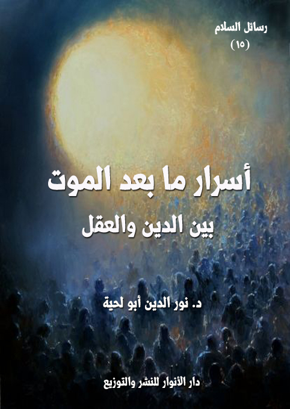

الكتاب: أسرار ما بعد الموت بين الدين والعقل
الوصف: مباحث المعاد بين الدين والعقل
المؤلف: أ.د. نور الدين أبو لحية
الناشر: مؤسسة العرفان للثقافة الإسلامية
الطبعة: الأولى، 1440 هـ
عدد الصفحات: 581
ISBN: 978-620-3-85902-7
لمطالعة الكتاب من تطبيق مؤلفاتي المجاني وهو أحسن وأيسر: هنا

التعريف بالكتاب
يبحث هذا الكتاب في أهم المسائل المرتبطة بالمصير الإنساني، وسعادته وشقائه، والحقائق المرتبطة بذلك، من خلال المصادر الدينية والعقلية والعلمية، وذلك في خمسة فصول هي:
1. الموت والنشآت الإنسانية، ويتضمن الأدلة الدينية والعقلية والعلمية الدالة على أن الموت ليس سوى مرحلة من مراحل الإنسان، وليس عدما، ولا فناء.
2. البرزخ وتجليات الحقائق، ويتناول الحقائق والأحداث المرتبطة بمرحلة البرزخ التي يكتشف فيها الإنسان الكثير من الحقائق الغيبية، ويتعذب بذلك، أو يتنعم به.
3. الموقف.. وتجليات العدالة، ويتناول الأحداث المرتبطة بالحشر والنشر والحساب والموازين والسراط وغيرها من التي ورد في النصوص المقدسة ذكر تفاصيلها، مع بيان علاقتها بصفات الله التي دل عليها العقل والنقل، وخاصة العدالة التي تتجلى في ذلك الموقف بأكمل صورها.
4. الجزاء الإلهي.. وتجليات العدالة والرحمة، وذكرنا فيه ما ورد في النصوص المقدسة من أنواع الفضل الإلهي لأهل الجنة، وأنواع العقوبات الإلهية لأهل النار، وعلاقة ذلك كله بالعمل والسلوك.
أسرار ما بعد الموت بين الدين والعقل (9)
تعتبر المسائل المرتبطة بحقيقة الموت، والمصير الإنساني بعده من أهم المسائل التي لا يمكن لأي عقل من العقول ألا يهتم بها، ذلك أنها تعطي لوجود الإنسان على هذه الأرض أبعادا جديدة لم يكن ليتصورها لولا ذلك الاعتقاد.
والوجوديون والملاحدة الذين يشاغبون بكونهم لا يهتمون إلا بوجودهم على هذه الأرض، وحياتهم فيها، واستثمارهم لكل لحظة، ويضحكون ساخرين من المؤمنين عند ذكرهم للموت وما بعده، يكذبون على أنفسهم، ذلك أنهم في قرارة نفوسهم لا يختلفون عن سائر الناس في شعورهم بالشوق للخلود والحياة الأبدية، ويتمنون لو يدوم ما هم فيه من نعيم.. ويرون أن أكبر المنغصات حلول الموت بهم، أو بمن يحبونه.
ولذلك نراهم يبذلون أموالا كثيرة لمراكز الأبحاث رجاء أن تزيد في شبابهم سنوات معدودة، أو تطيل من أعمارهم، أو تقضي على الأمراض التي تصيبهم.. وكل ذلك لأجل سنوات محدودة لا تساوي مع الخلود شيئا.
وفوق ذلك نراهم لا يشعرون بأي سعادة عندما يمارسون تلك الحياة اللاهية التي يتصورون أنهم يفرون بها من الموت، أو أنهم يهزمون بها الموت، لأن الموت دائما يتعقبهم ويمر على خيالهم، ولهذا يحزنون لكل شعرة تشيب، أو لكل مرض ينزل، أو لكل مصيبة تحل.
وهكذا تمر حياتهم مليئة بالتشاؤم واليأس الذي عبر عنه [شوبنهاور] فيلسوف التشاؤم المعروف بقوله: (حياة الإنسان كلها ليست إلا نضالا مستميتا من أجل البقاء على قيد الحياة مع يقينه الكامل بأنه سيهزم في النهاية).. وقوله: (ينبغي أن ندمر في داخلنا، وبكل الأشكال الممكنة، إرادة الحياة، أو الرغبة في الحياة، أو حب الحياة).. وقوله: (يُقال أن السماء تحاسبنا بعد الموت على ما فعلنا في الحياة الدنيا.. وأنا أظن أنه بإمكاننا أن نحاسبها أولًا عن
أسرار ما بعد الموت بين الدين والعقل (10)
المزحة الثقيلة للوجود الذي فُرض علينا من دون أن نعلم لماذا؟ وإلى أي هدف؟)
ومثله قال عالم الأعصاب، والمحلل النفسي النمساوي (فكتور فرنكل): (للكثير من الناس اليوم وسائل للحياة، غير أنهم يفتقدون معنى يعيشون لأجله) (1)
ولهذا نجدهم يلتمسون كل الوسائل والأساليب للاحتيال على أنفسهم، لتظفر ببدائل جديدة عن المعاد الذي يعتقده المؤمنون، وقد قال بعضهم معبرا عن تلك البدائل: (رغم هذا فإنني أعتبر الحياة (رغم عبثيتها) مقدّسة جدا. فنحن الملحدين على يقين بأننا نحظى بفرصة واحدة فقط للحياة - فرصة واحدة لا غير. فلا حياة أخرى ولا بعث أرواح ولا جنة ولا نار وما إلى ذلك. الحياة مباراة من جولة واحدة، لذا فمن المؤسف جدا أن يبعثرها المرء أو يضيعها سدى.. لذا، فلإعطاء هذه القدسية حقها الكامل، على المرء أن يستغل فترة وعيه الوجيزة جدا ككائن حي إلى أبعد الحدود. ثقّف نفسك وعلّمها، عزيزي القارئ، ليتسنى لك رؤية عجائب هذا الكون لما هي عليه فعلا، بمنأى عن ضباب الفكر الديني. إسبح في المحيط الهندي.. راقب غروب الشمس في وادي رم.. دغدغ رضيعا.. تسلق شجرة أو جبل.. تعلّم حرفة يدوية كالنجارة أو الفخارة.. إشتر منظارا ودليل فضاء وفلك للمبتدئين وتمعن في أعماق الكون وابحث عن كواكبه ومجراته.. كن سببا لتحسين حياة غيرك من الناس الأقل حظا واكتسب من عملك هذا المتعة والرضا، فهناك الكثير من البشر الذين يعيشون في ظروف من السوء لا توصف، ويكسبون في أسبوع ما قد تكسبه أنت في ساعة (هذا إن كانوا يكسبون شيئا أصلا).. تبرع بالدم بين الحين والآخر إن كانت صحتك تسمح.. إدعم ميتما أو داراً للعجزة.. إلخ) (2)
هذا هو العزاء الذي ذكره هذا الملحد، وذكره قبله وبعده الكثير من الملاحدة، وهو
__________
(1) انظر هذه النصوص وغيرها في كتابي [كيف تناظر ملحدا]، ص 380.
(2) انظر: الإلحاد ومعنى الحياة، ليث البرزنجي، الحوار المتمدن-العدد: 1164 - 2005/ 4 / 11 - 11:15.
أسرار ما بعد الموت بين الدين والعقل (11)
لا يختلف عن تلك المسكنات والمخدرات التي يهرب بها صاحبها عن الحقيقة المرة التي يعيشها.
وهذا العزاء الذي ذكره لا يمكن أبدا أن ينسجم مع كل الناس، ولا مع كل العقول، بل هو خاص فقط بطبقة محدودة من أصحاب الأموال الذين يمكنهم أن يمارسوا ما يشتهون حتى يشعروا بالعزاء، أما أولئك المستضعفين الفقراء، والذين تشكل الحياة عبئا كبيرا عليهم؛ فإن تلك العزاءات لن تفعل لهم شيئا، فالحياة عندهم مجموعة آلام..
ولذلك لا يستطيع الإلحاد أن ينقذهم من آلامهم، بل الوحيد الذي ينقذهم منها هو الإيمان، ولهذا نجد الملاحدة، ولأتفه الأسباب ينهارون، وينتحرون، لأن الحياة عندهم لا معنى لها، ولذلك لا معنى لتحمل العذاب فيها.
في مقابل هؤلاء نجد المؤمنين بالمعاد، وبالحياة بعد الموت، وبالمصير الجميل الذي ينتظرهم نراهم ينظرون إلى الحياة بصورة مختلفة تماما، ذلك أن الموت في أعينهم ليس نهاية الرحلة، بل هو بداية لها.. والقبر في أعينهم ليس محلا للظلمات الأبدية المطبقة، وإنما هو محل للسعادة أو الشقاء.
ولذلك تجدهم يستعملون كل الوسائل ليظفروا بتلك السعادة المخزّنة لهم في دار المعاد، والتي لم تستطع هذه الدنيا، بجميع ما فيها تلبيتها لهم.
وهكذا كان الإيمان بالمعاد مدرسة تربوية ونفسية كبيرة تهيئهم ليسيروا نحول الكمال الذي هيئ لهم.. فلا يمكن لشخص أن يسير نحو الكمال، وهو يعتقد أن رحلته في الحياة تنتهي بموته.
ولهذا نرى الأديان والفلسفات والمدارس التربوية المختلفة تهتم بالمعاد والحياة بعد الموت، وترى أنها من أهم القضايا التي لا يمكن الاستهانة بها، بل لا يمكن تشكيل منظومة تربوية كاملة من دونها.
أسرار ما بعد الموت بين الدين والعقل (12)
وعلى رأس هذه المصادر التي اهتمت بهذه المسائل اهتماما عظيما، القرآن الكريم الذي يذكره في كل محل، ويربطه دائما بالإيمان بالله، ذلك أن الإيمان بالله وحده، ليس له مفعول كبير عند أكثر الناس، ما لم يقترن به الإيمان باليوم الآخر.
فاليوم الآخر دليل على الرحمة والعدالة والقدرة والحكمة الإلهية، وهو أكبر ما يرد على نظرية الشر التي يعتبرها الملاحدة المعضلة الكبرى التي تحول بينهم وبين الإيمان بالله.
فعندما يوقن المؤمن أنه سينال بعد الموت جزاء كل ألم أصابه، وأجر كل جهد بذله، وأن كل من أصابه بأذى سينال عقابه الذي لم ينله في الدنيا، سيشعر بالراحة، وسيهون عليه الألم، وسيقبل على جميع المكارم ينهل منها، ويضحي في سبيلها بكل راحته ولذاته.. وهو ما يساهم في رفعه إلى المقامات العليا من سلم الأخلاق والقيم النبيلة.
ولهذا نرى القرآن الكريم يجعل المواعظ وتأثيرها محصورة في المؤمنين بالله واليوم الآخر، كما قال تعالى: {ذَلِكُمْ يُوعَظُ بِهِ مَنْ كَانَ يُؤْمِنُ بِالله وَالْيَوْمِ الْآخِرِ} [الطلاق: 2]، وقال: {يَاأَيُّهَا الَّذِينَ آمَنُوا أَطِيعُوا الله وَأَطِيعُوا الرَّسُولَ وَأُولِي الْأَمْرِ مِنْكُمْ فَإِنْ تَنَازَعْتُمْ فِي شَيْءٍ فَرُدُّوهُ إِلَى الله وَالرَّسُولِ إِنْ كُنْتُمْ تُؤْمِنُونَ بِالله وَالْيَوْمِ الْآخِرِ ذَلِكَ خَيْرٌ وَأَحْسَنُ تَأْوِيلًا} [النساء: 59]
وهكذا يقرن رسول الله صلى الله عليه وآله وسلم بين الإيمان بالله واليوم الآخر، وكل السلوكات الطيبة، ومن الأمثلة على ذلك قوله: (من كان يؤمن بالله واليوم الآخر فليقل خيرا أو ليصمت، ومن كان يؤمن بالله واليوم الاخر فليكرم جاره، ومن كان يؤمن بالله واليوم الاخر فليكرم ضيفه) (1)، وقوله: (من كان يؤمن بالله واليوم الآخر فليحسن إلى جاره. ومن كان يؤمن بالله واليوم الآخر فليكرم ضيفه. ومن كان يؤمن بالله واليوم الآخر فليقل خيرا أو
__________
(1) البخاري [فتح الباري] 10 (6146)، ومسلم (47) واللفظ له.
أسرار ما بعد الموت بين الدين والعقل (13)
ليسكت) (1)
وغيرها من الأحاديث الكثيرة التي تبين أنه لا يمكن أن تتحقق للإنسان أي دافعية للعمل الصالح، أو بذل الجهد والتضحية في سبيله ما لم يمتلئ قناعة وإيمانا باليوم الآخر.
بالإضافة إلى ذلك، فإن فاقد هذا الإيمان لن يتميز بأي شيء آخر عن المؤمن به، فلا هو يسعد في حياته الدنيا سعادة زائدة، ولا هو يتخلى عن الآلام التي تصيب المؤمن بالله، لأن الآلام تصيبهم وتصيب البشر جميعا، ولكنها تُهون للمؤمن نتيجة إيمانه وتعظم للكافر نتيجة جحوده، ولهذا أخبر الله تعالى أن تنعم الإنسان في الآخرة لن يحول بينه وبين التنعم في الدنيا، كما قال تعالى: {مَنْ عَمِلَ صَالِحًا مِنْ ذَكَرٍ أَوْ أُنْثَى وَهُوَ مُؤْمِنٌ فَلَنُحْيِيَنَّهُ حَيَاةً طَيِّبَةً وَلَنَجْزِيَنَّهُمْ أَجْرَهُمْ بِأَحْسَنِ مَا كَانُوا يَعْمَلُونَ} [النحل:97]
وفي الحديث قال رسول الله صلى الله عليه وآله وسلم: (عجبا لأمر المؤمن! إن أمره كله له خير، وليس ذلك لأحد إلا للمؤمن، إن أصابته سراء شكر، فكان خيرا له، وإن أصابته ضراء صبر، فكان خيرا له، وليس ذلك لأحد إلا للمؤمن) (2)
ولهذا نرى المدافعين عن الإيمان بالله واليوم الآخر يوردون على الجاحدين بها ذلك الرهان الذي عبر عنه أبو العلاء المعري بقوله:
زعم المنجم والطبيب كلاهما... لا تبعث الأجساد قلت: إليكما
إن صح قولكما فلست بخاسر... أو صح قولي فالخسار عليكما
وعبر عنه آخر بقوله: (قال الملحد للمؤمن: ما موقفك اذا مت ولم تجد الجنة! فرد المؤمن: لن يكون اسوأ من موقفك اذا مت ووجدت النار!)
وعبر عنه مصطفى محمود في حواره مع صديقه الملحد، والذي ذكر أنه قال له
__________
(1) مسلم (48)
(2) رواه مسلم (8/ 227)
أسرار ما بعد الموت بين الدين والعقل (14)
ساخرا: (ماذا يكون الحال لو اخطأت حساباتك، وانتهيت بعد عمر طويل إلى موت وتراب ليس بعده شيء؟)، فأجابه مصطفى محمود بقوله: (لن أكون قد خسرت شيئا.. ولكنكم أنتم سوف تخسرون كثيرا لو أصابت حساباتي وصدقت توقعاتي.. وإنها لصادقة.. سوف تكون مفاجئة هائلة يا صاحبي) (1)
وعبر عنه ـ قبل ذلك كله ـ الإمام الصادق مع بعض الملاحدة، حيث قال مخاطبا له: (إن يكن الأمر على ما يقول هؤلاء وهو على ما يقولون، يعني المؤمنين، فقد سلموا وعطبتم وإن يكن الأمر على ما تقولون وليس كما تقولون فقد استويتم وهم)، فقيل له: وأي شي ء نقول وأي شي ء يقولون ما قولي وقولهم إلا واحد؟ فقال: (وكيف يكون قولك وقولهم واحدا، وهم يقولون إن لهم معادا وثوابا وعقابا ويدينون بأن في السماء إلها وأنها عمران، وأنتم تزعمون أن السماء خراب ليس فيها أحد..) (2)
وهو ما يعرف الآن باسم [رهان باسكال]، وهو الرهان الذي استعمله الفيزيائي والرياضي والفيلسوف الفرنسي بليز باسكال (1623 - 1662) والذي يمكن صياغته على الشكل التالي (3):
1 - إن آمنتَ بالله وكان الله موجوداً، فسيكون جزاؤك الخلود في الجنة، وهذا ربح لامحدود.
2 - إن لم تؤمن بالله وكان الله موجوداً، فسيكون جزاؤك الخلود في جهنم، وهذه خسارة لامحدودة.
3 - إن آمنتَ بالله وكان الله غير موجود، فلن تُجزى على ذلك، وهذه خسارة محدودة.
__________
(1) حوار مع صديقي الملحد، ص 85.
(2) الكافي، ج 1 ص 74..
(3) انظر: الصراط المستقيم في الحجج والبراهين: رهان باسكال، آية الله السيد مرتضى الشيرازي، شبكة النبأ.
أسرار ما بعد الموت بين الدين والعقل (15)
4 - إن لم تؤمن بالله وكان الله غير موجود، فلن تُعاقب لكنك ستكون قد عشت حياتك، وهذا ربح محدود.
بناء على هذه الدوافع العلمية والتربوية، نحاول في هذا الكتاب خطاب العقل الإنساني بما يعرفه من مصادر وأساليب للاستدلال، ليتحول الإيمان عنده وفيه بهذا العالم من مجرد احتمال بسيط أو عادي إلى حقيقة كبرى، لا يدل عليها الدين فقط، بل يدل عليها العقل أيضا.
وهو ما يجعل من ذلك الإيمان مؤثرا ومحركا في الحياة، لأن سبب التأثير المحدود لحقائق المعاد لا يعود إلى ذاتها، وإنما يعود إلى ذلك القصور في معرفتها، أو معرفة براهينها، وهذا هو الواقع للأسف؛ فأكثر الناس يحملون إيمانا جمليا تقليديا غير مؤيد بالبراهين الكافية، ولذلك لم يعد لإيمانهم ذلك التأثير الكبير المرتبط به.
وقد زاد في الانصراف عن الاهتمام بهذا النوع من المسائل مع أهميتها ذلك التوظيف الخاطئ الذي قام به المتطرفون والإرهابيون عندما راحوا يستثمرون ما يرتبط بهذا الجانب في الدعوة للعنف والتطرف.
ولذلك دعانا كل هذا إلى الاهتمام بهذه المسألة، وطرحها بطريقة ينسجم فيها العقل مع النقل، والحقائق مع القيم.
وقد ذكر الغزالي في نتائج بحثه عن سر الغرور والابتعاد عن الدين ذلك الموقف المعادي لمسائل المعاد، فقال ـ عند ذكره لغرور الكفار ـ: (فأول ما نبدأ به غرور الكافر، وهو قسمان: منهم من غرته الحياة الدنيا.. ومنهم من غره بالله الغرور.. أما الذين غرتهم الحياة الدنيا وهم الذين قالوا: النقد خير من النسيئة.. ولذات الدنيا يقين.. ولذات الآخرة شك.. ولا يترك اليقين بالشك) (1)
__________
(1) أصناف المغرورين (ص: 25)
أسرار ما بعد الموت بين الدين والعقل (16)
ثم بين وجه فساد هذا الدليل، فقال: (وهذا قياس فاسد.. وهو قياس إبليس لعنه الله تعالى فى قوله: أنا خير منه.. فظن أن الخيرية فى النسب.. وعلاج هذا الغرور شيئان: إما بتصديق وهو الإيمان.. وإما ببرهان.. أما التصديق فهو أن يصدق الله تعالى فى قوله {وَمَا عِنْدَ الله خَيْرٌ وَأَبْقَى أَفَلَا تَعْقِلُونَ} [القصص: 60].. وتصديق الرسول صلى الله عليه وآله وسلم فيما جاء به.. وأما البرهان: وهو أن يعرف وجه فساد قياسه.. أن قوله: الدنيا نقد والآخرة نسيئة مقدمة صحيحة وأما قوله: النقد خير من النسيئة. فهو محل التلبيس) (1)
بناء على هذا كله قسمنا الكتاب بحسب المراحل التي يمر بها الإنسان بعد الموت، والتي وردت بها النصوص المقدسة، ودل عليها العقل، إلى خمسة فصول:
تناولنا في الفصل الأول: الموت والنشآت الإنسانية، وحاولنا أن نبرهن فيه بالأدلة الدينية والعقلية والعلمية الكثيرة على أن الموت ليس سوى مرحلة من مراحل الإنسان، وليس عدما، ولا فناء.
وتناولنا في الفصل الثاني: البرزخ وانكشاف الحقائق، وبينا فيه ما ورد في النصوص المقدسة من حقائق ترتبط بهذه المرحلة التي يكتشف فيها الإنسان الكثير من الحقائق الغيبية، ويتعذب بذلك، أو يتنعم به.
وتناولنا في الفصل الثالث: المعاد.. وتجليات العدالة، وبينا فيه الأحداث المرتبطة بالحشر والنشر والحساب والموازين والسراط وغيرها من التي ورد في النصوص ذكر تفاصيلها، مع بيان علاقتها بصفات الله التي دل عليها العقل والنقل، وخاصة العدالة التي تتجلى في ذلك الموقف بأكمل صورها.
وتناولنا في الفصل الرابع: الجزاء الإلهي.. وتجليات العدالة والرحمة، وذكرنا فيه ما ورد في النصوص المقدسة من أنواع الفضل الإلهي لأهل الجنة، وأنواع العقوبات الإلهية
__________
(1) المرجع السابق، (ص: 25)
أسرار ما بعد الموت بين الدين والعقل (17)
لأهل النار، وعلاقة ذلك كله بالعمل والسلوك، ليكون الفضل الإلهي دافعا للعمل، لا للكسل، فكلما ورد ذكر الجنة في القرآن الكريم ذكر معه العمل الصالح، ولذلك لا يصح أن يُذكر النعيم مجردا عن الأعمال المرتبطة به، كما لا يصح لأحد في الدنيا أن يذكر فضل سلعة دون أن يذكر الثمن الذي تباع به.
وهكذا ذكرنا فيه ما ورد في النصوص المقدسة من أنواع العقوبات الإلهية، والأعمال المرتبطة بها، مثلما نرى في قوانين العقوبات الدنيوية من ربط كل جريمة بالعقوبة المناسبة لها.
وننبه إلى أننا حاولنا الرجوع لجميع المصادر المقدسة الإسلامية وغير الإسلامية، باعتبارها جميعا تتفق على الإيمان بما بعد الموت، كما قال تعالى: {إِنَّ الَّذِينَ آمَنُوا وَالَّذِينَ هَادُوا وَالنَّصَارَى وَالصَّابِئِينَ مَنْ آمَنَ بِالله وَالْيَوْمِ الْآخِرِ وَعَمِلَ صَالِحًا فَلَهُمْ أَجْرُهُمْ عِنْدَ رَبِّهِمْ وَلَا خَوْفٌ عَلَيْهِمْ وَلَا هُمْ يَحْزَنُونَ} [البقرة: 62]، وقال: {إِنَّ الَّذِينَ آمَنُوا وَالَّذِينَ هَادُوا وَالصَّابِئُونَ وَالنَّصَارَى مَنْ آمَنَ بِالله وَالْيَوْمِ الْآخِرِ وَعَمِلَ صَالِحًا فَلَا خَوْفٌ عَلَيْهِمْ وَلَا هُمْ يَحْزَنُونَ} [المائدة: 69]
وهكذا رجعنا في الاستدلالات العقلية لكل المدارس الفلسفية والكلامية وغيرها، من المسلمين وغير المسلمين، لأن الحكمة ضالة المؤمن، أين وجدها، فهو أحق بها.
أسرار ما بعد الموت بين الدين والعقل (18)
لا يمكننا اكتشاف أسرار ما بعد الموت، ما لم نعرف الموت نفسه، وهل هو النهاية التي تنتهي معها الحياة، وتنتهى معها جميع أسرارها، أم هو البداية لحياة جديدة، وبقوانين جديدة، نحتاج إلى التعرف عليها، لنعرف كيف نهيئ أنفسنا لها.
وهذا يدعونا إلى البحث عن حقيقة الحياة نفسها.. فلا يمكننا أن نعرف الموت ما لم نعرف الحياة، وهل هي مختصرة في هذا الجسد الذي تنقطع صلة الإنسان به بعد موته، أم أنها شيء آخر؟
وهذا يدعونا ـ أيضا ـ إلى البحث عن هذا الجسد الذي نعيش به، وهل هو نحن، أم أنه ليس سوى مركب لحقيقة أخرى تمثل الأنا الحقيقي، ونحن لا نراها، لا بسبب عدم وجودها، وإنما لكونها مثل العين التي نرى بها، وفي نفس الوقت لا تستطيع أن ترى نفسها إلا من خلال غيرها؟
وهكذا يصبح البحث في الموت وحقيقته مرتبطا بالحياة وحقيقتها.. وهل قوانين الحياة التي نعرفها قوانين لازمة لا تنفك عنها، أم أن هناك قوانين أخرى للحياة غير القوانين التي نعرفها؟
أو بعبارة أخرى: هل الحياة مختصرة في هذه الصورة التي يتنفس فيها الإنسان الأكسوجين، ويشرب الماء، ويأكل الطعام، ويتحرك برجليه، ويمسك الأشياء بيديه.. أم أنه يمكن أن تكون هناك حياة أخرى لا يحتاج فيها الإنسان، ولا غيره من الأحياء إلى كل ذلك؟
هذه هي التساؤلات التي ينطلق منها البحث في الموت، وقد أجاب عنها العقل
أسرار ما بعد الموت بين الدين والعقل (19)
الإنساني إجابتين متناقضتين:
أما الأولى: فهي إجابة أكثر عقلاء العالم من الفلاسفة والمفكرين ورجال الدين وعلى مدار التاريخ، وهي اعتبار الموت بداية لمرحلة جديدة، وأن هناك حياة أخرى غير الحياة التي نراها، وأن الإنسان ليس قاصرا على هذا الجسد، بل الجسد ليس سوى مركب من مراكبه التي يستبدلها بغيرها بعد أن تنتهي صلاحيتها.
وأما الثانية: فهي إجابة بعض العقلاء والعلماء أيضا.. وهم محدودون جدا مقارنة بالأولين.. ويرون أن للحياة صورة واحدة هي التي نراها في المعامل البيولوجية.. وأن ما عداها هو الموت المطبق، والذي يعني العدم المطبق.
وللأسف فإن هذه النظرة الثانية مع افتقارها لكل الأدوات العلمية، ومخالفتها لكل العقول، وعلى مدار التاريخ، صارت توصف بالعلمية، وصار لها امتداد كبير في الواقع، وهو ما هيأ الأرضية للإلحاد.. ذلك أن إنكار حياة أخرى خارج نطاق المادة يستدعي بالضرورة الإلحاد..
والمشكلة الأكبر ليس في تبني هذه الجهة لتلك الرؤية والموقف من الحياة والموت، وإنما في احتكارها للعلم، وتوهمها أن الحقيقة محصورة فيما تفكر فيه، أو فيما تكشفه لها المخابر والمعامل.
ولذلك نراها تستعلي على كل الرؤى التي تخالفها، وتتهمها بالخرافة، وتخرجها من نطاق العلمية، وكأنها المسؤولة عن العلم، والمفوض لها التمييز بين ما هو علم، وما هو خرافة، مع العلم أن كبار العلماء والعقلاء على مدار التاريخ يخالفونها في هذه الوجهة.
ومن الأمثلة على هذا الاستعلاء ما نقلته كبار وسائل الإعلام عن هوكينغ وموقفه من الجنة، فقد أورد موقع (CNN) الإخباري التابع لأكبر شبكة قنوات أمريكية هذا الخبر وبهذا العنوان المثير [هوكينغ: لا وجود للجنة والحياة الآخرة قصة خرافية]، ثم أوردت
أسرار ما بعد الموت بين الدين والعقل (20)
الخبر، وكأن هوكينغ اكتشف دواء عجز الأطباء عن اكتشافه، حيث ورد في الخبر: (مفهوم [الجنة] أو أي نوع من الحياة الآخرة عبارة عن [قصة خرافية] هذا ما قاله عالم الفيزياء البريطاني الشهير ستيفن هوكينغ في مقابلة صحفية هذا الاسبوع، وسط احتمال أن تثير تصريحاته جدلاً واسعاً آخر خصوصاً بين رجال الدين واللاهوت.. وأضاف هوكينغ في المقابلة التي نشرتها صحيفة الغارديان البريطانية الأحد: (أنا أعتبر الدماغ كجهاز كمبيوتر يتوقف عن العمل عندما تفشل مكوناته)، مضيفاً: (ليس هناك من جنة أو حياة آخرة لأجهزة كمبيوتر محطمة، وهي أشبه بقصة خرافية للناس الذين يخشون من الظلام) (1)
هذا ما نقلته هذه القناة الإخبارية التي يتابعها مئات الملايين، ولو أنها نقلت كلام كل العلماء في المسألة لكان مقبولا، لكن اهتمامها ا لخاص برؤية هوكينغ مع تلك الهالة العظمى التي أعطيت له، حول الأمر من موقف شخصي إلى مسألة علمية، يستثمر فيها العلم ـ وبطريقة خاطئة ـ لغرس أيديولجيات الإلحاد.
ولذلك نحاول في هذا الفصل بيان مدى تهافت التصورات التي يعتمد عليها المنكرون للعالم الآخر، والذين يحكمون على الحياة وفق ما يرونه ويعيشونه، من غير إعطائها فرصة أخرى لتعبر عن نفسها بطريقة جديدة.
ومن خلال استقرائنا للأدلة التي يمكن اعتمادها في هذا الباب، فقد رأينا أنه يمكن تقسميها إلى أربعة أقسام:
أولها ـ براهين الفطرة: ونقصد بها تلك الأدلة النابعة من عالم النفس، والذي دل عليه الواقع، ولجميع البشر، وفي جميع فترات التاريخ.
ثانيها ـ براهين الدين: ونقصد بها تلك الأدلة التي اتفقت عليها الأديان، وخصوصا
__________
(1) هوكينغ: لا وجود للجنة والحياة الآخرة قصة خرافية، موقع (CNN) الإخباري، السبت، 18 حزيران/يونيو 2011.
أسرار ما بعد الموت بين الدين والعقل (21)
الإسلام باعتباره الدين المهيمن عليها، والشارح لحقائقها.
ثالثها ـ براهين العقل: ونقصد بها تلك الأدلة التي نص عليها الفلاسفة والمتكلمون، ودلت عليها العقول السليمة التي لم تدنس بدنس الإلحاد.
رابعا ـ براهين العلم: ونقصد بها تلك الأدلة التي دل العلم المتواضع من خلالها على أن الحياة أكبر من أن تختصر فيما نعرفه منها.
ويشير إلى هذا النوع من الأدلة قوله تعالى: {وَفِي أَنْفُسِكُمْ أَفَلا تُبْصِرُونَ} (الذاريات:21)، وقوله: {سَنُرِيهِمْ آيَاتِنَا فِي الْآفَاقِ وَفِي أَنْفُسِهِمْ حَتَّى يَتَبَيَّنَ لَهُمْ أَنَّهُ الْحَقُّ أَوَلَمْ يَكْفِ بِرَبِّكَ أَنَّهُ عَلَى كُلِّ شَيْءٍ شَهِيدٌ} (فصلت:53)
وهو من البراهين التي استدل بها الفلاسفة وغيرهم، ويمكن لأي شخص أن يكتشفها في نفسه، فالله تعالى أودع فينا من المعارف ما نتفق عليه جميعا.
ومن أكبر الأدلة عليها أننا نجد الشيخ الكبير، والذي قد هرم جسده، وانحل أكثر خلاياه لا يزال يملك في نفسه ومشاعره كل همم الشباب ورغباتهم.. بل إننا قد نجده يخطط ويدخر لسنوات كثيرة لا يطمع لأن يعيش لها.. ولو أن نفسه كانت تابعة لجسده، لما فكر مثل هذا التفكير، ولا هم بمثل هذه الهمم.
وهكذا نرى في النفس الإنسانية تطلعا للخلود وشوقا إليه.. ولذلك يستعمل الإنسان كل الوسائل للفرار من الموت، ومن أسبابه.. وهذه الرغبة لا يمكن أن تكون ناشئة عن فراغ.. ذلك أن لكل رغبة من الرغبات الموجودة في النفس ما يغطيها، ويلبي حاجتها.
فالعطش والرغبة في الماء.. دلتنا على وجود الماء.. والرغبة في الطعام دلتنا على وجود كل الأطعمة التي نشتهيها، وبحسب الأذواق التي ركبت في طباعنا..
أسرار ما بعد الموت بين الدين والعقل (22)
وهكذا نجد كل الرغبات لها ما يلبيها في الواقع، وبأنواع كثيرة جدا.. تفوق حد الضرورة والحاجة..
ومثل هذا الرغبة في الخلود والسعادة الأبدية.. فهي موجودة فينا، ويكذب على نفسه من يزعم عدم إحساسه بها.. ولذلك كانت هذه الرغبة دليلا على وجود ما يمثلها في الواقع.. مثلما نستدل بوجود الماء والطعام وكل ما نشعر بحاجتنا إليه.
بل إن الشعور بالرغبة في الخلود أعظم من كل الرغبات.. ولذلك لم يؤسس الطب ولا كل العلوم المرتبطة به إلا للسعي لتحقيق بعض متطلبات تلك الرغبة.
وقد أشار إلى هذا المعنى بديع الزمان النورسي بقوله: (يرى العلماء المحققون أن أفكار البشر وتصوراتِه الإنسانيةَ التي لا تتناهى المتولّدةَ من آماله غير المتناهية، الحاصلةَ من ميوله التي لا تُحد، الناشئةَ من قابلياته غير المحصورة، المندمجةَ في استعداداته الفطرية غير المحدودة، المندرجةَ في جوهر روحه، كلُّ منها تمدّ أصابعَها فتشير وتحدُق ببصرِها فتتوجّه إلى عالم السعادة الأبدية وراء عالم الشهادة هذا. فالفطرةُ التي لا تكذب أبدا والتي فيها ما فيها من ميلٍ شديد قطعي لا يتزحزحُ إلى السعادة الأخروية الخالدة تعطي للوجدان حدسا قطعيا على تحقق الحياةِ الأخرى والسعادة الأبدية) (1)
ويقول: (نعم، إنّ دارَ الدنيا القصيرة هذه لا تكفي ـ كما أنها ليست ظرفا ـ لإظهار ما لا يحدّ من الاستعدادات المندمجة في روح الإنسان وإثمارِها، فلابدّ أن يُرسَل هذا الإنسان إلى عالم آخر.. نعم، إنّ جوهر الإنسان عظيم، لذا فهو رمز للأبدية ومرشّح لها. وإنّ ماهيتَه عالية وراقية؛ لذا أصبحت جنايتُه عظيمة؛ فلا يشبه الكائنات الأخرى، وإن نظامَه دقيق ورائع، فلن تكونَ نهايتُه دون نظام، ولن يُهمَل ويذهب عبثا، ولن يُحكم عليه بالفناء المطلق ويهرب إلى العدم. وإنما تفتح جهنمُ أفواهَها فاغرةً.. تنتظره.. والجنة تبسط ذراعيها
__________
(1) الكلمات، ص 607.
أسرار ما بعد الموت بين الدين والعقل (23)
لاحتضانه..) (1)
وهذا الدليل يشبه كثيرا الدليل الأنطولوجي لأنسلم وديكارت، ودليل الصديقين للفارابي وابن سينا والملا صدرا.. فكل هذه الأدلة تعتمد على تلك الحقائق التي ركزت في نفس الإنسان، فأصبحت من البديهيات التي لا يحتاج إلى الاستدلال لها.
وكمثال على ذلك فإن الدليل الذي ينص على أن (الموجود الذي لا يمكن تصور شيء أعظم منه لا يمكن أن يوجد في العقل وحده، وبالفعل، حتى إذا كان موجودا في العقل وحده، فمن الممكن أن نتصور موجودا مثله له وجود في الواقع أيضا، وهو بالتالي أعظم منه، وعليه، إذا كان موجودا في العقل وحده، فإن الموجود الذي لا يمكن تصور شيء أعظم منه سيكون من طبيعة تستلزم أن يكون بالإمكان تصور شيء أعظم منه) (2)
والذي ينسب إلى أنسلم يمكن تطبيقه هنا، فالإنسان يشعر بأن هذه الحياة لا تكفي لتلبية رغباته الكثيرة، ولا تفي برد حقوقه المستلبة، ولذلك يتطلع إلى حياة أخرى، يجد في نفسه شوقا كبيرا إليها.
وهذه ليست عقدة نفسية كما يتوهم الذين يجعلون من الحياة بعد الموت نوعا من التفكير الرغبوي، ذلك أن هذه الرغبة متفق عليها بين البشر جميعا، وفي جميع العصور، وهي تدل على أن لها واقعا لم نكتشفه لأننا لم نرحل بعد إلى ذلك العالم.
ولو كانت تفكيرا رغبويا لانحصرت في أشخاص دون أشخاص، أو طائفة دون طائفة، مثلما نرى الكثير من النزغات الشاذة، أو العقد النفسية التي يحاول المرضى أن يحولوا منها حقائق واقعية، ولو كانت كذلك لاشترك البشر جميعا في الانفعال لها، مثلما يشتركون في عطشهم وجوعهم وأشواقهم المختلفة.
__________
(1) المرجع السابق، ص 612.
(2) إميل برهييه في تاريخ الفلسفة (3/ 51)
أسرار ما بعد الموت بين الدين والعقل (24)
بناء على هذا سنذكر هنا نماذج مختلفة تدل على مدى فطرية هذا الاعتقاد، وشموله لكل الناس قديما وحديثا، ومن يوصفون بالخرافة، أو من يوصفون بكونهم من أهل العلم.
1. الموت.. وتصورات الحضارات القديمة
من الملاحظات الجديرة بالاهتمام أننا نرى كل الحضارات تعتقد الحياة بعد الموت، وبوجود الروح، وإن كانت تختلف في تصوير ذلك، بناء على الخرافات التي صورها لها الخيال أو رجال الدين، وأكبر دليل على ذلك تلك الطقوس التي تقام للموتى، ولم تكن لتقام لو كان الموت انفصالا نهائيا عن الحياة، وبكل معانيها.
ومن الأمثلة على ذلك الحضارة المصرية القديمة، والتي كانت تقوم على الكثير من المعتقدات، وكان من أهمها تلك المعتقدات المرتبطة بالحياة بعد الموت، يقول بعض الباحثين في ذلك: (إيمان المصريين بولادة جديدة بعد الموت أصبحت القوة الدافعة وراء ممارسات جنازة خاصة بهم. وكأن الموت مجرد انقطاع مؤقت، بدلاً من التوقف الكامل عن الحياة، وأنه يمكن ضمان الحياة الأبدية عن طريق وسائل مثل التقوى للآلهة، والحفاظ على الشكل المادي من خلال التحنيط، وتوفير التماثيل والمعدات الجنائزية الأخرى) (1)
وينقل عن باحث آخر قوله: (وقد تأثر موقف المصريين القدماء من الموت بإيمانهم بالخلود، واعتبروا الموت بمثابة انقطاع مؤقت، بدلاً من توقف الحياة. ولضمان استمرارية الحياة بعد الموت، ألقى الناس تحية للآلهة، سواء أثناء حياتهم أو بعدها على الأرض. عندما ماتوا، كانوا محنطين، حتى الروح سوف تعود إلى الجسم، مما يعطيها التنفس والحياة، وقد وضعت المعدات المنزلية والطعام والشراب على تقديم طاولات خارج غرفة الدفن لتوفير احتياجات الشخص في العالم بعد الدفن. كما تم تضمين النصوص الجنائزية المكتوبة التي
__________
(1) إشكالية الموت في الديانات السماوية والأرضية، يسرى وجيه السعيد، مجلة ذوات الصادرة عن مؤسسة مؤمنون بلا حدود، عدد 43.
أسرار ما بعد الموت بين الدين والعقل (25)
تتكون من نوبات أو صلاة لمساعدة الموتى في طريقهم إلى عالم ما بعد الحرب) (1)
ويذكر الباحثون أن المصريين في حضارتهم القديمة كانوا يؤمنون بالبعث، وأن معتقداتهم تذكر أنه يمكن للإنسان أن يحافظ على حياته بعد الموت إذا حافظ على كينونته، وهي تتركب عندهم من 4 أجزاء: الاسم (رين)، الروح (با)، الظل (شيوت) والنفس (كا).
وجميع هذه الأجزاء ـ كما يرى المصريون القدامى ـ (تولد مع الإنسان، فالاسم والروح والظل والنفس ترافقه مدى الحياة وما بعد الحياة كجزء من كيانه، وعند الموت تبقى هذه المركبات ملازمة للميت، وتبقى الـ[با]؛ أي الروح، حية حتى بعد موت الجسد. وقد صوّرها المصريون في رسوماتهم على هيئة جسد طائر برأس بشري، وهي تطير منتقلة ما بين العالم المادي والعالم الأخروي، تتماهى مع حركة الشمس، تحلق في بزوغها ثم تعود إلى القبر والعالم السفلي عند الغروب. وقد آمن المصريون بأن الـ[با] لا يمكنها العودة إلى القبر ما لم تتعرف على جسد الميت، ومن ثم، لا يمكن للمرء أن يعود إلى الحياة إذا فني جسد الميت ولم تتعرف الروح إليه. ولهذا حرص المصريون على المحافظة على الجسد، فمارسوا مهمة التحنيط التي تخدم المرء في عودة روحه إلى جسده بعد الموت؛ فبدون جسد لا يوجد اسم ولا ظل ولا نفس، وهي أمور يحتاجها الميت للمثول أمام محكمة الآلهة للمحاسبة على أفعاله، ومن ثم يُبعث من جديد في الحياة الأخرى) (2)
وهم يربطون هذه المعتقدات التي تختلط فيها الحقيقة بالخرافة بالكثير من السلوكات التي يمتزج فيها العقل مع الشعوذة، وقد وصلنا ما يسمى بكتاب الموتى الفرعوني، والذي
__________
(1) المرجع السابق، وقد نقلت النص عن موسوعة ستانفورد للفلسفة، في تعريف الموت.
(2) هاجس البعث: الموت والقيامة في الحضارات الإنسانية، أحلام رحال، مدونة الأجنحة والنور، على الرابط التالي: https://ahlam 002.wordpress.com
أسرار ما بعد الموت بين الدين والعقل (26)
يعرف ببردية [حونفر]، وهو يتكون من مجموعة مفصلة من التعاويذ والتمائم السحرية التي كانت تنقش على جدران المقابر أو على التوابيت، وذلك إبان عصر الدولة القديمة (ما بين 2780 ق. م و2263 ق. م)، لتتحول إلى بردية مكتوبة خلال عصر الدولة الوسطى والحديثة (ما بين 2134 ق. م و1069 ق. م)، حيث تكتب نصوص التعاويذ وتوضع البردية في التابوت إلى جانب المومياء.
وقد استغل الكهنة هذه المعتقدات في طلب الأموال الكثيرة لكتابة تلك التعويذات والتمائم التي تنجي صاحبها بعد الموت.. يقول بعض الباحثين: (ولم يكن هذا الأمر متوفراً لكل المصريين، ?نه مكلف جداً. لذلك، اختصت به طبقة معينة من النبلاء والموظفين وخدام الآلهة في المعبد. تلك التعاويذ والتمائم التي يحملها الكتاب هي تعليمات إرشادية تمكّن الميت من تخطي العقبات والمخاطر التي ستصادف روحه في أثناء رحلته إلى الحياة الأخرى، وتدله أيضاً على الوسائل التي يتعين عليه أن يستخدمها، ليتمم هذه الرحلة بنجاح من دون أن يتعرض لأي سوء) (1)
وتحفظ لنا الكتب المصرية القديمة الكثير من الأدعية والتعويذات الدالة على اعتقادهم بالقوانين التي تحكم عالم ما بعد الموت، ومنها أنهم كانوا يرددون: (لم أقم بشر ضد الناس، لم أطغَ على الضعفاء، لم أقم بأي شيء باطل، لم أترك أي إنسان جائع، لم أرغم أيّ إنسان أن يشتغل أكثر من ما هو قادر عليه، لم أترك أيّاً كان يبكي ويتألم من شيء قمت به، أنا نظيف أنا نظيف أنا نظيف) (2)
ونفس الشيء نجده في الحضارة السومرية، وقد قال بعض الباحثين في ذلك: (إن
__________
(1) كتاب الموتى الفرعوني وأسطورة البعث من الموت والحساب أمام الآلهة، مهدي بو عبيد، موقع شباب الشرق الأوسط، على الرابط التالي: http://ar.mideastyouth.com/?p=47790.
(2) المرجع السابق.
أسرار ما بعد الموت بين الدين والعقل (27)
مصادر معتقدات بلاد ما بين النهرين في الآخرة تأتي من فترات متميزة في تاريخ بلاد ما بين النهرين، وتشمل الثقافات السومرية والأكادية والبابلية والآشورية. لذلك، يجب أن نكون حريصين على عدم اعتبار معتقدات ما بعد النهر في بلاد ما بين النهرين ثابتة أو موحدة. ومثل كل النظم الثقافية، تحولت أفكار بلاد ما بين النهرين من الحياة الآخرة على مر الزمن. كما تباينت المعتقدات والممارسات المتعلقة بالحياة الآخرة مع الوضع الاجتماعي والاقتصادي وتختلف في النماذج الدينية الرسمية والشعبية. ومع هذا، فإن الاستمرارية الثقافية بين الحضارة السومرية وخلفائها تسمح بتوليف مصادر متنوعة من أجل توفير مقدمة عمل لمفاهيم بلاد ما بين النهرين في الحياة الآخرة) (1)
ومن الأساطير التي كانت تنتشر إبان الحضارة السومرية، والمرتبطة بالحياة بعد الموت تلك الأسطورة التي تذكر أن (الإله الراعي دوموزي (تموز في الصيغة البابلية) كان قد تجنب الوقوع في شباك الإلهة عشتار، فسلمته عقاباً له لناظر العالم السفلي. وبعد حين شعرت عشتار بالندم على فعلتها، فقررت إنقاذه من الموت. عقدت عشتار صفقة مع آلهة العالم السفلي لإعادة دوموزي، على أن يحل أحد مكانه لبضعة أشهر يعود فيها إلى الحياة، ثم بعد فترة ينزل للعالم السفلي من جديد. تطوعت كوشتينانا (أخت دوموزي) لفدائه، حيث تحل محله في العالم السفلي لستة أشهر من كل عام، ويتمتع هو بحريته في هذه المدة على سطح الأرض. ويتم ذلك عن طريق طائر الفنيق أو العنقاء، كرمز لعودته للحياة) (2)
وبناء على هذه الأسطورة أصبح طائر النار المسمى بطائر الفنيق رمزاً للبعث والعودة للحياة، وبعدها أصبح الكنعانيون يحتفلون كل عام في بداية الربيع بعيد عودة دوموزي
__________
(1) انظر: مقالاً حول عادات بلاد ما بين النهرين القديمة في الحياة الآخرة، بقلم م. تشوكسي، في 20 حزيران / يونيو 2014، نقلا عن المرجع السابق..
(2) المرجع السابق.
أسرار ما بعد الموت بين الدين والعقل (28)
(تموز) للحياة، حيث تتزامن عودته مع مواعيد الزراعة عندهم، فأصبح عيد عودته رمزاً لانبعاث الزرع وعودة العشب الأخضر إلى الحياة من بعد الموت، رمزاً للخصوبة والتناسل والتجدد، واستعملوا البيض كرمز لقيامة تمّوز، حيث يخرج الكتكوت (الصوص) من البيضة، بمثل ما يخرج الزرع من الأرض وتخرج الحياة من القبر (1).
وهذه الأسطورة في حقيقتها تشير إلى ما تدل عليه الكثير من المظاهر الطبيعية على وجود الحياة بعد الموت، كما قال تعالى: {فَانْظُرْ إِلَى آثَارِ رَحْمَتِ الله كَيْفَ يُحْيِ الْأَرْضَ بَعْدَ مَوْتِهَا إِنَّ ذَلِكَ لَمُحْيِ الْمَوْتَى وَهُوَ عَلَى كُلِّ شَيْءٍ قَدِيرٌ} [الروم: 50]
وهكذا نجد كل الديانات السماوية تتبنى نفس الموقف من الموت، وأنه ليس النهاية، بل هو البداية لحياة جديدة، لها قوانينها الخاصة، كما ورد في الإنجيل: (من يأكل جسدي ويشرب دمي يثبت في وأنا فيه وبه ننال الحياة الأبدية) (يو 6: 56).
وهكذا نجد الدروز والديانات الهندية ومنها البوذية والهندوسية، تؤمن بالتناسخ، أي عودة الروح بعد الموت في خلق جديد. (إذ يرى الدروز على سبيل المثال أن روح الإنسان الميت تنتقل بعد وفاته إلى جسد طفل حديث الولادة، وتستمر بالتناسخ من خَلق لآخر حتى تحين القيامة فتجتمع الأرواح وتصعد للمحاسبة) (2)
2. الموت.. وتصورات الحضارة الحديثة
على الرغم من فشو الإلحاد والمادية عند أكثر الفلاسفة والمفكرين الذين يدعون تمثيل الحضارة الحديثة، نتيجة موقفهم السلبي من رجال الدين الذي أساءوا استخدام الدين والتعبير عنه، إلا أننا مع ذلك نجد رغبة كبيرة عندهم في تحقق ما يقوله المؤمنون من الحياة
__________
(1) هاجس البعث: الموت والقيامة في الحضارات الإنسانية.
(2) المرجع السابق.
أسرار ما بعد الموت بين الدين والعقل (29)
بعد الموت.
وقد عبر عن تلك الرغبة الفطرية البروفيسور (كنجهام) في كتابه [Plato's Apalogy]: فقال: (إن عقيدة الحياة بعد الموت (لا أدرية مفرحة) (1)
وقد علق على هذه العبارة وحيد الدين خان بقوله: (من الممكن اعتبار هذا القول خلاصة أفكار فلاسفتنا الملحدين المعاصرين؛ فهم يرون أن عقيدة الآخرة اخترعتها عقلية الانسان الباحثة عن عالم حر، مستقل عن حدود هذا العالم، ومشكلاته، مليء بالأفراح. وانما يدفعه إلى الايمان بهذه العقيدة أمله في الحصول على حياته المفضلة، التي لاجهد فيها ولاكدح.. وأن هذه العقيدة تنتهي بالانسان إلى عالم مثالي وخيالي، حيث يحلم بأنه سوف يظفر به بعد الموت. ولكن الحقيقة ـ كما يراها الفلاسفة ـ أن لاوجود لشيء كهذا العالم الثاني في الأمر الاقع!) (2)
ثم أضاف ردا عليهم: (وفي رأيي: أن هذا المطلب الانساني ـ في حد ذاته ـ (دليل نفسي) قوي على وجود عالم آخر، كالظمأ، فهو يدل على الماء، وعلى علاقة خاصة باطنة بين الماء وبين الانسان. وهكذا فان تطلع الانسان ـ نفسيا ـ إلى عالم آخر دليل في ذاته على أن شيئا مثل ذلك موجود في الحقيقة، أو أنه ـ على الاقل ـ خليق أن يوجد. وهذا المطلب النفسي يؤكد علاقة مصيرنا بهذه الحقيقة، ويدلنا التاريخ على وجود هذه الغريزة الانسانية منذ أقدم العصور على مستوى انساني، وهو أمر لاأستطيع فهمه: كيف يمكن أن يؤثر أمر باطل على البشر في هذا الشكل الأبدي، وعلى مستوى انساني؟ وهذا الواقع نفسه يدلنا على قرينة قوية بامكان وجود العالم الآخر. وانكار هذه الحاجة النفسية، بدون أدلة، يعتبر جهلا
__________
(1) نقلا عن الإسلام يتحدى، ص 92.
(2) المرجع السابق، ص 92.
أسرار ما بعد الموت بين الدين والعقل (30)
وتعصبا) (1)
وبين مدى التناقض الذي يقع فيه المنكرون لهذه الحقيقة الفطرية التي يجدونها في أنفسهم، بل لا يملكون الفرار منها، فقال: (إن الذين ينكرون حاجة نفسية عظيمة مثل هذه زاعمين أنها باطلة، هم من أعجز الناس حقا عن تفهم أي (واقع) على سطح الأرض بعد هذا.. ولو كانوا يزعمون الفهم في الواقع فلاأدري بأي دليل؟.. وعن أي برهان؟.. ولو كانت هذه الأفكار نتاج المجتمع، كما يزعمون، فكيف لاتزال تطابق التفكير الانساني، بهذه الصورة المدهشة، من اقدم العصور؟ هل تجدون مثالا لأية أفكار إنسانية أخرى ظلت باقية إلى العصر الحاضر، وبهذا التسلسل الرائع منذ ألوف السنين؟ هل يستطيع أذكى اذكيائهم أن يخترع فكرا واهيا، ثم يدخله إلى النفس الانسانية، وكأنه موجود بها منذ الأزل؟) (2)
وينقل وحيد الدين خان لإثبات هذا الدليل الكثير من النقول من العلماء الغربيين، منها قول الأستاذ [وينوود ريد]: (إنه لأمر هام يدعونا إلى التفكير فيما اذا كانت لنا علاقة شخصية مع الاله؟ هل هناك عالم غير عالمنا هذا؟ وهل سوف نلقى جزاء أعمالنا في ذلك العالم؟ ان هذا السؤال ليس بعقدة فلسفية عظيمة فحسب، وانما هو في نفس الوقت أعظم أسئلتنا العملية أيضا. انه سؤال تتعلق به مصالحنا الكثيرة؛ فحياتنا الراهنة قصيرة جدا، أفراحها عادية موقوتة، آذ اننا عندما نظفر بما نحلم به، يفاجئنا الموت، ولو استطعنا الاهتداء إلى طريق خاصة تجعل أفراحنا دائمة وأبدية، فلن يرفض العمل به أحد غير البله والمجانين منا) (3)
ثم ذكر كيف أن هذا العالم راح يعرض عن هذا الدليل النفسي مع قوته بناء على غلبة
__________
(1) المرجع السابق، ص 92.
(2) المرجع السابق، ص 92.
(3) المرجع السابق، ص 93.
أسرار ما بعد الموت بين الدين والعقل (31)
التفكير المادي، حيث أن ذلك الكاتب نفسه استطرد، فأنكر ذلك المطلب النفسي الكبير من أجل أمور لاوزن لها ولاقيمة؛ حيث قال تعقيبا على كلامه السابق: (إن هذه العقيدة كانت معقولة جدا حين كنا لا نبحث جوانبها بعمق وجد.. ولكن بعد هذا البحث اتضح لنا أنها أمر سخيف، ويمكن إثبات سخافته بسهولة، فالفلاح المحروم العقل الجاهل لايتحمل مسؤولية خطاياه، وسيدخل الجنة، ولكن العباقرة مثل (جوته)، و(روسو)، سوف يحترقون في نار الجحيم؛ فلأن يخلق الانسان محروم العقل خير له من أن يكون من أمثال جوته وروسو!! ان هذا الكلام تافه وسخيف) (1)
وهذا الكلام اللامنطقي يشبه كثيرا ما ذكره القرآن الكريم عن الوليد بن المغيرة، ذلك الذي تبين له الحق، لكنه راح يتملص منه بأعذار واهية لا قيمة لها، وقد قال في شأنه: {ذَرْنِي وَمَنْ خَلَقْتُ وَحِيدًا (11) وَجَعَلْتُ لَهُ مَالًا مَمْدُودًا (12) وَبَنِينَ شُهُودًا (13) وَمَهَّدْتُ لَهُ تَمْهِيدًا (14) ثُمَّ يَطْمَعُ أَنْ أَزِيدَ (15) كَلَّا إِنَّهُ كَانَ لِآيَاتِنَا عَنِيدًا (16) سَأُرْهِقُهُ صَعُودًا (17) إِنَّهُ فَكَّرَ وَقَدَّرَ (18) فَقُتِلَ كَيْفَ قَدَّرَ (19) ثُمَّ قُتِلَ كَيْفَ قَدَّرَ (20) ثُمَّ نَظَرَ (21) ثُمَّ عَبَسَ وَبَسَرَ (22) ثُمَّ أَدْبَرَ وَاسْتَكْبَرَ (23) فَقَالَ إِنْ هَذَا إِلَّا سِحْرٌ يُؤْثَرُ (24) إِنْ هَذَا إِلَّا قَوْلُ الْبَشَرِ (25)} [المدثر: 11 - 25]
وهو يشبه أيضا ـ كما يذكر وحيد الدين خان ـ موقف [اللورد كلوين] تجاه التحقيق العلمي الذي قام به (ماكسويول)؛ فقد زعم اللورد أنه لايستطيع أن يفهم نظرية ما إلا بعد وضع نموذجها الميكانيكي، وبناء على هذا الفرض أنكر نظرية ماكسويل عن البرق والمغناطيس، لأنها لم تحل في إحدى نماذج اللورد المادية.
وقد ذكر وحيد الدين خان موقف العالم الكبير (سوليفان) من هذا وقوله: (كيف يروق لأحد أن يدعي أن الطبيعة لابد أن تكون كما يضعها مهندس القرن التاسع عشر في
__________
(1) المرجع السابق، ص 92.
أسرار ما بعد الموت بين الدين والعقل (32)
معمله؟)، وعقب عليه قائلا: (وسوف أوجه هذا الكلام إلى الأستاذ (وينوود): (كيف يجوز لفيلسوف القرن العشرين أن يرى: أن يكون الكون الخارجي، في حقيقة الأمر مطابقا لما يزعمه هو؟) (1)
ثم أضاف يقول: (إن كاتبنا لم يستطع أن يفهم أمرا في غاية البساطة: هو أن الحقيقة لاتحتاج إلى الواقع الخارجي، وانما الواقع الخارجي هو الذي يكون في حاجة إلى (الحقيقة).. فالحقيقة أن لهذا الكون الها، وسوف نمثل أمامه يوم الحساب. فلابد لكل منا ـ سواء أكان روسو أم كان مواطنا عاديا ـ أن يكون وفيا ومطيعا لالهه؛ فنجاتنا لن يحققها جحودنا، بل هي تكمن في ايماننا وطاعتنا.. والغريب أن كاتبنا لم يرق له أن يطالب (جوته) و(روسو) أن يسلكا مسلك الحق، وانما طالب الحق بالتغير! ولما لم يطع الحق راح ينكره!! وهذا أشبه بمن ينكر قانون حفظ الأسرار العكسرية، الذي يكرم أحيانا جنديا بسيطا، ويعدم عالما ممتازا، مثل (روزنبيرج وعقيلته الحسناء) بالكرسي الكهربائي!!) (2)
يتصور الكثير من الملاحدة أو منكري المعاد بأن البراهين الدينية لا علاقة لها بالبراهين العقلية أو العلمية أو الفطرية.. وهذا غير صحيح من وجوه كثيرة جدا، لعل أولها وأهما قيام البناء الديني على ضرورة وجود إله، وهي ضرورة تدل عليها أدلة عقلية كثيرة، لم يذكرها رجال الدين فقط، وإنما ذكرها كبار العقلاء في العالم، سواء كانوا في المجال الفلسفي، أو المجال العلمي.
وإثبات وجود إله، وبتلك الصفات التي يدل عليها العقل، وتدل عليها المظاهر
__________
(1) المرجع السابق، ص 93.
(2) المرجع السابق، ص 94.
أسرار ما بعد الموت بين الدين والعقل (33)
الكونية التي نراها كافية لإثبات المعاد، ومن جهات عقلية عديدة.
وهكذا فإن إثبات رسالات الأنبياء عليهم السلام قائمة أيضا على أدلة عقلية كثيرة، ولذلك فإن قبولهم يستدعي قبول كل ما جاءوا به، ومن أهم ما جاءوا به، واتفقوا عليه، إثبات الحياة بعد الموت، والكثير مما يرتبط بتلك الحياة.
لقد ذكر القرآن الكريم ذلك، واعتبر هذه المسألة من أهم المسائل بعد الإيمان بالله تعالى، ولهذا يقترن دائما الإيمان بالله بالإيمان باليوم الآخر، باعتبارهما الشطران الكبيران للعقيدة التي جاء بها جميع الأنبياء.
ولهذا كان من أول وظائف الرسل عليهم السلام التبشير والإنذار، وهما وظيفتان مرتبطتان بمصير الإنسان بعد موته، قال تعالى مخبرا عن خطاب خزنة جهنم لأهلها: {وَسِيقَ الَّذِينَ كَفَرُوا إِلَى جَهَنَّمَ زُمَرًا حَتَّى إِذَا جَاءُوهَا فُتِحَتْ أَبْوَابُهَا وَقَالَ لَهُمْ خَزَنَتُهَا أَلَمْ يَأْتِكُمْ رُسُلٌ مِنْكُمْ يَتْلُونَ عَلَيْكُمْ آيَاتِ رَبِّكُمْ وَيُنْذِرُونَكُمْ لِقَاءَ يَوْمِكُمْ هَذَا قَالُوا بَلَى وَلَكِنْ حَقَّتْ كَلِمَةُ الْعَذَابِ عَلَى الْكَافِرِينَ} [الزمر: 71]
وهكذا أخبر القرآن الكريم أن كل الأنبياء كانوا يعلمون بالمعاد، ويخبرون أقوامهم به، وفي ذلك رد بليغ على من يتوهمون تطور العقائد، فقد حدثنا الله تعالى عن أب البشرية آدم عليه السلام، وقوله له: {قَالَ اهْبِطُوا بَعْضُكُمْ لِبَعْضٍ عَدُوٌّ وَلَكُمْ فِي الْأَرْضِ مُسْتَقَرٌّ وَمَتَاعٌ إِلَى حِينٍ، قَالَ فِيهَا تَحْيَوْنَ وَفِيهَا تَمُوتُونَ وَمِنْهَا تُخْرَجُونَ} [الأعراف: 24]، وأخبر أن إبليس كان يعلم أن هناك معادا للخلائق، فقال: {رَبِّ فَأَنظِرْنِي إِلَى يَوْمِ يُبْعَثُونَ قَالَ فَإِنَّكَ مِنَ الْمُنظَرِينَ إِلَى يَومِ الْوَقْتِ الْمَعْلُومِ} [الحجر: 36 - 38]
وأخبر عن نوح عليه السلام، وأنه قال لقومه أثناء تبليغ رسالة الله لهم: {وَالله أَنبَتَكُم مِّنَ الأَرْضِ نَبَاتًا ثُمَّ يُعِيدُكُمْ فِيهَا وَيُخْرِجُكُمْ إِخْرَاجًا} [نوح: 17 - 18]
وأخبر عن إبراهيم عليه السلام ـ وهو النبي الذي تتفق على تبجيله جميع الديانات
أسرار ما بعد الموت بين الدين والعقل (34)
السماوية ـ قوله: {وَالَّذِي أَطْمَعُ أَن يَغْفِرَ لِي خَطِيئَتِي يَوْمَ الدِّينِ} [الشعراء: 82]، وقوله: {رَبَّنَا اغْفِرْ لِي وَلِوَالِدَيَّ وَلِلْمُؤْمِنِينَ يَوْمَ يَقُومُ الْحِسَابُ} [إبراهيم: 41]
بل إن القرآن الكريم قص علينا قصة سؤال إبراهيم عن كيفية إحياء الله للموتى، فقال: {وَإِذْ قَالَ إِبْرَاهِيمُ رَبِّ أَرِنِي كَيْفَ تُحْيِ الْمَوْتَى قَالَ أَوَلَمْ تُؤْمِنْ قَالَ بَلَى وَلَكِنْ لِيَطْمَئِنَّ قَلْبِي قَالَ فَخُذْ أَرْبَعَةً مِنَ الطَّيْرِ فَصُرْهُنَّ إِلَيْكَ ثُمَّ اجْعَلْ عَلَى كُلِّ جَبَلٍ مِنْهُنَّ جُزْءًا ثُمَّ ادْعُهُنَّ يَأْتِينَكَ سَعْيًا وَاعْلَمْ أَنَّ الله عَزِيزٌ حَكِيمٌ} [البقرة: 260]
وهكذا نجد القرآن الكريم يخبرنا عن موسى عليه السلام، وأن الله خاطبه في المناجاة بقوله: {إِنَّ السَّاعَةَ ءاَتِيَةٌ أَكَادُ أُخْفِيهَا لِتُجْزَى كُلُّ نَفْسٍ بِمَا تَسْعَى فَلاَ يَصُدَّنَّكَ عَنْهَا مَنْ لاَ يُؤْمِنُ بِهَا وَاتَّبَعَ هَوَاهُ فَتَرْدَى} [طه: 15 - 16]، وقد كانت هذه المناجاة أول وحي تلقاه موسى عليه السلام، وهي دليل على أهمية المسألة، وانبناء الدين عليها.
وأخبرنا عنه قوله في دعائه: {وَاكْتُبْ لَنَا فِي هَذِهِ الدُّنْيَا حَسَنَةً وَفِي الآخِرَةِ إِنَّا هُدْنَا إِلَيْكَ} [الأعراف: {156]
ويذكر تلك المعجزة التي حصلت في عهده، والتي كان من أغراضها إثبات إحياء الله للموتى، كما قال تعالى في قصة البقرة: {فَقُلْنَا اضْرِبُوهُ بِبَعْضِهَا كَذَلِكَ يُحْيِي اللهُ الْمَوْتَى وَيُرِيكُمْ آيَاتِهِ لَعَلَّكُمْ تَعْقِلُونَ} [البقرة: {73]
وهكذا أخبرنا عن مؤمن آل فرعون الذي كان في عهد موسى عليه السلام، وأنه قال لقومه: {وَيَا قَوْمِ إِنِّي أَخَافُ عَلَيْكُمْ يَوْمَ التَّنَادِ يَوْمَ تُوَلُّونَ مُدْبِرِينَ مَا لَكُم مِّنَ الله مِنْ عَاصِمٍ وَمَن يُضْلِلِ الله فَمَا لَهُ مِنْ هَادٍ} [غافر: 32 - 33]، وقال: {يَا قَوْمِ إِنَّمَا هَذِهِ الْحَيَاةُ الدُّنْيَا مَتَاعٌ وَإِنَّ الآخِرَةَ هِيَ دَارُ الْقَرَارِ} [غافر: 39]
أما رسول الله صلى الله عليه وآله وسلم، والرسالة الخاتمة، فإنها أكبر المصادر المفصلة لأسرار ما بعد الموت، والبراهين الدالة عليها، وهي براهين ممتلئة بالعقلانية والفطرية والعلمية، وكلها
أسرار ما بعد الموت بين الدين والعقل (35)
ترجع إلى صفات الله تعالى خالق الكون.. والتي يدل عليها العقل والواقع، ذلك أن صفة الطبيب تقتضي علاج المرضى، وصفة الرحيم تقتضي تحقق الرحمة، وصفة الكريم تقتضي تنزل الكرم.. وصفة العدالة تقتضي تحقق العدل.
وهكذا، كانت كل صفات الله تعالى التي دل عليها العقل والدين والواقع أكبر الأدلة على عدم انحصار الحياة في هذا العالم الذي نعيشه.
بناء على هذا سنذكر هنا نماذج عن ذلك، من خلال خمس صفات كبرى، هي: القدرة، والحكمة، والربوبية، والعناية، والعدالة.
لعل أول الشبهات التي تعترض المنكرين للحياة بعد الموت توهمهم استحالة ذلك، وهو توهم ناتج عن قياس الخالق بالمخلوق، مع أن هؤلاء المنكرين أنفسهم وفي حياتهم العادية يرفضون القيام بأمثال هذه القياسات.
ذلك أن الاستحالة عادة لا ترتبط بالقضية بقدر ما ترتبط بمن وكلت إليه.. فلو أن المريض وكل علاجه لعامي وجاهل بالطب، لكان تحقيق ذلك مستحيلا، بخلاف ما لو وكل أمره لطبيب خبير.. فإن الاستحالة ترفع، والسبب بسيط، وهو أن الذي تولى ذلك خبير، له القدرة على ذلك.
وهكذا إذا طلب منك حل معادلة رياضية، فذكرت استحالة حلها، أو صعوبته، ذُكر لك أن الاستحالة مرتبطة بعقلك، لا بعقول الرياضيين.. ذلك أنهم يمكنهم حلها بسهولة.
وهكذا في كل المسائل، تجدهم يفرقون بين القدرات المختلفة، ويربطون الاستحالة بالطاقة والقدرة، كما ذكر الله تعالى ذلك، فقال: {لِيُنْفِقْ ذُو سَعَةٍ مِنْ سَعَتِهِ وَمَنْ قُدِرَ عَلَيْهِ رِزْقُهُ فَلْيُنْفِقْ مِمَّا آتَاهُ الله لَا يُكَلِّفُ الله نَفْسًا إِلَّا مَا آتَاهَا} [الطلاق: 7]
أسرار ما بعد الموت بين الدين والعقل (36)
ولهذا نجد القرآن الكريم ينبه هؤلاء الذين يقيسون قدراتهم بقدرة الله إلى النظر في الكون، لاكتشاف مدى ضعفهم وجهلهم وعجزهم أمام قوة الله وعلمه وقدرته المطلقة.
وهذا دليل عدم علمية هذا النوع من التفكير، ذلك أن العالم الذي يرى هذا الكون، ودقته ونظامه، ويرى جسم الإنسان، وما أودع فيه من الطاقات، لا يحيل على الصانع البديع الذي صمم هذا الكون والإنسان بأن يعيده، أو يحييه.
ولذلك رد القرآن الكريم على منكري البعث لتوهمهم استحالته، بإثبات قدرة الله المطلقة التي يدل عليها الواقع، قال تعالى: {وَضَرَبَ لَنَا مَثَلًا وَنَسِيَ خَلْقَهُ قَالَ مَنْ يُحْيِ الْعِظَامَ وَهِيَ رَمِيمٌ (78) قُلْ يُحْيِيهَا الَّذِي أَنْشَأَهَا أَوَّلَ مَرَّةٍ وَهُوَ بِكُلِّ خَلْقٍ عَلِيمٌ (79) الَّذِي جَعَلَ لَكُمْ مِنَ الشَّجَرِ الْأَخْضَرِ نَارًا فَإِذَا أَنْتُمْ مِنْهُ تُوقِدُونَ (80) أَوَلَيْسَ الَّذِي خَلَقَ السَّمَاوَاتِ وَالْأَرْضَ بِقَادِرٍ عَلَى أَنْ يَخْلُقَ مِثْلَهُمْ بَلَى وَهُوَ الْخَلَّاقُ الْعَلِيمُ (81) إِنَّمَا أَمْرُهُ إِذَا أَرَادَ شَيْئًا أَنْ يَقُولَ لَهُ كُنْ فَيَكُونُ (82) فَسُبْحَانَ الَّذِي بِيَدِهِ مَلَكُوتُ كُلِّ شَيْءٍ وَإِلَيْهِ تُرْجَعُونَ (83)} [يس: 78 - 83]
وهكذا يدعو الله العقول المتحجرة التي تحصر معارفها فيما تراه، وفي قدراتها المحدودة، وتتوهم أن قدرة الله مثل قدرتها، بأن تنظر في الكون لترى أن قدرة الله التي صممته ذلك التصميم البديع يستحيل أن يمتنع ذلك عليها، وهذا خطاب ممتلئ بالعلمية والعقلانية.
وهكذا يخاطب القرآن الكريم المنكرين للمعاد، بأن ينظروا في السموات والأرض، ليستدلوا بالقدرة على النشأة الثانية بالقدرة على النشأة الأولى، قال تعالى: {أَوَلَيْسَ الَّذِي خَلَقَ السَّمَاوَاتِ وَالْأَرْضَ بِقَادِرٍ عَلَى أَنْ يَخْلُقَ مِثْلَهُمْ بَلَى وَهُوَ الْخَلَّاقُ الْعَلِيمُ} (يّس:81)، فكل شيء يسير على الله، والكون كله يدل على ذلك اليسر، قال تعالى: {أَوَلَمْ يَرَوْا كَيْفَ يُبْدِئُ الله الْخَلْقَ ثُمَّ يُعِيدُهُ إِنَّ ذَلِكَ عَلَى الله يَسِيرٌ} [العنكبوت: 19]
أسرار ما بعد الموت بين الدين والعقل (37)
ويخاطب الله تعالى الذين قالوا ـ مغترين بما لديهم من المعارف ـ: {أَإِذَا كُنَّا عِظَاماً وَرُفَاتاً أَإِنَّا لَمَبْعُوثُونَ خَلْقاً جَدِيداً} (الاسراء: 49)، بأمرهم بأن يتحولوا إلى أي شيء شاءوا مما يتعتقدون قوته: {قُل كُونُوا حِجَارَةً أَوْ حَدِيداً أَوْ خَلْقاً مِّمَّا يَكْبُرُ فِي صُدُورِكُمْ} (الاسراء: 50 - 51)، فإذا بقيت حيرتهم حينها ويقولون: {مَن يُعِيدُنَا}، فإن الجواب القرآني يكتفي بتذكيرهم بالنظر إلى مبدأ خلقهم، قال تعالى: {قُلِ الَّذِي فَطَرَكُمْ أَوَّلَ مَرَّةٍ}
ثم يذكر القرآن الكريم ابتعاد أولئك الجاحدين عن المنهج العلمي، عندما يفرون من أصل القضية إلى فروعها، وذلك بالسؤال عن موعد ما لا يؤمنون به، وكأن عدم تحديد الموعد هو الدليل على ما ينكرونه، قال تعالى: {فَسَيُنْغِضُونَ إِلَيْكَ رُؤُوسَهُمْ وَيَقُولُونَ مَتَى هُوَ قُلْ عَسَى أَن يَكُونَ قَرِيباً} (الاسراء:51)
وهو من البراهين الواضحة جدا، ذلك أن العقل يحكم بأن تصرفات العليم الخبير لا تكون إلا بناء على حكمة جليلة قد نعلمها، وقد لا نعلمها، وعدم علمنا بها لا يعني عدم وجودها، فلذلك إن أخبرنا عنها بنفسه، أو أرسل من يخبر عنها، كان في ذلك موافقة لما تقتضيه العقول.
وقد أرسل الله لنا من يدلنا على حكمته من خلقه، ويبين لنا الأهداف الكبرى لكل ما نراه في الكون والحياة، وأنه لم يخلق عبثا، بل لكل شيء غاية من ورائه، قال تعالى: {أَفَحَسِبْتُمْ أَنَّمَا خَلَقْنَاكُمْ عَبَثًا وَأَنَّكُمْ إِلَيْنَا لَا تُرْجَعُونَ} [المؤمنون: 115]، ثم عقب بعدها ببيان استحالة العبث على الله، فقال: {فَتَعَالَى الله الْمَلِكُ الْحَقُّ لَا إِلَهَ إِلَّا هُوَ رَبُّ الْعَرْشِ الْكَرِيمِ} [المؤمنون: 116]
وهكذا اعتبر القرآن الكريمة خلو الكون من الغاية نوعا من الباطل الذي يتنزه عنه الحق، وكيف لا يتنزه عنه، وخلقه مع ضعفهم وقصورهم ينزهون تصرفاتهم من أن تكون
أسرار ما بعد الموت بين الدين والعقل (38)
للعبث المجرد، قال تعالى: {وَمَا خَلَقْنَا السَّمَاءَ وَالْأَرْضَ وَمَا بَيْنَهُمَا بَاطِلًا ذَلِكَ ظَنُّ الَّذِينَ كَفَرُوا فَوَيْلٌ لِلَّذِينَ كَفَرُوا مِنَ النَّارِ} [ص: 27]
ولذلك لم يكن للحق أن يتحقق لولا وجود حياة أخرى تكمل هذه الحياة، وتسد القصور والنقص الموجود فيها، قال تعالى: {وَمَا خَلَقْنَا السَّمَاوَاتِ وَالْأَرْضَ وَمَا بَيْنَهُمَا إِلَّا بِالْحَقِّ وَإِنَّ السَّاعَةَ لَآتِيَةٌ فَاصْفَحِ الصَّفْحَ الْجَمِيلَ} [الحجر: 85]
وفي دعوة الله تعالى إلى الصفح، وربطه بالقيامة دليل على أن العدالة المطلقة ستكون هناك، ليُقتص من الظالمين، ويأخذ أصحاب الحقوق حقوقهم، وهو ما لا نجده في الدنيا إلا قليلا.. ولذلك كان من مقتضيات الحكمة والعدالة أن تؤدى الحقوق لأهلها، سواء في هذه الدار أو في غيرها.
والعلماء يعترفون بانبناء الكون على الحكمة، ولهذا نشأت كل العلوم، فهي تفترض دائما ومبدئيا أن لكل موجود غاية، وأنه ليس هناك شيء بلا فائدة، أو بلا دور، حتى تلك الفكرة التي ذكرها البيولوجيون أواخر القرن التاسع عشر، ليؤيدوا نظرية التطور، والتي تنص على أن (الأعضاء الضامرة أو الآثارية) لا وظيفة لها، لأنها من بقايا التطور، راح العلم بعد تطوره يفند أطروحاتهم، ويبين أن لها وظائف لم يتفطن لها أهل القرن التاسع عشر، وكان الأصل ـ لو تواضعوا، ولم يدخلوا الأيديولوجيا في العلم ـ أن يسلموا بعدم خلوها من الحكمة، ولو لم يكتشفوا سرها.
ومن الأمثلة على ذلك الموقف من [الغدة الصنوبرية] (1)، فقد ذهب الكثير من العلماء في القرن التاسع عشر إلى كونها عضوا أثريا، ليست له أي وظيفة، وبرروا ذلك بصغر حجمها، وهذا ما جعلهم لا يهتمون بالبحث فيها.
__________
(1) الغدة الصنوبرية: هي غدة صغيرة الحجم من الغدد الصماء تقع في المخ وهي المسؤولة عن إفراز هرمون الميلاتونين ولها علاقة بتنظيم معدل النمو الجسمي وكذلك عمليات النضج الجنسي في الكائن الحي.
أسرار ما بعد الموت بين الدين والعقل (39)
بينما رأى آخرون استحالة خلوها من الوظيفة، بناء على ما يرونه في جسم الإنسان، وأنه لا يوجد فيه شيء من دون أن تكون له حكمة، وغياب معرفتنا بالحكمة لا يعني عدم وجودها، فلذلك راحوا يفترضون فرضيات كثيرة، ويطبقون عليها المنهج العلمي إلى أن وصلوا إلى التعرف على دورها.
وهكذا كان التطور العلمي سببا في اكتشاف الحكمة المجهولة من هذا العضو البسيط، وهو يدل على أن العقل الذي يلجأ إلى نفي الحكمة، ويدعو بذلك إلى التخلي عن البحث عنها عقل كسول، بخلاف العقل الذي يبحث عن الحكمة المختفية وراء ما يراه من مظاهر.
ولهذا كان الذي يسأل عن سر الكون، والحكمة منه، ويبحث جادا عن ذلك، وعبر المناهج المختلفة أكثر علمية من ذلك العقل الكسول الذي يرى خلو أبسط أجزاء الكون من العبث في نفس الوقت الذي يتوهم فيه أن الكون بجملته خلق عبثا، ولا جدوى منه، ولا حكمة من ورائه.
ومثل ذلك مثل من يدخل قصرا يرى فيه الجمال والإتقان، وأن كل شيء فيه مصمم وفق تصميم بديع، ولغايات نبيلة.. لكنه وبعد التعرف على أسرار كل تفاصيله وغرفه، يذكر أن القصر جميعا بني لغير حكمة، وأنه مجرد عبث.. وهذا مستحيل فالحكمة في التفاصيل والجزئيات والفروع تدل على الحكمة في الأهداف والغايات والكليات.
وقد ذكر القرآن الكريم بعض المظاهر التي نستطيع من خلالها أن نكتشف أن الحياة أعظم من أن تنحصر بالصورة التي نراها، فقال: {يُخْرِجُ الْحَيَّ مِنَ الْمَيِّتِ وَيُخْرِجُ الْمَيِّتَ مِنَ الْحَيِّ وَيُحْيِ الْأَرْضَ بَعْدَ مَوْتِهَا وَكَذَلِكَ تُخْرَجُونَ} [الروم: 19]
وقد علق عليها بديع الزمان النورسي في [رسالة الحشر] مبينا وجوه الاستدلال بها على هذا المعنى، فقال: (ما دامت (الحياة) هي حكمة خلق الكائنات، وأهم نتيجتها
أسرار ما بعد الموت بين الدين والعقل (40)
وجوهرها، فلا تنحصر تلك الحقيقة السامية في هذه الحياة الدنيا الفانية القصيرة الناقصة المؤلمة، بل إن الخواص التسع والعشرين للحياة وعظمة ماهيتها، وما يُفهم من غاية شجرتِها ونتيجتها.. ما هي إلّا الحياة الأبدية، والحياة الآخرة والحياة الحية بحَجَرها وترابِها وشجرها في دار السعادة الخالدة. وإلّا يلزم أن تظل شجرة الحياة المجهَّزة بهذه الأجهزة الغزيرة المتنوعة في ذوي الشعور ـ ولا سيما الإنسان ـ دون ثمر ولا فائدة ولا حقيقة، ولظل الإنسانُ تعسا وشقيا وذليلا وأحط من العصفور بعشرين درجة، بالنسبة لسعادة الحياة، مع أنه أسمى مخلوق وأكرم ذوي الحياة وأرفع من العصفور بعشرين درجة. بل العقلُ الذي هو أثمن نعمة يصبح بلاءً ومصيبة على الإنسان بتفكره في أحزان الزمان الغابر ومخاوف المستقبل، فيعذِّب قلبَه دائما معكّرا صفو لذة واحدة بتسعة آلام!. ولاشك أن هذا باطل مائة في المائة) (1)
ثم راح يتساءل قائلا: (يا تُرى هل يمكن لربّ قدير، يهيئ ما يلزم حياتك من الحاجات المتعلقة بها جميعا ويوفر لك أجهزتَها كلها سواء في جسمك أو في حديقتك أو في بلدك، ويرسلُه في وقته المناسب بحكمة وعناية ورحمة، حتى إنه يعلم رغبةَ معدتك فيما يكفل لك العيش والبقاء، ويسمع ما تَهتف به من الدعاء الخاص الجزئي للرزق مُبديا قبولَه لذلك الدعاء بما بثّ من الأطعمة اللذيذة غير المحدودة ليُطمئِن تلك المعدة! فهل يمكن لهذا المدبّر القدير أن لا يعرفك؟ ولا يراك؟ ولا يهيئ الأسباب الضرورية لأعظم غاية للإنسان وهي الحياة الأبدية؟ ولا يستجيب لأعظم دعاء وأهمّه وأعمّه، وهو دعاء البقاء والخلود؟ ولا يقبله بعدم إنشائه الحياة الآخرة وإيجاد الجنة؟ ولا يسمع دعاء هذا الإنسان وهو أسمى مخلوق في الكون بل هو سلطان الأرض ونتيجتها.. ذلك الدعاء العام القوي الصادر من الأعماق، والذي يهز العرش والفرش! فهل يمكن أن لا يهتم به اهتمامَه بدعاء
__________
(1) الكلمات، بديع الزمان النورسي، ص (114)..
أسرار ما بعد الموت بين الدين والعقل (41)
المعدة الصغيرة ولا يُرضي هذا الإنسان؟ ويعرّض حكمتَه الكاملة ورحمتَه المطلقة للإنكار؟ كلا.. ثم كلا ألف ألف مرة كلا) (1)
ليس ذلك فقط ما يتساءل عنه العقل الحكيم، بل إن هناك أسئلة أخرى كثيرة، منها ما عبر عنه النورسي بقوله: (هل يقبل العقل ـ بوجه من الأوجه ـ أن القدير الحكيم ذا الرحمة الواسعة وذا المحبة الفائقة وذا الرأفة الشاملة والذي يحب صنعتَه كثيرا، ويحبّب نفسه بها إلى مخلوقاته وهو أشد حبا لمن يحبونه.. فهل يعقل أن يُفني حياةَ مَن هو أكثر حبا له، وهو المحبوب، وأهل للحب، وعابد لخالقه فطرةً؟ ويُفني كذلك لبَّ الحياة وجوهرها وهو الروح، بالموت الأبدي والإعدام النهائي، ويولّد جفوة بينه وبين محبيه ويؤلمهم أشدّ الإيلام، فيجعل سرَّ رحمته ونور محبته معرّضا للإنكار!) (2)
ثم يجيب عن ذلك قائلا: (حاشَا لله ألف مرة حاشا لله.. فالجمال المطلق الذي زيّن بتجليه هذا الكون وجمّله، والرحمة المطلقة التي أبهجت المخلوقات قاطبة وزيّنتها، لاشك أنهما منزّهتان ومقدستان بلا نهاية ولا حد عن هذه القساوة وعن هذا القبح المطلق والظلم المطلق) (3)
ويشير إلى هذا البرهان قوله تعالى في سورة الفاتحة: {الْحَمْدُ لِلَّهِ رَبِّ الْعَالَمِينَ (2) الرَّحْمَنِ الرَّحِيمِ (3) مَالِكِ يَوْمِ الدِّينِ (4)} [الفاتحة: 2 - 5]، فقد جمع الله تعالى في هذه السورة الكريمة، التي هي أم القرآن، بين ربوبيته ومالكيته ليوم الدين، ذلك أن الربوبية تقتضي وجود دار يتحقق فيها الجزاء الإلهي للمحسنين والمسيئين على حد سواء، وإلا لما كان
__________
(1) الكلمات، بديع الزمان النورسي، ص (114)..
(2) الكلمات، بديع الزمان النورسي، ص (11) 5..
(3) الكلمات، بديع الزمان النورسي، ص (11) 5..
أسرار ما بعد الموت بين الدين والعقل (42)
هناك معنى للتكاليف.
ذلك أن الربوبية ـ التي هي صفة من صفات الله تعالى، واسم من أسمائه الحسنى ـ تتضمن الكثير من المعاني المقتضية لذلك، فربوبية الله للعالمين (تتضمن تصرفه فيه، وتدبيره له، ونفاذ أمره كل وقت فيه، وكونه معه كل ساعة في شأن، يخلق ويرزق؛ ويميت ويحيي، ويخفض ويرفع؛ ويعطي ويمنع؛ ويعز ويذل، ويصرف الأمور بمشيئته وإرادته)
وكل هذه المعاني تستلزم عدم اقتصار الحياة على هذه الحياة الدنيا التي نعيشها، بل تقتضي وجود دار أخرى، وحياة أخرى، لأننا لا نرى في هذه الحياة تحقق الكثير من هذه المعاني مع أن الربوبية تستدعيها.
ولهذا ورد في القرآن الكريم الإخبار بأن الدار الأخرى هي الدار التي تتحقق فيها الحياة الحقيقية، وذلك لأن الربوبية تتجلى فيها بشكل كامل، بخلاف هذه الدار التي هيئت فيها الأمور بناء على الاختبار والابتلاء الإلهي، قال تعالى: {وَمَا هَذِهِ الْحَيَاةُ الدُّنْيَا إِلَّا لَهْوٌ وَلَعِبٌ وَإِنَّ الدَّارَ الْآخِرَةَ لَهِيَ الْحَيَوَانُ لَوْ كَانُوا يَعْلَمُونَ} [العنكبوت: 64]
ولذلك تتجلى في تلك الحياة التي تلي الموت مباشرة الأشياء على ما هي عليه في الواقع، كما قال تعالى مخبرا عن ساعة الاحتضار: {فَلَوْلَا إِذَا بَلَغَتِ الْحُلْقُومَ (83) وَأَنْتُمْ حِينَئِذٍ تَنْظُرُونَ (84) وَنَحْنُ أَقْرَبُ إِلَيْهِ مِنْكُمْ وَلَكِنْ لَا تُبْصِرُونَ (85) فَلَوْلَا إِنْ كُنْتُمْ غَيْرَ مَدِينِينَ (86) تَرْجِعُونَهَا إِنْ كُنْتُمْ صَادِقِينَ (87) فَأَمَّا إِنْ كَانَ مِنَ الْمُقَرَّبِينَ (88) فَرَوْحٌ وَرَيْحَانٌ وَجَنَّتُ نَعِيمٍ (89) وَأَمَّا إِنْ كَانَ مِنْ أَصْحَابِ الْيَمِينِ (90) فَسَلَامٌ لَكَ مِنْ أَصْحَابِ الْيَمِينِ (91) وَأَمَّا إِنْ كَانَ مِنَ الْمُكَذِّبِينَ الضَّالِّينَ (92) فَنُزُلٌ مِنْ حَمِيمٍ (93) وَتَصْلِيَةُ جَحِيمٍ} [الواقعة: 83 - 94]
فهذه الآيات الكريمة تخبر عن الحقيقة التي تظهر للإنسان بمجرد انتهاء فترة الامتحان، حيث يبدو له مصيره الذي صنعه بيديه ماثلا بين عينيه.
أسرار ما بعد الموت بين الدين والعقل (43)
وهكذا يخبر الله تعالى أن من صفات الدار الآخرة التي ستقع لا محالة أنها تخفض من حقه التخفيض، وترفع من حقه الرفع، قال تعالى: {إِذَا وَقَعَتِ الْوَاقِعَةُ (1) لَيْسَ لِوَقْعَتِهَا كَاذِبَةٌ (2) خَافِضَةٌ رَافِعَةٌ (3)} [الواقعة: 1 - 3]
وقد أشار إلى هذا المعنى بديع الزمان النورسي، في رسالة الحشر، فقد تساءل قائلا: (أمن الممكن لمَن له شأن الربوبية وسلطنة الألوهية، فأوجدَ كونا بديعا كهذا الكون؛ لغايات سامية، ولمقاصد جليلة، إظهارا لكماله، ثم لا يكون لديه ثواب للمؤمنين الذين قابلوا تلك الغايات والمقاصد بالإيمان والعبودية، ولا يعاقِب أهل الضلالة الذين قابلوا تلك المقاصد بالرفض والاستخفاف..؟!) (1)
وذكر في مقدمة الرسالة قصة توضيحية جميلة، قدم لها بقوله: (يا أخي! إِن رمتَ إيضاح أمرَ الحشر وبعضَ شؤون الآخرة على وجهٍ يُلائم فهمَ عامة الناس، فاستمع معي إلى هذه الحكاية القصيرة) (2)
ولأهمية القصة نلخص بعض محتوياتها، فهي تصوير تقريبي لحقيقة تلك الحياة، وأحيانا كثيرة يكون التقريب نفسه برهانا.. لأن الحجاب بين بعض العقول وتعقل المعاني هو تلك التوهمات والصور الأسطورية والخرافية التي سرت إليها؛ فإذا ما زالت الأسطورة حلت بدلها الحقيقة.
وتبدأ حكاية النوسي التقريبية بـ (اثنين ذهبا معا إلى مملكة رائعة الجمال كالجنة ـ التشبيه هنا للدنيا ـ وإذا بهما يَريان أن أهلها قد تركوا أبواب بيوتهم وحوانيتهم ومحلاتهم مفتوحة لا يهتمون بحراستها.. فالأموالُ والنقود في متناول الأيدي دون أن يحميها أحد) (3).. وهذا
__________
(1) الكلمات، النورسي، ص 67.
(2) المرجع السابق، ص 49.
(3) المرجع السابق، ص 49.
أسرار ما بعد الموت بين الدين والعقل (44)
تصوير تقريبي للدنيا، التي نجد فيها النعم بمختلف أشكالها، وكأنه لا مالك لها.
وقد كان أحد الاثنين ـ كما ورد في القصة ـ صالحا يستعمل عقله، والآخر منحرفا متبعا لهواه، وقد راح بناء على ما رآه من سهولة السرقة، (يسرق حينا ويغصب حينا آخر مرتكبا كل أنواع الظلم والسفاهة، والأهلون لا يبالون به كثيرا) (1)
وعندما رآه صديقه الصالح يفعل ذلك قال له: (ويحك ماذا تفعل؟ إنك ستنال عقابك، وستلقيني في بلايا ومصائب. فهذه الأموال أموال الدولة، وهؤلاء الأهلون قد أصبحوا ـ بعوائلهم وأطفالهم ـ جنود الدولة أو موظفيها، ويُستخدمون في هذه الوظائف ببزّتهم المدنية، ولذلك لم يُبالوا بك كثيرا، واعلم أن النظام هنا صارم، فعيون السلطان ورقباؤه وهواتفه في كل مكان.. أسرع يا صاحبي بالاعتذار وبادر إلى التوسل) (2)
ولكن صاحبَه لم يقبل ذلك، بل راح يردد: (دعني.. فهذه الأموال ليست أموال الدولة، بل هي أموال مشاعة، لا مالك لها. يستطيع كل واحد أن يتصرف فيها كما يشاء. فلا أرى ما يمنعني من الاستفادة منها، أو الانتفاع بهذه الأشياء الجميلة المنثورة أمامي، واعلم أنى لا أصدّق بما لا تراه عيناي) (3)
وهنا راح صاحبه يقنعه باستحالة أن تكون تلك المملكة الجميلة المنظمة من دون سلطان أو حاكم، وقال له أثناء حديثه معه: (إنك بلا شك تعلم أنه لا قرية بلا مختار، ولا إبرة بلا صانع وبلا مالك، ولا حرف بلا كاتب.. فكيف يسوغ لك القول: إنه لا حاكم ولا سلطان لهذه المملكة الرائعة المنتظمة المنسقة؟ وكيف تكون هذه الأموال الطائلة والثروات النفيسة الثمينة بلا مالك) (4)
__________
(1) المرجع السابق، ص 49.
(2) المرجع السابق، ص 50.
(3) المرجع السابق، ص 50.
(4) المرجع السابق، ص 50.
أسرار ما بعد الموت بين الدين والعقل (45)
ثم راح يذكر له الأدلة الكثيرة على اقتضاء الصنعة للصانع، والمملكة للملك، وكان من ضمنه أقواله له قوله: (ألا ترى في أرجاء هذه المملكة إعلانات السلطان وبياناته، وأعلامَه التي ترفرف في كل ركن، وختمه الخاص وسكّته وطرّته على الأموال كلها، فكيف تكون مثل هذه المملكة دون مالك؟)
وبعد تلك الأدلة الكثيرة راح ذلك السفيه يسلم جدلا بوجود السلطان، لكنه راح يعلل ممارساته الخاطئة في تلك المملكة بذرائع جديدة، حيث ردد على مسامعه قوله: (لنسلّم بوجود السلطان، ولكن.. ماذا يمكن أن تضرَّه وتُنقصَ من خزائنه ما أحوزُه لنفسي منها؟ ثم إني لا أرى هنا عقابا من سجن أو ما يشبهه!) (1)
وهنا أجابه صاحبه المؤمن بقوله: (يا هذا، إن هذه المملكة التي نراها ما هي إلّا ميدان امتحانٍ واختبار، وساحة تدريب ومناورة، وهي معرض صنائع السلطان البديعة، ومضيف مؤقت جدا.. ألا ترى أن قافلة تأتي يوميا وترحل أخرى وتغيب؟ فهذا هو شأن هذه المملكة العامرة، إنها تُملأ وتُخلى باستمرار، وسوف تُفرغ نهائيا وتبدل بأخرى باقية دائمة، وينقل إليها الناس جميعا فيثاب أو يُعاقب كلّ حسب عمله) (2)
وهنا راح الصاحب يسأل عن إمكانية وجود محكمة كبرى، ودار للثواب والإحسان، وأخرى للعقاب والسجن، وقد أجابه صديقه باثني عشر صورة، تدل على ضرورة وجود تلك المحكمة.. سنعرض لما نحتاجه منها عند الحديث عن برهان العدالة.
والخلاصة أن هذه القصة التقريبية تصور الواقع بدقة، وتبرهن عليه.. فما نراه من النعم العظيمة، والتنظيم الدقيق يدل على ضرورة وجود إله يملك هذا الكون، ويدبر أموره، وكل الأدلة العقلية تدل على ذلك.
__________
(1) المرجع السابق، ص 50.
(2) المرجع السابق، ص 50.
أسرار ما بعد الموت بين الدين والعقل (46)
ثم إن هذا الإله ـ بحسب ما يدل علاه الكون ـ يستحيل أن يترك خلقه من دون عناية أو رعاية أو اهتمام.. وكيف يفعل ذلك، وهو يرعى أبسط حاجاتهم منذ نشأتهم الأولى إلى وفاتهم؟
وذلك يدل وحده على ضرورة استمرار الحياة، وإلا لكان كل هذا الكون وكل هذه النعم لا معنى لها.. فما معنى أن يستضيف أحدهم شخصا، ثم يقتله بعد انتهاء ضيافته؟.. وما معنى أن يربي الأستاذ تلاميذه، ويعلمهم، ثم يسلمهم في نهاية المطاف إلى الموت الذي يقضي عليهم قضاء كليا؟
هذه بعض تجليات هذا البرهان، وسنتحدث عنه بتفصيل أكثر عند الحديث عن الجنة والنار، باعتبارهما المحل الذي تتجلى فيه الربوبية بصور الجزاء أو صورة العقاب.
وهو من البراهين الواضحة لكل من قلب طرفه فيما وضع الله تعالى في الكون من دلائل عنايته بخلقه، وتلبيته لحاجاتهم دون أن يسألوها.. وهو لا يدل فقط على وجود الله، كما استدل على ذلك الفلاسفة والمتكلمون (1)، وإنما يدل أيضا على استمرارية الحياة، لأنها من أكبر الحاجات التي يشعر الإنسان بضرورتها.. ولولاها لكانت الحياة عبثا، ولا معنى لها.
__________
(1) وخصوصا ابن رشد الذي أولى هذا الدليل عنايته الكبرى، وقد قال معبرا عن ذلك: (الطريق التي نبه الكتاب العزيز عليها ودعا الكل من بابها إذا استقراء الكتاب العزيز وجدت تنحصر في جنسين: أحدهما: طريق الوقوف على العناية بالإنسان وخلق جميع الموجودات من أجلها ولنسم هذه (دليل العناية) والطريقة الثانية: ما يظهر من اختراع جواهر الأشياء الموجودات مثل اختراع الحياة في الجماد والإدراكات الحسية والعقل، ولنسم هذه (دليل الاختراع)، ثم ذكر وجه الاستدلال على البرهان الأول [برهان العناية].. فذكر أنه ينبني على أصلين بقدر فهمهما والرسوخ في معرفتهما، بقدر ما يتوضح البرهان، وتزال الإشكالات المرتبطة به، أما الأصل الأول، فهو (أن جميع الموجودات التي ها هنا موافقة لوجود الإنسان)، وأما الأصل الثاني، فهو (أن هذه الموافقة ضرورة من قبل فاعل قاصد لذلك، مريد، إذ ليس يمكن أن تكون هذه الموافقة بالاتفاق.. أي صدفة) [انظر الدليل بتفصيل في كتابي: كيف تناظر ملحدا، ص 59]
أسرار ما بعد الموت بين الدين والعقل (47)
وهو برهان يدل ـ من طريق آخر ـ على إرسال الله الرسل، وإنزال الكتب الشارحة لحقائق الوجود، وقوانين الحياة، ولذلك يستدل المتكلمون بهذا الدليل على النبوات، كما يستدلون به على وجود الله.
وهو بذلك، وفي كل الأحوال يدل على ضرورة تكميل هذه الحياة بحياة أخرى، تسد نقصها، وتوفر كل الحاجات التي افتقرت إليها هذه الحياة.
ولذلك نرى القرآن الكريم يربط بين عناية الله بعباده في الدنيا، وبين الحديث عن الآخرة، ليذكر أن رب الدنيا هو رب الآخرة، وأن الذي استطاع أن يوفر كل هذه الأقوات في الدنيا، لن يعجز عن توفيرها في الآخرة.. وأن الذي وفر الحياة الأولى لن يعز عليه أن يوفر الحياة الأخرى.
ومن الأمثلة على ذلك ما ورد في سورة النبأ، والتي تتحدث عن اليوم الآخر باعتباره من القضايا التي وقع فيها الخلاف، فبعد تقرير ذلك الخلاف في اليوم الآخر بدأت الآيات الكريمة مباشرة في الاستدلال بالعناية الإلهية على وجود الحياة الأخرى، قال تعالى: {أَلَمْ نَجْعَلِ الْأَرْضَ مِهَادًا (6) وَالْجِبَالَ أَوْتَادًا (7) وَخَلَقْنَاكُمْ أَزْوَاجًا (8) وَجَعَلْنَا نَوْمَكُمْ سُبَاتًا (9) وَجَعَلْنَا اللَّيْلَ لِبَاسًا (10) وَجَعَلْنَا النَّهَارَ مَعَاشًا (11) وَبَنَيْنَا فَوْقَكُمْ سَبْعًا شِدَادًا (12) وَجَعَلْنَا سِرَاجًا وَهَّاجًا (13) وَأَنْزَلْنَا مِنَ الْمُعْصِرَاتِ مَاءً ثَجَّاجًا (14) لِنُخْرِجَ بِهِ حَبًّا وَنَبَاتًا (15) وَجَنَّاتٍ أَلْفَافًا} [النبأ: 6 - 16]
وبعد هذه الآيات الكريمة التي تضمنت مجامع النعم التي أنعم الله بها على عباده، بدأ الحديث عن اليوم الآخر، قال تعالى: {إِنَّ يَوْمَ الْفَصْلِ كَانَ مِيقَاتًا (17) يَوْمَ يُنْفَخُ فِي الصُّورِ فَتَأْتُونَ أَفْوَاجًا (18) وَفُتِحَتِ السَّمَاءُ فَكَانَتْ أَبْوَابًا (19) وَسُيِّرَتِ الْجِبَالُ فَكَانَتْ سَرَابًا} [النبأ: 17 - 20]
والآيات الكريمة تربط بين ما نراه في الدنيا من آثار المواقيت على الأشياء، وتقلباتها،
أسرار ما بعد الموت بين الدين والعقل (48)
بذكر اليوم الآخر، وكونه مرحلة من مراحل هذا الكون، ونشأة من نشآت الحياة.. والذي قدر على خلق النشأة الأولى لن يضعف عن خلق النشأة الثانية.
وهكذا نرى القرآن الكريم يربط بين عناية الله تعالى بعباده في هذه النشأة بذكر النشأة الآخرة، باعتبارها من مقتضيات عناية الله تعالى بعباده، ومن الأمثلة على ذلك ما ورد فيه عند ذكر الأطوار التي يمر بها الإنسان في حياته، كما قال تعالى: {أَيَحْسَبُ الإِنسَانُ أَن يُتْرَكَ سُدًى أَلَمْ يَكُ نُطْفَةً مِّن مَّنِيٍّ يُمْنَى ثُمَّ كَانَ عَلَقَةً فَخَلَقَ فَسَوَّى فَجَعَلَ مِنْهُ الزَّوْجَيْنِ الذَّكَرَ وَالأُنثَى أَلَيْسَ ذَلِكَ بِقَادِرٍ عَلَى أَن يُحْيِيَ الْمَوْتَى} [القيامة: 36 - 40]، وقال: {يَا أَيُّهَا النَّاسُ إِن كُنتُمْ فِي رَيْبٍ مِّنَ الْبَعْثِ فَإِنَّا خَلَقْنَاكُم مِّن تُرَابٍ ثُمَّ مِن نُّطْفَةٍ ثُمَّ مِنْ عَلَقَةٍ ثُمَّ مِن مُّضْغَةٍ مُّخَلَّقَةٍ وَغَيْرِ مُخَلَّقَةٍ لِّنُبَيِّنَ لَكُمْ وَنُقِرُّ فِي الأَرْحَامِ مَا نَشَاء إِلَى أَجَلٍ مُّسَمًّى ثُمَّ نُخْرِجُكُمْ طِفْلًا ثُمَّ لِتَبْلُغُوا أَشُدَّكُمْ وَمِنكُم مَّن يُتَوَفَّى وَمِنكُم مَّن يُرَدُّ إِلَى أَرْذَلِ الْعُمُرِ لِكَيْلا يَعْلَمَ مِن بَعْدِ عِلْمٍ شَيْئًا وَتَرَى الأَرْضَ هَامِدَةً فَإِذَا أَنزَلْنَا عَلَيْهَا الْمَاء اهْتَزَّتْ وَرَبَتْ وَأَنبَتَتْ مِن كُلِّ زَوْجٍ بَهِيجٍ} [الحج: 5]، وقال: {وَلَقَدْ خَلَقْنَا الإِنسَانَ مِن سُلالَةٍ مِّن طِينٍ ثُمَّ جَعَلْنَاهُ نُطْفَةً فِي قَرَارٍ مَّكِينٍ ثُمَّ خَلَقْنَا النُّطْفَةَ عَلَقَةً فَخَلَقْنَا الْعَلَقَةَ مُضْغَةً فَخَلَقْنَا الْمُضْغَةَ عِظَامًا فَكَسَوْنَا الْعِظَامَ لَحْمًا ثُمَّ أَنشَأْنَاهُ خَلْقًا آخَرَ فَتَبَارَكَ الله أَحْسَنُ الْخَالِقِينَ ثُمَّ إِنَّكُمْ بَعْدَ ذَلِكَ لَمَيِّتُونَ ثُمَّ إِنَّكُمْ يَوْمَ الْقِيَامَةِ تُبْعَثُونَ} [المؤمنون: 13 - 16]
فهذه الآيات الكريمة جميعا تعتبر الحياة الأخرى التي تلي الموت مرحلة جديدة، مثلها مثل مرحلة الطفولة والشباب والكهولة والشيخوخة.. فالإنسان لا يفنى بالموت، وإنما ينقطع تحكمه في جسده فقط..
وهكذا يخاطب القرآن الكريم العقول بالتأمل في النشأة التي تعيشها، والتي يسميها النشأة الأولى، لتعبر منها لسائر النشآت التي تنتظرها، قال تعالى: {وَلَقَدْ عَلِمْتُمُ النَّشْأَةَ الأُولَى فَلَوْلا تَذكَّرُونَ} [الواقعة: 62]، وقال: {وَهُوَ الَّذِي يَبْدَأُ الْخَلْقَ ثُمَّ يُعِيدُهُ وَهُوَ أَهْوَنُ عَلَيْهِ
أسرار ما بعد الموت بين الدين والعقل (49)
وَلَهُ الْمَثَلُ الأَعْلَى فِي السَّمَاوَاتِ وَالأَرْضِ وَهُوَ الْعَزِيزُ الْحَكِيمُ} [الروم: 27]، وقال: {يَوْمَ نَطْوِي السَّمَاءَ كَطَيِّ السِّجِلِّ لِلْكُتُبِ كَمَا بَدَأْنَا أَوَّلَ خَلْقٍ نُّعِيدُهُ وَعْدًا عَلَيْنَا إِنَّا كُنَّا فَاعِلِينَ} [الأنبياء: 104]، وقال: {وَيَقُولُ الإِنسَانُ أَئِذَا مَا مِتُّ لَسَوْفَ أُخْرَجُ حَيًّا أَوَلا يَذْكُرُ الإِنسَانُ أَنَّا خَلَقْنَاهُ مِن قَبْلُ وَلَمْ يَكُ شَيْئًا} [مريم: 66 - 67]
وقد عبر بديع الزمان النورسي عن المعاني التي تدل عليها هذه الآيات الكريمة، ووجه الاستدلال بها على وجود نشآت أخرى، فقال: (إن تزيينَ وجه العالم بهذه المصنوعات الجميلة اللطيفة، وجعْل الشمس سراجا، والقمر نورا، وسطح الأرض مائدة للنعم، وملأها بألذِّ الأطعمة الشهية المتنوعة، وجعل الأشجار أوانيَ وصحافا تتجدد مرارا كل موسم.. كل ذلك يُظهر سخاءً وجودا لا حدّ لهما.. فلابد أن يكون لمثل هذا الجود والسخاء المطلقين، ولمثل هذه الخزائن التي لا تنفد، ولمثل هذه الرحمة التي وسعت كل شيء، دارَ ضيافة دائمة، ومحلَّ سعادة خالدة يحوي ما تشتهيه الأنفسُ وتلذُّ الأعين وتستدعي قطعا أن يخلد المتلذذون في تلك الدار، ويظلوا ملازمين لتلك السعادة ليبتعدوا عن الزوال والفراق، إذ كما أن زوال اللذة ألم فزوالُ الألم لذة كذلك، فمثل هذا السخاء يأبى الإيذاءَ قطعا.. أي إن الأمر يقتضي وجودَ جنة أبدية، وخلود المحتاجين فيها؛ لأن الجود والسخاء المطلَقين يتطلبان إحسانا وإنعاما مطلَقين، والإحسان والإنعام غير المتناهيين يتطلبان تنعما وامتنانا غير متناهيين، وهذا يقتضي خلودَ إنعام مَن يستحق الإحسان إليه، كي يُظهر شكره وامتنانه بتنعّمه الدائم إزاء ذلك الإنعام الدائم.. وإلّا فاللذة اليسيرة ـ التي ينغّصها الزوالُ والفراق ـ في هذه الفترة الوجيزة لا يمكن أن تنسجم ومقتضى هذا الجود والسخاء) (1)
وهكذا استدل بالعناية الإلهية بإرسال الرسل، على ذلك، فقال: (.. وأنصت إلى الداعين الأدلّاء إلى محاسن الربوبية، وهم الأنبياء عليهم السلام والأولياء الصالحون، كيف
__________
(1) الكلمات، ص 72.
أسرار ما بعد الموت بين الدين والعقل (50)
أنهم يُرشدون جميعا الناسَ لمشاهدة كمال صنعة الصانع ذي الجلال بتشهيرهم صنعتَه البديعة ويلفتون أنظارهم إليها.. إذن، فلصانع هذا العالم كمال فائق عظيم مثير للإعجاب، خفيّ مستتر، فهو يريد إظهاره بهذه المصنوعات البديعة، لأن الكمال الخفي الذي لا نقص فيه ينبغي الإعلانَ عنه على رؤوس أشهادٍ مقدِّرين مستحسنين معجَبين به. وأن الكمال الدائم يقتضي ظهورا دائما، وهذا بدوره يستدعى دوامَ المستحسنين المعجَبين، إذ المعجَب الذي لا يدوم بقاؤه تسقط في نظره قيمةُ الكمال) (1)
وهو من البراهين الواضحة التي دلت عليها القوانين التي بني عليها الكون، فكلها تشير إلى أنه بني بموازين دقيقة، وأنه لو تغيرت تلك الموازين لانهد الكون، ولم يبق بالصورة التي هو عليها.
فالعلم الحديث (2) يذكر أنه لو كانت قشرة الأرض أسمك مما هي بمقدار بضعة أقدام، لامتص ثاني أكسيد الكربون الأوكسجين، ولما أمكن وجود حياة النبات، ولو كان الهواء أرفع كثيرا مما هو عليه، فإن بعض الشهب التي تسير بسرعة تترواح بين ستة أميال وأربعين ميلا في الثانية، في إمكانها أن تشعل كل شيء قابل للاحتراق، ولو كانت تسير ببطء رصاصة البندقية لارتطمت كلها بالأرض.
وهكذا يذكرون أن الهواء سميك بالقدر اللازم بالضبط لمرور الأشعة ذات التأثير الكيميائي التي يحتاج إليها الزرع، والتي تقتل الجراثيم وتنتج الفيتامينات، دون أن تضر بالإنسان، إلا إذا عرض نفسه لها مدة أطول من اللازم.
__________
(1) المرجع السابق، ص 73.
(2) انظر: كتاب العلم يدعو إلى الإيمان أ. كريسي مورسون رئيس أكاديمية العلوم في واشنطن
أسرار ما بعد الموت بين الدين والعقل (51)
ويذكرون أن الأوكسجين لو كان بنسبة 50 في المائة مثلا أو أكثر في الهواء بدلا من 21 في المائة فإن جميع المواد القابلة للاحتراق في العالم تصبح عرضة للاشتعال، لدرجة أن أول شرارة من البرق تصيب شجرة لا بد أن تلهب الغابة حتى لتكاد تنفجر.
وغيرها من الأمثلة الكثيرة التي تؤكدها البحوث والدراسات العلمية كل يوم، والتي أشار إليها قوله تعالى: {وَالْأَرْضَ مَدَدْنَاهَا وَأَلْقَيْنَا فِيهَا رَوَاسِيَ وَأَنْبَتْنَا فِيهَا مِنْ كُلِّ شَيْءٍ مَوْزُونٍ} (الحجر:19)، وقوله: {وَإِنْ مِنْ شَيْءٍ إِلَّا عِنْدَنَا خَزَائِنُهُ وَمَا نُنَزِّلُهُ إِلَّا بِقَدَرٍ مَعْلُومٍ} [الحجر: 21]، وقوله: {وَالسَّمَاءَ رَفَعَهَا وَوَضَعَ الْمِيزَانَ} (الرحمن:7)
وغيرها من الآيات الكريمة التي تنص على أن كل ما خلقه الله تعالى بني على أساس توازن دقيق جدا، كما عبر عن ذلك قوله تعالى: {إِنَّا كُلَّ شَيْءٍ خَلَقْنَاهُ بِقَدَرٍ} [القمر: 49]
وهكذا لو ذهبنا إلى الشريعة التي أنزلت على جميع الرسل عليهم الصلاة والسلام، لرأينا العدل من أوائل القيم التي كلفوا بالدعوة إليها، بل بالسعي لتحقيقها في الأرض، كما قال تعالى: {لَقَدْ أَرْسَلْنَا رُسُلَنَا بِالْبَيِّنَاتِ وَأَنْزَلْنَا مَعَهُمُ الْكِتَابَ وَالْمِيزَانَ لِيَقُومَ النَّاسُ بِالْقِسْطِ وَأَنْزَلْنَا الْحَدِيدَ فِيهِ بَأْسٌ شَدِيدٌ وَمَنَافِعُ لِلنَّاسِ وَلِيَعْلَمَ الله مَنْ يَنْصُرُهُ وَرُسُلَهُ بِالْغَيْبِ إِنَّ الله قَوِيٌّ عَزِيزٌ} (الحديد:25)
وأخبر أن كل ما ورد به القرآن الكريم من الأحكام أحكام تقوم على القسط، بل هي القسط عينه، قال تعالى: {قُلْ أَمَرَ رَبِّي بِالْقِسْطِ وَأَقِيمُوا وُجُوهَكُمْ عِنْدَ كُلِّ مَسْجِدٍ وَادْعُوهُ مُخْلِصِينَ لَهُ الدِّينَ كَمَا بَدَأَكُمْ تَعُودُونَ} (لأعراف:29)
وهكذا نجد فيه الدعوة للعدل، وفي جميع المجالات، قال تعالى: {وَإِذَا حَكَمْتُمْ بَيْنَ النَّاسِ أَنْ تَحْكُمُوا بِالْعَدْلِ إِنَّ الله نِعِمَّا يَعِظُكُمْ بِه} (النساء: 58)، وقال: {فَإِنْ فَاءَتْ فَأَصْلِحُوا بَيْنَهُمَا بِالْعَدْلِ وَأَقْسِطُوا إِنَّ الله يُحِبُّ الْمُقْسِطِينَ} (الحجرات: 9)، وقال: {يَا أَيُّهَا الَّذِينَ آمَنُوا كُونُوا قَوَّامِينَ بِالْقِسْطِ شُهَدَاءَ لِلَّهِ وَلَوْ عَلَى أَنْفُسِكُمْ أَوِ الْوَالِدَيْنِ وَالْأَقْرَبِينَ إِنْ يَكُنْ غَنِيّاً
أسرار ما بعد الموت بين الدين والعقل (52)
أَوْ فَقِيراً فَالله أَوْلَى بِهِمَا فَلا تَتَّبِعُوا الْهَوَى أَنْ تَعْدِلُوا وَإِنْ تَلْوُوا أَوْ تُعْرِضُوا فَإِنَّ الله كَانَ بِمَا تَعْمَلُونَ خَبِيراً} (النساء:135)، وغيرها من الآيات الكريمة.
ولذلك كان من أسماء الله الحسنى اسم العدل، وقد عرفه الغزالي، وبين مدى انطباقه على الله تعالى من خلال النظر في الكون، فقال: (العدل هو الذي يصدر منه فعل العدل المضاد للجور والظلم، ولن يعرف العادل من لم يعرف عدله، ولا يعرف عدله من لم يعرف فعله، فمن أراد أن يفهم هذا الوصف فينبغي أن يحيط علما بأفعال الله تعالى من ملكوت السموات إلى منتهى الثرى حتى إذا لم ير في خلق الرحمن من تفاوت، ثم رجع البصر فما رأى من فطور، ثم رجع مرة أخرى فانقلب إليه البصر خاسئا وهو حسير، وقد بهره جمال الحضرة الربوبية وحيره اعتدالها وانتظامها، فعند ذلك يعبق بفهمه شيء من معاني عدله تعالى وتقدس) (1)
وهذه المعاني جميعا لا تكتفي في دلالتها على وصف الله بالعدل، أو وصف كونه ورسله وشرائعه به، وإنما تدل أيضا على ضرورة وجود حياة أخرى غير هذه الحياة، يتحقق فيها العدل بصورته الكاملة.
وقد عبر النورسي عن وجه الدلالة في ذلك، فقال ـ متسائلا ـ: (أمن الممكن لخالق ذي جلال أظهر سلطان ربوبيته بتدبير قانون الوجود ابتداء من الذرات وانتهاء بالمجرات، بغاية الحكمة والنظام وبمنتهى العدالة والميزان.. أن لا يعامِل بالإحسان من احتموا بتلك الربوبية وانقادوا لتلك الحكمة والعدالة، وأن لا يجازي أولئك الذين عصَوا بكفرهم وطغيانهم تلك الحكمةَ والعدالة؟.. بينما الإنسان لا يَلقى ما يستحقه من الثواب أو العقاب في هذه الحياة الفانية على وجه يليق بتلك الحكمة وتلك العدالة إلاّ نادرا، بل يؤخَّر، إذ يرحل أغلبُ أهل الضلالة دون أن يلقوا عقابهم، ويذهب أكثرُ أهل الهداية
__________
(1) المقصد الأسنى:98.
أسرار ما بعد الموت بين الدين والعقل (53)
دون أن ينالوا ثوابهم.. فلابد أن تُناط القضيةُ بمحكمة عادلة، وبلقاءٍ آيل إلى سعادة عظمى) (1)
ثم دعا إلى النظر في الكون، للعبور منه إلى هذه الحقيقة، فقال: (إن منح كل شيء وجودا بموازين حساسة، وبمقاييس خاصة، وإلباسَه صورة معينة، ووضعَه في موضع ملائم.. يبيّن بوضوح أن الأمور تسير وفق عدالة وميزان مطلقين.. وكذا، إعطاء كل ذي حق حقَّه وفق استعداده ومواهبه، أي إعطاء كل ما يلزم، وما هو ضروري لوجوده، وتوفير جميع ما يحتاج إلى بقائه في أفضل وضع، يدلّ على أن يد عدالة مطلقة هي التي تُسيّر الأمور.. وكذا، الاستجابة المستمرة والدائمة لما يُسأل بلسان الاستعداد أو الحاجة الفطرية، أو بلسان الاضطرار، تُظهر أن عدالةً مطلقة، وحكمة مطلقة هما اللتان تُجريان عجلة الوجود) (2)
وبناء على هذا كله يتساءل النورسي قائلا: (هل من الممكن أن تهمل هذه العدالةُ وهذه الحكمة تلك الحاجةَ العظمى، حاجةَ البقاء لأسمى مخلوق وهو الإنسان؟ في حين أنهما تستجيبان لأدنى حاجة لأضعف مخلوق؟ فهل من الممكن أن تردّا أهمَّ ما يرجوه الإنسانُ وأعظمَ ما يتمناه، وألّا تصونا حشمة الربوبية وتتخلّفا عن الإجابة لحقوق العباد؟) (3)
ثم يجيب قائلا: (غير أن الإنسان الذي يقضي حياةً قصيرةً في هذه الدنيا الفانية لا ينال ولن ينال حقيقةً مثل هذه العدالة. وإنما تؤخَّر إلى محكمة كبرى. حيث تقتضي العدالةُ الحقة أن يلاقي هذا الإنسان الصغير ثوابَه وعقابه لا على أساس صغره، بل على أساس ضخامة جنايته، وعلى أساس أهمية ماهيته، وعلى أساس عظمة مهمته.. وحيث إن هذه
__________
(1) الكلمات، ص 70.
(2) المرجع السابق، ص 71.
(3) المرجع السابق، ص 71.
أسرار ما بعد الموت بين الدين والعقل (54)
الدنيا العابرة بعيدة كل البعد عن أن تكون محلا لمثل هذه العدالة والحكمة بما يخص هذا الإنسان ـ المخلوق لحياة أبدية ـ فلابد من جنةٍ أبدية، ومن جهنم دائمة للعادل الجليل ذي الجمال وللحكيم الجميل ذي الجلال) (1)
وقد ذكر في بداية الرسالة، وفي الحكاية التي حاول أن يقرب بها ضرورة وجود حياة أخرى، اثني عشر صورة تدل على ضرورة وجود تلك الحياة، وكلها ترتبط بالعدل في الجزاء، نكتفي منها بالمعاني التالية (2):
1. أمِنَ الممكن لسلطنةٍ، ولاسيما كهذه السلطنة العظمى، أن لا يكون فيها ثواب للمطيعين ولا عقاب للعاصين؟.. ولما كان العقاب والثواب في حكم المعدوم في هذه الدار، فلابد إذن من محكمةٍ كبرى في دارٍ أخرى.
2. تأمل سير الأحداث والإجراءات في هذه المملكة، كيف يوزَّع الرزقُ رغدا حتى على أضعف كائن فيها وأفقره.. إذن فمالِكُ هذه السلطنة ومليكُها ذو كرم عظيم، وذو رحمة واسعة، وذو عزة شامخة، وذو غيرة جليلة ظاهرة، وذو شرف سامٍ. ومن المعلوم أن الكرم يستوجب إنعاما، والرحمة لا تحصل دون إحسان، والعزة تقتضي الغيرة، والشرف السامي يستدعي تأديب المستخفين، بينما لا يتحقق في هذه المملكة جزء واحد من ألفٍ مما يليق بتلك الرحمة ولا بذلك الشرف. فيرحل الظالم في عزته وجبروته ويرحل المظلوم في ذله وخنوعه. فالقضية إذن مؤجّلة إلى محكمة كبرى.
3. انظر، كيف تُنجَز الأعمال هنا بحكمة فائقة وبانتظام بديع، وتأمل كيف يُنظر إلى المعاملات بمنظار عدالةٍ حقة وميزانٍ صائب. ومن المعلوم أن حكمةَ الحكومة وفطنتها هي اللطف بالذين يحتمون بحماها وتكريمهم. والعدالةُ المحضة تتطلب رعاية حقوق الرعية،
__________
(1) المرجع السابق، ص 71.
(2) انظر: الكلمات، ص 50، فما بعدها.
أسرار ما بعد الموت بين الدين والعقل (55)
لتصان هيبة الحكومة وعظمة الدولة.. غير أنه لا يبدو هنا إلّا جزء ضئيل من تنفيذ ما يليق بتلك الحكمة، وبتلك العدالة.. فالقضية إذن مؤجلة بلا ريب إلى محكمة كبرى.
4. انظر إلى ما لا يعد ولا يحصى من الجواهر النادرة المعروضة في هذه المعارض، مما يُبرز لنا أن لسلطان هذه المملكة سخاءً غير محدود.. ولكن مثل هذا السخاء الدائم، ومثل هذه الخزائن التي لا تنفد، يتطلبان حتما دار ضيافة خالدة أبدية، فيها ما تشتهيه الأنفس. ويقتضيان كذلك خلودَ المتنعمين المتلذذين فيها، من غير أن يذوقوا ألمَ الفراق والزوال؛ إذ كما أن زوالَ الألم لذة فزوال اللذة ألم كذلك.
5. تأمل، كيف أن لهذا السلطان ـ الذي لا نظير له ـ رأفة عظيمة، إذ يغيث الملهوف المستغيث، ويستجيب للداعي المستجير، وإذا ما رأى أدنى حاجة لأبسط فرد من رعاياه فإنه يقضيها بكل رأفة وشفقة.. فهل مِن الممكن لمن يملك كلَّ هذه القدرة الفائقة، وكل هذه الرأفة الشاملة، أن لا يعطي عباده المطيعين له ما يرغبون فيه؟ وهو الذي يقضي بكل اهتمامٍ أدنى رغبة لأصغر فرد من رعاياه؟
ونقصد بها تلك البراهين التي استعملها الفلاسفة وغيرهم، إما لإثبات خلود النفس، أو لإثبات اليوم الآخر، وهي تتقاطع في أجزاء كثيرة منها بالبراهين السابقة، لكنا آثرنا تخصيصها بمبحث خاص، لاعتبارها من نتائج العقل المجرد عن الاستناد لأي نص مقدس.
ولعل من أكبر أنواع هذه البراهين اتفاق أكثر الفلاسفة على استمرارية الحياة بعد الموت، وإن اختلفوا في العلة التي تعود إليها تلك الاستمرارية، أو كيفيتها، ولا يهمنا ذلك هنا، لأن الهدف هو إثبات القضية، لا إثبات كيفيتها، ولا مصدرها، فذلك شأن آخر.
ولا نستطيع أن نورد هنا كل ما ذكره الفلاسفة اليونانيين أو غيرهم، لكثرته، ولذلك
أسرار ما بعد الموت بين الدين والعقل (56)
نكتفي باقتباس بعض ما ذكره عالم وفيلسوف يمكن اعتباره من كبار المؤرخين والمحققين في الفلسفة والعلوم المرتبطة بها، وهو الأستاذ الكبير المعاصر [يحي محمد] الذي نص على إجماع الفلاسفة القدامى على ما ذكرنا، فقد قال: (يجمع الفلاسفة على أن النفس لها أصل إلهي سابق على البدن، وهم من هذا المنطلق اعتقدوا بضرورة مفارقتها له بعد اكتمال مهمتها من بلوغ الحد الذي يجعلها قابلة للانفصال عنه كلياً. مما يعني أن النفس لا بد لها أن تعود إلى عالمها الالهي الذي تنزلت منه. أي فكما أن هناك تنزلاً، فهناك عود وصعود) (1)
وهو يذكر نوعين من الخلاف الذي أدى إليه النظر الفلسفي المجرد في المسألة:
أولهما ـ الخلاف في النفس التي يستمر وجودها بناء على المفاهيم الفلسفية المرتبطة بحقيقة الإنسان، حيث (يؤكد الفلاسفة بأن النفس التي تفارق البدن هي تلك التي تتصف بالتجرد، وتكون موضعاً للعلم العقلي، فهم يتفقون ـ كما ينقل ابن رشد ـ على أن النفس المخالطة للهيولى، والتي توصف بأنها مخلّقة لانواع الاجسام والابدان الارضية ومصورة لها، تعود الى مادتها الروحانية الإلهية، أما النفس التي لا تخالط الهيولى والتي ليس لها علاقة بتخليق البدن وتصويره، فان الفلاسفة يختلفون في حدود ما هو قابل للتجرد والرجوع الى الأصل الإلهي. فعند ارسطو أن جميع قوى النفس تبطل سوى العقل المكتسب المسمى بالعقل المستفاد، بخلاف العقلين المتبقيين، وهما العقل الهيولاني والعقل بالملكة. فالعقل الهيولاني هو عقل بالقوة، اي محض استعداد لقبول وادراك المعقولات، فهو بالتالي خال من الصور. أما العقل بالملكة فهو العقل الذي تحصل فيه المعقولات وكان من الممكن استحضارها متى شاءت النفس من غير جهد ولا تكلف. في حين ان العقل المستفاد فهو ذلك الذي تكون فيه المعقولات حاضرة عند العقل من غير غياب. فهذه هي قوى العقل
__________
(1) انظر: الفلسفة والعرفان والإشكاليات الدينية: دراسة معرفية تعنى بتحليل نظام الفلسفة والعرفان وفهمه للإشكاليات الدينية، يحيى محمد، ص 146.
أسرار ما بعد الموت بين الدين والعقل (57)
الثلاث، وكلها داثرة عند ارسطو باستثناء العقل الأخير، لكن أتباع ارسطو من المشائين القدامى وجدوا أن العقل الهيولاني هو أيضاً محفوظ بالبقاء لا يقبل الفساد والاندثار) (1)
الثاني: الخلاف في كيفية المعاد، وقد ذكر أن الفلاسفة ذكروا فيها أربعة أطروحات، هذه خلاصتها:
1. أن المعاد ليس جسمانياً، وإنما يجب ان يكون محلاً للعلم بما لا ينقسم، ولا يمكن الاشارة اليه حسياً، وهو قول أغلب الفلاسفة، فابن سينا - مثلاً - صرح بنفي المعاد الجسماني في رسالة (الاضحوية في امر المعاد) (2) وفي رسالة (دفع الغم من الموت) (3)، وفي كتاب (المبدأ والمعاد) ذكر عنواناً أومأ فيه الى ذلك المعنى، حيث جاء فيه: (في السعادة والشقاوة الوهمية في الآخرة دون الحقيقية) (4)
لكن ربما يكون مقصد ابن سينا من هذا ليس نفي المعاد الجسماني مطلقا، وإنما اعتبار المعاد الجسماني من القضايا التي دل عليها الشرع، بخلاف المعاد الروحاني أو النفسي التي دل عليها النظر الفلسفي المجرد، ويدل لذلك قوله في (إلهيات الشفاء): (يجب أن تعلم ان المعاد منه مقبول من الشرع ولا سبيل الى اثباته الا من طريق الشريعة وتصديق خبر النبوة، وهو الذي للبدن عند البعث.. ومنه ما هو مدرك بالعقل والقياس البرهاني، وقد صدقته النبوة، وهو السعادة والشقاوة الثابتتان بالمقاييس اللتان للانفس) (5)
2. أن الخلود ليس فردياً، بل إن النفوس البشرية بعد الموت تتحد بعقل الإنسانية الشامل والمعبر عنه بالعقل الفعال، ويشبه ذلك الضوء حيث ينقسم بانقسام الاجسام
__________
(1) المرجع السابق، ص 146.
(2) ابن سينا: رسالة أضحوية في أمر المعاد، ص 50 - 51 و55 - 57.
(3) رسالة في دفع الغم من الموت، ص 50..
(4) المبدأ والمعاد، ص 114..
(5) إلهيات الشفاء، ص 423..
أسرار ما بعد الموت بين الدين والعقل (58)
المضيئة، ثم يتحد عند انتفاء الاجسام، وكذا الامر في النفوس مع الابدان، اذ تتحد بانتفاء الأخيرة، وقد حكاه ابن رشد عن الفلاسفة المشائين.
3. أن المعاد الجسماني يعبر عن عالم وسيط وجامع بين العالمين الحسي والعقلي، وهو عالم الخيال والمُثل المعلقة، فهو يجمع صور جميع الموجودات العقلية والحسية. وتتصف هذه المُثل بأنها خارجية منفصلة عن النفس في عالم التجرد والآخرة، على شاكلة ما كان يقوله أفلاطون مع بعض الفوارق، حيث أن المُثل الافلاطونية نورية ثابتة، بينما المُثل المعلقة على صنفين، فمنها المستنيرة للسعداء، كما منها الظلمانية للأشقياء.. وفي جميع الاحوال فإن المُثل المعلقة ليست حالّة في قوام مادي، كما إنها ليست خيالات نفسية داخلية، وهو أمر يتسق مع نظريته النورية في الشهود والحضور، حيث في هذه الحالة تكون النفس مدركة لتلك البرازخ من المُثل إدراكاً حضورياً بالشهود، وهذا ما تبنته الفلسفة الإشراقية للسهروردي.
4. أن هناك أنواعاً متعددة من المعاد للممكنات الوجودية حسب مراتبها؛ تصل الى ستة أنواع، وتتصف أغلب هذه المعادات بأنها صورية وقائمة بحسب اعتبارات نظرية الاتحاد، فكل شيء يتحد بما يناسبه، ومن بين هذه المعادات هناك المعاد الخاص بالإنسان والذي بدوره يشتمل على عدد من المعادات بحسب مقاماته ومراتبه.
ويعتبر صدر المتألهين أبرز القائلين بتعدد أنواع المعاد تبعاً لاعتقاده بتعدد أنواع البشر، فالإنسان عنده، وإن كان نوعاً واحداً في الظاهر بحسب ما تخرج مادته الجسمانية من القوة الى الفعل، لكنه متخالف الماهية في الباطن، بحسب ما يخرج عقله الهيولاني من القوة الى الفعل، فعند خروج النفوس من القوة الهيولانية تصير أنواعاً متخالفة بحسب غلبة الصفات ورسوخ الملكات، فكل نوع من جنس ما يغلب عليه من صفات بهيمية أو سبعية أو شيطانية أو ملائكية، وكل فرد من الإنسان يعود الى مبدئه الذي انشأه، فالبعض يكون الحق علة وجوده ومباشر تكوينه بيديه، فيكون معاده اليه، وبعض آخر يكون مبدأ وجوده
أسرار ما بعد الموت بين الدين والعقل (59)
القريب هو آخر مراتب العقول المفارقة، لذا فمعاده يكون اليه، كما ان هناك بعضاً ثالثاً يكون وجوده بمدخلية بعض الشياطين الذين هم عمّار عالم الشر، لذلك فمعاده الى النار التي هي أصل وجوده حيث يتألف منها الشيطان، وهكذا (1).
هذه خلاصة للرؤى الفلسفية في المسألة، ولكل رؤية منها أدلتها الخاصة بها، والجامع بينها جميعا هو إثبات استمرارية الحياة بعد الموت، وإن اختلفوا في كيفية تلك الاستمرارية، ومن أهم الأدلة التي اعتمدوا عليها في ذلك (2):
1 ـ أن معلومات الإنسان مجردة عن المواد، فالعلم المتعلق بها يكون لا محالة مطابقاً لها، فيكون مجرداً لتجردها، فمحله ـ وهو النفس ـ يجب أن يكون كذلك، لاستحالة حلول المجرد في المادي.
2 ـ الماديات قابلة للقسمة، وعارض النفس ـ وهو العلم ـ غير منقسم، فمحلّه ـ وهو النفس ـ لا بد أن يكون كذلك، ثمّ إن محلّ العلوم الكلية لو كان جسماً أو جسمانياً لانقسمت تلك العلوم، لأن الحالّ في المنقسم منقسم، وانقسام العلوم والمفاهيم الذهنية مستحيل.
3 ـ إن النفوس البشرية تقوى على أفعال وإدراكات لا تتناهى، كتعقّل الأعداد غير المتناهية، والقوة الجسمانية لا تقوى على ما لا يتناهى، فهي إذن غيرها.
4 ـ لو كان وعاء العلم هو الدماغ أو غيره من آلات التعقّل، لكانت كلّ معلومةٍ تضاف إليه تشغل حيزاً منه، ولأصبحت القابلية العلمية للإنسان متناهية؛ لأن قابلية المادة على استيعاب المعلومات محدودة كالصحيفة التي تمتلئ بالكتابة، أو القرص الذي يمتلئ بالصوت أو الصورة، وذلك يعني أن الإنسان لو سمح له عمره أن يستوفي كل وعائه العلمي، فسيصل إلى مرحلة يفقد فيها استعداده للتعلم، وذلك محال.
__________
(1) تفسير صدر المتألهين، ج 8، ص 55 - 56.
(2) انظر: المعاد يوم القيامة، علي موسى الكعبي، ص 58، فما بعدها.
أسرار ما بعد الموت بين الدين والعقل (60)
5 ـ العلم البديهي حاصله أن في ذات الإنسان حقيقة ثابتة يشعر بها على طول العمر وحتى بعد النشور، ويعبّر عنها بالأنا، فلو كان الإنسان هو هذا البدن المحسوس لأصبح عرضةً للتبدّل والتغيّر، ولاُسدل الستار على جميع معلوماته وأفكاره، ولكان شعوره بالأنا أمراً باطلاً وإحساساً خاطئاً، لأنّ أجزاء البدن متبدّلة متغيّرة، ففي كلّ يوم تموت ملايين الخلايا وتحلّ محلّها خلايا جديدة، وقد حسب العلماء معدل هذا التجدّد، فظهر أنه يحصل بصورة شاملة في البدن مرة كلّ عشر سنين، أما بعد الموت فإن البدن يضمحلّ ويتلاشى، والمتبدّل غير الثابت الباقي، وعليه فإن ملاك وحدة شخصية الإنسان والاساس في ثبات أفكاره ومعلوماته رغم حصول التغير في البناء الجسمي هو الروح.
6 ـ إن القوى الجسمانية تضعف وتكلّ مع توارد الأفعال عليها، فإنّ من نظر إلى قرص الشمس طويلاً لا يكاد يدرك في الحال غيره إدراكاً تاماً، أما القوى النفسانية فإنها لا تضعف بسبب كثرة الأفعال، بل عند كثرة التعقلات تقوى وتزداد نشاطاً، فالحاصل لها عند كثرة الأفعال هو ضدّ ما يحصل للقوى الجسمانية عند كثرة الأفعال، فوجب أن لا تكون جسمانية.
7 ـ حصول الأضداد في القوى النفسانية وعدم حصولها في القوى الجسمانية، فإذا حكمنا بأنّ السواد مضادّ للبياض، وجب أن يحصل في الذهن ماهية السواد والبياض، والبداهة حاكمة بأن اجتماع الأضداد في الأجسام محال، فلمّا حصل اجتماعها في القوى النفسانية وجب أن لا تكون جسمانية.
8 ـ إن المادة الجسمانية إذا حصلت فيها صور ونقوش مخصوصة، فإن وجود تلك الصور يمنع من حصول غيرها إلاّ بعد إزالة الاُولى، بينما يستوعب التعقّل والتصوّر الذهني الصور المتعاقبة التي يستطيع الإنسان أن يستحضرها أو يتخيلها في لحظة ما بمقدار وجودها الخارجي دون حاجة إلى التدرّج أو مرور الزمان ودون أن يمتلئ المحلّ بها، فلا بد أن يكون
أسرار ما بعد الموت بين الدين والعقل (61)
محلها غير ماديّ ولا متحيّز.
هذه أبرز الأدلة التي استدل بها الفلاسفة على تجرد الروح، ومن ثم استمرار حياتها بعد الموت، وقد حاول مصطفى محمود عند حديثه عن الروح في كتابه [حوار مع صديقي الملحد] أن يصيغها بطريقة مبسطة، تتناسب مع اللغة المستعملة في عصرنا، ويمكن تصنيف ما ذكره إلى دليلين اثنين.
الدليل الأول ازدواجية الحقيقة الإنسانية
فأول المؤشرات التي تساعدنا على التدليل على وجود الروح هو أن الإنسان ذو طبيعة مزدوجة (1):
1. طبيعة خارجية ظاهرة مشهودة هي جسده تتصف بكل صفات المادة، فهي قابلة للوزن والقياس متحيزة في المكان متزمنة بالزمان دائمة التغير والحركة والصيرورة من حال إلى حال ومن لحظة إلى لحظة، فالجسد تتداول عليه الأحوال من صحة إلى مرض إلى سمنة إلى هزال إلى نشاط إلى كسل.. وملحق بهذه الطبيعة الجسدية شريط من الانفعالات والعواطف والغرائز والمخاوف لا يكف لحظة عن الجريان في الدماغ، ولأن هذه الطبيعة والانفعالات الملحقة بها تتصف بخواص المادة نقول إن جسد الإنسان ونفسه الحيوانية هما من المادة.
2. طبيعة داخلية مخالفة تماما للأولى ومغايرة لها، تتصف بالسكون واللازمان واللامكان والديمومة.. وهي العقل بمعاييره الثابتة وأقيسته ومقولاته.. والضمير بأحكامه، والحس الجمالي، والـ[أنا] التي تحمل كل تلك الصفات من عقل وضمير وحس جمالي وحس أخلاقي.
وهذه الـ[أنا] غير الجسد تماما وغير النفس الحيوانية التي تلتهب بالجوع والشبق،
__________
(1) حوار مع صديقي الملحد (ص: 37)
أسرار ما بعد الموت بين الدين والعقل (62)
ذلك أنها الذات العميقة المطلقة وعن طريق هذه الذات والكينونة والشخوص والمثول في العالم.. وهو شعور ثابت ممتد لا يطرأ عليه التغير لا يسمن ولا يهزل ولا يمرض ولا يتصف بالزمان.. وليس فيه ماض وحاضر ومستقبل.. إنما هو آن مستمر لا ينصرم كما ينصرم الماضي.. وإنما يتمثل في شعور بالدوام.. بالديمومة.
هنا نوع آخر من الوجود لا يتصف بصفات المادة فلا هو يطرأ عليه التغير ولا هو يتحيز في المكان أو يتزمن بالزمان ولا هو يقبل الوزن والقياس.. بالعكس نجد أن هذا الوجود هو الثابت الذي نقيس به المتغيرات والمطلق الذي نعرف به كل ما هو نسبي في عالم المادة.
ويعرض مصطفى محمود لصديقه الملحد المتمسك برأي الفلاسفة الماديين في اعتبار الإنسان ذا طبيعة واحدة هي الطبيعة المادية مجموعة مشاهد نعيشها تثبت ازدواجية الطبيعة الإنسانية، وتثبت في نفس الوقت سيطرة الطبيعة الثانية على الأولى.
ومن أهمها تضحية الإنسان بنفسه، فـ (لحظة التضحية بالنفس حينما يضع الفدائي حزام الديناميت حول جسده، ويتقدم ليحطم الدبابة ومن فيها.. أين جسده هنا؟.. أين المصلحة المادية التي يحققها بموته.. ومن الذي يأمر الآخر؟.. إن الروح تقرر إعدام الجسد في لحظة مثالية تماما لا يمكن أن يفسرها مذهب مادي بأي مكسب مادي والجسد لا يستطيع أن يقاوم هذا الأمر.. ولا يملك أي قوة لمواجهته، لا يملك إلا أن يتلاشى تماما.. وهنا يظهر أي الوجودين هو الأعلى.. وأي الطبيعتين هي الإنسان حقا) (1)
ومن الأدلة العلمية المرتبطة بهذا، (ما يجري الآن من حوادث البتر والاستبدال وزرع الأعضاء.. وما نقرأه عن القلب الإلكتروني والكلية الصناعية وبنك الدم وبنك العيون ومخازن الإكسسوار البشري حيث يجري تركيب السيقان والأذرع والقلوب.. إلى هذه
__________
(1) المرجع السابق، ص 39.
أسرار ما بعد الموت بين الدين والعقل (63)
الدرجة يجري فك الجسم وتركيبه واستبداله دون أن يحدث شيء للشخصية لأن هذه الذراع أو تلك الساق.. كل هذه الأشياء ليست هي الإنسان.. فها هي تنقل وتستبدل وتوضع مكانها بطاريات ومسامير وقطع من الألومنيوم دون أن يحدث شيء.. فالإنسان ليس هذه الأعضاء وإنما هو الروح الجالسة على عجلة القيادة لتدير هذه الماكينة التي اسمها الجسد.. إنها الإدارة التي يمثلها مجلس إدارة من خلايا المخ.. ولكنها ليست المخ.. فالمخ مثله مثل خلايا الجسد يصدع بالأوامر التي تصدر إليه ويعبر عنها ولكنه في النهاية ليس أكثر من قفاز لها.. قفاز تلبسه هذه اليد الخفية التي اسمها الروح وتتصرف به في العالم المادي) (1)
وبناء على هذا كله، فإن الشواهد كلها تدل على أن الإنسان له طبيعتان: (طبيعة جوهرية حاكمة هي روحه.. وطبيعة ثانوية زائلة هي جسده.. وما يحدث بالموت أن الطبيعة الزائلة تلتحق بالزوال والطبيعة الخالدة تلتحق بالخلود فيلتحق الجسد بالتراب وتلتحق الروح بعالمها الباقي) (2)
وهو من الأدلة الواضحة، التي تسلم لها جميع العقول؛ فـ (الحركة لا يمكن رصدها إلا من خارجها، فلا يمكن لأحد أن يدرك الحركة وأن تتحرك معها في نفس الفلك وإنما لا بد من عتبة خارجية تقف عليها لترصدها) (3)
وكمثال على ذلك ـ يورده مصطفى محمود ـ (تأتي عليك لحظة وأنت في أسانسير متحرك لا تستطيع أن تعرف هل هو واقف أم متحرك لأنك أصبحت قطعة واحدة معه في حركته.. لا تستطيع إدراك هذه الحركة إلا إذا نظرت من باب الأسانسير إلى الرصيف
__________
(1) المرجع السابق، ص 39.
(2) المرجع السابق، ص 40.
(3) المرجع السابق، ص 40.
أسرار ما بعد الموت بين الدين والعقل (64)
الثابت في الخارج.. ونفس الحالة في قطار يسير بنعومة على القضبان.. لا تدرك حركة مثل هذا القطار وأنت فيه إلا لحظة شروعه في الوقوف أو لحظة إطلالك من النافذة على الرصيف الثابت في الخارج.. وبالمثل لا يمكنك رصد الشمس وأنت فوقها ولكن يمكنك رصدها من القمر أو الأرض.. كما لا يمكنك رصد الأرض وأنت تسكن عليها وإنما تستطيع رصدها من القمر) (1)
وبناء على هذا كله لا يستطيع الإنسان أن يحيط بحالة إلا إذا خرج خارجها..
وهذه القاعدة يمكن تطبيقها مع الزمن، ذلك أننا (ما كنا نستطيع إدراك مرور الزمن لولا أن الجزء المدرك فينا يقف على عتبة منفصلة وخارجة عن هذا المرور الزمني المستمر ـ أي على عتبة خلود ـ ولو كان إدراكنا يقفز مع عقرب الثواني كل لحظة لما استطعنا أن ندرك هذه الثواني أبدا، ولانصرم إدراكنا كما تنصرم الثواني بدون أن يلاحظ شيئا) (2)
والنتيجة التي تدل عليها هذه الحقيقة هي (أن هناك جزءا من وجودنا خارجا عن إطار المرور الزمني ـ أي خالد ـ هو الذي يلاحظ الزمن من عتبة سكون ويدركه دون أن يتورط فيه ولهذا لا يكبر ولا يشيخ ولا يهرم ولا ينصرم.. ويوم يسقط الجسد ترابا سوف يظل هذا الجزء على حاله حيا حياته الخاصة غير الزمنية هذا الجزء هو الروح) (3)
وهذا الوجود الذي يتعالى على الزمن، شيء يستشعره كل إنسان (على صورة حضور وديمومة وشخوص وكينونة مغايرة تماما للوجود المادي المتغير المتقلب النابض مع الزمن خارجه.. وهذه الحالة الداخلية التي ندركها في لحظات الصحو الباطني.. هي المفتاح الذي يقودنا إلى الوجود الروحي بداخلنا ويضع يدنا على هذا اللغز الذي اسمه الروح) (4)
__________
(1) المرجع السابق، ص 40.
(2) المرجع السابق، ص 40.
(3) المرجع السابق، ص 41.
(4) المرجع السابق، ص 41.
أسرار ما بعد الموت بين الدين والعقل (65)
وهكذا كان الشعور نفسه دليلنا إلى وجود الروح، وإلى الطبيعة المزدوجة التي يتشكل منها كياننا، والتي يكفي النظر إليها في التعرف على حقيقة الروح، والكثير من خصائصها..
ومن أهمها ـ كما يذكر مصطفى محمود ـ ما يدعو إليه الملاحدة أنفسهم، وهو الحرية، فـ (شعورنا الفطري بالحرية، ولو كنا أجساما مادية ضمن إطار حياة مادية تحكمنا القوانين المادية الحتمية لما كان هناك معنى لهذا الشعور الفطري بالحرية) (1)
لا نقصد ببراهين العلم هنا توفير ما يطلبه أولئك الذين يطالبون كل حين بالأدلة الحسية المخبرية على إثبات الحقائق المرتبطة بالمعاد، أو بغيره من الحقائق الإيمانية، ويعتبرون عدم القدرة على إثبات ذلك عجزا، ويستنتجون من عدم القدرة على الإثبات عدم الثبوت.
ولو أن البشر استطاعوا تحقيق ذلك، ووصلوا بمداركهم الحسية إلى معرفة أسرار الحياة بعد الموت، لما بقي هناك معنى للتكليف والاختبار.. ذلك أن الاختبار منوط بالإيمان بالغيب، كما قال تعالى: {لِيَعْلَمَ الله مَنْ يَخَافُهُ بِالْغَيْبِ} [المائدة: 94]، وقال: {الَّذِينَ يَخْشَوْنَ رَبَّهُمْ بِالْغَيْبِ وَهُمْ مِنَ السَّاعَةِ مُشْفِقُونَ} [الأنبياء: 49]
ولذلك، فإن ذلك العقل الساذج الذي يطالب بالدليل الحسي لا يختلف عن عقل ذلك البدوي في الجاهلية الذي طالب رسول الله صلى الله عليه وآله وسلم بهذه المطالب التي ذكرها الله تعالى محتقرا الطريقة التي يفكر بها أصحابها، فقال: {وَقَالُوا لَنْ نُؤْمِنَ لَكَ حَتَّى تَفْجُرَ لَنَا مِنَ الْأَرْضِ يَنْبُوعًا (90) أَوْ تَكُونَ لَكَ جَنَّةٌ مِنْ نَخِيلٍ وَعِنَبٍ فَتُفَجِّرَ الْأَنْهَارَ خِلَالَهَا تَفْجِيرًا (91) أَوْ تُسْقِطَ السَّمَاءَ كَمَا زَعَمْتَ عَلَيْنَا كِسَفًا أَوْ تَأْتِيَ بِالله وَالْمَلَائِكَةِ قَبِيلًا (92) أَوْ يَكُونَ لَكَ بَيْتٌ مِنْ
__________
(1) المرجع السابق، ص 41.
أسرار ما بعد الموت بين الدين والعقل (66)
زُخْرُفٍ أَوْ تَرْقَى فِي السَّمَاءِ وَلَنْ نُؤْمِنَ لِرُقِيِّكَ حَتَّى تُنَزِّلَ عَلَيْنَا كِتَابًا نَقْرَؤُهُ قُلْ سُبْحَانَ رَبِّي هَلْ كُنْتُ إِلَّا بَشَرًا رَسُولًا} [الإسراء: 90 - 93]
وعدم إدراك المدارك الحسية لحقيقة الحياة بعد الموت، لا يعني كون المسألة غير علمية، فنتائج العلم أكبر من أن تحصر في المدارك الحسية، بل إن العقل يستعمل وسائل أخرى للوصول إلى الحقائق.
والعلماء أنفسهم يذكرون أن مجال العلم محدود جدا، فهو مرتبط بالمدارك والوسائل، فإذا انعدمت المدارك والوسائل توقف العلم، نفيا وإثباتا.
فلا يستطيع الطبيب الذي لم تتوفر لديه نتائج التحاليل، ولا التصوير الإشعاعي، ولا غيرها من وسائل التشخيص أن يعرف المرض، ولا أن يعالجه، بل يظل محتارا في تلك الاحتمالات الكثيرة، التي وإن أطاق أن يلغي بعضها ببعض الخبرة إلا أنه لا يطيق أن يلغي أكثرها.
وهكذا لولا اختراع المراصد والمجاهر والوسائل المختلفة لما استطعنا أن نكتشف أجزاء كبيرة من الكون كانت غير معروفة للأجيال السابقة، وعذرها ليس في كونها غير موجودة في عهودها، وإنما في عدم إدراكها.
ولهذا نص الحكماء جميعا على تلك الحكمة المعروفة القائلة: [عدم الإثبات لا يعني عدم الثبوت] (1)، أو [عدم العلم بالدليل ليس نفيا للمعلوم]، أو [عدم الوجدان ليس نفياً للوجود]
وهي الحكمة التي نص عليها القرآن الكريم عند بيانه لأسباب الكفر وتكذيب
__________
(1) الإثبات: مأخوذ من الفعل أثبت ومعناه إقامة الحجة والدليل والبرهان، والثبوت: مأخوذ من الفعل ثبت ومعناه الأمر الثابت يقينا في الواقع بغض النظر علمنا به أو لم نعلم به، ويعبر اللغويون عن الإثبات (بفعل متعد)، والثبوت (فعل لازم) فالإثبات أو (واسطة الإثبات) علة اعتقادك والثبوت أو (واسطة الثبوت) تعني العلة الحقيقية.
أسرار ما بعد الموت بين الدين والعقل (67)
الأنبياء، فقال: {بَلْ كَذَّبُوا بِمَا لَمْ يُحِيطُوا بِعِلْمِهِ وَلَمَّا يَأْتِهِمْ تَأْوِيلُهُ كَذَلِكَ كَذَّبَ الَّذِينَ مِنْ قَبْلِهِمْ فَانْظُرْ كَيْفَ كَانَ عَاقِبَةُ الظَّالِمِينَ} [يونس: 39]
ولهذا، فإن العلم الحقيقي ممتلئ بالتواضع، وهو يقر بالجهل الكثير، وأنه لا يستطيع أن يحكم على العالم والأشياء من خلال المعارف البسيطة التي أحاط بها، بل أحاط بجزئيات قليلة منها.
ولهذا نجد طبيبا وباحثا كبيرا مثل [ألكسيس كاريل] (1) يشن حملة شديدة على الذين يحملون العلم ما لا يحتمل، أو يعتبرون العلم وسيلة لإنكار الحقائق التي دل عليها العقل بناء على عدم قدرة المخابر أن تبرهن عليها، لأن مجال المخابر مرتبط بالعوالم الخاصة بها.
وهو يعزو سبب ذلك في كتابه القيم [الإنسان ذلك المجهول] إلى ذلك الخطأ الذي يقع فيه الكثيرون، وهو توهم أن التقدم الذي حصل في العلوم المادية والتقنية حصل مثله في علوم الإنسان، وذلك غير صحيح، يقول ألكسيس: (هناك تفاوت عجيب بين علوم الجماد وعلوم الحياة؛ فعلوم الفلك والميكانيكا والطبيعة تقوم على آراء يمكن التعبير عنها بسداد وفصاحة باللغة الحسابية.. بيد أن موقف علوم الحياة يختلف عن ذلك كل الاختلاف حتى ليبدو كأن أولئك الذين يدرسون الحياة قد ضلوا طريقهم في غاب متشابك الأشجار، أو أنهم في قلب دغل سحري لاتكف أشجاره التي لاعداد لها عن تغيير أماكنها وأحجامها.. فهم يرزحون تحت عبء أكداس من الحقائق التي يستطيعون أن يصفوها، ولكنهم يعجزون عن تعرفها أو تحديدها في معادلات جبرية) (2)
وهكذا رد عالم النفس السلوكي (ب. ف. سكينر) على الذين يحتقرون الفلاسفة القدامى، متوهمين أن العلم الحديث قضى على الفلسفة، أو أنه تطور بحيث لم يعد هناك
__________
(1) كان طبيبًا جرّاحًا فرنسيا، ولد في 1873 وتوفي في 1944 في باريس، حصل على جائزة نوبل في الطب عام 1912..
(2) الانسان ذلك المجهول، ص 15.
أسرار ما بعد الموت بين الدين والعقل (68)
مبرر لوجودها، فقال: (كان من الممكن أن يقال قبل ألفين وخمسمائة عام أن الانسان كان يفهم نفسه كما كان يفهم كل جزء آخر من عالمه. لكن فهمه لنفسه اليوم هو أقل من فهمه لأي شيء آخر. لقد تقدمت الفيزياء والبيولوجيا تقدما كبيرا الا أنه لم يحدث أي تطور مشابه في علم السلوك البشري، فليس للفيزياء والبيولوجيا اليونانية الآن سوى قيمة تاريخية، ولكن محاورات أفلاطون لاتزال مقررة على الطلاب ويستشهد بها كما لو أنها تلقي ضوءا على السلوك البشري، وما نحسب أن بمقدور أرسطو أن يفهم صفحة واحدة من الفيزياء والبيولوجيا الحديثة، ولكن سقراط وأصدقاءه لن يجدوا صعوبة في متابعة أحدث المناقشات الجارية في مجال الشؤون الانسانية. وفيما يتعلق بالتكنولوجيا فقد قطعنا خطوات هائلة في السيطرة على عالمي الفيزياء والبيولوجيا، ولكن ممارساتنا في الحكم والتربية لم تتحسن تحسنا ملحوظا) (1)
وهكذا يصرح كل العلماء المحققين بأن المعارف العلمية المرتبطة بالإنسان محدودة جدا، ولذلك ليس لها أن تقرر تلك القرارات الخطيرة التي يدعيها المبتدئون من الباحثين، والذين تصوروا أنهم وصلوا إلى الحقائق التي يمكنهم من خلالها اختصار الحياة في هذه الحياة.
يقول الفيلسوف الكبير د. محمد كامل حسين (2) في كتابه (وحدة المعرفة): (إذا أردنا أن تكون صورة المعرفة كاملة تامة فليس لنا مناص من البحث في طبيعة العقل وكنهه، فهو جهاز التفكير الذي به تتحدد المعرفة) (3)
لكنه يدرك مدى صعوبة البحث في هذا، وعدم توفر الإمكانيات الكافية للعلم في
__________
(1) تكنولوجيا السلوك الإنساني، سكينر، ترجمة عبد القادر يوسف، سلسلة عالم المعرفة رقم 32 ص 7.
(2) الدكتور محمد كامل حسين (1901 - 1977)، أستاذ جراحة عظام مصري وأديب، وأول مدير لجامعة إبراهيم (جامعة عين شمس حاليًا) عند إنشائها عام 1950، وأول رئيس لجمعية جراحة العظام المصرية عند إنشائها سنة 1948..
(3) وحدة المعرفة، الدكتور محمد كامل حسين، مكتبة النهضة المصرية، ص 11.
أسرار ما بعد الموت بين الدين والعقل (69)
البحث في مثل هذه المسائل، فقال: (ولكننا لانرى البدء بهذا البحث. لأن ذلك يكون خطأ منهجياً. وقد بينا من قبل أن البدء بالبحث في تحديد العلاقات بين غايات الأمور ومعقداتها لايؤدي الى الحقيقة. والبحث في طبيعة العقل يجب أن يكون آخر البحوث كلها. ويجب أن لانتناوله الا بعد أن يتم علمنا بالكون والانسان. ويكفينا الآن أن ننظر الى العقل على أنه نور يلقى على الأشياء فيضيئَها، ويتيح لنا فهمها. ولنا أن نستخدمه جهازاً للتفكير دون أن نفهم ماهيته، حتى تتم لنا صورة المعرفة كاملة فنضعه منها موضعا حقا لا نستطيعه في أول البحث) (1)
وبناء على هذا ينصح بعدم البحث عن حقيقة العقل ـ والذي يمثل الحقيقة الإنسانية ـ فذلك مما لا يمكن للعلم إدراكه بوسائله المحدودة، وإنما محاولة استعمال عالم الآفاق للتعرف على عالم العقل، وهو نفس ما ذكره القرآن الكريم حين مزج بين كلا العلمين، فقال: {سَنُرِيهِمْ آيَاتِنَا فِي الْآفَاقِ وَفِي أَنْفُسِهِمْ حَتَّى يَتَبَيَّنَ لَهُمْ أَنَّهُ الْحَقُّ أَوَلَمْ يَكْفِ بِرَبِّكَ أَنَّهُ عَلَى كُلِّ شَيْءٍ شَهِيدٌ} [فصلت: 53]
يقول د. محمد كامل حسين معبرا عن هذا المعنى: (في الكون نظام، وفي العقل نظام، والمعرفة هي مطابقة هذين النظامين. والنظامان من معدن واحد، والمطابقة بينهما ممكنة لما فيهما من تشابه. ولولم يكونا متشابهين لاستحالت المعرفة. ولولم تكن المطابقة بينهما ممكنة ماعلم أحد شيئاً؛ وتشابه النظامين الكوني والعقلي ليس فرضاً يحتاج الى برهان؛ بل هو جوهر إمكان المعرفة. ومن أنكره فقد أنكر المعرفة كلها. وهذا الانكار خطأ يدل عليه ماحقق العقل من قدرة على التحكم في كثير من الأمور الطبيعية. ولم نكن لنستطيع تحقيق شيء من ذلك لو أن النظامين كانا مختلفين، ومهما تتغير المعرفة ومذاهب التفكير وفهمنا
__________
(1) المرجع السابق، ص 11.
أسرار ما بعد الموت بين الدين والعقل (70)
للكون فإن الحقيقة التي ثبتت ثبوتاً قطعياً هو هذا التوافق بين نظام الكون ونظام العقل) (1)
بناء على هذا نحاول في هذا المبحث التعرف على بعض الأمارات التي استطاع العلم أن يكتشف من خلالها عدم اقتصار الحقيقة الإنسانية على المكونات البيولوجية التي يحويها جسمه، وهو ما يعني وجود مكون آخر غير هذه الخلايا والأنسجة التي يعتريها الموت.. وهو ما يعني أن الموت الذي يصيب هذه الأجهزة لا يمكن تعميمه على غيرها.
يستند أصحاب النظرية العلمية القديمة على نفيهم للحياة بعد الموت، إلى نظرتهم للإنسان، باعتباره كيانا ماديا، ينتهي، أو ينعدم بمجرد تحلله، أو كما عبر عن هذه النظرة (ت ر. مايلز) عند جوابه على سؤال يقول: (هل هناك حياة بعد الموت؟)، فقد قال: (لا... لاحياة بعد الموت، لأن الحياة التي أعرفها لاتوجد الا في ظروف معينة من تركيب العناصر المادية. وهذا التركيب الكيماوي لايوجد بعد الموت، اذن: فلاحياة بعد الموت) (2)
ويضيف: (البعث بعد الموت حقيقة تمثيلية، وليس بحقيقة لفظية.. إنها قضية قوية عندي أن الانسان يبقى حيا بعد الموت، وهذه القضية من الممكن لفظيا أن تكون حقيقة، وهي قابلة لاختبار صحتها أو بطلانها بالتجربة، ولكن المسالة الرئيسية في طريقنا هي أننا لانملك وسيلة لمعرفة الاجابة القطعية عن هذا السؤال الا بعد الموت، ولذلك يمكننا أن نقيس) (3)
والقياس الذي قام به (ت ر. مايلز) هو: (بناء على علم الاعصاب لايمكن معرفة العالم الخارجي، والاتصال به، الا عندما يعمل الذهن الانساني في حالته العادية، وأما بعد
__________
(1) المرجع السابق، ص 11.
(2) نقلا عن الإسلام يتحدى: ص 84.
(3) المرجع السابق، ص 84.
أسرار ما بعد الموت بين الدين والعقل (71)
الموت، فهذا الادراك مستحيل، نظرا إلى بعثرة تركيب النظام الذهني) (1)
وهكذا نجد عالم الفيزياء المعروف ستيفن هوكينغ يقيس الإنسان على الكمبيوتر، فيقول: (أنا أعتبر الدماغ كجهاز كمبيوتر يتوقف عن العمل عندما تفشل مكوناته)، وقال أيضا (ليس هناك من جنة أو حياة آخرة لأجهزة كمبيوتر محطمة، وهي أشبه بقصة خرافية للناس الذين يخشون من الظلام) (2)
وهذا القياس الذي ذكره كلا العالمين وغيرهما هو نفسه الذي ذكره الله تعالى عن أولئك البدو السذج من أهل الجاهلية الذين كانوا يرددون كل حين مخاطبين المؤمنين: {مَا هِيَ إِلَّا حَيَاتُنَا الدُّنْيَا نَمُوتُ وَنَحْيَا وَمَا يُهْلِكُنَا إِلَّا الدَّهْرُ} [الجاثية: 24]
وقد رد الله تعالى عليهم، فقال: {وَمَا لَهُمْ بِذَلِكَ مِنْ عِلْمٍ إِنْ هُمْ إِلَّا يَظُنُّونَ} [الجاثية: 24]، وهو وصف لحقيقة الطريقة التي يفكرون بها، والتي لا تعدو أن تكون ظنا ووهما لاعلاقة له بالواقع، ولا بالوسائل التي يستعملها العلماء في البحث.
ولذلك كان القياس الذي استعملوه غير صحيح، بل هناك قياسات أخرى أقوى من هذا القياس (3)؛ وهي تؤكد أن بعثرة الذرات المادية في الجسم الإنساني لا تقضي على الحياة؛ لأن (الحياة) شيء آخر، وهي مستقلة بذاتها، باقية بعد فناء الذرات المادية وتغيرها.
فالجسم الانساني يتألف من خلايا صغيرة جدا ومعقدة، يزيد عددها في الجسم الانساني العادي على 0000000000000، 260 خلية، وهي مثل الطوب الصغير، ينبني منه هيكل أجسامنا، لكن الفرق بين طوب أجسامنا والطوب الطيني شاسع جدا.. فطوب الطين الذي يستخدم في العمارات يبقى كما هو.. بينما يتغير طوب الجسم الإنساني
__________
(1) المرجع السابق، ص 84.
(2) انظر مقالا بعنوان: لا وجود للجنة، والحياة الآخرة قصة خرافية، موقع السي ان ان، وغيرها من المواقع الإخبارية..
(3) رجعنا في الرد على ما يقوله الماديون في هذا الجانب إلى كتاب: الإسلام يتحدى: ص 85، فما بعدها، ونفس الرد نجده في مراجع أخرى كثيرة.
أسرار ما بعد الموت بين الدين والعقل (72)
في كل دقيقة، بل في كل ثانية.
فالخلايا تنقص بسرعة، كالآلات التي تتآكل باحتكاكها واستهلاكها، ولكن هذا النقص يعوضه الغذاء، فهو يهيء للجسم قوالب الطوب التي يحتاج اليها بعد نقص خلاياه واستهلاكها، وهكذا فإن الجسم يغير نفسه بنفسه بصفة مستمرة.
وهو ـ بذلك ـ يشبه النهر الجاري المملوء دائما بالمياه، لايمكن أن نجد به نفس الماء الذي كان يجري فيه منذ برهة، لأنه لايستقر، فالنهر يغير نفسه بنفسه دائما، ومع ذلك فهو نفس النهر الذي وجد منذ زمن طويل، ولكن الماء لايبقى، بل يتغير.
و بناء على هذا، فإنه يأتي وقت لاتبقى فيه أية خلية قديمة في الجسم، لأن الخلايا الجديدة أخذت مكانها.. وهذه العملية تتكرر في هذه الطفولة والشباب بسرعة ثم تستمر بهدوء ملحوظ في الكهولة، ولو حسبنا معدل التجدد في هذه العملية فسوف نخرج بأنها تحدث مرة كل عشرة سنين.
لكن مع ذلك، ومع أن الجسم يتعرض للفناء المادي الظاهري، إلا أن الإنسان في الداخل لايتغير، بل يبقى كما كان: علمه، وعاداته، وحافظته، وأمانيه، وأفكاره، تبقى كلها كما كانت.
فهو يشعر دائما، وفي جميع مراحل حياته بأنه هو (الانسان السابق)، الذي وجد منذ عشرات السنين، ولكنه لايحس بأن شيئا من أعضائه قد تغير، ابتداء من أظافر رجليه حتى شعر رأسه.
وبذلك فإنه لو كان الانسان يفنى بفناء الجسم، لكان لازما أن يتاثر على الأقل بفناء الخلايا وتغيرها الكامل، ولكننا نعرف جيدا أن هذا لايحدث؛ وهذا الواقع يؤكد أن (الانسان) أو (الحياة الانسانية) شيء آخر غير الجسم، وهي باقية رغم تغير الجسم وفنائه، وهو كنهر مستمر فيه سفر الخلايا بصفة دائمة.
أسرار ما بعد الموت بين الدين والعقل (73)
وبذلك يمكن تعريف الإنسان أو الشخصية ـ كما يذكر وحيد الدين خان ـ بأنها (عدم التغير في عالم التغيرات) (1)، (ولو كان الموت فناء (للانسان)، فمن الممكن ان نقول ـ بعد كل مرحلة من مراحل حدوث هذا التغير الكيماوي الذي يجري في الجسم ـ إن الانسان قد مات، وإنه يعيش حياة أخرى جديدة بعد موته! ومعناه أن الرجل الذي أراه في الخمسين من عمره، وهو يمشي في الشارع على رجليه، قد مات خمس مرات في هذه الحياة القصيرة؛ فاذا لم يمت هذا الإنسان بعد فناء أجزاء جسمه المادية خمس مرات، فكيف أستطيع أن أعتقد بأنه مات في المرة السادسة على وجه اليقين؟ ولاسبيل له الآن إلى الحياة؟) (2)
ويذكر وحيد الدين خان ردود أصحاب الفلسفة المادية على هذا الدليل، والتي لخصها [السير جيمز] بقوله: (إن (الشعور) لايوجد كوحدة، وانما هو وظيفة، وتفاعل وتنسيق وقد أصر الكثيرون من فلاسفتنا المحدثين على أن (الشعور) في ذاته ليس الا التفاعل والرد العصبي لما يحدث من حركة ونشاط في العالم الخارجي. وبناء على هذه النظرية لامجال للتساؤل عن إمكان الحياة بعد الموت، نظرا لتحلل النظام الجسماني، ولأن المركز العصبي في الجسم لم يعد له وجود، وهو الذي كان يتفاعل وينسق مع العالم الخارجي؛ وهم يعتقدون بناءا على هذا أن نظرية الحياة بعد الموت أصبحت غير ذات أساس عقلي أو واقعي) (3)
وقد رد على هذا بقوله: (لو كانت هذه هي حقيقة الانسان، فلنجرب أن نخلق انسانا حيا ذا شعور، ونحن ـ اليوم ـ نعرف بكل وضوح جميع العناصر التي يتألف منها جسم الانسان، وهذه العناصر توجد في الأرض وفي الفضاء الخارجي، بحيث يمكننا الحصول
__________
(1) المرجع السابق، ص 85.
(2) المرجع السابق، ص 85.
(3) المرجع السابق، ص 85.
أسرار ما بعد الموت بين الدين والعقل (74)
عليها، وقد علمنا دقائق بناء النظام الجسماني، وعرفنا هيكله وأنسجته، ولدينا فنانون مهرة يستطيعون أن يصنعوا أجساما كجسم الأنسان، بكل مواصفاتها، فلنجرب ـ لو كان معارضو الروح يصرون على حقيقة مبدئهم ـ ولنصنع مئات من أمثال هذه الأجسام، ولنضعها في شتى الميادين، في بقعة الأرض الفسيحة، ثم لننتظر ذلك الوقت الذي تمشى فيه هذه الأجسام وتتكلم وتأكل بناء على تأثيرات العالم الخارجي) (1)
وهكذا يمكن أن نجد ردودا كثيرة على ما ذكره ستيفن هوكينغ من تشبيه الإنسان بعد موته بالكمبيوتر العاطل، الذي لن يعود للعمل أبدا (2)، فلو أن هوكينغ فكر جيدا فيما يقول، وأجرى مقارنة صحيحة بين الكمبيوتر والإنسان، لأدرك أن الكمبيوتر بمكوناته المادية لا قيمة له بدون طاقة وبرنامج تشغيل يربطه بما حوله من مُدخلات علمية.
وهكذا الإنسان لابد له من طاقة تحركه وتبعث فيه الحياة، وتجعله قادراً على التعرف على ذاته وعلى ما حوله، وتجعله يختلف عن الحجر والشجر وسائر الحيوان، اختلافاً شاسعاً في الإدراك والقدرات، فإذا غابت عنه تلك الطاقة غاب الإدراك، وهذا ما نشاهده في الجنين في بطن أمه في الشهور الأولى من الحمل حيث يكون كتلة لحم لا إدراك فيها، وما نشاهده في الإنسان بعد الموت حيث يصير كتلة لحم لا إدراك فيها، وما بينهما نجده مفعما بالحياة والإدراك، والعقل يُحتم أن الحي يزيد عن الميت بشيء ما يهبه الحياة والإدراك، كما أن الكمبيوتر الذي يعمل يزيد عن الذي لا يعمل بالطاقة المحركة، وهذا الشيء هو الذي يطلق عليه المؤمنون اسم [الروح]
وهكذا نجد أن إدراك الكمبيوتر للمُدخلات العلمية ناتج عن برمجة سابقة من الإنسان، فهل يمكن للإنسان أن يدرك ما حوله بدون برمجة سابقة، فما تنقله لنا الحواس
__________
(1) المرجع السابق، ص 85.
(2) انظر مقالا بعنوان: رد القُرآن والعلم على المُلحد ستيفن هوكينغ في نفي الروح والخالق، 20/ 6/2011.
أسرار ما بعد الموت بين الدين والعقل (75)
الخمسة ليس إلا إشارات كهربائية تنتقل من الحواس إلى العقل عبر الأعصاب فيتم التعرف عليها في العقل، فكل ما نشعر به من هذا الكون ليس إلا إشارات كهربائية بداخل الدماغ، فما الذي جعل الدماغ يتعرف على كل ما تدركه الحواس ويُفرق بينها بدقة شديدة؟
وبمناسبة تشبيه الإنسان بالكمبيوتر نحب أن نوضح هنا إشكالية يطرحها الكثير، وهي ما يحصل عند الموت، وهل النزع أو القبض مرتبط بالروح أو النفس؟
فلعل أحسن مثال يقرب صورة الروح والنفس وعلاقتهما بالحقيقة الإنسانية، ويبعد عنا الكثير من ذلك الجدل الذي يحوم حولها، وحول المقبوض، وهل هو النفس أو الروح، هو ما نتعامل به مع أجهزة الكمبيوتر.
حيث أننا نأتي أولا بجهاز الكمبيوتر، وهو عبارة عن مجموعة من القطع يمكن تشبيهها بأعضاء الإنسان.. فلكل قطعة وظيفتها التي تؤدي دورا معينا في الجهاز.
وهي لا تستطيع أن تؤدي أي دور قبل أن ننفخ فيها روح النظام.. فعندما يصبح الويندوز منصبا على الجهاز يتحول إلى جهاز متحرك، يمارس الكثير من الوظائف.
وحينها يمكن لصاحبه أن يفعل فيه بإرادته ما يشاء، وكل ما يفعله فيه يمكن تسجيله عبر البرامج الكثيرة التي تسجل كل ما يفعل في الجهاز.
وعندما يمل صاحب الجهاز من جهازه، ويريد أن يغيره، يأخذ نسخة من كل برامجه وأعماله، وربما يأخذ نسخة من النظام نفسه الذي كان يعمل به، ثم يقوم بوضعه في جهاز آخر، وبتغييرات طفيفة.
هذا المثال يقرب لنا كثيرا حقيقة الروح والنفس والجسد، ومن يقبض منها جميعا.
أما الجسد، فيشبه تلك القطع الصلبة التي يتكون منها جهاز الكمبيوتر، والتي قد ترمى عند عطبها التام، من غير أن يتضرر كل ما مورس عليها من أعمال، لأنه يمكن نسخها وحفظها في جهاز آخر.
أسرار ما بعد الموت بين الدين والعقل (76)
وأما النظام والتطبيقات المرتبطة به، فهي تشبه الروح، والتي وصفت في القرآن الكريم بكونها من عالم الأمر، كما قال تعالى: {وَيَسْأَلُونَكَ عَنِ الرُّوحِ قُلِ الرُّوحُ مِنْ أَمْرِ رَبِّي وَمَا أُوتِيتُمْ مِنَ الْعِلْمِ إِلَّا قَلِيلًا} [الإسراء: 85]، وقال في الآية الأخرى: {أَلَا لَهُ الْخَلْقُ وَالْأَمْرُ تَبَارَكَ الله رَبُّ الْعَالَمِينَ} [الأعراف: 54]
ولذلك يمكن اعتبار أرواح البشر جميعا واحدة، فكلهم قد نصب فيهم نظام واحد، ولذلك نراهم يتشابهون في فطرهم السليمة التي لم تدنس.
وأما النفس، فتشبه تلك الاختيارات التي يقوم بها صاحب الجهاز، حيث يقرأ ما يشاء من الكتب، ويستمع لما يشاء من الأصوات، ويشاهد لما يشاء من الصور.. وبذلك فإن عالم النفس هو العالم الذي يستثمر فيه الإنسان طاقات الجسد وطاقات الروح، ويوجهها للوجهة التي يريد، وبحرية تامة.
وقد أشار إلى هذا التشبيه الإمام الصادق بقوله: (مَثَلُ روح المؤمن وبدنه كجوهرة في صندوق، إذا أخرجت الجوهرة منه اطُّرِحَ الصندوق، ولم يعبأ به) (1)
وأشار إليه الإمام السجاد بقوله: (الموت للمؤمن كنزع ثياب وَسِخَةٍ قَمِلَةٍ وفَكِّ قيودٍ وأغلالٍ ثقيلة، والإستبدال بأفخر الثياب وأطيبها روائح، وأوطأ المراكب، وآنس المنازل. وللكافر كخلع ثياب فاخرة، والنقل عن منازل أنيسة، والإستبدال بأوسخ الثياب وأخشنها، وأوحش المنازل، وأعظم العذاب) (2)
وبناء على هذا، فإن الموت، هو عبارة عن استبدال الجسد الذي أصابه العطب بجهاز آخر مع مراعاة اختيارات صاحب الجهاز، ولذلك يرى الإنسان كل أعماله التي كان يعملها
__________
(1) مختصر البصائر/67.
(2) معاني الأخبار: 4/ 289.
أسرار ما بعد الموت بين الدين والعقل (77)
محفوظة بإتقان، ذلك أن من مزايا الجسد الجديد الذي يستبدل به الجسد الفاني أنه تظهر فيه الأشياء بصورها الحقيقية..
رأينا سابقا أن الفلاسفة القدامى الذين اتفقوا على خلود النفس، وعدم موتها بموت الجسد، استدلوا على ذلك بتلك الاكتشافات التي توصلوا إليها عن طريق التأمل، والذي أداهم إلى أن عقل الإنسان مستقل عن جسده، ذلك أن الجسد يهرم ويذبل وينتابه الكثير من الضعف، بينما عقله يبقى متقدا وسليما حتى في تلك الفترات الصعبة الشديدة.
ومن أكبر الأدلة على ذلك أن الكثير من المنجزات الإبداعية في الشعر والفلسفة والحكمة كتبت في ظل ظروف صعبة، لم يكن يمكن للعقل أن يبدعها لو كان تابعا للجسد.
وهذه الحقيقة التي اكتشفها العقل، بل الفطرة والبديهة، دل عليها العلم الحديث، وخاصة بعد تخلصه من فترة المادية التي طغت عليه إبان القرون الأولى من عصر النهضة.
ونحب أن نقتبس هنا مادة علمية مهمة تتعلق بتاريخ التطور العلمي حول الموقف من العقل وعلاقته بالجسد، وذلك من أهم ما كتب في هذا المجال، وهو (العلم فى منظوره الجديد) (1)، الذي ألفه اثنان من العلماء الكبار المعروفين فى أمريكا الشمالية أحدهما [روبرت أغروس] أحد أعلام الفيزياء النظرية ورئيس كلية العلوم في جامعة أوتاوى بكندا، والثاني [جورج ستانسيو] أحد الفلاسفة المتضلعين في فلسفة العلوم، ورئيس شعبة الفلسفة في نفس الجامعة ونفس البلد.
وكلاهما حاول في هذا الكتاب (هدم أركان المادية العلمية، تلك النظرية الكونية التى استهلها فرانسيس بيكون وجاليلو فى مطلع القرن السابع عشر، واستمرت إلى العقود
__________
(1) هو كتاب من سلسلة (عالم المعرفة) التى كان يصدرها المجلس الوطنى للثقافة بالكويت، وعنوان الكتاب الأصلي هو (The New Story of Science) من تأليف Robert M. Augros وGeorge N. Stanciu..
أسرار ما بعد الموت بين الدين والعقل (78)
الأولى من القرن العشرين، ثم إثبات وجود الله تعالى، وبيان الحكمة والغاية من إبداع الكون وخلق الإنسان، وذلك بالاستناد إلى النتائج التى انتهى إليها أقطاب العلماء والباحثين المعاصرين فى مجالات الفيزياء والكوزمولوجيا ومبحث الأعصاب وجراحة الدماغ وعلم النفس الإنسانى) (1)
وقد ذكر صاحبا هذا الكتاب العلمي القيم ـ عند تأريخهما لموقف العلماء الغربيين من العقل وعلاقته بالدماغ أو بسائر الجسد ـ أن هناك موقفان، أحدهما قديم ومادي، وسببه عدم توفر الوسائل الكافية للتحقيق العلمي، والثاني متطور، ويقترب اقترابا كبيرا مما ذكرته الأديان والفلاسفة وغيرهم.
وسنعرض هنا بعض ما ذكراه، لنتبين مدى رجعية من لا يزالون ينفون وجود العقل، أو يختصرونه في الدماغ، لأن رؤيتهم رؤية كلاسيكية قديمة، ولم يعد لها أي مصداقية في البحث العلمي الخالي من الأيديولوجية المادية.
أ ـ العقل بحسب الرؤية العلمية القديمة
يذكر الكاتبان أن الرؤية العلمية القديمة، وبسبب عدم توفر الوسائل العلمية الكافية التي تتيح لهم التحقيق في حقيقة العقل وعلاقته بالجسد راحوا يعتمدون مبدأ البساطة، وذلك بتفسير الأشياء الطبيعية بلغة المادة وحدها.
وقد اعتمدوا في هذا على القياس على جميع الأشياء الطبيعية، والتي (تنشأ في نهاية المطاف عن تفاعلات بين جسيمات تتكون منها هذه الأشياء، فالماء سائل على نحو ما نعرفه لأن جزيئاته تنزلق بجانب بعضها بعضا بقليل من الإحتكاك، والمطاط متمغط لأن جزيئاته بحكم مرونتها تغير شكلها بسهولة، والماس شديد الصلابة لأن ذرات الكربون الموجودة فيه متراصة بشكل على هيئة شعرية محكمة النسج.. ولابد أن الأمر نفسه ينطبق على
__________
(1) العلم في منظوره الجديد، (ص 7).
أسرار ما بعد الموت بين الدين والعقل (79)
العقل) (1)
ومن الأمثلة على العلماء الذين اعتمدوا هذه الرؤية عالم الأحياء [توماس هـ. هكسلي]، وهو من علماء القرن التاسع عشر، والذي ذكر أن (الأفكار التي أعبر عنها بالنطق، وأفكارك فيما يتعلق بها إنما هي عبارة عن تغيرات جزيئية) (2)
وقد نتجت عن هذه الرؤية المادية الكثير من المفاهيم الخاطئة عن الإنسان، أولها وأخطرها سلب حريته ذلك أنه ما دام العقل منبثقا من المادة.. والمادة لا تتصرف إلا بضرورة ميكانيكية، فإن الرؤية العلمية القديمة كانت تميل إلى تفسير تصرفات الإنسان بلغة الغريزة، والفسيولوجيا (علم وظائف الأعضاء)،والكيمياء. والفيزياء، حيث لا مجال هناك لحرية الاختيار.
وبذلك فإن هذه الرؤية كانت ترى أن التغيرات المادية هي التي تسبب الأفكار، لا العكس، كما عبر عن ذلك [و. ك كليفورد]، أحد علماء الرياضيات في القرن التاسع عشر، في محاضرة له عن العلوم عن هذه الفكرة بإيجاز بليغ، فقال: (إذا قال أحد أن الإرادة تؤثر في المادة فقوله ليس كاذباً فحسب، وإنما هو هراء) (3)
وهكذا وصف هكسلي العلاقة بين العقل والجسد بقوله: (يبدو أن الوعي متصل بآليات الجسم كنتيجة ثانوية لعمل الجسم، لا أكثر، وأن ليس له أي قدره كانت على تعديل عمل الجسم مثلما يلازم صفير البخار حركة القاطرة دونما تأثيرعلى آليتها) (4)
ومن تلك المفاهيم والمستلزمات لذلك التصور المادي للعقل ـ وفقا للنظرة القديمة ـ ما يرتبط بموضوعنا، وهو (أنه لاشيء في الإنسان يمكن أن يبقى بعد الموت، ذلك أنه إذا
__________
(1) المرجع السابق، ص 25.
(2) المرجع السابق، ص 25.
(3) المرجع السابق، ص 27.
(4) المرجع السابق، ص 28.
أسرار ما بعد الموت بين الدين والعقل (80)
كان التفكير والإرادة نشاطين من أنشطة الدماغ، فليس هناك سبب يجعلنا نفترض أن هذين النشاطين يمكن أن يستمرا بعد فناء الدماغ، وإذا كان كل جزء من أجزاء الإنسان مادة فلابد من أن يكون كل جزء منه عرضه للفناء. ففي النظرة القديمة لاخلود إلا للمادة) (1)
ولكن مع كل هذه الادعاءات، لم يستطع أحد في القرن التاسع عشر أن يحدد بالضبط كيفية انبثاق العقل من المادة، بل كان علماء الفسيولوجيا يتوقعون أن يأتي المستقبل بالجواب.
وقد كتب هكسلي عام 1886 يقول: (وهكذا سيوسع علم وظائف الأعضاء في المستقبل شيئا فشيئا من عالم المادة وقوانينها إلى أن يصبح مساويا في امتداده نطاق المعرفة والشعور والعمل) (2).. لكن نبوءاته لم تتحقق، بل تحقق عكسها كما سنرى.
وهكذا سرت آثار الرؤية القديمة على الدراسات النفسية، فبعد فرويد ظهر المذهب السلوكي، الذي أسسه [جون ب. واتسن] الذي حاز على درجة الدكتوراه في علم النفس من جامعة شيكاغو عام 1903.
فبعد أن قام واتسن بإجراء تجارب واسعة النطاق على الجرذان والعصافير والقرود سعى إلى إرساء علم النفس كفرع موضوعي كلياً من فروع العلم الطبيعي، ليس أحوج إلى ما سماه الاستبطان من علم الكيمياء أو الفيزياء، على أساس أن السلوك، من بين جميع الأعمال التي يقوم بها الإنسان، هو وحده القابل للمراقبة من الخارج بالتجارب الموضوعية. ففي رأي واتسن أن السلوك وحده، لا الوعي، هو الموضوع الصحيح لعلم النفس.
وبناء على هذا أنكرت المدرسة السلوكية العقل أصلاً، ورأت أن البحث فيه غير مجد، وتبعاً لذلك أكدت أن جسم الإنسان هو الحقيقة الإنسانية الوحيدة، وأن من الواجب أن يستبعد (العقل) ومعه جميع بهارجه من مجال العلوم.
__________
(1) المرجع السابق، ص 28.
(2) المرجع السابق، ص 28.
أسرار ما بعد الموت بين الدين والعقل (81)
وبذلك كانت المدرسة السلوكية أكثر ايغالاً في المادية من علم النفس الفرويدي، وبذلك كان التحول عن مذهب فرويد إلى المذهب السلوكي تقدماً في أفول نجم العقل.
وقد ذكر واتسن أن أول خطوة كان عليه أن يتخذها كعالم نفسي ملتزم بالمنهج العلمي أن يسقط من (مفرداته العلمية جميع العبارات الذاتية كالإحساس والإدراك والصورة الذهنية والرغبة والغاية، بل التفكير والعاطفة لانطوائهما على تعريف ذاتي) (1)
ويضيف قائلاً: (إن السلوكي لا يعترف بما يسمى السمات الذهنية أو النزعات أو الميول) (2)
أما جوانب العقل التي لا يمكن إنكارها فيتحتم أن تعرف من جديد بعبارات سلوكية فحسب، وهكذا أصبح التفكير يسمى (التكلم دون الصوتي)، وقد أعلن واتسن أن (التكلم والتفكير، إذا فهما على الوجه الصحيح، يسهمان إسهاماً كبيراً في تحطيم الخرافة القائلة إن هناك شيئاً يدعى (الحياة العقلية)
وتتجلى مادية واتسن المنهجية أكثر حين يتحدث عن دواعي التصرفات الإنسانية فيقول: (إن الإنسان بوصفه نتيجة طبيعية للطريقة التي ركب بها وللمادة التي جبل منها، لابد له من أن يتصرف كما يتصرف بالفعل (إلى أن يعيد التعلم صياغته)
والسلوكية تطرح المادة وتركيبات المادة باعتبارها الأسباب الوحيدة لتصرفات الإنسان. والإنسان بهذا المنظار، قطعة هامدة من المادة لابد من تشغيلها بقوى خارجية.
وهم يستندون في هذا إلى قوانين الفيزياء التي تنص على أن الجسم الساكن يظل ساكناً ما لم تؤثر فيه قوة من الخارج، وبذلك فإن الإنسان لا يتصرف من تلقاء نفسه، بل يخضع لتصرفات تفرض عليه.
__________
(1) المرجع السابق، ص 77.
(2) المرجع السابق، ص 77.
أسرار ما بعد الموت بين الدين والعقل (82)
ويذكر واتسن للسلوكية هدفين اثنين: (التنبؤ بالنشاط الإنساني)، و(صياغة قوانين ومبادئ يستطيع المجتمع المنظم بواسطتها ضبط تصرفات الإنسان). فإذا لم يكن الإنسان أكثر من كيان مادي فليس هناك ما يدعو إلى الاعتقاد بعدم إمكانية برمجته كما تبرمج الآلة.
وقد عبر عن هذه الرؤية المادية وإلغائها لكل الحقائق والمشاعر المرتبطة بالإنسان، فقال: (الناس على استعداد للاعتراف بأنهم حيوانات، ولكنهم بالإضافة إلى ذلك شيء آخر.. وهذا الشيء الآخر هو الذي يخلق المشاكل.. ويندرج تحت هذا (الشيء الآخر) كل ما يعرف بالدين، والحياة بعد الموت، والأخلاق، وحب الأطفال والوالدين والوطن وما شاكل ذلك. والحقيقية العارية هي أنك، كعالم نفسي، لابد لك في هذه الحالة، إذا أردت أن تظل علمي المنهج، أن تصف سلوك الإنسان بعبارات لا تختلف عن تلك التي تستخدمها في وصفك لسلوك الثور الذي تنحره، وهذه الحقيقة قد صرفت وما فتئت تصرف الكثيرين من ذوي النفوس الرعديدة عن السلوكية) (1)
وقد لاقت نظريات واتس معارضة شديدة، اضطر بعدها إلى اعتزال المجتمع الأكاديمي نهائياً في عام 1921، وأخذ يشتغل بمهنة تجارية في الميدان الإعلاني.
ب ـ العقل بحسب الرؤية العلمية الجديدة
بخلاف الرؤية السابقة ـ والتي سببها انتشار الفلسفة المادية بعد الصراع الذي حصل مع الكنيسة ورجال الدين ـ ذهبت الرؤية العلمية الجديدة ـ بعد أن زال ذلك الانبهار بالعلم، وعرف العقل الإنساني محدوديته ـ إلى الإقرار بوجود العقل، وأنه خارج المادة، وأن له علاقة بالجسم، والدماغ خصوصا، ولكنه ليس الدماغ، وإنما شيء آخر.
وقد أثبت العلم ذلك بأدلة كثيرة، ابتدأت أولا ـ كما يذكر صاحبا كتاب [العلم في منظوره الجديد]ـ بتلك النظرة العلمية الجديدة للكون، والتي ظهرت بعد بنظرية النسبية
__________
(1) المرجع السابق، ص 78.
أسرار ما بعد الموت بين الدين والعقل (83)
وميكانيكا الكم اللتين برهنتا على محورية العقل حتى في مجال الفيزياء.
ثم حظيت هذه النظرة الجديدة بتأييد كبار العلماء، في علم الأعصاب، والذين كشفوا النقاب عن أدلة تثبت استقلال العقل، واستحالة إرجاعه إلى المادة.
وهكذا ظهرت في علم النفس المعاصر حركة تتجه إلى النتيجة ذاتها، وهي أولية العقل، ففي أعقاب الحرب العالمية الثانية شعر كثيرون من علماء النفس أن إخضاع العقل للغريزة في طريقة التحليل النفسي، وإلغاء العقل في السلوكية، قد أفضيا إلى تجريد الإنسان من إنسانيته في علم النفس، معتبرين أن هذا موقف لا يطاق في فرع من فروع المعرفة مكرس لخدمة الجنس البشري، وبذلك التحمت في الخمسينات من هذا القرن (قوة ثالثة) في علم النفس إلى جانب القوتين الأخريين: التحليل النفسي والسلوكية (1).
وقد وصف العالم النفسي [فرانك ت. سفرين] هذه الحركة الجديدة بقوله: (إن أتباعها لا يتكلمون بصوت واحد، ولا يشكلون مدرسة فكرية مستقلة، ولا هم متخصصون في أي مجال ذي مضمون محدد. بل إن كل ما يجمع بينهم هو الهدف المشترك المتمثل في (أنسنة) علم النفس. ففي اجتماع وطني للرابطة الأمريكية لعلم النفس عقد في عام 1971، قررت هذه الحركة الجديدة أن تطلق على نفسها اسم (علم النفس الإنساني) (2)
وقد شرح العالم النفسي [ايرفن ل. تشايلد]، الأستاذ بجامعة بيل، المنحى الأساسي لعلم النفس الجديد فقال: (يعرف علم النفس الإنساني بالإنسان الذي يتخذه نموذجاً له، وبإصراره على أن جملة المعارف العلمية ستتنامى بأقصى قدر من المنفعة إذا هي اهتدت بتصور للإنسان كما يعرف هو نفسه، لا بأي محاكاة غير إنسانية) (3)
__________
(1) المرجع السابق، ص 79.
(2) المرجع السابق، ص 80.
(3) المرجع السابق، ص 81.
أسرار ما بعد الموت بين الدين والعقل (84)
وقد علل هذا بأن ما قام به الماديون من اختيار نماذج أخرى للتعبير عن الإنسان أو وصفه كانوا مخطئين فيها، (فما الذي يجعلنا بحاجة إلى نموذج للإنسان إذا كنا نحن أنفسنا من بني الإنسان، فالنموذج شبه مؤقت يؤخذ من شيء يقع خارج موضوع البحث ذاته. وهو يفيد حين تكون طبيعة الشيء بعيدة عنا أو مبهمة. فالنموذج الكوكبي للذرة الذي وضعه [نيلزبور] يفيد في أغراض معينة، إذ لا سبيل أمامنا لنعرف ما هي أحاسيس الذرة، ولكن لدينا بالفعل معلومات من داخلنا عن كيفية إحساس الإنسان بنفسه) (1)
وبناء على ذلك، (فعلم النفس الإنساني، إذاً، يتكون من جميع تيارات علم النفس الفكرية التي ينظر فيها إلى الإنسان، على نحو ما، كما ينظر هو عادة إلى نفسه، أي بوصفه إنساناً، لا مجرد حيوان أو آلة. فالإنسان قوة واعية، وهذه هي نقطة الانطلاق. فهو يجرب، وهو يقرر، وهو يتصرف. فإذا وجدت ظروف يمكن في ظلها أن تتحقق منفعة بالنظر إلى الإنسان تماماً من الخارج، كما لو كان يستجيب لحافز خارجي استجابة آلية منتظمة يتسنى التنبؤ بها، فربما كان الأخذ بنموذج آلي مفيداً في مثل هذه الظروف. ولكن علم النفس الإنساني ينطلق من افتراض كون مثل هذه الظروف حالات خاصة، ومن أن تأسيس علم النفس بأكمله عليها سيكون افتقاراً لهذا العلم، وقيدا من شأنه أن يحول دون تطبيقه العام على فهم طبيعة الإنسان) (2)
وما ذكره علماء النفس من أتباع النظرة الجديدة حصل مثله في علم الأعصاب، بعد أن جاء القرن العشرون بكشوف رائعة عن الفسيولوجيا، والتي خالفت كل ما ادعاه أصحاب النظرة القديمة.
وقد بدأ ذلك ـ كما يذكر صاحبا كتاب [العلم في منظوره الجديد] بـ[السير تشارلز
__________
(1) المرجع السابق، ص 81.
(2) المرجع السابق، ص 81.
أسرار ما بعد الموت بين الدين والعقل (85)
سرنغتون] الذي يعتبر مؤسس فسيولوجيا الأعصاب الحديثة، فنتيجة بحوثه الرائدة في الجهاز العصبي والدماغ خلص إلى هذه النتيجة المهمة التي عبر عنها بقوله: (هكذا ظهر فرق جذري بين الحياة والعقل؛ فالحياة هي مسألة كيمياء وفيزياء، أما العقل فهو يستعصي على الكيمياء والفيزياء) (1)
وهو يقصد بمصطلح [الحياة] هنا إلى ما سماه الفلاسفة [النفس الحيوانية]، وهي ما تحتاجه حياة الجسد من متطلبات كالتغذية الذاتية، واستقلاب الخلايا والنمو، ذلك أن هذه الظواهر تتم بواسطة قوانين الفيزياء والكيمياء، ويمكن تفسيرها بلغة هذين العلمين، بخلاف أنشطة العقل فهي تتجاوز آليات الفيزياء والكيمياء.
وقد وافقه على هذا [السير جون اكلس] المتخصص في علم الأعصاب، والذي عبر عن النتيجة التي أوصلته إليها أبحاثه، فقال: (التجارب التي تنم عن الوعي تختلف في نوعها كل الاختلاف عما يحدث في آلية الأعصاب، ومع ذلك فإن مايحدث في آلية الأعصاب شرط ضروري للتجربة. وإن كان هذا شرطاً غير كاف) (2)
ولتوضيح ذلك ساق المؤلفان مثالا توضيحيا يبين كيفية حصول الرؤية، وعلاقتها بالجسد والعقل، والمثال هو أن أشعة الشمس المنعكسة من الشجرة تدخل في بؤبؤ العين، ثم تمر من خلال العدسة التي تركز صورة مقلوبة ومصغرة للشجرة على شبكة العين، فتحدث فيها تغيرات فيزيائية وكيميائية..
لكن هذا ليس هو الإبصار.. إذ لو أن الذي حصل لعينه هذا كان فاقد الوعي، لم يبصر شيئا، مع أن تركيز تلك الصورة على شبكية عينيه، أحدث نفس التغيرات الفيزيائية والكيمائية.
__________
(1) المرجع السابق، ص 27.
(2) المرجع السابق، ص 28.
أسرار ما بعد الموت بين الدين والعقل (86)
وهذا مثل تركيز آلة التصوير على صورة ما، حيث يتعرض الفيلم الموجود في الآلة لتغيرات فيزيائية وكيميائية، ولكن آلة التصوير لاتبصر بالمعنى الحرفي في الألوان والأشكال التي تسجلها.
وبذلك، فإننا إذا أردنا أن نفسر الإبصار نحتاج إلى بحث أكثر وأعمق، ذلك أن الشبكية، وهي صفحة من المستقبلات شديدة التراص (عشرة ملايين مخروط ومائة مليون قضيب) تبدأ حين ينشطها الضوء المنبعث من الشجرة بإرسال نبضات الى العصب البصري الذي ينقلها بدوره إلى قشرة الدماغ البصرية.. وكل هذا قابل لأن يفسر بلغة الفيزياء والكيمياء، (ولكن أين مكان اللون الأخضر من كل هذا؟ فالدماغ نفسه رمادي اللون أبيضه.. فكيف يستطيع أن يتلقى لونا جديداً دون أن يفقد لونه السابق؟ وكيف يستطيع الدماغ أن يبصر الضوء إذا كان مغلقاً ومعزولاً تماما عن أي ضوء؟) (1)
وبناء على هذا يؤكد [السير جون اكلس] على سر الإدراك الحسي فيتساءل: (أليس صحيحاً أن أكثر تجاربنا شيوعاً تقبل دون أي تقدير لما تنطوي عليه من غموض هائل؟ ألسنا لا نزال كالأطفال في نظرتنا إلى مانقبله من تجاربنا المتعلقة بالحياة الواعية. فلا نتريث إلا نادراً للتفكير في أعجوبة التجربة الواعية أو لتقديرها؟ فالبصر، مثلا، يعطينا في كل لحظة صورة ثلاثية الأبعاد لعالم خارجي، ويركب في هذه الصورة من سمات الإلتماع والتلون ما لاوجود له إلا في الإبصار الناشيء عن نشاط الدماغ. ونحن بالطبع ندرك الآن النظائر المادية لهذه التجارب المتولدة من الإدراك الحسي كحدة المصدر المشع والطول الموجي للإشعاع المنبعث، ومع ذلك فعمليات الإدراك ذاتها تنشأ بطريقة مجهولة تماما عن المعلومات المنقولة بالرموز من شبكية العين إلى الدماغ) (2)
__________
(1) المرجع السابق، ص 29.
(2) المرجع السابق، ص 29.
أسرار ما بعد الموت بين الدين والعقل (87)
ويضرب مثلا على ذلك بالصورة التي تسلط على الشبكية، فهي (لا تعود أبدا إلى الظهور مجددا في الدماع، بل لابد للعقل الواعي من أن يعيد تركيبها من أنماط النبضات المرموزة، فكل عملية إدراك حسي تتكون من ثلاث مراحل: المنبه الأصلي لعضو الحس، والنبضات العصبية المرسلة إلى الدماغ، ونمط النشاط العصبي المثار في الدماغ) (1)
ويلخص أكلس هذه العملية فيقول: (إن عملية النقل من عضو الحس إلى قشرة المخ تستخدم نمطا من النبضات العصبية معبراً عنها برموز تشبه رموز مورس، وتنحصر فيها النقاط في تسلسلات زمنية شتى. ومن المؤكد أن هذا النقل المرموز يختلف تمام الإختلاف عن عملية الحفز الأصلي لعضو الحس المعني، كما أن النمط المكاني / الزماني للنشاط العصبي المثار في قشرة المخ مختلف هو الآخر كل الأختلاف، وعملية الترجمة المزدوجة هذه تضخم أعجوبة الإدراك الحسي. ذلك أن هذه السلسلة من الترجمات الفيزيائية/ الكيمائية تسفر عن تجربة حسية محددة كإبصار اللون الأخضر، وفي هذه النقلة ما يبعث على قدر من الذهول ليس أدنى إثارة للعجب من حالة شخص يفهم فجأة نصا ترجم له من لغة يجهلها إلى لغة أخرى يجهلها كذلك) (2)
وبناء على هذا فعالم الإحساس، وفقا للنظرة الجديدة، يتوقف على عالم الفيزياء والكيمياء، ولكنه ليس مقصوراً عليه، ذلك أنه من المؤكد أن وجود كتاب ما يتوقف على عناصر الورق والصمغ والحبر التي يتكون منها، ومن دونها لا يمكن أن يوجد الكتاب، ومع ذلك، فالكتاب لايٌفهم فهماً كافياً بمجرد إجراء تحليل كيميائي للحبر ولألياف الورق، وحتى لو عرفنا طبيعة كل جزء من جزيئات الورق والحبر معرفة كاملة فذلك لا يكشف لنا شيئا عن محتوى الكتاب، ذلك أن محتوى الكتاب يشكل نظاماً أسمى يتجاوز عالم
__________
(1) المرجع السابق، ص 29.
(2) المرجع السابق، ص 29.
أسرار ما بعد الموت بين الدين والعقل (88)
الفيزياء والكيمياء، وبطريقة مماثلة تؤكد النظرة الجديدة أن أحاسيسنا تتوقف على أعضاء الجسم، ولكن لايمكن حصرها في الخواص الفيزيائية والكيميائية للمادة) (1)
و هكذا يستعمل [شرنغتون] مثال البصر لايضاح أن النظرة القديمة التى يسميها [مخطط الطاقة] لا تستطيع أن تعلل إحساسنا بنجم نراه، فمخطط الطاقة يتناول هذا الاحساس ويصف مرور الاشعاع من النجم إلى العين والصورة الضوئية الصغيرة التى تتشكل له فى قاع العين وما يسفر عنه ذلك من النشاط الضوئى الكيميائى فى الشبكية وسلسلة التفاعلات التى يحتمل أن تحدث ابتداء بالعصب وانتهاء بالدماغ، وكذلك التشويش الكهربائى فى الدماغ، ولكنه لا يقول شيئا عن إبصارنا للنجم، فمخطط الطاقة لا يفسر ادراكنا ان للنجم سطوعا واتجاها وبعدا ولا كيفية تحول الصورة فى قاع العين الى نجم نراه فوق رؤوسنا.
والنتيجة التي يذكرها مؤلفا كتاب [العلم في منظوره الجديد] هي أن (النشاط الفسيولوجى والكيميائى للدماغ وفقا للنظرة العلمية الجديدة أمر ضروري للإحساس متزامن معه، ولكنه ليس الإحساس بعينه، والمادة وحدها لا تستطيع أن تفسر الإدراك الحسى؛ فالنظرة القديمة تستطيع أن تتحدث عن الموجات الضوئية والتغيرات الكيميائية والنبضات الكهربائية فى الأعصاب ونشاط خلايا المخ، أما عن عمليات الإبصار والشم والذوق والسمع واللمس ذاتها فليس عند المادية ما تقوله) (2)
وبعبارة أخرى، (إن الإدراك الحسى حقيقة، ولكنه ليس المادة ولا هو من خواص المادة وليس فى مقدور المادة أن تفسره) (3)
__________
(1) المرجع السابق، ص 29.
(2) المرجع السابق، ص 29.
(3) المرجع السابق، ص 29.
أسرار ما بعد الموت بين الدين والعقل (89)
وبناء على هذا كله يصرح [شرنغتون] بأن (كون وجودنا مؤلفا من عنصرين جوهريين أمر ليس فى تصورى أبعد احتمالا بطبيعته من اقتصاره على عنصر واحد، فالنظرة الجديدة تفترض وجود عنصرين جوهريين فى الإنسان: الجسم والعقل) (1)
وبذلك فإن العلم في رؤيته الجديدة، استطاع أن يكتشف وجود العقل، وانفصاله عن الجسد، أو كونه مكونا آخر للإنسان غير الجسد، عبر مثال بسيط هو الإدراك البصري، الذي هو نوع من أنواع الإدراك الحسى.
فكيف به عندما يريد أن يفسر سائر الإدراكات وعلاقتها ببعضها فـ (كلمة إدراك تعنى (المعرفة او الوعى) وبهذا المعنى فأى نشاط ينطوى على معرفة أو إدراك هو من أنشطة العقل المدرك، فالمسالة كلها تبدأ بالإدراك الحسى، والحواس الخارجية هى الأساس الأول لكل المعارف الإنسانية ومصدرها، ومن دون المعلومات الآتية من هذه الحواس لا يكون لدى الذاكرة أى شاء تتذكره، ولا للخيال أى شيء يتصوره، ولا للعقل أى شاء يفهمه، وكل حاسة من الحواس الخمس تدرك صفة محددة من صفات الأشياء المادية.. فنحن نستطيع مثلا أن نعرف حجم قطعة نقدية عن طريق حاسة البصر أو حاسة اللمس واللمس وحده بين الحواس الخارجية الخمس موزع على مختلف أنواع أجزاء الجسم أما الخواص الأربع الأخرى فكل منها يقتصر على عضو متخصص: العين أو الأذن أو الأنف أو اللسان) (2)
وإلى جانب هذه الحواس الخارجية (نجد تحت تصرفنا مجموعة كبيرة من ملكات الإحساس الداخلى، فنحن نملك القدرة على الإحساس لا بالبياض وبحلاوة الطعم فحسب، بل على ادراك الفارق بينهما، فالعين تدرك البياض ولا تدرك الحلاوة، واللسان
__________
(1) المرجع السابق، ص 29.
(2) المرجع السابق، ص 30.
أسرار ما بعد الموت بين الدين والعقل (90)
يدرك الحلاوة، ولا يدرك البياض، فلا اللسان ولا العين يستطيعان التمييز بين البياض والحلاوة لأن أيا منهما لا يدرك الاثنين معا، ويصدق هذا القول نفسه على الفرق بين ارتفاع الصوت وارتفاع الحرارة، ذلك لأن أى ملكة قادرة على مقارنة شيئين لا بد لها من أن تعرفهما كليهما، وما من حاسة خارجية تستطيع أن تؤدى هذه المهمة تبعا لذلك لا بد من أن تكون فينا حاسة داخلية تستطيع أن تدرك جميع الصفات التى تدركها الحواس الخارجية وأن تميز بينهما) (1)
وهكذا (نحن نملك القدرة على أن نستدعى أمورا لم تعد حاضرة، فعملية التذكر شاء حاضر بالفعل، ولكن الشاء الذى نتذكره ليس كذلك، إذ إن إدراكنا الحسى الأصلى قد زال على نحو ما، ولكنه مع ذلك تحت تصرفنا فالذاكرة لا تستحضر التجربة الماضية فحسب، بل تستحضرها بوصفها حدثا ماضيا، وتستطيع ترتيبها من حيث صلتها بتجارب أخرى ماضية. بل إن الأدعى الى الدهشة هو قدرتنا على أن نجعل أنفسنا نتذكر الشاء المنسى. صحيح أن الذاكرة تخوننا أحيانا فلا نستطيع أن نتذكر اسم شخص ما، ولكننا نستطيع فى الغالب أن نحمل أنفسنا على تذكره بالتركيز على أمور أخرى مرتبطة بذلك الاسم) (2)
وهكذا نحن نملك الخيال، وهو (ملكة حسية داخلية أخرى نستطيع بواسطتها أن نتصور لا الأشياء المدركة بالحواس فحسب، بل الأشياء التى لا تدركها هذه الحواس كجبل من ذهب أو فيل بحجم البرغوث، فالخيال، بخلاف الذاكرة، يستخدم المعلومات الواردة من الحواس الخارجية الخمس بحرية وبطريقة إبداعية) (3)
__________
(1) المرجع السابق، ص 30.
(2) المرجع السابق، ص 31.
(3) المرجع السابق، ص 31.
أسرار ما بعد الموت بين الدين والعقل (91)
وهكذا نحن نملك القدرة على (الإحساس بالعواطف، كالحب والغضب والفرح والخوف والأمل والرغبة والحزن، والتي تربطنا بالعالم بطريقة أخرى مختلفة كذلك. فكل عاطفة تنشأ من فعل ملكة حسية، سواء كانت حاسة خارجية كالخيال، أو الذاكرة فالغضب مثلا يثيره الإحساس بالضرر أو الإهانة والخوف يحركه تخيل وقوع شر يتهددنا فى المستقبل والحزن يسببه الإحساس بألم حاضر أو تذكر ألم مضى زمانه كذلك من طبيعة العاطفة أن يحس بها، بل إن العواطف تسمى أحيانا أحاسيس لوثاقة صلتها بحاسة اللمس، ورغم ذلك، ومع أن الأحاسيس تسبب وتلازم على الدوام كل عاطفة، فإن العواطف ذاتها ليست أفعالا تندرج تحت الإدراك الحسى. فالخوف لا يدل على مجرد الإحساس بشاء ما، وإنما يدل على موقف أو رد فعل إزاء ذلك الشاء. والعاطفة ليست عملية الإبصار، ولكنها رد الفعل إزاء الشاء المبصر والذى يجعلنا نميل إليه أو يدفعنا بعيدا عنه) (1)
وهكذا نحن نملك القدرة على (إدراك ماهية الأشياء، وهو أمر لا تستطيع الحواس القيام به، ولا ملكة الخيال ذاتها، فإذا حاولنا مثلا أن نتخيل ما هو الحيوان فالصورة التى ترتسم فى أخيلتنا الحسية تختص بحيوان بعينه له صفات محددة من حيث الحجم والشكل واللون ومن المستحيل تكوين صورة حسية لما يشترك فيه جميع الحيوانات ومع ذلك فليس من المستحيل على العقل أن يفهم ما هو الحيوان) (2)
بل نحن نملك القدرة على إدراك أشياء أكبر بكثير، مثل (المكان الذى يتحدث عنه أينشتاين)، والذي لا يمكن تصوره، كما قال عالم الفيزياء الفلكية [وليم كوفمان]: (ومن المستحيل عمليا أن نتصور متصل المكان والزمان الملتوى ذا الأبعاد الأربعة)، فالمكان الرباعى الأبعاد لا يستطيع أن يحس به أو يتخيله حتى علماء الفيزياء والرياضيات، ولكن
__________
(1) المرجع السابق، ص 31.
(2) المرجع السابق، ص 32.
أسرار ما بعد الموت بين الدين والعقل (92)
يمكن فهمه.
وبذلك فإن العقل فى مجال العلوم (يسمو على قيود الخيال، وهو حاسة داخلية فالعقل البشرى إذا ليس متميزا من الخيال فحسب بل هو قدرة إدراكية تفوقه بكثير والعقل لا الحواس هو الذى يصنع العلم لأنه وحده يستطيع أن يستكشف ماهية الأشياء وعللها) (1)
بل نحن نملك القدرة على أشياء أكبر من الإدراك نفسه، وهى الإرادة (ومن اليسير التمييز بين الإرادة والعاطفة لأن الاثنين يمكن أن تتصادما والأعمال الجريئة تبرهن على أن الإرادة تفرض نفسها حتى على الخوف من الموت فالعواطف تثيرها الحواس ولكن الإرادة تختار وفقا لما يراه العقل، بل إننا كثيرا ما نقول إن فلانا من الناس قد تغلب على عاطفته لأنه كان عنده سبب وجيه للقيام بذلك فالحيوان يتبع حكم الإحساس والعاطفة ولكن الإنسان يتمتع بقدرة على الاختيار وفقا لما يفهمه عقله) (2)
وقد ذكر مؤلفا كتاب [العلم في منظوره الجديد] بمناسبة حديثهما عن علاقة الإرادة بالعقل، اكتشافا علميا رائعا، لا يمكن لمن يحترم عقله أن يرفضه، أو يتلاعب بنتائجه، أو يحاول الهروب منها، فهي تشكل دليلا حسيا على وجود العقل.
يقول المؤلفان في التقديم لهذا الاكتشاف: (وفيما يتعلق بالعلاقة بين العقل والإرادة تم بعض أروع اكتشافات القرن العشرين خلال عمليات جراحية أجراها ويلدربنفيلد على أدمغة ما يربو على ألف مريض فى حالة الوعى، وملاحظات بنفيلد حول وظيفة الدماغ تفوق فى حجيتها وكمالها جميع الأدلة السابقة غير المباشرة المستفادة من بحوث أجريت على حيوانات، ومن عمليات جراحية أجريت على أدمغة أشخاص مبنجين، وكان بنفيلد،
__________
(1) المرجع السابق، ص 32.
(2) المرجع السابق، ص 33.
أسرار ما بعد الموت بين الدين والعقل (93)
والذى يعود له الفضل الأول فى ادماج مباحث الأعصاب وفسيولوجيا الأعصاب وجراحة الأعصاب، وقد شرع فى بحوثه الرائدة فى الثلاثينات من هذا القرن غير أن الآثار الكاملة المترتبة على اكتشافه لم تتضح إلا حين نشر كتابه المسمى [لغز العقل]) (1)
لقد اكتشف بنفيلد عام 1993 بمحض الصدفة أن تنبيه مناطق معينه فى الدماغ بالكهرباء تنبيها خفيفا يحدث استرجاعا فجائيا للذاكرة عند المريض الواعى.
لقد ساورت بنفيلد الشكوك أول الأمر، ثم أخذته الدهشة، فعندما لامس القطب الكهربائى قشرة مخ شاب تذكر هذا الشاب أنه كان جالسا يشاهد لعبة (بيسبول) فى مدينة صغيرة، ويراقب ولدا صغير يزحف تحت السياج، ليلحق بجمهور المتفرجين، وهناك مريضة أخرى سمعت آلات موسيقية تعزف لحنا من الألحان.. قال بنفليد: (أعدت تنبيه الموضع نفسه ثلاثين مرة محاولا تضليلها، وأمليت كل استجابة على كاتبه، وكلما أعدت تنبيه الموضع كانت المريضة تسمع اللحن من جديد، وكان اللحن يبدأ فى المكان نفسه، ويستمر من اللازمة إلى مقطع الأغنية، وعندما دندنت، مصاحبة الموسيقا، كان إيقاعها يسير بالسرعة المتوقعة له) (2)
لقد كان المرضى يحسون دائما بالدهشة لتذكر الماضى بمثل هذه التفاصيل الحية، ويفترضون على الفور أن الجراح هو المسؤول عن تنبيه الذاكرة التى ما كانت تتاح لولاه، وكان كل مريض يدرك أن التفاصيل هى من واقع تجاربه الماضية، وكان من الواضح أن الأشياء التى كان قد أولاها عنايته هى وحدها التى أودعها فى محفوظات دماغه.
وكان بنفيلد من وقت لآخر يحذر المريض أنه سينبه دماغه، ولكنه لا يفعل ذلك، وفى مثل هذه الحالات لم يكن المريض يذكر أى ردود فعل إطلاقا.
__________
(1) المرجع السابق، ص 33.
(2) المرجع السابق، ص 34.
أسرار ما بعد الموت بين الدين والعقل (94)
ثم إن ملامسة المنطقة الخاصة بالنطق فى الدماغ تؤدى إلى فقدان مؤقت للقدرة على الكلام عند المريض، ونظرا لانعدام الإحساس فى الدماغ، فالمريض لا يدرك أنه مصاب بالحبسة إلا عندما يحاول أن يتكلم أو يفهم الكلام، فيعجز عن ذلك، وقد روى بنفيلد ما حدث، فقال: (أخذ أحد مساعدى يعرض على المريض صورة فراشة وضعت القطب الكهربائى حيث كنت أفترض وجود قشرة المخ الخاصة بالنطق، فظل المريض صامتا للحظات، ثم طقطق بأصابعه كما لو كان غاضبا، ثم سحبت القطب، فتكلم فى الحال، وقال: الآن أقدر على الكلام، إنها فراشة لم أكن قادرا على النطق بكلمة (فراشة) فحاولت أن أنطق بكلمة (عثة)
لقد فهم الرجل بعقله الصورة المعروضة على الشاشة، وطلب عقله من مركز الكلام فى دماغه أن ينطق بالكلمة التى تقابل المفهوم المائل فى ذهنه، وهذا يعنى أن آلية الكلام ليست متماثلة مع العقل، وإن كانت موجهة منه، فالكلمات هى أدوات تعبير عن الأفكار، ولكنها ليست الأفكار ذاتها، وحين عجز المريض عن التفوه بالكلمة لانسداد الكلام عنده استغرب، وأمر بالبحث عن اسم شئ مشابه هو (العثه) وعندما فشل في ذلك أيضا طقطق بأصابعه غضبا (إذ إن هذا العمل الحركى لا يخضع لمركز الكلام)، وأخيرا عندما انفتح مركز الكلام عند المريض شرح تجربته الكاملة مستخدما كلمات تناسب أفكاره، وقد استنتج بنفيلد أن المريض حصل على كلمات من آلية الكلام عندما عرض مفاهيم، ونحن نستطيع الاستعاضة عن ضمير الغائب فى عملية الاستبطان هذه بكلمة عقل فعمل العقل ليس عملا آليا)
وهكذا توصل بنفيلد إلى نتائج مماثلة فى مناطق الدماغ التى تضبط الحركات، قال: (عندما جعلت أحد المرضى يحرك يده بوضع القطب على القشرة الحركية فى أحد نصفى كرة دماغه كنت أسأله مرارا عن ذلك، وكان جوابه على الدوام (أنا لم أحرك يدى ولكنك أنت
أسرار ما بعد الموت بين الدين والعقل (95)
الذى حركتها) وعندما أنطقته قال: (أنا لم أخرج هذا الصوت أنت سحبته منى)
وقد لخص بنفيلد ذلك بقوله: (إن القطب الكهربائي يمكن أن يخلق عند المريض أحاسيس بسيطة متنوعة، كأن يجعله يدير رأسه أو عينيه أو يحرك أعضاءه أو يخرج أصواتا، وقد يعيد إلى الذاكرة إحساسا حيا بتجارب ماضية، أو يوهمه بأن التجربة الحاضرة هى تجربة مألوفة، أو أن الأشياء التى يراها تكبر وتدنو منه، ولكن المريض يظل بمعزل عن كل ذلك، وهو يصدر أحكاما على كل هذه الأمور وربما قال: إن الأشياء تكبر) ولكنه يستطيع مع ذلك أن يمد يده اليسرى، ويقاوم هذه الحركة.
ونتيجة مراقبة مئات المرضى بهذه الطريقة انتهى بنفيلد إلى أن عقل المريض الذي يراقب الموقف بمثل هذه العزلة والطريقة النقدية لا بد من أن يكون شيئا آخر يختلف كليا عن فعل الأعصاب اللاإرادي، ومع أن مضمون الوعي يتوقف إلى حد كبير على النشاط، فالإدراك نفسه لا يتوقف على ذلك.
وباستخدام هذه الأساليب المراقبة استطاع بنفيلد أن يرسم خريطة كاملة تبين مناطق الدماغ المسؤولة عن النطق والحركة وجميع الحواس الداخلية والخارجية غير أنه لم يكن في المستطاع تحديد موقع العقل أو الإرادة في أي جزء من الدماغ، فالدماغ هو مقر الإحساس والذاكرة والعواطف والقدرة على الحركة، ولكنه ليس مقر العقل أو الإرادة.
وقد أعلن بنفيلد عن نتائج أبحاثه قائلا: (ليس في قشرة الدماغ أي مكان يستطيع التنبيه الكهربائي فيه أن يجعل المريض يعتقد أو يقرر شيئا، والقطب الكهربائي يستطيع أن يثير الأحاسيس والذكريات غير أنه لا يقدر أن يجعل المريض يصطنع القياس المنطقى، أو يحل مسائل فى الجبر، بل إنه لا يستطيع أن يحدث فى الذهن أبسط عناصر الفكر المنطقي، والقطب الكهربائي يستطيع أن يجعل جسم المريض يتحرك، ولكنه لا يستطيع أن يجعله يريد تحريكه، إنه لا يستطيع أن يكره الإرادة، فواضح أذا أن العقل البشرى والإرادة البشرية
أسرار ما بعد الموت بين الدين والعقل (96)
ليس لها أعضاء جسدية)
بعد هذا الاكتشاف، والذي أعقبته اكتشافات كثيرة تدل على ضرورة وجود العقل، وكونه كائنا آخر غير الجسد، نختم هذا المبحث ببعض ما ورد في حوارية ذكرها د. عمرو شريف في كتابه المهم [رحلة عقل]، وقد جرت ـ كما يذكر ـ بينه والدكتور جي موريلاند من جهة، باعتبارهما يمثلان الفكر الإيماني، مع بعض الملاحدة الماديين (1).
وقد بدأ فيه الملحد سؤاله عن تعريف الوعي، فأجاب المؤمن بقوله: (الوعي هو القدره على التأمل فيما حولنا وفيما بداخلنا، إنه يقف وراء الاحاسيس والافكار والمعتقدات والرغبات وحرية الاختيار؛ إنه ما يجعلنا نشعر بأننا أحياء.. إن الوعي ببساطه هو الفرق بين الانسان المستيقظ والانسان النائم.. ويمكن تشبيه الوعي بالتيار الكهربائي الذي لايعمل الكمبيوتر إلا به، إذا تتلاشى قدرات الكمبيوتر إذا تم فصل التيار الكهربائي عنه)
قال الملحد: يعتبر كثير من البيولوجيين أن العقل المسؤول عن الوعي نتاج مباشر للمخ المادي، تماماً كما تنتج الكليتان البول، لذلك يعتقد أنصار التطور الدارويني أنه ما إن وصل المخ إلى الحجم الحالي وتعقيده المذهل حتى بزغ العقل تلقائياً كخطوة تطورية.. لأكن أميناً معك، لايمكنني أن أتصور أن التطور العشوائي قادر على تشكيل العقل الإنساني بكل ملكاته فما رأيك أنت؟
أجاب المؤمن: لست وحدك الذي تجد صعوبة في ذلك، أنظر إلى مايقول أستاذ الفلسفة البريطاني بجامعة أكسفورد كولن ماكجين: (لا أستطيع أن أتصور أن المادة يمكن بأي آلية بيولوجية أن تكتسب العقل، إن العقل كالحياة ضيف جديد تماماً على الكون، إنه قفزة هائلة من نوع مختلف ولاينبغي أن يتهرب البيولوجيون التطوريون من المشكلة بأن يغضوا النظر عنها)
__________
(1) انظر: رحلة عقل، د. عمرو شريف، ص 233، فما بعدها.
أسرار ما بعد الموت بين الدين والعقل (97)
وأضاف المؤمن: إن القائلين ببزوغ العقل من المخ المادي يواجهون أربع مشكلات:
1 - إن قولهم هذا يعني أن الماده تتميز بعقل كامن فيها، وعند وصول المادة إلى درجة معينة من تعقيد البنية تتفجر وتظهر هذه القدرات الكامنة، وقد أضفوا على المادة بذلك صفات تخالف تماماً المفاهيم المادية إنها صفات أقرب لمنظور المتدينين من منظور الماديين.
2 - إذا انبثق العقل من المادة دون استمداد من ذكاء مطلق أعلى فكيف نثق في أحكامه؟ ومن باب التشبيه إذا قام شخص متخلف عقلياً ببرمجة الكمبيوتر، هل تثق فيما نحصل عليه من مخرجات الكمبيوتر، فما أدراك لو لم يكن لهذا المبرمج عقلاً بالمرة.
3 - تؤمن عقولنا بالعديد من المفاهيم البديهية التي لانطلب دليلاً عليها وأولها اعتقادنا في سلامة عقولنا وأحكامنا فمن أين أتت هذه المفاهيم التي نبني عليها كل أمور حياتنا وكل أفكارنا ومفاهيمنا، وكيف تكون إفرازاً مباشراً للنشاط الكهروكيميائي وكيف يجعلنا المخ نثق في هذه المفاهيم البديهية بهذا اليقين؟
4 - إن بزوغ العقل من المادة يتطلب خضوعه لقوانينها الكيميائية والفيزيائية وماتتسم به من حتمية، إن افتراض الحتمية يتنافى مع مايتمتع به الإنسان من حرية الاختيار فأنت تستطيع أن تستكمل قراءة هذا الفصل أو أن تغلق الكتاب.
قاطع الملحد المؤمن قائلا: وماذا لو افترضنا أن العقل انبثاق مباشر من المخ كما يعتقد الماديون فما الذي يترتب على ذلك؟
أجاب المؤمن: لو صدق هذا المنظور لما وجد العقل الإنساني أصلاً، فإذا كان العقل نتاجاً مباشراً للمادة (المخ) لتبنى جميع البشر رأيا واحدا في كل قضية، إذ أن النظرة المادية واحدة كما نجد في العلوم الطبيعية معنى ذلك أن تختفي النظرة النسبية للأمور والتي هي أهم سمات العقل الإنساني.
قال الملحد: لقد طرحت العوائق المنطقية أمام فكرة انبثاق العقل من المخ المادي،
أسرار ما بعد الموت بين الدين والعقل (98)
واستنتجت من وجود هذه العوائق أن العقل ليس من نتاج المخ، إن مثل هذا الدليل يعتبر عند علماء المنطق دليلاً سلبياً، فهل لديك دليل إيجابي على ذلك؟
أجاب المؤمن: سأقدم لك أدلة تجريبية، ولاشك أن الدليل التجريبي هو أقوى الأدلة العلمية، لقد أجرى دكتور ويلدر بنفيلد مؤسس علم جراحة الأعصاب الحديث أكثر من ألف عملية جراحية لمرضى الصرع الذين لايستجيبون للعلاج، وقد حاول أثناء إجراء هذه الجراحات أن يتوصل إلى موضع العقل داخل المخ البشري، وذلك عن طريق التنشيط الكهربائي لمراكز القشرة المخية المختلفة في الوقت الذي يكون فيه المريض تحت التخدير الموضعي، وعند تنشيط منطقة معينة كانت يد المريض تتحرك فيحاول المريض أن يمنعها عن الحركة بيده الأخرى، وعندما ناقش بينفيلد مرضاه أجابوا بأنهم لايستطيعون منعها.. ومعنى ذلك أنه بينما كانت إحدى يدي المريض تحت التحكم المباشر للنشاط الكهربائي للقشرة المخية كانت إرادة المريض تحاول منعها باستخدام اليد الأخرى، وذلك يؤكد أن للإنسان إرادة منفصلة عن النشاط الكهروكيميائي للمخ، وبالرغم من أن دكتور بنفيلد كان يهدف من أبحاثه إلى إثبات أن مخ الإنسان هز كل شيء وليس وراءه شيء آخر فإنه أقر في النهاية بأن كل من المخ والعقل يمثل وجوداً مستقلاً وذو طبيعة مختلفة.
وكذلك أكد دكتور [روجر سبيري]، وهو حاصل على جائزة نوبل لأبحاثه حول اختلاف وظائف كل من نصفي المخ، بعد تجاربه وأبحاثه المستفيضة عن المخ البشري أن الوظائف العقلية لاتعتمد على نشاطات المخ المادي وإن كانت تستعمله كآلة.
قال الملحد: لاشك أن قضية مصدر العقل الإنساني من أهم القضايا في حياتنا وإن لم تثر اهتمام العامة، فهل هناك المزيد من الأدلة على أن العقل شيء والمخ شيء آخر؟
قال المؤمن: استميحك عذراً لدي موعد لزيارة الطبيب لإجراء بعض الفحوصات المعملية والإشعاعية ليطمئنني على وظائف قلبي ورئتي ومخي.. وكذلك رسم المخ
أسرار ما بعد الموت بين الدين والعقل (99)
الكهربائي للإطمئنان على صحة أو خطأ أفكاري ومشاعري..
ثم ضحك، وقال: لاشك أن أية فحوصات تجرى على المخ لن تستطيع أن تطلع على أفكارنا وتقوم صحتها أو خطأها إن مايدور في عقولنا أمر شديد الخصوصية.
قاطع الملحد المؤمن قائلاً: لقد أثبت العلم إمكانية الاطلاع على نشاطاتنا العقلية فالأطباء يستطيعون الآن عن طريق تسجيل نشاط المخ الكهربائي وملاحظة حركات العينين أثناء نومنا أن يحددوا متى نحلم.
قال المؤمن: هل تستطيع حركات العين ونشاط المخ الكهربائي أن يخبرانا بمحتوى أحلامنا، لابد أن نوقظ الشخص ليخبرنا عن مضمون حلمه.. إن النشاط الكهربائي الذي نسجله أثناء أحلامنا يعني أن هناك تلازما بين نشاطنا العقلي وبين نشاط المخ الكهربائي، لكن ذلك لايحدد أيهما السبب وأيهما النتيجة.
وقف الملحد متحفزا وقال: لدي دليل علمي قوي لا أحسبك قادرا على دفعه يؤكد أن المخ هو مصدر العقل، بل ومصدر الشعور بالذات.. لقد استطاع الانسان منذ قديم الزمان التحكم في درجة وعيه وحدة عقله وشعوره بذاته عن طريق العقاقير المخدره والمهلوسة والخمور.. كذلك استطاع أطباء الأمراض النفسية عن طريق العقاقير التي تعدل في كيمياء المخ أن يغيروا من مشاعر الإنسان بل ويغيروا من نظرته لذاته وللوجود، وقد استطاعوا عن طريق العقاقير أن يصلحوا الكثير مما يصيب الوعي والعقل والنفس.. ألا يثبت ذلك كله أن كيمياء المخ وراء كل شيء، ومن ثم فإن الوعي والعقل والشعور بالذات تنبثق جميعها من المخ؟
أجاب المؤمن مبتسماً: من التشبيهات التي تستخدم كثيراً وتعبر جيداً عن العلاقة بين عقل الإنسان ومخه هو تشبيهه بالعلاقة بين الموجات الكهرومغناطيسية التي تحمل البث التلفزيزني (العقل) وأجهزة التلفزيون المستقبلة (المخ)، ولاشك أننا نستطيع عن طريق
أسرار ما بعد الموت بين الدين والعقل (100)
التحكم في أجهزة التلفزيون أن نغير الكثير من مواصفات البث الذي نستقبله، فنحن نستطيع أن نجعل الصورة ملونة أو غير ملونة، زاهية أو معتمة، نجعلها صافية أو مشوشة، نرفع من شدة الصوت أو نخفضه بل ونستطيع أن نقوي من قدرة الجهاز على الاستقبال، كل ذلك والبث التلفزيزني لايتغير، هذا ماتفعله تماماً العقاقير المخدرة والمهلوسة والخمور والعقاقير الطبية في جهاز التلفزيون أقصد في (المخ).
قال الملحد: لقد أثبت لي تجريبياً ومنطقياً أن عقل الإنسان ظاهرة غير مادية، وليس نتاجاً للمخ البشري المادي، فهل العقل هو حقيقة الإنسان وظاهره وجوهره؟
أجاب المؤمن: لا، فإذا كان الوعي من وظائف العقل، فإن العقل من مظاهر الذات الإنسانية.
تساءل الملحد: وماهي الذات الإنسانية؟ ولما لاتقبل فكرة أن العقل هو آخر المطاف، وأنه هو ذات الإنسان؟
قال المؤمن: دعني أروي لك حكاية حقيقية مؤلمة لكنها تبين بوضوح ما أٌقصد، تعرضت إحدى طالباتي في الجامعة لحادث شديد أثناء شهر العسل فقدت على اثره الوعي لعدة أيام، وعندما استعادت وعيها، كانت تعاني من فقدان جزئي للذاكرة، أنساها بأنها متزوجة، كما كانت تعاني من تغير في شخصيتها وسلوكها وكخطوة علاجية عرضوا عليها تسجيلأ لحفل زفافها، فأدركت تدريجياً أنها متزوجة من ذلك الرجل كما استعادت تدريجياً شخصيتها وطبيعتها، لقد كانت سوزي طوال فترة غيابها عن وعيها هي سوزي بالنسبة لنا، كما كانت تدرك طوال فترة فقدانها الجزئي للذاكرة وتغير شخصيتها أنها سوزي ألا يثبت ذلك أن لنا وجوداً حقيقياً مختلفاً عن وعينا وذاكرتنا وشخصيتنا.. إننا نظل نحن حتى وإن غبنا عن وعينا ووهنت ذاكرتنا وتشوهت شخصيتنا وطبيعتنا.
إذا شرحنا مخ الإنسان، جزءاً جزءاً وإذا استطعنا أن ننظر داخل كل خلية من خلاياه
أسرار ما بعد الموت بين الدين والعقل (101)
فلن نضع أيدينا على موضع الذات الإنسانية، نحن لانعرف شخصية الإنسان عن طريق الفحوصات المعملية والإشعاعية ولكن عن طريق معرفة كيف يشعر هذا الإنسان، فيما يفكر، ماهي طموحاته، ماهي نظرته للوجود.. وهكذا.
والخلاصة أن حقيقة الإنسان تتجاوز جسمه ومخه وعقله ووعيه، فللجوهر الذي يشعر أنه وجود واحد متكامل يقول عن نفسه أنا، لذلك أعلن سير جونز إكيلز عند تسلمه لجائزة نوبل في الطب عن أبحاثه في بايولوجيا المخ قائلا: (أجدني مضطراً إلى القول بطبيعة غير مادية لذاتي وعقلي طبيعة تتفق مع مايسميه المتدينون الروح)
كذلك أعلن [السير شيرينجتون] قبل وفاته بخمسة أيام أن الروح هو جوهر الإنسان الذي لايفني بالموت.
اندفع الملحد قائلاً: لقد قفز شيرينجتون قفزة كبيرة بحديثه عن خلود جوهر الإنسان فما دليله العلمي على ذلك؟
أجابه المؤمن: لعلك سمعت عن خبرات الذين اقتربوا من الموت، فقد أظهرت العديد من الدراسات الموثقة حول هذا الموضوع أن إدراك الإنسان يمتد إلى مابعد توقف المخ عن العمل، واشتملت إحدى أهم هذه الدراسات على 63 مريضاً أصيبوا بنوبات قلبية شديدة، أُعلن إثرها وفاتهم اكلينيكياً لكنهم تماثلوا للشفاء، وحكى بعضهم أموراً عجيبة، حيث ذكر بعضهم أنهم شعروا أنهم مفارقون لأجسادهم، وأنهم يطوفون فوقها ويشاهدون الأطباء والممرضات وهم يتعاملون مع جسدهم المسجى ثم إذا بهم يهبطون ليدخلوا مره أخرى في أجسادهم، وذكر بعضهم أنه شاهد نفقاً طويلاً مظلماً ورأى آخره دائرة من النور، وذكر أحدهم أنه رأى حذاء للتنس ملقى فوق سطح المستشفى، وقد ثبت صحة ذلك.. لقد ذكروا أموراً شاهدوها وانطبعت في ذاكرتهم، وتجاوز بعضها قدرات حواسهم على الإدراك في فترة انقطع فيها الاكسجين عن المخ.
أسرار ما بعد الموت بين الدين والعقل (102)
ألايعني ذلك أنه هناك ذاتاً مستقلة عن المخ لها قدرات إدراكية عالية وهي مصدر الشعور بالذات ومصدر العقل، وأن هذه الذات تظل على وعيها عندما يكاد عمل المخ أن يتوقف.
إذا كان هذا الاستنتاج غير مقبول من الماديين، فإن المنصفين منهم يقرون بعجزهم عن تفسير كيف تنبثق القدرات العقلية عن المخ المادي.
أسرار ما بعد الموت بين الدين والعقل (103)
بعد أن عرفنا اتفاق العقلاء والعلماء والأديان والفطر السليمة التي لم تدنس بالفلسفات المادية على أن سر الإنسان وحقيقته لن تفنى بموته، يتوقف العقل والعلم والفطر عن معرفة ما سيحصل بالضبط لذلك العقل أو تلك الروح التي لم يحصل لها ما حصل لجسدها الذي كانت تمتطيه.
وذلك لأن الإنسان في تلك المرحلة لم يعد محكوما بالقوانين التي تحكم هذا العالم، وإنما انتقل إلى عالم آخر له قوانينه الخاصة به، والتي لا يمكن للعقل أو العلم المجرد أن يكتشفها بأي سبيل من السبل.
ولهذا كان الملجأ الوحيد للتعرف على ذلك العالم هو الدين باعتباره النافذة التي يطل منها الإنسان على عالم الغيب، أو باعتباره المصدر الذي يبين حقائق الوجود التي لا يمكن للعقل المجرد أن يكتشفها.
ولهذا يطلق علماء العقائد على المباحث المرتبطة بهذا الجانب [السمعيات]، أي أن المصدر فيها هو النص الذي نسمعه من النبي، والذي ينقله عن ربه.
وليس في كونها [سمعيات] أي غضاضة، أو منافاة للعقل كما يدعي أصحاب الفلسفات المادية.. ذلك أننا لا نسلم بما نسمعه من النبي إلا بعد أن تثبت نبوته بالدلائل الكثيرة، والتي يسلم لها العقل، ويقر بها، ولا يجد مفرا منها.. وأكبر دليل على ذلك هو تسليم أصحاب العقول الكبيرة من آلاف الفلاسفة والعلماء للنبي.. وهم لم يسلموا له إلا بعد أن ثبتت لهم نبوته.
وهكذا بالنسبة للأصل الأول في العقائد، والذي يطلق عليه [الإلهيات]، فهي أيضا
أسرار ما بعد الموت بين الدين والعقل (104)
لم يسلم لها إلا بعد ثبوتها بالدليل العقلي، والدليل على ذلك أن كبار الفلاسفة ممن لم يؤمنوا بالأديان، أو لم يعرفوا الأديان يسلمون بوجود الله، وبالكثير من صفاته.
وكمثال يقرب ذلك، ويبين مدى معقوليته، أنه لو ثبت علميا أن هناك حياة في كوكب ما؛ فإن العلم لا يستطيع أن يتنبأ بنوع تلك الحياة، ولا تفاصيل أسرارها، ولا القوانين التي تحكمها.
لكنه إن تمكن من أن يرسل بعض رواد الفضاء، ليذهب لذلك الكوكب، ويكتشف أسراره، فإنه سيقبل كل ما جاء به، مع أنه لم يصل إلى تلك المعارف إلا عن طريق السمع المجرد.. ذلك أنه لا يمكن لكل الناس أن يرحلوا لذلك الكوكب.
وما لنا نذهب بعيدا.. فأكثر معارفنا مبنية على السماع، والثقة في الذين نسمع منهم، حتى لو لم يثبت لنا صدق ما ذكروه، أو لم نستطع تحليله في المخابر.
وأكبر دليل على ذلك أن كل علم التاريخ مبني على هذا، فلو لم نثق في المؤرخين الذين سجلوا الأحداث، لزال علم التاريخ.
وهكذا لو لم نثق في وكالات الفضاء، لما سلمنا بتلك المجرات والكواكب التي تذكرها، لأنه يمكن لأي شخص، وببرامج بسيطة أن ينشئ أي صورة شاء، أو أي فلم أراد.
وهكذا الأمر بالنسبة للمؤمنين الذين تواترت لديهم الأدلة على صدق الرسل عليهم السلام، ولذلك يسلمون لهم، ولكل ما جاءوا به، وخاصة مع عدم تنافره مع العقل، بل توافقه التام معه، ومع جميع القيم النبيلة، ذلك أن لتلك الحقائق المرتبطة بالبرزخ آثارها الكبيرة في السلوك والأخلاق والراحة النفسية، ولذلك كان البحث فيها مجديا ونافعا من كل الجوانب، على عكس ما يذكره أولئك الماديون الذين يتوهمون البحث فيما بعد الموت صارفا عن شؤون الحياة.
أسرار ما بعد الموت بين الدين والعقل (105)
بناء على هذا نحاول في هذا الفصل التعرف على أسرار عالم البرزخ، وهو العالم الذي يبدأ من وفاة الإنسان، أو قبل وفاته بلحظات معدودة، وينتهي بالبعث، وبميلاد النشأة الآخرة.
وقد ذكر القرآن الكريم هذا المصطلح [البرزخ]، وبين بدايته ونهايته، فقال ذاكرا بدايته: {حَتَّى إِذَا جَاءَ أَحَدَهُمُ الْمَوْتُ قَالَ رَبِّ ارْجِعُونِ (99) لَعَلِّي أَعْمَلُ صَالِحًا فِيمَا تَرَكْتُ كَلَّا إِنَّهَا كَلِمَةٌ هُوَ قَائِلُهَا وَمِنْ وَرَاءِهِمْ بَرْزَخٌ إِلَى يَوْمِ يُبْعَثُونَ} [المؤمنون: 99، 100]، فهاتان الآيتان الكريمتان تذكران أن الإنسان عندما يأتيه الموت، أي في اللحظة التي تنزع فيها روحه، يشعر بالمصير الذي سيصير إليه.. ولذلك يطلب الرجوع.
ثم ذكر بعدها النهاية التي ينتهي إليها، فقال: {فَإِذَا نُفِخَ فِي الصُّورِ فَلَا أَنْسَابَ بَيْنَهُمْ يَوْمَئِذٍ وَلَا يَتَسَاءَلُونَ} [المؤمنون: 101]، وهي النفخ في الصور، الذي يكون بمثابة دق جرس نهاية الدنيا بملكها وملكوتها.
وهكذا ذكر في سورة الواقعة بعض المشاهد التي يراها الإنسان في ساعة احتضاره، وقبل موته: {فَلَوْلَا إِذَا بَلَغَتِ الْحُلْقُومَ (83) وَأَنْتُمْ حِينَئِذٍ تَنْظُرُونَ (84) وَنَحْنُ أَقْرَبُ إِلَيْهِ مِنْكُمْ وَلَكِنْ لَا تُبْصِرُونَ (85) فَلَوْلَا إِنْ كُنْتُمْ غَيْرَ مَدِينِينَ (86) تَرْجِعُونَهَا إِنْ كُنْتُمْ صَادِقِينَ (87) فَأَمَّا إِنْ كَانَ مِنَ الْمُقَرَّبِينَ (88) فَرَوْحٌ وَرَيْحَانٌ وَجَنَّتُ نَعِيمٍ (89) وَأَمَّا إِنْ كَانَ مِنْ أَصْحَابِ الْيَمِينِ (90) فَسَلَامٌ لَكَ مِنْ أَصْحَابِ الْيَمِينِ (91) وَأَمَّا إِنْ كَانَ مِنَ الْمُكَذِّبِينَ الضَّالِّينَ (92) فَنُزُلٌ مِنْ حَمِيمٍ (93) وَتَصْلِيَةُ جَحِيمٍ (94) إِنَّ هَذَا لَهُوَ حَقُّ الْيَقِينِ (95) فَسَبِّحْ بِاسْمِ رَبِّكَ الْعَظِيمِ (96)} [الواقعة: 83 ـ 96]
وقد رأينا من خلال النصوص المقدسة الكثيرة الواردة في هذا العالم أن أحسن وصف له هو ما نص عليه قوله تعالى: {وَجَاءَتْ سَكْرَةُ الْمَوْتِ بِالْحَقِّ ذَلِكَ مَا كُنْتَ مِنْهُ تَحِيدُ} [ق: 19]، فهذه الآية الكريمة تبين أن الإنسان بعد موته، أو حين موته تنكشف له
أسرار ما بعد الموت بين الدين والعقل (106)
الحقائق، ويتجلى له ما كان غافلا عنه، ذلك أنه لم يكن يرى سوى عالم الملك، وغافلا عن عالم الملكوت.. وبعد الموت يظهر له ما كان خافيا عنه من هذا العالم.
وهذان العالمان لا يمكن للعقل أن ينكرهما، أما عالم الملك، فهو عالم الشهادة الذي نعيشه، ونرى قوانينه، أما عالم الملكوت، فهو ذلك العالم الخفي الذي لا نتمكن من السفر إليه أو رؤيته.. ولكنا مع ذلك لا نستطيع أن ننكره.
وكيف ننكره، ونحن نرى الكثير من المظاهر التي تدل عليه، وأولها النوم، والذي قد نرى فيه الكثير من العجائب، بل قد نرى فيه المستقبل، أو ما خفي من الأمور.
ولهذا اعتبر القرآن الكريم النوم نوعا من الموت، فقال: {الله يَتَوَفَّى الْأَنْفُسَ حِينَ مَوْتِهَا وَالَّتِي لَمْ تَمُتْ فِي مَنَامِهَا فَيُمْسِكُ الَّتِي قَضَى عَلَيْهَا الْمَوْتَ وَيُرْسِلُ الْأُخْرَى إِلَى أَجَلٍ مُسَمًّى إِنَّ فِي ذَلِكَ لَآيَاتٍ لِقَوْمٍ يَتَفَكَّرُونَ} [الزمر: 42]
وهكذا يقر أكثر الفلاسفة والحكماء والأديان على أن هناك من يستطيع أن يدخل في نوع من الموت الاختياري، والذي يستطيع من خلاله أن يرى من الأشياء ما لا يراه غيره، وهو ما يعبر عنه بالكشف والمشاهدة.
أو كما أشار إليه قوله تعالى: {لَقَدْ كُنْتَ فِي غَفْلَةٍ مِنْ هَذَا فَكَشَفْنَا عَنْكَ غِطَاءَكَ فَبَصَرُكَ الْيَوْمَ حَدِيدٌ} [ق: 22]
فالآية الكريمة تشير إلى أن الحجاب بين عالم الملك والملكوت ليس الجسد، وإنما الغفلة، ولذلك يمكن لمن رفع الغفلة عن قلبه أن يرى الحقائق في الدنيا قبل الآخرة، كما أشار إلى ذلك ما ورد في الحديث عن الحارث بن مالك الانصاري، قال: مررت بالنبي صلى الله عليه وآله وسلم فقال: (كيف أصبحت يا حارث؟) قال: أصبحت مؤمنا حقا. فقال: (انظر ما تقول؟ فإن لكل شيء حقيقة، فما حقيقة إيمانك؟) فقال: قد عزفت نفسي عن الدنيا، وأسهرت لذلك ليلي، واطمأن نهاري، وكأني أنظر إلى عرش ربي بارزا، وكأني أنظر إلى أهل الجنة يتزاورون
أسرار ما بعد الموت بين الدين والعقل (107)
فيها، وكأني أنظر إلى أهل النار يتضاغون فيها. فقال: (يا حارث عرفت فالزم) (1)
ولكن مع ذلك يظل الجسد ومتطلباته هو الحجاب الأكبر الذي يحول بين الإنسان وبين رؤية العالم الآخر، ولهذا كان الموت بمثابة رفع الغطاء والحجاب الذي تنكشف به الحقائق، كما عبر الشاعر عن ذلك بقوله:
سوف ترى إذا انجلى الغبار... أفرس تحتك أم حمار
بناء على هذا سنحاول في هذا الفصل بيان تجليات الحقائق في عالم البرزخ، وقد رأينا أنه يمكن تصنيفها إلى أربع تجليات كبرى، كلها دلت عليها النصوص المقدسة، وهي:
1 ـ تجلي حقيقة المصير: فيعرف الميت محله من السعادة والشقاء، مثلما يعرف التلميذ بعد انتهاء الامتحان نجاحه أو رسوبه.
2 ـ تجلي حقيقة الإيمان: وذلك بعد الاختبار الذي يتعرض له، والذي يكشف عن حقيقة إيمانه، ومدى رسوخه فيه.
3 ـ تجلي حقيقة العمل: حيث يرى الميت عمله في صورة حسنة أو قبيحة، ويظل ملازما له، يتنعم به، أو يتعذب.
4 ـ تجلى حقيقة الدنيا: ذلك أن الميت في عالم البرزخ يمكنه ـ بقوانين سنراها ـ أن يتواصل مع عالم الدنيا، فيستفيد منهم، ويفيدهم.
هذه هي التجليات الكبرى التي دلتنا عليها النصوص المقدسة، والتي سنحاول شرحها، وبيان أدلتها، وفهم بعض أسرارها من خلال المباحث التالية:
أولا ـ البرزخ وتجليات حقيقة المصير
تذكر النصوص المقدسة أن أول التجليات وأخطرها تجلي المصير الذي ظل الميت
__________
(1) مصنف ابن أبي شيبة 6/ 170 ح (30425)، المعجم الكبير للطبراني 3/ 266 ح (3367)
أسرار ما بعد الموت بين الدين والعقل (108)
طول عمره يؤسس له، ويبني بنيانه..
ولعل أقرب مثال يقرب صورة ذلك ما يفعله بعضهم في حياتنا الدنيوية عندما يؤتى به معصب العينين ليرى بنيانه الذي ظل سنين طويلة يبذل جهده في إكماله، وليكتشف المفاجأة السارة بنفسه.
وهكذا الأمر مع رفع تلك الحجب التي كانت تحول بين الإنسان وبين إدراك حقيقة البناء الذي كان يبنيه، وهل كان بناء سعادة، أم بناء شقاء.
حيث تذكر النصوص المقدسة أن ذلك التجلي لا يتم بعد الموت، وإنما قبله في لحظة الغرغرة، وهي اللحظة التي تكون مقدمة للموت، حينها يكتشف الإنسان الحقيقة، قبل أن يغادر عالم الدنيا، كما أشار إلى ذلك قوله تعالى: {فَلَوْلَا إِذَا بَلَغَتِ الْحُلْقُومَ (83) وَأَنْتُمْ حِينَئِذٍ تَنْظُرُونَ (84) وَنَحْنُ أَقْرَبُ إِلَيْهِ مِنْكُمْ وَلَكِنْ لَا تُبْصِرُونَ (85) فَلَوْلَا إِنْ كُنْتُمْ غَيْرَ مَدِينِينَ (86) تَرْجِعُونَهَا إِنْ كُنْتُمْ صَادِقِينَ} [الواقعة: 83 - 87]
فالآيات الكريمة تشير إلى تلك اللحظة المفصلية التي يكتشف فيها الإنسان الحقائق التي كان غافلا عنها، وهو ما يدل على أن عالم الآخر مختلط بعالم الدنيا، وأنه ليس من فرق بينهما سوى في أدوات الإدراك التي يقتضيها التكليف.
وهو ما يشير إليه قوله تعالى: {وَلَكِنَّ أَكْثَرَ النَّاسِ لَا يَعْلَمُونَ (6) يَعْلَمُونَ ظَاهِرًا مِنَ الْحَيَاةِ الدُّنْيَا وَهُمْ عَنِ الْآخِرَةِ هُمْ غَافِلُونَ} [الروم: 6، 7]، فالآية الكريمة تشير إلى أن الغفلة هي الحجاب الذي حال بين الإنسان وبين رؤية عالم الآخرة، وهي التي جعلته يكتفي بظاهر الحياة الدنيا، دون البحث عن باطنها، والذي تتشكل منه الآخرة.
وقد قال محمّد الحسين الحسيني الطهراني مبينا دلالة الآية الكريمة على هذا المعنى: (يمكن الاستنتاج من جعل ظاهر الحياة الدنيا في الآية الاولى في مقابل الآخرة انّ الآخرة هي باطن الدنيا وحقيقتها، وأنّ الحياة الدنيا لها ظاهر وباطن، وذلك بقرينة تقابلهما وكون
أسرار ما بعد الموت بين الدين والعقل (109)
أحدهما قسيماً للآخر) (1)
وهكذا استنتج هذا المعنى من قوله تعالى: {اعْلَمُوا أَنَّمَا الْحَيَاةُ الدُّنْيَا لَعِبٌ وَلَهْوٌ وَزِينَةٌ وَتَفَاخُرٌ بَيْنَكُمْ وَتَكَاثُرٌ فِي الْأَمْوَالِ وَالْأَوْلَادِ كَمَثَلِ غَيْثٍ أَعْجَبَ الْكُفَّارَ نَبَاتُهُ ثُمَّ يَهِيجُ فَتَرَاهُ مُصْفَرًّا ثُمَّ يَكُونُ حُطَامًا وَفِي الْآخِرَةِ عَذَابٌ شَدِيدٌ وَمَغْفِرَةٌ مِنَ الله وَرِضْوَانٌ وَمَا الْحَيَاةُ الدُّنْيَا إِلَّا مَتَاعُ الْغُرُورِ} [الحديد: 20]، ذلك أنه (من الممكن أن تكون عبارة [وَفِي الْآخِرَةِ عَذَابٌ شَدِيدٌ وَمَغْفِرَةٌ مِنَ الله وَرِضْوَانٌ] الواردة في الآية معطوفة على لفظ لعب؛ أي أنّ الحياة الدنيا هي في الأخرة عذاب شديد ومغفرة من الله ورضوان؛ فالحياة الدنيا ظاهرها تلكم المراتب الخمس: لهو، ولعب، وزينة، وتفاخر بينكم، وتكاثر في الأموال والأولاد، وباطنها ـ أي الآخرة ـ عذاب شديد وغفران الربّ الودود ورضوانه) (2)
ومثله قال بهاء الدين العاملي مستدلا بقوله تعالى: {يَسْتَعْجِلُونَكَ بِالْعَذَابِ وَإِنَّ جَهَنَّمَ لَمُحِيطَةٌ بِالْكَافِرِينَ} [العنكبوت: 54]: (إنّ الحيّات والعقارب، بل والنيران التي تظهر في القبر والقيامة، هي بعينها الأعمال القبيحة والأخلاق الذميمة والعقائد الباطلة التي ظهرت في هذه النشأة بهذه الصورة وتجلببت بهذه الجلابيب، كما أنّ الروح والريحان والحور والثمار هي الأخلاق الزكية والأعمال الصالحة والاعتقادات الحقّة التي برزت في هذا العالم بهذا الزي وتسمَّت بهذا الاسم، إذ الحقيقة الواحدة تختلف صورها باختلاف الأماكن، فتحلّى في كلّ موطن بحلية، وتزيّى في كلّ نشأة بزيّ، وقالوا: إنّ اسم الفاعل في قوله تعالى: {يَسْتَعْجِلُونَكَ بِالْعَذَابِ وَإِنَّ جَهَنَّمَ لَمُحِيطَةٌ بِالْكَافِرِينَ} [العنكبوت: 54] ليس بمعنى الاستقبال بأن يكون المراد أنّها ستحيط بهم في النشأة الأُخرى) (3)
__________
(1) معرفة المعاد، ج 1، ص: 40.
(2) المرجع السابق، ج 1، ص: 40.
(3) نقلا عن: بحار الأنوار: 7/ 229.
أسرار ما بعد الموت بين الدين والعقل (110)
وهذا المعنى لم يذكره الطهراني ولا العاملي فقط، وإنما ذكره الكثير من المتكلمين والعرفاء، والذي يذكرون أن الكشف الذي يفتحه الله على بصائر الأولياء يريهم حقائق ذلك العالم الذي لا تراه أبصارهم الحسية، كما أشار إلى ذلك قوله تعالى: {إِنَّ فِي ذَلِكَ لَآيَاتٍ لِلْمُتَوَسِّمِينَ} [الحجر: 75]، وقوله صلى الله عليه وآله وسلم: (اتقوا فراسة المؤمن؛ فإنه ينظر بنور الله) (1)
وقد ذكر الغزالي الكثيرة من الروايات الدالة على هذا، ثم علق عليها بقوله: (وما حكي من تفرس المشايخ وإخبارهم عن اعتقادات الناس وضمائرهم يخرج عن الحصر.. والحكاية لا تنفع الجاحد ما لم يشاهد ذلك من نفسه، ومن أنكر الأصل أنكر التفصيل والدليل القاطع الذي لا يقدر أحد على جحده أمران: أحدهما عجائب الرؤيا الصادقة، فإنه ينكشف بها الغيب، وإذا جاز ذلك في النوم فلا يستحيل أيضا في اليقظة، فلم يفارق النوم اليقظة إلا في ركود الحواس، وعدم اشتغالها بالمحسوسات؛ فكم من مستيقظ غائص لا يسمع ولا يبصر لاشتغاله بنفسه، والثاني إخبار رسول الله صلى الله عليه وآله وسلم عن الغيب وأمور في المستقبل كما اشتمل عليه القرآن وإذا جاز ذلك للنبي صلى الله عليه وآله وسلم جاز لغيره إذ النبي عبارة عن شخص كوشف بحقائق الأمور وشغل بإصلاح الخلق، فلا يستحيل أن يكون في الوجود شخص مكاشف بالحقائق ولا يشتغل بإصلاح الخلق وهذا لا يسمى نبيا بل يسمى وليا) (2)
وبناء على هذا ذكر الغزالي إمكانية الاطلاع على كلا العالمين الظاهر والباطن، فقال: (فمن آمن بالأنبياء وصدق بالرؤيا الصحيحة لزمه لا محالة أن يقر بأن القلب له بابان: باب إلى خارج وهو الحواس، وباب إلى الملكوت من داخل القلب وهو باب الإلهام والنفث في الروع والوحي، فإذا أقربهما جميعا لم يمكنه أن يحصر العلوم في التعلم ومباشرة الأسباب المألوفة، بل يجوز أن تكون المجاهدة سبيل إليه فهذا ما ينبه على حقيقة ما ذكرناه من عجيب
__________
(1) رواه الترمذي (3127)
(2) إحياء علوم الدين (3/ 25)
أسرار ما بعد الموت بين الدين والعقل (111)
تردد القلب بين عالم الشهادة وعالم الملكوت) (1)
ولعل ما ذكره كل هؤلاء يفسر بدقة ما ورد في الحديث عن جابر بن عبد الله قال: (كنا مع النبي صلى الله عليه وآله وسلم فارتفعت ريح منتنة، فقال: (أتدرون ما هذه الريح؟ هذه ريح الذين يغتابون المؤمنين) (2)
بناء على هذا نحاول في هذا المبحث التعرف على تجليات مصير الموتى، بحسب ما دلت عليه النصوص المقدسة، والتي ذكرت أن تلك التجليات تختلف بحسب اختلاف درجات العاملين، وهي درجات لا نهاية لها، لكن القرآن الكريم قسمها إلى ثلاثة أقسام كبرى: المقربين، وأهل اليمين، وأهل الشمال.
وسنوضح بعض ما ورد عنها في العناوين التالية:
1 ـ البرزخ.. وتجليات مصير المقربين
يذكر القرآن الكريم أن أفضل التجليات وأعظمها وأسعدها التجلي المرتبط بمصير المقربين، ذلك لأنهم كانوا أكثر الخلق رغبة في الله وفيما عنده، ولهذا بمجرد أن تزاح عن أعينهم غمامة الحجاب تبرز لهم الجنان العظيمة التي كانت مخفية عنهم، حيث يشمون روائحها العطرة، وهم ممتلئون بالبشارة.
وقد ذكر الله تعالى ذلك، فقال: {فَأَمَّا إِنْ كَانَ مِنَ الْمُقَرَّبِينَ (88) فَرَوْحٌ وَرَيْحَانٌ وَجَنَّتُ نَعِيمٍ} [الواقعة: 88، 89]، أي أنهم في تلك اللحظة التي تفصلهم عن الحياة الدنيا، يشمون الروح والريحان، ويرون الجنان..
فلذلك لا عجب أن يخرجوا من الدنيا بكل نشاط.. وكيف لا يكون ذلك كذلك، وأنفسهم قد صارت مليئة بالطمأنينة والراحة والسعادة، كما أشار إلى ذلك قوله تعالى في
__________
(1) المرجع السابق، (3/ 25)
(2) مسند أحمد 23/ 97 ح (14784 البخاري في "الأدب المفرد" (732)، والخرائطي في "مساوئ الأخلاق" (189)
أسرار ما بعد الموت بين الدين والعقل (112)
خطاب هذا النوع من النفوس الممتلئة بسكينة الإيمان: {يَاأَيَّتُهَا النَّفْسُ الْمُطْمَئِنَّةُ (27) ارْجِعِي إِلَى رَبِّكِ رَاضِيَةً مَرْضِيَّةً (28) فَادْخُلِي فِي عِبَادِي (29) وَادْخُلِي جَنَّتِي (30)} [الفجر: 27 - 30]
وفي وصفه تعالى للنفس بكونها مطمئنة إشارة إلى صفة أخرى من صفات المقربين، وربما تكون السبب في جعل الموت يسيرا عليهم، وهو الإطمئنان الحاصل من الإيمان، كما قال تعالى: {الَّذِينَ آمَنُوا وَتَطْمَئِنُّ قُلُوبُهُمْ بِذِكْرِ الله أَلَا بِذِكْرِ الله تَطْمَئِنُّ الْقُلُوبُ} [الرعد: 28]
يقول ناصر مكارم الشيرازي مبينا مدى أسباب هذه الصفة وأهميتها: (ويعود اطمئنان النفس، لإطمئنانها بالوعود الإلهية من جهة، ولإطمئنانها لما اختارت من طريق.. وهي مطمئنة في الدنيا سواء أقبلت عليها أم أدبرت، ومطمئنة عند أهوال حوادث يوم القيامة الرهيبة أيضاً) (1)
وأشار إلى النزع اليسير المرتبط بهم مقارنة بالنزع المرتبط بأهل الشمال، فقال: {وَالنَّازِعَاتِ غَرْقًا (1) وَالنَّاشِطَاتِ نَشْطًا (2) وَالسَّابِحَاتِ سَبْحًا (3) فَالسَّابِقَاتِ سَبْقًا (4)} [النازعات: 1 - 4]
فمن الأقوال الواردة في تفسير الآيات الكريمة ما روي عن ابن مسعود وابن عباس وغيرهما أن المراد من [النازعات غرقا]: (الملائكة، حين تنزع أرواح بني آدم، فمنهم من تأخذ روحه بعنف فتغرق في نزعها، ومنهم من تأخذ روحه بسهولة وكأنما حلته من نشاط) (2)
وروي عن الإمام علي قوله في تفسيرها: ([وَالنَّازِعَاتِ غَرْقاً] هي الملائكة تنزع
__________
(1) تفسير الأمثل (20/ 198)
(2) تفسير ابن كثير ت سلامة (8/ 312)
أسرار ما بعد الموت بين الدين والعقل (113)
أرواح الكفّار، و[النَّاشِطَاتِ نَشْطاً] هي الملائكة تنشط أرواح الكفّار، ما بين الأظفار والجلد حتّى تخرجها، و[السَّابِحَاتِ سَبْحاً] الملائكة تسبح بأرواح المؤمنين السماء والأرض، [فَالسَّابِقَاتِ سَبْقاً] هي الملائكة تسبق بعضها بعضاً بأرواح المؤمنين إلى الله تعالى) (1)
وهكذا ورد في القرآن الكريم وصف معاملة الملائكة لهم، وهم في تلك الحالة بين الحياة والموت، قال تعالى: {الَّذِينَ تَتَوَفَّاهُمُ الْمَلَائِكَةُ طَيِّبِينَ يَقُولُونَ سَلَامٌ عَلَيْكُمُ ادْخُلُوا الْجَنَّةَ بِمَا كُنْتُمْ تَعْمَلُونَ} [النحل: 32]
وقد وصف هؤلاء المقربون في الآية الكريمة بكونهم طيبين، أي أنه لا يوجد فيهم شيء من الخبث الذي قد يكون موجودا في أهل اليمين، وقد ذكر الفخر الرازي سر ذلك السلام الذي حظي به هؤلاء الطيبون من الملائكة في ذلك الموقف الحرج، فقال: (وقوله: طيبين كلمة مختصرة جامعة للمعاني الكثيرة، وذلك لأنه يدخل فيه إتيانهم بكل ما أمروا به، واجتنابهم عن كل ما نهوا عنه ويدخل فيه كونهم موصوفين بالأخلاق الفاضلة مبرئين عن الأخلاق المذمومة، ويدخل فيه كونهم مبرئين عن العلائق الجسمانية متوجهين إلى حضرة القدس والطهارة، ويدخل فيه أنه طاب لهم قبض الأرواح وأنها لم تقبض إلا مع البشارة بالجنة حتى صاروا كأنهم مشاهدون لها ومن هذا حاله لا يتألم بالموت) (2)
ويشير إلى هذا أيضا قوله تعالى في سبب أهلية أهل الجنة للجنة: {وَسِيقَ الَّذِينَ اتَّقَوْا رَبَّهُمْ إِلَى الْجَنَّةِ زُمَرًا حَتَّى إِذَا جَاءُوهَا وَفُتِحَتْ أَبْوَابُهَا وَقَالَ لَهُمْ خَزَنَتُهَا سَلَامٌ عَلَيْكُمْ طِبْتُمْ فَادْخُلُوهَا خَالِدِينَ} [الزمر: 73]
وهذا يعني الصفاء التام لهؤلاء المقربين إما بعدم ارتكابهم المعاصي مطلقا، أو بتوبتهم منها توبة نصوحا بحيث أهلتهم لذلك المقام الرفيع.
__________
(1) كنز العمال 2: 545 ح 4686.
(2) تفسير الرازي (20/ 202)
أسرار ما بعد الموت بين الدين والعقل (114)
ولعل قوله تعالى: {وَمَنْ يُطِعِ الله وَالرَّسُولَ فَأُولَئِكَ مَعَ الَّذِينَ أَنْعَمَ الله عَلَيْهِمْ مِنَ النَّبِيِّينَ وَالصِّدِّيقِينَ وَالشُّهَدَاءِ وَالصَّالِحِينَ وَحَسُنَ أُولَئِكَ رَفِيقًا} [النساء: 69] يشير إلى هذا الصنف، والذي اعتبر سراطه هو السراط المستقيم، كما قال تعالى: {اهْدِنَا الصِّرَاطَ الْمُسْتَقِيمَ (6) صِرَاطَ الَّذِينَ أَنْعَمْتَ عَلَيْهِمْ غَيْرِ الْمَغْضُوبِ عَلَيْهِمْ وَلَا الضَّالِّينَ} [الفاتحة: 6، 7]
وقد ذكر القرآن الكريم العلاقة الطيبة بين هذا الصنف والملائكة، قال تعالى: {أَلَا إِنَّ أَوْلِيَاءَ الله لَا خَوْفٌ عَلَيْهِمْ وَلَا هُمْ يَحْزَنُونَ (62) الَّذِينَ آمَنُوا وَكَانُوا يَتَّقُونَ (63) لَهُمُ الْبُشْرَى فِي الْحَيَاةِ الدُّنْيَا وَفِي الْآخِرَةِ لَا تَبْدِيلَ لِكَلِمَاتِ الله ذَلِكَ هُوَ الْفَوْزُ الْعَظِيمُ} [يونس: 62 - 64]
فقد روي أن الذي يقوم بالتبشير والتثبيت الملائكة عليهم السلام، وربط هذه البشارات بهم يدل على تلك الصحبة الطيبة التي كانت بين المؤمنين وبينهم، فقد كانوا نعم الرفاق والأصدقاء، ولذلك كانوا أولياءهم في الحياة الدنيا وفي الآخرة، بل في كل المحال.
وقد روي عن بعض الصالحين أنه كان إذا أصبح قال: (مرحبا بملائكة الله، اكتبوا: بسم الله الرحمن الرحيم، سبحان الله والحمد لله ولا إله إلا الله والله أكبر)، وكان آخر يأخذ إفطاره، ثم يغمسه في الماء في جر كان له في بيت مظلم، ثم يقول: (يا ملائكتي طالت صحبتي لكما فإن كان لكما عندالله شفاعة فاشفعا لي)
ولهذا تقول الملائكة للمؤمنين عند الاحتضار: (نحن كنا أولياءكم؛ أي: قرناءكم في الحياة الدنيا، نسددكم ونوفقكم ونحفظكم بأمر الله، وكذلك نكون معكم في الآخرة، نؤنس منكم الوحشة في القبور، وعند النفخة في الصور، ونؤمنكم يوم البعث والنشور، ونجاوز بكم الصراط المستقيم، ونوصلكم إلى جنات النعيم)
وكل هذه النصوص المقدسة تبين أن الموت ـ بالنسبة لهذا الصنف ـ ليس سوى لحظة من لحظات السعادة، بل من أجمل لحظاتها، ذلك أنهم في تلك اللحظة تزاح عنهم كل الهموم
أسرار ما بعد الموت بين الدين والعقل (115)
والآلام والأحزان، ولذلك لا يشعرون أبدا بأي ألم لمفارقتهم للحياة الدنيا، وكيف يشعر بالألم من وصل إلى مبتغاه الذي ظل طول عمره يسعى إليه؟
وقد روي في هذا عن الإمام الصادق أنه سئل: (صف لنا الموت؟) فقال: (هو للمؤمنين كأطيب ريح يشمه فينعس لطيبه، فينقطع التعب والألم كله عنه. وللكافر كلسع الأفاعي، وكلدغ العقارب وأشد)، فقيل له: (فإن قوماً يقولون هو أشد من نشر بالمناشير، وقرض بالمقاريض، ورضخ بالحجارة، وتدوير قطب الأرحية في الأحداق؟)، فقال: (كذلك هو على بعض الكافرين والفاجرين، ألا ترون منهم من يعاين تلك الشدائد، فذلك الذي هو أشد من هذا، إلا عذاب الآخرة، فإنه أشد من عذاب الدنيا)، قيل: (فما لنا نرى كافراً يسهل عليه النزع فينطفئ وهو يتحدث ويضحك ويتكلم، وفي المؤمنين من يكون أيضاً كذلك. وفي المؤمنين والكافرين من يقاسي عند سكرات الموت هذه الشدائد؟)، فقال: (ما كان من راحة هناك للمؤمنين فهو عاجل ثوابه. وما كان من شدة فهو تمحيصه من ذنوبه، ليرد إلى الآخرة نقياً نظيفاً مستحقاً لثواب الله، ليس له مانع دونه. وما كان من سهولة هناك على الكافر، فليوفى أجر حسناته في الدنيا، ليرد الآخرة وليس له إلا ما يوجب عليه العذاب، وما كان من شدة على الكافر هناك، فهو ابتداء عقاب الله عند نفاد حسناته. ذلكم بأن الله عَدْلٌ لا يجور) (1)
وقال الإمام الحسين لأصحابه يوم عاشوراء بعدما عاين مدى صدقهم وتضحياتهم: (صبراً بني الكرام، فما الموت إلاّ قنطرة تعبر بكم عن البؤس والضرّاء إلى الجنان الواسع والنعيم الدائمة، فأيّكم يكره أن ينتقل من سجن إلى قصر؟ وما هو لأعدائكم إلاّ كمن ينتقل من قصر إلى سجن وعذاب، انّ أبي حدثني عن رسول الله صلى الله عليه وآله وسلم: (إنّ الدنيا سجن المؤمن وجنّة الكافر، والموت جسر هؤلاء إلى جنانهم، وجسر هؤلاء إلى جحيمهم، ما كذبت ولا
__________
(1) عيون أخبار الرضا: 1/ 274.
أسرار ما بعد الموت بين الدين والعقل (116)
كُذبت) (1)
ولهذا لا نرى صحة تلك النصوص التي وردت في بعض كتب الحديث والمواعظ، والتي تصور معاناة رسول الله صلى الله عليه وآله وسلم الشديدة مع الموت (2) في نفس الوقت الذي تصور فيه تيسير موت الصالحين، وفرحهم به.
وقد علق الفيض الكاشاني على ما ورد من ذلك في [إحياء علوم الدين] فقال متعجبا في الباب الخاص بـ[كلام المحتضرين من الصالحين]: (وقد ذكر أبو حامد في هذا الباب أقاويل الصحابة والتابعين وطائفة من الصوفية عند موتهم وبكاء بعضهم حينئذ وضحك بعضهم ونسب إلى بعضهم الطرب والاستبشار والسرور عند موته مع أنه ذكر في باب وفاة رسول الله صلى الله عليه وآله وسلم أنه اشتد في النزع كربه، وظهر أنينه، وترادف قلقه، وارتفع حنينه، وتغير لونه، وعرق جبينه، واضطربت في الانقباض والانبساط شماله ويمينه، حتى بكى لمصرعه من حضره، وانتحب لشدة حاله من شاهد منظره، ولم يمهله ملك الموت ساعة، وذكر في الحكايات السابقة أن ملك الموت أمهل رجلا حتى توضأ وصلى ركعتين، وذكر في شأن الخليل والكليم في باب سكرات الموت ما سمعت، وهذا من أعجب العجائب، ولنطو ما ذكره في هذا الباب طيا فإن بعضه كلمات لا طائل تحتها وبعضه رعونات ودعاوي، ينادي أكثرها بالإعجاب) (3)
__________
(1) بحار الأنوار: 6/ 154.
(2) من الأمثلة على تلك الرويات ما روي عن عائشة: (أنّ رسول الله (كانت بين يديه رَكْوَة، أو علبة فيها ماء، فجعل يدخل يديه في الماء، فيمسح بها وجهه ويقول: لا إله إلا الله، إن للموت سكرات، ثم نصب يده فجعل يقول: في الرفيق الأعلى، حتى قبض ومالت يده) (رواه البخاري (6510)
ومنها ما روي عنها أنها قالت: (مات النبي (وإنه لبين حاقنتي وذاقنتي، فلا أكره شدة الموت لأحد أبداً بعد النبي () (رواه البخاري (4446)
وعنها قالت: (ما أغبط أحداً بهون موت بعد الذي رأيت من شدة موت رسول الله () (رواه الترمذي (979)
(3) المحجة البيضاء في تهذيب الإحياء، ج 8، ص: 282.
أسرار ما بعد الموت بين الدين والعقل (117)
ويدل لهذا ما ورد في تيسير موت الشهداء، كما قال صلى الله عليه وآله وسلم: (ما يجد الشهيد من مس القتل، إلا كما يجد أحدكم مس القرصة) (1)
وقد علق عليه المناوي بقوله: (يعني أنه تعالى يهون عليه الموت ويكفيه سكراته وكربه، بل رب شهيد يتلذذ ببذل نفسه في سبيل الله طيبة بها نفسه؛ كقول خبيب الأنصاري حين قتل: ولست أبالي حين أقتل مسلما.. علي أي شق كان لله مصرعي) (2)
فإذا كان هذا كرامة من الله تعالى للشهداء، فإن أولى الناس بها سيدهم ومولاهم ومن بذل حياته كلها في سبيل الله، وهو رسول الله صلى الله عليه وآله وسلم..
لذلك نرى أن كل ما يروى في وفاته صلى الله عليه وآله وسلم، ما عدا مرضه وألمه لمرضه، من آثار الفئة الباغية التي حاولت أن تسيء إليه صلى الله عليه وآله وسلم في كل شيء، حتى في كيفية وفاته.
وإلا فإن رسول الله صلى الله عليه وآله وسلم الذي عاش حياته كلها مشتاقا إلى الله، كان أسعد الناس بتلك اللحظات التي تقربه لذلك اللقاء..
وقد أشار ابن كثير إلى ذلك الكم من الروايات الموضوعة حول وفاته صلى الله عليه وآله وسلم، فقال: (وقد ذكر الواقدي وغيره في الوفاة أخبارًا كثيرةً فيها نكارات وغرابة شديدة، أضربنا عن أكثرها صفحا لضعف أسانيدها، ونكارة متونها، ولا سِيَّما ما يورده كثير من القُصَّاص المتأخرين وغيرهم، فكثير منه موضوع لا محالة) (3)
إلى جانب تلك النصوص القرآنية ورد في الروايات الكثير من الأحاديث التي تفصل بعض تلك المجملات، والتي لا يمكن قبولها بكل ما فيها، لأن بعضها قد يكون من تصرف الرواة، وبعضها من الدخيل الموضوع.
__________
(1) رواه أحمد (7953)، والترمذي (1668)، والنسائي (3161)، وابن ماجة (2802)، وابن حبان (4655)، والبيهقي (18525)
(2) فيض القدير (4/ 182)
(3) البداية والنهاية" (5/ 256)
أسرار ما بعد الموت بين الدين والعقل (118)
ومن تلك الأحاديث ما روي أنه صلى الله عليه وآله وسلم قال: (الميت تحضره الملائكة، فإذا كان الرجل صالحاً، قال: اخرجي أيتها النفس الطيبة كانت في الجسد الطيب، اخرجي حميدة، وأبشري بروح وريحان، وربّ غير غضبان، فلا يزال يقال لها ذلك حتى تخرج، ثم يعرج بها إلى السماء، فيستفتح لها، فيقال: من هذا؟ فيقول: فلان، فيقال: مرحباً بالنفس الطيبة كانت في الجسد الطيب، ادخلي حميدة، وأبشري بروح وريحان، ورب غير غضبان، فلا يزال يقال لها ذلك حتى ينتهى بها إلى السماء التي فيها الله تبارك وتعالى فإذا كان الرجل السُّوءُ: قال: اخرجي أيتها النفس الخبيثة، كانت في الجسد الخبيث، اخرجي ذميمة، وأبشري بحميم وغسّاق، وآخر من شكله أزواج، فلا يزال يقال لها ذلك حتى تخرج، ثم يعرج بها إلى السماء، فيستفتح لها، فيقال: من هذا؟ فيقال: فلان، فيقال: لا مرحباً بالنفس الخبيثة، كانت في الجسد الخبيث، ارجعي ذميمة، فإنها لا تفتح لَكِ أبواب السماء، فيرسل بها من السماء، ثم تصير إلى القبر) (1)
حيث نلاحظ في هذه الأحاديث تلك اللغة التجسيمية التي نجدها عند كعب الأحبار وتلاميذه من الصحابة، وهي قوله: (حتى ينتهى بها إلى السماء التي فيها الله تبارك وتعالى)، مع أنهم تناقض قولهم في كون الله فوق السموات، وأنه فوق العرش، وأن السموات والأرض بالنسبة للعرش كحلقة في فلاة.
وهذا لا يعني طرح الحديث جميعا، فقد يكون صحيحا، ويكون الموضوع فيه هو ذلك النص فقط، ذلك أن الكثير من رواة الحديث، لم يكونوا يكتفون برواية الحديث، وإنما كانوا يضيفون إليه شروحهم وتفسيراتهم بالإضافة إلى روايتهم له بالمعنى.
ومن الأمثلة على هذا ما روي عن أبي هريرة عن رسول الله صلى الله عليه وآله وسلم أنه قال: (أفضل الصدقة ما ترك غنى، واليد العليا خير من اليد السفلى، وابدأ بمن تعول. تقول المرأة: إما
__________
(1) رواه ابن ماجه (3456)، وأحمد (2/ 364) (8754)، والطبري في (مسند عمر) (2/ 503) وقال: إسناده صحيح
أسرار ما بعد الموت بين الدين والعقل (119)
أن تطعمني وإما أن تطلقني، ويقول العبد: أطعمني واستعملني، ويقول الابن: أطعمني، إلى من تدعني) (1)
وقد روي أن أباهريرة سئل بعد روايته للحديث، فقيل له: يا أبا هريرة، سمعت هذا من رسول الله صلى الله عليه وآله وسلم؟ قال: (لا، هذا من كيس أبي هريرة) (2)
وبناء على هذا، فلو أن أولئك الذين سمعوا ذلك الحديث لم يسألوه، لما تبين لنا الفرق بين ما رواه عن رسول الله صلى الله عليه وآله وسلم، وما كان من فهمه وتفسيره الخاص به، وهو وإن احترمناه إلا أنه لا يمكن اعتباره أبدا نصا مقدسا.
وبناء على هذا يمكن التعامل مع كل الأحاديث الواردة في هذا الباب، والتي اختلط فيها التفسير البشري، أو الرؤية البشرية مع الحقائق المقدسة.
ولعل من أكثرها وضوحا ما رواه البراء بن عازب قال: كنا في جنازة في بقيع الغرقد، فأتانا النبي صلى الله عليه وآله وسلم، فقعد وقعدنا حوله، كأن على رؤوسنا الطير، وهو يلحد له، فقال: (أعوذ بالله من عذاب القبر، ثلاث مرات، ثم قال: (إن العبد المؤمن إذا كان في إقبال من الآخرة وانقطاع من الدنيا، نزلت إليه الملائكة، كأن على وجوههم الشمس، معهم كفن من أكفان الجنة، وحنوط من حنوط الجنة، فجلسوا منه مد البصر، ثم يجيء ملك الموت حتى يجلس عند رأسه، فيقول: يا أيتها النفس الطيبة، اخرجي إلى مغفرة من الله ورضوان، قال: فتخرج تسيل كما تسيل القطرة من في السقاء، فيأخذها، فإذا أخذها لم يدعوها في يده طرفة عين، حتى يأخذوها فيجعلوها في ذلك الكفن وذلك الحنوط، ويخرج منها كأطيب نفحة مسك وجدت على وجه الأرض، قال: فيصعدون بها، فلا يمرون بها، يعني على ملأ من الملائكة، إلا قالوا: ما هذه الروح الطيبة؟ فيقولون: فلان ابن فلان، بأحسن أسمائه التي كانوا يسمونه
__________
(1) رواه أحمد 2/ 252 (7423) وفي 2/ 476 (10175)، والبخاري: 5355 وأبو داود: 1676..
(2) التخريج السابق.
أسرار ما بعد الموت بين الدين والعقل (120)
بها في الدنيا، حتى ينتهوا بها إلى السماء، فيستفتحون له، فيفتح له، فيشيعه من كل سماء مقربوها، إلى السماء التي تليها، حتى ينتهي بها إلى السماء التي فيها الله، فيقول الله عز وجل: اكتبوا كتاب عبدي في عليين، وأعيدوه إلى الأرض، فإني منها خلقتهم، وفيها أعيدهم، ومنها أخرجهم تارة أخرى، قال: فتعاد روحه في جسده، فيأتيه ملكان، فيجلسانه، فيقولان له: من ربك؟ فيقول ربي الله، فيقولان له: ما دينك؟ فيقول: ديني الإسلام، فيقولان له: ما هذا الرجل الذي بعث فيكم؟ فيقول: هو رسول الله، فيقولان له: ما علمك؟ فيقول: قرأت كتاب الله فآمنت به وصدقت، فينادي مناد من السماء: أن صدق عبدي، فأفرشوه من الجنة، وافتحوا له باباً إلى الجنة، قال: فيأتيه من روحها وطيبها، ويفسح له في قبره مد بصره، قال: ويأتيه رجل حسن الوجه، حسن الثياب، طيب الريح، فيقول: أبشر بالذي يسرك هذا يومك الذي كنت توعد، فيقول له: من أنت؟ فوجهك الوجه الذي يجيء بالخير، فيقول: أنا عملك الصالح، فيقول: يا رب، أقم الساعة حتى أرجع إلى أهلي ومالي) (1)
ومثل ذلك ما روي عن أبي هريرة أن النبي صلى الله عليه وآله وسلم قال: (إذا حُضِر المؤمن أتته ملائكة الرحمة بحريرة بيضاء، فيقولون: اخرجي راضية مرضياً عنك، إلى روح الله وريحان، ورب غير غضبان، فتخرج كأطيب ريح المسك حتى إنه ليناوله بعضهم بعضاً، حتى يأتوا به باب السماء، فيقولون: ما أطيب هذه الريح التي جاءتكم من الأرض!، فيأتون به أرواح المؤمنين، فلهم أشدُّ فرحاً به من أحدكم بغائبه يقدم عليه، فيسألونه: ماذا فعل فلان؟ ماذا فعل فلان؟ فيقولون: دعوه فإنه كان في غم الدنيا، فإذا قال: أما أتاكم؟ قالوا: ذُهب به إلى أمه الهاوية، وإن الكافر إذا احتضر أتته ملائكة العذاب بمسح، فيقولون: اخرجي ساخطة مسخوطاً عليك إلى عذاب الله ـ عز وجل ـ؛ فتخرج كأنتن ريح جيفة، حتى يأتون به باب الأرض،
__________
(1) رواه أبو داود (4753)، وأحمد (4/ 287) (18557)
أسرار ما بعد الموت بين الدين والعقل (121)
فيقولون: ما أنتن هذه الريح! حتى يأتون به أرواح الكفار) (1)
فهذان الحديثان يذكران تكفين نفس الإنسان أو روحه عند قبضها، وهو يعني أنها تموت هي الأخرى، وهو يتنافى مع النصوص التي تبين أن الموت لا علاقة له بالنفس ولا بالروح، وإنما علاقته لا تتعدى الجسد، أو انفصال ارتباط الروح بالجسد.
وربما يكون المقصود بذلك هو توفير الجسد الجديد الذي تنزل فيه نفس الإنسان بعد وفاته.. والذي يتناسب مع طبيعتها، كما سنذكر ذلك في المبحث الثاني.
ويشير إليه قوله تعالى في وصف مصير الشهداء، وكونهم أحياء حياة حقيقية: {وَلَا تَحْسَبَنَّ الَّذِينَ قُتِلُوا فِي سَبِيلِ الله أَمْوَاتًا بَلْ أَحْيَاءٌ عِنْدَ رَبِّهِمْ يُرْزَقُونَ (169) فَرِحِينَ بِمَا آتَاهُمُ الله مِنْ فَضْلِهِ وَيَسْتَبْشِرُونَ بِالَّذِينَ لَمْ يَلْحَقُوا بِهِمْ مِنْ خَلْفِهِمْ أَلَّا خَوْفٌ عَلَيْهِمْ وَلَا هُمْ يَحْزَنُونَ} [آل عمران: 169، 170]
ويشير إليه من الحديث ما ورد في الرواية عن ابن عباس قال: بينما رسول الله صلى الله عليه وآله وسلم جالس وأسماء بنت عميس قريبة منه إذ رد السلام، ثم قال: (يا أسماء هذا جعفر بن أبي طالب مع جبريل وميكائيل وإسرافيل سلموا علينا فردي عليهم السلام، وقد أخبرني أنه لقي المشركين يوم كذا وكذا قبل ممره على رسول الله صلى الله عليه وآله وسلم بثلاث أو أربع، فقال: لقيت المشركين فأصبت في جسدي من مقاديمي ثلاثا وسبعين بين رمية وطعنة وضربة، ثم أخذت اللواء بيدي اليمنى فقطعت، ثم أخذت بيدي اليسرى فقطعت، فعوضني الله من يدي جناحين أطير بهما مع جبريل وميكائيل أنزل من الجنة حيث شئت، وآكل من ثمارها ما شئت)، فقالت أسماء: (هينئاً لجعفر ما رزقه الله من الخير، ولكن أخاف أن لا يصدق الناس فاصعد المنبر أخبر به)، فصعد المنبر فحمد الله وأثنى عليه، ثم قال: (يا أيها الناس إن جعفرا مع جبريل وميكائيل، له جناحان عوضه الله من يديه سلم علي، ثم أخبرهم كيف كان أمره
__________
(1) رواه النسائي (4/ 8)، وابن حبان (7/ 284) (3014)، والحاكم (1/ 504) وقال: سنده صحيح.
أسرار ما بعد الموت بين الدين والعقل (122)
حيث لقي المشركين)، فاستبان للناس بعد اليوم الذي أخبر رسول الله صلى الله عليه وآله وسلم أن جعفر لقيهم، فلذلك سمي الطيار في الجنة) (1)
فهذا الحديث يشير إلى أن جعفر بن أبي طالب عوض مباشرة جسدا جديدا متناسبا مع نفسه المطمئنة الممتلئة بالإيمان، وأنه في تلك اللحظات مباشرة، صار يطير مع الملائكة، ويتعامل مع كلا العالمين: عالم الدنيا، وعالم الآخرة، أو عالم الملك وعالم الملكوت.
وهذا الحديث أيضا يتنافى مع تلك الأحاديث التي تصور أرواح الشهداء، وكونها توضع في حواصل طير خضر تسرح متنقلة في رياض الجنة، وتأوي إلى قناديل معلقة في العرض، بخلاف أرواح غيرهم من المؤمنين، والتي توضع في أجواف طير يعلق بثمر الجنة ولا ينتقل في أرجائها (2).
فهذه الأحاديث لا تختلف عن تلك الأحاديث التي تصور الملائكة بصورة الحيوانات، مثلما يروون عن العباس بن عبد المطلب قال: كنا بالبطحاء في عصابة فيهم رسول الله صلى الله عليه وآله وسلم، فمرت سحابة، فقال: تدرون ما هذه، قالوا: سحاب، قال: والمزن، قالوا: والمزن، قال: والعنان، ثم قال: تدرون كم بعد ما بين السماء والأراضين، قالوا: لا، قال: إما واحدة أو اثنتين أو ثلاث وسبعين سنة، ثم السماء فوق ذلك، حتى عد سبع سموات، ثم
__________
(1) رواه الحاكم (3/ 209 - 210 و212) ورواه الطبراني في الأوسط مختصراً -كما في مجمع الزوائد (9/ 272)
(2) من الأحاديث الواردة في ذلك ما روي عن مسروق قال: سألنا عبدالله (هو ابن مسعود) عن هذه الآية: {وَلَا تَحْسَبَنَّ الَّذِينَ قُتِلُوا فِي سَبِيلِ اللَّهِ أَمْوَاتًا بَلْ أَحْيَاءٌ عِنْدَ رَبِّهِمْ يُرْزَقُونَ} [آل عمران: 169]، قال: أَمَا إنَّا سألنا عن ذلك، فقال: (أرواحُهم في جوفِ طيرٍ خُضْر، لها قناديل معلَّقة بالعرش، تسرحُ من الجنة حيث شاءتْ، ثم تأوي إلى تلك القناديل، فاطلع إليهم ربُّهم اطلاعةً، فقال: هل تشتهون شيئًا؟ قالوا: أي شيء نشتهي، ونحن نسرح من الجنة حيث شئنا؟ ففعل ذلك بهم ثلاث مرات، فلما رأوا أنهم لن يتركوا من أن يَسْأَلوا، قالوا: يا رب، نريد أن تردَّ أرواحَنا في أجسادِنا حتى نقتلَ في سبيلك مرةً أخرى، فلما رأى أن ليس لهم حاجة تُركوا) [مسلم (1887)]
ومنها ما روي عن أم هانئ أنها سألت رسول الله (: أنتزاور إذا متْنَا، ويرى بعضنا بعضًا؟ فقال رسول الله (: (تكون النسم طيرًا تعلق بالشجر، حتى إذا كانوا يوم القيامة دخلتْ كل نفس في جسدِها) [رواه أحمد (27387)]
أسرار ما بعد الموت بين الدين والعقل (123)
فوق السابعة بحر بين أعلاه وأسفله مثل ما بين سماء إلى سماء، ثم فوق ذلك كله ثمانية أملاك أوعال، ما بين أظلافهم إلى ركبهم مثل ما بين سماء إلى سماء، ثم فوق ظهورهم العرش بين أعلاه وأسفله مثل ما بين سماء إلى سماء، والله تعالى فوق ذلك) (1)
فكل هذه الأحاديث من الأوهام التي وضعتها الفئة الباغية لتصرف عن المعاني القرآنية، وتملأ القلوب نفرة منها.. ولذلك كان فيما ورد في القرآن الكريم، غنى عن أكثر تلك التفاصيل التي يوردونها.
فالقرآن الكريم يكتفي بذكر النعيم العظيم الذي يجده هؤلاء المقربون بمختلف أصنافهم، ويذكر فرحهم الشديد به، ويذكر حياتهم الحقيقية، ويكتفي بذلك، لأن التفاصيل المرتبطة بذلك العالم لا يمكن لمن في هذا العالم أن يدركها.
وقد أشار الإمام الصادق إلى هذا المعنى عندما سئل عن أرواح المؤمنين، فقال: (في حجرات في الجنة يأكلون من طعامها، ويشربون من شرابها، ويقولون ربّنا أقم لنا الساعة، وانجز لنا ما وعدتنا)، وسئل عن أرواح المشركين، فقال: (في النار يعذبون، ويقولون ربّنا لا تقم لنا الساعة ولا تنجز لنا ما وعدتنا) (2)، وهذا يدل على أن لهم أجسادهم الخاصة بهم، ولم يوضعوا في حواصل الطيور وغيرها.
بل قد روي ما يدل على إنكاره لتلك الروايات، فقد قيل له: (جعلت فداك يروون أنّ أرواح المؤمنين في حواصل طيور خضر حول العرش)، فقال: (لا، المؤمن أكرم على الله من أن يجعل روحه في حوصلة طير، لكن في أبدان كأبدانهم) (3)، وفي رواية: (فإذا قبضه الله عزّوجلّ صيّر تلك الروح في قالب كقالبه في الدنيا فيأكلون ويشربون، فإذا قدم عليهم
__________
(1) رواه وأبو داود في سننه، (5/ 93)، والدارمي في الرد على بشر المريسي: ص 448...
(2) بحار الأنوار: 6/ 269، الحديث 122 و126.
(3) بحار الأنوار: 6/ 268.
أسرار ما بعد الموت بين الدين والعقل (124)
القادم عرفوه بتلك الصورة التي كانت في الدنيا) (1)
2 ـ البرزخ.. وتجليات مصير أصحاب اليمين
وقد ذكر القرآن الكريم التجليات المرتبطة بمصير هؤلاء، فقال: {وَأَمَّا إِنْ كَانَ مِنْ أَصْحَابِ الْيَمِينِ (90) فَسَلَامٌ لَكَ مِنْ أَصْحَابِ الْيَمِينِ (91)} [الواقعة: 90، 91]
وهي تشير إلى الرتبة التالية لرتبة الفائزين، والتي يعبر عنها بعض العلماء برتبة الناجين، ولهذا وصف القرآن الكريم جزاءها بكونه سلاما، بخلاف جزاء المقربين الذي وصفه بكونه روحا وريحانا وجنة نعيم.
وقد وصفهم الإمام الصادق، وفرق بينهم وبين الصادقين، فقال: (المؤمن مؤمنان، فمؤمن صدَّق بعهد الله ووفى بشرطه، وذلك قول الله عز وجل: مِنَ الْمُؤْمِنِينَ رِجَالٌ صَدَقُوا مَا عَاهَدُوا الله عَلَيْهِ، فذلك الذي لاتصيبه أهوال الدنيا ولا أهوال الآخرة، وذلك ممن يَشفع ولا يُشفع له. ومؤمنٌ كخامة الزرع، تعوجُّ أحياناً وتقوم أحياناً، فذلك ممن تصيبه أهوال الدنيا وأهوال الآخرة وذلك ممن يُشفع له ولا يَشفع) (2)
وفي رواية: (ومؤمن زلت به قدم، فذلك كخامة الزرع كيفما كفأته الريح انكفأ، وذلك ممن تصيبه أهوال الدنيا والآخرة، ويشفع له وهو على خير)
ويدخل في هؤلاء من يسميهم القرآن الكريم [المقتصدين]، والذين وضعهم الله تعالى ضمن أصناف المؤمنين المتبعين لورثة الكتاب: {ثُمَّ أَوْرَثْنَا الْكِتَابَ الَّذِينَ اصْطَفَيْنَا مِنْ عِبَادِنَا فَمِنْهُمْ ظَالِمٌ لِنَفْسِهِ وَمِنْهُمْ مُقْتَصِدٌ وَمِنْهُمْ سَابِقٌ بِالْخَيْرَاتِ بِإِذْنِ الله ذَلِكَ هُوَ الْفَضْلُ الْكَبِيرُ} [فاطر: 32]
ويدخل فيهم أولئك الذين وصفهم الله تعالى بقوله: {وَآخَرُونَ اعْتَرَفُوا بِذُنُوبِهِمْ
__________
(1) بحار الأنوار: 6/ 270.
(2) الكافي:2/ 248.
أسرار ما بعد الموت بين الدين والعقل (125)
خَلَطُوا عَمَلًا صَالِحًا وَآخَرَ سَيِّئًا عَسَى الله أَنْ يَتُوبَ عَلَيْهِمْ إِنَّ الله غَفُورٌ رَحِيمٌ} [التوبة: 102]
وما ورد في النصوص المقدسة يشير إلى أن نعيم البرزخ بصورته الكاملة الجميلة لا يناله إلا المقربون، أما أصحاب اليمين، فنعيمهم أقل بكثير، بل قد يختلط نعيمهم ببعض العذاب الناتج عن تقصيرهم في الطاعات أو قيامهم ببعض المعاصي، كما سنرى ذلك في المبحث الثاني.
ولهذا، فإن هؤلاء، وإن نعموا بالسلام في هذا المحل، إلا أنهم لم ينعموا بالفوز الحقيقي الذي جعله الله للمقربين الطيبين، ولهذا يتحول البرزخ لهم إلى مدرسة تستمر فيها تربيتهم وإصلاحهم حتى يتخلصوا من تلك الرعونات التي كانت تختلط مع أعمالهم الصالحة.
وتبدأ تلك الدروس التربوية والتصحيحية من لحظات الموت نفسها، فشعور هؤلاء بالموت يختلف عن شعور السابقين المقربين الذين رأينا شوقهم له، ومسارعتهم إليه، وهوانه عليهم، وسبب ذلك هو عدم طمأنينتهم الكاملة، بسبب المعاصي والتقصير الذي وقعوا فيه.
وقد روي عن الإمام علي أنّه قال: (ما من المؤمنين عبدٌ يقارف أمراً نهيناه عنه فيموت حتَّى يُبتلى ببليّة تُمحَّصُ بها ذنوبه، إمّا في مالٍ، وإمّا في ولدٍ، وإمّا في نفسه، حتَّى يلقى الله عزّ وجلّ وما له ذنبٌ، وإنّه ليبقى عليه الشيء من ذنوبه فيُشدَّدُ به عليه عند موته) (1)
وروي أن الإمام الكاظم دخل على رجل قد غرق في سكرات الموت وهو لا يجيب داعيا، فقالوا له: يا ابن رسول الله وددنا لو عرفنا كيف الموت وكيف حال صاحبنا؟ فقال: (الموت هو المصفاة تصفي المؤمنين من ذنوبهم، فيكون آخر ألم يصيبهم كفارة آخر وزر بقي
__________
(1) الخصال: ج 2 ص 635.
أسرار ما بعد الموت بين الدين والعقل (126)
عليهم، ويصفي الكافرين من حسناتهم فيكون آخر لذة أو راحة تلحقهم هو آخر ثواب حسنة تكون لهم، وأما صاحبكم هذا فقد نخل من الذنوب نخلا وصفي من الآثام تصفية وخلص حتى نقي كما ينقى الثوب من الوسخ وصلح لمعاشرتنا أهل البيت في دارنا دار الأبد) (1)
ومن الروايات الواردة في شدة تلك السكرات ما حدث به شداد بن أوس قال: (الموت أفظع هول في الدنيا والآخرة على المؤمنين، والموت أشد من نشر بالمناشير، وقرض بالمقاريض، وغلي في القدور، ولو أن الميت نُشر فأخبر أهل الدنيا بألم الموت، ما انتفعوا بعيش، ولا لذوا بنوم) (2)
وروي عن عوانة بن الحكم قال: (كان عمرو بن العاص يقول: عجباً لمن نزل به الموت وعقله معه كيف لا يصفه، فلما نزل به قال له ابنه عبد الله: يا أبتِ إنك كنت تقول: عجباً لمن نزل به الموت وعقله معه كيف لا يصفه؟ فصف لنا الموت قال: (يا بنيّ الموت أجل من أن يوصف، ولكن سأصف لك منه شيئاً، أجدني كأن على عنقي جبال رضوى، وأجدني كأن في جوفي الشوك، وأجدني كأن نفسي تخرج من ثقب إبرة) (3)
وقد حاول الغزالي أن يقرب صورة ذلك الاحتضار المؤلم، فقال: (واعلم أن شدة الألم في سكرات الموت لا يعرفها بالحقيقة إلا من ذاقها، ومن لم يذقها فإنما يعرفها إما بالقياس إلى الآلام التي أدركها، وإما بالاستدلال بأحوال الناس في النَزع على شدة ما هم فيه.. فأما القياس: الذي يشهد له فهو أن كل عضو لا روح فيه فلا يحس بالألم، فإذا كان فيه الروح فالمدرك للألم هو الروح، فمهما أصاب العضو، جرح أو حريق سرى الأثر إلى
__________
(1) معاني الأخبار: (289) ح 6..
(2) ابن أبي الدنيا، (الموت) (ص: 69)
(3) رواه ابن سعد في (الطبقات الكبرى) (4/ 260)
أسرار ما بعد الموت بين الدين والعقل (127)
الروح، فبقدر ما يسري إلى الروح يتألم، يتفرق على اللحم والدم وسائر الأجزاء، فلا يصيب الروح إلا بعض الألم؛ فإن كان من الآلام ما يباشر نفس الروح ولا يلاقي غيره فما أعظم ذلك الألم وما أشده، والنَزع عبارة عن مؤلم نزل بنفس الروح فاستغرق جميع أجزائه، حتى لم يبق جزء من أجزاء الروح المنتشر في أعماق البدن إلا وقد حل به الألم.. فألم النَزع يهجم على نفس الروح ويستغرق جميع أجزائه؛ فإنه المنْزوع المجذوب من كل عرق من العروق، وعصب من الأعصاب، وجزء من الأجزاء، ومفصل من المفاصل، ومن أصل كل شعرة وبشرة من العرق إلى القدم.. فلا تسل عن بدن يجذب منه كل عرق من عروقه، ولو كان المجذوب عرقاً واحداً لكان ألمه عظيماً، فكيف والمجذوب نفس الروح المتألم، لا من عرق واحد، بل من جميع العروق، ثم يموت كل عضو من أعضائه تدريجياً، فتبرد أولاً قدماه، ثم ساقاه، ثم فخذاه، ولكل عضو سكرة بعد سكرة، وكربة بعد كربة، حتى يبلغ بها إلى الحلقوم، فعند ذلك ينقطع نظره عن الدنيا وأهلها) (1)
ولهذا قد يشعر هؤلاء بسكرات الموت الشديدة، ويتألمون لها، وربما يتذكرون حينها ما اقترفوا من المعاصي، ويندمون عليها، وبذلك يتخلصون من الكثير منها.
فإن لم يكف ذلك عاينوا من أنواع الآلام في فترة البرزخ ما يساهم في تطييبهم وتطهيرهم.. فإن لم يكف ذلك، أو كانت معاصيهم من الذنوب المتعدية، مروا على مواقف الحساب، وهناك يتعرضون للمزيد من عمليات التطهير والإصلاح التي تؤهلهم لدخول الجنة المناسبة لمرتبتهم.
وقد ورد في الروايات ما يدل على أن مصير بعض هؤلاء يبقى مجهولا لغرض التهذيب، ومنها ما روي عن الإمام الصادق أنه سئل: (صف لنا الموت)، فقال: (على الخبير سقطتم، هو أحد أمور ثلاثة يرد عليه: إما بشارة بنعيم الأبد، وإما بشارة بعذاب الأبد، وإما
__________
(1) إحياء علوم الدين (4/ 461)
أسرار ما بعد الموت بين الدين والعقل (128)
تخويف وتهويل وأمر مبهم لا يدري من أي الفرق هو؟ فأما ولينا والمطيع لأمرنا فهو المبشربنعيم الأبد، وأما عدونا والمخالف لأمرنا فهو المبشر بعذاب الأبد، وأما المبهم أمره الذي لا يدري ما حاله فهو المؤمن المسرف على نفسه، لايدري ما يؤول إليه حاله، يأتيه الخبرمبهماً مخوفاً ثم لن يسويه الله تعالى بأعدائنا، ولكن يخرجه من النار بشفاعتنا، فاعملوا وأطيعوا ولا تتكلوا ولاتستصغروا عقوبة الله، فإن من المسرفين من لا تلحقه شفاعتنا إلا بعد عذاب الله بثلاث مائة ألف سنة) (1)
ولهذا، فإن النصوص المقدسة تبين أن العدل الإلهي يأبى أن يسوي بين جميع المؤمنين، فهم وإن اتفقوا في الإيمان إلا أنهم يختلفون في درجته، وفي مسلتزماتها من العمل الصالح، وقد قال الله تعالى مفرقا بين المؤمنين في ذلك: {لَا يَسْتَوِي الْقَاعِدُونَ مِنَ الْمُؤْمِنِينَ غَيْرُ أُولِي الضَّرَرِ وَالْمُجَاهِدُونَ فِي سَبِيلِ الله بِأَمْوَالِهِمْ وَأَنْفُسِهِمْ فَضَّلَ الله الْمُجَاهِدِينَ بِأَمْوَالِهِمْ وَأَنْفُسِهِمْ عَلَى الْقَاعِدِينَ دَرَجَةً وَكُلًّا وَعَدَ الله الْحُسْنَى وَفَضَّلَ الله الْمُجَاهِدِينَ عَلَى الْقَاعِدِينَ أَجْرًا عَظِيمًا} [النساء: 95]
وهذا الاختلاف في الدرجات يستدعي اختلاف التعامل مع كل درجة، بحيث يكون لكل إنسان جزاؤه الخاص به، والذي يختلف فيه عن غيره، وإن كان يصنف ضمن صنف معين، فليس كل المقربين بدرجة واحدة، وليس كل أهل اليمين بدرجة واحدة.
3 ـ البرزخ.. وتجليات مصير أصحاب الشمال
اهتم القرآن الكريم بعرض مشاهد كثيرة لأصحاب الشمال، وهم الذين حادوا الله، إما بعدم الإيمان مطلقا، أو بعدم الخضوع لما يتطلبه الإيمان من تكاليف، مع الإصرار على ذلك.
وهي كلها تدخل ضمن دائرة العدل الإلهي، ذلك أن إقامة الحجة على العباد، وبيان
__________
(1) اعتقادات الصدوق، 29.
أسرار ما بعد الموت بين الدين والعقل (129)
المصير الذين ينتظرهم عندما يخالفون الأوامر من الضروريات التي تقتضيها العدالة، ولذلك نرى كل القوانين لا تكتفي بذكر الجرائم، وإنما تضع بجانبها العقوبات المرتبطة بها.
وهذا يدخل أيضا ضمن دائرة الإنذار التي هي من وظائف الرسل الكبرى، فكلهم كانوا مبشرين ومنذرين، ولهذا عندما يعترض المجرمون يوم القيامة على العقوبات التي تسلط عليهم تجيبهم الملائكة الموكلة بهم: {أَلَمْ يَأْتِكُمْ رُسُلٌ مِنْكُمْ يَتْلُونَ عَلَيْكُمْ آيَاتِ رَبِّكُمْ وَيُنْذِرُونَكُمْ لِقَاءَ يَوْمِكُمْ هَذَا قَالُوا بَلَى وَلَكِنْ حَقَّتْ كَلِمَةُ الْعَذَابِ عَلَى الْكَافِرِينَ (71) قِيلَ ادْخُلُوا أَبْوَابَ جَهَنَّمَ خَالِدِينَ فِيهَا فَبِئْسَ مَثْوَى الْمُتَكَبِّرِينَ} [الزمر: 71، 72]
بل إن الله نفسه يتولى سؤال عباده عن ذلك، ويقول لهم: {يَامَعْشَرَ الْجِنِّ وَالْإِنْسِ أَلَمْ يَأْتِكُمْ رُسُلٌ مِنْكُمْ يَقُصُّونَ عَلَيْكُمْ آيَاتِي وَيُنْذِرُونَكُمْ لِقَاءَ يَوْمِكُمْ هَذَا قَالُوا شَهِدْنَا عَلَى أَنْفُسِنَا وَغَرَّتْهُمُ الْحَيَاةُ الدُّنْيَا وَشَهِدُوا عَلَى أَنْفُسِهِمْ أَنَّهُمْ كَانُوا كَافِرِينَ} [الأنعام: 130]
ولهذا، فإن الذين يزهدون في الحديث عن أمثال هذه المسائل، أو يعتبرونها تشويها لمفهوم الألوهية في الإسلام، أو يملأون الناس بالرجاء الكاذب، يخالفون المقاصد التي وردت النصوص الكثيرة بها، لا نصوص السنة وحدها، بل نصوص القرآن الكريم أيضا.
حيث نجد فيه المشاهد الكثيرة التي تصور أنواع الآلام التي يمر بها المجرمون في المراحل المختلفة التي تمر بها حياتهم ابتداء من البرزخ، وانتهاء بدار القرار، ومن تلك المشاهد ما ورد من نصوص حول بيان مصيرهم عند الموت، ومنها ما ورد في آخر سورة الواقعة بعد ذكر المقربين وأصحاب اليمين، قال تعالى: {وَأَمَّا إِنْ كَانَ مِنَ الْمُكَذِّبِينَ الضَّالِّينَ (92) فَنُزُلٌ مِنْ حَمِيمٍ (93) وَتَصْلِيَةُ جَحِيمٍ} [الواقعة: 92 - 94]
وهي تدل ـ كما ذكرنا سابقا ـ على أن هذا الصنف كان يعيش في هذه الأجواء بروحه ونفسه، وباطن دنياه، ولذلك بمجرد أن يرفع عنه الحجاب في تلك اللحظات الخطيرة، يكتشف الحقيقة، ويعرف أنه لم يكن سوى مثل ذلك المخدر الذي يعيش كل ألوان العذاب،
أسرار ما بعد الموت بين الدين والعقل (130)
وإن كان يتوهم أنه يعيش بسلام وطمأنينة.
وبناء على هذا، فإن هذا الصنف يعاين العذاب ابتداء من تلك اللحظات، وهو جزاء موافق لعمله، لأنه لا يبدو له حينها إلا الصور الحقيقية لأعماله التي قدمها.
وقد ورد في النصوص المقدسة ما يدل على أن هذا الصنف، وفي تلك اللحظات العصيبة، يطلب العودة للحياة لتصحيح ما أخطأ فيه، كما قال تعالى: {حَتَّى إِذَا جَاءَ أَحَدَهُمُ الْمَوْتُ قَالَ رَبِّ ارْجِعُونِ (99) لَعَلِّي أَعْمَلُ صَالِحًا فِيمَا تَرَكْتُ كَلَّا إِنَّهَا كَلِمَةٌ هُوَ قَائِلُهَا وَمِنْ وَرَاءِهِمْ بَرْزَخٌ إِلَى يَوْمِ يُبْعَثُونَ} [المؤمنون: 99، 100]، وقال: {يَاأَيُّهَا الَّذِينَ آمَنُوا لَا تُلْهِكُمْ أَمْوَالُكُمْ وَلَا أَوْلَادُكُمْ عَنْ ذِكْرِ الله وَمَنْ يَفْعَلْ ذَلِكَ فَأُولَئِكَ هُمُ الْخَاسِرُونَ (9) وَأَنْفِقُوا مِنْ مَا رَزَقْنَاكُمْ مِنْ قَبْلِ أَنْ يَأْتِيَ أَحَدَكُمُ الْمَوْتُ فَيَقُولَ رَبِّ لَوْلَا أَخَّرْتَنِي إِلَى أَجَلٍ قَرِيبٍ فَأَصَّدَّقَ وَأَكُنْ مِنَ الصَّالِحِينَ (10) وَلَنْ يُؤَخِّرَ الله نَفْسًا إِذَا جَاءَ أَجَلُهَا وَالله خَبِيرٌ بِمَا تَعْمَلُونَ (11)} [المنافقون: 9 - 11]
وقد ذكر القرآن الكريم أن هذه الحسرة تظل في قلوبهم يرددونها كل حين، مع علمهم أنها لن تجديهم شيئا، قال تعالى: {وَأَنْذِرِ النَّاسَ يَوْمَ يَأْتِيهِمُ الْعَذَابُ فَيَقُولُ الَّذِينَ ظَلَمُوا رَبَّنَا أَخِّرْنَا إِلَى أَجَلٍ قَرِيبٍ نُجِبْ دَعْوَتَكَ وَنَتَّبِعِ الرُّسُلَ أَوَلَمْ تَكُونُوا أَقْسَمْتُمْ مِنْ قَبْلُ مَا لَكُمْ مِنْ زَوَالٍ (44) وَسَكَنْتُمْ فِي مَسَاكِنِ الَّذِينَ ظَلَمُوا أَنْفُسَهُمْ وَتَبَيَّنَ لَكُمْ كَيْفَ فَعَلْنَا بِهِمْ وَضَرَبْنَا لَكُمُ الْأَمْثَالَ} [إبراهيم: 44، 45]
ومن المشاهد القرآنية التي صورت تلك المعاناة الشديدة التي يلاقيها هذا الصنف عند الموت، ما ورد في قوله تعالى: {وَلَوْ تَرَى إِذْ يَتَوَفَّى الَّذِينَ كَفَرُوا الْمَلَائِكَةُ يَضْرِبُونَ وُجُوهَهُمْ وَأَدْبَارَهُمْ وَذُوقُوا عَذَابَ الْحَرِيقِ (50) ذَلِكَ بِمَا قَدَّمَتْ أَيْدِيكُمْ وَأَنَّ الله لَيْسَ بِظَلَّامٍ لِلْعَبِيدِ (51)} [الأنفال: 50، 51]
وعلل ذلك، وبين سببه في موضع آخر، فقال: {ذَلِكَ بِأَنَّهُمْ قَالُوا لِلَّذِينَ كَرِهُوا مَا
أسرار ما بعد الموت بين الدين والعقل (131)
نَزَّلَ الله سَنُطِيعُكُمْ فِي بَعْضِ الْأَمْرِ وَالله يَعْلَمُ إِسْرَارَهُمْ (26) فَكَيْفَ إِذَا تَوَفَّتْهُمُ الْمَلَائِكَةُ يَضْرِبُونَ وُجُوهَهُمْ وَأَدْبَارَهُمْ (27) ذَلِكَ بِأَنَّهُمُ اتَّبَعُوا مَا أَسْخَطَ الله وَكَرِهُوا رِضْوَانَهُ فَأَحْبَطَ أَعْمَالَهُمْ} [محمد: 26 - 28]
ولتقريب هذا، نذكر أن الملائكة عليهم السلام يمثلون الولاء المطلق لله تعالى، ولذلك فإن كل تصرفاتهم مبنية على ذلك الولاء، فهم رحمة ولطف وأدب مع المؤمنين الصادقين.. وهم في نفس الوقت شدة وعذاب وقسوة على الظالمين الجاحدين.
وهذا الوصف هو الذي دعا الله المؤمنين إلى تمثله، حتى يكونوا سلما لمن سالم، وحربا لمن حارب، كما قال تعالى في وصف الفائزين بمعية رسول الله صلى الله عليه وآله وسلم: {مُحَمَّدٌ رَسُولُ الله وَالَّذِينَ مَعَهُ أَشِدَّاءُ عَلَى الْكُفَّارِ رُحَمَاءُ بَيْنَهُمْ} [الفتح: 29]
وهكذا، فإن النزع المرتبط بهؤلاء شديد جدا، وهو يشير إلى مدى تشبثهم بالدنيا، وحرصهم الشديد عليها، كما يشير إلى أنهم بعد معاينتهم لما ينتظرهم من أهوال يزداد خوفهم وحرصهم، ولهذا يحصل لهم ما وصفه الله تعالى في قوله: {وَلَوْ تَرَى إِذِ الظَّالِمُونَ فِي غَمَرَاتِ الْمَوْتِ وَالْمَلَائِكَةُ بَاسِطُو أَيْدِيهِمْ أَخْرِجُوا أَنْفُسَكُمُ الْيَوْمَ تُجْزَوْنَ عَذَابَ الْهُونِ بِمَا كُنْتُمْ تَقُولُونَ عَلَى الله غَيْرَ الْحَقِّ وَكُنْتُمْ عَنْ آيَاتِهِ تَسْتَكْبِرُونَ (93) وَلَقَدْ جِئْتُمُونَا فُرَادَى كَمَا خَلَقْنَاكُمْ أَوَّلَ مَرَّةٍ وَتَرَكْتُمْ مَا خَوَّلْنَاكُمْ وَرَاءَ ظُهُورِكُمْ وَمَا نَرَى مَعَكُمْ شُفَعَاءَكُمُ الَّذِينَ زَعَمْتُمْ أَنَّهُمْ فِيكُمْ شُرَكَاءُ لَقَدْ تَقَطَّعَ بَيْنَكُمْ وَضَلَّ عَنْكُمْ مَا كُنْتُمْ تَزْعُمُونَ (94)} [الأنعام: 93، 94]
ولهذا يرد الله تعالى على أولئك العتاة المجرمين المطالبين بأدلة حسية على وجود الملائكة أو غيرهم من العالم الغيبي بقوله: {وَقَالَ الَّذِينَ لَا يَرْجُونَ لِقَاءَنَا لَوْلَا أُنْزِلَ عَلَيْنَا الْمَلَائِكَةُ أَوْ نَرَى رَبَّنَا لَقَدِ اسْتَكْبَرُوا فِي أَنْفُسِهِمْ وَعَتَوْا عُتُوًّا كَبِيرًا (21) يَوْمَ يَرَوْنَ الْمَلَائِكَةَ لَا بُشْرَى يَوْمَئِذٍ لِلْمُجْرِمِينَ وَيَقُولُونَ حِجْرًا مَحْجُورًا (22)} [الفرقان: 21 - 23]
أسرار ما بعد الموت بين الدين والعقل (132)
ومنذ ذلك الحين تبدأ مشاهد العذاب الكثيرة تعرض على هؤلاء، وتمارس معهم إلى أن تقوم القيامة، كما قال تعالى عن آل فرعون: {وَحَاقَ بِآلِ فِرْعَوْنَ سُوءُ الْعَذَابِ (45) النَّارُ يُعْرَضُونَ عَلَيْهَا غُدُوًّا وَعَشِيًّا وَيَوْمَ تَقُومُ السَّاعَةُ أَدْخِلُوا آلَ فِرْعَوْنَ أَشَدَّ الْعَذَابِ} [غافر: 45، 46]
وليس في الآيات الكريمة ـ كما يزعم المنكرون لهذا النوع من العذاب ـ أي دلالة على كون ذلك العذاب خاصا بهم، وكيف يستقيم ذلك مع العدالة الإلهية، والتي تضع القوانين والسنن، وتطبقها على الجميع بحسب أعمالهم، لا بحسب أشخاصهم.
وقد ورد في الأحاديث والروايات عرض الكثير من المشاهد المرتبطة بهذا الصنف، وهي ـ كما ذكرنا سابقا ـ منها ما حافظ الرواة على ألفاظه ومعانيه، ويمكن قبوله قبولا مطلقا لموافقته لما ورد في القرآن الكريم، ومنها ما تصرفوا فيه، بالرواية بالمعنى، أو إضافة بعض الشروحات والإيضاحات، ولهذا لا نستطيع الجزم بقبوله، وقد نجزم برفضه.
ومن تلك الأحاديث قوله صلى الله عليه وآله وسلم: (إن العبد الكافر إذا كان في انقطاع من الدنيا وإقبال من الآخرة، نزل إليه من السماء ملائكة سود الوجوه، معهم المسوح، فيجلسون منه مد البصر، ثم يجيء ملك الموت حتى يجلس عند رأسه، فيقول: أيتها النفس الخبيثة، اخرجي إلى سخط من الله وغضب، قال: فتتفرق في جسده، فينتزعها كما ينتزع السفود من الصوف المبلول، فيأخذها، فإذا أخذها لم يدعوها في يده طرفة عين، حتى يجعلوها في تلك المسوح، ويخرج منها كأنتن ريح خبيثة وجدت على وجه الأرض، فيصعدون بها، فلا يمرون بها على ملأ من الملائكة إلا قالوا: ما هذا الروح الخبيث؟ فيقولون فلان ابن فلان، بأقبح أسمائه التي كانوا يسمونه بها في الدنيا، حتى ينتهي بها إلى السماء الدنيا، فيستفتح له، فلا يفتح له، ثم قرأ رسول الله صلى الله عليه وآله وسلم: {لَا تُفَتَّحُ لَهُمْ أَبْوَابُ السَّمَاءِ وَلَا يَدْخُلُونَ الْجَنَّةَ حَتَّى يَلِجَ الْجَمَلُ فِي سَمِّ الْخِيَاطِ} [الأعراف: 40]، فيقول الله عز وجل: اكتبوا كتابه في سجين، في الأرض السفلى،
أسرار ما بعد الموت بين الدين والعقل (133)
فتطرح روحه طرحاً، ثم قرأ: {وَمَنْ يُشْرِكْ بِالله فَكَأَنَّمَا خَرَّ مِنَ السَّمَاءِ فَتَخْطَفُهُ الطَّيْرُ أَوْ تَهْوِي بِهِ الرِّيحُ فِي مَكَانٍ سَحِيقٍ} [الحج: 31]، فتعاد روحه في جسده، ويأتيه ملكان فيجلسانه، فيقولان له: من ربك؟ فيقول: هاه، هاه، لا أدري، فيقولان له: ما هذا الرجل الذي بعث فيكم، فيقول: هاه هاه، لا أدري، فينادي مناد من السماء: أن كذب، فأفرشوه من النار، وافتحوا له باباً إلى النار، فيأتيه من حرها وسمومها، ويضيق عليه قبره، حتى تختلف أضلاعه، ويأتيه رجل قبيح الوجه، قبيح الثياب منتن الريح، فيقول: أبشر بالذي يسوؤك، هذا يومك الذي كنت توعد، فيقول: من أنت، فوجهك الوجه الذي يجيء بالشر، فيقول: أنا عملك الخبيث، فيقول رب لا تقم الساعة) (1)
وهذا الحديث يصور مشهدا من المشاهد المرتبطة بهؤلاء، وهو لا يعني أن الجميع يكون هذا حالهم، بدليل أن هناك من لا يدفن في المقابر، وهناك من يحترق، فلا يبقى منه شيء، وهناك من تأكله السباع.. ولهذا، فإن العبرة فيه بالمعنى العام، أو بكونه يصور مشهدا من المشاهد، وليس كل المشاهد.
وقد ذكرنا هذا، لأن البعض يتشبث ببعض الألفاظ الواردة في الحديث، ثم يلغيه جميعا بسبب تلك اللفظة، وهذا غير صحيح.
ثانيا ـ البرزخ وتجليات حقيقة العمل
بما أن البرزخ مدرسة من أهم المدارس التربوية التي يربي الله فيها عباده، ويخرجهم من الظلمات إلى النور، ويخلصهم من رعونات نفوسهم وأهوائهم التي تسلطت عليهم، ولم يستطيعوا في الدنيا الفكاك منها، فإن تجليات حقيقة العمل، من أهم الدروس التي تقدم في هذه المرحلة.
ذلك أن المعاصي والشهوات والشبهات وكل أنواع الضلال تبرز بصورتها الحقيقية
__________
(1) رواه أبو داود (4753)، وأحمد (4/ 287) (18557)
أسرار ما بعد الموت بين الدين والعقل (134)
التي كان يخفيها ذلك التزيين الذي زُينت به، سواء من الشيطان، أو من النفس الأمارة بالسوء.
ولذلك عندما يكتشف الإنسان الحقيقة، ويتألم لها ألما شديدا، يساهم ذلك مساهمة كبيرة في تخليصه منها، إن كان مستعدا لذلك التخليص، وإلا فإنه يحتاج إلى دور تربوية أخرى، قد تكون جهنم من بينها.
فالإنسان بذلك بين أمرين: بين أن يسوى أموره في الدنيا، بإصلاح نفسه، والاتباع الصادق للرسل، وعدم محادة الله ورسوله.. وبين أن يترك ذلك للآخرة، والتي يرى فيها من الأهوال ما لا يمكن تصوره، لتكون هي التي تربيه، مثلما يُفعل مع الكسول الذي يحتاج إلى التأنيب، أو المجرم الذي يحتاج إلى العقاب.
وقد أشار الغزالي إلى هذا المعنى عند حديثه عن ضرورة التوبة، فقال: (ازدوج في طينة الإنسان شائبتان، واصطحب فيه سجيتان، وكل عبد مصحح نسبه إما إلى الملك أو إلى آدم أو إلى الشيطان؛ فالتائب قد أقام البرهان على صحة نسبه إلى آدم بملازمة حد الإنسان، والمصر على الطغيان مسجل على نفسه بنسب الشيطان؛ فإما تصحيح النسب إلى الملائكة بالتجرد لمحض الخير فخارج عن حيز الإمكان، فإن الشر معجون مع الخير في طينة آدم عجنا محكما لا يخلصه إلا إحدى النارين: نار الندم، أو نار جهنم؛ فالإحراق بالنار ضرورى في تخليص جوهر الإنسان من خبائث الشيطان، وإليك الآن اختيار أهون النارين، والمبادرة إلى أخف الشرين، قبل أن يطوى بساط الاختيار، ويساق إلى دار الاضطرار، إما إلى الجنة، وإما إلى النار) (1)
وما ذكرناه وذكره الغزالي، وإن كان مرتبطا بكل المعاصي، إلا أن هناك معاصي لا يكفي فيها الندم، ولا التوبة، ولا غيرهما، ولا تكفي فيها مرحلة البرزخ.. وهي المعاصي
__________
(1) إحياء علوم الدين (4/ 2)
أسرار ما بعد الموت بين الدين والعقل (135)
المتعدية، والتي نصبت لها موازين خاصة، ولها مواقف يوم القيامة، عندما يجتمع الخلائق في صعيد واحد، وهناك تعاد الخصومات من جديد لترد الحقوق إلى أصحابها، وفق قوانين العدالة الإلهية المطلقة.
وبما أن مرحلة البرزخ مرحلة تربوية محضة، يذوق فيها الإنسان آلام ذنوبه، ليمتلئ نفورا منها، فقد ورد في الروايات خلوها من الشفاعة، إلا أنها تعوض بدل ذلك بوصول جزاء تلك الأعمال المتعدية التي قام بها صاحبها، كما قال صلى الله عليه وآله وسلم: (إذا مات الإنسان، انقطع عنه عمله إلا من ثلاثة، إلا من صدقة جارية، أو علم ينتفع به، أو ولد صالح يدعو له) (1)
ومن الروايات الواردة في هذا ما روي عن الإمام الصادق أنه قال: (أما في القيامة فكلكم ـ يقصد المؤمنين الصالحين ـ في الجنة بشفاعة النبي المطاع، أو وصي النبي، ولكني والله أتخوف عليكم في البرزخ)، قلت: وما البرزخ؟ قال: (القبر منذ حين موته إلى يوم القيامة) (2)
ومع هذا، فإن هذا الأمر قد لا يكون عاما، ذلك لأن لكل إنسان في ذلك العالم حكمه الخاص، وذلك بحسب درجته ومرتبته ونوع معاصيه.. ولهذا ورد في النصوص ما قد يشير إلى إمكانية الشفاعة هناك كما في سائر المحال.
بناء على هذا نحاول في هذا المبحث التعرف على مراتب الموتى في البرزخ، وأنواع نعيمهم وعذابهم، ومدى ارتباط ذلك بالعمل، مع التنبيه إلى أننا ذكرنا بتفصيل الرد على ما يطرحه من يدعون التنوير من إنكار ما يرتبط بهذا العالم من نعيم أو عذاب في كتاب [التنويريون والصراع مع المقدسات]
1 ـ مراتب النعيم والعذاب في البرزخ
__________
(1) أحمد 2/ 372 (8831)
(2) الكافي 3/ 242.
أسرار ما بعد الموت بين الدين والعقل (136)
بناء على كون العدالة الإلهية، وتربية الله لعباده، من أهم تجليات النشأة الأخرى، والمرتبطة بجميع المراحل التي يمر بها الإنسان، ابتداء من الموت، وانتهاء بدار القرار؛ فإن للموتى في البرزخ، سواء قبروا، أو لم يقبروا، مراتب كثيرة، ربما تساوي في عددها عدد البشر أنفسهم، ذلك أنه من المستبعد أن يتساوى اثنان من البشر في جميع ما فعلوه.
ولذلك فإن أول المراحل التي يكتشف فيها الإنسان مرتبته مرحلة البرزخ، وابتداء من الموت، كما ذكرنا ذلك سابقا.
وأول ما يكتشفه إيمانه، وهل كان إيمانا حقيقيا راسخا، أم كان مجرد ألفاظ يرددها، ولذلك ورد في النصوص القطعية الكثيرة ما يدل على ذلك الاختبار الإلهي الذي يكشف عن حقيقة الإيمان، بل إن القرآن الكريم أشار إليه في قوله تعالى: {يُثَبِّتُ الله الَّذِينَ آمَنُوا بِالْقَوْلِ الثَّابِتِ فِي الْحَيَاةِ الدُّنْيَا وَفِي الْآخِرَةِ وَيُضِلُّ الله الظَّالِمِينَ وَيَفْعَلُ الله مَا يَشَاءُ} [إبراهيم: 27]
وقد ورد في تفسيرها عن رسول الله صلى الله عليه وآله وسلم أنه قال: (المسلم إذا سئل في القبر، شهد أن لا إله إلا الله وأن محمدا رسول الله، فذلك قوله: {يُثَبِّتُ الله الَّذِينَ آمَنُوا بِالْقَوْلِ الثَّابِتِ فِي الْحَيَاةِ الدُّنْيَا وَفِي الْآخِرَةِ}) (1)
وفي حديث آخر توضيح أكثر تفصيلا، فقد قال صلى الله عليه وآله وسلم: (فيأتيه ملكان فيجلسانه فيقولان له: من ربك؟ فيقول: ربي الله. فيقولان له: ما دينك؟ فيقول: ديني الإسلام. فيقولان له: ما هذا الرجل الذي بعث فيكم؟ فيقول: هو رسول الله. فيقولان له: وما علمك؟ فيقول: قرأت كتاب الله، فآمنت به وصدقت. فينادي مناد من السماء: أن صدق عبدي، فأفرشوه من الجنة، وألبسوه من الجنة، وافتحوا له بابا إلى الجنة، فيأتيه من روحها
__________
(1) صحيح البخاري برقم (4699)
أسرار ما بعد الموت بين الدين والعقل (137)
وطيبها، ويفسح له في قبره مد بصره) (1)
وطبعا هذا الحديث ليس عاما لكل المؤمنين، ذلك أن منهم من يعذب، وإن كان مؤمنا بسبب معاصيه، كما سنرى ذلك.
أما الذي لم يكن صادقا في إيمانه، أو كان إيمانه مجرد ألفاظ يرددها دون أن يكون لها أي معنى في نفسه، فإنه يعجز عن الإجابة، أو يجيب إجابات خاطئة، كما وضع ذلك قوله صلى الله عليه وآله وسلم: (ويأتيه ملكان فيجلسانه ويقولان له: من ربك؟ فيقول: هاه هاه، لا أدري. فيقولان له: ما دينك؟ فيقول: هاه هاه، لا أدري. فيقولان له: ما هذا الرجل الذي بعث فيكم؟ فيقول: هاه هاه، لا أدري. فينادي مناد من السماء: أن كذب فأفرشوه من النار، وافتحوا له بابا إلى النار. فيأتيه من حرها وسمومها، ويضيق عليه قبره، حتى تختلف فيه أضلاعه) (2)
وهذا لا يعني اقتصار الامتحان على هذه الأسئلة، ذلك أن البرزخ مدرسة تربوية، والقائمون فيه من الملائكة يقومون بالدورين جميعا، دور الامتحان لتبلى السرائر، وتكشف الحقائق، ودور التربية والتوجيه من خلال ما يحصل فيه من أنواع النعيم أو العذاب، والذي لا يعدو أن يكون صورا مجسمة وحية للأعمال التي قام بها صاحبها..
ومن النصوص التي تدل على أن هناك أسئلة أخرى غير تلك الأسئلة، ما نص عليه قوله تعالى: {إِنَّ الَّذِينَ تَوَفَّاهُمُ الْمَلَائِكَةُ ظَالِمِي أَنْفُسِهِمْ قَالُوا فِيمَ كُنْتُمْ قَالُوا كُنَّا مُسْتَضْعَفِينَ فِي الْأَرْضِ قَالُوا أَلَمْ تَكُنْ أَرْضُ الله وَاسِعَةً فَتُهَاجِرُوا فِيهَا فَأُولَئِكَ مَأْوَاهُمْ جَهَنَّمُ وَسَاءَتْ مَصِيرًا (97) إِلَّا الْمُسْتَضْعَفِينَ مِنَ الرِّجَالِ وَالنِّسَاءِ وَالْوِلْدَانِ لَا يَسْتَطِيعُونَ حِيلَةً وَلَا يَهْتَدُونَ سَبِيلًا (98) فَأُولَئِكَ عَسَى الله أَنْ يَعْفُوَ عَنْهُمْ وَكَانَ الله عَفُوًّا غَفُورًا} [النساء: 97 - 99]
ومن الروايات التي تدل على أن هناك أسئلة أخرى غير تلك الأسئلة، ما رواه عبد
__________
(1) رواه أحمد (4/ 287) وسنن أبي داود برقم (4753) وسنن النسائي برقم (4/ 78) وسنن ابن ماجة برقم (1548)
(2) رواه أحمد (4/ 287) وسنن أبي داود برقم (4753) وسنن النسائي برقم (4/ 78) وسنن ابن ماجة برقم (1548)
أسرار ما بعد الموت بين الدين والعقل (138)
الله بن سلام قال: سألت رسول الله صلى الله عليه وآله وسلم عن أوّل ملك يدخل في القبر على الميّت قبل منكر ونكير، فقال رسول الله صلى الله عليه وآله وسلم: ملك يتلألأ وجهه كالشمس اسمه: رومان يدخل على الميّت، ثمّ يقول له: اكتب ما عملت من حسنة وسيّئة، فيقول: بأيّ شي ء أكتب؟ أين قلمي ودواتي ومدادي؟ فيقول: ريقك مدادك وقلمك إصبعك، فيقول: على أيّ شي ء أكتب وليس معي صحيفة؟ قال: صحيفتك كفنك فاكتب، فيكتب ما عمله في الدنيا خيرا، وإذا بلغ سيّئاته يستحي منه، فيقول له الملك: يا خاطئ ما تستحي من خالقك حين عملته في الدنيا فتستحي الآن، فيرفع الملك العمود ليضربه، فيقول: ارفع عنّي حتّى أكتبها، فيكتب فيها جميع حسناته، وسيئاته ثمّ يأمره أن يطوي ويختم، فيقول: بأيّ شي ء أختم؟ وليس معي خاتم، فيقول: اختمها بظفرك وعلّقها في عنقك إلى يوم القيامة كما قال الله تعالى: {وَكُلَّ إِنْسَانٍ أَلْزَمْنَاهُ طَائِرَهُ فِي عُنُقِهِ وَنُخْرِجُ لَهُ يَوْمَ الْقِيَامَةِ كِتَابًا يَلْقَاهُ مَنْشُورًا} [الإسراء: 13]) (1)
وهذا الحديث يصور ما يحصل بصورة تقريبية، لأنه لا يمكن لمن في هذا العالم أن يعرف حقيقة ما يجري في ذلك العالم بكل دقة، والغرض الذي سقناه من أجله هو في قول الملك للإنسان: (يا خاطئ ما تستحي من خالقك حين عملته في الدنيا فتستحي الآن)
وهذه الكتابة تشبه ما يطالب به المحققون في المباحث المجرمين من كتابة جرائمهم، وتوضيحها بكل دقة، ليكون الاعتراف مقدمة للجزاء والعقوبة.
وللأسف، فإن البعض من النقاد لا ينظرون للمعاني التي تحويها أمثال هذه الأحاديث، وإنما يتعجبون من الكتابة على الكفن، ونحو ذلك، بل إن بعضهم يشكل على الحديث بأنه لو حصلت تلك الكتابة، لرأيناها في الكفن.. وهذا من عدم فهم ما يجري في ذلك العالم، وكيفيته، كما سنرى ذلك إن شاء الله في المطلب التالي لهذا.
ومن الأحاديث الواردة في الاختبارات المرتبطة بعالم البرزخ قوله صلى الله عليه وآله وسلم: (إن هذه الأمة
__________
(1) الشيرازي، رياض السالكين، ج 2، ص 66 - 67..
أسرار ما بعد الموت بين الدين والعقل (139)
تبتلى في قبورها فإذا أدخل المؤمن قبره وتولى عنه أصحابه، جاء مَلَكٌ شديد الإنتهار فيقول له: ما كنت تقول في هذا الرجل) (1)
ولهذا نرى الأحاديث المرتبطة بهذه الاختبارات تذكر ملائكة آخرين غير منكر ونكير.. وهو يدل على أن لكل مرحلة الملائكة المكلفين بها، مثلما يحصل في الدنيا، من توكيل كل علم إلى أساتذته المختصين فيه.
وقد قال الكتاني يذكر بعض ما ورد في هذا: (فَتَّانُو القبر أربعة منكر ونكير وناكور، وسيدهم رومان.. وإن الحافظ ابن حجر سئل: هل يأتي الميت ملك إسمه رومان؟ فأجاب بأنه ورد بسند فيه لين، وذكره الرافعي في تاريخ قزوين عن الطوالات لأبي الحسن القطان، بسنده برجال موثقين إلى ضمرة بن حبيب قال: فتان القبر أربعة: منكر ونكير وناكور وسيدهم رومان، وهذا الوقف له حكم الرفع، إذ لا يقال مثله من قبل الرأي فهو مرسل) (2)
وقد ورد في الروايات ـ عند الفريقين ـ ما يدل على أن أمثال هذه الأسئلة لا تطرح لكل الموتى، ولا لكل الأمم، وإنما لمن قامت عليهم الحجة، وأرسل إليهم الرسل، ووردتهم البينات الدالة على صدقه؛ ففي الحديث قال صلى الله عليه وآله وسلم: (إن هذه الأمة تبتلى في قبورها، فلو لا أن لا تدافنوا لدعوت الله أن يسمعكم من عذاب القبر الذي أسمع منه) (3)
وقد قال ابن عبد البر معلقا على أمثال تلك الروايات: (الآثار الثابتة في هذا الباب إنما تدل على أن الفتنة في القبر لا تكون إلا لمؤمن أو منافق، ممن كان في الدنيا منسوباً إلى أهل القبلة ودين الإسلام، ممن حقن دمه بظاهر الشهادة. وأما الكافر الجاحد المبطل فليس ممن يسأل عن ربه ودينه ونبيه، وإنما يسأل عن هذا أهل الإسلام) (4)
__________
(1) رواه أحمد (3/ 346)
(2) تنزيه الشريعة للكتاني/372.
(3) صحيح مسلم (8/ 161)
(4) التمهيد (22/ 252)
أسرار ما بعد الموت بين الدين والعقل (140)
وقال الصنعاني مبينا السر في ذلك: (واعلم أنه قد وردت أحاديث على اختصاص هذه الأمة بالسؤال في القبر دون الأمم السالفة. قال العلماء: والسر فيه أن الأمم كانت تأتيهم الرسل، فإن أطاعوهم فالمراد، وإن عصوهم اعتزلوهم وعولجوا بالعذاب. فلما أرسل الله محمداً صلى الله عليه وآله وسلم رحمة للعالمين أمسك عنهم العذاب وقَبِل الإسلام ممن أظهره سواء أخلص أم لا، وقيض الله لهم من يسألهم في القبور ليخرج الله سرهم بالسؤال، وليميز الله الخبيث من الطيب) (1)
ولسنا ندري مدى دقة هذا التعليل أو صحته، لأن عالم البرزخ ليس مرتبطا بالأمم بقدر ارتباطه بالأفراد، ذلك أن لكل فرد في ذلك العالم حكمه الخاص به، والمرتبط بعمله.
ولذلك فإن التعليل الأحسن من هذا ربطه بالإيمان والكفر، لا بهذه الأمة وغيرها، وقد ورد في ذلك عن الإمام الصادق أنه سئل: (أصلحك الله مَن المسؤولون في قبورهم؟)، قال: (من مُحِضَ الإيمان ومن محض الكفر)، فقيل له: (فبقية هذا الخلق؟)، قال: (يلهى والله عنهم، ما يُعبأ بهم) (2)
وبناء على كل هذا، فإن الأسئلة والاختبارات التي يتعرض لها الإنسان في عالم البرزخ لا يمكن حصرها، ولكن ورد في الروايات ما يدل على بعضها، ومنها السؤال عن موالاة المؤمنين الذين أمر رسول الله صلى الله عليه وآله وسلم بموالاتهم، ومعاداة الأعداء الذين أمرت هذه الأمة بعداوتهم، ذلك أن بنيان الدين لا يستقيم إلا بموالاة الصالحين، واتباعهم، ومعادة الفجرة، ومواجهتهم.
ومن تلك الروايات ما روي عن الإمام الصادق أنه قال: (إن المؤمن إذا أخرج من بيته شيعته الملائكة إلى قبره يزدحمون عليه، حتى إذا انتهي به إلى قبره قالت له الأرض: مرحبا
__________
(1) سبل السلام (2/ 113)
(2) الكافي الكليني (3/ 284)
أسرار ما بعد الموت بين الدين والعقل (141)
بك وأهلا، أما والله لقد كنت أحب أن يمشي علي مثلك، لترين ما أصنع بك. فتوسع له مد بصره، ويدخل عليه في قبره ملكا القبر وهما قعيدا القبر منكر ونكير، فيلقيان فيه الروح إلى حقويه، فيقعدانه ويسألانه فيقولان له: من ربك؟ فيقول: الله، فيقولان: ما دينك؟ فيقول: الإسلام، فيقولان: ومن نبيك؟ فيقول: محمد. فيقولان: ومن إمامك؟ فيقول: فلان. قال: فينادي مناد من السماء: صدق عبدي، أفرشوا له في قبره من الجنة، وافتحوا له في قبره باباً إلى الجنة، وألبسوه من ثياب الجنة حتى يأتينا، وما عندنا خير له. ثم يقال له: نم نومة عروس، نم نومة لا حلم فيها.. وإن كان كافراً خرجت الملائكة تشيعه إلى قبره يلعنونه، حتى إذا انتهى به إلى قبره قالت له الأرض: لا مرحباً بك ولا أهلاً، أما والله لقد كنت أبغض أن يمشي عليَّ مثلك، لاجرم لترين ما أصنع بك اليوم، فتضيق عليه حتى تلتقي جوانحه! قال: ثم يدخل عليه ملكا القبر وهما قعيدا القبر منكر ونكير، ويلقيان فيه الروح إلى حقويه فيقولان له: من ربك؟ فيتلجلج ويقول: قد سمعت الناس يقولون. فيقولان له: لا دريت! ويقولان له: ما دينك؟ فيتلجلج، فيقولان له: لا دريت! ويقولان له: من نبيك؟ فيقول: قد سمعت الناس يقولون، فيقولان له: لا دريت! ويسأل عن إمام زمانه. قال: فينادي مناد من السماء: كذب عبدي، أفرشوا له في قبره من النار وألبسوه من ثياب النار، وافتحوا له باباً إلى النار حتى يأتينا، وما عندنا شر له، فيضربانه بمرزبة ثلاث ضربات ليس منها ضربة إلا يتطاير قبره ناراً، لو ضرب بتلك المرزبة جبال تهامة لكانت رميماً) (1)
ومنها ما روي عن الإمام السجاد، فقد روي أنه وعظ الناس قائلا: (أيّها الناس اتّقوا الله، واعلموا أنّكم إليه ترجعون، فتجد كلّ نفس ما عملت في هذه الدنيا من خير محضراً، وما عملت من سوء تود لو أنّ بينها وبينه أمداً بعيداً، ويحذركم الله نفسه، ويحك ابن آدم، الغافل، وليس بمغفول عنه. ابن آدم انّ أجلك أسرع شيء إليك، قد أقبل نحوك حثيثاً
__________
(1) الكافي (3/ 239)
أسرار ما بعد الموت بين الدين والعقل (142)
يطلبك ويوشك ان يدركك، وكأن قد أُوفيتَ أجلك وقبض الملك روحك، وصرتَ إلى منزل وحيداً فرد إليك فيه روحك، واقتحم عليك فيه ملكاك: منكراً ونكيراً، لمساءلتك وشديد امتحانك، ألا وإنّ أوّل ما يسألانك عن ربّك الذي كنت تعبده، وعن نبيِّك الذي أُرسل إليك، وعن دينك الذي كنت تدين به، وعن كتابك الذي كنت تتلوه، وعن إمامك الذي كنت تتولاّه، ثمّ عن عمرك فيما أفنيته؟ ومالك من أين اكتسبته وفيما أتلفته؟ فخذ حذرك وانظر لنفسك) (1)
بناء على هذه الأسئلة وغيرها يميز بين الموتى، فمنهم من يكون في مرتبة الفائزين، ومنهم من يكون في مرتبة الهالكين، ومنهم من يكون في مرتبة الناجين، وهكذا.. مثلما يحصل في الامتحانات البشرية التمييز بين الممتحنين.
وقد ضرب الغزالي لذلك مثلا مقربا، وذلك عند حديثه عن [كيفية توزع الدرجات والدركات في الآخرة على الحسنات والسيئات في الدنيا]، قال في مقدمته: (اعلم أن الدنيا من عالم الملك والشهادة، والآخرة من عالم الغيب والملكوت. وأعنى بالدنيا حالتك قبل الموت، وبالآخرة حالتك بعد الموت. فدنياك وآخرتك صفاتك وأحوالك يسمى القريب الداني منها دنيا، والمتأخر آخرة. ونحن الآن نتكلم من الدنيا في الآخرة فإنا الآن نتكلم في الدنيا وهو عالم الملك، وغرضنا شرح الآخرة وهي عالم الملكوت) (2)
ثم بين أنه لا (يتصور شرح عالم الملكوت في عالم الملك إلا بضرب الأمثال.. وهذا لأن عالم الملك نوم بالإضافة إلى عالم الملكوت.. وما سيكون في اليقظة لا يتبين لك في النوم، إلا الأمثال المحجوبة إلى التعبير، فكذلك ما سيكون في يقظة الآخرة لا يتبين في نوم الدنيا
__________
(1) بحار الأنوار: 6/ 223.
(2) إحياء علوم الدين (4/ 23)
أسرار ما بعد الموت بين الدين والعقل (143)
إلا في كثرة الأمثال. وأعنى بكثرة الأمثال ما تعرفه من علم التعبير) (1)
وبناء على هذا ذكر أنه لا يمكن (تعريف توزع الدرجات والدركات على الحسنات والسيئات، إلا بضرب المثال)
والمثال الذي ذكره هو أنه في حال استيلاء ملك من الملوك على إقليم من الأقاليم؛ فإنه سيتعامل مع أهله بحسب تعاملهم معه، (فيقتل بعضهم فهم الهالكون، ويعذب بعضهم مدة ولا يقتلهم فهم المعذبون، ويخلى بعضهم فهم الناجون، ويخلع على بعضهم فهم الفائزون) (2)
وبناء على ذلك، فإن المراتب الكبرى لأهل البرزخ، بحسب رؤية الغزالي، أربعة: الهالكون، والمعذبون، والناجون، والفائزون.
ولكل مرتبة الأعمال التي تتعلق بها، (فإن كان الملك عادلا، لم يقسمهم كذلك إلا باستحقاق، فلا يقتل إلا جاحدا لاستحقاق الملك، معاندا له في أصل الدولة.. ولا يعذب إلا من قصر في خدمته مع الاعتراف بملكه وعلو درجته.. ولا يخلى إلا معترفا له برتبة الملك، لكنه لم يقصر ليعذب ولم يخدم ليخلع عليه.. ولا يخلع إلا على من أبلى عمره في الخدمة والنصرة، ثم ينبغي أن تكون خلع الفائزين متفاوتة الدرجات بحسب درجاتهم في الخدمة، وإهلاك الهالكين إما تحقيقا بحز الرقبة، أو تنكيلا بالمثلة، بحسب درجاتهم في المعاندة، وتعذيب المعذبين في الخفة، والشدة، وطول المدة وقصرها، واتحاد أنواعها واختلافها، بحسب درجات تقصيرهم فتنقسم كل رتبة من هذه الرتب إلى درجات لا تحصى ولا تنحصر) (3)
__________
(1) المرجع السابق، (4/ 23)
(2) المرجع السابق، (4/ 23)
(3) المرجع السابق، (4/ 24)
أسرار ما بعد الموت بين الدين والعقل (144)
وبناء على هذا، فإن (الناس في الآخرة هكذا يتفاوتون. فمن هالك، ومن معذب مدة، ومن ناج يحل في دار السلامة، ومن فائز.. والفائزون ينقسمون إلى من يحلون في جنات عدن، أو جنات المأوى أو جنات الفردوس.. والمعذبون ينقسمون إلى من يعذب قليلا، وإلى من يعذب ألف سنة إلى سبعة آلاف سنة.. وكذلك الهالكون الآيسون من رحمة الله تتفاوت دركاتهم. وهذه الدرجات بحسب اختلاف الطاعات والمعاصي) (1)
ثم ذكر الأعمال المرتبطة بكل مرتبة، فذكر أن المرتبة الأولى مرتبة الهالكين لا تكون إلا (للجاحدين والمعرضين، والمتجردين للدنيا، المكذبين بالله ورسله وكتبه، فإن السعادة الأخروية في القرب من الله والنظر إلى وجهه، وذلك لا ينال أصلا إلا بالمعرفة التي يعبر عنها بالإيمان والتصديق. والجاحدون هم المنكرون، والمكذبون هم الآيسون من رحمة الله تعالى أبد الآباد، وهم الذين يكذبون برب العالمين، وبأنبيائه المرسلين، إنهم عن ربهم يومئذ لمحجوبون لا محالة، وكل محجوب عن محبوبه فمحول بينه وبين ما يشتهيه لا محالة، فهو لا محالة يكون مخترقا نار جهنم بنار الفراق) (2)
وأما المرتبة الثانية، فمرتبة المعذبين، وهي مرتبة (من تحلى بأصل الإيمان، ولكن قصر في الوفاء بمقتضاه فإن رأس الإيمان هو التوحيد، وهو أن لا يعبد إلا الله. ومن اتبع هواه فقد اتخذ إلهه هواه، فهو موحد بلسانه لا بالحقيقة) (3)
ثم بين وجوه التقصير وعلاقتها بالعذاب، فقال: (ولما كان الصراط المستقيم الذي لا يكمل التوحيد إلا بالاستقامة عليه أدق من الشعر، وأحد من السيف، مثل الصراط الموصوف في الآخرة، فلا ينفك بشر عن ميل عن الاستقامة ولو في أمر يسير، إذ لا يخلو عن
__________
(1) المرجع السابق، (4/ 24)
(2) المرجع السابق، (4/ 25)
(3) المرجع السابق، (4/ 25)
أسرار ما بعد الموت بين الدين والعقل (145)
اتباع الهوى ولو في فعل قليل، وذلك قادح في كمال التوحيد، بقدر ميله عن الصراط المستقيم.. فذلك يقتضي لا محالة نقصانا في درجات القرب. ومع كل نقصان ناران: نار الفراق لذلك الكمال الفائت بالنقصان، ونار جهنم كما وصفها القرآن، فيكون كل مائل عن الصراط المستقيم معذبا مرتين من وجهين، ولكن شدة ذلك العذاب وخفته، وتفاوته بحسب طول المدة، إنما يكون بسبب أمرين: أحدهما قوة الإيمان وضعفه، والثاني كثرة اتباع الهوى وقلته) (1)
وأما المرتبة الثالثة، فمرتبة الناجين، وهم ـ كما يذكر الغزالي ـ (قوم لم يخدموا فيخلع عليهم، ولم يقصروا فيعذبوا. ويشبه أن يكون هذا حال المجانين والصبيان من الكفار، والمعتوهين، والذين لم تبلغهم الدعوة في أطراف البلاد، وعاشوا على البله وعدم المعرفة، فلم يكن لهم معرفة، ولا جحود، ولا طاعة، ولا معصية، فلا وسيلة تقربهم، ولا جناية تبعدهم، فما هم من أهل الجنة ولا من أهل النار) (2)
وسنذكر المصير المرتبط بهؤلاء في الفصل الثالث، عند الحديث عن العدالة الإلهية، وسنرى الروايات التي تدل على أنهم يتعرضون لاختبارات خاصة تكشف عن جواهرهم وسرائرهم؛ فمن نجح فيها نال ثوابه، ومن لم ينجح نال عقابه.. وبذلك يتساوى البشر جميعا في الاختبار، وهو من مقتضيات العدالة.
وأما المرتبة الرابعة، فمرتبة الفائزين، وهم ـ كما يذكر الغزالي ـ (العارفون دون المقلدين. وهم المقربون السابقون. فإن المقلد وإن كان له فوز على الجملة بمقام في الجنة، فهو من أصحاب اليمين. وهؤلاء هم المقربون. وما يلقى هؤلاء يجاوز حد البيان) (3)
__________
(1) المرجع السابق، (4/ 26)
(2) المرجع السابق، (4/ 26)
(3) المرجع السابق، (4/ 26)
أسرار ما بعد الموت بين الدين والعقل (146)
2 ـ كيفية النعيم والعذاب في البرزخ
من الإشكالات الكبرى التي يطرحها المنكرون لما يجري في عالم البرزخ ما يرتبط بالتصورات المتعلقة بكيفية حصول ذلك، وهو من الأمور العجيبة، ذلك أن الله تعالى أعظم من أن يقترح عليه، ولذلك يكفي المؤمن أن يعتقد بما ورد في النصوص المقدسة، دون أن يكلف خياله، ولا عقله معرفة كيفية ذلك، فقدرة الله لا حدود لها.
وهؤلاء المنكرون، أو الذين يثيرون الشغب في مثل هذه المسائل، بدعوى العلمية، لا حظ لهم منها، ذلك أنه إذا رأينا عالما كبيرا اخترع آلاف الاختراعات الدقيقة، لا نتعجب إن استطاع أن يضيف إليها اختراعا جديدا توهم البشر جميعا صعوبته أو استحالته.
فإن جاز ذلك لهذا العقل البسيط، الذي لم يكن له من دور سوى تقليد بعض مخلوقات الله باختراعاته؛ فكيف بالصانع البديع، الذي لا يمكن إحصاء مصنوعاته ومخترعاته وإبداعاته؟
ولهذا رد الله تعالى على المنكرين للبعث بقوله: {وَضَرَبَ لَنَا مَثَلًا وَنَسِيَ خَلْقَهُ قَالَ مَنْ يُحْيِ الْعِظَامَ وَهِيَ رَمِيمٌ (78) قُلْ يُحْيِيهَا الَّذِي أَنْشَأَهَا أَوَّلَ مَرَّةٍ وَهُوَ بِكُلِّ خَلْقٍ عَلِيمٌ (79) الَّذِي جَعَلَ لَكُمْ مِنَ الشَّجَرِ الْأَخْضَرِ نَارًا فَإِذَا أَنْتُمْ مِنْهُ تُوقِدُونَ (80) أَوَلَيْسَ الَّذِي خَلَقَ السَّمَاوَاتِ وَالْأَرْضَ بِقَادِرٍ عَلَى أَنْ يَخْلُقَ مِثْلَهُمْ بَلَى وَهُوَ الْخَلَّاقُ الْعَلِيمُ (81) إِنَّمَا أَمْرُهُ إِذَا أَرَادَ شَيْئًا أَنْ يَقُولَ لَهُ كُنْ فَيَكُونُ (82) فَسُبْحَانَ الَّذِي بِيَدِهِ مَلَكُوتُ كُلِّ شَيْءٍ وَإِلَيْهِ تُرْجَعُونَ (83)} [يس: 78 - 83]
وربما يكون من الأسباب التي دعتهم إلى ذلك أيضا تصورهم أن ما ورد في الأحاديث والروايات يدل على الواقع بحسب ما تتوهمه أخيلتهم، وهذا غير صحيح؛ فالنصوص المقدسة تتحدث عن هذه الأمور من باب [خاطبوا الناس على قدر عقولهم]، وليس من باب الحقيقة المطلقة، تلك التي لا يمكن اكتشافها إلا لمن عاشها.
أسرار ما بعد الموت بين الدين والعقل (147)
ولهذا قال ابن عباس عن نعيم الجنة، وعلاقته بنعيم الدنيا: (ليس في الجنة شيءٌ يشبه ما في الدنيا إلا الأسماء) (1)
بالإضافة إلى أن هناك من الروايات ما يدل على أن عالم البرزخ يشبه كثيرا عالم الأحلام، ولذلك تُرى فيه الأشياء الرمزية بصيغتها المجسمة، كما ورد في الرواية التي تقول: (السخاء شجرة في الجنة وأغصانها في الدنيا، فمن تعلق بغصن منها أدته إلى الجنة والبخل شجرة في النار وأغصانها في الدنيا فمن تعلق بغصن منها أدته إلى النار) (2)
وذلك كله من مقتضيات التربية ووسائلها، والتي تستعملها الملائكة مع أهل البرزخ لإخراجهم من الظلمات إلى النور، عبر تعريفهم بحقائق الوجود التي لم يستطيعوا هضمها في حياتهم الدنيا.
ومن هذا الباب أيضا توهمهم أن المراد من عذاب القبر ونعيمه، ارتباطه بالقبر الحقيقي المعروف، وهذا غير صحيح، فهذه التسمية جاءت من باب الغالب، لا من باب الحقيقة المطلقة، والتسمية الصحيحة لذلك، بحسب ما يذكر القرآن الكريم هي [البرزخ]، وهي المرحلة الفاصلة بين الحياتين الدنيا والآخرة، كما قال تعالى: {كَلَّا إِنَّهَا كَلِمَةٌ هُوَ قَائِلُهَا وَمِنْ وَرَاءِهِمْ بَرْزَخٌ إِلَى يَوْمِ يُبْعَثُونَ} [المؤمنون: 100]
ولهذا نرى العلماء ينبهون كل حين إلى أن المراد بالقبر هي حياة البرزخ، لا القبر في حد ذاته، كما قال النووي: (لا يمنع من سؤال الملكين وعذاب القبر كون الميت قد تفرقت أجزاؤه، كما نشاهد في العادة، أو أكلته السباع أو حيتان البحر أو نحو ذلك، فكما أن الله تعالى يعيده للحشر، وهو سبحانه وتعالى قادر على ذلك، فكذا يعيد الحياة إلى جزءٍ منه أو أجزاءٍ وإن أكلته السباع والحيتان، فإن قيل: فنحن نشاهد الميت على حاله في قبره، فكيف
__________
(1) رواه أبو نُعَيْم في صفة الجنة (21/ 2)
(2) الاختصاص: (252)، وورد باختلاف في ألفاظه في أمالي الطوسي (2): (89).
أسرار ما بعد الموت بين الدين والعقل (148)
يسأل ويقعد ويضرب بمطارق من حديد ولا يظهر له أثر؟! فالجواب أن ذلك غير ممتنعٍ، بل له نظير في العادة، وهو النائم، فإنه يجد لذةً وآلامًا لا نحس نحن شيئًا منها، وكذا يجد اليقظان لذةً وآلمًا لما يسمعه أو يفكر فيه ولا يشاهد ذلك جليسه منه، وكذا كان جبرائيل يأتي النبي صلى الله عليه وآله وسلم فيخبره بالوحي الكريم ولا يدركه الحاضرون، وكل هذا ظاهر جلي، وأما ضربه بالمطارق فلا يمتنع أن يوسع له في قبره فيقعد ويضرب) (1)
وقد حاول العلماء لرد تلك التخيلات والأوهام والشبهات أن يبسطوا هذا المعنى، ويقربوه خاصة لأولئك الذين يذكرون أنهم يرون الموتى بصورة عادية، ولا يرون أي آثار للعذاب عليهم.
ومنهم الغزالي الذي عقب على تلك النصوص المقدسة التي تذكر الحيات والعقارب وأنواع العذاب، بذكر درجات الإيمان بهذا؛ فقال: (فأمثال هذه الأخبار لها ظواهر صحيحة، وأسرار خفيّة، ولكنها عند أرباب البصائر واضحة، فمن لم تنكشف له حقائقها فلا ينبغي أن ينكر ظواهرها. بل أقل درجات الإيمان التصديق والتسليم، فإن قلت: فنحن نشاهد الكافر في قبره مدة ونراقبه، ولا نشاهد شيئا من ذلك، فما وجه التصديق على خلاف المشاهدة؟) (2)
ثم راح يجيب على هذا السؤال، بأن للمؤمن ثلاث مقامات في التصديق بأمثال هذا، سنذكرها مع بعض التفاصيل المرتبطة بها من خلال العناوين التالية:
أ ـ الوجود الحسي للنعيم والعذاب في البرزخ
وهو أكملها وأظهرها وأصحها وأسلمها وأكثرها أدبا مع الله، وهو يعني التصديق بأنها ـ أي الحيات والعقارب ـ موجودة فعلا، كما ورد في النصوص المقدسة، وهي تلدغ
__________
(1) مسلم بشرح النووي جـ 9 صـ 224.
(2) إحياء علوم الدين (4/ 500)
أسرار ما بعد الموت بين الدين والعقل (149)
الميت، ولكنا لانشاهدها، لأن (هذه العين لا تصلح لمشاهدة الأمور الملكوتية، وكل ما يتعلق بالآخرة فهو من عالم الملكوت. أما ترى الصحابة رضي الله عنهم كيف كانوا يؤمنون بنزول جبريل، وما كانوا يشاهدونه، ويؤمنون بأنه عليه السلام يشاهده؟) (1)
ثم خاطب الغزالي من يشكك في هذا، بقوله: (فإن كنت لا تؤمن بهذا فتصحيح أصل الإيمان بالملائكة والوحي أهم عليك. وإن كنت آمنت به، وجوّزت أن يشاهد النبي ما لا تشاهده الأمة، فكيف لا تجوّز هذا في الميت؟ وكما أن الملك لا يشبه الآدميين والحيوانات، فالحيات والعقارب التي تلدغ في القبر ليست من جنس حيات عالمنا، بل هي جنس آخر، وتدرك بحاسة أخرى) (2)
ونحب أن نذكر هنا رأيا نراه، ونستغفر الله من الخطأ فيه، وهو أن في جسد الإنسان قسمان: قسم يبلى، ويتحول إلى تراب، وهو كل خلاياه، وأجهزته، التي قد تتحول إلى أعضاء في كائنات أخرى، من بينها إخوانه في الإنسانية نفسها.
وأما الثاني، فهو ذلك الجزء البسيط غير المرئي الذي يختصر فيه الإنسان؛ والذي يمكن من خلاله التعرف على كل أجهزته وخصائصه، باعتبره الشيفرة التي تمثله، فهناك شيفرة تمثل الكبد، وأخرى القلب، وأخرى الرئة.. وهكذا حتى خصائص الإنسان الجسمية نجدها في تلك الشيفرات الصغيرة جدا، والتي يقر العلم بوجودها.
ولذلك نرى أن كل ما ورد من النصوص المقدسة فيما يتعلق بعلاقة الروح بالجسد مرتبط بذلك الجزء البسيط، الذي قد لا يرى حتى بالمجاهر.
وقد دلنا على هذا المعنى ما ورد في الحديث من قوله صلى الله عليه وآله وسلم في وصف ما يحصل عند البعث: (ثم يُنزل اللهُ من السماء ماء، فينبتون كما ينبت البقل، ليس من الإنسان شيء إلا
__________
(1) المرجع السابق، (4/ 500)
(2) المرجع السابق، (4/ 500)
أسرار ما بعد الموت بين الدين والعقل (150)
يبلى، إلا عظماً واحداً، وهو عجْب الذنَب، ومنه يركب الخلق يوم القيامة) (1)
وفي حديث آخر، قال صلى الله عليه وآله وسلم: (كل ابن آدم يأكله الترابُ إلا عَجْب الذَّنَب، منه خُلِق وفيه يُركَّب)، وفي رواية: (وليس من الإنسان شيء إلا يَبلى إلا عظمًا واحدًا وهو عَجْب الذَّنَب، ومنه يُركَّب الخلق يوم القيامة) (2)
وفي حديث آخر، قال صلى الله عليه وآله وسلم: (يأكل الترابُ كلَّ شيء من الإنسان إلا عَجْب ذَنَبه)، قيل: وما هو يا رسول الله؟ قال: (مثلُ حَبة خَرْدلٍ منه يَنشأ) (3)
فهذا الحديث يشير إلى أن هذا المحل من الإنسان هو الذي نشأ منه، وانتقل إليه من آبائه وأجداده، كما يشير إلى ذلك قوله تعالى: {وَإِذْ أَخَذَ رَبُّكَ مِنْ بَنِي آدَمَ مِنْ ظُهُورِهِمْ ذُرِّيَّتَهُمْ وَأَشْهَدَهُمْ عَلَى أَنْفُسِهِمْ أَلَسْتُ بِرَبِّكُمْ قَالُوا بَلَى شَهِدْنَا أَنْ تَقُولُوا يَوْمَ الْقِيَامَةِ إِنَّا كُنَّا عَنْ هَذَا غَافِلِينَ} [الأعراف: 172]، فالآية الكريمة تشير إلى أن كل البشر كانوا في ذلك الجزء البسيط من جسد آدم عليه السلام، ثم انتقلوا بعد ذلك إلى ذريته..
وهكذا ورد في الرواية عن أئمة أهل البيت، فعن الإمام الصادق أنه قال: (البدن يبلى إلا طينته التي خلق منها فإنها لا تبلى، تبقي في القبر مستديرة، حتى يخلق منها كما خلق أول مرة) (4)
ولا أحب أن أذكر هنا ما يورده المهتمون بالإعجاز العلمي في القرآن الكريم، من الربط بين هذه النصوص، وما يذكره العلم الحديث، لأني أرى أن اكتشاف هذا الأمر بدقة، لم يحن بعد، والبحوث العلمية التي يذكرونها لا يمكن الاستشهاد بها في هذا المحل.
ولو أني أقر بأن العلم الحديث قرب الكثير من الأشياء التي كانت مستبعدة في هذا
__________
(1) رواه البخاري (4651) ومسلم (2955)
(2) سنن أبي داود ج 4 الحديث رقم 4743.
(3) صحيح ابن حبان ج 5/ 55.
(4) الكافي:3/ 251.
أسرار ما بعد الموت بين الدين والعقل (151)
الجانب، ومن بينها ذلك الاستغراب الذي يحصل في فهم الآية السابقة، والتي تذكر أن البشر جميعا خاطبهم الله تعالى من خلال خطابه لبذورهم التي كانت موجودة في جسد آدم عليه السلام.
ب ـ الوجود المتخيل للنعيم والعذاب في البرزخ
وقد ذكره الغزالي لتقريب المسألة، والرد على المستبعدين المنكرين، وليس للحقيقة المطلقة، وقد عبر عنه بقوله: (أن تتذكر أمر النائم، وأنه قد يرى في نومه حية تلدغه، وهو يتألم بذلك، حتى تراه يصبح في نومه، ويعرق جبينه، وقد ينزعج من مكانه. كل ذلك يدركه من نفسه، ويتأذى به كما يتأذى اليقظان، وهو يشاهده، وأنت ترى ظاهره ساكنا، ولا ترى حواليه حية، والحية موجودة في حقه، والعذاب حاصل، ولكنه في حقك غير مشاهد. وإذا كان العذاب في ألم اللدغ، فلا فرق بين حية تتخيل أو تشاهد) (1)
وطبعا؛ فإن مراد الغزالي من هذا هو التقريب، لا الحقيقة المطلقة، لأنها غيب، والذي خلق النوم، وأودع فيه تلك القدرات، يمكن أن يخلق غيره، ولا عجب في ذلك عند صاحب القدرة المطلقة.
ولهذا عرف الإمام الباقر الموت عندما سئل عن حقيقته بقوله: (هو النوم الذي يأتيكم في كل ليلة إلا أنه طويل مدته، لا يُنْتَبَهُ منه إلا يوم القيامة، فمنهم من رأى في منامه من أصناف الفرح ما لا يُقَادَرُ قَدْرُه، ومنهم من رأى في نومه من أصناف الأهوال ما لايقادر قدره، فكيف حال من فرح في الموت ووجل فيه! هذا هو الموت فاستعدوا له) (2)
وسئل الإمام الصادق عن صفة الموت، فقال: (هو للمؤمنين كأطيب ريح يشمه فينعس لطيبه، فينقطع التعب والألم كله عنه. وللكافر كلسع الأفاعي، وكلدغ العقارب
__________
(1) إحياء علوم الدين (4/ 501)
(2) الإعتقادات للصدوق/53.
أسرار ما بعد الموت بين الدين والعقل (152)
وأشد)
وربما يشير إلى هذا من القرآن الكريم قوله تعالى: {قَالُوا يَاوَيْلَنَا مَنْ بَعَثَنَا مِنْ مَرْقَدِنَا هَذَا مَا وَعَدَ الرَّحْمَنُ وَصَدَقَ الْمُرْسَلُونَ} [يس: 52]
وهذا لا يعني عدم التنعم والعذاب، ذلك أننا عند النوم نشعر بكل المشاعر التي يشعر بها المستيقظون، حيث نمتلئ سعادة، أو حزنا، من دون أن يقلل النوم من ذلك شيئا.
وإن شئنا الحقيقة، فإن النصوص المقدسة تدل على أن كل حياة متدنية تعتبر موتا ونوما بالنسبة لما قبلها، كما وردت الإشارة إلى ذلك في الأثر: (الناس نيام فإذا ماتوا انتبهوا) (1)
ج ـ الوجود التشبيهي للنعيم والعذاب في البرزخ
وهو أدنى المراتب، وقد عبر عنه الغزالي بقوله: (.. أنك تعلم أن الحية بنفسها لا تؤلم، بل الذي يلقاك منها وهو السم، ثم السم ليس هو الألم، بل عذابك في الأثر الذي يحصل فيك من السم؛ فلو حصل مثل ذلك الأثر من غير سم لكان العذاب قد توفر، وكان لا يمكن تعريف ذلك النوع من العذاب إلا بأن يضاف إلى السبب الذي يفضي إليه في العادة.. وتكون ثمرة السبب حاصلة وإن لم تحصل صورة السبب: والسبب يراد لثمرته لا لذاته) (2)
ثم ختم هذه المراتب ـ كعادته ـ بنصيحة غالية قال فيها: (والذي أوصيك به أن لا تكثر نظرك في تفصيل ذلك، ولا تشتغل بمعرفته، بل اشتغل بالتدبير في دفع العذاب كيفما كان، فإن أهملت العمل والعبادة واشتغلت بالبحث عن ذلك، كنت كمن أخذه سلطان وحبسه ليقطع يده ويجدع أنفه، فأخذ طول الليل يتفكر في أنه هل يقطعه بسكين، أو بسيف،
__________
(1) رواه البيهقي في الزهد الكبير (515) من قول سهل التستري، ورواه أبو الفضل الزهري في حديثه (710) من قول بشر بن الحارث..
(2) إحياء علوم الدين (4/ 501)
أسرار ما بعد الموت بين الدين والعقل (153)
أو بموسى، وأهمل طريق الحيلة في دفع أصل العذاب عن نفسه، وهذا غاية الجهل، فقد علم على القطع أن العبد لا يخلو بعد الموت من عذاب عظيم، أو نعيم مقيم، فينبغي أن يكون الاستعداد له. فأما البحث عن تفصيل العقاب والثواب ففضول وتضييع زمان) (1)
وقد ذكر ابن أبي العز الحنفي ما أشار إليه الغزالي من التسليم لأمور الغيب من دون بحث فيها، ولا في كيفيتها، لتجاوزها حدود العقول؛ فقال: (قد تواترت الأخبار عن رسول الله صلى الله عليه وآله وسلم في ثبوت عذاب القبر ونعيمه لمن كان لذلك أهلًا، وسؤال الملكين، فيجب اعتقاد ثبوت ذلك والإيمان به، ولا يتكلم في كيفيته؛ إذ ليس للعقل وقوف على كيفيته، لكونه لا عهد له به في هذه الدار، والشرع لا يأتي بما تحيله العقول، ولكنه قد يأتي بما تحار فيه العقول، فإن عَوْدَ الروح إلى الجسد ليس على الوجه المعهود في الدنيا، بل تعاد الروح إليه إعادة غير الإعادة المألوفة في الدنيا، وسؤال الملكين في القبر يكون للروح والبدن جميعًا، وكذلك عذاب القبر يكون للروح والبدن جميعًا باتفاق أهل السنة والجماعة، تنعم الروح وتعذب مفردة عن البدن ومتصلة به) (2)
3 ـ صور النعيم والعذاب في البرزخ
من أهم المسائل المرتبطة بقوانين النشأة الأخرى، ما عبر عنه قوله تعالى: {يَوْمَ تَجِدُ كُلُّ نَفْسٍ مَا عَمِلَتْ مِنْ خَيْرٍ مُحْضَرًا وَمَا عَمِلَتْ مِنْ سُوءٍ تَوَدُّ لَوْ أَنَّ بَيْنَهَا وَبَيْنَهُ أَمَدًا بَعِيدًا وَيُحَذِّرُكُمُ الله نَفْسَهُ وَالله رَءُوفٌ بِالْعِبَادِ} [آل عمران: 30]، وقوله: {وَوُضِعَ الْكِتَابُ فَتَرَى الْمُجْرِمِينَ مُشْفِقِينَ مِمَّا فِيهِ وَيَقُولُونَ يَاوَيْلَتَنَا مَالِ هَذَا الْكِتَابِ لَا يُغَادِرُ صَغِيرَةً وَلَا كَبِيرَةً إِلَّا أَحْصَاهَا وَوَجَدُوا مَا عَمِلُوا حَاضِرًا وَلَا يَظْلِمُ رَبُّكَ أَحَدًا} [الكهف: 49]، وقوله: {عَلِمَتْ نَفْسٌ مَا أَحْضَرَتْ} [التكوير: 14]
__________
(1) المرجع السابق، (4/ 501)
(2) شرح العقيدة الطحاوية لابن أبي العز الحنفي جـ 2 صـ 163.
أسرار ما بعد الموت بين الدين والعقل (154)
وغيرها من الآيات الكريمة التي تبين أن الأعمال التي يقوم بها الإنسان في حياته الدنيا هي نفسها التي تتجسم له بعد ذلك في صور من النعيم والعذاب.
وهو ما أشار إليه قوله صلى الله عليه وآله وسلم: (يا عبادي إنما هي أعمالكم أحصيها لكم ثم أوفيكم إياها، فمن وجد خيرا فليحمد الله، ومن وجد غير ذلك فلا يلومن إلا نفسه) (1)
ومثله ما ورد من أحاديث تتعلق بعالم البرزخ وتجلي العمل فيه في صورة حسنة للمؤمن، وقبيحة لغير المؤمن، ففي الحديث الذي يصف فيه صلى الله عليه وآله وسلم مصير المؤمن، وبعد أن ينجح في الإجابة على الأسئلة التي تطرح عليه، قال صلى الله عليه وآله وسلم: (ينادي مناد من السماء: أن صدق عبدي، فأفرشوه من الجنة، وألبسوه من الجنة، وافتحوا له باباً إلى الجنة، قال: فيأتيه من روحها وطيبها، ويفسح له في قبره مدّ بصره، قال: ويأتيه رجل حسن الوجه حسن الثياب، طيب الريح، فيقول: أبشر بالذي يسرك، أبشر برضوان من الله، وجنات فيها نعيم مقيم، هذا يومك الذي كنت توعد، فيقول له: وأنت فبشرك الله بخير، من أنت؟ فوجهك الوجه الذي يجيء بالخير، فيقول: أنا عملك الصالح، فوالله ما علمتك إلا كنت سريعاً في طاعة الله، بطيئاً في معصية الله، فجزاك الله خيراً، ثم يفتح له باب من الجنة، وباب من النار، فيقال: هذا منزلك لو عصيت الله، أبدلك الله به هذا، فإذا رأى ما في الجنة، قال: ربِّ عجل قيام الساعة، كيما أرجع إلى أهلي ومالي، فيقال له: اسكن) (2)
وفي المقابل ذكر صلى الله عليه وآله وسلم أن العبد الكافر أو الفاجر بعد أن يسيء الإجابة (ينادي منادٍ في السماء أن كذب، فافرشوا له من النار، وافتحوا له باباً إلى النار، فيأتيه من حرها وسمومها، ويضيق عليه في قبره، حتى تختلف فيه أضلاعه، ويأتيه رجل قبيح الوجه، قبيح الثياب، منتن الريح، فيقول: أبشر بالذي يسوؤك، هذا يومك الذي كنت توعد، فيقول: وأنت
__________
(1) صحيح مسلم 4/ 1994 ح (2577)
(2) رواه أبو داود (4753)، وأحمد (4/ 287) (18557)، والبيهقي في (شعب الإيمان) (1/ 300)
أسرار ما بعد الموت بين الدين والعقل (155)
فبشرك الله بالشر، من أنت؟ فوجهك الوجه الذي يجيء بالشر، فيقول: أنا عملك الخبيث، فوالله ما علمتك إلا كنت بطيئاً عن طاعة الله، سريعاً إلى معصية الله، فجزاك الله شرا) (1)
وورد في حديث آخر قوله صلى الله عليه وآله وسلم: (فإذا أُخرجوا من قبورهم خرج مع كلّ إنسان عمله الذي كان عمله في دار الدنيا، لأنّ عمل كلّ إنسان يصحبه في قبره) (2)
وقال صلى الله عليه وآله وسلم في وصيته لقيس بن عاصم: (يا قيس، إن مع العز ذلاً، وإن مع الحياة موتاً، وإن مع الدنيا آخرة، وان لكلّ شيء حسيباً، وعلى كل شيء رقيباً، وإن لكل حسنة ثواباً، ولكلّ سيئة عقابا، وإن لكل أجل كتاباً، وإنه - يا قيس - لابد لك من قرين، يدفن معك وهو حيُّ وتدفن معه وأنت ميت، فإن كان كريماً أكرمك، وإن كان لئيماً أسلمك، ثم لا يحشر إلا معك، ولا تحشر إلا معه، ولا تسأل إلا عنه، ولا تبعث إلا معه، فلا تجعله إلا صالحاً، فإنه إن كان صالحاً لم تأنس إلا به، وإن كان فاحشاً لم تستوحش إلا منه وهو عملك) (3)
وهكذا ورد في الرواية ما يدل على الصحبة الدائمة للعمل الصالح للإنسان، وفي مراحله المختلفة، فعن الإمام الصادق أنه قال: (إذا بعث الله المؤمن من قبره خرج معه مثال يقدمه أمامه، كلّما رأى المؤمن هولاً من أهوال يوم القيامة، قال له المثال: لا تفزع ولا تحزن وأبشر بالسرور والكرامة من الله عزّوجلّ حتى يقف بين يدي الله عزّوجلّ فيحاسبه حساباً يسيراً، ويأمر به إلى الجنة والمثال أمامه، فيقول له المؤمن: يرحمك الله نعم الخارج، خرجت معي من قبري، وما زلت تبشرني بالسرور والكرامة من الله حتى رأيت ذلك، فيقول: من أنت؟ فيقول: أنا السرور الذي كنت أدخلته على أخيك المؤمن في الدنيا، خلقني الله عزّوجلّ منه لأُبشّرك) (4)
__________
(1) رواه أبو داود (4753)، وأحمد (4/ 295) (18637)
(2) البرهان: 4/ 87.
(3) بحار الأنوار: 175:77.
(4) بحار الأنوار: 7/ 197.
أسرار ما بعد الموت بين الدين والعقل (156)
وقال مبينا تجسم الأعمال المختلفة في الصور المناسبة لها: (إذا مات العبد المؤمن دخل معه في قبره ستُ صور، فيهن صورة هي أحسنهنّ وجهاً، وأبهاهنّ هيئة، وأطيبهنّ ريحاً، وأنطقهنّ صورة، قال: فيقف صورة عن يمينه، وأُخرى عن يساره، وأُخرى بين يديه، وأُخرى خلفه، وأُخرى عند رجليه، ويقف التي هي أحسنهنّ فوق رأسه، فإن أتى عن يمينه، منعته التي عن يمينه، ثمّ كذلك إلى أن يؤتى من الجهات الست، قال: فتقول أحسنهنّ صورة من أنتم جزاكم الله عني خيراً؟ فتقول التي عن يمين العبد: أنا الصلاة، وتقول التي عن يساره: أنا الزكاة، وتقول التي بين يديه، أنا الصيام، وتقول التي خلفه، أنا الحج والعمرة، وتقول التي عند رجليه: أنا بر من وصلت من إخوانك، ثمّ يقلن: من أنت؟ فأنت أحسننا وجهاً، وأطيبنا ريحاً، وأبهانا هيئة، فتقول: أنا الولاية لآل محمّد) (1)
وبما أن هذه المسألة من المسائل المشكلة التي وقع الاعتراض عليها، خاصة من طرف أولئك الذين ينكرون أو يؤولون ما ورد من النصوص حول هذا العالم، لذلك سنذكر هنا ما أورده المتكلمون من أدلة على ذلك، مصنفين لها، بحسب نوعها إلى نقلية وعقلية.
أ ـ الأدلة النقلية على تجسم الأعمال
أورد المتكلمون المؤيدون لتجسم الأعمال الكثير من الآيات القرآنية والأحاديث النبوية الدالة على ذلك، وسنقتصر هنا على ما ذكره العلامة جعفر السبحاني في تفسيره الموضوعي [مفاهيم القرآن]، مع بيان وجوه الاستدلال التي ذكرها، والتي قد نضيف إليها ما نراه مناسبا (2):
1 ـ قوله تعالى: {يَوْمَ تَرَى الْمُؤْمِنِينَ وَالْمُؤْمِنَاتِ يَسْعَى نُورُهُمْ بَيْنَ أَيْدِيهِمْ وَبِأَيْمَانِهِمْ بُشْرَاكُمُ الْيَوْمَ جَنَّاتٌ تَجْرِي مِنْ تَحْتِهَا الْأَنْهَارُ خَالِدِينَ فِيهَا ذَلِكَ هُوَ الْفَوْزُ الْعَظِيمُ (12) يَوْمَ
__________
(1) بحار الأنوار (6/ 235)
(2) انظر: مفاهيم القرآن،.8/ 332، فما بعدها.
أسرار ما بعد الموت بين الدين والعقل (157)
يَقُولُ الْمُنَافِقُونَ وَالْمُنَافِقَاتُ لِلَّذِينَ آمَنُوا انْظُرُونَا نَقْتَبِسْ مِنْ نُورِكُمْ قِيلَ ارْجِعُوا وَرَاءَكُمْ فَالْتَمِسُوا نُورًا فَضُرِبَ بَيْنَهُمْ بِسُورٍ لَهُ بَابٌ بَاطِنُهُ فِيهِ الرَّحْمَةُ وَظَاهِرُهُ مِنْ قِبَلِهِ الْعَذَابُ (13) يُنَادُونَهُمْ أَلَمْ نَكُنْ مَعَكُمْ قَالُوا بَلَى وَلَكِنَّكُمْ فَتَنْتُمْ أَنْفُسَكُمْ وَتَرَبَّصْتُمْ وَارْتَبْتُمْ وَغَرَّتْكُمُ الْأَمَانِيُّ حَتَّى جَاءَ أَمْرُ الله وَغَرَّكُمْ بِالله الْغَرُورُ} [الحديد: 12 - 14]
فهذه الآيات الكريمة تبين أن نور المؤمنين يسعى أمامهم وبين أيديهم، ليضيء لهم الظلمات التي تملأ ذلك الموقف، كما تبين أن مبدأ اكتساب ذلك النور كان في الدنيا، وبالعمل الصالح. ولهذا يطلبون من المنافقين العودة للدنيا لاكتساب ذلك النور.. وهو يدل على أن نفس ذلك العمل تحول إلى ذلك النور.
2. قوله تعالى: {وَالَّذِينَ يَكْنِزُونَ الذَّهَبَ وَالْفِضَّةَ وَلَا يُنْفِقُونَهَا فِي سَبِيلِ الله فَبَشِّرْهُمْ بِعَذَابٍ أَلِيمٍ (34) يَوْمَ يُحْمَى عَلَيْهَا فِي نَارِ جَهَنَّمَ فَتُكْوَى بِهَا جِبَاهُهُمْ وَجُنُوبُهُمْ وَظُهُورُهُمْ هَذَا مَا كَنَزْتُمْ لِأَنْفُسِكُمْ فَذُوقُوا مَا كُنْتُمْ تَكْنِزُونَ} [التوبة: 34، 35]، والآية صريحة في أن الذهب والفضة يحمى عليها في نار جهنم فتكوى بها جباه المكنزين وجلودهم وظهورهم، كما أنها صريحة في أن النار نفس ما اكتنزوه في النشأة الأولى، فكأن للكنز ظهورين: ظهورا بصورة الفلز وآخر بصورة النار المكوية، وهذا يدل على أن لكل عمل من خير وشر ظهورين ووجودين حسب اختلاف النشآت.
3 ـ قوله تعالى: {وَلَا يَحْسَبَنَّ الَّذِينَ يَبْخَلُونَ بِمَا آتَاهُمُ الله مِنْ فَضْلِهِ هُوَ خَيْرًا لَهُمْ بَلْ هُوَ شَرٌّ لَهُمْ سَيُطَوَّقُونَ مَا بَخِلُوا بِهِ يَوْمَ الْقِيَامَةِ وَلِلَّهِ مِيرَاثُ السَّمَاوَاتِ وَالْأَرْضِ وَالله بِمَا تَعْمَلُونَ خَبِيرٌ} [آل عمران: 180]، فهذه الآية الكريمة تبين أن ما كان يبخل به الإنسان من الذهب والفضة وغيرهما يظهر في النشأة الأُخرى بهيئة سلسلة من نار تُطوِّق العنق وتلتف حوله، وتقحمه النار.
4 ـ قوله تعالى: {يَابُنَيَّ إِنَّهَا إِنْ تَكُ مِثْقَالَ حَبَّةٍ مِنْ خَرْدَلٍ فَتَكُنْ فِي صَخْرَةٍ أَوْ فِي
أسرار ما بعد الموت بين الدين والعقل (158)
السَّمَاوَاتِ أَوْ فِي الْأَرْضِ يَأْتِ بِهَا الله إِنَّ الله لَطِيفٌ خَبِيرٌ} [لقمان: 16]، فالآية الكريمة تدل على أن نفس العمل يؤتى به يوم القيامة، فيؤتى بالصلاة والزكاة بثوبهما المناسب للنشأة الأُخروية، وهكذا الحال في الأعمال غير الصالحة.
5 ـ قوله تعالى: {فَمَنْ يَعْمَلْ مِثْقَالَ ذَرَّةٍ خَيْرًا يَرَهُ (7) وَمَنْ يَعْمَلْ مِثْقَالَ ذَرَّةٍ شَرًّا يَرَهُ (8)} [الزلزلة: 7، 8]، فالضمير في قوله: (يَرَهُ) يرجع إلى العمل المستفاد من قوله: (يَعْمَلْ) أو إلى الخير والشر، وعلى كلا التقديرين فالإنسان يرى عمله من صالح وطالح، فيرى السرقة والنميمة بوجودهما المناسب لتلك النشأة كما يرى الإحسان والعمل والخير بظهورها المناسب لتلك النشأة.
ويؤيد هذا ما روي عن الإمام السجاد، أنه قال في بعض مواعظه: (واعلم يا ابن آدم! أنّ من وراء هذا أعظم وأفظع وأوجع للقلوب يوم القيامة.. يوم لا تقال فيه عثرة، ولا يؤخذ من أحد فدية، ولا تقبل من أحد معذرة، ولا لأحد فيه مستقبل توبة ليس إلّا الجزاء بالإحسان والجزاء بالسيّئات، فمن كان من المؤمنين عمل في هذه الدنيا مثقال ذرّة من خير وجده، ومن كان من المؤمنين عمل في هذه الدنيا مثقال ذرّة من شرّ وجده) (1)
وقال الإمام الباقر في تفسير تلك الآيات الكريمة: (إن كان من أهل النار وقد كان عمل في الدنيا مثقال ذرّة خيرا يره يوم القيامة حسرة إن كان عمله لغير الله، ومن يعمل مثقال ذرّة شرّا يره. يقول: إن كان من أهل الجنّة رأى ذلك الشرّ يوم القيامة ثمّ غفر له) (2)
وهذه الرواية تدل على الغرض التربوي من ذلك الشر الذي يراه المؤمن مجسما بعينيه، وهو ما يجعله يندم على فعله، ويستغفر، وبذلك يستحق المغفرة بفضل الله، لكفاية ذلك في إصلاحه.
__________
(1) الكافي 8: 61..
(2) تفسير القمى 2: 434..
أسرار ما بعد الموت بين الدين والعقل (159)
6 ـ قوله تعالى: {فَإِنْ لَمْ تَفْعَلُوا وَلَنْ تَفْعَلُوا فَاتَّقُوا النَّارَ الَّتِي وَقُودُهَا النَّاسُ وَالْحِجَارَةُ أُعِدَّتْ لِلْكَافِرِينَ} [البقرة: 24]، وقوله: {يَاأَيُّهَا الَّذِينَ آمَنُوا قُوا أَنْفُسَكُمْ وَأَهْلِيكُمْ نَارًا وَقُودُهَا النَّاسُ وَالْحِجَارَةُ عَلَيْهَا مَلَائِكَةٌ غِلَاظٌ شِدَادٌ لَا يَعْصُونَ الله مَا أَمَرَهُمْ وَيَفْعَلُونَ مَا يُؤْمَرُونَ} [التحريم: 6]، وقوله: {إِنَّ الَّذِينَ كَفَرُوا لَنْ تُغْنِيَ عَنْهُمْ أَمْوَالُهُمْ وَلَا أَوْلَادُهُمْ مِنَ الله شَيْئًا وَأُولَئِكَ هُمْ وَقُودُ النَّارِ} [آل عمران: 10]، وقوله: {إِنَّكُمْ وَمَا تَعْبُدُونَ مِنْ دُونِ الله حَصَبُ جَهَنَّمَ أَنْتُمْ لَهَا وَارِدُونَ} [الأنبياء: 98]
فهذه الآيات الكريمة تعتبر العصاة والأصنام والأوثان (الحجارة) وقوداً لنار جهنم، والوقود ما تشعل به النار، فيصير وجود الإنسان والأصنام المعبودة بؤرة نار تؤجج به نار الجحيم.
7 ـ قوله تعالى: {وَمَنْ جَاءَ بِالسَّيِّئَةِ فَكُبَّتْ وُجُوهُهُمْ فِي النَّارِ هَلْ تُجْزَوْنَ إِلَّا مَا كُنْتُمْ تَعْمَلُونَ} [النمل: 90]، وقوله: {فَالْيَوْمَ لَا تُظْلَمُ نَفْسٌ شَيْئًا وَلَا تُجْزَوْنَ إِلَّا مَا كُنْتُمْ تَعْمَلُونَ} [يس: 54]، وقوله: {إِنَّكُمْ لَذَائِقُو الْعَذَابِ الْأَلِيمِ (38) وَمَا تُجْزَوْنَ إِلَّا مَا كُنْتُمْ تَعْمَلُونَ} [الصافات: 38، 39]، فالآيات الكريمة واضحة في أن الجزاء هو نفس العمل وليس شيئاً وراء العمل؛ فبظهوره حسب النشأة الأُخرى يجزى به الإنسان من صالح وطالح.
8 ـ قوله تعالى: {لَقَدْ كُنْتَ فِي غَفْلَةٍ مِنْ هَذَا فَكَشَفْنَا عَنْكَ غِطَاءَكَ فَبَصَرُكَ الْيَوْمَ حَدِيدٌ} [ق: 22]، فالآية الكريمة تدل على أنّ الإنسان كان في غفلة من يوم الوعيد، وانّ لكلّ نفس سائقاً وشهيداً، وأن هذه الحقيقة كانت مستورة عن الإنسان في هذه النشأة ويرتفع الغطاء عن بصره وبصيرته فيرى ما خفي عليه ويتذكره.
ب ـ الأدلة العقلية على تجسم الأعمال
وقف المتكلمون من الأدلة النصية السابقة موقفين: موقف يرى أنها على ظاهرها،
أسرار ما بعد الموت بين الدين والعقل (160)
احتراما لظاهرها، ولعدم امتناع ذلك عقلا، وموقف يرى تأويلها، بناء على تصوره لاستحالة ذلك عقلا.
ولذلك فإن مناقشة هذه المسألة من الناحية العقلية، يحتاج أولا إلى التعرف على أدلة المنكرين لها، لنرى مدى وجاهتها.
وقد لخص هذه الأدلة المجلسي في قوله: (القول باستحالة انقلاب الجوهر عرضاً، والعرض جوهراً في تلك النشأة مع القول بإمكانها في النشأة الآخرة قريب من السفسطة، إذ النشأة الآخرة ليست إلاّ مثل تلك النشأة، وتخلّل الموت والإحياء بينهما لا يصلح أن يصير منشأ لأمثال ذلك، والقياس على حال النوم واليقظة أشد سفسطة إذ ما يظهر في النوم إنّما يظهر في الوجود العلمي، وما يظهر في الخارج فإنّما يظهر بالوجود العيني، ولا استبعاد كثيراً في اختلاف الحقائق بحسب الوجودين، وأمّا النشأتان فهما من الوجود العيني ولا اختلاف بينهما إلاّ بما ذكرنا، وقد عرفت أنّه لا يصلح لاختلاف الحكم العقلي في ذلك)
ثم ذكر كيفية التعامل مع النصوص التي تشير إلى ذلك، بقوله: (وأمّا الآيات والأخبار فهي غير صريحة في ذلك، إذ يمكن حملها على أنّ الله تعالى يخلق هذه بازاء تلك أو هي جزاؤها، ومثل هذا المجاز شائع، وبهذا الوجه وقع التصريح في كثير من الأخبار والآيات) (1)
وقد رد على هذا القائلون بتجسم الأعمال بأدلة كثيرة خصت بالتأليف منها رسالة كتبها محمد إسماعيل الخواجوئي بعنوان [رسالة تجسم الأعمال]، قال في مقدمتها: (هذه رسالة وجيزة في ترجيح القول بتجوهر الأعراض، وتجسّد الأعمال، مبنيّة على مقدّمة وفصول أربعة، نذكر فيها ما كان حاضرا للبال، وما سيحضره في تضاعيف البحث، بفيض
__________
(1) بحار الأنوار: 7/ 229.
أسرار ما بعد الموت بين الدين والعقل (161)
من يفيض العلوم والإفضال) (1)
وقد أورد فيها بالإضافة إلى النصوص المقدسة، وما يؤديها من الروايات والأخبار، الكثير من الأدلة العقلية، إما منفصلة أو كإجابة على الإشكالات المطروحة.
ومن ردوده فيها ما نقله عن ابن سينا من قوله: (كلّ ما قرع سمعك من الغرائب فذره في بقعة الإمكان ما لم يردك عنه قائم البرهان)، وقد علق عليه بقوله: (وتجسيم الأعراض وإن كان من الغرائب إلّا أنّه لم يرد عنه قائم البرهان، فهو في بقعة الإمكان، فقد تقرّر أنّ قدرة الله القادر صالحة لإيجاد كلّ ممكن، وأنّ نسبة الكائنات بأسرها إلى قدرته سبحانه نسبة واحدة، ففي الحقيقة لا غرابة فيه فضلا عن الامتناع، فلمّا كان ممكنا وأخبر به الصادق ـ على ما في كثير من الآيات والروايات الواردة ـ وجب الإيمان به، والتصديق بصدقه، وترك تأويل ما دلّ ظاهرا على جوازه بل وقوعه، فان تأويل الظاهر إنّما يجوز إذا دلّ على خلافه القاطع، وهنا ليس كذلك) (2)
وهكذا نقل عمن أطلق عليهم محققي الحكماء، بعض النصوص في ذلك، باعتبار أنه لو كان غير مقبول عقلا ما قبله الكثير من الحكماء، ومن تلك النصوص ما نقله عن فيثاغورس من قوله: (اعلم أنّك ستعارض بأفكارك وأقوالك وأفعالك، وسيظهر من كلّ حركة فكريّة أو قوليّة أو فعليّة صور روحانيّة وجسمانيّة، فإن كانت الحركة غضبيّة شهويّة صارت مادّة شيطان يؤذيك في حياتك، ويحجبك عن ملاقاة النور بعد وفاتك. وإن كانت الحركة عقليّة صارت ملكا تلتذّ بمنادمته في دنياك، وتهتدي بنوره في أخراك إلى جوار الله وكرامته. وأمثال هذا ممّا يدلّ على تجسّد الأعمال في كلامه كثيرة) (3)
__________
(1) رسالة تجسم الأعمال، ص 85.
(2) رسالة تجسم الأعمال، ص: 89.
(3) المرجع السابق.
أسرار ما بعد الموت بين الدين والعقل (162)
ومن الردود على تلك الشبه ما أورده صدر المتألّهين في كتابه [المبدأ والمعاد]، والذي حاول أن يقرب المسألة للعقول بطرق مختلفة، اعتمد فيها منهجه في الحكمة المتعالية، منها قوله: (كما أنّ كلّ صفة تغلب على باطن الإنسان في الدنيا وتستولي على نفسه بحيث تصير ملكة لها، يوجب صدور أفعال منه مناسبة لها بسهولة يصعب عليه صدور أفعال أضدادها غاية الصعوبة، وربما بلغ ضرب من القسم الأوّل حدّ اللزوم، وضرب من القسم الثاني حدّ الامتناع، لأجل رسوخ تلك الصفة. لكن لما كان هذا العالم دار الاكتساب والتحصيل قلما تصل الأفعال المنسوبة إلى الإنسان الموسومة بكونها بالاختيار في شيء من طرفيها حدّ اللزوم والامتناع بالقياس إلى قدرة الإنسان وإرادته دون الدواعي والصوارف الخارجية لكون النفس متعلّقة بمادة بدنية قابلة للانفعالات والانقلابات من حالة إلى حالة، فالشقي ربما يصير بالاكتساب سعيداً وبالعكس، بخلاف الآخرة فانّها ليست دار الاكتساب والتحصيل، كما أشير إليه بقوله تعالى: {لَا يَنْفَعُ نَفْسًا إِيمَانُهَا لَمْ تَكُنْ آمَنَتْ مِنْ قَبْلُ أَوْ كَسَبَتْ فِي إِيمَانِهَا خَيْرًا} [الأنعام: 158]، وكلّ صفة بقيت في النفس ورسخت فيها وانتقلت معها إلى الدار الآخرة صارت كأنّها لزمتها ولزمت لها الآثار والأفعال الناشئة منها بصورة تناسبها في عالم الآخرة والأفعال والآثار التي كانت تلك الصفات مصادر لها في الدنيا، وربما تخلفت عنها لأجل العوائق والصوارف الجسمانية الاتفاقية، لأنّ الدنيا دار تعارض الأضداد وتزاحم المتمانعات بخلاف الآخرة لكونها دار الجمع والاتفاق لا تزاحم ولا تضاد فيها، والأسباب هناك أسباب وعلل ذاتية كالفواعل والغايات الذاتية دون العرضية فكلّما يصلح أثر الصفة النفسانية لم يتخلّف عنها هناك كما يتخلف عنها هاهنا لمصادفة مانع له ومعاوقة صارف عنه، إذ لا سلطنة هناك للعلل العرضية والأسباب الاتفاقية ومبادئ الشرور بل الملك لله الواحد القهار) (1)
__________
(1) المبدأ والمعاد: 341.
أسرار ما بعد الموت بين الدين والعقل (163)
ولتقريب ذلك ضرب مثالاً من طبيعة الإنسان، عبر عنه بقوله: (إنّ شدة الغضب في رجل توجب ثوران دمه، واحمرار وجهه، وحرارة جسده، واحتراق موادّه، على أنّ الغضب صفة نفسانية موجودة في عالم الروح الإنساني وملكوته والحركة والحمرة والحرارة والاحتراق من صفات الأجسام وقد صارت هذه الجهات والعوارض الجسمانية نتائج لتلك الصفة النفسانية في هذا العالم، فلا عجب من أن يكون سورة هذه الصفة المذمومة مما يلزمها في النشأة الأُخرى نار جهنم التي تطّلع على الأفئدة فاحترقت صاحبها كما يلزم هاهنا عند شدة ظهورها وقوة تأثيرها إذا لم يكن صارف عقلي أو زاجر عرفي يلزمها من ضربان العروق واضطراب الأعضاء وقبح المنظر ربما يؤدي إلى الضرب الشديد والقتل لغيره بل لنفسه، وربما يموت غيظاً فإذا تأمل أحد في استتباع هذه الصفة المذمومة لتلك الآثار فيمكن أن يقيس عليها أكثر الصفات المؤذيات والاعتقادات المهلكات وكيفية انبعاث نتائجها ولوازمها يوم الآخرة من النيران وغيرها، وكذا حال أضدادها من حسنات الأخلاق والاعتقادات وكيفية استنباط النتائج والثمرات من الجنات والرضوان والوجوه الحسان) (1)
وضرب مثالا آخر من الطبيعة، فقال: (إنّ الجسم الرطب متى فعل ما في طبعه من الرطوبة في جسم الآخر قَبِلَ الجسم المنفعل الرطوبةَ فصار رطباً مثله، ومتى فعل فعله الرطوبة في قابل غير جسم كالقوة الدراكة الحسية والخيالية إذا انفعلت عن رطوبة ذلك الجسم الرطب، لم يقبل الأثر الذي قبله الجسم الثاني ولم يصر بسببه رطباً بل يقبل شيئاً آخر من ماهية الرطوبة لها طور خاص في ذلك كما يقبل القوة الناطقة متى نالت الرطوبة أو حضرتها في ذاتها شيئاً آخر من ماهية الرطوبة وطبيعتها من حيث هي، ولها ظهور آخر عقلي فيه بنحو وجود عقلي مع هوية عقلية، فانظر حكم تفاوت النشآت في ماهية واحدة لصفة
__________
(1) المبدأ والمعاد: 343..
أسرار ما بعد الموت بين الدين والعقل (164)
واحدة، كيف فعلت وأثرت في موضع الجسم شيء وفي قوة أُخرى شيئاً آخر، وفي جوهر شيئاً آخر وكلّ من هذه الثلاثة حكاية للآخرين، لأنّ الماهية واحدة والوجودات متخالفة، وهذا القدر يكفي المستبصر لأن يؤمن بجميع ما وعد الله ورسوله أو توعد عليه في لسان الشرع من الصور الأُخروية المرتبة على الاعتقادات الحقّة أو الباطلة أو الأخلاق الحسنة والقبيحة المستتبعة للذات والآلام إن لم يكن من أهل المكاشفة والمشاهدة) (1)
وما ذكره صدر المتألهين وغيره في هذا المجال أصبح أكثر وضوحا في عصرنا هذا بسبب القوانين العلمية المرتبطة بالمادة، وتحولها إلى طاقة، أو العكس.. بالإضافة إلى تحول الطاقة إلى أشكال مختلفة، وقد ورد في الموسوعة البريطانية: (المادة والطاقة مظهران لحقيقة واحدة، المادة عبارة عن الطاقات المتراكمة، وربما تتبدّل المادة في ظروف خاصة إلى الطاقة، فتكون الطاقة وجوداً منبسطاً للمادة، كتبدّل مادة الغذاء الذي يتناوله الإنسان إلى حركة، وكتبدّل وقود الحافلات إلى طاقة حركية.. ويعتبر مفهوم حفظ الطاقة أحد المفاهيم الأساسية الذي يكون حاكماً على كافة الظواهر الطبيعية، بمعنى أنّ كافة التفاعلات والتحولات التي تحدث في عالم الطبيعة لا تخرج عن هذا الإطار العام وهو أنّ عموم الطاقة لا يتغير فيها أبداً. فالطاقة يمكن أن تتبدّل إلى أنواع مختلفة، وهذه الأنواع تشمل الطاقة الحركية، الحرارية، الكهربائية، الكيميائية، والنووية) (2)
وقد حاول السبحاني أن يربط بين تجسم الأعمال، وما ذكره العلم حول المادة والطاقة، فقال: (كلّ عمل يقوم به الإنسان ـ سواء كان طاعة أو معصية ـ يعدّ جزءاً من عالم المادة وليس له حقيقة إلاّ تبدل جزء ضئيل من المادة إلى طاقة حركية، فتعود حقيقة العمل
__________
(1) المرجع السابق، 341.
(2) دائرة المعارف البريطانية: 6/ 894.
أسرار ما بعد الموت بين الدين والعقل (165)
في الإنسان إلى تبدل المادة إلى طاقة) (1)
ثم فسر ذلك بأن تجسّم الأعمال يبتني على قواعد أربع:
1. حقيقة العمل، وهو تبديل المادة إلى طاقة.
2. الطاقة الموجودة في العالم ثابتة لا تتغير.
3. المادة والطاقة حقيقتها واحدة.
4. كما أنّ المادة تتبدّل إلى الطاقة فهكذا تتبدّل الطاقة في ظروف خاصة إلى المادة.
وبناء على هذه المقدمات نستنتج أن (تجسم الأعمال الذي ترجع حقيقته إلى تبدّل الطاقة إلى المادة أمر ممكن وإن لم يكن واقعاً في عالم الطبيعة، ولعلّ العلم سيحقق هذه الأمنية) (2)
بالإضافة إلى ما ذكره السبحاني وغيره، يمكن تقريب المسألة بما نراه الآن في عصرنا من تحويل الصوت أو الصورة إلى هيئة رقمية، يمكن تحويلها إلى مجسمات إذا ما وضعت القوانين الخاصة بذلك..
وبذلك تزول كل تلك الإشكالات التي يذكرها النافون لتجسم الأعمال، أما ما عداها من الإشكالات، وهي تعارض التجسم مع نصوص أخرى، فقد ذكرها السبحاني، وأجاب عليها، وأهمها هذان الاعتراضان:
الأول: ما ورد من النصوص التي تدل على أنّ الجزاء يوم القيامة أمر جعلي أشبه بمجازات المجرمين أو بإثابة المطيعين، وعلى ذلك يكون الجزاء أمراً خارجاً عن نطاق عمل الإنسان بل مفروضاً عليه من الخارج.
وقد أجاب عليه بأن الجمع بين النصوص المقدسة يقتضي ذلك، بالإضافة إلى أنه (لا
__________
(1) مفاهيم القرآن، 8/ 347.
(2) المرجع السابق، 8/ 347.
أسرار ما بعد الموت بين الدين والعقل (166)
مانع من أن يكون هناك نعمة ونقمة من خلال تجسّم الأعمال وتمثّلها، وجنة ونار خارجين عن إطار عمل الإنسان وفعله، فالجزاء الأوّل أمر تكويني يلازم وجود الإنسان، والثاني أمر جعلي مفروض عليه حسب ما اكتسب من الحسنات والسيّئات) (1)
الثاني: ما ورد من الشفاعة، ذلك أنه إذا كانت الصور المثالية أمراً تكوينياً من لوازم وجود الإنسان بحيث لا ينفك عن وجوده مهما نزل أو سكن، فما معنى الشفاعة التي تمحو المجازات الجعلية المفروضة عليه من خارج وجوده؟
وقد أجاب عليه السبحاني، بـ (أنّ الملكات المكتسبة وإن كانت خلاّقة للصور المثالية جميلة كانت أو قبيحة شاء أم أبى، لكن ثمة مرتبة من الشفاعة تؤثر في صميم الإنسان وذاته بنحو تؤثر على ملكاته السيئة وليس تأثير الشفيع في ملكات المشفوع له بأصعب من تأثير دعاء النبي صلى الله عليه وآله وسلم عند الاعجاز في عالم الكون حيث يعود ـ بفضل دعائه ـ الميت حياً والأعمى بصيراً والسقيم صحيحاً، فكما انّ دعاء النبي وإرادته تؤثر في التكوين، فهكذا الحال في شفاعة النبي صلى الله عليه وآله وسلم في الآخرة تؤثر في الملكات السيئة وتقلبها رأساً على عقب، ونظير ذلك دعاء المذنب في هذه الدنيا واستغفاره قبل الموت حيث إنّه يؤثر فيما اكتسب من الملكات ويقلبها إلى غيرها.. وبذلك فإن تأثير الملكات في الصور المثالية يتم على نحو المقتضي لا العلة التامة، فهي تؤثر مادام العامل الخارجي وإلاّ فلا، وبذلك يمكن الجمع بين القول بالشفاعة وتجسّم الأعمال) (2)
4 ـ نماذج من صور النعيم والعذاب في البرزخ وأسبابها
بناء على ما سبق من الاختلاف الشديد في مراتب المنعمين والمعذبين، وهيئات الأعمال التي تظهر لهم، فيتنعمون بها أو يعذبون، وبناء على عدم إمكانية حصر ذلك، لأن
__________
(1) المرجع السابق، 8/ 348.
(2) مفاهيم القرآن، 8/ 349.
أسرار ما بعد الموت بين الدين والعقل (167)
لكل شخص عالمه الخاص به، والذي شكله بنفسه طيلة حياته، فإنا نكتفي هنا بذكر بعض النماذج عن صور النعيم والعذاب الواردة في النصوص المقدسة، والتي لم يقصد منها الحصر، وإنما قصد منها التنبيه، والعاقل هو الذي لا يكتفي بالمذكور، وإنما يعبر منه لغير المذكور، لأن ما لم يذكر قد لا يكون أقل خطرا مما ذكر.
فمن الأمثلة والنماذج على ذلك ما ورد تلك الموعظة التي قدمها رسول الله صلى الله عليه وآله وسلم للأمة من خلال وصفه لبعض ما يحصل في ذلك العالم، ففي الحديث أن رسول الله صلى الله عليه وآله وسلم قال: (رأيت الليلة رجلين أتياني فأخذا بيدي، فأخرجاني إلى الأرض المقدسة، فإذا رجل جالس، ورجل قائم بيده كلُّوب من حديدٍ (الحديدة التي يؤخذ بها اللحم ويعلق)، يدخل ذلك الكلوب في شدقه (جانب فمه) حتى يبلغ قفاه، ثم يفعل بشدقه الآخر مثل ذلك، ويلتئم (يشفى) شدقه هذا، فيعود فيصنع مثله، قلت: ما هذا؟ قالا: انطلق، فانطلقنا حتى أتينا على رجلٍ مضطجعٍ على قفاه، ورجل قائم على رأسه بفهرٍ (بحجر ملء الكف) ـ أو صخرةٍ ـ فيشدخ (يكسر) به رأسه، فإذا ضربه تدهده (تدحرج) الحجر، فانطلق إليه ليأخذه، فلا يرجع إلى هذا حتى يلتئم رأسه، وعاد رأسه كما هو، فعاد إليه، فضربه، قلت: من هذا؟ قالا: انطلق، فانطلقنا إلى ثقبٍ مثل التنوُّر، أعلاه ضيق وأسفله واسع يتوقد تحته نارًا، فإذا اقترب ارتفعوا حتى كاد أن يخرجوا، فإذا خمدت رجعوا فيها، وفيها رجال ونساء عراة، فقلت: من هذا؟ قالا: انطلق، فانطلقنا حتى أتينا على نهرٍ من دمٍ فيه رجل قائم على وسط النهر، وعلى شط النهر رجُلٌ بين يديه حجارة، فأقبل الرجل الذي في النهر، فإذا أراد أن يخرج رمى الرجل بحجرٍ في فيه، فرده حيث كان، فجعل كلما جاء ليخرج رمى في فيه بحجرٍ، فيرجع كما كان، فقلت: ما هذا؟ قالا: انطلق، فانطلقنا حتى انتهينا إلى روضةٍ خضراء، فيها شجرة عظيمة، وفي أصلها شيخ وصبيان، وإذا رجل قريب من الشجرة بين يديه نار يوقدها، فصعدا بي في الشجرة، وأدخلاني دارًا لم أرَ قط أحسن منها، فيها رجال شيوخ وشباب،
أسرار ما بعد الموت بين الدين والعقل (168)
ونساء، وصبيان، ثم أخرجاني منها، فصعدا بي الشجرة، فأدخلاني دارًا هي أحسن وأفضل، فيها شيوخ وشباب) (1)
وبعد أن ذكر رسول الله صلى الله عليه وآله وسلم هذه المشاهد التي رآها، وملأ القلوب شوقا لمعرفة أسرارها، راح يوضح ذلك، ويبينه، ليربي أمته من خلاله، فقد قال مخبرا عن تفسير الملائكة لما رآه: (أما الذي رأيته يشق شدقه، فكذاب يحدث بالكذبة، فتحمل عنه حتى تبلغ الآفاق، فيصنع به إلى يوم القيامة، والذي رأيته يشدخ رأسه، فرجل علمه الله القرآن، فنام عنه بالليل، ولم يعمل فيه بالنهار، يفعل به إلى يوم القيامة، والذي رأيته في الثقب فهم الزناة، والذي رأيته في النهر آكلو الربا، والشيخ في أصل الشجرة إبراهيم عليه السلام، والصبيان حوله فأولاد الناس، والذي يوقد النار مالك خازن النار، والدار الأولى التي دخلت دار عامة المؤمنين، وأما هذه الدار فدار الشهداء) (2)
ومن الأمثلة على ذلك ما أخبر عنه صلى الله عليه وآله وسلم من ضغطة القبر، والتي وقع الخلاف في شمولها أو عدم شمولها، لاختلاف الروايات الواردة في ذلك.
فمن الروايات الواردة في شمولها للناس جميعا، قوله صلى الله عليه وآله وسلم عند وفاة سعد بن معاذ: (هذا الذي تحرك له العرش، وفتحت له أبواب السماء، وشهده سبعون ألفاً من الملائكة، لقد ضم ضمة، ثم فرج عنه) (3)
وروي عنه أنه صلى الله عليه وآله وسلم قال حينها: (إن للقبر ضغطة لو كان أحد ناجياً منها نجا سعد بن معاذ) (4)، وفي رواية: (لو نجا أحد من ضمة القبر، لنجا سعد بن معاذ، ولقد ضمَّ ضمة،
__________
(1) رواه البخاري حديث: 1386.
(2) رواه البخاري حديث: 1386.
(3) رواه النسائي (4/ 100)، والطبراني (6/ 10) (5340)
(4) رواه أحمد (6/ 98) (24707)، والبيهقي في (شعب الإيمان) (1/ 358) (396)
أسرار ما بعد الموت بين الدين والعقل (169)
ثم رخي عنه) (1)
بل روي أنه لا ينجو منها حتى الصبية، ففي الحديث أن الرسول صلى الله عليه وآله وسلم قال: (لو أفلت أحد من ضمة القبر لنجا هذا الصبي) (2)
وبناء على هذا نص أكثر العلماء على هذا الشمول، فقد قال أبو بكر الدمياطي الشافعي: (صرحت الروايات والآثار بأن ضمة القبر عامة للصالح وغيره، وقد قال الشهاب ابن حجر: قد جاءت الأحاديث الكثيرة بضمة القبر، وأنه لاينجو منها صالح ولا غيره) (3)
بل إن بعضهم راح يروي ما يخفف تلك الضغطة، ويبين علتها، فقد روى صاحب [السيرة الحلبية] أن رسول الله صلى الله عليه وآله وسلم قال لعائشة: (ياعائشة إن ضغطة القبر على المؤمن كضمة الأم الشفيقة يديها على رأس ابنها، يشكو إليها الصداع! وضرب منكر ونكير عليه كالكحل في العين! ولكن يا عائشة ويل للشاكين الكافرين أولئك الذين يضغطون في قبورهم ضغطاً يقبض على الصخر) (4)
وروى السيوطي عن محمد التيمي قوله: (كان يقال أن ضمة القبر إنما أصلها أنها أمهم، ومنها خلقوا، فغابوا عنها الغيبة الطويلة، فلما رُدَّ إليها أولادها ضمتهم ضمة الوالدة غاب عنها وَلَدُها ثم قدم عليها) (5)
لكن ذلك لا يستقيم مع تلك الروايات التي يروونها، والتي تنص على أنه (يلتئم
__________
(1) رواه الطبراني في (المعجم الكبير) (10/ 334) (10849)، وفي (المعجم الأوسط) (6/ 349) (6593)
(2) رواه الطبراني في (المعجم الكبير) (4/ 121) (3859)، وفي (المعجم الأوسط) (3/ 146) (2753)، وابن عدي في (الكامل) (2/ 322)
(3) إعانة الطالبين (2/ 164)
(4) السيرة الحلبية:2/ 673.
(5) شرح النسائي (4/ 103)
أسرار ما بعد الموت بين الدين والعقل (170)
عليه القبر حتى تختلف أضلاعه، فلا يزال يعذب حتى يبعث) (1)، أو (يضيق عليه قبره حتى تختلف أضلاعه ويسُلّط عليه في قبره تسعة وتسعون تِنِّيناً، لكل تنين سبعة رؤوس تنهشه وتخدش لحمه حتى يُبعث. ولو أن تنيناً منها ينفخ في الأرض لم تنبت زرعاً) (2)
وكل هذه الروايات كان يمكن قبولها، لو أنها ربطت الأمر بالأعمال، وموازين العدالة المرتبطة بها، أما تعميمها، لتشمل الجميع حتى الصبية الصغار، فإنا نرى اختلافها مع القرآن الكريم، بل مع الأحاديث النبوية التي تصور المؤمن ممتلئا بالسعادة منذ اللحظة الأولى التي يرى فيها ملائكة الموت، وهي تطوف به، وتبشره؛ فلا يستقيم التبشير مع ذلك العذاب الذي ينتظره، إلا إذا كان له من الأعمال ما يستوجب ذلك.
وهذا ما ذهب إليه أئمة أهل البيت، فقد علل الإمام الصادق الضغطة بالتقصير في شكر النعم، فقد روى عن رسول الله صلى الله عليه وآله وسلم أنه قال: (ضغطة القبر للمؤمن، كفارة لما كان منه من تضييع النعم) (3).
وروي أنه سئل عنها، فقيل له: أيفلت من ضغطة القبر أحد؟ فقال: (نعوذ بالله منها، ما أقل من يفلت من ضغطة القبر) (4)، وهذا يدل على أن هناك من يفلت منها، وأن الأمر مرتبط بالعمل.
وروي عنه التصريح بنجاة المؤمنين الصادقين منها، لعدم استحقاقهم لها، فعنه قال ـ يصف موت المؤمن ـ: (فإذا أدرج في أكفانه ووضع على سريره، خرجت روحه تمشي بين أيدي القوم قدماً. وتَلَقَّاه أرواح المؤمنين يسلمون عليه ويبشرونه بما أعد الله له جل ثناؤه من النعيم. فإذا وضع في قبره رُدَّ إليه الروح إلى وركيه، ثم يسأل عما يعلم، فإذا جاء بما يعلم
__________
(1) معالم التنزيل للبغوي (3/ 235)
(2) تفسير الثعلبي (6/ 265)
(3) علل الشرائع (1/ 309)
(4) الكافي (3/ 236)
أسرار ما بعد الموت بين الدين والعقل (171)
فتح له ذلك الباب الذي أراه رسول الله صلى الله عليه وآله وسلم فيدخل عليه من نورها وضوئها وبردها وطيب ريحها)، فقيل له: جعلت فداك فأين ضغطة القبر؟ فقال: (هيهات ما على المؤمنين منها شئ، والله إن هذه الأرض لتفتخر على هذه فتقول: وطأ على ظهري مؤمن ولم يطأ على ظهرك مؤمن، وتقول له الأرض: والله لقد كنت أحبك وأنت تمشي على ظهري، فأما إذا وليتك فستعلم ماذا أصنع بك، فيفسح له مد بصره) (1)
وبناء على هذا، فإن كل ما ورد في النصوص المقدسة يدل على ارتباط كل جزاء أو عقوبة بالأعمال التي تناسبها، بل ورد فيها ما يدل على إمكانية ممارسة أعمال معينة في الدنيا، لتجنب أنواع معينة من العذاب، وهذا ما يدل على البعد التربوي للعقائد الإسلامية، وأثرها في تقويم السلوك.
ومن الأمثلة على ذلك ما ورد في الروايات التي تذكر إمكانية تجنب ضغطة القبر، والأعمال المرتبطة بذلك، وهو ما يجعل من القول بعدم شمولها أكثر جدوى، بالإضافة لكونها أقرب لعدالة الله ورحمته بعباده.
بناء على هذا سنذكر هنا بعض النماذج الواردة في الأحاديث والروايات، عن أنواع النعيم والعذاب الموجودة بالبرزخ مع ذكر أسبابها.
أ ـ نماذج من صور النعيم وأسبابها
بناء على أنه لا يمكن حصر الأعمال الصالحة التي يراها المؤمن في البرزخ على هيئة نعيم ولذات وسعادة، فإن الأحاديث ذكرت بعض ذلك، لا من باب الحصر ـ كما ذكرنا ـ وإنما من باب التنبيه إلى أهمية كل عمل صالح، ودوره في إسعاد المؤمن، وإبعاد كل أسباب الشقاء عنه.
ومن تلك الأحاديث قوله صلى الله عليه وآله وسلم في وصف حال الميت المؤمن، وكيف تدافع عنه أعماله
__________
(1) الكافي (3/ 130)
أسرار ما بعد الموت بين الدين والعقل (172)
الصالحة، وهو ما يدل على تجسمها في صور حسية يراها: (إن الميت يسمع خفق نعالهم إذا ولوا مدبرين، فإن كان مؤمنا كانت الصلاة عند رأسه، وكان الصوم عن يمينه، وكانت الزكاة عن يساره، وكان فعل الخيرات من الصدقة والصلاة والصلة والمعروف والإحسان إلى الناس عند رجليه، فيؤتى من قبل رأسه فتقول الصلاة: ما قبلي مدخل، ويؤتى من عن يمينه، فيقول الصوم ما قبلي مدخل، ويؤتى من عن يساره فتقول الزكاة ما قبلي مدخل، ويؤتى من قبل رجليه فيقول فعل الخيرات ما قبلي مدخل، فيقال له: اقعد فيقعد، وتمثل له الشمس قد دنت للغروب فيقال له ما تقول في هذا الرجل الذي كان فيكم، وما تشهد به؟ فيقول: دعوني أصلي، فيقولون: إنك ستفعل ولكن أخبرنا عما نسألك عنه قال: وعم تسألوني عنه؟ فيقولون: أخبرنا عما نسألك عنه، فيقول: دعوني أصلي. فيقولون: إنك ستفعل ولكن أخبرنا عما نسألك عنه، قال: وعم تسألوني؟ فيقولون: أخبرنا ما تقول في هذا الرجل الذي كان فيكم وما تشهد به عليه؟ فيقول: محمدا، أشهد أنه عبد الله، وأنه جاء بالحق من عند الله، فيقال له: على ذلك حييت، وعلى ذلك مت، وعلى ذلك تبعث إن شاء الله، ثم يفتح له باب من قبل النار فيقال له: انظر إلى منزلك وإلى ما أعد الله لك، لو عصيت فيزداد غبطة وسرورا، ثم يفتح له باب من قبل الجنة فيقال له: انظر إلى منزلك، وإلى ما أعد الله لك فيزداد غبطة وسرورا) (1)
وورد في بعض الروايات ما تقوله تلك الأعمال الصالحة في الدفاع عن المؤمن الذي قام بها، ومنها هذه الرواية التي تذكر أنه (إذا مات العبد الصالح فوضع في قبره أتي بفراش من الجنة، وقيل له: نم هنيئاً لك قرة العين، فرضي الله عنك، قال ويفسح له في قبره مد بصره ويفتح له باب إلى الجنة، فينظر إلى حسنها ويجد ريحها وتحتوشه أعماله الصالحة: الصيام، والصلاة، والبر، فتقول له: أنصبناك واظمأناك وأسهرناك فنحن اليوم بحيث تحب، نحن
__________
(1) المستدرك على الصحيحين للحاكم (1/ 535)
أسرار ما بعد الموت بين الدين والعقل (173)
أنساؤك حتى تصير إلى منزلك من الجنة) (1)
وفي رواية أخرى: (إذا وضع العبد الصالح في قبره احتوشته أعماله الصالحة الصلاة والصيام والحج والجهاد والصدقة، قال: وتجيء ملائكة العذاب من قبل رجليه فتقول الصلاة: إليكم عنه فقد أطال القيام لله عليهما، قال: فيأتون من قبل رأسه فيقول الصيام: لا سبيل لكم عليه فقد أطال ظمأه لله تعالى في الدنيا، قال فيأتون من قبل جسده فيقول الجهاد والحج: إليكم عنه فقد أنصب نفسه، وأتعب بدنه، وحج وجاهد لله عز وجل لا سبيل لكم عليه، قال: فيأتون من قبل يديه فتقول الصدقة: كفوا عن صاحبي فكم من صدقة خرجت من هاتين اليدين حتى وقعت في يد الله عز وجل ابتغاء وجهه فلا سبيل لكم عليه، فيقال: هنيئاً طيباً حياً وميتاً، قال: ويأتيه ملائكة الرحمة فتفرشه فراشاً من الجنة ودثاراً من الجنة ويفسح له في قبره مد البصر، ويؤتى بقنديل من الجنة فيستضيء بنوره إلى يوم يبعثه الله من قبره) (2)
وهكذا ورد في الأحاديث والروايات أن لسور بعينها تأثير خاص في الوقاية من عذاب القبر، وهذا يدل على أن لكل سورة قرآنية آثارها الخاصة التي يجدها المؤمن يوم القيامة، فعن النبي صلى الله عليه وآله وسلم أنه قال: (إن سورة من القرآن ثلاثون آية شفعت لرجل حتى غفر له وهي سورة تبارك الذي بيده الملك) (3)
وقد فسر ذلك عبد الله بن مسعود بقوله: (من قرأ تبارك الذي بيده الملك كل ليلة منعه الله بها من عذاب القبر، وكنا في عهد رسول الله صلى الله عليه وآله وسلم نسميها المانعة، وإنها في كتاب الله سورة من قرأ بها في كل ليلة فقد أكثر وأطاب) (4)
__________
(1) نقلا عن: أهوال القبور وأحوال أهلها إلى النشور، لابن رجب، (ص: 31)
(2) نقلا عن: المرجع السابق، (ص: 31)
(3) رواه الترمذي (2891) وأبو داود (1400) وابن ماجه (3786)
(4) رواه النسائي (6/ 179)
أسرار ما بعد الموت بين الدين والعقل (174)
ومثل ذلك ما ورد في فضل قراءة سورتي البقرة وآل عمران، ودورهما في الدفاع عن المهتم بهما، قال صلى الله عليه وآله وسلم: (اقرءوا القرآن فإنه يأتي يوم القيامة شفيعا لأصحابه، اقرءوا الزهراوين البقرة، وسورة آل عمران، فإنهما تأتيان يوم القيامة كأنهما غمامتان، أو كأنهما غيايتان، أو كأنهما فرقان من طير صواف، تحاجان عن أصحابهما، اقرءوا سورة البقرة، فإن أخذها بركة، وتركها حسرة، ولا تستطيعها البطلة) (1)
وهكذا نرى الأحاديث الكثيرة التي تصور النعيم العظيم الذي يناله المؤمنون بسبب أعمالهم الصالحة، ومن الروايات الواردة في ذلك، والتي تصور بعض النعيم الذي يعيشونه طيلة فترة البرزخ، ما حدث به الإمام علي قال: (يُفتح لولي الله من منزله من الجنة إلى قبره تسعة وتسعون باباً، يدخل عليها روحها وريحانها وطيبها ولذتها ونورها إلى يوم القيامة، فليس شئ أحب إليه من لقاء الله، فيقول: يا رب عجل عليَّ قيام الساعة حتى أرجع إلى أهلي ومالي، فإذا كانت صيحة القيامة خرج من قبره مستورةً عورته، مسكنةً روعته، قد أعطي الأمن والأمان، وبشر بالرضوان والروْح والريحان والخيرات الحسان، فيستقبله الملكان اللذان كانا معه في الحياة الدنيا، فينفضان التراب عن وجهه وعن رأسه ولا يفارقانه، ويبشرانه ويمنيانه) (2)
وعن الإمام الصادق قال: (المؤمن إذا قبضه الله تعالى صيَّرَ روحه في قالب كقالبه في الدنيا، فيأكلون ويشربون. فإذا قدم عليهم القادم عرفوه بتلك الصورة التي كانت في الدنيا.. لو رأيته لقلت فلان) (3)
ب ـ نماذج من صور العذاب وأسبابها
__________
(1) رواه مسلم (804)
(2) المفيد في الإختصاص/349.
(3) رواه الشيخ الطوسي في التهذيب (1/ 466)
أسرار ما بعد الموت بين الدين والعقل (175)
بما أن البرزخ مدرسة من المدارس التربوية التي يربي الله فيها عباده، لإخراجهم من الظلمات إلى النور، وتهذيب نفوسهم لتصلح للدخول للجنة التي لا يدخل إليها إلا الطيبون، فقد اهتمت النصوص المقدسة بأنواع الدروس التي تقدم في هذه المرحلة أكثر من اهتمامها بالنعيم الذي يلقاه المقيمون فيها.
ولذلك اشتهرت مسائل البرزخ، باصطلاح [عذاب القبر]، ذلك لورود النصوص الكثيرة التي تبين الأسباب التي يتعذب بها المقيمون في هذه المرحلة.
وهي تدخل ضمن الإنذار النبوي، وهو لا يقل أهمية عن التبشير النبوي، إن لم يكن يفوقه، فالتبشير قد يكفي فيه الحديث والحديثان، لكن الإنذار يحتاج إلى المزيد من التفاصيل.
ولهذا عندما نذهب إلى الطبيب لأي علة من العلل، لا نجده يصف لنا ما يجوز أكله، وإنما يصف لنا ما يضرنا أكله، ويحذرنا منه، ويبين العواقب التي تنجر وراء ذلك.. وهكذا فعل الرسول صلى الله عليه وآله وسلم عندما يربط الأعمال السيئة بما تستوجبه من العقوبات.
والإنذار نفسه يتضمن تبشيرا، ذلك أن التحذير من تلك الجرائم والذنوب، يبين أن الابتعاد عنها، يقي صاحبها من المهالك التي تعترضه، وفي ذلك أعظم بشارة، ولذلك قيل: (لأن تلقى قوما يخوفونك حتى تجد الأمان، خير من أن تجد من يؤمنك إلى أن تجد المخافة)
وقد حاول ابن القيم في كتاب الروح أن يجمع الكثير من الأحاديث من المصادر السنية، والتي ذكر فيها رسول الله صلى الله عليه وآله وسلم الأسباب الموجبة للعذاب في البرزخ، فقال: (إن عذاب القبر أثر غضب الله تعالى وسخطه على عبده، فمن أغضب الله وأسخَطه في هذه الدار ثم لم يتُبْ، ومات على ذلك كان له من عذاب القبر بقدر غضب الله وسخطه عليه، وعذاب القبر هو نتيجة لمعاصي القلب، والعين، والأذن، والفم، واللسان، والبطن، والفرج، واليد، والرِّجل، والبدن كله؛ فالنمام، والكذاب، والمغتاب، وشاهد الزور، وقاذف
أسرار ما بعد الموت بين الدين والعقل (176)
المحصن، والداعي إلى البدعة، والقائل على الله تعالى ورسوله صلى الله عليه وآله وسلم ما لا علم له به، وآكل الربا، وآكل أموال اليتامى، وآكل السحت من الرشوة، وآكل مال أخيه المسلم بغير حق أو مال المعاهد، وشارب الخمر، والزاني، واللوطي، والسارق، والخائن، والغادر، والمخادع، والماكر، وآخذ الربا، ومعطيه، وكاتبه، وشاهداه، والمحتال على إسقاط فرائض الله تعالى، وارتكاب محارمه، ومؤذي المسلمين، ومتتبع عوراتهم، والحاكم بغير ما أنزل الله، والمفتي بغير ما شرعه الله، والمعين على الإثم والعدوان، وقاتل النفس التي حرم الله، والمُعطل لحقائق أسماء الله وصفاته الملحد فيها، والمقدم رأيه على سنة رسول صلى الله عليه وآله وسلم، والنائحة، والمستمع إليها، والمغنون الغناء الذي حرمه الله تعالى ورسوله صلى الله عليه وآله وسلم، والمستمع إليهم، والمطففون في الكيل والميزان، والجبارون، والمتكبرون، والمراؤون، والهمازون، واللمازون، والطاعنون على السلف الصالح، والذين يأتون الكهنة والمنجمين والعرَّافين فيسألونهم ويصدقونهم، وأعوان الظلمة الذين قد باعوا آخرتهم بدنيا غيرهم، والذي إذا خوفته بالله تعالى وذكَّرته به لم ينزجر، فإذا خوفته بمخلوق مثله خاف وكفَّ عما هو فيه، والذي يجاهر بالمعصية ويفتخر بها بين الناس، والذي لا تأمنه على مالك وحرمتك، والفاحش اللسان البذيء الذي تركه الناس اتقاء شره، والذي يؤخر الصلاة إلى آخر وقتها وينقرها، ولا يذكر الله فيها إلا قليلًا، ولا يؤدي زكاة ماله طيبة بها نفسه، ولا يحج مع قدرته على الحج، ولا يؤدي ما عليه من الحقوق مع قدرته عليها، والذي لا يبالي بما حصل من المال، من حلال أو حرام، ولا يصل رحمه، ولا يرحم المسكين، ولا الأرملة، ولا اليتيم، ولا الحيوان البهيم، بل يزجر اليتيم، ولا يحض على طعام المسكين، ويرائي الناس بعمله؛ ليكسب مدحهم له، ويمنع الماعون، ويشتغل بعيوب الناس عن عيبه، وبذنوبهم عن ذنبه - فكل هؤلاء وأمثالهم يعذبون في قبورهم بهذه الجرائم، بحسب كثرتها وقلتها، وصغيرها وكبيرها) (1)
__________
(1) الروح لابن القيم، ص 101..
أسرار ما بعد الموت بين الدين والعقل (177)
وسنكتفي هنا بذكر بعض ما ورد في النصوص المقدسة من ذلك، لنرى من خلالها دور الإيمان بالبرزخ في التربية والإصلاح.
1. الظلم والطغيان والاستبداد: ولعله من أكبر أسباب العذاب في البرزخ، وإليه الإشارة بقوله صلى الله عليه وآله وسلم: (اتقوا الظلم، فإن الظلم ظلمات يوم القيامة، واتقوا الشح، فإن الشح أهلك من كان قبلكم، حملهم على أن سفكوا دماءهم واستحلوا محارمهم) (1)، ويوم القيامة، لا يشمل الموقف فقط، بل يبدأ من الموت نفسه، كما ورد في الحديث: (إذا مات أحدكم فقد قامت قيامته) (2)
ومن النصوص الدالة على هذا قوله تعالى عن آل فرعون: {النَّارُ يُعْرَضُونَ عَلَيْهَا غُدُوًّا وَعَشِيًّا وَيَوْمَ تَقُومُ السَّاعَةُ أَدْخِلُوا آلَ فِرْعَوْنَ أَشَدَّ الْعَذَابِ} [غافر: 46]، فهذه الآية الكريمة أخبرت أنهم وفي الوقت الحالي يعرضون على النار غدوا وعشيا، ولم يملك صبحي منصور ـ وهو من المنكرين لعذاب البرزخ ـ بعد إيراده لها إلا أن يسلم بها، لكنه راح يحتال عليها بكون عذاب البرزخ مرتبطا فقط بآل فرعون، ولسنا ندري ما وجه التخصيص، مع أن القرآن الكريم يعتمد الأمثال والنماذج ليقرر الحقائق، والعاقل هو الذي يفهم الحقائق بإطلاقها، لا ذلك الذي يقصرها على شواهدها.
ومنها قوله تعالى: {فَذَرْهُمْ حَتَّى يُلاقُوا يَوْمَهُمُ الَّذِي فِيهِ يُصْعَقُونَ يَوْمَ لا يُغْنِي عَنْهُمْ كَيْدُهُمْ شَيْئًا وَلا هُمْ يُنصَرُونَ وَإِنَّ لِلَّذِينَ ظَلَمُوا عَذَابًا دُونَ ذَلِكَ وَلَكِنَّ أَكْثَرَهُمْ لا يَعْلَمُونَ} [الطور:45 - 47]، وهذا يحتمل أن يراد به عذابهم بالقتل وغيره في الدنيا، وأن يراد به عذابهم في البرزخ، وهو أظهر، لأن كثيراً منهم مات ولم يعذب في الدنيا، أو المراد أعم من
__________
(1) صحيح مسلم 4/ 1996 ح (2578)
(2) رواه أبو نعيم في (الحلية) (6/ 267 - 268)، وابن عساكر في (تاريخه) (37/ 214)، وأورده الديلمي في (مسند الفردوس) (1/ 285/1117)
أسرار ما بعد الموت بين الدين والعقل (178)
ذلك.
ومنها قوله تعالى: {وَلَوْ تَرَى إِذِ الظَّالِمُونَ فِي غَمَرَاتِ الْمَوْتِ وَالْمَلَائِكَةُ بَاسِطُو أَيْدِيهِمْ أَخْرِجُوا أَنْفُسَكُمُ الْيَوْمَ تُجْزَوْنَ عَذَابَ الْهُونِ بِمَا كُنْتُمْ تَقُولُونَ عَلَى الله غَيْرَ الْحَقِّ وَكُنْتُمْ عَنْ آيَاتِهِ تَسْتَكْبِرُونَ} [الأنعام: 93]
وغيرها من الآيات الكريمة التي تتوعد الظلمة بالعذاب الشديد، وهي تنطبق على جميع المراحل التي يمر بها الإنسان في حياته، ابتداء من حياته الدنيا.. والتي جعل الله فيها الكثير من أنواع العذاب للظلمة، والتي قد لا يشعر بها غيرهم، كما قال تعالى: {وَمَنْ أَعْرَضَ عَنْ ذِكْرِي فَإِنَّ لَهُ مَعِيشَةً ضَنْكًا وَنَحْشُرُهُ يَوْمَ الْقِيَامَةِ أَعْمَى} [طه: 124]
2. الكفر والنفاق: ويشير إليه قوله تعالى: {وَمِمَّنْ حَوْلَكُمْ مِنَ الْأَعْرَابِ مُنَافِقُونَ وَمِنْ أَهْلِ الْمَدِينَةِ مَرَدُوا عَلَى النِّفَاقِ لَا تَعْلَمُهُمْ نَحْنُ نَعْلَمُهُمْ سَنُعَذِّبُهُمْ مَرَّتَيْنِ ثُمَّ يُرَدُّونَ إِلَى عَذَابٍ عَظِيمٍ} [التوبة: 101]، فقوله: (سَنُعَذِّبُهُمْ مَرَّتَيْنِ) يشير إلى أن أحدهما في الدنيا، والآخر في البرزخ، كما ذكر ذلك المفسرون.
وقد رأينا سابقا ما ورد من العذاب الذي يلقاه هذان الصنفان، وقد ورد التصريح باسم المنافق، أو المرتاب في كثير من الروايات، كما في قوله صلى الله عليه وآله وسلم: (.. وأما الكافر والمنافق فيُقال له..) (1)
وقد ذكر صلى الله عليه وآله وسلم أنه رأى عمرو بن عامر الخزاعي (يجر قصبه في النار ـ أمعاءه ـ؛ كان أول من سيب السوائب) (2)، وكان أيضا أول من غير دين إبراهيم بالشرك وتحريم ما لم يحرمه الله.
3 ـ الذنوب المرتبطة باللسان: كالغيبة والنميمة وغيرها، والتي ورد فيها قوله صلى الله عليه وآله وسلم
__________
(1) البخاري (1374)
(2) رواه البخاري (4623)
أسرار ما بعد الموت بين الدين والعقل (179)
لمعاذ بن جبل: (ألا أخبرك بملاك ذلك كله؟)، قال: بلى يا رسول الله، فأخذ بلسانه، وقال: (كف عليك هذا)، قال: يا نبي الله وإنا لمؤاخذون بما نتكلم به؟ فقال: (ثكلتك أمك وهل يكب الناس على وجوههم -أو قال على مناخرهم- إلا حصائد ألسنتهم؟!) (1)
وقد ورد في الأحاديث والروايات ما يدل على ذلك، ومنها ما روي عن ابن عباس قال: (ليلة أسري بنبي الله صلى الله عليه وآله وسلم نظر في النار فإذا قوم يأكلون الجيف قال من هؤلاء يا جبريل؟ قال هؤلاء الذين يأكلون لحوم الناس، ورأى رجلا أحمر أزرق جدا قال من هذا يا جبريل؟ قال هذا عاقر الناقة) (2)
وفي حديث آخر، قال صلى الله عليه وآله وسلم: (لما عرج بي مررت بقوم لهم أظفار من نحاس يخمشون وجوههم وصدورهم فقلت من هؤلاء يا جبريل؟ قال هؤلاء الذين يأكلون لحوم الناس ويقعون في أعراضهم) (3)
وفي حديث آخر، قال صلى الله عليه وآله وسلم: (ثم مررت على نساء ورجال معلقين بثديهن فقلت: من هؤلاء يا جبريل؟ فقال هؤلاء الهمازون واللمازون وذلك قوله - عز وجل -: {وَيْلٌ لِكُلِّ هُمَزَةٍ لُمَزَةٍ} [الهمزة: 1]) (4)
وفي حديث آخر عن ابن عباس قال: مر النبي صلى الله عليه وآله وسلم بقبرين فقال: (إنهما ليعذبان، وما يعذبان في كبير، أما أحدهما فكان لا يستتر من البول وأما الآخر فكان يمشي بالنميمة) (5)
وفي حديث آخر، يصف رسول الله صلى الله عليه وآله وسلم ما يحصل في البرزخ للكذابين، فعنه قال: (فانطلقنا فأتينا على رجل مستلق لقفاه، وإذا آخر قائم عليه بكلوب من حديد، وإذا هو يأتي
__________
(1) رواه الترمذي [رقم: 2616] وقال: حديث حسن صحيح..
(2) البعث والنشور للبيهقي 1/ 146 ح (188)
(3) سنن أبي داود 4/ 269 ح (4878)
(4) رواه البيهقي في شعب الإيمان، 5/ 2301.
(5) رواه البخاري (218) ومسلم (292)
أسرار ما بعد الموت بين الدين والعقل (180)
أحد شقي وجهه فيشرشر شدقه إلى قفاه، ومنخره إلى قفاه، وعينه إلى قفاه، قال: ثم يتحول إلى الجانب الآخر فيفعل به مثل ما فعل بالجانب الأول، فما يفرغ من ذلك الجانب حتى يصح ذلك الجانب كما كان ثم يعود عليه فيفعل مثل ما فعل المرة الأولى. قال: قلت: سبحان الله! ما هذان؟).. ثم قال عن هذا المعذب في آخر الحديث: (إنه الرجل يغدو من بيته، فيكذب الكذبة تبلغ الآفاق) (1)
4 ـ الذنوب المرتبطة بالطهارة: وقد أشار إليه قوله صلى الله عليه وآله وسلم: (إن عامة عذاب القبر من البول؛ فتنزهوا منه) (2)
5 ـ الذنوب المرتبطة بالأموال: وقد أشار إليها قوله صلى الله عليه وآله وسلم: (فانطلقنا فأتينا على نهر أحمر مثل الدم، وإذا في النهر رجل سابح يسبح، وإذا على شط النهر رجل قد جمع عنده حجارة كثيرة، وإذا ذلك السابح يسبح ما يسبح ثم يأتي ذلك الذي قد جمع عنده الحجارة فيفغر له فاه فيلقمه حجرا فينطلق يسبح ثم يرجع إليه كلما رجع إليه فغر له فاه فألقمه حجرا) إلى أن قال: (وأما الرجل الذي أتيت عليه يسبح في النهر ويلقم الحجر فإنه آكل الربا) (3)
ومنها قوله صلى الله عليه وآله وسلم في حديث الرجل الذي غل الثوب (4) في بعض مغازيه: (والذي نفسي بيده إن الشملة [ثوب] التي أخذها يوم خيبر من المغانم، لم تصبها المقاسم، لتشتعل عليه نارا) (5)
ومنها قوله صلى الله عليه وآله وسلم في الإخبار عن عقوبة اللصوص: (لقد جيء بالنار، وذلكم حين رأيتموني تأخرت مخافة أن يصيبني من لفحها، وحتى رأيت فيها صاحب المحجن يجر قصبه
__________
(1) رواه البخاري (7074)
(2) رواه البخاري (7076)
(3) البخاري حديث: 1386.
(4) الغلول: هو أخذ الغازي شيئا من الغنيمة دون عرضه على ولي الأمر لقسمته.
(5) البخاري (4234) ومسلم (115)
أسرار ما بعد الموت بين الدين والعقل (181)
في النار؛ كان يسرق الحاج بمحجنه (1)، فإن فطن له قال: إنما تعلق بمحجني، وإن غفل عنه ذهب به) (2)
ومنها ما ورد في المتهاونين في أداء ما عليهم من ديون، فعن سعد بن الأطول قال: مات أخي وترك ثلاث مائة دينار، وترك ولدا صغارا، فأردت أن أنفق عليهم، فقال لي رسول الله صلى الله عليه وآله وسلم: (إن أخاك محبوس بدينه، فاذهب فاقض عنه). قال: فذهبت فقضيت عنه، ثم جئت فقلت: يا رسول الله، قد قضيت عنه ولم يبق إلا امرأة تدعي دينارين، وليست لها بينة. قال: (أعطها، فإنها صادقة) (3)
6 ـ الذنوب المرتبطة بالأعراض: ويشير إليها قوله صلى الله عليه وآله وسلم في الحديث السابق: (فانطلقنا فأتينا على مثل التنور، فإذا فيه لغط وأصوات، قال: فاطلعنا فيه، فإذا فيه رجال ونساء عراة، وإذا هم يأتيهم لهب من أسفل منهم، فإذا أتاهم ذلك اللهب ضوضوا [أي: صاحوا] قال: قلت لهما: ما هؤلاء؟) وفي آخره: (وأما الرجال والنساء العراة الذين في مثل بناء التنور فإنهم الزناة والزواني).
7 ـ الذنوب المرتبطة بالتهاون بالعبادات: وقد أشار إليها قوله صلى الله عليه وآله وسلم في المتهاونين في قراءة القرآن الكريم: (أتينا على رجل مضطجع وإذا آخر قائم عليه بصخرة، وإذا هو يهوي بالصخرة لرأسه فيثلغ رأسه، فيتدهده الحجر ها هنا فيتبع الحجر فيأخذه فلا يرجع إليه حتى يصح رأسه كما كان، ثم يعود عليه فيفعل به مثل ما فعل المرة الأولى. قال: قلت لهما: سبحان الله! ما هذان؟)، وفيه: (والذي رأيته يشدخ رأسه فرجل علمه الله القرآن، فنام عنه بالليل، ولم يعمل به بالنهار)
__________
(1) المحجن: عصا معوجة الرأس.
(2) رواه مسلم (904)
(3) رواه أحمد (16776) وابن ماجه (2/ 82)
أسرار ما بعد الموت بين الدين والعقل (182)
وفي رواية أخرى تذكرهم، وتذكر المتهاونين في الصلاة، قال صلى الله عليه وآله وسلم: (أما الرجل الذي أتيت عليه يثلغ رأسه بالحجر فإنه الرجل يأخذ القرآن فيرفضه وينام عن الصلاة المكتوبة)
وفي حديث آخر يذكر المتهاونين في صيام رمضان، قال صلى الله عليه وآله وسلم: (بينا أنا نائم إذ أتاني رجلان، فأخذا بضبعي، وأتيا بي جبلا فقالا لي: اصعد. فقلت: إني لا أطيقه. فقالا: إنا سنسهله لك. قال: فصعدت حتى إذا كنت في سواء الجبل، إذا أنا بأصوات شديدة، فقلت: ما هذه الأصوات؟ قال: هذا عواء أهل النار. ثم انطلق بي، فإذا بقوم معلقين بعراقيبهم، مشققة أشداقهم، تسيل أشداقهم دما، قال: قلت: من هؤلاء؟ قال: هم الذين يفطرون قبل تحلة صومهم) (1)
7 ـ الذنوب المرتبطة بالمسيئين للدين: وهم الذين يمثلونه تمثيلا خاطئا، فيقفون حجابا بين الخلق والدين الصحيح، وإليهم الإشارة بقوله صلى الله عليه وآله وسلم: (رأيت ليلة أسري بي رجالا تقرض شفاههم بمقاريض من نار، فقلت: من هؤلاء يا جبريل؟ فقال: الخطباء من أمتك يأمرون الناس بالبر وينسون أنفسهم، وهم يتلون الكتاب أفلا يعقلون؟!) (2)
وفي رواية: (أتيت ليلة أسري بي على قوم تقرض شفاههم بمقاريض من نار، كلما قرضت وفت، فقلت: يا جبريل من هؤلاء؟ قال: خطباء أمتك الذين يقولون ما لا يفعلون، ويقرءون كتاب الله ولا يعملون به) (3)
ثالثا ـ البرزخ والصلة بالحياة الدنيا
بما أن البرزخ محل من محال الجزاء الإلهي، والذي يرتبط بأسماء الله الحسنى، فإن من تجلياته التعامل مع أهله بحسب أعمالهم، ومواقفهم، وما في قلوبهم، وذلك ما تقتضيه عدالة
__________
(1) رواه ابن حبان والحاكم (1/ 290،210)
(2) رواه أحمد (3/ 120)
(3) رواه البيهقي في شعب الإيمان، انظر: صحيح الجامع (128)
أسرار ما بعد الموت بين الدين والعقل (183)
الله التي تأبى التسوية بين المختلفين، وتأباه كذلك ربانية الله، والتي تقتضي أن يتعامل مع كل خطيئة بما يناسبها من أساليب التربية.
وبما أن أهم المواقف التي طولب المؤمنون بها، الموقف من الحياة الدنيا، وعدم الاستغراق فيها، وعدم تبديلها بالدار الآخرة، بل طولبوا بأن يعتبروها دار ممر، لا دار مقر، ودار فناء، لا دار خلود، ودارا لزراعة العمل الصالح، لا للانشغال عنه بما وضع فيها من متاع وزينة.
بناء على هذا كله، فإن تلك المواقف تبرز في الآخرة بأنواع التواصل والانقطاع مع هذه الحياة، فالنصوص المقدسة تشير، بل تؤكد على أن الزاهدين في الدنيا، الراغبين في الله، لن تنقطع صلتهم بالحياة الدنيا، ولا بأهلها، ولا بالتأثير فيها، بأي وجه من وجوه التأثير.
بخلاف أولئك الذين استغرقوا في الحياة الدنيا، واطمأنوا لها، وتصوروا أنهم مخلدون فيها، وأنه ليس هناك حياة غيرها؛ فإن هؤلاء يعاقبون بالانقطاع التام عن هذه الحياة، وإن أتيح لهم ذلك، فهو من باب تربيتهم، حتى يعرفوا قيمة ذلك الاستغراق والحب الذي صرفهم عن الله.
وأما غيرهم من الذين خلطوا عملا صالحا وآخر سيئا، فإن صلتهم بالحياة الدنيا، تكون بحسب أعمالهم، وزهدهم، وورعهم، ورغبتهم فيما عند الله، وقد ذكرنا أنه لا يمكن عد درجات ذلك، لأن لكل إنسان عالمه الخاص به، والمرتبط بما قدمه من أعمال.
بناء على هذا، سنذكر في هذا المبحث ما ورد في النصوص عن صلة الموتى بالحياة الدنيا، اتصالا وانقطاعا.
وقبل ذلك ننبه إلى ما نبهنا إليه سابقا من أن قوانين النشأة الأخرى تختلف عن قوانين هذه النشأة، ولذلك فقد يكون الشخص في الجنة أو في غيرها، وفي نفس الوقت تكون له علاقة بقبره، أو زواره، أو غيرهم.
أسرار ما بعد الموت بين الدين والعقل (184)
وننبه كذلك إلى أن الجنة والنار المرتبطة بأهل البرزخ ـ كما ورد في الروايات ـ ليست هي نفس الجنة والنار التي لا يدخلها أهلها إلا بعد الحساب ونصب الموازين، لتكون دار قرارهم.
وقد ورد في ذلك عن الإمام الصادق أنه سئل عن قوله تعالى في حق آل فرعون: {النَّارُ يُعْرَضُونَ عَلَيْهَا غُدُوًّا وَعَشِيًّا وَيَوْمَ تَقُومُ السَّاعَةُ أَدْخِلُوا آلَ فِرْعَوْنَ أَشَدَّ الْعَذَابِ} [غافر: 46]، فقال: (ما تقول الناس فيها؟)، فقيل له: يقولون إنها في نار الخلد، وهم لا يعذبون فيما بين ذلك، فقال: (فهم من السعداء؟) فقيل: فكيف هذا؟ فقال: (إنما هذا في الدنيا، وأما في نار الخلد فهو قوله: {وَيَوْمَ تَقُومُ السَّاعَةُ أَدْخِلُوا آلَ فِرْعَوْنَ أَشَدَّ الْعَذَابِ} [غافر: 46]
وهكذا يشير إلى هذا قوله تعالى عن الجنة: {وَلِمَنْ خَافَ مَقَامَ رَبِّهِ جَنَّتَانِ} [الرحمن: 46]، ويشير إليه ما ورد من أن جنة آدم عليه السلام غير جنة الخلد، وقد روي عن الإمام الصادق أنه سئل عن جنة آدم، فقال: (جنة من جنات الدنيا تطلع عليه فيها الشمس والقمر، ولو كانت من جنات الخلد ما خرج منها أبداً) (1)
1 ـ البرزخ.. والتواصل مع الحياة الدنيا
ورد في النصوص الكثيرة ما يدل على دوام الصلة بين المؤمنين في البرزخ، وإخوانهم من المؤمنين في الدنيا، كما يدل على ذلك قوله تعالى عن الشهداء: {وَلَا تَحْسَبَنَّ الَّذِينَ قُتِلُوا فِي سَبِيلِ الله أَمْوَاتًا بَلْ أَحْيَاءٌ عِنْدَ رَبِّهِمْ يُرْزَقُونَ (169) فَرِحِينَ بِمَا آتَاهُمُ الله مِنْ فَضْلِهِ وَيَسْتَبْشِرُونَ بِالَّذِينَ لَمْ يَلْحَقُوا بِهِمْ مِنْ خَلْفِهِمْ أَلَّا خَوْفٌ عَلَيْهِمْ وَلَا هُمْ يَحْزَنُونَ} [آل عمران: 169، 170]
وورد في الحديث عن أنس، قال: بعث قوم إلى النبي صلى الله عليه وآله وسلم أن: ابعث إلينا من يعلمنا
__________
(1) علل الشرائع: 2/ 600، والكافي:3/ 247.
أسرار ما بعد الموت بين الدين والعقل (185)
القرآن والسنة، فبعث إليهم سبعين رجلا من الأنصار يقال لهم القراء وفيهم خالي حرام، يقرءون القرآن ويتدارسون بالليل، ويتعلمون، وكانوا بالنهار يجيئون بالماء فيضعونه في المسجد، ويحتطبون فيبيعونه، ويشترون به الطعام لأهل الصفة، وللفقراء، فبعثهم رسول الله صلى الله عليه وآله وسلم فتعرضوا لهم فقتلوهم قبل أن يبلغوا المكان، فقالوا: اللهم بلغ عنا أنا قد لقيناك فرضيت عنا، ورضينا عنك، قال: فأتى رجل خالي حراما من خلفه فطعنه بالرمح حتى أنفذه، فقال حرام: فزت ورب الكعبة، فقال رسول الله صلى الله عليه وآله وسلم: (إن إخوانكم قد قتلوا، وقالوا: اللهم بلغ عنا نبينا أنا قد لقيناك ورضينا عنك ورضيت عنا) (1)
ومثله ما روي عن ابن عباس قال: بينما رسول الله صلى الله عليه وآله وسلم جالس وأسماء بنت عميس قريبة منه إذ رد السلام، ثم قال: (يا أسماء هذا جعفر بن أبي طالب مع جبريل وميكائيل وإسرافيل سلموا علينا فردي عليهم السلام، وقد أخبرني أنه لقي المشركين يوم كذا وكذا قبل ممره على رسول الله صلى الله عليه وآله وسلم بثلاث أو أربع، فقال: لقيت المشركين فأصبت في جسدي من مقاديمي ثلاثا وسبعين بين رمية وطعنة وضربة، ثم أخذت اللواء بيدي اليمنى فقطعت، ثم أخذت بيدي اليسرى فقطعت، فعوضني الله من يدي جناحين أطير بهما مع جبريل وميكائيل أنزل من الجنة حيث شئت، وآكل من ثمارها ما شئت)، فقالت أسماء: (هينئاً لجعفر ما رزقه الله من الخير، ولكن أخاف أن لا يصدق الناس فاصعد المنبر أخبر به)، فصعد المنبر فحمد الله وأثنى عليه، ثم قال: (يا أيها الناس إن جعفرا مع جبريل وميكائيل، له جناحان عوضه الله من يديه سلم علي، ثم أخبرهم كيف كان أمره حيث لقي المشركين)، فاستبان للناس بعد اليوم الذي أخبر رسول الله صلى الله عليه وآله وسلم أن جعفر لقيهم، فلذلك سمي الطيار في الجنة) (2)
__________
(1) الجهاد لابن أبي عاصم 2/ 494 ح (185)، مستخرج أبي عوانة 4/ 462 ح (7345)
(2) رواه الحاكم (3/ 209 - 210 و212) ورواه الطبراني في الأوسط مختصراً -كما في مجمع الزوائد (9/ 272)
أسرار ما بعد الموت بين الدين والعقل (186)
بل إن ابن القيم نفسه ـ وهو تلميذ ابن تيمية، الذي ينفي صلة الأحياء بالموتى وتأثيرهم ـ عقد في كتابه [الروح] فصلا خاصا بعنوان [هل يعرف الأموات زيارة الأحياء وسلامهم أم لا]، ومما جاء فيه قوله: (قال ابن عبد البر ثبت عن النبي صلى الله عليه وآله وسلم أنه قال: (ما من مسلم يمر على قبر أخيه كان يعرفه في الدنيا فيسلم عليه إلا رد الله عليه روحه حتى يرد عليه السلام)، فهذا نص في أنه بعينه، ويرد عليه السلام، وفي الصحيحين عنه من وجوه متعددة أنه أمر بقتلى بدر، فألقوا في قليب ثم جاء حتى وقف عليهم وناداهم بأسمائهم: يا فلان ابن فلان ويا فلان ابن فلان هل وجدتم ما وعدكم ربكم حقا؛ فإني وجدت ما وعدني ربى حقا؟ فقال له عمر: يا رسول الله ما تخاطب من أقوام قد جيفوا، فقال: (والذي بعثنى بالحق ما أنتم بأسمع لما أقول منهم ولكنهم لا يستطيعون جوابا)، وثبت عنه صلى الله عليه وآله وسلم أن الميت يسمع قرع نعال المشيعين له إذا انصرفوا عنه، وقد شرع النبي صلى الله عليه وآله وسلم لأمته إذا سلموا على أهل القبور أن يسلموا عليهم سلام من يخاطبونه، فيقول: (السلام عليكم دار قوم مؤمنين)، وهذا خطاب لمن يسمع ويعقل، ولولا ذلك لكان هذا الخطاب بمنزلة خطاب المعدوم والجماد) (1)
ولكن هذه الصلة ووثاقتها وتأثيرها يعتمد على الدرجة التي بلغها المؤمن بإيمانه، ذلك أن من المؤمنين من يكتفي بذلك النعيم الذي أعد له، بسبب عمله الصالح، أو ربما يحصل له ما يشبه النوم الممتلئ بالراحة في انتظار البعث، كما قال صلى الله عليه وآله وسلم: (إذا قبر الميت أتاه ملكان يقال لأحدهما المنكر والآخر النكير فيقولان: ما كنت تقول في هذا الرجل؟ فيقول: ما كان يقول هو عبد الله ورسوله أشهد أن لا إله إلا الله وأن محمدا عبده ورسوله، فيقولان قد كنا نعلم أنك تقول هذا، ثم يفسح له في قبره سبعون ذراعا في سبعين ثم ينور له فيه ثم يقال له: نم فيقول: أرجع إلى أهلي فأخبرهم، فيقولان: نم كنومة العروس الذي لا يوقظه
__________
(1) الروح (ص: 5)
أسرار ما بعد الموت بين الدين والعقل (187)
إلا أحب أهله إليه حتى يبعثه الله من مضجعه ذلك) (1)
أما المقربون، أو الساعون في خدمة الإسلام، فإن الصلة بينهم وبين الحياة الدنيا تبقى وثيقة جدا، ذلك أنهم يراقبون كل ما يحصل، ويعينون المؤمنين بالدعاء وغيره.
بناء على هذا سنذكر هنا ما يدل على كلا الصلتين من خلال المصادر المقدسة، وهي ما يخرج عالم البرزخ من كونه عالما غيبيا محضا إلى عالم له علاقة بعالم الشهادة، وهو ما يعطي مبررا آخر لاسمه [البرزخ]
وهو التواصل الخاص بالمنعم عليهم، والذين امتلأوا زهدا في الدنيا، كما امتلأوا حبا لله، وتضحية في سبيله، ولذلك هيأ الله تعالى لهم هذا الجزاء الذي يتناسب مع اهتماماتهم وحرصهم؛ فهم لا يريدون النعيم الخاص بهم فقط، بل هم كذلك، وفوقه حريصون على الإسلام الذي عاشوا حياتهم كلها من أجله.
وقد أشار إلى هذا الصنف قوله تعالى: {مِنَ الْمُؤْمِنِينَ رِجَالٌ صَدَقُوا مَا عَاهَدُوا الله عَلَيْهِ فَمِنْهُمْ مَنْ قَضَى نَحْبَهُ وَمِنْهُمْ مَنْ يَنْتَظِرُ وَمَا بَدَّلُوا تَبْدِيلًا} [الأحزاب: 23]، وقد قال بعدها: {لِيَجْزِيَ الله الصَّادِقِينَ بِصِدْقِهِمْ} [الأحزاب: 24]
ومن مقتضيات ذلك الجزاء، كما هو العادة في الكرم الإلهي، إعطاء من يجزون ما تقتضيه رغبتهم وحاجتهم.
ويشير إلى هذا شوق رسول الله صلى الله عليه وآله وسلم لرؤية المؤمنين الذين لم يكتب لهم أن يعيشوا في عهده، بل سماهم [إخوانا]، وهذا يدل على أن له صلة وثيقة بهم، لا تقل عن صلته بأصحابه، بل إن الأخوة في اللغة أكرم وأرفع درجة من الصحبة، فعن أنس بن مالك قال: قال رسول الله صلى الله عليه وآله وسلم: (وددت أني لقيت إخواني)، قال: فقال أصحاب النبي صلى الله عليه وآله وسلم: أوليس نحن
__________
(1) رواه الترمذي (1071)
أسرار ما بعد الموت بين الدين والعقل (188)
إخوانك؟ قال: (أنتم أصحابي، ولكن إخواني الذين آمنوا بي ولم يروني) (1)
ويشير إلى هذا أيضا قوله تعالى: {وَقُلِ اعْمَلُوا فَسَيَرَى الله عَمَلَكُمْ وَرَسُولُهُ وَالْمُؤْمِنُونَ وَسَتُرَدُّونَ إِلَى عَالِمِ الْغَيْبِ وَالشَّهَادَةِ فَيُنَبِّئُكُمْ بِمَا كُنْتُمْ تَعْمَلُونَ} (التوبة:105)، فهذه الرؤية لا تقتصر على المؤمنين الأحياء، بل تشمل غيرهم أيضا.
وهي تتجاوز الرؤية المجردة، بل إنها رؤية مؤثرة، ذلك أن أصحاب البرزخ يمكنهم أن يساهموا في خدمة الأحياء عبر دعائهم، كما دل على ذلك قوله صلى الله عليه وآله وسلم: (إن أعمالكم تعرض على أقاربكم وعشائركم من الأموات، فإن كان خيراً استبشروا به، وإن كان غير ذلك قالوا: اللهم لا تمتهم حتى تهديهم كما هديتنا) (2)
وهذا النص يبين أن مجال التأثير مرتبط بالاهتمام، فإن كان اهتمام المؤمن قاصرا على أقاربه وعشيرته امتد تأثيره إليها فقط، وإن كان متعديا شمل كل الدائرة التي يهتم بها.
ولهذا وردت الأحاديث تبين مدى سعة دائرة تأثير رسول الله صلى الله عليه وآله وسلم في حياة الأمة جميعا، وهم لذلك يمكنهم أن يتوسلوا به أو يستغيثوا مثلما كانوا يفعلون في حياته تماما، لأن موته صلى الله عليه وآله وسلم لم يقطع صلته بالله، بل إنه زادها، ولذلك كان اللجوء إليه لجوءا إلى وسيلة شرعية من أعظم الوسائل.
ولهذا فهم كل العلماء ـ ما عدا التكفيريين ـ من قوله تعالى: {وَلَوْ أَنَّهُمْ إِذْ ظَلَمُوا أَنْفُسَهُمْ جَاءُوكَ فَاسْتَغْفَرُوا الله وَاسْتَغْفَرَ لَهُمُ الرَّسُولُ لَوَجَدُوا الله تَوَّابًا رَحِيمًا} [النساء: 64] شمولها لكل الأزمنة، وعدم اقتصارها على زمان حياته صلى الله عليه وآله وسلم.
والروايات الكثيرة حول الاستدلال بالآية من لدن السلف الأول، تدل على اشتهار ذلك، واعتباره، حتى أصبح معروفا لدى العامة والخاصة، وقد روى العتبي (توفى 228
__________
(1) رواه أحمد 20/ 38 ح (12579)، وأبو يعلي (3390)، والطبراني في الأوسط (5490)
(2) قال في مجمع الزوائد ومنبع الفوائد (2/ 327): رواه الطبراني في الكبير والأوسط.
أسرار ما بعد الموت بين الدين والعقل (189)
هـ) في ذلك ـ وهو من مشايخ الشافعي، وحدّث عن سفيان بن عيينة وغيره ـ عن محمد بن حرب الهلالي، قال: دخلت المدينة، فأتيت قبر النبي صلى الله عليه وآله وسلم فزرته وجلست بحذائه، فجاء أعرابي فزاره، ثمَّ قال: (يا خير الرسل، إنّ الله أنزل عليك كتاباً صادقاً قال فيه {وَلَوْ أَنَّهُمْ إِذْ ظَلَمُوا أَنْفُسَهُمْ جَاءُوكَ فَاسْتَغْفَرُوا الله وَاسْتَغْفَرَ لَهُمُ الرَّسُولُ لَوَجَدُوا الله تَوَّابًا رَحِيمًا} [النساء: 64]، وإنّي جئتك مستغفراً ربّك من ذنوبي مستشفعاً فيها بك. ثمَّ بكى وأنشأ يقول:
يا خير من دفنت بالقاع أعظمه... فطاب من طيبهنّ القاع والأكمُ
نفسي الفداء لقبرٍ أنت ساكنه... فيه العفاف وفيه الجود والكرمُ
ثمَّ استغفر وانصرف (1).
وقد ذكر الشوكاني وجه الاستدلال بها، فقال: (ووجه الاستدلال بها أنه صلى الله عليه وآله وسلم حي في قبره بعد موته كما في حديث: الأنبياء أحياء في قبورهم، وقد صححه البيهقي وألف في ذلك جزءا) (2)
وقال السبكي: (دلت الآية على الحث على المجيء إلى الرسول صلى الله عليه وآله وسلم والاستغفار عنده واستغفاره لهم، وذلك وإن كان ورد في حال الحياة، فهي رتبة له لا تنقطع بموته، تعظيما له.. والآية وردت في أقوام معينين في حالة الحياة، فتعم بعموم العلة كل من وجد فيه ذلك الوصف في الحياة وبعد الموت، ولذلك فهم العلماء من الآية العموم في الحالتين، واستحبوا لمن أتى قبره صلى الله عليه وآله وسلم أن يتلو هذه الآية ويستغفر الله تعالى) (3)
بل إن فقهاء الصحابة استدلوا بهذه الآية على ذلك، فقد روي عن عبد الله بن مسعود
__________
(1) أخرج هذه الرواية ابن الجوزي في (مثير العزم الساكن إلى أشرف الأماكن) وابن عساكر في (تاريخ دمشق) والقسطلاني بأسانيدهم، انظر: شفاء السقام: 62 - 63، مختصر تاريخ دمشق 2: 408، والمواهب اللدنية 4: 583.
(2) نيل الأوطار 3/ 105.
(3) شفاء السقام: 81 - 82..
أسرار ما بعد الموت بين الدين والعقل (190)
قال: (إن في النساء لخمس آيات ما يسرني بهن الدنيا وما فيها، وقد علمت أن العلماء إذا مروا بها يعرفونها وذكر منها: {وَلَوْ أَنَّهُمْ إِذْ ظَلَمُوا أَنْفُسَهُمْ جَاءُوكَ فَاسْتَغْفَرُوا الله وَاسْتَغْفَرَ لَهُمُ الرَّسُولُ لَوَجَدُوا الله تَوَّابًا رَحِيمًا} [النساء: 64]) (1)، ففرح ابن مسعود بهذه الآية ظاهر في أنها عامة.
وقد أيد ذلك بأحاديث كثيرة تشير إلى مدى تأثير رسول الله صلى الله عليه وآله وسلم في حياة الأمة، بعد وفاته، ومنها قوله حديث الرجل الضرير الذي أتى إلى النبي صلى الله عليه وآله وسلم فقال: ادعُ الله أن يعافيني، فقال صلى الله عليه وآله وسلم: إن شئت دعوتُ، وإن شئتَ صبرتَ وهو خير؟ قال: فادعُهُ، فأمره صلى الله عليه وآله وسلم أن يتوضّأ فيُحسن وضوءه ويُصلّي ركعتين ويدعو بهذا الدعاء: (اللهم إنّي أسألك وأتوجّه إليك بنبيّك نبي الرحمة يا محمّد إنّي أتوجّه بك إلى ربّي في حاجتي لتُقضى، اللهمّ شفّعه فيّ)، قال الراوي: فوالله ماتفرّقنا وطال بنا الحديث حتى دخل علينا كأن لم يكن به ضُرّ (2).
وقد فهم الصحابة وكل العلماء ـ ما عدا التكفيريين ـ من الحديث شموله لحياة رسول الله صلى الله عليه وآله وسلم، وبعدها، حتى راوي الحديث فهم منه ذلك، فقد روي عن عثمان بن حنيف أنّ رجلاً كان يختلف على عثمان بن عفان في حاجته، وكان عثمان لا يلتفت إليه ولا ينظر في حاجته، فلقي ابن حنيف فشكا ذلك إليه، فقال له عثمان بن حنيف: ائت الميضأة ثم ائت المسجد فصلّ فيه ركعتين وقل: اللهم إنّي أسألك وأتوجه إليك بنبيّك محمد صلى الله عليه وآله وسلم نبي الرحمة، يا محمد إنّي أتوجّه بك إلى ربّي فتقضي لي حاجتي. وتذكر حاجتك ورُح حتى أروح معك، فانطلق الرجل فصنع ما قال له، ثم أتى باب عثمان بن عفان فجاءه البواب حتى أخذ بيده
__________
(1) معجم الطبراني 9/ 220، قال الهيثمي 7/ 71: (رواه الطبراني ورجاله رجال الصحيح)
(2) رواه أحمد في المسند (4/ 138)، والترمذي (تحفة 10/ 132، 133)، والنسائي في عمل اليوم والليلة (ص 417)، وابن ماجة في السنن (1/ 441) والبخاري في التاريخ الكبير (6/ 210) والطبراني في المعجم الكبير (9/ 19)، وفي الدعاء أيضاً (2/ 1289) والحاكم في المستدرك (1/ 313، 519) وصححه وسلمه الذهبي والبيهقي في دلائل النبوة (6/ 166)، وفي الدعوات الكبير.
أسرار ما بعد الموت بين الدين والعقل (191)
فأدخله على عثمان بن عفان، فأجلسه معه على الطنفسة، فقال: حاجتك، فذكر حاجته وقضاها له، ثم قال له: ما ذكرت حاجتك حتى كان الساعة، وقال: ما كانت لك من حاجّة، فاذكرها، ثم إنّ الرجل خرج من عنده فلقي عثمان بن حنيف فقال له: جزاك الله خيراً، ما كان ينظر في حاجتي ولا يلتفت إليّ حتى كلّمتَه فيّ، فقال عثمان بن حنيف: والله ما كلّمتُه فيك، ولكنّي شهدت رسول الله صلى الله عليه وآله وسلم وأتاه ضرير فشكا إليه ذهاب بصره فقال له النبي صلى الله عليه وآله وسلم.. إلى آخر الحديث (1).
وهكذا ورد في الروايات ما يدل على علاقة رسول الله صلى الله عليه وآله وسلم بأمته، ومعرفته بها، وتواصله معها، ومن تلك الأحاديث ما رواه عبد الله بن مسعود أن النبي صلى الله عليه وآله وسلم قال: (حياتي خير لكم تحدثون ويحدث لكم، ووفاتي خير لكم تعرض علي أعمالكم، فما رأيت من خير حمدت الله عليه، وما رأيت من شر استغفرت الله لكم) (2)
وهذا الحديث واضح في الدلالة على علاقة رسول الله صلى الله عليه وآله وسلم بأمته، وعدم اقتصارها على حياته الدنيوية، وقد اتفق أكثر المحدثين على تصحيحه، فقد رواه البزار في مسنده (3) بإسناد رجاله رجال الصحيح، كما نص على ذلك الحافظ نور الدين الهيثمي (4)، وقال الحافظ السيوطي: سنده صحيح (5)، وقال الحافظان العراقيان – الزين وابنه ولي الدين –: (إسناده جيد) (6)، وروى الحديث ابن سعد بإسناد حسن مرسل (7).
__________
(1) المعجم الكبير للطبراني:9/ 30 و31.
(2) رواه البزار (كشف الأستار 1/ 397) قال الحافظ الهيثمي في مجمع الزوائد (9/ 24) رجاله رجال الصحيح.
(3) كشف الأستار عن زوائد البزار (1/ 397)
(4) مجمع الزوائد (9/ 24)
(5) الخصائص الكبرى (2/ 281)
(6) طرح التثريب (3/ 297)
(7) الطبقات (2/ 194)، وانظر: فيض القدير (3/ 401)
أسرار ما بعد الموت بين الدين والعقل (192)
وقد ألف فيه المحدث الكبير عبد الله بن الصديق الغماري جزءا حديثيا خاصا سماه (نهاية الآمال في صحة وشرح حديث عرض الأعمال) قرظه له شقيقه الحافظ السيد أحمد بن الصديق الغماري الحسني، وذكر فيه بتفصيل كلمات من صححوه من أمثال الحافظ النووي، والحافظ ابن التين، والقرطبي، والقاضي عياض، وابن حجر العسقلاني، والحافظ زين الدين العراقي، وولده الحافظ ولي الدين العراقي أبو زرعة، والحافظ السيوطي، والحافظ الهيثمي كما في (مجمع الزوائد)، والمناوي في (فيض القدير)، والحافظ المحدث السيد أحمد الغماري، وعبد الله بن الصديق وغيرهم كثير.
بالإضافة إلى هذا، فقد أكد هذا الحديث بقوله صلى الله عليه وآله وسلم: (إن الله عز وجل إذا أراد رحمة أمة من عباده قبض نبيها قبلها فجعله لها فرطا وسلفا بين يديها، وإذا أراد هلكة أمة عذبها ونبيها حي فأهلكها وهو ينظر فأقر عينه بهلكتها حين كذبوه وعصوا أمره) (1)
بل إن المحدث الكتاني ذكر تواتر ذلك، فقد قال في [نظم المتناثر]: (قال السيوطي في مرقاة الصعود: تواترت بحياة الأنبياء في قبورهم الأخبار، وقال في [إنباء الأذكياء بحياة الأنبياء] ما نصه: (حياة النبي صلى الله عليه وآله وسلم في قبره هو وسائر الأنبياء معلومة عندنا علما قطعيا، لما قام عندنا من الأدلة في ذلك، وتواترت بها الأخبار الدالة على ذلك، وقد ألف الأمام البيهقي رحمه الله تعالى جزءا في حياة الأنبياء عليهم الصلاة والسلام في قبورهم)، وقال ابن القيم في كتاب الروح: (صح عن النبي صلى الله عليه وآله وسلم أن الأرض لا تأكل أجساد الأنبياء، وأنه صلى الله عليه وآله وسلم اجتمع بالأنبياء ليلة الإسراء في بيت المقدس، وفي السماء خصوصا بموسى، وقد أخبر بأنه: (ما من مسلم يسلم عليه إلا رد الله عليه روحه حتى يرد عليه السلام)، إلى غير ذلك مما يحصل من جملته القطع بأن موت الأنبياء إنما هو راجع إلى أن غيبوا عنا بحيث لا ندركهم، وإن كانوا
__________
(1) صحيح مسلم 4/ 1791 ح (2288)
أسرار ما بعد الموت بين الدين والعقل (193)
موجودين أحياء وذلك كالحال في الملائكة، فإنهم أحياء موجودون ولا نراهم) (1)
ويدل لهذا أيضا ما رواه أبو هريرة قال: قال رسول الله صلى الله عليه وآله وسلم: (والذي نفس أبي القاسم بيده لينزلن عيسى بن مريم إماما مقسطا وحكما عدلا، فليكسرن الصليب ويقتلن الخنزير وليصلحن ذات البين وليذهبن الشحناء وليعرضن المال فلا يقبله أحد، ثم لئن قام على قبري فقال يا محمد لأجبته)، وقد رواه الحاكم في المستدرك، وقال: هذا حديث صحيح الإسناد ولم يخرجاه بهذه السياقة، وسلمه الذهبي (2).
وهذه النصوص وغيرها، لا تدل على اقتصار هذا الجزاء على رسول الله صلى الله عليه وآله وسلم، بل إنها تدل على شموله لكل ورثته الصادقين الذين عاشوا حياتهم جميعا يحملون نفس حرصه واهتمامه بالأمة، ولذلك يتاح لهم من التأثير ما يتاح له صلى الله عليه وآله وسلم.
ونحب أن ننبه هنا إلى أن صلة المقربين أو غيرهم بالحياة الدنيا، لا تتنافى مع كونهم في الجنة، أو غيرها، ذلك أن ما نعرفه من كون الشخص لا يكون في مكانين في نفس الوقت مرتبط بالحياة الدنيا، وقوانينها، أما الحياة الأخرى، فلها قوانينها الخاصة بها.
وقد دلت النصوص على إمكانية أن يكون الشخص هناك في مكانين أو عدة أمكنة في نفس الوقت.. بل دلت على أنه يمكن أن يستمع لملايين الناس، ويرد عليهم في نفس الوقت، مثلما ذكر رسول الله صلى الله عليه وآله وسلم عن نفسه، أنه يرد السلام على من سلم عليه.. وقد يكون أولئك المسلّمون بالملايين، وفي نفس الوقت..
وذلك لا يعني انشغال رسول الله صلى الله عليه وآله وسلم بالتسليم، بل يعني أنه يمارس ذلك الدور مع غيره من الأدوار في نفس الوقت، مثلما تقوم أجهزتنا الحسية بالقيام بأعمالها من دون أن يطغى بعضها على بعض، ففي وقت واحد نسمع بآذاننا، ونرى بعيوننا، ونشم بأنوفنا،
__________
(1) نظم المتناثر 135 (حديث رقم 115)
(2) المستدرك (2/ 595)
أسرار ما بعد الموت بين الدين والعقل (194)
ويمارس قلبنا وجميع أجهزتنا أدوارها بكل دقة من غير أن يطغى بعضها على بعض، أو يمنع بعضها بعضا.
وقد ورد في حديث الإسراء أن رسول الله صلى الله عليه وآله وسلم أم الأنبياء، وصلى بهم، وفي نفس الوقت رآهم في السموات، فقد روي أن رسول الله صلى الله عليه وآله وسلم قال: (.. وقد رأيتني في جماعة من الأنبياء، فإذا موسى عليه السلام قائم يصلى، فإذا رجل ضرب جعد كأنه من رجال شنوءة، وإذا عيسى ابن مريم عليه السلام قائم يصلي، وإذا إبراهيم عليه السلام قائم يصلى أشبه الناس به صاحبكم ـ يعني: نفسه ـ فحانت الصلاة فأممتهم) (1)
وعن ابن عباس قال: (فلما دخل النبي صلى الله عليه وآله وسلم المسجد الأقصى قام يصلي، فالتفت، ثم التفت فإذا النبيون أجمعون يصلون معه) (2)
وهو التواصل الخاص بأهل اليمين، أو بالمؤمنين الذي لم ترق هممهم إلى همم المقربين والمنعم عليهم، وهؤلاء لهم تواصل أيضا مع أهل الحياة الدنيا، ولكنه محدود بقدر هممهم.
وقد أقر بهذا التواصل كل العلماء بما فيهم المنكرون للتوصل المؤثر، فقد ذكر ابن القيم إجماع السلف على ذلك، حيث قال: (والسلف مجمعون على هذا، وقد تواترت الآثار عنهم بأن الميت يعرف زيارة الحي له ويستبشر به) (3)
ثم ساق أمثلة كثيرة عن ذلك منها ما رواه عن ابن أبى الدنيا في [كتاب القبور] في باب [معرفة الموتى بزيارة الأحياء]، ومنها أن ما رواه عن عائشة قالت: قال رسول الله صلى الله عليه وآله وسلم: (ما من رجل يزور قبر أخيه ويجلس عنده إلا استأنس به ورد عليه حتى يقوم) (4)
__________
(1) رواه مسلم (172)
(2) رواه أحمد (4/ 167)
(3) المرجع السابق، ص 6.
(4) المرجع السابق، ص 6.
أسرار ما بعد الموت بين الدين والعقل (195)
ومنها ما روي أن بعضهم سأل رسول الله صلى الله عليه وآله وسلم، فقال: (يا رسول الله! إنّ طريقي على الموتى، فهل من كلام أتكلم به إذا مررت عليهم؟)، فقال: (قل السّلام عليكم يا أهل القبور من المسلمين والمؤمنين، أنتم لنا سلف، ونحن لكم تبع، وإنّا إن شاء الله بكم لاحقون)، فقيل له: (يا رسول الله؛ يسمعون؟)، قال: (يسمعون، ولكن لا يستطيعون أن يجيبوا). قال: (يا أبا رزين؛ ألا ترضى أن يردّ عليك من الملائكة) (1)
وروي أنه صلى الله عليه وآله وسلم قال: (ما من أحد يمرّ على قبر أخيه المؤمن كان يعرفه في الدنيا يسلّم عليه إلا عرفه ورد عليه السلام) (2)
وروي أنه صلى الله عليه وآله وسلم وقف على مصعب بن عمير حين رجع من أحد، فوقف عليه وعلى أصحابه، فقال: (أشهد أنكم أحياء عند الله، فزوروهم، وسلّموا عليهم، فو الذي نفسي بيده لا يسلّم عليهم أحد إلا ردّوا عليه إلى يوم القيامة) (3)
وروي أنه صلى الله عليه وآله وسلم قال: (ما من رجل يزور قبر أخيه، ويجلس عنده، إلا استأنس وردّ عليه، حتى يقوم) (4)
ومنها ما رواه عن رجل من آل عاصم الجحدرى قال: رأيت عاصما الجحدرى في منامى بعد موته بسنتين فقلت: أليس قدمت قال: بلى قلت: فأين أنت؟ قال: أنا والله في روضة من رياض الجنة أنا ونفر من أصحابي نجتمع كل ليلة جمعة وصبيحتها إلى بكر بن عبد الله المزنى فنتلقى أخباركم، قال: قلت: أجسادكم أم أرواحكم؟ قال: هيهات بليت
__________
(1) خرّجه العقيلي في (الضعفاء) (4/ 1191/ ترجمة: 1576 - الصميعي).
(2) قال ابن رجب: رواه ابن عبد البر، وقال عبد الحق الإشبيلي: إسناده صحيح. يشير إلى أن رواته كلهم ثقات، أهوال القبور وأحوال أهلها إلى النشور، ص: 81.
(3) أخرجه الحاكم (2/ 248) وقال: (هذا حديث صحيح على شرط الشيخين) وتعقبه الذهبي بقوله: (كذا قال؛ وأنا أحسبه موضوعا، وقطن لم يرويا له، وعبد الأعلى لم يخرجا له).
(4) ابن أبي الدنيا في كتاب (القبور)، وكتاب (من عاش بعد الموت)، رقم (41)
أسرار ما بعد الموت بين الدين والعقل (196)
الاجسام وإنما تتلاقى الأرواح، قال: قلت: فهل تعلمون بزيارتنا إياكم؟ قال: نعم نعلم بها عشية الجمعة كله ويوم السبت إلى طلوع الشمس، قال: قلت: فكيف ذلك دون الأيام كلها قال لفضل يوم الجمعة وعظمته) (1)
وغيرها من النصوص الكثيرة التي تبين الصلة الوثيقة بين المؤمنين في البرزخ مع إخوانهم المؤمنين في الدنيا.
وهذه الصلة ـ كما تشير النصوص الكثيرة ـ ليست صلة عادية فقط، وإنما هي صلة مؤثرة من الجهتين، أي أن الموتى يمكنهم أن ينفعوا الأحياء، والأحياء يمكنهم أن ينفعوا الموتى.
أما نفع الموتى للأحياء، فيشير إليه قوله صلى الله عليه وآله وسلم: (إن أعمالكم تعرض على أقاربكم وعشائركم من الأموات، فإن كان خيراً استبشروا به، وإن كان غير ذلك قالوا: اللهم لا تمتهم حتى تهديهم كما هديتنا) (2)
وأما انتفاع الموتى بالأحياء، فله أدلة كثيرة جدا، واختلفت الأمة فيه بين من يجعله محدودا، وفي طاعات محدودة جدا، ويمثله من يحاولون قطع صلة الأحياء بالموتى، ويؤولون كل النصوص الواردة في ذلك، وبين من يرى اتساع ذلك لكل الأعمال الصالحة.
وقد أشار ابن القيم إلى الأقوال الواردة في ذلك، فقال جوابا على سؤال يقول (هل تنتفع أرواح الموتى بشيء من سعى الأحياء أم لا؟): (الجواب أنها تنتفع من سعى الأحياء بأمرين مجمع عليهما بين أهل السنة من الفقهاء وأهل الحديث والتفسير، أحدهما ما تسبب إليه الميت في حياته، والثاني دعاء المسلمين له واستغفارهم له والصدقة والحج على نزاع ما الذي يصل من ثوابه هل ثواب الإنفاق أو ثواب العمل، فعند الجمهور يصل ثواب العمل
__________
(1) المرجع السابق، ص 6.
(2) قال في مجمع الزوائد ومنبع الفوائد (2/ 327): رواه الطبراني في الكبير والأوسط..
أسرار ما بعد الموت بين الدين والعقل (197)
نفسه، وعند بعض الحنفية إنما يصل ثواب الإنفاق، واختلفوا في العبادة البدنية كالصوم والصلاة وقراءة القرآن والذكر فمذهب الإمام أحمد وجمهور السلف وصولها وهو قول بعض أصحاب أبى حنيفة نص على هذا الإمام أحمد في رواية محمد بن يحيى الكحال قال قيل لأبى عبد الله الرجل يعمل الشيء من الخير من صلاة أو صدقة أو غير ذلك فيجعل نصفه لأبيه أو لأمه قال أرجو أو قال الميت يصل إليه كل شيء من صدقة أو غيرها وقال أيضا اقرأ آية الكرسي ثلاث مرات وقل هو الله أحد وقل اللهم إن فضله لأهل المقابر والمشهور من مذهب الشافعي ومالك أن ذلك لا يصل، وذهب بعض أهل البدع من أهل الكلام أنه لا يصل إلى الميت شيء البتة لادعاء ولا غيره) (1)
وقال ابن قدامه رحمه الله: (وأي قربة فعلها، وجعل ثوابها للميت المسلم، نفعه ذلك، إن شاء الله، أما الدعاء، والاستغفار، والصدقة، وأداء الواجبات، فلا أعلم فيه خلافا، إذا كانت الواجبات، مما يدخله النيابة) (2)
وقال المحقق الحلي: (كل ما يفعله الحي من القُرَب يجوز أن يجعل ثوابها للميت، لما روي عن النبي صلى الله عليه وآله وسلم أنه قال لعمرو بن العاص: لو كان أبوك مسلماً فأعتقتم عنه أو تصدقتم عنه أو حججتم عنه، بلغه ذلك، ومن طريق الأصحاب ما رواه عمر بن يزيد عن الإمام الصادق: يُصَلَّى عن الميت؟ فقال: (نعم، حتى أنه يكون في ضيق فيُوسع عليه)، ويقال له: (خُفف عنك بصلاة أخيك عنك)، وقال: (من عمل من المسلمين عن ميت عملاً صالحاً، أضعف له أجره، ونفع الله به الميت) (3)
وقد حاول الشهيد الثاني في كتابه [ذكرى الشيعة في أحكام الشريعة] جمع الأدلة
__________
(1) الروح (ص: 117)
(2) المغني (2/ 226)
(3) المعتبر (1/ 340)
أسرار ما بعد الموت بين الدين والعقل (198)
الكثيرة على ذلك ردا على المخالفين، ومنها قوله تعالى: {وَالَّذِينَ جَاءُوا مِنْ بَعْدِهِمْ يَقُولُونَ رَبَّنَا اغْفِرْ لَنَا وَلِإِخْوَانِنَا الَّذِينَ سَبَقُونَا بِالْإِيمَانِ وَلَا تَجْعَلْ فِي قُلُوبِنَا غِلًّا لِلَّذِينَ آمَنُوا رَبَّنَا إِنَّكَ رَءُوفٌ رَحِيمٌ} [الحشر: 10]، وقوله: {وَاسْتَغْفِرْ لِذَنْبِكَ وَلِلْمُؤْمِنِينَ وَالْمُؤْمِنَاتِ} [محمد: 19]
وهكذا استدل بما روي أن امرأة من جُهينة جاءت إلى النبي صلى الله عليه وآله وسلم فقالت: إن أُمي نذرت أن تحج، فلم تحج حتى ماتت، أفأحجُّ عنها؟ قال: (نعم، حُجِّي عنها، أرأيت لو كان على أمّك دينٌ، أكنتِ قاضيته؟ اقضوا الله، فالله أحق بالوفاء) (1)
ومثله ما روي أن رجلا قال للنبي صلى الله عليه وآله وسلم: (إن أمي افتلتت نفسها، وأظنها لو تكلمت تصدقت، فهل لها أجر إن تصدقت عنها؟ قال: (نَعَمْ) (2)
وروى عن الإمام الصادق قوله: (إن الميت يفرح بالترحم عليه والإستغفار له، كما يفرح الحي بالهدية تهدى إليه)، وعنه قال: (ستة تلحق المؤمن بعد وفاته: ولد يستغفر له، ومصحف يخلفه، وغرس يغرسه، وصدقة ماء يجريه، وقليب يحفره، وسنة يؤخذ بها من بعده)، وقال: (من عمل من المسلمين عن ميت عملاً صالحاً، أضعف له أجره ونفع الله عز وجل به الميت) (3)
وروى أنه سئل: يصل إلى الميت الدعاء والصدقة والصلاة ونحو هذا؟ فقال: (نعم)، فقيل له: أو يعلم من صنع ذلك به؟ قال: نعم.. يكون مسخوطاً عليه، فيُرضى عنه)
__________
(1) رواه البخاري 2/ 656، حديث رقم (1754)، ومسلم 2/ 804، حديث رقم (1148)
(2) رواه البخاري (1388)، ومسلم (1004)
(3) الشيعة في أحكام الشريعة (2/ 66)
أسرار ما بعد الموت بين الدين والعقل (199)
وروى عنه قوله: (إن الصلاة والصوم والصدقة والحج والعمرة، وكل عمل صالح، ينفع الميت. حتى أن الميت ليكون في ضيق فيوسع عليه، ويقال إن هذا بعمل ابنك فلان، وبعمل أخيك فلان، أخوه في الدين)
وروى عن الإمام الكاظم أنه سئل عن الرجل يحج ويعتمر ويصلي ويصوم ويتصدق عن والديه وذوي قرابته؟ قال: (لا بأس به، يؤجر فيما يصنع، وله أجر آخر بصلته قرابته)، فقيل له: وإن كان لا يرى ما أرى وهو ناصب؟ قال: (يخفف عنه بعض ما هو فيه)
وهذه الأحاديث والروايات تدل على مدى اتساع الرحمة الإلهية التي تجعل للميت الفرص الكثيرة التي تعوض عن كثير من التقصير الذي وقع فيه، وخاصة إن أوصى بذلك، أو ترك من الأولاد الصالحين من يقوم بذلك.
2 ـ البرزخ.. والانقطاع عن الحياة الدنيا
ورد في النصوص المقدسة ما يدل على ذلك الانقطاع الذي يعاقب به الحريصون على الحياة الدنيا، والذين أضاعوا دينهم بسببها، ويشير إليه من القرآن الكريم قوله تعالى: {كَلَّا إِنَّ كِتَابَ الْفُجَّارِ لَفِي سِجِّينٍ (7) وَمَا أَدْرَاكَ مَا سِجِّينٌ (8) كِتَابٌ مَرْقُومٌ (9) وَيْلٌ يَوْمَئِذٍ لِلْمُكَذِّبِينَ} [المطففين: 7 - 10]
والذي فسره ذلك الحديث الذي يصف ما يحصل للظلمة والكفار عند موتهم، ففيه قال صلى الله عليه وآله وسلم: (وإن العبد الكافر إذا كان في انقطاع من الدنيا وإقبال من الآخرة، نزل إليه من السماء ملائكة سود الوجوه، معهم المسوح، فيجلسون منه مد البصر، ثم يجيء ملك الموت حتى يجلس عند رأسه، فيقول: أيتها النفس الخبيثة، اخرجي إلى سخط من الله وغضب، قال: فتتفرق في جسده، فينتزعها كما ينتزع السفود من الصوف المبلول، فيأخذها، فإذا أخذها لم يدعوها في يده طرفة عين، حتى يجعلوها في تلك المسوح، ويخرج منها كأنتن ريح خبيثة وجدت على وجه الأرض، فيصعدون بها، فلا يمرون بها على ملأ من الملائكة إلا
أسرار ما بعد الموت بين الدين والعقل (200)
قالوا: ما هذا الروح الخبيث؟ فيقولون فلان ابن فلان، بأقبح أسمائه التي كانوا يسمونه بها في الدنيا، حتى ينتهي بها إلى السماء الدنيا، فيستفتح له، فلا يفتح له، ثم قرأ رسول الله صلى الله عليه وآله وسلم: لا تفتح لهم أبواب السماء ولا يدخلون الجنة حتى يلج الجمل في سم الخياط، فيقول الله عز وجل: اكتبوا كتابه في سجين، في الأرض السفلى) (1)
وعن الإمام الصادق أنه سئل عن أرواح المشركين فقال: (في النار يعذبون يقولون: ربنا لا تقم لنا الساعة، ولا تنجز لنا ما وعدتنا، ولا تلحق آخرنا بأولنا) (2)
وكما ذكرنا سابقا، فإن هذا لا نستطيع تعميمه على كل الأحوال، لأنه قد يكون من مقاصد العدالة والتربية والجزاء الإلهي أن يريه من الدنيا ما يؤدب به.
وقد روي في ذلك عن الإمام الصادق قوله: (إن المؤمن ليزور أهله فيرى ما يحب، ويستر عنه ما يكره. وإن الكافر ليزور أهله فيرى ما يكره ويستر عنه ما يحب. قال: ومنهم من يزور كل جمعة، ومنهم من يزور، على قدر عمله) (3)
وقال: (ما من مؤمن ولا كافر إلا وهو يأتي أهله عند زوال الشمس، فإذا رأى أهله يعملون بالصالحات، حمد الله على ذلك، وإذا رأى الكافر أهله يعملون بالصالحات كانت عليه حسرة) (4)
__________
(1) رواه أبو داود (4753)، وأحمد (4/ 287) (18557).
(2) الكافي (3/ 245)
(3) الكافي (3/ 230)
(4) الكافي (3/ 231)
أسرار ما بعد الموت بين الدين والعقل (201)
من أهم الحقائق الوجودية التي لا يمكن فهم النشأتين الأولى والأخرى إلا من خلالها ما يمكن أن نطلق عليه قانون [البدء والإعادة]، وهما قانونان متجليان في كل شيء، وينطلقان من كون الله تعالى [مبدئا معيدا]
فهذان الاسمان من أسماء الله الحسنى يحلان الإشكالات والعقد الكثيرة المرتبطة بحقائق هذه النشأة الدنيوية المبدئية البسيطة، وحقائق تلك النشأة الأخروية التي يتحقق فيها المعاد، بصورته المثالية، المستندة لتجليات الأسماء الحسنى.
وعدم فهم هذين الاسمين، والحقائق المرتبطة بهما، يجعل من المعاد وحقائقه وتجلياته المختلفة مجرد مظاهر متنافرة لا شيء يجمع بينها.
وحتى نبسط هذا المفهوم لعقولنا البسيطة مع الاحتفاظ بقدسية الله وتعاليه عن ضرب الأمثال، ومع بيان أن الأمثال لا يؤخذ بها من جميع النواحي، بل يكتفى فيها بالجهة التي ضرب من أجلها فقط، نذكر أنه لو أعطي الإنسان فرصتان.. فرصة نسميها البداية، وفرصة نسميها المعاد.
أما في فرصته الأولى، فتضطره الظروف لأن يسكن بلدة بعينها، ويكون له جيران، وتكون له وظيفة تبنى على أساس تكوين علمي معين.. ويكون له هوى لأطعمة معينة، أو غيرها، وقد يحصل له في هذه الفترة أمراض بسبب ذلك.. وقد يحصل له مشاكل بسبب تصرفات تصرفها.
وبعد أن تنتهي هذه الفرصة الأولى.. يقال له: منحناك فرصة أخرى.. ولحياة جديدة، تكون فيها بكامل صحتك ووعيك وعقلك.. وأنت فيها بالخيار بين أن تعيد نفس
أسرار ما بعد الموت بين الدين والعقل (202)
الحياة السابقة، أو تبدأ حياة جديدة، ومع جميع الخيارات التي تريد.
فمن البديهي لكل عاقل تتاح له هذه الفرصة أن يبني حياته الجديدة، وفق الدروس التي استفادها من حياته الأولى.. فإن كان له في فرصته الأولى، أو مبدئه أصدقاء خانوه، وآخرون وفوا له، فإنه لاشك سيختار في فرصته الثانية الأصدقاء الذين وفوا له، وكانوا متناسبين مع طبيعته..
وهكذا في اختياره لبيته وجيرانه ووظيفته وتخصصه الدراسي.. وهو في كل شيء، ومع كل قرار، يستفيد من كل ما فاته في فرصته السابقة.
بل إنه يتدارك صحته قبل أن يحل به المرض الذي حل به في فرصته الأولى، فيتجنب كل ما يسببه، ويتجنب معه كل الأسباب التي جعلته يقع في مشاكل مع محيطه أو غيره.
والخلاصة أن حياته الثانية ستكون أكثر مثالية وجمالا من حياته الأولى، لأنه استطاع أن يستفيد من كل تجاربه السابقة.
بناء على هذا، فإن اسم الله تعالى [المعيد]، يعني وضع حياة جديدة للذين يريد إعادتهم، تتشكل وفق رغباتهم وأهوائهم والمباني التي بنيت عليها نفوسهم، والتي أسسوها بمحض رغبتهم وحريتهم طيلة الفترة التي أتيحت لهم فيها كل الفرص.
وعندما نعود للقرآن الكريم ـ بصحبة هذا المثال التقريبي ـ لتأمل ما ورد فيه حول هذين الاسمين، أو حول هذا الاسم المركب، والقوانين المرتبطة به، نجد هذا المعنى واضحا جليا.
ومن الأمثلة على ذلك، ما ورد في سورة البروج، فقد ذكر فيها هذان الاسمان مرتبطان بفعل الله تعالى، قال تعالى: {إِنَّهُ هُوَ يُبْدِئُ وَيُعِيدُ} [البروج: 13]، وكأنهما تعللان سر تلك الفتنة التي حصلت للمؤمنين، والبطش الشديد الذي حل بهم من طرف أولئك الطغاة المستبدين..
أسرار ما بعد الموت بين الدين والعقل (203)
وكأنها تذكر بأن من مقتضيات البداية أن تكون بذلك الشكل لتتميز الأنواع، ويختار كل صنف ما يشتهي، وبعد الإعادة يتحقق التمييز، وينال كل صنف ما أسس عليه شخصيته في حياته الأولى.
ولذلك يمكننا أن نقرأ هذه الآيات الكريمة، لنرى فيها العزاء الإلهي للمؤمنين، والتحذير الإلهي للمستبدين، قال تعالى: {إِنَّ الَّذِينَ فَتَنُوا الْمُؤْمِنِينَ وَالْمُؤْمِنَاتِ ثُمَّ لَمْ يَتُوبُوا فَلَهُمْ عَذَابُ جَهَنَّمَ وَلَهُمْ عَذَابُ الْحَرِيقِ (10) إِنَّ الَّذِينَ آمَنُوا وَعَمِلُوا الصَّالِحَاتِ لَهُمْ جَنَّاتٌ تَجْرِي مِنْ تَحْتِهَا الْأَنْهَارُ ذَلِكَ الْفَوْزُ الْكَبِيرُ (11) إِنَّ بَطْشَ رَبِّكَ لَشَدِيدٌ (12) إِنَّهُ هُوَ يُبْدِئُ وَيُعِيدُ (13) وَهُوَ الْغَفُورُ الْوَدُودُ (14) ذُو الْعَرْشِ الْمَجِيدُ (15) فَعَّالٌ لِمَا يُرِيدُ (16)} [البروج: 10 - 17]
وهذا المعنى نراه في قوله تعالى: {إِلَيْهِ مَرْجِعُكُمْ جَمِيعًا وَعْدَ الله حَقًّا إِنَّهُ يَبْدَأُ الْخَلْقَ ثُمَّ يُعِيدُهُ لِيَجْزِيَ الَّذِينَ آمَنُوا وَعَمِلُوا الصَّالِحَاتِ بِالْقِسْطِ وَالَّذِينَ كَفَرُوا لَهُمْ شَرَابٌ مِنْ حَمِيمٍ وَعَذَابٌ أَلِيمٌ بِمَا كَانُوا يَكْفُرُونَ} [يونس: 4]، فالآية الكريمة واضحة في بيان سر الإعادة، وأنه إعطاء كل شيء ما يستحقه مما يتناسب مع طبيعته.
وانطلاقا من هذا المعنى فإن كل الثغرات التي تكون في المبدأ تُصلح في المعاد، ولهذا سمى الله تعالى هذه الحياة بالحياة الدنيا، باعتبارها مجرد بداية، أو مجرد فرصة للجميع، ليختاروا فيها ما يتناسب مع طبائعهم.
وقد روي أن رسول الله صلى الله عليه وآله وسلم مر بشاة ميتة شائلة برجلها، فقال: (أترون هذه هينة على صاحبها؟ فوالذي نفسي بيده للدنيا أهون على الله من هذه على صاحبها، ولو كانت الدنيا تزن عند الله جناح بعوضة، ما سقى كافرا منها قطرة أبدا) (1)
وروي عن الإمام الصادق أنه قال: (لو يعلم الناس ما في فضل معرفة الله عز وجل
__________
(1) سنن ابن ماجه 2/ 1376 ح (4110).
أسرار ما بعد الموت بين الدين والعقل (204)
ما مدوا أعينهم إلى ما متع الله به الاعداء من زهرة الحياة الدنيا ونعيمها وكانت دنياهم أقل عندهم مما يطؤونه بأرجلهم، ولنعموا بمعرفة الله عز وجل وتلذذوا بها تلذذ من لم يزل في روضات الجنان مع أولياء الله، إن معرفة الله عز وجل انس من كل وحشة، وصاحب من كل وحدة، ونور من كل ظلمة، وقوة من كل ضعف، وشفاء من كل سقم) (1)
وقبل ذلك وصف الله تعالى الدنيا بالهوان، وأنها مجرد دار للتمييز، ولذلك يختلط فيها الخبيث بالطيب، كما في قوله تعالى مقارنا بين الحياة الدنيا، أو حياة المبدأ، والحياة الآخرة، أو حياة المعاد: {كُلُّ نَفْسٍ ذَائِقَةُ الْمَوْتِ وَإِنَّمَا تُوَفَّوْنَ أُجُورَكُمْ يَوْمَ الْقِيَامَةِ فَمَنْ زُحْزِحَ عَنِ النَّارِ وَأُدْخِلَ الْجَنَّةَ فَقَدْ فَازَ وَمَا الْحَيَاةُ الدُّنْيَا إِلَّا مَتَاعُ الْغُرُورِ} [آل عمران: 185]
وقال مخاطبا الذين تثاقلوا إلى الحياة الدنيا، جوابا على اعتراضهم الذي عبروا عنه بقولهم: {رَبَّنَا لِمَ كَتَبْتَ عَلَيْنَا الْقِتَالَ لَوْلَا أَخَّرْتَنَا إِلَى أَجَلٍ قَرِيبٍ} [النساء: 77]: {قُلْ مَتَاعُ الدُّنْيَا قَلِيلٌ وَالْآخِرَةُ خَيْرٌ لِمَنِ اتَّقَى وَلَا تُظْلَمُونَ فَتِيلًا} [النساء: 77]
وقال مقارنا بين كلا الحياتين: {وَمَا الْحَيَاةُ الدُّنْيَا إِلَّا لَعِبٌ وَلَهْوٌ وَلَلدَّارُ الْآخِرَةُ خَيْرٌ لِلَّذِينَ يَتَّقُونَ أَفَلَا تَعْقِلُونَ} [الأنعام: 32]، وقال: {يَاأَيُّهَا الَّذِينَ آمَنُوا مَا لَكُمْ إِذَا قِيلَ لَكُمُ انْفِرُوا فِي سَبِيلِ الله اثَّاقَلْتُمْ إِلَى الْأَرْضِ أَرَضِيتُمْ بِالْحَيَاةِ الدُّنْيَا مِنَ الْآخِرَةِ فَمَا مَتَاعُ الْحَيَاةِ الدُّنْيَا فِي الْآخِرَةِ إِلَّا قَلِيلٌ} [التوبة: 38]
بل إنه اعتبر الحياة الآخرة هي الحياة الحقيقية، لا هذه الحياة الدنيا، فقال: {وَمَا هَذِهِ الْحَيَاةُ الدُّنْيَا إِلَّا لَهْوٌ وَلَعِبٌ وَإِنَّ الدَّارَ الْآخِرَةَ لَهِيَ الْحَيَوَانُ لَوْ كَانُوا يَعْلَمُونَ} [العنكبوت: 64]
ولهذا فإن المعاملة في المعاد، ستكون وفق الخصائص التي اكتسبها الإنسان، أو شكل منها طبيعته في المبدأ، قال تعالى: {الَّذِينَ اتَّخَذُوا دِينَهُمْ لَهْوًا وَلَعِبًا وَغَرَّتْهُمُ الْحَيَاةُ الدُّنْيَا فَالْيَوْمَ
__________
(1) الكافي، ح 347: 8/ 202.
أسرار ما بعد الموت بين الدين والعقل (205)
نَنْسَاهُمْ كَمَا نَسُوا لِقَاءَ يَوْمِهِمْ هَذَا وَمَا كَانُوا بِآيَاتِنَا يَجْحَدُونَ} [الأعراف: 51]
وبناء على هذا، فإن كل المواقف التي ذُكرت في النصوص المقدسة حول المعاد لا يقصد منها سوى تمييز الأصناف بعضها على بعض، بحيث ينزل كل صنف المحل المناسب لطبيعته.
وقد عبر هذا المعنى صدر المتألهين بقوله في تفسير قوله تعالى: {يَوْمَ تُبَدَّلُ الْأَرْضُ غَيْرَ الْأَرْضِ وَالسَّمَاوَاتُ وَبَرَزُوا لِلَّهِ الْوَاحِدِ الْقَهَّارِ} [إبراهيم: 48]: (إن لجميع الموجودات الطبيعية حركة جوهرية ذاتية، وتحولاً من صورة إلى صورة حتى يقع لها الرجوع إلى الله بعد صيرورتها غير نفسها، بحسب الصورة السابقة، وتحولها إلى نشأة أخرى، ولو كانت هذه الطبائع ثابتة الجوهرية مستمرة الهوية، لم تنتقل هذه الدار إلى دار الآخرة، ولم تتبدل الأرض غير الأرض، ولا السماوات غير السماوات) (1)
وهذا يعني أن الإنسان في مرحلته الأولى أتيح له أن يرى أنماطا مختلفة من الناس، ومظاهر مختلفة من الحياة، ولكنه ـ بمحض رغبته ـ اختار نمطا معينا، وحياة معينة، ولذلك كان من مقتضيات العدالة والرحمة الإلهية، وقوانين المبدأ والمعاد، أن يوفر له عند إعادته كل ما كان يميل إليه، ويرغب فيه.
ولهذا الإشارة بقوله تعالى: {وَإِذَا النُّفُوسُ زُوِّجَتْ} (التكوير:7)، وقوله: {احْشُرُوا الَّذِينَ ظَلَمُوا وَأَزْوَاجَهُمْ} (الصافات: 22)، وقوله: {وَإِذَا أُلْقُوا مِنْهَا مَكَاناً ضَيِّقاً مُقَرَّنِينَ دَعَوْا هُنَالِكَ ثُبُوراً} (الفرقان:13)
فقد ورد في تفسير هذه الآيات أن المراد منه الجمع بين النظراء أو الأشكال منهم كل صنف إلى صنف (2)، وقد ورد في الحديث قوله صلى الله عليه وآله وسلم في تفسير الآية: (يقرن كل رجل مع كل
__________
(1) أسرار الآيات، ص 86.
(2) انظر هذه النصوص في: الدر المنثور:8/ 429.
أسرار ما بعد الموت بين الدين والعقل (206)
قوم كانوا يعملون كعمله)
وقال ابن عباس: (ذلك حين يكون الناس أزواجا ثلاثة، السابقون زوج - يعني صنفا - وأصحاب اليمين زوج، وأصحاب الشمال زوج)
وعنه أيضا: (قرن كل شكل بشكله من أهل الجنة وأهل النار، فيضم المبرز في الطاعة إلى مثله، والمتوسط إلى مثله، وأهل المعصية إلى مثله)
وقال ابن مسعود: (لو أن رجلاً قام بين الركن والمقام يعبد الله سبعين سنة لبعثه الله يوم القيامة مع من يحب)
وقد بينت النصوص علة هذا التفريق بقوله تعالى: {لِيَمِيزَ الله الْخَبِيثَ مِنَ الطَّيِّبِ وَيَجْعَلَ الْخَبِيثَ بَعْضَهُ عَلَى بَعْضٍ فَيَرْكُمَهُ جَمِيعاً فَيَجْعَلَهُ فِي جَهَنَّمَ أُولَئِكَ هُمُ الْخَاسِرُونَ} (لأنفال:37)
فالبشر في ذلك مثل الشوائب التي تختلط بالمعادن النفيسة، فإنها بعد عرضها على كير الامتحان يميز الذهب، فيوضع في أعناق الحسان، ويرمى بالشوائب إلى القمامات.
وبما أن ذلك التمييز يحتاج إلى أدوات تمييز، وموازين، ومقاييس تميز بها المعادن النفيسة ومراتبها، والمعادن الخسيسة ومراتبها، وخبراء يشرفون على كل ذلك، فقد وضع الله تعالى لدار المعاد كذلك من الموازين ما تقتضيه العدالة الإلهية، ولو أن الله تعالى قادر على التمييز بينهم من دون حاجة لتلك الموازين.. ولكن عدالة الله تأبى إلا أن تتعامل مع العباد وفق السنن، لتقيم الحجج عليهم.
وقد كان من مقتضيات تلك العدالة ذلك التمايز العظيم بين الخلق، والقائم على أساس صورة النفس التي تشكلت في الدنيا، ونوع المعدن الذي تمخضت عنه الأنا، يقول الغزالي: (الناس في الآخرة ينقسمون أصنافاً وتتفاوت درجاتهم ودركاتهم في السعادة والشقاوة تفاوتاً لا يدخل تحت الحصر كما تفاوتوا في سعادة الدنيا وشقاوتها ولا تفارق
أسرار ما بعد الموت بين الدين والعقل (207)
الآخرة في هذا المعنى أصلاً البتة، فإن مدبر الملك والملكوت واحد لا شريك له. وسنته الصادرة عن إرادته الأزلية مطردة لا تبديل لها) (1)
وقد أشار إلى هذا التمايز الشديد قوله تعالى: {انْظُرْ كَيْفَ فَضَّلْنَا بَعْضَهُمْ عَلَى بَعْضٍ وَلَلْآخِرَةُ أَكْبَرُ دَرَجَاتٍ وَأَكْبَرُ تَفْضِيلاً} (الاسراء:21) أي (ولتفاوتهم في الدار الآخرة أكبر من تفاوتهم الدنيا، فإن منهم من يكون في الدركات في جهنم وسلاسلها وأغلالها، ومنهم من يكون في الدرجات العلى ونعيمها وسرورها، ثم أهل الدركات يتفاتون فيما هم فيه، كما أن أهل الدرجات يتفاوتون)
ولكن هذا التمييز يحتاج إلى محال كثيرة للتفريق بين الأصناف بعضها عن بعض، وسنحاول في هذا الفصل التعرف على هذه المحال، وعلاقتها بالعدل الإلهي، ذلك أن العدل يقتضي أن يوضع كل شيء في محله المناسب، ولا يجازى إلا بما يستحق.
وقد رأينا من خلال استقراء النصوص أن هناك محلين كبيرين لذلك التمييز:
أولهما ما يطلق عليه النشر والحشر: وهو ما ورد في النصوص الكثيرة من الأهوال التي يراها البشر عند قيام القيامة، لتثبت لهم من قدرة الله ما كانوا يجحدونه، ويروا بأعينهم الأدلة الحسية التي كانوا يطالبون بها.
ثانيهما الحساب والموازين والكتب والسراط وغيرها: والتي تعرض فيها الأعمال، وتقاس بالموازين المختلفة، حتى يميز بين البشر، وفق أعمالهم، وأحوالهم، ومواقفهم، وتوجهاتهم.
وسنشرح هذه المعاني، والنصوص المقدسة التي تدل عليها من خلال المباحث التالية:
__________
(1) إحياء علوم الدين، (4/ 24)
أسرار ما بعد الموت بين الدين والعقل (208)
أولا ـ النشر والحشر.. وتجليات العدالة
بعد تلك الفترة الطويلة التي يمر بها أهل البرزخ، والتي يتلقون فيها دروسا كثيرة، ومن مختلف الأنواع، ومن أصناف مختلفين من الملائكة، كل حسب تخصصه، تقوم القيامة، وتقع الواقعة، ويفترق الناس ثلاث فرق كبرى، نص عليها قوله تعالى: {إِذَا وَقَعَتِ الْوَاقِعَةُ (1) لَيْسَ لِوَقْعَتِهَا كَاذِبَةٌ (2) خَافِضَةٌ رَافِعَةٌ (3) إِذَا رُجَّتِ الْأَرْضُ رَجًّا (4) وَبُسَّتِ الْجِبَالُ بَسًّا (5) فَكَانَتْ هَبَاءً مُنْبَثًّا (6) وَكُنْتُمْ أَزْوَاجًا ثَلَاثَةً (7) فَأَصْحَابُ الْمَيْمَنَةِ مَا أَصْحَابُ الْمَيْمَنَةِ (8) وَأَصْحَابُ الْمَشْأَمَةِ مَا أَصْحَابُ الْمَشْأَمَةِ (9) وَالسَّابِقُونَ السَّابِقُونَ (10) أُولَئِكَ الْمُقَرَّبُونَ (11)} [الواقعة: 1 - 11]
وهذه الآيات الكريمة تشير إلى بدء نشأة أخرى بعد انتهاء تلك النشأة بقسميها [الدنيوي والبرزخي]، يصنف الخلق على أساسها إلى أصنافهم الحقيقية، وفق موازين الله، لا وفق الموازين التي وضعوها بأهوائهم.
وقد ذكر القرآن الكريم أن من أهم خصائص هذه المرحلة أنها [خَافِضَةٌ رَافِعَةٌ]، فهي تخفض المرتفعين المستكبرين، وتريهم صورهم الحقيقية التي كانوا يسترونها بكبريائهم وطغيانهم.
وفي نفس الوقت ترفع أولئك البسطاء الذين خفضهم الظلمة، واحتقرهم الناس، لتريهم صورهم الحقيقية الممتلئة بالجمال، والذي كان مغطى بذلك الوشاح الدنيوي الذي حال بين البشر ورؤيتهم.
وقد ورد في القرآن الكريم ما يشير إلى الكثير من القوانين التي تحكم ذلك العالم الجديد، والذي لن يكون خاضعا لما نعرفه في عالمنا من قوانين الفيزياء والاجتماع وغيرها..
حتى صور البشر في ذلك العالم لن تكون هي نفسها صورهم اليوم.. ذلك أن الحكم هناك للأعمال المتجسدة في كل شيء، حتى في الصور، كما أشار إلى ذلك قوله تعالى: {وُجُوهٌ
أسرار ما بعد الموت بين الدين والعقل (209)
يَوْمَئِذٍ نَاضِرَةٌ (22) إِلَى رَبِّهَا نَاظِرَةٌ (23) وَوُجُوهٌ يَوْمَئِذٍ بَاسِرَةٌ (24) تَظُنُّ أَنْ يُفْعَلَ بِهَا فَاقِرَةٌ} [القيامة: 22 - 25]
وقال في موضع آخر: {وُجُوهٌ يَوْمَئِذٍ مُسْفِرَةٌ (38) ضَاحِكَةٌ مُسْتَبْشِرَةٌ (39) وَوُجُوهٌ يَوْمَئِذٍ عَلَيْهَا غَبَرَةٌ (40) تَرْهَقُهَا قَتَرَةٌ (41) أُولَئِكَ هُمُ الْكَفَرَةُ الْفَجَرَةُ (42)} [عبس: 38 - 40]
وقال في موضع آخر: {هَلْ أَتَاكَ حَدِيثُ الْغَاشِيَةِ (1) وُجُوهٌ يَوْمَئِذٍ خَاشِعَةٌ (2)} [الغاشية: 1، 2]، وفي مقابلها: {وُجُوهٌ يَوْمَئِذٍ نَاعِمَةٌ (8) لِسَعْيِهَا رَاضِيَةٌ (9)} [الغاشية: 8 - 10]
وقال في موضع آخر: {يَوْمَ تَبْيَضُّ وُجُوهٌ وَتَسْوَدُّ وُجُوهٌ فَأَمَّا الَّذِينَ اسْوَدَّتْ وُجُوهُهُمْ أَكَفَرْتُمْ بَعْدَ إِيمَانِكُمْ فَذُوقُوا الْعَذَابَ بِمَا كُنْتُمْ تَكْفُرُونَ (106) وَأَمَّا الَّذِينَ ابْيَضَّتْ وُجُوهُهُمْ فَفِي رَحْمَةِ الله هُمْ فِيهَا خَالِدُونَ} [آل عمران: 106، 107]
ولذلك فإن كل معايير الجمال التي نراها في هذه الدنيا ترتفع هناك، حيث يصبح جمال الخُلق هو المؤثر في جمال الخلقة؛ فمن كان أحسن الناس خُلقا في الدنيا، فهو ملك جمال ذلك العالم، أما من عداه، فهو ممتلئ بالكدورة والغشاوة والغبرة.. لأنه انشغل بجسده عن روحه، وبقالبه عن قلبه.. ولذلك رأى وجهه هناك بصورته الحقيقية التي كان يسترها في الدنيا بألوان الطلاء.
بل إن رسول الله صلى الله عليه وآله وسلم أخبر أن الأمر لا يرتبط فقط بالألوان، وإنما يرتبط بالقوالب الجسمية أيضا، تلك القوالب التي أشار إليها قوله تعالى: {وَإِذَا الْوُحُوشُ حُشِرَتْ} [التكوير: 5]، وقوله: {الَّذِينَ يُحْشَرُونَ عَلَى وُجُوهِهِمْ إِلَى جَهَنَّمَ أُولَئِكَ شَرٌّ مَكَانًا وَأَضَلُّ سَبِيلًا} [الفرقان: 34]
فقد ورد في الكثير من الأحاديث بيان ذلك، ووصف عجائب الصور التي يتحول
أسرار ما بعد الموت بين الدين والعقل (210)
إليها الظلمة والمجرمون بسبب جرائمهم.. ففي الحديث في تفسير قوله تعالى: {الَّذِينَ يُحْشَرُونَ عَلَى وُجُوهِهِمْ إِلَى جَهَنَّمَ أُولَئِكَ شَرٌّ مَكَانًا وَأَضَلُّ سَبِيلًا} [الفرقان: 34]، قال رسول الله صلى الله عليه وآله وسلم ـ بعد أن رأى استغرابهم في ذلك وسؤالهم عنه ـ: (أليس الذي أمشاه على الرجلين في الدنيا قادرا على أن يمشيه على وجهه يوم القيامة) (1)
وقد علق ابن حجر على هذا الحديث بقوله ـ ردا على الذين حاولوا تأويله عن ظاهره ـ (قوله صلى الله عليه وآله وسلم: (أليس الذي أمشاه) ظاهر في أن المراد بالمشي حقيقته؛ فلذلك استغربوا حتى سألوا عن كيفيته) (2)
ثم علل ذلك بقوله: (والحكمة في حشر الكافر على وجهه: أنه عوقب على عدم السجود لله في الدنيا، بأن يسحب على وجهه في القيامة؛ إظهارا لهوانه، بحيث صار وجهه مكان يده ورجله في التوقي عن المؤذيات) (3)
ومثله ذكر ناصر مكارم الشيرازي الأقوال الكثيرة في المسألة، ورجح ظاهر النص القرآني، فقال: (أقوال كثيرة بين المفسّرين في ما هو المقصود بحشر هذه الفئة من المجرمين على وجوههم، بعضهم فسّروا ذلك بنفس معناه الحقيقي، وقالوا: إنّ ملائكة العذاب يسحبونهم إلى جهنم وهم ملقَون على وجوههم إلى الأرض، وهذا علامة على مهانتهم وذلتهم، لأنّهم كانوا في الدنيا في غاية الكبر والغرور والإستهانة بخلق الله، هذا من جهة، ومن جهة أخرى تجسيد لضلالتهم في هذا العالم، ذلك أن من يسحبونه بهذه الصورة لا يرى ما أمامه بأي شكل، وغافل عما حوله، والبعض الآخر أخذوا بمعناه الكنائي، فقالوا تارة هذه الجملة كناية عن تعلق قلوب أولئك بالدنيا، فهم يسحبون إلى جهنم لأن وجوه قلوبهم
__________
(1) رواه البخاري (6158)، ومسلم (7265)
(2) فتح الباري) (11/ 382)
(3) فتح الباري) (11/ 382)
أسرار ما بعد الموت بين الدين والعقل (211)
لا زالت مرتبطة بالدنيا وقالوا تارةً اُخرى: إنها كناية مستعملة في الأدب العربي حيث يقولون: فلان مرَّ على وجهه، يعني أنّه لم يكن يدري أين يذهب.. لكن الواضح أنّنا مع عدم الدليل على المعنى الكنائي، لابدّ من حملها على المعنى الأوّل، وهو المعنى الحقيقي) (1)
وهكذا أخبر رسول الله صلى الله عليه وآله وسلم عن صفة خلقة المستكبرين الظلمة، فقال: (يحشر المتكبرون يوم القيامة أمثال الذر (2) في صور الرجال، يغشاهم الذل من كل مكان) (3)، وفي رواية: (يبعث الله يوم القيامة ناساً في صور الذر يطؤهم الناس بأقدامهم، فيقال: ما هؤلاء في صور الذر؟ فيقال: هؤلاء المتكبرون في الدنيا) (4)، وفي رواية: (يحشر المتكبرون يوم القيامة أمثال الذر في صور الرجال؛ يغشاهم الذل من كل مكان؛ يساقون إلى سجن في جهنم يقال له: (بولس)، تعلوهم نار الأنيار، يسقون من عصارة أهل النار: طينة الخبال) (5)
وهذا يتناسب تماما مع ذلك الخلق الذي شكلوا منه نفوسهم في الدنيا، وهو ما جعلهم يرون لها من الشرف والفضل ما ليس لغيرها؛ ولذلك كانوا يطالبون غيرهم أن ينحنوا لهم، ويذلوا بين أيديهم، ولهذا جازاهم الله بكأس الذل التي جرعوها لخلق الله، ليذوقوها، ويتأدبوا بتذوقها.
وهكذا أخبر رسول الله صلى الله عليه وآله وسلم عن هيئة أولئك الذين يذلون أنفسهم في الدنيا من غير حاجة، فيقفون بين يدي الأكابر والأصاغر يتسولون، ويمرغون كرامتهم، وربما يبيعون
__________
(1) تفسير الأمثل مكارم الشيرازي (11/ 250)
(2) قدرٌ ضئيل جدًّا، بالغ الصِّغر، مُثِّل بالنملة الصغيرة أو برأس النملة أو الهباءَة المنبثّة في الهواء ويمكن رؤيتها في شعاع الشّمس الداخل من النافذة.
(3) رواه الترمذي (2492)، وأحمد (2/ 179) (6677)، والبخاري في (الأدب المفرد) (557). قال الترمذي: حسن صحيح
(4) رواه البزار كما في (مجمع الزوائد) (10/ 337)
(5) البخاري في الأدب المفرد، والترمذي وحسنه، انظر: المشكاة (5112).
أسرار ما بعد الموت بين الدين والعقل (212)
دينهم بسبب ذلك، فقال: (ما يزال الرجل يسأل الناس؛ حتى يأتي يوم القيامة وليس في وجهه مزعة لحم) (1)، وقال: (من سأل وله ما يغنيه؛ جاءت خموشاً أو كدوحاً في وجهه يوم القيامة) (2)، وقال: (لا يزال العبد يسأل وهو غني؛ حتى يخلق وجهه، فلا يكون له عند الله وجه) (3)
وقد فسر الحديث بأنه (يحتمل أن يكون المراد أنه يأتي ساقطاً لا قدر له ولا جاه، أو يعذب في وجهه حتى يسقط لحمه، لمشاكلة العقوبة في مواضع الجناية من الأعضاء، لكونه أذل وجهه بالسؤال، أو أنه يبعث ووجهه عظم كله؛ فيكون ذلك شعاره الذي يعرف به)، لكن الحفاظ على ظاهره هو الأصل الذي تدل عليه كل الأدلة.
وهكذا أخبر رسول الله صلى الله عليه وآله وسلم عن هيئة المختلسين والمرتشين واللصوص، والذين كانوا ينصبون في الدنيا من المحامين من يخرجهم من جرائمهم كما تخرج الشعرة من العجين، لكنهم في الدار الآخرة لا يملكون ذلك، لأن العدالة المطلقة هي التي تحكم ذلك العالم، قال صلى الله عليه وآله وسلم: (لا أعرفن أحدكم يأتي يوم القيامة يحمل شاة لها ثغاء، فينادي: يا محمد، يا محمد، فأقول: لا أملك لك من الله شيئا، قد بلغتك. ولا أعرفن أحدكم يأتي يوم القيامة يحمل جملا له رغاء، فيقول: يا محمد، يا محمد. فأقول: لا أملك لك من الله شيئا، قد بلغتك. ولا أعرفن أحدكم يأتي يوم القيامة يحمل فرسا له حمحمة، ينادي: يا محمد، يا محمد. فأقول: لا أملك لك من الله شيئا، قد بلغتك. ولا أعرفن أحدكم يأتي يوم القيامة يحمل قشعا من أدم، ينادي: يا محمد، يا محمد. فأقول: لا أملك لك من الله شيئا، قد بلغتك) (4)
__________
(1) رواه البخاري (1474)، ومسلم (1040)
(2) رواه أبو داود (1626)، والترمذي (650)، والنسائي (5/ 97)، وابن ماجه (1502)، وأحمد (1/ 388) (3675)، والحاكم (1/ 565)، والبيهقي (7/ 24) (13586)
(3) رواه الطبراني (20/ 333) (17546)، والبزار كما في (مجمع الزوائد) (3/ 99)
(4) تفسير الطبري (7/ 358).
أسرار ما بعد الموت بين الدين والعقل (213)
وفي حديث آخر عن أبي حميد الساعدي قال: استعمل رسول الله صلى الله عليه وآله وسلم رجلا من الأزد يقال له: ابن اللتبية على الصدقة، فجاء فقال: هذا لكم وهذا أهدي لي. فقام رسول الله صلى الله عليه وآله وسلم على المنبر فقال: (ما بال العامل نبعثه فيجيء فيقول: هذا لكم وهذا أهدي لي. أفلا جلس في بيت أبيه وأمه فينظر أيهدى إليه أم لا؟ والذي نفس محمد بيده لا يأتي أحد منكم منها بشيء إلا جاء به يوم القيامة على رقبته إن كان بعيرا له رغاء، أو بقرة لها خوار، أو شاة تيعر)، ثم رفع يديه حتى رأينا عفرة إبطيه ثم قال: (اللهم هل بلغت) ثلاثا (1)
وهو ما صرح به قوله تعالى: {وَمَا كَانَ لِنَبِيٍّ أَنْ يَغُلَّ وَمَنْ يَغْلُلْ يَأْتِ بِمَا غَلَّ يَوْمَ الْقِيَامَةِ ثُمَّ تُوَفَّى كُلُّ نَفْسٍ مَا كَسَبَتْ وَهُمْ لَا يُظْلَمُونَ} [آل عمران: 161]
هذه مجرد نماذج عن بعض الصور والمشاهد التي تدل على حقيقة ذلك العالم، وكونه مبنيا على صورة النفوس التي تشكلت في الدنيا، أو في مرحلة البرزخ.
ونفس الشيء ينطبق على القوانين والظواهر الطبيعية، حيث ستكون مختلفة تماما عما نراه من قوانين وظواهر، ذلك أنها لا تكون عامة، بل ترتبط بكل فرد، حسب طبيعته، والعمل الذي قام به في الدنيا.
ومن الأمثلة على ذلك ما ورد في العرق الشديد الذي يصيب الخلائق، والذي يتفاوت بحسب أعمالهم، مع أن قوانين الدنيا لا تقبل ذلك، فالحر إن نزل أصاب الجميع، لكنه هناك يصيبهم بحسب أعمالهم.
ففي الحديث وقال صلى الله عليه وآله وسلم: (تدنو الشمس يوم القيامة من الخلق حتى تكون منهم كمقدار الميل.. فيكون الناس على قدر أعمالهم في العرق. فمنهم من يكون إلى كعبيه. ومنهم من يكون إلى ركبتيه. ومنهم من يكون إلى حقويه. ومنهم من يلجمه العرق إلجاماً) وأشار
__________
(1) صحيح البخاري برقم (2597، 7174) وصحيح مسلم برقم (1832).
أسرار ما بعد الموت بين الدين والعقل (214)
رسول الله صلى الله عليه وآله وسلم بيده إلى فيه) (1)
وهذا لا يعني أن المراد بالشمس في هذا الحديث هي هذه الشمس التي نعرفها، وإنما هو مثل تقريبي، فالكون حينذاك يختلف تماما عن الصورة التي نراه بها اليوم، كما قال تعالى: {يَوْمَ تُبَدَّلُ الْأَرْضُ غَيْرَ الْأَرْضِ وَالسَّمَاوَاتُ وَبَرَزُوا لِلَّهِ الْوَاحِدِ الْقَهَّارِ} [إبراهيم: 48]
وفي نفس الوقت الذي يمتلئ فيه أولئك بالعرق والحر الشديد، يخبر رسول الله صلى الله عليه وآله وسلم عن أحوال المؤمنين الصادقين الذين تحملوا حر المجاهدات في الدنيا، ولذلك جازاهم الله تعالى بالظل الظليل في الآخرة، قال صلى الله عليه وآله وسلم في الترغيب في ذلك الظل: (سبعة يظلهم الله في ظله يوم لا ظل إلا ظله: إمام عادل، وشاب نشأ في عبادة ربه، ورجل قلبه معلق في المساجد، ورجلان تحابا في الله اجتمعا عليه وتفرقا عليه، ورجل طلبته امرأة ذات منصب وجمال، فقال إني أخاف الله، ورجل تصدق أخفى حتى لا تعلم شماله ما تنفق يمينه، ورجل ذكر الله خالياً، ففاضت عيناه) (2)
وفي حديث آخر قال صلى الله عليه وآله وسلم: (أتدرون من السابقون إلى ظل الله يوم القيامة؟)، قالوا: الله ورسوله أعلم: قال: (الذين إذا أعطوا الحق قبلوه، وإذا سألوه بذلوه، وحكموا للناس كحكمهم لأنفسهم) (3)
وفي حديث آخر قال صلى الله عليه وآله وسلم: (من أنظر معسراً أو وضع عنه، أظله الله في ظله) (4)
وهكذا أخبر صلى الله عليه وآله وسلم عن دور الصدقة في حماية صاحبها من ذلك الحر الشديد، قال صلى الله عليه وآله وسلم: (الرجل فى ظل صدقته حتى يقضى بين الناس) (5)
__________
(1) رواه مسلم (2864)
(2) رواه البخاري (660)، مسلم (1031).
(3) رواه أحمد رقم 65 - 67..
(4) صحيح مسلم (3006).
(5) رواه القضاعى (1/ 94، رقم 103)، وأبو يعلى (3/ 300، رقم 1766)، والديلمى (2/ 285، رقم 3316)
أسرار ما بعد الموت بين الدين والعقل (215)
وهكذا ورد في النصوص ما يدل على أن كل القوانين الاجتماعية التي نعرفها في الدنيا، تنهار هناك، حيث {يَفِرُّ الْمَرْءُ مِنْ أَخِيهِ (34) وَأُمِّهِ وَأَبِيهِ (35) وَصَاحِبَتِهِ وَبَنِيهِ (36) لِكُلِّ امْرِئٍ مِنْهُمْ يَوْمَئِذٍ شَأْنٌ يُغْنِيهِ} [عبس: 34 - 37]
بل إن الأمر أخطر من ذلك كله، فقد ورد في النصوص المقدسة ما يذكر تلك المشاهد التي تصور كيف يساق المستبدون الظلمة، وأمام الناس جميعا، بالأغلال والسلاسل، كما قال تعالى: {وَأَمَّا مَنْ أُوتِيَ كِتَابَهُ بِشِمَالِهِ فَيَقُولُ يَالَيْتَنِي لَمْ أُوتَ كِتَابِيَهْ (25) وَلَمْ أَدْرِ مَا حِسَابِيَهْ (26) يَالَيْتَهَا كَانَتِ الْقَاضِيَةَ (27) مَا أَغْنَى عَنِّي مَالِيَهْ (28) هَلَكَ عَنِّي سُلْطَانِيَهْ (29) خُذُوهُ فَغُلُّوهُ (30) ثُمَّ الْجَحِيمَ صَلُّوهُ (31) ثُمَّ فِي سِلْسِلَةٍ ذَرْعُهَا سَبْعُونَ ذِرَاعًا فَاسْلُكُوهُ (32) إِنَّهُ كَانَ لَا يُؤْمِنُ بِالله الْعَظِيمِ (33) وَلَا يَحُضُّ عَلَى طَعَامِ الْمِسْكِينِ (34) فَلَيْسَ لَهُ الْيَوْمَ هَاهُنَا حَمِيمٌ (35) وَلَا طَعَامٌ إِلَّا مِنْ غِسْلِينٍ (36) لَا يَأْكُلُهُ إِلَّا الْخَاطِئُونَ (37)} [الحاقة: 25 - 37]
في نفس الوقت الذي يجد فيه المؤمنون كل ألوان الراحة والسعادة والسرور، حتى أن ذلك الموقف الطويل يخفف على المؤمن؛ فيمر عليه كما تمر الصلاة، ففي الحديث عن رسول الله صلى الله عليه وآله وسلم، أنه قال: (يوم كان مقداره خمسين ألف سنة)، فقيل: ما أطول هذا اليوم، فقال النبي صلى الله عليه وآله وسلم: (والذي نفسي بيده، إنه ليخفف على المؤمن حتى يكون أخف عليه من صلاة مكتوبة يصليها في الدنيا) (1)، وفي رواية: (يهون ذلك على المؤمن كتدلي الشمس للغروب إلى أن تغرب)، وفي رواية: (إن الله ليخفف على من يشاء من عباده طوله كوقت صلاة مفروضة)
وهكذا نرى أن الحكم في كل شيء في ذلك الموقف للعمل، فالزمان والمكان والصور وكل شيء مرتبط بتلك التشكلات التي تشكلت بها النفوس في الدنيا.
__________
(1) رواه أبو يعلى والبيهقي في الشعب، انظر: المغني عن حمل الأسفار (ص: 1901)
أسرار ما بعد الموت بين الدين والعقل (216)
بناء على هذا نحاول في هذا المبحث تتبع الأحداث الكبرى التي تحدث ذلك اليوم ابتداء من النفخ بالصور، وانتهاء بحشر الخلائق للحساب.
وقد ورد الحديث عنه في مواضع متعددة من القرآن الكريم (1)، وبصيغ مختلفة، وكلها تقرب الحقيقة التي لا يمكن تصورها ولا تخيل كيفيتها، وهي تدل على أن ذلك الحدث العظيم ستنتهي به النشأة الأولى، وتبدأ به النشأة الثانية، ولذلك ورد في القرآن الكريم ذكر نفختين في الصور، إحداهما تعلن نهاية النشأة الأولى، والثانية تعلن بداية النشأة الثانية، بشكلها الجديد، وقوانينها الجديدة..
والأمر لا يقتصر على مجرد الإعلان، وإنما يتعداه إلى الدور التكويني، أي أن النفخة الأولى تكون سببا في نهاية النشأة التكوينية الأولى، والنفخة الثانية تكون سببا في نهاية النشأة التكوينية الثانية، كما يشير إلى ذلك كون النفخ في طين الإنسان سببا في تشكل الإنسان، كما قال تعالى: {وَإِذْ قَالَ رَبُّكَ لِلْمَلَائِكَةِ إِنِّي خَالِقٌ بَشَرًا مِنْ صَلْصَالٍ مِنْ حَمَإٍ مَسْنُونٍ (28) فَإِذَا سَوَّيْتُهُ وَنَفَخْتُ فِيهِ مِنْ رُوحِي فَقَعُوا لَهُ سَاجِدِينَ} [الحجر: 28، 29]
وكما أشار إليه ما كان يفعله المسيح عليه السلام من النفخ في الطين، فيتحول إلى طير بإذن الله، كما قال تعالى: {وَرَسُولًا إِلَى بَنِي إِسْرَائِيلَ أَنِّي قَدْ جِئْتُكُمْ بِآيَةٍ مِنْ رَبِّكُمْ أَنِّي أَخْلُقُ لَكُمْ مِنَ الطِّينِ كَهَيْئَةِ الطَّيْرِ فَأَنْفُخُ فِيهِ فَيَكُونُ طَيْرًا بِإِذْنِ الله} [آل عمران: 49]
وهكذا، فإن لتينك النفختين أثرهما التكويني سواء بالصعق والإماتة، أو بالإحياء من جديد، وفق القوانين الجديدة..
والصعق والإماتة لا تعنيان إعدام الموجودات، كما عرفنا في النشأة الأولى، وإنما تعني
__________
(1) ورد الحديث عن (النفخ في الصور) في أكثر من عشر آيات قرآنية هي: هي: (الكهف ـ 99) و(المؤمنون ـ (101)، (يس ـ 51)، (الزمر ـ 68)، (ق ـ 20)، (الحاقة ـ 13)، (الأنعام ـ 73)، (طه ـ 102)، (النمل ـ 87)، (النبأ ـ 18)
أسرار ما بعد الموت بين الدين والعقل (217)
التحول إلى هيئة أخرى متناسبة مع الوضع الجديد، وقوانينه.
ومع ما ورد في القرآن الكريم حول النفخ في الصور، وردت كذلك الكثير من الأحاديث والروايات، والتي نرى أنها جميعا محاولة لتقريب صورة الحدث لتلك المجتمعات البدوية البسيطة، والتي لا يمكنها أن تستوعب القوانين التي يسير عليها الكون، ولذلك خوطبت على قدر عقولها.
ولذلك سنكتفي هنا بما ورد في القرآن الكريم، ففيه الإشارات الكثيرة الكافية، لتبيين أهمية ذلك الحدث وقيمته، بل وعلاقته بالعدالة أيضا.
ومن تلك الآيات قوله تعالى في بيان الغرض من كلا النفختين: {وَنُفِخَ فِي الصُّورِ فَصَعِقَ مَنْ فِي السَّمَاوَاتِ وَمَنْ فِي الْأَرْضِ إِلَّا مَنْ شَاءَ الله ثُمَّ نُفِخَ فِيهِ أُخْرَى فَإِذَا هُمْ قِيَامٌ يَنْظُرُونَ} [الزمر: 68]
وهذا يدل على انحصار عدد النفخات في اثنتين، لا كما يذكره البعض من أنها ثلاثة بناء على ما فهموه من قوله تعالى: {وَيَوْمَ يُنْفَخُ فِي الصُّورِ فَفَزِعَ مَنْ فِي السَّمَاوَاتِ وَمَنْ فِي الْأَرْضِ إِلَّا مَنْ شَاءَ الله وَكُلٌّ أَتَوْهُ دَاخِرِينَ} [النمل: 87]، حيث توهموا أنها نفخة أخرى عدا نفخة الصعق، ونفخة الإحياء.
وذهب آخرون إلى أنها أربع نفخات، بناء على فهمهم لقوله تعالى: {إِنْ كَانَتْ إِلَّا صَيْحَةً وَاحِدَةً فَإِذَا هُمْ جَمِيعٌ لَدَيْنَا مُحْضَرُونَ} [يس: 53]، ولذلك ذكروا أن الغرض من هذه النفخة جمع الخلق وإحضارهم، وأنها نفخة أخرى بالإضافة للنفخات السابقة.
ولا مانع من أن يكون هناك هذه الصيحة المرتبطة بالجمع والإحضار، ولكنها لا تعتبر من النفخ في الصور، لأن القرآن الكريم، وفي مواضع أخرى حدد العدد باثنتين، كقوله تعالى: {يَوْمَ تَرْجُفُ الرَّاجِفَةُ (6) تَتْبَعُهَا الرَّادِفَةُ (7) قُلُوبٌ يَوْمَئِذٍ وَاجِفَةٌ (8) أَبْصَارُهَا خَاشِعَةٌ} [النازعات: 6 - 9]
أسرار ما بعد الموت بين الدين والعقل (218)
والخلاصة من كل هذا أن تلك النفخة تشبه ذلك الجرس الذي يدق لنهاية الحصص الدراسية، والذي تتخلله بعض الراحة، ليدق من جديد، لتبدأ حصص أخرى، أو هو نهاية هذه النشأة بقوانينها، وبداية النشأة الجديدة بقوانينها الجديدة، والتي يقر العلم الحديث إمكانيتها.
فكل العلماء الآن ـ على خلاف الماضين الذين كانوا يتوهمون للكون صورة واحدة ـ يرون أن للكون صورا كثيرة جدا لا نهاية لها، ولكل كون قوانينه الخاصة به، وطبعا هم يذكرون هذا من باب الاحتمال، لا من باب الواقع.
ولذلك ما المانع أن ينشأ كون جديد، بناء على معطيات جديدة، ويكون له من التنظيم والدقة ما يفوق هذا الكون بكثير؟
وهذا ما تدل عليه النصوص المقدسة، فالقرآن الكريم مع إشاراته الكثيرة إلى دقة هذا الكون ونظامه وجماله، وكونه مرآة لتجلي الحقائق لجميع العقلاء، لكنه في نفس الوقت يذكر أن النشأة الأخرى أكثر دلالة على ذلك كله، لأنها مبنية على القدرة، بخلاف هذه النشأة المبنية على الحكمة، لأنها من مقتضيات الابتلاء والاختبار.
وقد أشار إلى هذا المعنى قوله تعالى: {وَهُوَ الَّذِي خَلَقَ السَّمَاوَاتِ وَالْأَرْضَ بِالْحَقِّ وَيَوْمَ يَقُولُ كُنْ فَيَكُونُ قَوْلُهُ الْحَقُّ وَلَهُ الْمُلْكُ يَوْمَ يُنْفَخُ فِي الصُّورِ عَالِمُ الْغَيْبِ وَالشَّهَادَةِ وَهُوَ الْحَكِيمُ الْخَبِيرُ} [الأنعام: 73]،
فالآية الكريمة تشير إلى أنه مع كون الله تعالى مالكا وملكا في كل الأوقات، وعلى كل الأكوان، إلا أن ذلك يتجلى بوضوح عند النفخ في الصور، وعند النشأة الثانية، وقد قال السبحاني تعليقا عليها: (حكومة الله على عالم الوجود ومالكيته له قائمتان منذ بداية الخلق حتى نهايته وفي يوم القيامة، ولا يختص ذلك بيوم القيامة وحده، لكن هناك عوامل وأسباباً تؤثر في مسار هذه الدنيا وتقدمها نحو أهدافها، لذلك قد يغفل الإِنسان أحياناً عن وجود
أسرار ما بعد الموت بين الدين والعقل (219)
الله وراء هذه الأسباب والعوامل، أمّا في ذلك اليوم الذي تتعطل فيه جميع الأسباب والعوامل، فإِنّ حكومة الله ومالكيته تكونان أجلى وأوضح من أي وقت سابق) (1)
ويشير إلى ذلك قوله تعالى: {لِيُنْذِرَ يَوْمَ التَّلَاقِ (15) يَوْمَ هُمْ بَارِزُونَ لَا يَخْفَى عَلَى الله مِنْهُمْ شَيْءٌ لِمَنِ الْمُلْكُ الْيَوْمَ لِلَّهِ الْوَاحِدِ الْقَهَّارِ} [غافر: 15، 16]
وهذا يدل على أن الفزع الذي يصيب الخلائق لا يرتبط بالمؤمنين الذين كانوا يعلمون، ويوقنون بقدرة الله المطلقة، وإنما يفزع له من لم يكن يؤمن بذلك، كما قال تعالى: {فَإِذَا نُقِرَ فِي النَّاقُورِ (8) فَذَلِكَ يَوْمَئِذٍ يَوْمٌ عَسِيرٌ (9) عَلَى الْكَافِرِينَ غَيْرُ يَسِيرٍ} [المدثر: 8 - 10]
وبذلك فإن الاستثناء الوارد في قوله تعالى: {وَيَوْمَ يُنْفَخُ فِي الصُّورِ فَفَزِعَ مَنْ فِي السَّمَاوَاتِ وَمَنْ فِي الْأَرْضِ إِلَّا مَنْ شَاءَ الله وَكُلٌّ أَتَوْهُ دَاخِرِينَ} [النمل: 87] خاص بأولئك المؤمنين الموقنين الذين لا يدهشهم ما يرونه من مظاهر القدرة الإلهية، لأنهم كانوا أصلا موقنين بها، بل ربما يكون ذلك مدعاة لسعادتهم وفرحهم (2).
وقد قال الغزالي مشيرا إلى هذا المعنى: (واذا انكشفت الغطاء عن أعين الغافلين؛ فشاهدوا الأمر كذلك، سمعوا عند ذلك نداء المنادي {لِمَنِ الْمُلْكُ الْيَوْمَ لِلَّهِ الْوَاحِدِ الْقَهَّارِ}
__________
(1) تفسير الأمثل، (4/ 340)
(2) ذكر العلماء أقوالا كثيرة في المستثنين من الصعقة، وقد جمعها ابن حجر في عشرة أقوال، فقال [فتح الباري (11/ 320)]: (وحاصل ما جاء في ذلك عشرة أقوال: الأول: أنهم الموتى كلهم لكونهم لا إحساس لهم.. الثاني: هم الشهداء.. الثالث: الأنبياء والى ذلك جنح البيهقي.. قال ووجهه عندي أنهم أحياء عند ربهم كالشهداء، وقد جوز النبي (أن يكون موسى ممن استثنى الله.. الرابع: قال يحيى بن سلام في تفسيره: بلغني أن آخر من يبقى جبريل وميكائيل وإسرافيل وملك الموت.. الخامس: يمكن أن يؤخذ مما في الرابع.. السادس: الأربعة المذكورون وحملة العرش وقع ذلك في حديث أبي هريرة الطويل.. وسنده ضعيف مضطرب.. السابع: موسى وحده أخرجه الطبري بسند ضعيف.. الثامن: الولدان الذين في الجنة والحور العين.. التاسع: هم وخزان الجنة والنار وما فيها من الحيات والعقارب.. العاشر: الملائكة كلهم جزم به أبو محمد بن حزم.. قال البيهقي: استضعف بعض أهل النظر أكثر هذه الأقوال)
أسرار ما بعد الموت بين الدين والعقل (220)
[غافر: 16]، ولقد كان الملك لله الواحد القهار كل يوم، لا ذلك اليوم على الخصوص، ولكن الغافلين لا يسمعون هذا النداء إلا ذلك اليوم؛ فهو نبأ عما يتجدد للغافلين من كشف الأحوال حيث لا ينفعهم الكشف؛ فنعوذ بالله الحليم الكريم من الجهل والعمى، فإنه أصل أسباب الهلاك) (1)
ويشير إلى هذا، بل يصرح به قوله تعالى في ذكر السابقين: {إِنَّ الَّذِينَ سَبَقَتْ لَهُمْ مِنَّا الْحُسْنَى أُولَئِكَ عَنْهَا مُبْعَدُونَ (101) لَا يَسْمَعُونَ حَسِيسَهَا وَهُمْ فِي مَا اشْتَهَتْ أَنْفُسُهُمْ خَالِدُونَ (102) لَا يَحْزُنُهُمُ الْفَزَعُ الْأَكْبَرُ وَتَتَلَقَّاهُمُ الْمَلَائِكَةُ هَذَا يَوْمُكُمُ الَّذِي كُنْتُمْ تُوعَدُونَ} [الأنبياء: 101 - 103]
وقد ورد في الحديث أنه لما عاد رسول الله من تبوك إلى المدنية المنورة، قدم إليه عمرو بن معدي كرب فقال له النبي صلى الله عليه وآله وسلم: (أسلم يا عمرو يؤمنك الله من الفزع الأكبر)، قال: يا محمد وما الفزع الأكبر؟ فإني لا أفزع فقال: (يا عمرو إنه ليس كما تظن وتحسب، إن الناس يصاح بهم صيحة واحدة فلا يبقى ميت إلا نشر ولا حي إلا مات إلا ما شاء الله، ثم يصاح بهم صيحة أخرى فينشر من مات ويصفون جميعا، وتنشق السماء، وتهد الأرض، وتخر الجبال هدا، وترمى النار بمثل الجبال شررا فلا يبقى ذو روح إلا انخلع قلبه وذكر دينه وشغل بنفسه إلا ما شاء الله، فأين أنت يا عمرو من هذا؟ قال: ألا إني أسمع أمرا عظيما.، فآمن بالله ورسوله، وآمن معه من قومه ناس ورجعوا إلى قومهم) (2)
ولذلك فإن من مظاهر العدالة المرتبطة بالنفخ في الصور ذلك الاستثناء، لأن الله تعالى أرحم من أن يصيب عباده الصالحين المقربين بالفزع، وكيف يصيبهم به، وهم كانوا يقرون له بذلك قبل أن يروه، ويعلمون أنه صاحب القدرة المطلقة، وأنه لا يعجزه شيء في
__________
(1) إحياء علوم الدين (4/ 90)
(2) بحار الأنوار (7/ 110)
أسرار ما بعد الموت بين الدين والعقل (221)
الأرض، ولا في السماء.
بعد هذا، وبناء على أن من أغراض هذا الكتاب تقريب المعارف المرتبطة بالمعاد إلى العقول، ونفي الشبهات التي تثار حوله، فإنا سنذكر هنا بعض الصور التقريبية للنفخ في الصور، والتي تساهم لا في كشف حقيقته، فذلك مستحيل، وإنما في توضيحه وتقريبه ونفي الشبهات عنه.
فالنفخ في الصور، قد يكون مرتبطا بالصوت، وقد يكون مرتبطا بالصور، وقد يكون تأثيرا في الكون جميعا، مثلما نفعل عندما نضع تيارا كهربائيا عاليا على مساحة معدنية معينة، وإذا بها تهتز جميعا، وقد يكون على شكل التأثير الذي يطلق عليه [الحرب الالكترونية]، وغيرها من الأشكال الكثيرة التي لا نستطيع حصرها.
وقد ذكر بعض المهتمين بربط الحقائق القرآنية بحقائق العلم بعض ما يقرب ذلك، مستندا إلى ما ورد في القرآن الكريم من إهلاك الأمم بالصيحات، كما قال تعالى مخبرا عما حصل لثمود: {وَأَخَذَ الَّذِينَ ظَلَمُوا الصَّيْحَةُ فَأَصْبَحُوا فِي دِيَارِهِمْ جَاثِمِينَ} [هود: 67]، وقال مخبرا عما حصل لأهل مدين: {وَلَمَّا جَاءَ أَمْرُنَا نَجَّيْنَا شُعَيْبًا وَالَّذِينَ آمَنُوا مَعَهُ بِرَحْمَةٍ مِنَّا وَأَخَذَتِ الَّذِينَ ظَلَمُوا الصَّيْحَةُ فَأَصْبَحُوا فِي دِيَارِهِمْ جَاثِمِينَ (94) كَأَنْ لَمْ يَغْنَوْا فِيهَا أَلَا بُعْدًا لِمَدْيَنَ كَمَا بَعِدَتْ ثَمُودُ} [هود: 94، 95]، وقال عما حصل لقوم لوط: {فَأَخَذَتْهُمُ الصَّيْحَةُ مُشْرِقِينَ (73) فَجَعَلْنَا عَالِيَهَا سَافِلَهَا وَأَمْطَرْنَا عَلَيْهِمْ حِجَارَةً مِنْ سِجِّيلٍ} [الحجر: 73، 74]، وقال مخبرا عن أنواع الهلاك التي أصابت الأمم الجاحدة لأنبيائها: {فَكُلًّا أَخَذْنَا بِذَنْبِهِ فَمِنْهُمْ مَنْ أَرْسَلْنَا عَلَيْهِ حَاصِبًا وَمِنْهُمْ مَنْ أَخَذَتْهُ الصَّيْحَةُ وَمِنْهُمْ مَنْ خَسَفْنَا بِهِ الْأَرْضَ وَمِنْهُمْ مَنْ أَغْرَقْنَا وَمَا كَانَ الله لِيَظْلِمَهُمْ وَلَكِنْ كَانُوا أَنْفُسَهُمْ يَظْلِمُونَ} [العنكبوت: 40]
وبناء على هذا، رأى أن هذه الصيحة نوع من الأسلحة الصوتية، التي دل العلم على
أسرار ما بعد الموت بين الدين والعقل (222)
أن لها تأثيرها الكبير، وإن لم تتوصل التقنية العلمية بعد إلى اختراعها.
يقول في ذلك: (هناك علاقة بين الصوت والصعق، لأن الصوت المرتفع جداً يملك قوة تدميرية، ويمكن أن يحرق أكثر من النار نفسها، والعلماء حتى اليوم يحاولون الحصول على صوت يكون له أثر تدميري، ولكن تجاربهم لا تزال محدودة، لأن المشكلة في تصميم الجهاز الذي يصدر هذا الصوت) (1)
ثم بين علاقة الصوت بالبوق، فقال: (يقول الباحثون في هذا المجال إن أفضل طريقة لتوليد أخطر أنواع الذبذبات الصوتية الفعالة والشديدة، هي أن نولد الصوت من خلال ما يشبه البوق على شكل حلزون هوائي، وهو جهازا يشبه القرن، لأن هذه الطريقة ستولد الموجات الصوتية ذات الترددات تحت الصوتية، والتي تعتبر الأخطر على الإنسان والحيوان والجماد) (2)
وبين الأثر الإيجابي للصوت في بعث الحياة وتنشيطها، فقال: (للصوت تأثيرات كثيرة، فقد أثبتت الأبحاث الحديثة أن كل شيء في الكون له تردده الخاص به، ويسمى الرنين الطبيعي، فعندما نعرض هذا الجسم لتردد صوتي محدد يساوي الرنين الطبيعي لهذا الجسم فإنه يبدأ بالاهتزاز والتجاوب. ولذلك فإن الترددات الصوتية إذا كانت ذات مجال ترددي واسع سوف تستجيب لها كل الموجودات على الأرض.. وإذا علمنا أن للصوت تأثيرات على الخلايا الحية، فالخلية تصدر ترددات صوتية وتتأثر بالترددات الصوتية، والترددات الصوتية تؤثر على نشاط الخلايا فتكون سبباً في شفائها.. كذلك للصوت قدرات عجيبة على تدمير الخلايا السرطانية، وبنفس الوقت يمكن للذبذبات الصوتية أن
__________
(1) انظر مقالا بعنوان: النفخ في الصور: حقيقة علمية وقرآنية، المهندس عبد الدائم كحيل، موقع أسرار الإعجاز العلمي..
(2) المرجع السابق.
أسرار ما بعد الموت بين الدين والعقل (223)
تطيل عمر الخلية وتنشطها وتجعلها أكثر حيوية) (1)
ونقل عن بعض الباحثين من أمثال الفرنسي [فابيان]، (أن للصوت قدرة على تفجير الخلايا السرطانية، وبنفس الوقت قدرة على تنشيط الخلايا وإعادة الحيوية والطاقة لها) (2)
طبعا، وكما هو ظاهر، فنحن لم ننقل هذه النصوص لتصوير ما سيحصل بالضبط، فذلك مستحيل، وإنما هو محاولة تقريبية لصد تلك الشبه التي ينشرها أولئك الذين يتصورون أنهم وحدهم من يصدقون العلم، ومن يتبعون المنهج العلمي، مع أن المنهج العلمي أكثر تواضعا من أن يقول ذلك، ومثله التأمل العقلي، وقد قال [فرنسيس بيكون] في الرد على هؤلاء: (القليل من الفلسفة يميل بعقل الإنسان إلى الإلحاد، ولكن التعمق فيها ينتهي بالعقول إلى الإيمان.. إذا أمعن (العقل) النظر وشهد سلسلة الأسباب كيف تتصل حلقاتها فأنه لا يجد بدًا من التسليم بالله) (3)
ويشير إليه قوله تعالى: {يَوْمَ تُبَدَّلُ الأَرْضُ غَيْرَ الأَرْضِ وَالسَّمَاوَاتُ وَبَرَزُوا للهِ الْوَاحِدِ الْقَهَّارِ} [إبراهيم: 48]
والتبديل ـ كما تشير النصوص المقدسة ـ يبدأ مباشرة بعد النفخة الأولى، بتلك الزلزلة العظيمة التي يعاينها الخلائق، والتي وصفها الله تعالى بقوله: {يَاأَيُّهَا النَّاسُ اتَّقُوا رَبَّكُمْ إِنَّ زَلْزَلَةَ السَّاعَةِ شَيْءٌ عَظِيمٌ (1) يَوْمَ تَرَوْنَهَا تَذْهَلُ كُلُّ مُرْضِعَةٍ عَمَّا أَرْضَعَتْ وَتَضَعُ كُلُّ ذَاتِ حَمْلٍ حَمْلَهَا وَتَرَى النَّاسَ سُكَارَى وَمَا هُمْ بِسُكَارَى وَلَكِنَّ عَذَابَ الله شَدِيدٌ (2)} [الحج: 1، 2]
__________
(1) المرجع السابق.
(2) المرجع السابق.
(3) نقلا عن: مُلحدون محدثون معاصرون، د. رمسيس عوض، ص 58..
أسرار ما بعد الموت بين الدين والعقل (224)
بل إن هناك سورة خاصة بها، وبما يحدث أثناءها، وهي سورة الزلزلة، والتي يقول الله تعالى فيها: {إِذَا زُلْزِلَتِ الْأَرْضُ زِلْزَالَهَا (1) وَأَخْرَجَتِ الْأَرْضُ أَثْقَالَهَا (2) وَقَالَ الْإِنْسَانُ مَا لَهَا (3) يَوْمَئِذٍ تُحَدِّثُ أَخْبَارَهَا (4) بِأَنَّ رَبَّكَ أَوْحَى لَهَا (5)} [الزلزلة: 1 - 5]
ويبدو من خلال هذه الآيات، ومن خلال تتمتها، وهي قوله تعالى: {يَوْمَئِذٍ يَصْدُرُ النَّاسُ أَشْتَاتًا لِيُرَوْا أَعْمَالَهُمْ (6) فَمَنْ يَعْمَلْ مِثْقَالَ ذَرَّةٍ خَيْرًا يَرَهُ (7) وَمَنْ يَعْمَلْ مِثْقَالَ ذَرَّةٍ شَرًّا يَرَهُ (8)} [الزلزلة: 6 - 8] أن هذه الزلزلة ـ الواردة في هذه السورة ـ بخلاف الزلزلة الأولى، مرتبطة بالنفخة الثانية، والتي يتم فيها بعث الخلائق، وتشكل الأرض بشكلها الجديد، مع قوانينها الجديد، ولهذا ذكر الله تعالى أن الأرض تجيب البشر، وتحدثهم، وتخبر بوحي الله لها، وهو من الظواهر العادية في النشأة الأخرى، بخلاف النشأة الأولى.
وهكذا يذكر القرآن الكريم أن من أغراض ذلك التبديل، وتلك التهيئة توفير محل مناسب للعرض، كما قال تعالى: {وَتَرَى الْأَرْضَ بَارِزَةً وَحَشَرْنَاهُمْ فَلَمْ نُغَادِرْ مِنْهُمْ أَحَدًا} [الكهف: 47]، وقال: {يَوْمَ هُم بَارِزُونَ لَا يَخْفَى عَلَى الله مِنْهُمْ شَيْءٌ لِّمَنِ الْمُلْكُ اليوْمَ لِلَّهِ الْوَاحِدِ الْقَهَّارِ} [غافر: 16]
ويبدو كذلك أن الأرض في تلك النشأة الجديدة، وبالقوانين الجديدة، ستكون أكبر من الأرض التي نعرفها، ومختلفة في تضاريسها ومناخها عنها، كما قال تعالى يصفها: {وَإِذَا الْأَرْضُ مُدَّتْ (3) وَأَلْقَتْ مَا فِيهَا وَتَخَلَّتْ (4) وَأَذِنَتْ لِرَبِّهَا وَحُقَّتْ (5)} [الانشقاق: 3 - 5]
وحتى الجبال والمرتفعات التي كانت تشكل حواجز كبرى فيها، تدك، كما قال تعالى: {فَإِذَا نُفِخَ فِي الصُّورِ نَفْخَةٌ وَاحِدَةٌ وَحُمِلَتِ الأَرْضُ وَالْجِبَالُ فَدُكَّتَا دَكَّةً وَاحِدَةً فَيَوْمَئِذٍ وَقَعَتِ الْوَاقِعَةُ} [الحاقة: 13 - 15]
وأخبر الله تعالى أنها تتحول عن صلابتها وقسوتها؛ فتصبح هينة لينة كالرمل الناعم،
أسرار ما بعد الموت بين الدين والعقل (225)
قال تعالى: {يَوْمَ تَرْجُفُ الأَرْضُ وَالْجِبَالُ وَكَانَتِ الْجِبَالُ كَثِيبًا مَّهِيلاً} [المزمل:14]، أي أنها تصبح ككثبان الرمل بعد أن كانت حجارة صماء، والرمل المهيل: هو الذي إذا أخذت منه شيئا تبعك ما بعده.
وأخبر أنها تصبح كالعهن، وهو الصوف، قال تعالى: {وَتَكُونُ الْجِبَالُ كَالْعِهْنِ} [المعارج: 9]، وقال: {وَتَكُونُ الْجِبَالُ كَالْعِهْنِ الْمَنْفُوشِ} [القارعة: 5]
وأخبر عن إزالتها بتسييرها ونسفها، فقال: {وَإِذَا الْجِبَالُ سُيِّرَتْ} [التكوير:3]، وقال: {وَإِذَا الْجِبَالُ نُسِفَتْ} [المرسلات:10]
وبين حال الأرض بعد ذلك التسيير والنسف، فقال: {وَيَوْمَ نُسَيِّرُ الْجِبَالَ وَتَرَى الأَرْضَ بَارِزَةً} [الكهف:47]
وبذلك تصبح الأرض ظاهرة لا ارتفاع فيها، ولا انخفاض، كما قال تعالى: {وَيَسْأَلُونَكَ عَنِ الْجِبَالِ فَقُلْ يَنسِفُهَا رَبِّي نَسْفًا فَيَذَرُهَا قَاعًا صَفْصَفًا لا تَرَى فِيهَا عِوَجًا وَلا أَمْتًا} [طه:105 - 107]
وقد ورد تقريب صفة تلك الأرض التي يقع فيها العرض والحساب في قوله صلى الله عليه وآله وسلم: (يحشر الناس يوم القيامة على أرض بيضاء عفراء، كقرصة النقي، ليس فيها معلم لأحد) (1)
وهكذا ورد وصف الأهوال التي تحدث في البحار، وأنها تفجر وتشتعل ناراً، كما قال تعالى: {وَإِذَا الْبِحَارُ فُجِّرَتْ} [الانفطار:3]، وقال: {وَإِذَا الْبِحَارُ سُجِّرَتْ} [التكوير:6]
أما السماء، فقد ورد أنها تمور وتضطرب اضطراباً عظيماً، كما قال تعالى: {يَوْمَ تَمُورُ السَّمَاءُ مَوْرًا} [الطور: 9]، ثم تنفطر وتتشقق، كما قال تعالى: {إِذَا السَّمَاءُ انفَطَرَتْ} [الانفطار: 1]، وقال: {إِذَا السَّمَاءُ انشَقَّتْ وَأَذِنَتْ لِرَبِّهَا وَحُقَّتْ} [الانشقاق: 1 - 2]،
__________
(1) صحيح البخاري برقم (6521) وصحيح مسلم برقم (2790)
أسرار ما بعد الموت بين الدين والعقل (226)
وعند ذلك تصبح واهية، كما قال تعالى: {وَانشَقَّتِ السَّمَاءُ فَهِيَ يَوْمَئِذٍ وَاهِيَةٌ} [الحاقة:16]
وقد ورد فوق ذلك كله في القرآن الكريم ما يشير إلى معاينة الخلق لبعض تلك الأهوال الشديدة، وفزعهم منها، مثلما رأينا في الآيات التي تتحدث عن الزلزلة بشقيها: الزلزلة الأولى، والزلزلة الثانية.
وورد كذلك في الحديث ما يدل على معاينة البشر لبعض تلك التغيرات التي تحصل بعد النفخة الثانية، وبعد البعث، ومنها ما ورد في تفسير قوله تعالى: {يَوْمَ تُبَدَّلُ الأَرْضُ غَيْرَ الأَرْضِ وَالسَّمَاوَاتُ وَبَرَزُوا للهِ الْوَاحِدِ الْقَهَّارِ} [إبراهيم: 48]، فقد سئل عنها رسول الله صلى الله عليه وآله وسلم، فقال: (هم في الظلمة دون الجسر) (1)، وهو محل لا يمكننا أن نعرف حقيقته، ولكن المهم فيه هو أنه يجيب على الإشكال الذي يطرحه من لا يستطيع الجمع بين معاينة الأهوال، والبقاء على قيد الحياة، ذلك أن تلك الأحداث كفيلة بألا تبقي أحدا حيا.
ونرى ـ مثلما ذكرنا سابقا، وبناء على العدالة الإلهية ـ أن المؤمنين الذين كانوا يسلمون للقدرة الإلهية، ويؤمنون بها معفون من الفزع المرتبط بتلك الأهوال، وإن كانوا لا يعفون من رؤيتها باعتبارها تشكل المزيد من الطمأنينة لهم، كما قال تعالى عن إبراهيم عليه السلام: {وَإِذْ قَالَ إِبْرَاهِيمُ رَبِّ أَرِنِي كَيْفَ تُحْيِ الْمَوْتَى قَالَ أَوَلَمْ تُؤْمِنْ قَالَ بَلَى وَلَكِنْ لِيَطْمَئِنَّ قَلْبِي قَالَ فَخُذْ أَرْبَعَةً مِنَ الطَّيْرِ فَصُرْهُنَّ إِلَيْكَ ثُمَّ اجْعَلْ عَلَى كُلِّ جَبَلٍ مِنْهُنَّ جُزْءًا ثُمَّ ادْعُهُنَّ يَأْتِينَكَ سَعْيًا وَاعْلَمْ أَنَّ الله عَزِيزٌ حَكِيمٌ} [البقرة: 260]
فمع كون إبراهيم عليه السلام كان موقنا بإحياء الله للموتى، ولكنه أحب أن يعاين مشاهد ذلك، لتكون ضمن ما عبر عنه قوله تعالى: {وَكَذَلِكَ نُرِي إِبْرَاهِيمَ مَلَكُوتَ السَّمَاوَاتِ وَالْأَرْضِ وَلِيَكُونَ مِنَ الْمُوقِنِينَ} [الأنعام: 75]
وهكذا، فإن معاينة المؤمنين لتلك المشاهد العظيمة، لا يكون بصحبة الفزع، وإنما
__________
(1) صحيح مسلم برقم: (315).
أسرار ما بعد الموت بين الدين والعقل (227)
يكون بصحبة الخشية والتعظيم لله، والخشية هي خوف مختلط بالرجاء، أو بالتقدير والتعظيم.
ونحب أن نذكر هنا ردا على أولئك الذين يتصورون أن القيامة مرتبطة فقط بالأرض، وبالإنسان خصوصا، بأن الأمر ليس كذلك، بل هي مرتبطة بكل الكون الذي نعرفه، وبكل سكانه، سواء كانوا من البشر أو غيرهم، ولو أن النصوص المقدسة لم تحدثنا إلا على البشر، لعدم طاقة العقول الحديث عن غيرهم.
ويشير إلى هذا قوله تعالى: {يَوْمَ نَطْوِي السَّمَاءَ كَطَيِّ السِّجِلِّ لِلْكُتُبِ كَمَا بَدَأْنَا أَوَّلَ خَلْقٍ نُعِيدُهُ وَعْدًا عَلَيْنَا إِنَّا كُنَّا فَاعِلِينَ} [الأنبياء: 104]
وحتى نتصور ما يحصل من أهوال في ذلك الموقف نعرض هنا بدايات ثلاث سور قرآنية وردت الدعوة لقراءتها، لتصور ما يحدث، فقد قال رسول الله صلى الله عليه وآله وسلم: (مَنْ سرّه أنْ ينظر إلى يوم القيامة كأنّه رأي عين، فليقرأ: (إذا الشمس كورت) و(إذا السماء انفطرت) و(إذا السماء انشقت) (1)
أما السورة الأولى، سورة التكوير، فقد بدئت بقوله تعالى: {إِذَا الشَّمْسُ كُوِّرَتْ (1) وَإِذَا النُّجُومُ انْكَدَرَتْ (2) وَإِذَا الْجِبَالُ سُيِّرَتْ (3) وَإِذَا الْعِشَارُ عُطِّلَتْ (4) وَإِذَا الْوُحُوشُ حُشِرَتْ (5) وَإِذَا الْبِحَارُ سُجِّرَتْ (6) وَإِذَا النُّفُوسُ زُوِّجَتْ (7) وَإِذَا الْمَوْءُودَةُ سُئِلَتْ (8) بِأَيِّ ذَنْبٍ قُتِلَتْ (9) وَإِذَا الصُّحُفُ نُشِرَتْ (10) وَإِذَا السَّمَاءُ كُشِطَتْ (11) وَإِذَا الْجَحِيمُ سُعِّرَتْ (12) وَإِذَا الْجَنَّةُ أُزْلِفَتْ (13) عَلِمَتْ نَفْسٌ مَا أَحْضَرَتْ (14)} [التكوير: 1 - 14]
وأما سورة الانفطار، فقد بدئت بقوله تعالى: {إِذَا السَّمَاءُ انْفَطَرَتْ (1) وَإِذَا الْكَوَاكِبُ انْتَثَرَتْ (2) وَإِذَا الْبِحَارُ فُجِّرَتْ (3) وَإِذَا الْقُبُورُ بُعْثِرَتْ (4) عَلِمَتْ نَفْسٌ مَا
__________
(1) رواه الترمذي (2/ 235)
أسرار ما بعد الموت بين الدين والعقل (228)
قَدَّمَتْ وَأَخَّرَتْ (5)} [الانفطار: 1 - 6]
وأما سورة الانشقاق، فقد بدئت بقوله تعالى: إ {إِذَا السَّمَاءُ انْشَقَّتْ (1) وَأَذِنَتْ لِرَبِّهَا وَحُقَّتْ (2) وَإِذَا الْأَرْضُ مُدَّتْ (3) وَأَلْقَتْ مَا فِيهَا وَتَخَلَّتْ (4) وَأَذِنَتْ لِرَبِّهَا وَحُقَّتْ (5)} [الانشقاق: 1 - 5]
فهذه الآيات الكريمة تصور بعض المشاهد التي تحصل ذلك الحين، أو تقربها، وما قاله المفسرون حولها مجرد توضيح بحسب الثقافة المتاحة لعصرهم، لا الحقيقة بعينها، لأنها لا يمكن تصورها، والقرآن الكريم يستعمل اللغة التي يفهمها الناس جميعا، ولا يمكن لتلك اللغة أن تعبر عن تلك الأحداث بصورتها الكاملة.
وبناء على ذلك نذكر هنا ما قاله العلماء حول بعض تلك المعاني الواردة في القرآن الكريم، والتي قد يجد الشيطان منها ثغرات للتسلل وبث الشبهات، ولا نذكرها من باب كونها الحقيقة التي ستجري بالضبط، لأن ذلك غيب محض.
ومن ذلك ما ورد في شأن الشمس والنجوم، مثل قوله تعالى: {فَإِذَا النُّجُومُ طُمِسَتْ} [المرسلات: 8]، وقوله: {إِذَا الشَّمْسُ كُوِّرَتْ (1) وَإِذَا النُّجُومُ انْكَدَرَتْ (2)} [التكوير: 1، 2]، فقد أثبت العلم أن الشمس، وغيرها من النجوم ـ على خلاف النظرة التقليدية القديمة المبنية على ثبات الكون ـ تموت وتنطمس، ولها نهاية تنتهي إليها.
وقد أثبتت الاكتشافات العلمية الحديثة أن (النجوم تولد وتمر بمراحل عديدة، فهي تخلق ثم تصير إلى مرحلة تسمى فيها هذه النجوم بنجوم النسق الرئيسي، ويستمر النجم على هذا الطور غالبية عمره، وبعد ذلك يستمر التحول إلى مرحلة جديدة وهكذا حتى يتحول إلى نجم منكدر لا ضوء فيه) (1)
__________
(1) حياة النجوم بين العلم والقرآن الكريم، للدكتور محمد صالح النواوي، نقلا عن موقع الإعجاز العلمي في القرآن الكريم.
أسرار ما بعد الموت بين الدين والعقل (229)
وتذكر هذه الدراسات أن (الشمس ستتمدد ويصبح حجمها كبيراً، وبالتالي فإنها لن تستطيع أن تستمر طويلاً في الإمساك بتلابيب أطرافها، فتهرب الطبقات الخارجية منها تدريجياً ـ في شكل حلقات غازية تخرج متتابعة في منظر مهيب ـ وفي تلك الحالة ستطال تلك الحلقات جميع الكواكب الخارجية حتى (بلوتو)، بل وجميع أطراف المنظومة الشمسية. وتعرف تلك المرحلة من حياة النجوم بمرحلة (السدم الكوكبية)، حيث تلفظ النجوم طبقاتها الخارجية في شكل حلقات مستديرة تشبه في منظرها الخارجي الكواكب في استدارة شكلها. ونجم (القيثارة) هو أحد أشهر تلك الأمثلة التي يعرفها الفلكيون من بين آلاف النجوم التي رصدناها، وهي تلفظ طبقاتها الخارجية) (1)
وفي تلك المرحلة (تفقد الشمس ما يزيد عن ثلث كتلتها لتصبح بعد ذلك لباً عارياً صغيراً حرارته شديدة، ويتوقف نبض التفاعلات النووية في الباطن لتبرد الشمس تدريجياً ويتصاغر حجمها كثيراً وتدخل إلى مقابر النجوم فيما يعرف بمرحلة (الأقزام البيضاء). وفي تلك المرحلة تكون كثافة المادة عالية بدرجة رهيبة، حيث يزن السنتيمتر المكعب من مادة القزم الأبيض حوالي طن واحد من مادة الأرض، كما أن حجم الشمس في تلك المرحلة سيتصاغر ليصبح في حجم الأرض تقريباً) (2)
وغيرها من الأحداث التي تقرب كثيرا ما ورد في قوله تعالى عن الشمس في ذلك اليوم: {إِذَا الشَّمْسُ كُوِّرَتْ} [التكوير: 1]، فمما ورد في معناها (ذهب ضوؤها، وأظلمت)
وبما أن الشمس نجم من النجوم، والقوانين التي تسري عليها تسري على سائر النجوم، فإن ما ذكره العلم حولها ينطبق عليها أيضا.
__________
(1) المرجع السابق.
(2) المرجع السابق.
أسرار ما بعد الموت بين الدين والعقل (230)
وهكذا ذكروا فيما ورد في شأن تفجير البحار وتسجيرها ردا على أولئك الذين لم تستطع عقولهم أن تستسيغ تلك الحرائق المهولة التي تصيب البحار، فمن الحقائق العلمية المتفق عليها أن الماء يتكون من مادتين هما الهيدروجين (ذرتين).. والاكسجين (ذرة واحدة)، والهيدروجين: عنصرشديد الاشتعال ويستعمل في عمليات الصهر، والاكسجين عنصر يساعد على الاشتعال وهو وقود النار.
وسبب عدم احتراق الماء يعود لكون (العنصرين قد احترقا أصلا بعملية الدمج فيما بينهما وأصبحا عاليا الكثافة، ولهذا فإنه متى تم الجمع بين الهيدوجين والاكسجين كيميائيا فانهما يفقدان خاصتيهما، ويتحولان إلى مادة أخرى لا تشتعل بل تساعد على إطفاء الحرائق)
لكن إذا تم كسر الرابطة التساهمية التي تربط بين ذرتي الهيدروجين والأكسجين بواسطة الإنشطار، فإن ذلك (ينتج عنه طاقة خيالية، نسميها في وقتنا الحاضر بالقنبلة الهيدروجينية، وهي أشد انفجارا بكثير من القنبلة النووية)
وهذا لا يعني تفسيرنا للتسجير بهذا المعنى، وإنما هو مجرد تقريب لما قد يحصل بناء على المعطيات العلمية المتوفرة لدينا، أما الحقيقة التي ستحصل بالضبط، فتحتاج منا إلى معرفة أسرار أخرى للكون أكبر وأعظم، والعلم أضعف من أن يصل إليها.
يمكن اعتبار القرآن الكريم المصدر الوحيد من بين جميع الكتب السماوية التي تذكر حقائق البعث والنشور، وبلغة علمية عقلية راقية؛ لم يزدها التطور العلمي الكبير الذي شهدناه في عصرنا إلا قوة ورسوخا.
ففي أحاديثه الكثيرة عن البعث والنشور، وعن رد الشبه التي يثيرها المشركون حوله، والتي يمكننا أن نجد من خلالها مادة علمية كافية، تجعلنا نستغني بها عن كثير من المباحث الكلامية والفلسفية، بل تجعلنا فوق ذلك نرد على ما يثار حوله من شبه، بكل
أسرار ما بعد الموت بين الدين والعقل (231)
بساطة ويسر.
فالعرض القرآني للبعث يتضمن كلتا الناحيتين: ناحية حقيقة البعث، وعلاقته بالجسد والروح والنفس.. وناحية البراهين المثبتة لذلك، والأمثلة المقربة له.
وسنحاول هنا انطلاقا من الآيات المرتبطة بالبعث أن نستخلص أهم خصائص هذه المرحلة الخطيرة من المراحل التي يمر بها الإنسان في مسيرته التكاملية:
من أهم الملاحظات التي نراها في القرآن الكريم عند ذكره للبعث ـ وفي مواضع متعددة منه ـ ربطه له بالمراحل والتطورات التي مرت بها خلقة الإنسان كما قال تعالى: {وَلَقَدْ خَلَقْنَا الْإِنْسَانَ مِنْ سُلَالَةٍ مِنْ طِينٍ (12) ثُمَّ جَعَلْنَاهُ نُطْفَةً فِي قَرَارٍ مَكِينٍ (13) ثُمَّ خَلَقْنَا النُّطْفَةَ عَلَقَةً فَخَلَقْنَا الْعَلَقَةَ مُضْغَةً فَخَلَقْنَا الْمُضْغَةَ عِظَامًا فَكَسَوْنَا الْعِظَامَ لَحْمًا ثُمَّ أَنْشَأْنَاهُ خَلْقًا آخَرَ فَتَبَارَكَ الله أَحْسَنُ الْخَالِقِينَ (14)} [المؤمنون: 12 - 14]
وبعد أن ذكر كل هذه المراحل ـ والتي اكتشف العلم الحديث مدى واقعيتها وصدقها على الرغم من مخالفتها لثقافة البيئة التي نزل فيها (1) ـ راح يذكر المرحلة الأخيرة في سلم الترقي نحو الكمال الإنساني، والتي عبر عنها قوله تعالى: {ثُمَّ إِنَّكُمْ بَعْدَ ذَلِكَ لَمَيِّتُونَ (15) ثُمَّ إِنَّكُمْ يَوْمَ الْقِيَامَةِ تُبْعَثُونَ (16)} [المؤمنون: 15 - 17]، وهذا يدل على أن ذلك البعث مرحلة جديدة من مراحل التطور الإنساني نحو الكمال.
وهكذا ورد في قوله تعالى في سورة الحج عند تعداد مراحل تطور الخلقة الإنسانية باعتبارها برهانا من براهين البعث، قال تعالى: {يَاأَيُّهَا النَّاسُ إِنْ كُنْتُمْ فِي رَيْبٍ مِنَ الْبَعْثِ فَإِنَّا خَلَقْنَاكُمْ مِنْ تُرَابٍ ثُمَّ مِنْ نُطْفَةٍ ثُمَّ مِنْ عَلَقَةٍ ثُمَّ مِنْ مُضْغَةٍ مُخَلَّقَةٍ وَغَيْرِ مُخَلَّقَةٍ لِنُبَيِّنَ لَكُمْ وَنُقِرُّ فِي الْأَرْحَامِ مَا نَشَاءُ إِلَى أَجَلٍ مُسَمًّى ثُمَّ نُخْرِجُكُمْ طِفْلًا ثُمَّ لِتَبْلُغُوا أَشُدَّكُمْ وَمِنْكُمْ مَنْ
__________
(1) ذكرنا ذلك بتفصيل في كتاب معجزات علمية (ص: 354، فما بعدها)
أسرار ما بعد الموت بين الدين والعقل (232)
يُتَوَفَّى وَمِنْكُمْ مَنْ يُرَدُّ إِلَى أَرْذَلِ الْعُمُرِ لِكَيْلَا يَعْلَمَ مِنْ بَعْدِ عِلْمٍ شَيْئًا وَتَرَى الْأَرْضَ هَامِدَةً فَإِذَا أَنْزَلْنَا عَلَيْهَا الْمَاءَ اهْتَزَّتْ وَرَبَتْ وَأَنْبَتَتْ مِنْ كُلِّ زَوْجٍ بَهِيجٍ} [الحج: 5]
ثم قال بعدها معللا سر ذلك: {ذَلِكَ بِأَنَّ الله هُوَ الْحَقُّ وَأَنَّهُ يُحْيِ الْمَوْتَى وَأَنَّهُ عَلَى كُلِّ شَيْءٍ قَدِيرٌ (6) وَأَنَّ السَّاعَةَ آتِيَةٌ لَا رَيْبَ فِيهَا وَأَنَّ الله يَبْعَثُ مَنْ فِي الْقُبُورِ (7)} [الحج: 6، 7]
وغيرها من الآيات الكريمة التي تعتبر النشأة الثانية مرحلة تطورية كبرى عقب انتهاء مراحل النشأة الأولى، وهي تشير كذلك إلى أن تلك النشأة مختلفة في طبيعتها وشكلها عن النشأة الأولى، وأكثر تطورا منها.
وقد أشار صدر المتألّهين إلى ذلك في قوله: (الآيات التي ذكرت فيها النطفة وأطوارها الكمالية، وتقلّباتها من صورة النقص إلى صورة أكمل، ومن حال أدون إلى حال أعلى، فالغرض من ذكرها، إثبات أنّ لهذه الأطوار والتحولات غاية أخيرة، فللإنسان توجّه طبيعي نحو الكمال، ودين إلهي فطري في التقرّب إلى المبدأ الفعّال، والكمال اللائق بحال الإنسان المخلوق أوّلاً من هذه الطبيعة، وإلاّ كان لا يوجد في هذا العالم الأدنى، بل في عالم الآخرة التي إليها الرجعى، وفيها الغاية والمنتهى، فبالضرورة إذا استوفى الإنسان جميع المراتب الخلقية الواقعة في حدود حركته الجوهرية الفطرية، من الجمادية والنباتية، والحيوانية، وبلغ أشدّه الصوري، وتمّ وجوده الدنيوي الحيواني، فلابدّ أن يتوجه نحو النشأة الآخرة ويخرج من القوة إلى الفعل، ومن الدنيا إلى الأُخرى، ثم المولى، وهو غاية الغايات، ومنتهى الأشواق والحركات) (1)
وقال السبحاني معبرا عن هذا المعنى بلغة أكثر عصرية: (نرى أنّ الإنسان منذ تكونه نطفة فعلقة فمضغة، إلى أن يفتح عينه على الوجود، في حال حركة دائمة وسعي متواصل
__________
(1) الأسفار، ج 9، ص 159.
أسرار ما بعد الموت بين الدين والعقل (233)
ليس له ثبات ولا قرار، وهو يطلب بحركته وسعيه شيئاً يفقده؛ فعلى ذلك لا بدّ من وجود يوم يزول فيه وصف اللاقرار، ويدخل منزلاً فيه القرار والثبات، يكون غاية المطاف) (1)
وبناء على هذا، فإن (الحركة وإن كانت تتوقف بالموت ولا يرى بعدها في الإنسان سعي، لكنّ تفسير الموت ببطلان الإنسان وشخصيته الساعية، إبطال للغاية التي كان يتوخاها من حركته، فلابدّ أن يكون الموت وروداً إلى منزل آخر، يصل فيه إلى الغاية المتوخاة من سعيه وجهاده، وذلك المنزل هو النشأة الأخروية) (2)
ثم رد على الوجوديين والماديين الذين يعتبرون الغاية من الحركة والسعي والكدح، هو نيل اللذائذ المادية والتجملات الظاهرية، بأن (الإنسان مهما نال منها، لا يخمد عطشه، بل يستمر في سعيه وطلبه، وهذا يدلّ على أنّ له ضالة أُخرى يتوجّه نحوها، وإن لم يعرف حقيقتها، فهو يطلب الكمال اللائق بحاله، ويتصور أنّ ملاذّ الحياة غايته، ومنتهى سعيه، ولكنه سوف يرجع عن كل غاية يصل إليها، ويعطف توجهه إلى شي آخر) (3)
ويدعم هذا المعنى الكثير من البراهين الفلسفية، فالحركة لابد لها من غاية تنتهي إليها، وإلا كانت عبثا مجردا لا معنى له، ولهذا نرى القرآن الكريم يعتبر البعث غاية مكملة لتلك الحركة التكاملية التي حصلت في النشأة الأولى، ويعتبر أنها ضرورة يقتضيها الحق ويستلزمها، كما قال تعالى: {ذَلِكَ بِأَنَّ الله هُوَ الْحَقُّ وَأَنَّهُ يُحْيِ الْمَوْتَى وَأَنَّهُ عَلَى كُلِّ شَيْءٍ قَدِيرٌ} [الحج: 6]
وهكذا يذكر القرآن الكريم أنه لولا هذه النشأة المكملة لتلك الحركة لكانت النشأة الأولى نشأة عبثية لا معنى لها، كما قال تعالى: {أَفَحَسِبْتُمْ أَنَّمَا خَلَقْنَاكُمْ عَبَثًا وَأَنَّكُمْ إِلَيْنَا لَا
__________
(1) الإلهيات، جعفر السبحاني، ج 4،ص 176.
(2) المرجع السابق، ص 178.
(3) المرجع السابق، ص 179.
أسرار ما بعد الموت بين الدين والعقل (234)
تُرْجَعُونَ (115) فَتَعَالَى الله الْمَلِكُ الْحَقُّ لَا إِلَهَ إِلَّا هُوَ رَبُّ الْعَرْشِ الْكَرِيمِ (116)} [المؤمنون: 115، 116]
ولذلك نرى القرآن الكريم ينص على الغاية التي تسير إليها كل الكائنات، وأنها معرفة الله والتواصل معه، لأنها البداية التي أسس من أجلها الكون جميعا، قال تعالى: {وَأَنَّ إِلَى رَبِّكَ الْمُنْتَهَى} [النجم: 42]
وهكذا يصور البعث باعتباره رجوعا إلى الله، كما قال تعالى: {كَلَّا إِذَا بَلَغَتِ التَّرَاقِيَ (26) وَقِيلَ مَنْ رَاقٍ (27) وَظَنَّ أَنَّهُ الْفِرَاقُ (28) وَالْتَفَّتِ السَّاقُ بِالسَّاقِ (29) إِلَى رَبِّكَ يَوْمَئِذٍ الْمَسَاقُ} [القيامة: 26 - 30]، وقال: {إِنَّ إِلَى رَبِّكَ الرُّجْعَى} [العلق: 8]
وهومعنى قولنا [إنا لله وإنا إليه راجعون]، والذي يردده المؤمن كل حين، كما قال تعالى: {الَّذِينَ إِذَا أَصَابَتْهُمْ مُصِيبَةٌ قَالُوا إِنَّا لِلَّهِ وَإِنَّا إِلَيْهِ رَاجِعُونَ} [البقرة: 156]، وذلك ليذكر نفسه بأن ما فاته ليس هو الغاية، وإنما الغاية الله.
لا يكتفي القرآن الكريم بتقرير تلك الحقائق، وربطها بعالم الإنسان، بل إنه يشمل بها جميع الكائنات، ففي النشأة الأخرى يبعث كل شيء كان في النشأة الأولى، ولكن بصورة جديدة تتناسب مع طبيعته واختياراته المتاحة له.
وإلى ذلك الإشارة بقوله تعالى عن عالم الحيوانات: {وَمَا مِنْ دَابَّةٍ فِي الْأَرْضِ وَلَا طَائِرٍ يَطِيرُ بِجَنَاحَيْهِ إِلَّا أُمَمٌ أَمْثَالُكُمْ مَا فَرَّطْنَا فِي الْكِتَابِ مِنْ شَيْءٍ ثُمَّ إِلَى رَبِّهِمْ يُحْشَرُونَ} [الأنعام: 38]، فهذه الآية الكريمة لا تكتفي بتقرير حقيقة تلك العوالم، وأنها أمم قائمة بذاتها، وإنما تضيف إليها كونها تحشر إلى الله، كما أشار إلى ذلك قوله تعالى في الآية الأخرى: {وَإِذَا الْوُحُوشُ حُشِرَتْ} [التكوير: 5]
وهذا كله ينسجم مع الغائية التكاملية التي يسير بها الكون جميعا، كما أشار إلى ذلك
أسرار ما بعد الموت بين الدين والعقل (235)
قوله تعالى: {وَمَا خَلَقْنَا السَّمَاءَ وَالْأَرْضَ وَمَا بَيْنَهُمَا لَاعِبِينَ (16) لَوْ أَرَدْنَا أَنْ نَتَّخِذَ لَهْوًا لَاتَّخَذْنَاهُ مِنْ لَدُنَّا إِنْ كُنَّا فَاعِلِينَ (17)} [الأنبياء: 16، 17]، وهذا يعني أن كل شيء خلق لغاية، ولم يخلق عبثا، وذلك ما ينفي عن البعث تلك الصورة البسيطة التي نتوهمه بها، والتي تجعله خاصا بالإنسان، وإنما هو حركة تشمل كل شيء، ليصاغ من جديد وفق ما تقتضيه النشأة الثانية من قوانين.
وقد أشار رسول الله صلى الله عليه وآله وسلم إلى هذا المعنى عندما ذكر أن أعمال الحيوانات أيضا تعرض في ذلك الموقف بعد بعثها، فقال: (لتؤدن الحقوق إلى أهلها يوم القيامة، حتى يقاد للشاة الجلحاء، من الشاة القرناء) (1)
وفي حديث آخر أن رسول الله صلى الله عليه وآله وسلم رأى شاتين تنتطحان، فقال لأبي ذر: يا أبا ذر، هل تدري فيم تنتطحان؟ قال؟ لا، قال: لكن الله يدري، وسيقضي بينهما) (2)
وفي حديث آخر قال صلى الله عليه وآله وسلم: (يقضي الله بين خلقه الجن والإنس والبهائم، وإنه ليقيد يومئذ الجماء من القرناء) (3)
لكن هذا الحديث أدرج فيه للأسف ما لا نراه منه، أو ما نرى أنه إضافة تحتاج إلى أدلة أكثر قوة، وهي ما روي أنه صلى الله عليه وآله وسلم قال: (حتى إذا لم يبق تبعة عند واحدة لأخرى قال الله: كونوا ترابا، فعند ذلك يقول الكافر: {يَالَيْتَنِي كُنْتُ تُرَابًا} [النبأ: 40])
ومثله ما ورد في حديث الصور الطويل، والذي رفعه أبو هريرة إلى رسول الله صلى الله عليه وآله وسلم، فمما ورد فيه: (فيميز الله الناس، وينادي الأمم داعيا لكل أمة إلى كتابها، والأمم جاثية من الهول.. فيقضي الله بين خلقه إلا الثقلين، الإنس والجن، فيقضي بين الوحوش والبهائم،
__________
(1) صحيح مسلم 4/ 1997 ح (2582)
(2) رواه أحمد 5/ 162 (21768)
(3) ابن جرير في تفسيره (30/ 17 - 18).
أسرار ما بعد الموت بين الدين والعقل (236)
حتى إنه ليقيد الجماء من ذات القرن، فإذا فرغ الله من ذلك، فلم تبق تبعة عند واحدة لأخرى، قال الله لها: كوني ترابا، فعند ذلك {يَقُولُ الْكَافِرُ يَالَيْتَنِي كُنْتُ تُرَابًا} [النبأ: 40])
فهذه الإضافة التي تبين مصير كل تلك العوالم من الحيوانات بمختلف أنواعها لا يمكن أن نعتقدها من خلال هذه الروايات المتوقفة على آحاد الرواة، بالإضافة إلى أنها لا تتناسب مع عدالة الله.. فالله تعالى أعدل وأرحم وأكرم من أن يحول الحيوانات إلى تراب، لأنه بذلك ينزلها عن مرتبتها التي كانت عليها من غير ذنب ارتكبته.
بالإضافة إلى ذلك يتنافى مع الربوبية ذلك أن من معانيها النماء والرفعة والبركة.. أي أنه سبحانه وتعالى ينقل الأشياء من حالة أسوأ إلى حالة أحسن.. إلا لمن رضي لنفسه أن ينحدر وينزل، وذلك لا يكون في الحيوانات التي لم يكلفها الله تعالى.
والذي دفعنا إلى ذلك ما ورد في النصوص الكثيرة من معرفة تلك الحيوانات بالكثير من المعارف الإيمانية (1)، ولذلك كان تحويلها من مرتبتها الراقية إلى مرتبة دونية، لا يتناسب مع الحركة التكاملية التي أشارت إليها النصوص المقدسة.
وقد قال الإمام السجاد يبين ما لتلك البهائم من المعارف: (ما بهمت البهائم عنه فلم تبهم عن أربعة: معرفتها بالرب تبارك وتعالى، ومعرفتها بالموت، ومعرفتها بالانثى من الذكر، ومعرفتها بالمرعى الخصب) (2)
وهكذا ورد في الأحاديث الكثيرة ما يبين كثرة ذكر الحيوانات لله، كما قال صلى الله عليه وآله وسلم: (اركبوها سالمة، ودوعها سالمة، ولا تتخذوها كراسي لأحاديثكم في الطرق والأسواق،
__________
(1) أشرنا إليها بتفصيل في كتاب [أكوان الله]
(2) بحار الأنوار (61/ 50)
أسرار ما بعد الموت بين الدين والعقل (237)
فرب مركوبة خير من راكبها وأكثر ذكرا لله منه) (1)
وروي في بعض الآثار: (ما أحد سب شيئا من الدنيا دابة ولا غيرها ويقول: أخزاك الله أو لعنك الله إلا قالت: بل أخزى الله تعالى أعصانا لله تعالى)
وهكذا نرى أن هناك مخلوقات أخرى يرتبط بها البعث، بناء على ما ورد في القرآن الكريم من وجود سكان آخرين في الكون غير البشر، كما ورد التصريح بذلك في قوله تعالى: {وَلِلَّهِ يَسْجُدُ مَا فِي السَّمَاوَاتِ وَمَا فِي الْأَرْضِ مِنْ دَابَّةٍ وَالْمَلَائِكَةُ وَهُمْ لَا يَسْتَكْبِرُونَ} [النحل: 49]
بل ورد فيه ما يدل على بعثهم، قال تعالى: {وَمِنْ آيَاتِهِ خَلْقُ السَّمَاوَاتِ وَالْأَرْضِ وَمَا بَثَّ فِيهِمَا مِنْ دَابَّةٍ وَهُوَ عَلَى جَمْعِهِمْ إِذَا يَشَاءُ قَدِيرٌ} [الشورى: 29]
وفي قوله تعالى [وَهُوَ عَلَى جَمْعِهِمْ إِذَا يَشَاءُ قَدِيرٌ] دلالة على إمكانية توفر الفرصة للبشر لملاقاة سكان أهل السماء، وهو التطلع الذي لا يزالون يتطلعون إليه.
وهكذا نجد في الروايات ما يبين أن هناك خلقا آخرين سيتعرضون لنفس ما تعرض له أهل هذه النشأة، ليكون مصيرهم مرتبطا أيضا بخياراتهم، ومنها ما روي أن الإمام الباقر سئل عن قوله تعالى: {أَفَعَيِينَا بِالْخَلْقِ الْأَوَّلِ بَلْ هُمْ فِي لَبْسٍ مِنْ خَلْقٍ جَدِيدٍ} [ق: 15]، فقال: (تأويل ذلك أن الله عز وجل إذا أفنى هذا الخلق وهذا العالم، وأسكن أهل الجنة الجنة وأهل النار النار جدد الله عزوجل عالما غير هذا العالم، وجدد خلقا من غير فحولة ولا اناث يعبدونه ويوحدونه، وخلق لهم أرضا غير هذه الارض تحملهم، وسماء غير هذه السماء تظلهم، لعلك ترى أن الله عزوجل إنما خلق هذا العالم الواحد وترى أن الله عزوجل لم يخلق بشرا غيركم؟ بلى والله لقد خلق الله تبارك وتعالى ألف ألف عالم وألف ألف آدم، أنت في
__________
(1) أحمد 3/ 439 (15714) و3/ 440 (15731)
أسرار ما بعد الموت بين الدين والعقل (238)
آخر تلك العوالم وأولئك الآدميين) (1)
وفي رواية أخرى: (لقد خلق الله عزوجل في الارض منذ خلقها سبعة عالمين ليس هم من ولد آدم، خلقهم من أديم الارض فأسكنهم فيها واحدا بعد واحد مع عالمه، ثم خلق الله عزوجل آدم أبا البشر، وخلق ذريته منه، ولا والله ما خلت الجنة من أرواح المؤمنين منذ خلقها، ولا خلت النار من أرواح الكفار والعصاة منذ خلقها عزوجل، لعلكم ترون أنه إذا كان يوم القيامة وصير الله أبدان أهل الجنة مع أرواحهم في الجنة، وصير أبدان أهل النار مع أرواحهم في النار أن الله تبارك وتعالى لا يعبد في بلاده، ولا يخلق خلقا يعبدونه ويوحدونه؟! بلى والله، ليخلقن الله خلقا من غير فحولة ولا إناث، يعبدونه ويوحدونه ويعظمونه، ويخلق لهم أرضا تحملهم وسماء تظلهم، أليس الله عزوجل يقول: {يَوْمَ تُبَدَّلُ الْأَرْضُ غَيْرَ الْأَرْضِ وَالسَّمَاوَاتُ} [إبراهيم: 48] وقال الله عزوجل: {أَفَعَيِينَا بِالْخَلْقِ الْأَوَّلِ بَلْ هُمْ فِي لَبْسٍ مِنْ خَلْقٍ جَدِيدٍ} [ق: 15]) (2)
ج ـ البعث وخاتمة الحركة الدنيوية
ورد في النصوص الكثيرة ما يبين مدى علاقة البعث بالنهاية التي ينتهي إليها السير التكاملي للإنسان، والذي يبين نهاية الخيارات التي ارتضاها لنفسه في حياته الدنيا، وربما يدخل فيها تصحيحاته لها في حياته البرزخية إن تمكن من ذلك.
ولذلك ورد ما يدل على أنه من الخاتمة تصاغ البداية التي يتشكل منها الإنسان في نشأته الجديدة، وورد فيها أن الخاتمة هي التي تحدد مصيره، والشكل الذي يكون عليه، ولهذا قال الله تعالى: {يَاأَيُّهَا الَّذِينَ آمَنُوا اتَّقُوا الله حَقَّ تُقَاتِهِ وَلَا تَمُوتُنَّ إِلَّا وَأَنْتُمْ مُسْلِمُونَ} [آل عمران: 102]
__________
(1) بحار الأنوار - العلامة المجلسي (8/ 374)
(2) بحار الأنوار - العلامة المجلسي (54/ 319)
أسرار ما بعد الموت بين الدين والعقل (239)
وقد بين ذلك أحاديث كثيرة لرسول الله صلى الله عليه وآله وسلم تبين خطر الخاتمة وأهميتها، ومنها قوله صلى الله عليه وآله وسلم: (إن الرجل منكم ليعمل حتى ما يكون بينه وبين الجنة إلا ذراع، فيسبق عليه كتابه، فيعمل بعمل أهل النار، ويعمل حتى ما يكون بينه وبين النار إلا ذراع، فيسبق عليه الكتاب، فيعمل بعمل أهل الجنة) (1)
وقوله صلى الله عليه وآله وسلم: (فيسبق عليه الكتاب) لايعني الجبر، ولا أن الله فرض عليه ذلك، ولكنه يعني ـ حسبما تدل النصوص الكثيرة ـ على أنه الخيار الذي اختاره الإنسان بمحض رغبته، وهو طبعا لن يخالف ما في علم الله عنه، كما شرحنا ذلك بتفصيل في كتاب [أسرار الأقدار]
وروي عن سهل، قال: (التقى النبي صلى الله عليه وآله وسلم والمشركون في بعض مغازيه، فاقتتلوا، فمال كل قوم إلى عسكرهم، وفي المسلمين رجل لا يدع من المشركين شاذة ولا فاذة إلا اتبعها فضربها بسيفه، فقيل: يا رسول الله، ما أجزأ أحد ما أجزأ فلان، فقال: (إنه من أهل النار)، فقالوا: أينا من أهل الجنة، إن كان هذا من أهل النار؟ فقال رجل من القوم: لأتبعنه، فإذا أسرع وأبطأ كنت معه، حتى جرح، فاستعجل الموت، فوضع نصاب سيفه بالأرض، وذبابه بين ثدييه، ثم تحامل عليه فقتل نفسه، فجاء الرجل إلى النبي صلى الله عليه وآله وسلم فقال: أشهد أنك رسول الله، فقال: (وما ذاك)، فأخبره، فقال: (إن الرجل ليعمل بعمل أهل الجنة، فيما يبدو للناس، وإنه لمن أهل النار، ويعمل بعمل أهل النار، فيما يبدو للناس، وهو من أهل الجنة) (2)
ولذلك كان أكثر خوف الصالحين من الخاتمة المغيب شأنها، والتي يجتمع فيها كل القرارات المصيرية التي يتخدها الإنسان طيلة حياته، ولذلك يمكن اعتبارها الخلاصة التي ينتهي إليها الإنسان.
وقد أشار الغزالي إلى سر ذلك، فقال: (اعلم أن سوء الخاتمة على رتبتين: إحداهما
__________
(1) رواه البخاري (3208) ومسلم (2643)
(2) صحيح البخاري 5/ 133 ح (4207)
أسرار ما بعد الموت بين الدين والعقل (240)
أعظم من الأخرى؛ فأما الرتبة العظيمة الهائلة فأن يغلب على القلب عند سكرات الموت وظهور أهواله إما الشك وإما الجحود، فتقبض الروح على حال غلبة الجحود أو الشك فيكون ما غلب على القلب من عقدة الجحود حجابا بينه وبين الله تعالى أبدا، وذلك يقتضي البعد الدائم والعذاب المخلد.. والثانية وهي دونها أن يغلب على قلبه عند الموت حب أمر من أمور الدنيا وشهوة من شهواتها؛ فيتمثل ذلك في قلبه ويستغرقه حتى لا يبقى في تلك الحالة متسع لغيره؛ فيتفق قبض روحه في تلك الحال؛ فيكون استغراق قلبه به منكسا رأسه إلى الدنيا وصارفا وجهه إليها، ومهما انصرف الوجه عن الله تعالى حصل الحجاب، ومهما حصل الحجاب نزل العذاب، إذ نار الله الموقدة لا تأخذ إلا المحجوبين عنه، فأما المؤمن السليم قلبه من حب الدنيا المصروف همه إلى الله تعالى، فتقول له النار: جز يا مؤمن فإن نورك أطفأ لهبي، فمهما اتفق قبض الروح في حالة غلبة حب الدنيا، فالأمر مخطر لأن المرء يموت على ما عاش عليه) (1)
ولهذا ورد في الحديث قوله صلى الله عليه وآله وسلم: (يبعث كل عبد على ما مات عليه) (2)، وورد في الأحاديث ذكر بعض الأمثلة على ذلك، ومنها أن المحرم بالحج أو العمرة إذا مات وهو كذلك، بعث يوم القيامة ملبيا، فقد روي عن ابن عباس في الرجل الذي وقصته ناقته وهو محرم مع النبي صلى الله عليه وآله وسلم في حجة الوداع، فقال النبي صلى الله عليه وآله وسلم: (اغسلوه بماء وسدر، وكفنوه في ثوبين، ولا تحنطوه، ولا تخمروا رأسه، فإنه يبعث يوم القيامة ملبيا) (3)
ومثله روي أن الشهيد يبعث يوم القيامة وجرحه يثعب دما، اللون لون الدم، والريح ريح المسك، فقد قال صلى الله عليه وآله وسلم: (لا يكلم أحد في سبيل الله ـ والله أعلم بمن يكلم في
__________
(1) إحياء علوم الدين (4/ 173)
(2) رواه مسلم برقم (2878)
(3) رواه البخاري برقم (1265)، رواه مسلم برقم (1206)
أسرار ما بعد الموت بين الدين والعقل (241)
سبيله ـ إلا جاء يوم القيامة وجرحه يثعب، اللون لون دم، والريح ريح مسك) (1)
وعلى خلافهم يكون حال المنحرفين عن السراط المستقيم، وقد ورد في القرآن الكريم عن الغال من الغنيمة قوله تعالى: {وَمَنْ يَغْلُلْ يَأْتِ بِمَا غَلَّ يَوْمَ الْقِيَامَةِ} [آل عمران: 161]
وورد فيه عن آكل الربا، وكيف يبعث يوم القيامة كالمجنون الذي أصابه المس قال تعالى: {الَّذِينَ يَأْكُلُونَ الرِّبَا لَا يَقُومُونَ إِلَّا كَمَا يَقُومُ الَّذِي يَتَخَبَّطُهُ الشَّيْطَانُ مِنَ الْمَسِّ} [البقرة: 275]
وورد في الحديث عن الغادر، وأنه ترفع له راية يوم القيامة تبين غدرته، قال النبي صلى الله عليه وآله وسلم: (إذا جمع الله الأولين والآخرين يوم القيامة، يرفع لكل غادر لواء، فقيل: هذه غدرة فلان بن فلان) (2)
ربما تعتبر مسألة المعاد وكيفيته من أهم المسائل التي خاض فيها الفلاسفة والمتكلمون، واختلفوا فيها اختلافا شديدا إلى الدرجة التي وصل فيها الأمر حد التكفير، مع أن المسألة لا تستدعي كل ذلك.
فالجميع حاولوا أن يقحموا أنفسهم فيما لا طاقة لهم به؛ فالمادة التي يتكون منها الإنسان بعد البعث وشكلها وهيئتها والقوانين التي تخضع لها، وغير ذلك من المباحث نوع من البحث فيما لا يطيقه العقل، لافتقاده للأشباه والنظائر، ولهذا يكتفى فيها بما ورد من التقريبات والتوضيحات.
ونحسب أن القرآن الكريم عندما عرض المسألة، ورد فيها على المشركين كان اهتمامه
__________
(1) رواه البخاري برقم (2803)، رواه مسلم برقم (1876)
(2) رواه البخاري برقم (3186، 3187)، رواه مسلم برقم (1735)
أسرار ما بعد الموت بين الدين والعقل (242)
بالمعاد، وبكونه حقيقة ملموسة، ولم يعرض لتفاصيل كيفيتها، ولو عرض لها، فإنه من باب التقريب، مثلما يذكر عن الجنة والنار ونحوهما.
ولهذا فإن إنكار المعاد ـ حسب تصوري ـ لا يرتبط بأمثال تلك التصورات، لأنها مجرد محاولات لفهم ما يحصل بالضبط، والجميع كما ذكرنا لا ينكره، ولكن قد ينكر هيئة من الهيئات المرتبطة به، ولذلك لا يصح اتهامه بالكفر، فهو خطير جدا، خاصة مع إيمان هذا الفريق بالمعاد، وإيمانه قبل ذلك بالله تعالى.
وسنسوق هنا بعض ما ذكروه من آراء في المسألة، ونعقب عليها بما نراه، ومن خلال فهمنا للنصوص المقدسة حول الموضوع.
ومن أحسن تلك التحقيقات في نوع الخلاف وأسبابه ما نص عليه صدر المتألهين بقوله: (اتّفق المحققون من الفلا سفة والملّيين على أحقّية المعاد، وثبوت النشأة الباقية، لكنهم اختلفوا في كيفيته، فذهب جمهور الإسلاميين وعامة الفقهاء وأصحاب الحديث إلى أنه جسماني فقط، بناء على أنّ الروح عندهم جسم سار في البدن سريان النار في الفحم، والماء في الورد، والزيت في الزيتون، وذهب جمهور الفلا سفة وأتباع المشّائين إلى أنّه روحاني أي عقلي فقط لأنّ البدن ينعدم بصوره وأعراضه لقطع تعلق النفس بها، فلا يعاد بشخصه تارة أخرى، إذ المعدوم لا يعاد، والنفس جوهر باق لا سبيل للفناء إليه، فتعود إلى عالم المفارقات لقطع التعلقات بالموت الطبيعي، وذهب كثير من أكابر الحكماء ومشايخ العرفاء وجماعة من المتكلمين كالغزالي والكعبي والحليمي والراغب الأصفهاني وكثيرمن أصحابنا الإمامية كالشيخ المفيد، وأبي جعفر الطوسي، والسيد المرتضى، والمحقق الطوسى، والعلامة الحلّي، رضوان الله تعالى عليهم أجمعين إلى القول بالمعادين، ذهاباً إلى أنّ النفس مجرّدة تعود إلى البدن) (1)
__________
(1) الأسفار، ج 9، ص 165.
أسرار ما بعد الموت بين الدين والعقل (243)
وإلى جانب هذا نجد النصوص الكثيرة من السنة والشيعة في تكفير جاحد المعاد الجسماني، ومن أمثلتها قول الشيخ محمد بن خليل حسن هرّاس، وهو من كبار علماء المدرسة السلفية المعاصرين: (ويجب الإيمان بالبعث على الصفة التي بينها الله في كتابه، وهو أنه جمع ما تحلل من أجزاء الأجساد التي كانت في الدنيا، وإنشاؤها خلقا جديدا، وإعادة الحياة إليها، ومنكر البعث الجسماني ـ كالفلاسفة والنصارى ـ كافر، وأما من أقر به ولكنه زعم أن الله يبعث الأرواح في أجسام غير الأجسام التي كانت في الدنيا؛ فهو مبتدع وفاسق) (1)
وقال عضد الدين الإيجي، وهو من كبار علماء المدرسة السنية من الأشاعرة.: (المعاد الجسماني هو المتبادر من إطلاق أهل الشرع، إذ هو الّذي يجب الاعتقاد به، ويكفر من أنكره، وهوحق، لشهادة نصوص القرآن في مواضع متعددة بحيث لا تقبل التأويل، كقوله تعالى: {أَوَلَمْ يَرَ الْإِنْسَانُ أَنَّا خَلَقْنَاهُ مِنْ نُطْفَةٍ فَإِذَا هُوَ خَصِيمٌ مُبِينٌ (77) وَضَرَبَ لَنَا مَثَلًا وَنَسِيَ خَلْقَهُ قَالَ مَنْ يُحْيِ الْعِظَامَ وَهِيَ رَمِيمٌ (78) قُلْ يُحْيِيهَا الَّذِي أَنْشَأَهَا أَوَّلَ مَرَّةٍ وَهُوَ بِكُلِّ خَلْقٍ عَلِيمٌ (79)} [يس: 77 - 80]، قال المفسرون نزلت هذه الآية في أُبىّ بن كعب فإنه خاصم رسول الله صلى الله عليه وآله وسلم، وأتاه بعظم قد رمّ وبلى، ففتّه بيده، وقال: يا محمد، أترى الله يحيي هذه بعدما رمّت، قال: (نعم، ويبعثك ويدخلك النار)، وهذا مما يقلع عرق التأويل بالكلية، ولذلك قال الإمام الرازى: (إنّه لا يمكن الجمع بين الإيمان بما جاء به النبي وإنكار الحشر الجسماني) (2)
وقال المجلسي، وهو من كبار علماء المدرسة الشيعية: (إعلم أنّ القول بالمعاد الجسماني ممّا اتفق عليه جميع المليين وهو من ضروريات الدين ومنكره خارج من عداد المسلمين،
__________
(1) شرح العقيدة الواسطية للهراس (ص: 64)
(2) شرح العقائد العضدية، ج 2، ص 247.
أسرار ما بعد الموت بين الدين والعقل (244)
والآيات الكريمة على ذلك ناصّة لا يعقل تأويلها، والأخبارفيه متواترة لا يمكن ردّها ولا الطعن فيها) (1)
ولكنا مع كوننا نؤمن بما ورد في النصوص المقدسة من التجسد الحسي ـ لا لأهل النشأة الأخرى فقط، بل حتى لأعمالهم أيضا ـ نرى عدم التسرع في التكفير في مثل هذه المسائل، لأن غرض المنكرين لا يرتبط بإنكار حقيقة المعاد، وإنما يرتبط بشكله وصورته، وقد ذكرنا سابقا أن كل ذلك غيب محض، لأن الصور المتوهمة للأجساد في الآخرة تختلف كثيرا عما نعهده من صور، كما ذكرنا ذلك في مقدمة هذا المبحث.
بقيت الآن بعض الإشكالات في هذا الجانب يطرحها الفلاسفة أو غيرهم من القائلين بالمعاد الروحاني، أو بعدم المعاد مطلقا، وقد أجاب عليها علماء الكلام قديما وحديثا إجابات كثيرة، وهي مبنية على توهم أن هذا الجسد الذي نعيش به في الدنيا هو نفسه الذي سيبعث، وليس المادة الأساسية المشكلة له، والمتضمنة في الخارطة الجينية، والتي يمكنها في ظل الظروف المناسبة، أن تعود للحياة من جديد.
وسنذكر هنا ملخصا مبسطا لأهم تلك الشبهات، معتمدين على ما كتبه بخصوصها الشيخ مكارم الشيرازي، باعتباره حاول طرحها وفق منهج [علم الكلام الجديد]، من حيث التبسيط والأمثلة ونحوها.
وهي الشبهة التي يطلق عليها [شبهة الآكل والمأكول] وهي من أقدم الشبه، وخلاصتها، أننا لو فرضنا أن إنساناً حين القحط والمجاعة تغذى على لحم آخر بحيث أصبح جزءا من بدن الإنسان الأول، أو جميعه من لحم الإنسان الثاني، فهل ستنفصل هذه الأجزاء في المعاد عن الإنسان الثاني أم لا؟ فإن كان الجواب بالإيجاب أصبح بدن الإنسان
__________
(1) بحارالأنوار، ج 7، ص 46.
أسرار ما بعد الموت بين الدين والعقل (245)
الثاني ناقصاً، وإن كان الجواب بالسلب كان بدن الإنسان الأول ناقصاً (1).
ومثلها ما يجري دائماً في الطبيعة حيث يموت الناس، ويصبح بدنهم تراباً، ويصبح التراب جزءاً من الأرض، ثم يتبدل بعد امتصاصه من قِبل جذور الأشجار تدريجياً إلى نبات يتغذى عليه سائر الناس، أو الحيوانات، وعليه فأجزاء الأفراد السابقين تصبح من هذا الطريق جزءاً من بدن الأفراد اللاحقين.
ولاينبغي لكم أن تتعجبوا إذا ما علمتم بأنّ هذه التفاحة التي توضع أمامنا قد تكون أصبحت لعشر مرات جزءاً من بدن إنسان ثم عادت إلى التراب، وامتصت ثانية من قبل جذور وتحولت إلى تفاحة ثم تناولها إنسان آخر وأصحبت جزءاً من بدنه، وعلى هذا الأساس فإن كان المعاد جسماني تصارعت عشرة أبدان يوم القيامة على بعض الأجزاء وسيكون لكل جزء من يدعيه له، فكيف سيكون المعاد جسمانياً؟
والجواب على هذه الشبهة ـ كما يذكر المتكلمون من أمثال نصير الدين الطوسي والعلّامة الحلي وغيرهم ـ كما ينقل عنهم مكارم الشيرازي ـ يعتمد على التفريق بين (الأجزاء الأصلية) و(الأجزاء غير الأصلية)، فهم يذكرون أن لبدن الإنسان قسمين: الأجزاء الأصلية، والأجزاء الإضافية.
أما الأجزاء الأصلية، فهي الأجزاء التي تبقى طيلة عمر الإنسان، فلا تتعوض ولا تفنى ولا تصبح جزءاً من بدن إنسان آخر أبداً، حتى وإن تناولها شخص آخر فلا تصبح جزءاً من بدنه.
أمّا الأجزاء الإضافية فهي قابلة للتغيير والتعويض وهي دائماً في حالة تغيّر، ويمكن أن تكون جزءاً من بدن إنسان أو حيوان آخر.
وهكذا تحلّ المشكلة، يوم القيامة، ذلك أن الأجزاء الأصلية لبدن كل شخص تنمو
__________
(1) المعاد وعالم الآخرة، ص 203.
أسرار ما بعد الموت بين الدين والعقل (246)
في مدّة قصيرة كبذور النباتات أو نطفة الإنسان وتصنع البدن الأصلي.
والسؤال الذي يعرض بعد هذا يتعلق عن الأجزاء الأصلية، وكيف يمكن تمييزها عن سائر الأجزاء؟
وقد أجاب المتكلمون عن هذا بمجموعة إجابات، من بينها ما ذكره المتكلمون المحدثون من أن (الأجزاء الأصلية هي (الجينات) الواقعة على الكروموسومات في وسط نواة الخلايا، وعليه فهذه الجينات جزء من نواة الخلية الثابتة الوضع طيلة العمر وتشكل الأجزاء الأصلية لبدن الإنسان) (1)
ومنها أنها (الفقرة الأخيرة في العمود الفقري، أي أسفل عظم في هذا العمود هو الجزء الأصلي لبدن الإنسان حيث لايزول أبداً، ولايستقطبه بدن حيوان أو إنسان آخر)
ومنها أنها (الأجزاء التي لا نعرفها على وجه الدقة، إلّاأنّنا نعلم أنّها موجودة في بدن الإنسان وخاصيتها أنّها لا تزول أبداً ولا تنتقل إلى بدن حيوان أو إنسان آخر)
وكل هذه احتمالات ليس لدينا من الأدلة ما يقوي أيا منها، ولذلك يوكل الأمر إلى القدرة الإلهية التي لا يعجزها شيء.
وهي الشبهة التي تذكر [قلّة التربة على الأرض] مقارنة بعدد الذين سيبعثون، وملخص هذه الشبهة هي أنه (لو تقرر أنّ تعود أجساد كافة أفراد بني الإنسان يوم القيامة بهذا البدن المادي؛ فإن التراب الذي على الأرض لا يكفي لكل هؤلاء الأفراد، وعليه ستكون لنا مشكلة المواد الأساسية لبناء كل هؤلاء الأفراد) (2)
وقد أجاب الشيخ مكارم الشيرازي على هذه الشبهة بقوله: (يبدو أنّ من يطلق هذا
__________
(1) المعاد وعالم الآخرة، ص: 205.
(2) المرجع السابق، ص 212..
أسرار ما بعد الموت بين الدين والعقل (247)
الكلام ويتحدّث عن أزمة التراب اللازم لبناء جميع أفراد البشر إنّما يطلق سهمه في ظلام دامس وقد خاب سهمه، فما أحرى من يتفوه بذلك أن يتناول ورقة وقلماً ويحسب الأمر بصورة رياضية ليعلم مدى الخطأ الذي يرتكبه في هذا المجال) (1)
ثم راح يقوم ببعض الحسابات البسيطة التي ترد على هذه الشبهة، فذكر أنّ الماء يشكل 65 - 70 بالمئة من جسم الإنسان، وعليه فإنّ المواد المعدنية والآلية لبدن الإنسان تقريباً ثلث وزن بدنه، يعني الإنسان الذي يزن ستين كيلو غرام تقريباً عشرون كيلواً أو أقل من بدنه تراب ومواد معدنية وآلية والباقي ماء.
وبناء على هذا، فلو كان لدينا متراً مكعباً من التراب، فإنه يكفي لأكثر من مئة شخص، (والآن تستطيع التعرف بسهولة على أنّ الكيلو متر المكعب من التراب يكفي لمئة مليار إنسان، وهذا المقدار من التراب يكفي لخمس وعشرين ضعفاً من سكان الكرة الأرضية، وهذا المقدار من التراب يشغل مساحة زهيدة من سطح الكرة الأرضية) (2)
وهي حول [الجسم الذي يشمله المعاد]، وخلاصة هذه الشبهة هي أنه إذا كان المعاد جسمانياً، فأي بدن من الأبدان التي اكتسبها الإنسان طيلة عمره سيكون معاده، ذلك أن الجسم يتغير عدّة مرّات طيلة عمر الإنسان.. فهل يعود بمجموع هذه الأبدان بحيث يصبح مركبا عجيبا، أم أنه يعود ببدن واحد منها، وذلك ترجيح بلا مرجح، بالإضافة إلى أن لكل بدن صحيفة أعمال خاصة به؟
وهذا السؤال منتف تماما مع ما دل عليه النص من أن المعاد من جسم الإنسان هو أصله، أما الباقي، فمجرد غذاء تشكل منه الجسم، ويمكن تعويضه بأي بدائل أخرى..
__________
(1) المرجع السابق، ص 212..
(2) المرجع السابق، ص 212..
أسرار ما بعد الموت بين الدين والعقل (248)
وهو في ذلك يشبه بالونا صغيرا يمكننا بالنفخ فيه أن يتحول إلى شكله الحقيقي الضخم.
هذا بناء على ما ذكرنا، لكن بناء على ما ذكره من يقول بعودة الجسم نفسه، فقد أجاب عليه الشيخ مكارم الشيرازي بأن كل بدن يجتذب جميع مميزات وصفات البدن السابق، وعليه فآخر بدن هو مخزن جميع الصحف طيلة العمر، وهو خلاصة وعصارة لجميع مميزات الأبدان السابقة، ولذلك فإنّ عودة وبعث آخر بدن تعني عودة جميع الأبدان وبعثها (1).
وقد ورد التعبير عن الحشر في مواضع كثيرة من القرآن الكريم، كقوله تعالى: {وَلَئِنْ مُتُّمْ أَوْ قُتِلْتُمْ لَإِلَى الله تُحْشَرُونَ} [آل عمران: 158]، وقوله: {لَنْ يَسْتَنْكِفَ الْمَسِيحُ أَنْ يَكُونَ عَبْدًا لِلَّهِ وَلَا الْمَلَائِكَةُ الْمُقَرَّبُونَ وَمَنْ يَسْتَنْكِفْ عَنْ عِبَادَتِهِ وَيَسْتَكْبِرْ فَسَيَحْشُرُهُمْ إِلَيْهِ جَمِيعًا (172) فَأَمَّا الَّذِينَ آمَنُوا وَعَمِلُوا الصَّالِحَاتِ فَيُوَفِّيهِمْ أُجُورَهُمْ وَيَزِيدُهُمْ مِنْ فَضْلِهِ وَأَمَّا الَّذِينَ اسْتَنْكَفُوا وَاسْتَكْبَرُوا فَيُعَذِّبُهُمْ عَذَابًا أَلِيمًا وَلَا يَجِدُونَ لَهُمْ مِنْ دُونِ الله وَلِيًّا وَلَا نَصِيرًا} [النساء: 172، 173]
وغيرها من الآيات الكريمة التي تبين أن غاية النشر هي الحشر، وغاية الحشر، هي الحساب والمساءلة والموازين وغير ذلك.
ولهذا وصف الله تعالى الحشر بكونه مجالا للاحتجاجات والجدل والخصومة، كما قال تعالى: {وَيَوْمَ نَحْشُرُهُمْ جَمِيعًا ثُمَّ نَقُولُ لِلَّذِينَ أَشْرَكُوا أَيْنَ شُرَكَاؤُكُمُ الَّذِينَ كُنْتُمْ تَزْعُمُونَ} [الأنعام: 22]، ثم بين موقفهم فقال: {ثُمَّ لَمْ تَكُنْ فِتْنَتُهُمْ إِلَّا أَنْ قَالُوا وَالله رَبِّنَا مَا كُنَّا مُشْرِكِينَ} [الأنعام: 23]، ثم رد عليهم، فقال: {انْظُرْ كَيْفَ كَذَبُوا عَلَى أَنْفُسِهِمْ وَضَلَّ عَنْهُمْ مَا كَانُوا يَفْتَرُونَ} [الأنعام: 24]
وهذا يدل على أن الكثير من الظروف توفر لأولئك الذين سيحاسبون ويناقشون،
__________
(1) المعاد وعالم الآخرة، ص: 215.
أسرار ما بعد الموت بين الدين والعقل (249)
حتى يتمكنوا من المحاجة عن أنفسهم، أو الدفاع عنها، أو التلاقي مع غيرهم سواء من سادتهم أو أتباعهم أو خصومهم، كما قال تعالى: {وَيَوْمَ يَحْشُرُهُمْ جَمِيعًا يَامَعْشَرَ الْجِنِّ قَدِ اسْتَكْثَرْتُمْ مِنَ الْإِنْسِ وَقَالَ أَوْلِيَاؤُهُمْ مِنَ الْإِنْسِ رَبَّنَا اسْتَمْتَعَ بَعْضُنَا بِبَعْضٍ وَبَلَغْنَا أَجَلَنَا الَّذِي أَجَّلْتَ لَنَا قَالَ النَّارُ مَثْوَاكُمْ خَالِدِينَ فِيهَا إِلَّا مَا شَاءَ الله إِنَّ رَبَّكَ حَكِيمٌ عَلِيمٌ} [الأنعام: 128]، وقال: {وَيَوْمَ نَحْشُرُهُمْ جَمِيعًا ثُمَّ نَقُولُ لِلَّذِينَ أَشْرَكُوا مَكَانَكُمْ أَنْتُمْ وَشُرَكَاؤُكُمْ فَزَيَّلْنَا بَيْنَهُمْ وَقَالَ شُرَكَاؤُهُمْ مَا كُنْتُمْ إِيَّانَا تَعْبُدُونَ (28) فَكَفَى بِالله شَهِيدًا بَيْنَنَا وَبَيْنَكُمْ إِنْ كُنَّا عَنْ عِبَادَتِكُمْ لَغَافِلِينَ} [يونس: 28، 29]، ثم أخبر ما يحصل للنفوس حينها، فقال: {هُنَالِكَ تَبْلُو كُلُّ نَفْسٍ مَا أَسْلَفَتْ وَرُدُّوا إِلَى الله مَوْلَاهُمُ الْحَقِّ وَضَلَّ عَنْهُمْ مَا كَانُوا يَفْتَرُونَ} [يونس: 30]
وتدل النصوص على مبلغ الهلع الذي يصيب الظالمين والمحادين لله في ذلك الموقف الشديد الذي ينتظرون فيه المحكمة الإلهية، كما قال تعالى: {وَأَنْذِرْهُمْ يَوْمَ الْآزِفَةِ إِذِ الْقُلُوبُ لَدَى الْحَنَاجِرِ كَاظِمِينَ مَا لِلظَّالِمِينَ مِنْ حَمِيمٍ وَلَا شَفِيعٍ يُطَاعُ} [غافر: 18]، وقال: {وَلَا تَحْسَبَنَّ الله غَافِلًا عَمَّا يَعْمَلُ الظَّالِمُونَ إِنَّمَا يُؤَخِّرُهُمْ لِيَوْمٍ تَشْخَصُ فِيهِ الْأَبْصَارُ (42) مُهْطِعِينَ مُقْنِعِي رُءُوسِهِمْ لَا يَرْتَدُّ إِلَيْهِمْ طَرْفُهُمْ وَأَفْئِدَتُهُمْ هَوَاءٌ} [إبراهيم: 42 - 43]
ومظاهر العدالة في الحشر كثيرة جدا، نحاول تلخيصها ـ بحسب ما تدل عليه النصوص المقدسة ـ في العناوين الثلاثة التالية:
تدل النصوص المقدسة الكثيرة على أن الخلق في أرض المحشر يصنفون تصنيفات كثيرة، منها ما يرجع إلى محلاتهم وجيرانهم وأقاربهم من أهل عصرهم، حتى يستطيعوا محاجة بعضهم بعضا، وطلب حقوق بعضهم من بعض، وقد أشار إلى هذا قوله تعالى: {فَإِذَا جَاءَتِ الصَّاخَّةُ (33) يَوْمَ يَفِرُّ الْمَرْءُ مِنْ أَخِيهِ (34) وَأُمِّهِ وَأَبِيهِ (35) وَصَاحِبَتِهِ وَبَنِيهِ
أسرار ما بعد الموت بين الدين والعقل (250)
(36) لِكُلِّ امْرِئٍ مِنْهُمْ يَوْمَئِذٍ شَأْنٌ يُغْنِيهِ} [عبس: 33 - 37]
ومثله قوله تعالى: {يُبَصَّرُونَهُمْ يَوَدُّ الْمُجْرِمُ لَوْ يَفْتَدِي مِنْ عَذَابِ يَوْمِئِذٍ بِبَنِيهِ (11) وَصَاحِبَتِهِ وَأَخِيهِ (12) وَفَصِيلَتِهِ الَّتِي تُؤْوِيهِ (13) وَمَنْ فِي الْأَرْضِ جَمِيعًا ثُمَّ يُنْجِيهِ} [المعارج: 11 - 14]، وهذا يدل على أنه توفرت له الفرصة لرؤيتهم، وإلا لما طلب ذلك.
ولهذا وصف الله تعالى يوم المحشر بكونه {يَوْمَ لَا يَنْفَعُ مَالٌ وَلَا بَنُونَ (88) إِلَّا مَنْ أَتَى الله بِقَلْبٍ سَلِيمٍ} [الشعراء: 88، 89]
وقد ورد في بعض الآثار تصوير ذلك، ففيه: (يلقى الرجل زوجته فيقول لها: يا هذه، أي بعل كنت لك؟ فتقول: نعم البعل كنت! وتثني بخير ما استطاعت، فيقول لها: فإني أطلب إليك اليوم حسنة واحدة تهبينها لي لعلي أنجو مما ترين. فتقول له: ما أيسر ما طلبت، ولكني لا أطيق أن أعطيك شيئا أتخوف مثل الذي تخاف. قال: وإن الرجل ليلقى ابنه فيتعلق به فيقول: يا بني، أي والد كنت لك؟ فيثني بخير. فيقول له: يا بني، إني احتجت إلى مثقال ذرة من حسناتك لعلي أنجو بها مما ترى. فيقول ولده: يا أبت، ما أيسر ما طلبت، ولكني أتخوف مثل الذي تتخوف، فلا أستطيع أن أعطيك شيئا) (1)
ومن تلك التصنيفات ما يرجع إلى المراتب والأعمال، مثلما نص على ذلك قوله تعالى في سورة الواقعة: {وَكُنْتُمْ أَزْوَاجًا ثَلَاثَةً (7) فَأَصْحَابُ الْمَيْمَنَةِ مَا أَصْحَابُ الْمَيْمَنَةِ (8) وَأَصْحَابُ الْمَشْأَمَةِ مَا أَصْحَابُ الْمَشْأَمَةِ (9) وَالسَّابِقُونَ السَّابِقُونَ (10) أُولَئِكَ الْمُقَرَّبُونَ (11)} [الواقعة: 7 - 11]، ولسنا ندري هل هذا التقسيم يكون بعد الحساب والمساءلة والموازين، أم أنه يكون قبل ذلك، أم أنه يكون في الفترتين جميعا؟
ومن تلك التصنيفات وأهمها التصنيف المرتبط بالأمم التي كانوا ينتسبون إليها، كما قال تعالى: {وَتَرَى كُلَّ أُمَّةٍ جَاثِيَةً كُلُّ أُمَّةٍ تُدْعَى إِلَى كِتَابِهَا الْيَوْمَ تُجْزَوْنَ مَا كُنتُمْ تَعْمَلُونَ}
__________
(1) تفسير ابن كثير (8/ 325).
أسرار ما بعد الموت بين الدين والعقل (251)
[الجاثية: 28]
ولذلك تعرف الأمم حينها بأنبيائها وأئمتها وهداتها، كما قال تعالى: {يَوْمَ نَدْعُو كُلَّ أُنَاسٍ بِإِمَامِهِمْ فَمَنْ أُوتِيَ كِتَابَهُ بِيَمِينِهِ فَأُولَئِكَ يَقْرَءُونَ كِتَابَهُمْ وَلَا يُظْلَمُونَ فَتِيلًا} [الإسراء: 71]
وقد ورد في الحديث ما يشير إلى هذا التصنيف، وكيفيته، فقد قال صلى الله عليه وآله وسلم: (عرضت علي الأمم، فجعل النبي والنبيان يمرون معهم الرهط، والنبي ليس معه أحد، حتى رفع لي سواد عظيم، فقلت: ما هذا؟ أمتي هذه؟ قيل: بل هذا موسى وقومه، قيل: انظر إلى الأفق، فإذا سواد عظيم قد ملأ الأفق، ثم قيل لي: انظر هاهنا وهاهنا في آفاق السماء، فإذا سواد قد ملأ الأفق، قيل: هذه أمتك، ويدخل الجنة من هؤلاء سبعون ألفا بغير حساب) (1)
لكن هذا الانتماء، كما ورد في النصوص، ليس مثل الانتماء في الدنيا، والذي يكفي فيه ذلك الإيمان الوراثي، بل يميز الناس فيه على أساس اتباعهم الصادق لرسلهم، ولهذا يخرج من أتباع الرسل الكثير من الذين حرفوا وبدلوا.
وقد ورد في الحديث ما يشير إلى هذا، ويشير معه إلى أنواع من الفضل تتاح في ذلك الموقف لأتباع الأنبياء الصادقين، وهو ذلك الشراب العظيم الذي يتلقونه من أيدي أنبيائهم وورثتهم جزاء لهم على إخلاصهم وصدق اتباعهم، قال رسول الله صلى الله عليه وآله وسلم: (إن لكل نبي حوضا، وإنهم يتباهون أيهم أكثر واردة، وإني أرجو أن أكون أكثرهم) (2)
وقد ورد في أحاديث كثيرة وصف حوض رسول الله صلى الله عليه وآله وسلم، وآنيته وشرابه، وغير ذلك، وكلها من التقريبات التي تبسط الأمر لعقولنا، لأن الحقيقة أعظم من ذلك، ومن تلك الأحاديث قوله صلى الله عليه وآله وسلم: (حوضي مسيرة شهر وزواياه سواء ماؤه أبيض من اللبن، وريحه
__________
(1) رواه البخاري 10/ 179.
(2) الترمذي (2367).
أسرار ما بعد الموت بين الدين والعقل (252)
أطيب من المسك، وكيزانه كنجوم السماء، من شرب منها فلا يظمأ أبدا) (1)
وفي حديث آخر أنه سئل صلى الله عليه وآله وسلم عن شرابه؛ فقال: (أشد بياضا من اللبن، وأحلى من العسل، يغت (يصب) فيه ميزابان يمدانه من الجنة، أحدهما من ذهب، والآخر من ورق (فضة) (2)
وفي حديث آخر، قال صلى الله عليه وآله وسلم: (نزلت علي آنفا سورة، فقرأ {بسم الله الرحمن الرحيم إِنَّا أَعْطَيْنَاكَ الْكَوْثَرَ (1) فَصَلِّ لِرَبِّكَ وَانْحَرْ (2) إِنَّ شَانِئَكَ هُوَ الْأَبْتَرُ (3)} [الكوثر: 1 - 3].. أتدرون ما الكوثر؟.. إنه نهر وعدنيه ربي عز وجل، عليه خير كثير، هو حوض ترد عليه أمتي يوم القيامة، آنيته عدد نجوم السماء، فيختلج (3) العبد منهم، فأقول: رب، إنه من أمتي، فيقول: ما تدري ما أحدث بعدك؟) (4)
وهذا يدل على أن من خواص هذا الحوض أنه لا يمكن أن يشربه إلا الصادقون من أتباع الأنبياء، ولذلك يُمنع المحرفون والمبدلون لسنن أنبيائهم عن الاقتراب والشرب منه، كما صور ذلك رسول الله صلى الله عليه وآله وسلم بقوله: (والذي نفسي بيده لأذودن رجالا عن حوضي كما تذاد الغريبة من الإبل عن الحوض) (5)
وقال صلى الله عليه وآله وسلم: (ليردن علي الحوض رجال ممن صاحبني، حتى إذا رأيتهم ورفعوا إلي: اختلجوا دوني، فلأقولن، أي رب، أصيحابي، أصيحابي، فليقالن لي، إنك لا تدري ما أحدثوا بعدك) (6)
__________
(1) رواه البخاري (6093) ومسلم (4244).
(2) صحيح مسلم (4256)
(3) الاختلاج: الاستلاب والاجتذاب.
(4) مسلم (2/، 13 7/ 71)
(5) البخاري في صحيحه (2194) ومسلم (4257)
(6) رواه البخاري 11/ 412، ومسلم رقم (2304).
أسرار ما بعد الموت بين الدين والعقل (253)
وقد ورد ما يدل على أن كل أمة تقف كالطوابير بين يدي حوض نبيها، فلا يمر إلا من كان حقيقا بذلك، ففي الحديث، قال رسول الله صلى الله عليه وآله وسلم: (بينا أنا قائم فإذا زمرة حتى إذا عرفتهم خرج رجل من بيني وبينهم فقال: هلمَّ، فقلت: أين؟ قال: إلى النار والله! قلت: وما شأنهم؟ قال: إنهم ارتدوا بعدك على أدبارهم القهقرى. ثم إذا زمرة حتى إذا عرفتهم خرج رجل من بيني وبينهم فقال: هلم، قلت: أين؟ قال: إلى النار والله! قلت ما شأنهم؟ قال إنهم ارتدوا بعدك على أدبارهم القهقرى! فلا أراه يخلص منهم إلا مِثْلُ هَمَل النَّعَم) (1)
وقد أخبر صلى الله عليه وآله وسلم أن هذا الحوض يشمل جميع الصادقين من أمته، وفي جميع الأزمنة، وهو ما يؤكد أن معية رسول الله صلى الله عليه وآله وسلم مستمرة في الأمة، وليست خاصة بزمان معين، ففي الحديث أن رسول الله صلى الله عليه وآله وسلم أتى المقبرة فقال: (السلام عليكم دار قوم مؤمنين وإنا إن شاء الله بكم لاحقون وددت أنا قد رأينا إخواننا) قالوا: أولسنا إخوانك يا رسول الله؟ قال: (أنتم أصحابي وإخواننا الذين لم يأتوا بعد)، فقالوا: كيف تعرف من لم يأت بعد من أمتك يا رسول الله؟ فقال: (أرأيت لو أن رجلا له خيل غر محجلة بين ظهري خيل دهم بهم ألا يعرف خيله؟)، قالوا: بلى يا رسول الله. قال: (فإنهم يأتون غرا محجلين من الوضوء، وأنا فرطهم على الحوض، ألا ليذادن رجال عن حوضي كما يذاد البعير الضال أناديهم: ألا هلم؛ فيقال إنهم قد بدلوا بعدك، فأقول: سحقا سحقا) (2)
وقد كان الأصل في هذه الأحاديث، وما تحمله من التحذير عن مخالفة هدي رسول الله صلى الله عليه وآله وسلم، مدعاة للتقوى والورع والحرص على الاتباع الصحيح لرسول الله صلى الله عليه وآله وسلم، والحرص على وحدة الأمة، لكنها للأسف صارت مدعاة للتفرقة والتباهي، كما عبر القرطبي عن ذلك، وهو يحكي تلك التعاليم الطائفية التي استفادها من أساتذته: (قال علماؤنا رحمهم الله
__________
(1) رواه البخاري (7/ 208).
(2) رواه مسلم (367)
أسرار ما بعد الموت بين الدين والعقل (254)
أجمعين: فكل من ارتد عن دين الله أو أحدث فيه ما لا يرضاه الله، ولم يأذن به فهو من المطرودين عن الحوض المبعدين عنه، وأشدهم طردا من خالف جماعة المسلمين وفارق سبيلهم كالخوارج على اختلاف فرقها، والروافض على تباين ضلالها، والمعتزلة على أصناف أهوائها، وكذلك الظلمة المسرفون في الجور والظلم وتطميس الحق وقتل أهله وإذلالهم والمعلنون بالكبائر المستخفون بالمعاصي، وجماعة أهل الزيغ والأهواء والبدع) (1)
مثلما عرفنا سابقا، فإن ذلك الموقف، وبناء على العدالة والرحمة الإلهية لا يخلو من النعيم والعذاب بشقيه الحسي والمعنوي، وذلك على حسب الأعمال التي تتجسد في ذلك الحين، لتكون نعيما للصالحين، وشقاء للمنحرفين.
وتجسد الأعمال ـ كما تشير إلى ذلك النصوص الكثيرة ـ يختلف بحسب المواقف والمراحل التي يمر بها الإنسان في النشأة الأخرى، ومن الأمثلة على ذلك ما ورد النص عليه من النور الجميل الذي تتجسد فيه الأعمال، لتقي أصحابها من الظلمات التي يعيشها الظلمة وغيرهم في ذلك الموقف، والتي تجسدت نتيجة أعمالهم المملوءة بالظلمة، كما قال تعالى: {يَوْمَ تَرَى الْمُؤْمِنِينَ وَالْمُؤْمِنَاتِ يَسْعَى نُورُهُمْ بَيْنَ أَيْدِيهِمْ وَبِأَيْمَانِهِمْ بُشْرَاكُمُ الْيَوْمَ جَنَّاتٌ تَجْرِي مِنْ تَحْتِهَا الْأَنْهَارُ خَالِدِينَ فِيهَا ذَلِكَ هُوَ الْفَوْزُ الْعَظِيمُ (12) يَوْمَ يَقُولُ الْمُنَافِقُونَ وَالْمُنَافِقَاتُ لِلَّذِينَ آمَنُوا انْظُرُونَا نَقْتَبِسْ مِنْ نُورِكُمْ قِيلَ ارْجِعُوا وَرَاءَكُمْ فَالْتَمِسُوا نُورًا فَضُرِبَ بَيْنَهُمْ بِسُورٍ لَهُ بَابٌ بَاطِنُهُ فِيهِ الرَّحْمَةُ وَظَاهِرُهُ مِنْ قِبَلِهِ الْعَذَابُ (13) يُنَادُونَهُمْ أَلَمْ نَكُنْ مَعَكُمْ قَالُوا بَلَى وَلَكِنَّكُمْ فَتَنْتُمْ أَنْفُسَكُمْ وَتَرَبَّصْتُمْ وَارْتَبْتُمْ وَغَرَّتْكُمُ الْأَمَانِيُّ حَتَّى جَاءَ أَمْرُ الله وَغَرَّكُمْ بِالله الْغَرُورُ (14) فَالْيَوْمَ لَا يُؤْخَذُ مِنْكُمْ فِدْيَةٌ وَلَا مِنَ الَّذِينَ كَفَرُوا مَأْوَاكُمُ النَّارُ هِيَ مَوْلَاكُمْ وَبِئْسَ الْمَصِيرُ (15)} [الحديد: 12 - 16]
__________
(1) التذكرة للقرطبي (306).
أسرار ما بعد الموت بين الدين والعقل (255)
ففي هذا المشهد المرتبط بالحشر وموقف الخلق في الآخرة، نسمع هذا الحوار الجاري بين المؤمنين وغيرهم، والذي يبين للمنافقين حقيقة الخداع والتلبيسات التي كانوا يلبسون بها على أنفسهم في الدنيا.
والأمر ـ كما ورد في النصوص المقدسة ـ لا يقتصر على ذلك، بل إن أرض المحشر تكون بمثابة الجنة للصالحين، بل إنهم قد يرون فيها من الفضل والنعيم ما لا يجدونه في الجنة نفسها.
ومن الأمثلة على ذلك ما ورد النص عليه في الأحاديث التي تذكر جلوس بعض أهل الموقف على منابر النور، وهم في غاية الروح والسرور يعاينون أهل الموقف، وانتظارهم للحساب، وقد يكون من بينهم أولئك المظلومين المحتقرين الذين لم ينصفوا؛ فينصفهم الله تعالى في ذلك الموقف، بأن يروا المحاكمة العادلة التي تجري لمن ظلموهم، والتي حرموا منها في الدنيا.
ومن تلك الأحاديث قوله صلى الله عليه وآله وسلم في بعض خطبه: (اعقلوا واعلموا أن لله عبادا ليسوا بأنبياء، ولا شهداء، يغبطهم النبيون والشهداء لمكانهم وقربهم من الله)، فقام أعرابي، فقال يا رسول الله، من هم حلهم لنا فسر وجه رسول الله صلى الله عليه وآله وسلم لقول الأعرابي؛ فقال: (هم قوم لم تصل منهم أرحام متقاربة من أفناء الناس ونوازع القبائل، تحابوا في جلال الله عز وجل، وتصافوا فيه وتزاوروا فيه، وتباذلوا فيه، يضع الله لهم منابر من نور فيجلسون عليها، وإن ثيابهم لنور، ووجوههم نور، لا يخافون إذا خاف الناس، ولا يفزعون إذا فزع الناس، أولئك أولياء الله لا خوف عليهم ولا هم يحزنون) (1)
وفي حديث آخر ذكر بعض صفاتهم، وهي القسط، قال صلى الله عليه وآله وسلم: (إن المقسطين عند الله
__________
(1) نوادر الأصول في أحاديث الرسول (4/ 82)
أسرار ما بعد الموت بين الدين والعقل (256)
على منابر من نور.. الذين يعدلون في حكمهم وأهليهم وما ولوا) (1)
وقد ورد ما يدل على أن هؤلاء الجالسين على منابر النور، لا يجلسون في انتظار الحساب، وإنما ليعاينوا أهل الموقف، وكيفية حسابهم، وإلى ذلك الإشارة بقوله تعالى: {فَالْيَوْمَ الَّذِينَ آمَنُوا مِنَ الْكُفَّارِ يَضْحَكُونَ (34) عَلَى الْأَرَائِكِ يَنْظُرُونَ (35) هَلْ ثُوِّبَ الْكُفَّارُ مَا كَانُوا يَفْعَلُونَ (36)} [المطففين: 34 - 36]
وقد ورد في الحديث ما يدل عليه، فقد روي أن رسول الله صلى الله عليه وآله وسلم قال: (الشهداء ثلاثة رجال: رجل خرج بماله ونفسه محتسباً في سبيل الله لا يريد أن يقتل ولا يقتل ليكثر سواد المسلمين، فإن مات أو قتل غفرت ذنوبه كلها وأجير من عذاب القبر وأومن من الفزع الأكبر وزوج من الحور العين، ووضع على رأسه تاج الوقار، ورجل جاهد بنفسه وماله يريد أن يقتل ولا يقتل فإن مات أو قتل كانت ركبته مع ركبة إبراهيم خليل الرحمن في مقعد صدق عند مليك مقتدر، والثالث: رجل خرج بنفسه وماله محتسباً يريد أن يقتل ويقتل؛ فإن مات أو قتل جاء يوم القيامة شاهراً بسيفه واضعه على عنقه والناس جاثون على الركب يقول: ألا فأفسحوا لنا فإنا قد بذلنا دماءنا وأموالنا لله عز وجل، والذي نفسي بيده لو قالوا ذلك لإبراهيم خليل الرحمن، أو لنبي من الأنبياء لتنحى لهم عن الطريق لما يرى من واجب حقهم، حتى يأتوا منابر من نور، ويجلسون ينظرون كيف يقضي بين الناس لا يجدون غم الموت، ولا يغتمون في البرزخ، ولا تفزعهم الصيحة، ولا يهمهم الحساب، ولا الميزان ولا الصراط، ينظرون كيف يقضى بين الناس ولا يسألون شيئاً إلا أعطوه ولا يشفعون إلا شفعوا فيه، ويعطى من الجنة ما أحب وينزل من الجنة حيث أحب) (2)
وربما يكون لهؤلاء علاقة بأصحاب الأعراف، كما سنرى في المبحث الثاني بعد
__________
(1) الحميدي (588).وأحمد (2/ 160) (6492)، ومسلم (6/ 7)
(2) الترغيب والترهيب لقوام السنة (1/ 464).
أسرار ما بعد الموت بين الدين والعقل (257)
استعراض الأقوال الواردة فيهم.
وهكذا ورد في النصوص المقدسة المشاهد الكثيرة لأولئك الذين لم يجدوا من أعمالهم الصالحة ما يكون نورا وطهرا وطيبا لهم؛ فلذلك تظل صور أعمالهم السيئة، والتي صنعوها بأنفسهم تطاردهم في كل محل، حتى يتحقق لهم الطهر النهائي منها إن كانوا أهلا لذلك.
وقد ذكرنا سابقا بعض العذاب الذي يحصل لهم نتيجة تغير أشكالهم وصورهم وألوانهم إلى الشكل الذي صمموه بأنفسهم في حياتهم الدنيا، ذلك أن الأخلاق في ذلك الموقف هي التي تحدد صورة الخلقة.
ولهذا نرى القرآن الكريم يذكر المشاهد الكثيرة للآلام النفسية التي تعتري أولئك الذين وقفوا ذلك الموقف الطويل، وهم ينتظرون المحكمة الإلهية، وعلى بالهم وأمامهم صور كل ما فعلوه في تلك الفرصة التي أتيحت لهم لكنهم ضيعوها.
ومن تلك المشاهد ما نص عليه قوله تعالى: {وَلَوْ تَرَى إِذِ الْمُجْرِمُونَ نَاكِسُو رُءُوسِهِمْ عِنْدَ رَبِّهِمْ رَبَّنَا أَبْصَرْنَا وَسَمِعْنَا فَارْجِعْنَا نَعْمَلْ صَالِحًا إِنَّا مُوقِنُونَ} [السجدة: 12]
ومنها ما نص عليه قوله تعالى: {وَلَوْ أَنَّ لِلَّذِينَ ظَلَمُوا مَا فِي الْأَرْضِ جَمِيعًا وَمِثْلَهُ مَعَهُ لَافْتَدَوْا بِهِ مِنْ سُوءِ الْعَذَابِ يَوْمَ الْقِيَامَةِ وَبَدَا لَهُمْ مِنَ الله مَا لَمْ يَكُونُوا يَحْتَسِبُونَ} [الزمر: 47]
ومنها ما نص عليه قوله تعالى: {وَيَوْمَ يَعَضُّ الظَّالِمُ عَلَى يَدَيْهِ يَقُولُ يَالَيْتَنِي اتَّخَذْتُ مَعَ الرَّسُولِ سَبِيلًا (27) يَاوَيْلَتَا لَيْتَنِي لَمْ أَتَّخِذْ فُلَانًا خَلِيلًا (28) لَقَدْ أَضَلَّنِي عَنِ الذِّكْرِ بَعْدَ إِذْ جَاءَنِي وَكَانَ الشَّيْطَانُ لِلْإِنْسَانِ خَذُولًا} [الفرقان: 27 - 29]
ومنها ما نص عليه قوله تعالى: {وَلَوْ أَنَّ لِكُلِّ نَفْسٍ ظَلَمَتْ مَا فِي الْأَرْضِ لَافْتَدَتْ بِهِ وَأَسَرُّوا النَّدَامَةَ لَمَّا رَأَوُا الْعَذَابَ وَقُضِيَ بَيْنَهُمْ بِالْقِسْطِ وَهُمْ لَا يُظْلَمُونَ} [يونس: 54]
ومنها ما نص عليه قوله تعالى: {وَلَوْ تَرَى إِذِ الظَّالِمُونَ مَوْقُوفُونَ عِنْدَ رَبِّهِمْ يَرْجِعُ
أسرار ما بعد الموت بين الدين والعقل (258)
بَعْضُهُمْ إِلَى بَعْضٍ الْقَوْلَ يَقُولُ الَّذِينَ اسْتُضْعِفُوا لِلَّذِينَ اسْتَكْبَرُوا لَوْلَا أَنْتُمْ لَكُنَّا مُؤْمِنِينَ (31) {قَالَ الَّذِينَ اسْتَكْبَرُوا لِلَّذِينَ اسْتُضْعِفُوا أَنَحْنُ صَدَدْنَاكُمْ عَنِ الْهُدَى بَعْدَ إِذْ جَاءَكُمْ بَلْ كُنْتُمْ مُجْرِمِينَ (32) وَقَالَ الَّذِينَ اسْتُضْعِفُوا لِلَّذِينَ اسْتَكْبَرُوا بَلْ مَكْرُ اللَّيْلِ وَالنَّهَارِ إِذْ تَأْمُرُونَنَا أَنْ نَكْفُرَ بِالله وَنَجْعَلَ لَهُ أَنْدَادًا وَأَسَرُّوا النَّدَامَةَ لَمَّا رَأَوُا الْعَذَابَ وَجَعَلْنَا الْأَغْلَالَ فِي أَعْنَاقِ الَّذِينَ كَفَرُوا هَلْ يُجْزَوْنَ إِلَّا مَا كَانُوا يَعْمَلُونَ (33)} [سبأ: 31 - 33]
ولذلك كان من أسماء يوم القيامة يوم التغابن، كما قال تعالى: {يَوْمَ يَجْمَعُكُمْ لِيَوْمِ الْجَمْعِ ذَلِكَ يَوْمُ التَّغَابُنِ} [التغابن: 9]
وقد ورد الحديث عن رسول الله صلى الله عليه وآله وسلم بتفسير سر تلك التسمية، حيث قال: (يفتح للعبد يوم القيامة على كل يوم من أيام عمره أربعة وعشرون خزانة ـ عدد ساعات الليل والنهار ـ فخزانة يجدها مملوءة نورا وسرورا فيناله عند مشاهدتها من الفرح والسرور ما لو وزع على أهل النار لادهشهم عن الإحساس بألم النار، وهي الساعة التي أطاع فيها ربه، ثم يفتح له خزانة اخرى فيراها مظلمة منتنة مفزعة فيناله عند مشاهدتها من الفزع والجزع ما لو قسم على أهل الجنة لنغص عليهم نعيمها، وهي الساعة التي عصى فيها ربه، ثم يفتح له خزانة اخرى فيراها فارغة ليس فيها ما يسره ولا ما يسوؤه وهي الساعة التي نام فيها أو اشتغل فيها بشئ من مباحات الدنيا، فيناله من الغبن والاسف على فواتها حيث كان متمكنا من أن يملاها حسنات ما لا يوصف، ومن هذا قوله تعالى: {ذَلِكَ يَوْمُ التَّغَابُنِ} [التغابن: 9]) (1)
ومن أسمائه يوم الحسرة، ذلك أن الآلام النفسية فيه ربما تفوق الآلام الحسية، كما قال تعالى: {وَأَنْذِرْهُمْ يَوْمَ الْحَسْرَةِ إِذْ قُضِيَ الْأَمْرُ وَهُمْ فِي غَفْلَةٍ وَهُمْ لَا يُؤْمِنُونَ} [مريم: 39]
وهكذا نرى فيه المشاهد الكثيرة لتحسر الكافرين، ومنها هذا المشهد الذي يذكر
__________
(1) بحار الأنوار: 7/ 262.
أسرار ما بعد الموت بين الدين والعقل (259)
خطاب الله تعالى لأولئك المجرمين في ذلك الموقف، والذين قضوا حياتهم كلها يكذبون به: {وَلَوْ تَرَى إِذْ وُقِفُوا عَلَى رَبِّهِمْ قَالَ أَلَيْسَ هَذَا بِالْحَقِّ قَالُوا بَلَى وَرَبِّنَا قَالَ فَذُوقُوا الْعَذَابَ بِمَا كُنْتُمْ تَكْفُرُونَ (30) قَدْ خَسِرَ الَّذِينَ كَذَّبُوا بِلِقَاءِ الله حَتَّى إِذَا جَاءَتْهُمُ السَّاعَةُ بَغْتَةً قَالُوا يَاحَسْرَتَنَا عَلَى مَا فَرَّطْنَا فِيهَا وَهُمْ يَحْمِلُونَ أَوْزَارَهُمْ عَلَى ظُهُورِهِمْ أَلَا سَاءَ مَا يَزِرُونَ} [الأنعام: 30، 31]
ومنها تلك الصيحات التي يصيحها أولئك المحادون لله في ذلك الموقف الشديد، والتي تعبر عن حسرتهم الشديدة، قال تعالى: {وَاتَّبِعُوا أَحْسَنَ مَا أُنْزِلَ إِلَيْكُمْ مِنْ رَبِّكُمْ مِنْ قَبْلِ أَنْ يَأْتِيَكُمُ الْعَذَابُ بَغْتَةً وَأَنْتُمْ لَا تَشْعُرُونَ (55) أَنْ تَقُولَ نَفْسٌ يَاحَسْرَتَا عَلَى مَا فَرَّطْتُ فِي جَنْبِ الله وَإِنْ كُنْتُ لَمِنَ السَّاخِرِينَ (56)} [الزمر: 55، 56]
وهي حسرة لا تصيب الكفار فقط، بل تشمل المؤمنين أيضا، من الذين قصروا في حق الله، أو تساهلوا في التعامل مع حدوده.
ومن الذين وردت النصوص بتحسرهم أولئك الذين كانوا يلهثون وراء المناصب من غير أن يؤدوا حق الله فيها، كما قال صلى الله عليه وآله وسلم معبرا عن حسرتهم: (نعم الشاء الإمارة لمن أخذها بحقها، وبئس الشاء الإمارة لمن أخذها بغير حقها، فتكون عليه حسرة يوم القيامة) (1)
ومنهم أولئك الذين قصروا في ذكر الله، وخاصة بعد أن يروا الأنوار العظيمة التي ينعم بها الذاكرون في ذلك الموقف الممتلئ بالأهوال، قال صلى الله عليه وآله وسلم: (ما جلس قوم مجلسا قط لم يذكروا الله إلا كان عليهم حسرة يوم القيامة) (2)، وقال: (ما من قوم جلسوا مجلسا لم يذكروا
__________
(1) المعجم الكبير للطبرانى: 5/ 138؛ وقال الهيثمى: رواه الطبرانى فى الكبير ورجاله رجال الصحيح. مجمع الزوائد: 3/ 303.
(2) قال الهيثمى: رواه الطبرانى فى الأوسط، وفيه عمرو بن الحصين العقيلى وهو متروك. مجمع الزوائد: 10/ 80.
أسرار ما بعد الموت بين الدين والعقل (260)
الله فيه إلا كان عليهم ترة، وما من رجل مشى طريقا فلم يذكر الله عز وجل إلا كان عليه ترة، وما من رجل أوى إلى فراشه فلم يذكر الله عز وجل إلا كان عليه ترة) (1)
ورد في الروايات الكثيرة ذكر الانتظار الطويل الذي يعانيه البشر في أرض المحشر للمحكمة الإلهية، والبت في قضاياهم، ومن تلك الروايات ما روي عن الإمام الصادق أنه قال: (إذا أراد أحدكم أن لا يسأل ربه شيئاً إلا أعطاه، فلييأس من الناس كلهم، ولا يكون له رجاء إلا من عند الله عز ذكره. فإذا علم الله عز وجل ذلك من قلبه لم يسأله شيئاً إلا أعطاه؛ فحاسبوا أنفسكم قبل أن تحاسبوا عليها، فإن للقيامة خمسين موقفاً، كل موقف مقداره ألف سنة ثم تلا: {فِي يَوْمٍ كَانَ مِقْدَارُهُ أَلْفَ سَنَةٍ مِمَّا تَعُدُّونَ} [السجدة: 5]) (2)
ومع جمال هذه الرواية، والأبعاد العرفانية والتربوية الكثيرة التي تحملها، نرى للأسف الكثير من الروايات التي دس فيها ما لا يتوافق مع النصوص القطعية من القرآن الكريم والحديث الشريف، ولذلك لا يمكن قبول كل ما فيها، بل تناقش على ضوء ما يعارضها من النصوص المقدسة.
ومن أشهر تلك الروايات تلك الرواية الطويلة التي حدث بها أبو هريرة، والتي تردد كثيرا على المنابر، ويكاد يعرفها الناس جميعا،، وقد ذكر فيها أن رسول الله صلى الله عليه وآله وسلم (أتي بلحم فرفع إليه الذراع، وكانت تعجبه، فنهش منها نهشة، ثم قال: أنا سيد الناس يوم القيامة، وهل تدرون مم ذلك؟ يجمع الله الناس الأولين والآخرين في صعيد واحد، يسمعهم الداعي وينفذهم البصر، وتدنو الشمس، فيبلغ الناس من الغم والكرب ما لا يطيقون ولا يحتملون، فيقول الناس: ألا ترون ما قد بلغكم، ألا تنظرون من يشفع لكم إلى
__________
(1) رواه أحمد، والترمذي، مجمع الزوائد ومنبع الفوائد (10/ 80)
(2) الكافي (8/ 143)
أسرار ما بعد الموت بين الدين والعقل (261)
ربكم؟ فيقول بعض الناس لبعض: عليكم بآدم، فيأتون آدم عليه السلام فيقولون له: أنت أبو البشر، خلقك الله بيده، ونفخ فيك من روحه، وأمر الملائكة فسجدوا لك، اشفع لنا إلى ربك، ألا ترى إلى ما نحن فيه، ألا ترى إلى ما قد بلغنا؟ فيقول آدم: إن ربي قد غضب اليوم غضبا لم يغضب قبله مثله، ولن يغضب بعده مثله، وإنه قد نهاني عن الشجرة فعصيته، نفسي، نفسي، نفسي، اذهبوا إلى غيري، اذهبوا إلى نوح، فيأتون نوحا فيقولون: يا نوح، إنك أنت أول الرسل إلى أهل الأرض، وقد سماك الله عبدا شكورا، اشفع لنا إلى ربك، ألا ترى إلى ما نحن فيه؟ فيقول: إن ربي عز وجل قد غضب اليوم غضبا لم يغضب قبله مثله ولن يغضب بعده مثله، وإنه قد كانت لي دعوة دعوتها على قومي، نفسي، نفسي، نفسي، اذهبوا إلى غيري، اذهبوا إلى إبراهيم، فيأتون إبراهيم فيقولون: يا إبراهيم أنت نبي الله وخليله من أهل الأرض، اشفع لنا إلى ربك ألا ترى إلى ما نحن فيه؟ فيقول لهم: إن ربي قد غضب اليوم غضبا لم يغضب قبله مثله، ولن يغضب بعده مثله، وإني قد كنت كذبت ثلاث كذبات ـ فذكرهن أبو حيان في الحديث ـ نفسي، نفسي، نفسي، اذهبوا إلى غيري، اذهبوا إلى موسى فيأتون، موسى فيقولون: يا موسى أنت رسول الله، فضلك الله برسالته وبكلامه على الناس، اشفع لنا إلى ربك، ألا ترى إلى ما نحن فيه؟ فيقول: إن ربي قد غضب اليوم غضبا لم يغضب قبله مثله، ولن يغضب بعده مثله، وإني قد قتلت نفسا لم أومر بقتلها، نفسي نفسي، نفسي، اذهبوا إلى غيري، اذهبوا إلى عيسى ابن مريم، فيأتون عيسى، فيقولون: يا عيسى أنت رسول الله، وكلمته ألقاها إلى مريم وروح منه، وكلمت الناس في المهد صبيا، اشفع لنا إلى ربك، ألا ترى إلى ما نحن فيه؟ فيقول عيسى: إن ربي قد غضب اليوم غضبا لم يغضب قبله مثله قط، ولن يغضب بعده مثله، ولم يذكر ذنبا، نفسي، نفسي، نفسي، اذهبوا إلى غيري اذهبوا إلى محمد، فيأتون محمدا فيقولون: يا محمد أنت رسول الله وخاتم الأنبياء، وقد غفر الله لك ما تقدم من ذنبك وما تأخر، اشفع لنا إلى ربك، ألا ترى إلى ما نحن فيه؟ فأنطلق
أسرار ما بعد الموت بين الدين والعقل (262)
فآتي تحت العرش، فأقع ساجدا لربي عز وجل، ثم يفتح الله علي من محامده وحسن الثناء عليه شيئا، لم يفتحه على أحد قبلي، ثم يقال: يا محمد ارفع رأسك سل تعطه، واشفع تشفع فأرفع رأسي، فأقول: أمتي يا رب، أمتي يا رب، أمتي يا رب، فيقال: يا محمد أدخل من أمتك من لا حساب عليهم من الباب الأيمن من أبواب الجنة، وهم شركاء الناس فيما سوى ذلك من الأبواب، ثم قال: والذي نفسي بيده، إن ما بين المصراعين من مصاريع الجنة، كما بين مكة وحمير، أو كما بين مكة وبصرى) (1)
ونحن لا نتجرأ على إنكار كل ما في هذا الحديث من تفاصيل، فقد يكون في بعضه بعض الصدق، ولكن بما أن الرواة يضيفون أحيانا بعض ما يعتبرونه توضيحات للحديث، فلذلك مناقشتنا له محاولة لتنقية الحديث من تلك الإضافات.
بناء على هذا؛ فإن أهم الانتقادات الموجهة لهذا الحديث تتمثل في:
أولا ـ أن أهل المحشر ـ كما ذكرت النصوص المقدسة ـ متفاوتون جدا في نعيمهم وعذابهم بحسب أعمالهم المجسدة لهم، ولذلك وضعهم جميعا في محل واحد، واعتبارهم جميعا يطلبون الشفاعة للتعجيل بانعقاد المحكمة الإلهية ـ كما ورد في الرواية ـ غير صحيح.
بالإضافة إلى ذلك، فقد ورد في النصوص ما يدل على أن الزمن في الآخر يكون مرتبطا بالأعمال، ولذلك تمر على المؤمن كل تلك الفترة الطويلة من الانتظار قصيرة جدا لا يكاد يشعر بها، وقد سبق أن ذكرنا ما ورد في الحديث عن رسول الله صلى الله عليه وآله وسلم، أنه قال: (يوم كان مقداره خمسين ألف سنة)، فقيل: ما أطول هذا اليوم، فقال النبي صلى الله عليه وآله وسلم: (والذي نفسي بيده، إنه ليخفف على المؤمن حتى يكون أخف عليه من صلاة مكتوبة يصليها في الدنيا) (2)، وفي رواية: (يهون ذلك على المؤمن كتدلي الشمس للغروب إلى أن تغرب)، وفي رواية: (إن الله
__________
(1) البخاري (4712)، ومسلم (194)، والترمذي (2434)
(2) رواه أبو يعلى والبيهقي في الشعب، انظر: المغني عن حمل الأسفار (ص: 1901)
أسرار ما بعد الموت بين الدين والعقل (263)
ليخفف على من يشاء من عباده طوله كوقت صلاة مفروضة)
ولذلك نرى أن الناس المذكورين في الرواية ليسوا جميع الخلق، وإنما هم الكفار، أو ربما أولئك الذين واجهوا الأنبياء ولم يعرفوا حرمتهم، لكنهم أدركوا قيمتها في ذلك الحين.
بالإضافة إلى ذلك فإن تلك الرواية تتنافى مع هذا المشهد القرآني الذي صور النفخ في الصور، وما يحصل بعده، فقد قال تعالى: {وَنُفِخَ فِي الصُّورِ فَصَعِقَ مَنْ فِي السَّمَاوَاتِ وَمَنْ فِي الْأَرْضِ إِلَّا مَنْ شَاءَ الله ثُمَّ نُفِخَ فِيهِ أُخْرَى فَإِذَا هُمْ قِيَامٌ يَنْظُرُونَ (68) وَأَشْرَقَتِ الْأَرْضُ بِنُورِ رَبِّهَا وَوُضِعَ الْكِتَابُ وَجِيءَ بِالنَّبِيِّينَ وَالشُّهَدَاءِ وَقُضِيَ بَيْنَهُمْ بِالْحَقِّ وَهُمْ لَا يُظْلَمُونَ (69) وَوُفِّيَتْ كُلُّ نَفْسٍ مَا عَمِلَتْ وَهُوَ أَعْلَمُ بِمَا يَفْعَلُونَ (70)} [الزمر: 68 - 71]
وبعدها أخبر الله تعالى مباشرة عن القرار الذي يقر فيه كل شخص بحسب عمله، فقال: {وَسِيقَ الَّذِينَ كَفَرُوا إِلَى جَهَنَّمَ زُمَرًا حَتَّى إِذَا جَاءُوهَا فُتِحَتْ أَبْوَابُهَا وَقَالَ لَهُمْ خَزَنَتُهَا أَلَمْ يَأْتِكُمْ رُسُلٌ مِنْكُمْ يَتْلُونَ عَلَيْكُمْ آيَاتِ رَبِّكُمْ وَيُنْذِرُونَكُمْ لِقَاءَ يَوْمِكُمْ هَذَا قَالُوا بَلَى وَلَكِنْ حَقَّتْ كَلِمَةُ الْعَذَابِ عَلَى الْكَافِرِينَ (71) قِيلَ ادْخُلُوا أَبْوَابَ جَهَنَّمَ خَالِدِينَ فِيهَا فَبِئْسَ مَثْوَى الْمُتَكَبِّرِينَ (72) وَسِيقَ الَّذِينَ اتَّقَوْا رَبَّهُمْ إِلَى الْجَنَّةِ زُمَرًا حَتَّى إِذَا جَاءُوهَا وَفُتِحَتْ أَبْوَابُهَا وَقَالَ لَهُمْ خَزَنَتُهَا سَلَامٌ عَلَيْكُمْ طِبْتُمْ فَادْخُلُوهَا خَالِدِينَ (73) وَقَالُوا الْحَمْدُ لِلَّهِ الَّذِي صَدَقَنَا وَعْدَهُ وَأَوْرَثَنَا الْأَرْضَ نَتَبَوَّأُ مِنَ الْجَنَّةِ حَيْثُ نَشَاءُ فَنِعْمَ أَجْرُ الْعَامِلِينَ (74)} [الزمر: 71 - 74]
ثانيا ـ أن الحديث يذكر معنى خطيرا لا يتناسب مع عظمة الله، ولا مع ما ورد في النصوص المقدسة عن رحمة الله في الآخرة، ففيه: (إن ربي قد غضب اليوم غضبا لم يغضب قبله مثله، ولن يغضب بعده مثله)
فهل يمكن أن تكون رحمة الله التي وسعت كل شيء قد زالت في ذلك الحين، وحل بدلها الغضب.. أم أن رحمة الله تعالى موجودة في كل حين، كما أن غضبه موجود في كل
أسرار ما بعد الموت بين الدين والعقل (264)
حين.. ولكن الاختلاف بحسب القابل والمحل.. أما الله فأعظم من أن تغيره الأحوال، أو تجري عليه الأحداث؟
مع أن رسول الله صلى الله عليه وآله وسلم نفسه ذكر في الحديث أن رحمة الله تعالى في الآخرة، وبحسب القابل لها، تكون أعظم ظهورا من رحمته في الدنيا، لضيق وعاء الدنيا، كما ورد في الحديث: (إن الله خلق مائة رحمة، رحمة منها قسمها بين الخلائق وتسعة وتسعين إلى يوم القيامة) (1)
ثالثا ـ من التفاصيل التي وردت في الرواية، والتي لا نرى مناسبة لها، ما ذكره من أن الأنبياء عليهم السلام يبررون عدم تقدمهم للشفاعة باهتمامهم بأنفسهم، وذلك غير صحيح، فالأنبياء ممتلئون رحمة بالخلق، مثلهم مثل رسول الله صلى الله عليه وآله وسلم.. ولذلك أن يستحيل أن يكون ذلك هو السبب.
ومثل ذلك ادعاؤهم أن لهم أخطاء تحول بينهم وبين الدعاء، وذلك غير صحيح أيضا، فلا يكون النبي نبيا حتى يكون عارفا بالله، والعارف بالله يعلم أن رحمة الله أوسع من أن تضيق بخاطئ.
أما ما نراه في هذا في حال صحته، فهو أن الأنبياء عليهم السلام في ذلك المحل تبع لرسول الله صلى الله عليه وآله وسلم، كما ورد في الحديث: (لو أن موسى كان حيا ما وسعه إلا أن يتبعنى) (2)، بل كما نص على ذلك بصراحة قوله تعالى: {وَإِذْ أَخَذَ الله مِيثَاقَ النَّبِيِّينَ لَمَا آتَيْتُكُمْ مِنْ كِتَابٍ وَحِكْمَةٍ ثُمَّ جَاءَكُمْ رَسُولٌ مُصَدِّقٌ لِمَا مَعَكُمْ لَتُؤْمِنُنَّ بِهِ وَلَتَنْصُرُنَّهُ قَالَ أَأَقْرَرْتُمْ وَأَخَذْتُمْ عَلَى ذَلِكُمْ إِصْرِي قَالُوا أَقْرَرْنَا قَالَ فَاشْهَدُوا وَأَنَا مَعَكُمْ مِنَ الشَّاهِدِينَ (81) فَمَنْ تَوَلَّى بَعْدَ ذَلِكَ فَأُولَئِكَ هُمُ الْفَاسِقُونَ} [آل عمران: 81، 82]
ولهذا فإن الأنبياء عليهم السلام في ذلك المحل الذي طلب منهم فيه دعوة الله تعالى
__________
(1) رواه الطبرانى (11/ 374، رقم 12047). قال الهيثمى (10/ 214): رواه الطبرانى والبزار، وإسناده حسن.
(2) رواه أحمد (3/ 387، رقم 15195) قال الهيثمى (1/ 174): رواه أحمد، وأبو يعلى، والبزار.
أسرار ما بعد الموت بين الدين والعقل (265)
أرسلوا من طلب منهم ذلك إلى رسول الله صلى الله عليه وآله وسلم لا باعتبارهم خاطئين، ولا باعتبار حرصهم على أنفسهم، وإنما باعتبار رسول الله صلى الله عليه وآله وسلم في ذلك المحل هو الإمام الذي لا يصح أن يتقدم عليه أحد.
والعجب أن هذا الحديث يذكر أن نوحا عليه السلام أعطاه الله تعالى دعوة واحدة، وأن نصيبه من الدعاء قد انتهى، كما ورد في الحديث: (وإنه قد كانت لي دعوة دعوتها على قومي)، فهل نزل كرم الله إلى هذه الدرجة بحيث يمنح لعباده المقربين دعوة واحدة.
ثم إنا نرى الله تعالى يثني على نوح عليه السلام، ويثني على ما قام به من الدعاء على قومه، فكيف نضرب القرآن بهذا الحديث الذي يوهم أن نوحا عليه السلام أخطأ في الدعاء على قومه.
وهكذا نرى الحديث يرمي إبراهيم عليه السلام بالكذب، بل بثلاث كذبات خطيرة، وأن تلك الكذبات حالت بينه وبين أن يدعو الله..
بناء على هذا؛ فإن الجزء المتيقن في هذا الحديث إثبات الشفاعة العظمى لرسول الله صلى الله عليه وآله وسلم، بعد المعاناة الطويلة التي يعانيها المنحرفون عنه في الانتظار والبحث عمن يتكفل بذلك.
وهي نوع من الدروس المقدمة لهم في هذا المجال، لأن أساس الإجرام الذي وقع فيه المنحرفون الانحراف عن الأنبياء وعدم تعزيرهم وتوقيرهم وطاعتهم، ولذلك يكتشفون في ذلك الموقف قيمتهم، وأهمتيهم، ويعرفون مدى نصحهم، كما أشار إلى ذلك قوله تعالى: {وَيَوْمَ يَعَضُّ الظَّالِمُ عَلَى يَدَيْهِ يَقُولُ يَالَيْتَنِي اتَّخَذْتُ مَعَ الرَّسُولِ سَبِيلًا} [الفرقان: 27]
وهكذا نرى روايات أخرى تخص هذا الجانب، وربما يتوجه لها من النقد أكثر مما يتوجه لهذا الحديث، ومن أشهرها ما ورد في حديث طويل يفصل أحداث اليوم الآخر
أسرار ما بعد الموت بين الدين والعقل (266)
بطريقة بعيدة جدا عن المنهج القرآني، وما ورد في الأحاديث القطعية (1).
فمن المشاهد الواردة فيه، والتي تخالف التصوير القرآني لأحداث اليوم الآخر هذا المشهد: (ثم تقفون موقفا واحدا، مقدار سبعين عاما لا ينظر إليكم، ولا يقضى بينكم، فتبكون حتى تنقطع الدموع، ثم تدمعون دماء وتعرقون حتى يبلغ ذلك منكم أن يلجمكم، أو يبلغ الأذقان، فتضجون، وتقولون: من يشفع لنا إلى ربنا ليقضي بيننا؟ فيقولون: من أحق بذلك من أبيكم آدم خلقه الله بيده ونفخ فيه من روحه، وكلمه قبلا، فيأتون آدم، فيطلبون إليه ذلك، فيأبى، فيقول: ما أنا صاحب ذلك، ثم يسعون للأنبياء نبيا نبيا، كلما جاءوا نبيا أبى عليهم. قال رسول الله صلى الله عليه وآله وسلم: حتى تأتوني، فأنطلق، حتى آتي الفحص، فأخر ساجدا. قال أبو هريرة: يا رسول الله: ما الفحص قال: موضع قدام العرش حتى يبعث الله إلي ملكا، فيأخذ بعضدي، فيرفعني، فيقول لي: يا محمد، فأقول: نعم لبيك يا رب، فيقول ما شأنك؟ - وهو أعلم- فأقول: يا رب وعدتني الشفاعة، فشفعني في خلقك، فاقض بينهم، فيقول شفعتك، أنا آتيكم، فأقضي بينكم) (2)
فهذا المشهد التجسيمي، والذي يجعل الخلق جميعا مؤمنهم وكافرهم يستوون في ذلك الموقف والتألم فيه لمدة سبعين سنة يتنافى مع ما ورد في النصوص المقدسة من اختلاف مواقف الناس في القيامة.
ومن المشاهد التجسيمية الواردة في الحديث، والتي يتعلق بها المجسمة مع تنافيها التام مع ما ورد في القرآن الكريم من تنزيه الله، هذا المشهد الذي يرفعه أبو هريرة إلى رسول الله صلى الله عليه وآله وسلم، والذي يقول فيه: (فأرجع فأقف مع الناس، فبينما نحن وقوف، إذا سمعنا حسا من
__________
(1) انظر: النهاية في الفتن والملاحم لابن كثير: (1/ 270)، وقد ذكر ابن كثير أنه رواه جماعات من الأئمة في كتبهم، كابن جرير في تفسيره، والطبراني في المطولات، والحافظ البيهقي في كتابه: البعث والنشور، والحافظ أبي موسى المديني في المطولات أيضا من طرق متعددة عن إسماعيل ابن رافع قاص أهل المدينة.
(2) النهاية في الفتن والملاحم لابن كثير: (1/ 270)
أسرار ما بعد الموت بين الدين والعقل (267)
السماء شديدا، فينزل أهل السماء الدنيا مثل من في الأرض من الجن والإنس، حتى إذا دنوا من الأرض، أشرقت الأرض بنورهم، وأخذوا مصافهم، وقلنا لهم: أفيكم ربنا؟ قالوا: لا وهو آت، ثم ينزلون على قدر ذلك من التضعيف حتى ينزل الجبار تبارك وتعالى في ظلل من الغمام والملائكة، ويحمل عرشه يومئذ ثمانية، وهم اليوم أربعة، أقدامهم على تخوم الأرض السفلى، والأرض والسموات إلى حجرهم والعرش على مناكبهم، لهم زجل من تسبيحهم، يقولون: سبحان ذي العزة والجبروت، سبحان ذي الملك والملكوت، سبحان الحي الذي لا يموت، سبحان الذي يميت الخلائق ولا يموت، فيضع الله كرسيه حيث شاء من أرضه، ثم يهتف بصوته، فيقول: يا معشر الجن والإنس، إني قد أنصت لكم من يوم خلقتكم إلى يومكم هذا، أسمع قولكم، وأرى أعمالكم، فأنصتوا إلي، فإنما هي أعمالكم، وصحفكم، تقرأ عليكم، فمن وجد خيرا فليحمد الله، ومن وجد غير ذلك فلا يلومن إلا نفسه) (1)
فهذا المشهد يصور الله تعالى راكبا في الغمام، ثم يجلس على الكرسي، وعلى الأرض، ثم يخاطب عباده بحرف وصوت.. وهي جميعا مشاهد يغرم بها المجسمة، لأنهم لا يستطيعون أن يؤمنوا بإله ليس كمثله شيء.
من أهم تجليات العدالة الإلهية في أرض المحشر ما وردت الإشارة إليه، بل التصريح به في نصوص كثيرة حول تلك الابتلاءات والاختبارات التي تجري لهم، بغية تصنيفهم وتمحيصهم، وربما يدخل فيها أيضا تربيتهم وتطهيرهم، مثلما حصل ذلك في البرزخ، ومثلما يحصل في كل المواقف بناء على ربانية الله، وتربيته لعباده لإخراجهم من الظلمات إلى النور.
ولذلك كان طول تلك الفترة، واختلافه باختلاف الأعمال، مبنيا على هذا الأساس،
__________
(1) النهاية في الفتن والملاحم لابن كثير: (1/ 270)
أسرار ما بعد الموت بين الدين والعقل (268)
أو هو اعتبار من الاعتبارات المقصودة بالأصالة، مثلما يحصل في نشأتنا هذه من مكوث بعض الطلبة أثناء الامتحان بحسب تحضيرهم لها.. فبعضهم يكتفي بالدقائق المعدودة، وبعضهم لا تكفيه الساعات الطويلة مع أن الامتحان واحد، وقد تكون إجابة الذي أنهى مبكرا أفضل من الذي تأخر في خروجه.
ولعل تلك الآيات الكريمة التي تبين أن التمييز القطعي في القضايا المختلف فيها يؤجل إلى يوم القيامة يقصد به هذا المحل، كما قال تعالى: {إِنَّمَا يَبْلُوكُمُ الله بِهِ وَلَيُبَيِّنَنَّ لَكُمْ يَوْمَ الْقِيَامَةِ مَا كُنْتُمْ فِيهِ تَخْتَلِفُونَ} [النحل: 92]
ومثله ما أخبر به عن الاختلاف الحاصل بين الشرائع، كما قال تعالى {وَأَنْزَلْنَا إِلَيْكَ الْكِتَابَ بِالْحَقِّ مُصَدِّقًا لِمَا بَيْنَ يَدَيْهِ مِنَ الْكِتَابِ وَمُهَيْمِنًا عَلَيْهِ فَاحْكُمْ بَيْنَهُمْ بِمَا أَنْزَلَ الله وَلَا تَتَّبِعْ أَهْوَاءَهُمْ عَمَّا جَاءَكَ مِنَ الْحَقِّ لِكُلٍّ جَعَلْنَا مِنْكُمْ شِرْعَةً وَمِنْهَاجًا وَلَوْ شَاءَ الله لَجَعَلَكُمْ أُمَّةً وَاحِدَةً وَلَكِنْ لِيَبْلُوَكُمْ فِي مَا آتَاكُمْ فَاسْتَبِقُوا الْخَيْرَاتِ إِلَى الله مَرْجِعُكُمْ جَمِيعًا فَيُنَبِّئُكُمْ بِمَا كُنْتُمْ فِيهِ تَخْتَلِفُونَ} [المائدة: 48]
ومثله ما أخبر به عن الاختلاف الحاصل بين العقائد، كما قال تعالى في شأن المسيح عليه السلام، والخلاف العقدي الذي وقع حوله: {إِذْ قَالَ الله يَاعِيسَى إِنِّي مُتَوَفِّيكَ وَرَافِعُكَ إِلَيَّ وَمُطَهِّرُكَ مِنَ الَّذِينَ كَفَرُوا وَجَاعِلُ الَّذِينَ اتَّبَعُوكَ فَوْقَ الَّذِينَ كَفَرُوا إِلَى يَوْمِ الْقِيَامَةِ ثُمَّ إِلَيَّ مَرْجِعُكُمْ فَأَحْكُمُ بَيْنَكُمْ فِيمَا كُنْتُمْ فِيهِ تَخْتَلِفُونَ (55) فَأَمَّا الَّذِينَ كَفَرُوا فَأُعَذِّبُهُمْ عَذَابًا شَدِيدًا فِي الدُّنْيَا وَالْآخِرَةِ وَمَا لَهُمْ مِنْ نَاصِرِينَ (56) وَأَمَّا الَّذِينَ آمَنُوا وَعَمِلُوا الصَّالِحَاتِ فَيُوَفِّيهِمْ أُجُورَهُمْ وَالله لَا يُحِبُّ الظَّالِمِينَ (57)} [آل عمران: 55 - 57]
وغيرها من الآيات الكريمة التي تدعو إلى التعايش بين البشر في ظل المختلف فيه، إلى أن يكشف الله الحقائق في يوم المحشر.
وبذلك فإنها تبين أن المعارف الحقيقية الكبرى ستكتسب هناك، لمن لم يكتسبها في
أسرار ما بعد الموت بين الدين والعقل (269)
الدنيا، أو تكبر على اكتسابها فيها، وذلك بعد مروره بأنواع كثيرة من الاختبار.
بالإضافة إلى هذا، فقد ورد في الروايات المتفق عليها بين المدارس الإسلامية ما يشير إلى الاختبارات الخاصة بأولئك الذين لم يتح لهم في الدنيا أن ينعموا بشروط التكليف، وخاصة العقل، ذلك الذي لا يثاب الشخص أو يعاقب إلا على أساسه، كما روي عن الإمام الباقر قوله: (لما خلق الله العقل استنطقه، ثم قال له: أقبل فأقبل، ثم قال له، أدبر فأدبر، ثم قال: وعزتي وجلالي، ما خلقت خلقا هو أحب إلي منك، ولا أكملتك إلا فيمن أحب، أما إني إياك آمر وإياك أنهى، وإياك أعاقب وإياك أثيب) (1)
ومثل فاقد العقل أولئك الذين عاشوا في زمن الفترة، ولم يكن لهم رسول، أو وصلتهم الرسالة، ولكنها مشوهة مغيرة مبدلة لا تقوم بها الحجة، ولذلك لم يحاسبوا على أساسها، كما قال تعالى: {وَمَا كُنَّا مُعَذِّبِينَ حَتَّى نَبْعَثَ رَسُولًا} [الإسراء: 15]
لكن هؤلاء لو قلنا بدخولهم الجنة مباشرة من غير أن يمحصوا بالتكليف قد تثور ثائرة أولئك الذين كلفوا، ويصيحوا بانعدام العدل، ذلك أنه كيف يكلف قوم، ويدخلون النار آمادا طويلة، بينما لا يكلف آخرون، ويدخلون الجنة هكذا من دون عمل عملوه.
وقد قلنا في كتاب [أسرار الأقدار] عند الحديث عن هذه المسألة في الفصل الخاص بأسرار العدالة: (قد عرفنا أن أمر المكلف بيده، فإن أحسن فلنفسه، وإن أساء فعليها، ولا حجة له بعد أن قامت عليه كل الحجج.. لكن كيف يتحقق العدل مع غير المكلف؟.. مع ذلك الصبي الذي مات وهو يحمل بذور الخير والشر، والتي لم تسق بعد فتنبت.. أو مع ذلك الفلاح الذي عاش في أقاصي الأرض منهمكا مع محراثه لا يعلم بإله، ولا يعرف نبيا.. أو مع ذلك المعتوه الذي يرمى بالحجارة، ولو كان عاقلا لتبين معدنه، وتحقق خبثه أو طيبه.. إن قلنا بأنهم يدخلون الجنة، فبأي عمل عملوه؟ وإن قلنا بأنهم يدخلون النار، فبأي جناية
__________
(1) الكافي، ج 1، ص 10.
أسرار ما بعد الموت بين الدين والعقل (270)
جنوها؟.. وإن قلنا: إن أمرهم للمشيئة، أو لعلم الله فيهم، فلماذا لم يكن أمر الخلق جميعا للمشيئة، فلم تقم محكمة القيامة، ولم يكن هناك حساب ولا كتب ولا موازين؟.. وإن قلنا: إن أمرهم للرحمة، فقد يقول البالغ: لماذا يارب لم تتوفني صبيا لتشملني رحمتك التي شملت الصبي؟.. ويقول العاقل: لم يارب لم تذهب عقلي لأبصر من الرحمة ما يبصره المجنون؟.. ويقول الفيلسوف: لم يا رب لم تجعلني في غياهب الجهل التي حميت بها ذلك الفلاح البسيط من التعرض لمقتك وعقابك؟) (1)
ثم ذكرنا الأقوال المختلفة في المسألة، وبينا أن أكثرها لا يمكن اعتمادها، بناء على مجافاتها للرحمة أو العدالة الإلهية..
فمن أمثلة الأقوال المجافية للرحمة تلك التي تنص على أنهم في النار، وللأسف فإن هؤلاء يعتمدون بعض الأحاديث التي يظهر عليها الوضع والتدليس وتشويه النبوة، ومن أمثلتها ما روي أن رسول الله صلى الله عليه وآله وسلم سئل عن أولاد المسلمين أين هم؟، فقال: (في الجنة) وسئل عن أولاد المشركين أين هم يوم القيامة؟، فقال: (في النار)، فقيل له: (لم يدركوا الأعمال ولم تجر عليهم الأقلام) قال: (ربك أعلم بما كانوا عاملين، والذي نفسي بيده لئن شئت أسمعتك تضاغيهم في النار) (2)
وهذا الحديث الذي يظهر عليه الوضع لا يصح أن يستدل به على مثل هذا، زيادة على معارضته النصوص المحكمة والأحاديث الصحيحة.
__________
(1) أسرار الأقدار، ص 280.
(2) الحديث أورده ابن حجر في الإصابة (174/ 175) قال البيهقي: هذا منكر وقد خبط فيه يوسف بن عطية الصفار وهو ضعيف جدا. وهكذا ذكره الهيثمي في مجمع الزوائد (1/ 57) وقال رواه البزار وفيه يوسف بن عطية لا يحتج به، وقال ابن الجوزي: هذا حديث لا يصح قال احمد بن حنبل يحيى بن المتوكل يروي عن بهية احاديث منكرة وهو واهي الحديث وقال يحيى ليس بشيء وقال علي والفلاس والنسائي هو ضعيف قال ابن حبان ينفرد باشياء ليس لها اصول وقال السعدي سألت عن بهية كي اعرفها فأعيانا، انظر: العلل المتناهية في الأحاديث الواهية، لعبد الرحمن بن علي بن الجوزي: 2/ 924.
أسرار ما بعد الموت بين الدين والعقل (271)
ومن الأحاديث الموضوعة الخطيرة التي تروى في هذا المجال من دون تحقيق أو تمحيص، ومن دون عرضها على محكم القرآن الكريم والسنة المطهرة؛ فيغتر بها، ما يروى عن سلمة بن يزيد الجعفي: قال: أتيت أنا وأخي رسول الله صلى الله عليه وآله وسلم، فقلنا: (إن أمنا ماتت في الجاهلية، وكانت تقري الضيف، وتصل الرحم، فهل ينفعها من عملها ذلك شيء؟)، قال: (لا) قلنا له: (فإن أمنا وأدت أختا لنا في الجاهلية لم تبلغ الحنث) فقال: (الموؤودة والوائدة في النار إلا أن تدرك الوائدة الإسلام فتسلم) (1)
وهذا الحديث زيادة على تناقضه مع عدالة الله المطلقة والتي قد تدرك بالعقل يتناقض مع القرآن الكريم الذي نص على أن المؤودة تسأل عن أي ذنب قُتلت ليكون ذلك تهديداً لقاتلها، فإنه إذا سئل المظلوم فما ظن الظالم، قال تعالى: {وَإِذَا الْمَوْؤُودَةُ سُئِلَتْ بِأَيِّ ذَنْبٍ قُتِلَتْ} (التكوير:8 ـ 9)
زيادة على ذلك تصريح النصوص الصحيحة بعكس ذلك، وأنها في الجنة، وقد يكون ذلك رحمة خاصة بها، ولذلك قرنت بالشهيد في قوله صلى الله عليه وآله وسلم: (النبي في الجنة، والشهيد في الجنة، والمولود في الجنة، والموؤدة في الجنة) (2)
لكن للأسف، ومع مخالفة ذلك الحديث للقرآن الكريم، ولقيم العدالة، حيث تعفى الوائدة الظالمة من العذاب، في نفس الوقت الذي تتوعد الموءوة الصغيرة المظلومة به، نجد من يدافع عنه، لا لشيء إلا للحرص على أولئك الرواة الذين رووه، حتى لا يتهموا بالكذب.
ومن الأمثلة على ذلك قول ابن عبد البر عند كلامه عن هذا الحديث: (وهو حديث
__________
(1) رواه أبو داود (4717 وأحمد (15493) البخاري في التاريخ الكبير (4 ص:72) والدارقطني في العلل (5/ 161)
(2) رواه ابن سعد (7/ 84) وأحمد (5/ 58 و409) وأبو داود (2521)
أسرار ما بعد الموت بين الدين والعقل (272)
صحيح من جهة الإسناد إلا أنه محتمل أن يكون خرج على جواب السائل في عين مقصودة، فكانت الإشارة إليها والله أعلم، وهذا أولى ما حمل عليه هذا الحديث لمعارضة الآثار له، وعلى هذا يصح معناه، والله المستعان) (1)
وقال ابن القيم: (الجواب الصحيح عن هذا الحديث: أن قوله (إن الوائدة والموءودة في النار) جواب عن تينك الوائدة والموءودة، اللتين سئل عنهما، لا إخبار عن كل وائدة وموءودة، فبعض هذا الجنس في النار، وقد يكون هذا الشخص من الجنس الذي في النار) (2)
وقال الألباني: (إن الحديث خاص بموءودة معينة وحينئذ (ال) في (المؤودة) ليست للاستغراق بل للعهد. ويؤيده قصة ابني مليكة) (3)
وغيرها من الأقوال التي قيل بها بسبب الحرص على الرواة، لا على القيم التي جاء بها القرآن الكريم، ودعا إلى تفعيلها في كل شيء.
بناء على هذا، فإن كل الأحاديث التي تخالف العدالة والرحمة الإلهية تخالف القرآن الكريم، وبذلك لا يمكن قبولها، ومنها ما رووه من احتجاج الجنة والنار، وأن الله تعالى ينشئ للنار خلقا يسكنهم إياها، وهذا الحديث غير محفوظ به الصيغة، بل لفظه الصحيح، هو قوله صلى الله عليه وآله وسلم: (تحاجت الجنة والنار، فقالت النار: أوثرت بالمتكبرين والمتجبرين؛ وقالت الجنة: مالي لا يدخلني إلا ضعفاء الناس وسقطهم؟ قال الله عزَّ وجلَّ، للجنة: أنت رحمتي أرحم بك من أشاء من عبادي، وقال للنار: إنما أنت عذابي أعذب بك من أشاء من عبادي، ولكل واحدة منكما ملؤها. فأما النار فلا تمتليء حتى يضع رجله فيها فتقول: قط قط فهنالك
__________
(1) التمهيد 18/ 120
(2) أحكام أهل الذمة (2/ 95)
(3) مشكاة المصابيح (1/ 39)
أسرار ما بعد الموت بين الدين والعقل (273)
تمتليء وينزوي بعضها إلى بعض، ولا يظلم الله عزَّ وجلَّ من خلقه أحداً، وأما الجنة فإن الله عزَّ وجلَّ ينشيء لها خلقاً آخر) (1)
ولو فرضنا صحة ما استدلوا به، أو فرضنا أن المراد بالرجل في الحديث خلق من خلق الله، فقد يكون لهذا الخلق خاصية التنعم بالنار، فتكون جهنم نعيما لهم، أو أن لا يكون لها أي تأثير عليهم، كما أنه ليس لها أي تأثير على خزنة جهنم وزبانية النار.
ومما استدلوا به كذلك قوله تعالى: {وَالَّذِينَ آمَنُوا وَاتَّبَعَتْهُمْ ذُرِّيَّتُهُمْ بِإِيمَانٍ أَلْحَقْنَا بِهِمْ ذُرِّيَّتَهُمْ وَمَا أَلَتْنَاهُمْ مِنْ عَمَلِهِمْ مِنْ شَيْءٍ كُلُّ امْرِئٍ بِمَا كَسَبَ رَهِينٌ} (الطور:21)، فقاسوا ذرية الكافرين بذرية المؤمنين، وهو قياس غير صحيح؛ فليست هناك أي علة يمكن الرجوع إليها في هذا، والقياس لا يصح في الغيبيات.
ومثل ذلك تلك الأقوال التي تذكر أنهم في الجنة، فهي وإن اتفقت مع الرحمة الإلهية إلا أنها لا تتفق مع العدالة المطلقة، ومن الروايات التي يروونها في هذا المجال أن رسول اللهصلى الله عليه وآله وسلم قال يحكي رؤيا رآها: (فأتينا على روضة معتمة فيها من كل لون الربيع وإذا بين ظهري الروضة رجل طويل لا أكاد أرى رأسه طولا وإذا حول الرجل من أكثر ولدان رأيتهم قط) ثم قال: (وأما الولدان حوله فكل مولود مات على الفطرة) فقال بعض المسلمين: (يا رسول الله وأولاد المشركين)، فقال رسول الله صلى الله عليه وآله وسلم: (وأولاد المشركين) (2)
ولهذا فإن أرجح الأقوال في المسألة، والذي وردت به الرواية في مصادر الفريقين، هو إعطاء الفرصة لهؤلاء لاختبار تمحص به حقائقهم، وتبلى به سرائرهم؛ فهذا القول ينسجم مع عدالة الجزاء، وقد تجمع على أساسه النصوص المختلفة.
ومن أحسن تلك الروايات ما روي عن الإمام الباقر أنه قال: (إذا كان يوم القيامة
__________
(1) رواه البخاري برقم (7449) ومسلم برقم (2846).
(2) رواه البخاري 12/ 385 و386 و387 و388 ومسلم رقم (2275).
أسرار ما بعد الموت بين الدين والعقل (274)
احتجّ الله عزّ وجلّ على سبعة: على الطفل، والذي مات بين النبيّين، والشيخ الكبير الذي أدرك النبيّ صلى الله عليه وآله وسلم وهو لا يعقل، والأبله، والمجنون الذي لا يعقل، والأصم، والأبكم، كلُّ واحدٍ منهم يحتجّ على الله عزّ وجل، قال: فيبعث الله عزّ وجل إليهم رسولاً فيؤجّج لهم ناراً ويقول: إنّ ربّكم يأمركم أن تَثِبوا فيها، فمن وثب فيها كانت عليه برداً وسلاماً، ومن عصى سِيقَ إلى النّار) (1)
أما الروايات الواردة في المصادر السنية، فهي مع إقرارها بالامتحان والاختبار الإلهي لهم، إلا أنها تخلط ذلك بالجبر، وبكونهم يدخلون النار جميعا، ولذلك نرى أن تلك الأجزاء من تصرف الرواة، ومن الأمثلة عليها ما رووا أن النبي صلى الله عليه وآله وسلم قال: (أربعة يمتحنون يوم القيامة: رجل أصم لا يسمع، ورجل أحمق، ورجل هرم، ورجل مات في الفترة، أما الأصم فيقول: (يا رب قد جاء الإسلام وما أسمع شيئا) وأما الأحمق فيقول: (يا رب قد جاء الإسلام والصبيان يرمونني بالبعر) وأما الهرم فيقول: (يا رب قد جاء الإسلام وما أعقل شيئا) وأما الذي مات في الفترة فيقول: (ما أتاني لك رسول)، فيأخذ مواثيقهم ليطيعنه، فيرسل إليهم رسولا أن ادخلوا النار)، قال صلى الله عليه وآله وسلم: (فوالذي نفسي بيده لو دخلوها لكانت عليهم بردا وسلاما، ومن لم يدخلها سحب إليها) (2)
ومثله ما روي أنه صلى الله عليه وآله وسلم قال: (يؤتى يوم القيامة بالممسوخ عقلا وبالهالك في الفترة وبالهالك صغيرا، فيقول الممسوخ عقلا: يا رب لو آتيتني عقلا ما كان ما آتيته عقلا بأسعد بعقله مني، ويقول الهالك في الفترة: لو أتاني منك عهد ما كان من أتاه منك عهد بأسعد بعهدك مني، ويقول الهالك صغيرا: يا رب لو آتيتني عمرا ما كان من آتيته عمرا بأسعد بعمره مني، فيقول الرب سبحانه: إني آمركم بأمر أفتطيعوني؟ فيقولون: نعم وعزتك
__________
(1) الخصال، ص 283..
(2) رواه أحمد (16301).
أسرار ما بعد الموت بين الدين والعقل (275)
فيقول: اذهبوا فادخلوا النار، ولو دخلوها ما ضرهم، فتخرج عليهم قوابس يظنون أنها قد أهلكت ما خلق الله عز وجل من شيء، فيأمرهم فيرجعون سراعا يقولون: خرجنا يا رب وعزتك نريد دخولها، فخرجت علينا قوابس ظننا أنها قد أهلكت ما خلق الله عز وجل من شيء، فيأمرهم الثانية، فيرجعون كذلك فيقولون مثل قولهم فيقول الله عز وجل سبحانه: قبل أن تخلقوا علمت ما أنتم عاملون وعلى علمي خلقتكم وإلى علمي تصيرون ضميهم، فتأخذهم النار) (1)
ومثلها ما روي أنه صلى الله عليه وآله وسلم قال: (إذا كان يوم القيامة جاء أهل الجاهلية يحملون أوثانهم على ظهورهم، فيسألهم ربهم عز وجل فيقولون: لم ترسل إلينا رسولا ولم يأتنا لك أمر، ولو أرسلت إلينا رسولا لكنا أطوع عبادك، فيقول ربهم: أرايتم إن أمرتكم بأمر تطيعونه؟ فيقولون: نعم، فيأمرهم أن يعبروا جهنم فيدخلونها فينطلقون حتى إذا دنوا منها سمعوا لها تغيظا وزفيرا فيرجعون إلى ربهم فيقولون: ربنا أخرجنا منها، فيقول: ألم تزعموا أني إن أمرتكم بأمر تطيعوني، فيأخذ على ذلك من مواثيقهم فيقول: اعمدوا لها فينطلقون حتى إذا رأوها فرقوا فرجعوا فقالوا: ربنا! فرقنا منها ولا نستطيع أن ندخلها، فيقول: ادخلوها داخرين)، قال رسول الله صلى الله عليه وآله وسلم: (فلو دخلوها أول مرة كانت عليهم بردا وسلاما) (2)
وغيرها من الروايات التي يمكن أن نقبل منها الاختبار الإلهي لأولئك الذين لم يتح لهم التكليف في الدنيا، ولكنا لا نستطيع أن نقبل منها ما عدا ذلك لمخالفته لقيم العدالة والرحمة الإلهية.
وقد وقف العلماء في المدرسة السنية من تلك الأحاديث موقفين؛ فمنهم من أنكرها
__________
(1) رواه الطبراني في الكبير (20/ 83 - 84) والأوسط (7951) ومسند الشاميين (2205) وأبو نعيم في الحلية (5/ 127 و9/ 305 - 306).
(2) رواه البزار وابن مردويه، جمع الجوامع 1/ 769
أسرار ما بعد الموت بين الدين والعقل (276)
لضعفها الشديد (1)، ومنهم من دافع عنها ـ للأسف ـ جملة من دون تحديد المقبول منها من المرفوض.
ومن أمثلة المدافعين عنها ابن كثير الذي قال فيها بعد عرضها: (إن أحاديث هذا الباب منها ما هو صحيح كما قد نص على ذلك كثير من أئمة العلماء، ومنها ما هو حسن، ومنها ما هو ضعيف يتقوى بالصحيح والحسن، وإذا كانت أحاديث الباب الواحد متصلة متعاضدة على هذا النمط أفادت الحجة عند الناظر فيها) (2)
ومنهم ابن حجر الذي قال ـ عند عرضه للأقوال في المسألة ـ: (سابعها: أنهم يُمتحنون في الآخرة بأن ترفع لهم نار، فمن دخلها: كانت عليه برداً وسلاماً، ومن أَبَى: عُذِّب، أخرجه البزار من حديث أنس، وأبي سعيد، وأخرجه الطبراني من حديث معاذ بن جبل، وقد صحت مسألة الامتحان في حق المجنون، ومن مات في الفترة من طرق صحيحة، وحكى البيهقي في [كتاب الاعتقاد] أنه المذهب الصحيح) (3)
وأيدها ابن القيم بجملة وجوه، منها (4):
1. أن هذه الأحاديث كثرت بحيث يشد بعضها بعضا، وقد صحح الحفاظ بعضها.
2. أن غاية ما يقدر فيه أنه موقوف على الصحابي، ومثل هذا لا يقدم عليه الصحابي بالرأي والاجتهاد، بل يجزم بأن ذلك توقيف لا عن رأي.
3. أن هذه الأحاديث يشد بعضها بعضا فإنها قد تعددت طرقها، واختلفت مخارجها، فيبعد كل البعد أن تكون باطلة على رسول الله صلى الله عليه وآله وسلم، زيادة على أنه قد رواها أئمة الإسلام ودونوها ولم يطعنوا فيها.
__________
(1) ومنهم ابن عبد البر معللا ذلك بأن الآخرة دار جزاء، وليست دار تكليف، وليس ثمة أوامر ونواهي في الآخرة.
(2) تفسير ابن كثير: 5/ 58.
(3) فتح الباري (3/ 246).
(4) أحكام أهل الذمة: 2/ 1147.
أسرار ما بعد الموت بين الدين والعقل (277)
4. أنه وإن أنكرها بعض المحدثين، فقد قبلها الأكثرون، والذين قبلوها أكثر من الذين أنكروها وأعلم بالسنة والحديث، وقد حكى الأشعري اتفاق أهل السنة والحديث على القول بها.
5. اتفاقها مع العدالة، وذلك حتى لا يتأسف العاقل على أنه لم يكن مجنونا، أويتأسف البالغ على انه لم يمت صبيا، قال ابن القيم: (فهي تفصيل لما أخبر به القرآن أنه لا يعذب أحد إلا بعد قيام الحجة عليه، وهؤلاء لم تقم عليهم حجة الله في الدنيا، فلا بد أن يقيم حجته عليهم، وأحق المواطن أن تقام فيه الحجة يوم يقوم الأشهاد وتسمع الدعاوى وتقام البينات ويختصم الناس بين يدي الرب وينطق كل أحد بحجته ومعذرته فلا تنفع الظالمين معذرتهم وتنفع غيرهم) (1)
6. اتفاقها مع الرحمة، فإن الله تعالى يكلف هؤلاء بعد معاينتهم لأمر الآخرة، ويكون التكليف حينها مع شدته هينا.
7. اجتماع النصوص على أساسها، فلأن من هؤلاء من يطيع الله، فيدخل الجنة، ومنهم من يعصيه، فيدخل النار، وبذلك كله وردت النصوص.
أما الاعتراض الذي قد يوجه لهذا القول، وهو ما ساد اعتقاده من أن الدار الآخرة دار الجزاء لا دار التكليف، فكيف يكلف هؤلاء بالعمل، فقد أجاب عليه ابن القيم بأن لهؤلاء أحوالهم الخاصة التي قد لا يشاركهم فيها غيرهم، بالإضافة إلى أن الأدلة متظافرة على أن هذا الاعتقاد السائد ليس على عمومه، وقد قال تعالى: {يَوْمَ يُكْشَفُ عَنْ سَاقٍ وَيُدْعَوْنَ إِلَى السُّجُودِ فَلا يَسْتَطِيعُونَ} (القلم:42)
زيادة على ذلك ما ثبت في النصوص الكثيرة من الامتحانات والأسئلة التي يتعرض لها أهل القبور.
__________
(1) المرجع السابق، 2/ 1149.
أسرار ما بعد الموت بين الدين والعقل (278)
أما تصور استحالة أن يكلفهم الله دخول النار، لأن ذلك ليس في وسعهم، فغير صحيح لأن ذلك في وسعهم من جهة، وهو مع مشقته لا يختلف كثيرا عن الكثير من التكاليف التي يطلب بها الفوز بسعادة الأبد، ومنها أن الله تعالى يأمر العباد يوم القيامة بالجواز على الصراط، وهو جسر على جهنم أحد من السيف وأدق من الشعرة، ويمر المؤمنون عليه بحسب أعمالهم كالبرق، وكالريح، وكأجاويد الخيل، والركاب، ومنهم الساعي ومنهم الماشي، ومنهم من يحبو حبواً، ومنهم المكدوش على وجهه في النار، وليس ما ورد في أولئك بأعظم من هذا بل هذا أطم وأعظم.
ومنها ما ثبت في السنّة بأن الدجال يكون معه جنة ونار، وقد أمر صلى الله عليه وآله وسلم المؤمنين الذين يدركونه أن يشرب أحدهم من الذي يرى أنه نار فإنه يكون عليه برداً وسلاماً، وهذا يشبه إلى حد كبير هذا الامتحان الذي تعرض له هؤلاء.
ومنها أن الكثير من الأوامر التي أمر الله تعالى بها في الدنيا نظير الأمر بدخول النار (فإن الأمر بإلقاء نفوسهم بين سيوف أعدائهم ورماحهم وتعريضهم لأسرهم لهم وتعذيبهم واسترقاقهم لعله أعظم من الأمر بدخول النار) (1)
زيادة على ذلك كله، فإن أمرهم بدخول النار ليس عقوبة لهم، وكيف يعاقبهم على غير ذنب؟ (وإنما هو امتحان واختبار لهم هل يطيعونه أو يعصونه فلو أطاعوه ودخلوها لم تضرهم وكانت عليهم بردا وسلاما، فلما عصوه وامتنعوا من دخولها استوجبوا عقوبة مخالفة أمره، والملوك قد تمتحن من يظهر طاعتهم هل هو منطو عليها بباطنه فيأمرونه بأمر شاق عليه في الظاهر، هل يوطن نفسه عليه أم لا؟ فإن أقدم عليه ووطن نفسه على فعله أعفوه منه، وإن امتنع وعصى ألزموه به أو عاقبوه بما هو أشد منه) (2)
__________
(1) المرجع السابق، 2/ 1154.
(2) المرجع السابق،2/ 1152.
أسرار ما بعد الموت بين الدين والعقل (279)
ومن هذا الباب أمر الله تعالى الخليل عليه السلام بذبح ولده، ولم يكن مراده تعالى من ذلك سوى امتحانه على مدى امتثاله وتسليمه وتقديمه محبة الله على محبة الولد، فلما فعل ذلك رفع عنه الأمر بالذبح.
بل إن عباد النار ـ مع كفرهم ـ يتهافتون فيها ويلقون أنفسهم فيها طاعة للشيطان، ولا يقولون: ليس ذلك في وسعنا مع تألمهم بها غاية الألم، (فعباد الرحمن إذا أمرهم أرحم الراحمين بطاعته باقتحامهم النار كيف لا يكون في وسعهم وهو إنما يأمرهم بذلك لمصلحتهم ومنفعتهم) (1)
فليس أمرهم بدخول النار من باب العقوبة في شيء، لأن (الله تعالى اقتضت حكمته وحمده وغناه ورحمته ألا يعذب من لا ذنب له، بل يتعالى ويتقدس عن ذلك كما يتعالى عما يناقض صفات كماله، فالأمر باقتحام النار للخلاص منها هو عين الحكمة والرحمة والمصلحة، حتى لو أنهم بادروا إليها طوعا واختيارا ورضي حيث علموا أن مرضاته في ذلك قبل أن يأمرهم به لكان ذلك عين صلاحهم وسبب نجاتهم، فلم يفعلوا ذلك ولم يمتثلوا أمره، وقد تيقنوا وعلموا أن فيه رضاه وصلاحهم، بل هان عليهم أمره وعزت عليهم أنفسهم أن يبذلوا له منها هذا القدر الذي أمرهم به رحمة وإحسانا لا عقوبة) (2)
هذا ما ذكره ابن القيم في الدفاع عن ذلك التكليف، ونحب أن نعقب عليه بأن تلك الروايات الواردة في الاختبار، والتي قد يصعب قبول ذلك الاختبار الوارد فيها.. لا يمكن الحكم عليها انطلاقا من عالمنا، ذلك أن أولئك سيختبرون في محل آخر مختلف تماما عن عالمنا، وربما يكون للأمر بدخول النار في ذلك العالم ما يؤيده من الحكمة والعدالة والقيم الثابتة.
__________
(1) المرجع السابق، 2/ 1155.
(2) المرجع السابق، 2/ 1156.
أسرار ما بعد الموت بين الدين والعقل (280)
ذلك أن التكليف بالمستحال كما هو محال في الدنيا؛ فهو محال أيضا في الآخرة، وفي كل محل، ذلك أن رحمة الله تعالى وعدالته وكل أسمائه الحسنى تتنافى مع ذلك.
وربما يكون أحسن المواقف في هذا هو القبول بكون أولئك الذين لم تتح لهم فرصة الاختبار في الدنيا تتاح لهم الفرصة هناك في أرض المحشر، من غير تحديد للكيفية، لأن ذلك يرتبط بالمعطيات الخاصة بذلك العالم.
وقد يقال هنا: بان هؤلاء الذين عاينوا فترة البرزخ، وما بعدها من أحداث سيسهل عليهم النجاح في الاختبار بخلاف الذين لم يروا كل ذلك، وبذلك تنتفي العدالة، لأن بعض الممتحنين عاينوا الإجابة بخلاف غيرهم.
والجواب على هذا وارد في النصوص المقدسة، والتي تخبر أن الله تعالى هو المتحكم في كل أجهزة الإنسان من الذاكرة وغيرها، ولذلك إن أراد تكليفه، فإنه ما أسهل أن يزيل من ذاكرته كل ما يحول بينه وبين ذلك التكليف.
ومن الأمثلة على ذلك قوله تعالى: {وَأَقْسَمُوا بِالله جَهْدَ أَيْمَانِهِمْ لَئِنْ جَاءَتْهُمْ آيَةٌ لَيُؤْمِنُنَّ بِهَا قُلْ إِنَّمَا الْآيَاتُ عِنْدَ الله وَمَا يُشْعِرُكُمْ أَنَّهَا إِذَا جَاءَتْ لَا يُؤْمِنُونَ} [الأنعام: 109] لكن الله تعالى رد عليهم بأن ذلك ليس في طاقتهم، وإنما هو لله، فقال: {وَنُقَلِّبُ أَفْئِدَتَهُمْ وَأَبْصَارَهُمْ كَمَا لَمْ يُؤْمِنُوا بِهِ أَوَّلَ مَرَّةٍ وَنَذَرُهُمْ فِي طُغْيَانِهِمْ يَعْمَهُونَ} [الأنعام: 110]
ومن أحسن الأمثلة على ذلك ما ورد في القرآن الكريم من أخذ العهد على بني آدم، فقد أخبر الله تعالى أن البشر جميعا سمعوا ذلك العهد وأقروا به، كما قال تعالى: {وَإِذْ أَخَذَ رَبُّكَ مِنْ بَنِي آدَمَ مِنْ ظُهُورِهِمْ ذُرِّيَّتَهُمْ وَأَشْهَدَهُمْ عَلَى أَنْفُسِهِمْ أَلَسْتُ بِرَبِّكُمْ قَالُوا بَلَى شَهِدْنَا أَنْ تَقُولُوا يَوْمَ الْقِيَامَةِ إِنَّا كُنَّا عَنْ هَذَا غَافِلِينَ (172) أَوْ تَقُولُوا إِنَّمَا أَشْرَكَ آبَاؤُنَا مِنْ قَبْلُ وَكُنَّا ذُرِّيَّةً مِنْ بَعْدِهِمْ أَفَتُهْلِكُنَا بِمَا فَعَلَ الْمُبْطِلُونَ} [الأعراف: 172، 173]
لكنهم نسوه في مرحلة التكليف، حتى تبلى سرائرهم، وتمحص حقائقهم، ويظهر
أسرار ما بعد الموت بين الدين والعقل (281)
معها طيبهم أو خبثهم.
ثانيا ـ الحساب والموازين.. وتجليات العدالة
بعد تلك الفترة التي يقف فيها أهل المحشر بحسب أعمالهم وتوجهاتهم وأممهم، والتي يختلف زمنها بحسب كل شخص منهم، تبدأ مرحلة جديدة في ذلك العالم، هي مرحلة التجلي الأعظم للعدالة المطلقة، والذي وردت الكثير من تفاصيلها في النصوص المقدسة.
ومن خلال استقراء تلك النصوص نجد أنه يمكننا تقسيمها إلى أربعة مراحل على هذا الترتيب، والذي قد يقع الخلاف في بعض تفاصيله:
الأولى: عرض الأعمال: وهي أن يتاح لكل شخص أن يستعرض كتاب أعماله، ليطلع على ما فيه، ويتأكد من كل شيء فعله، وأنه لم يضف فيه، ولم ينقص منه.
الثانية: طلب الشهود: وفي هذه الحالة يمكنه طلب التأكد مما كتب، أو طلب الشهود إن لم يثق بما ورد في الكتب.
الثانية: الامتحان والحساب: وهو إتاحة الفرصة لكل شخص ليدلي بحججه، ويجيب عن الأسئلة التي تطرح عليه، وذلك أثناء مناقشة كل عمل قام به، ويدخل في هذا الحساب تلك الذنوب المتعدية التي تتعلق بحقوق الآخرين، والتي يسمح فيها للمتخاصمين بأن يلتقي بعضهم بعضا، ويدلي كل واحد منهم بما لديه من حجج.
الثالثة: وضع الأعمال وغيرها في الموازين: والتي تقوم بوزن كل عمل صالح أو غير صالح، ووزن صاحبها ومقاصده وكل شيء يرتبط به، وبعد هذه الموازين تظهر النتيجة التي تبين المصير الذي يصير إليه الشخص، إما الجنة، وإما النار.
الرابعة: الشفاعة والشهادة والسراط: فبعد أن تظهر نتائج عمل كل شخص، يتدخل الشفعاء والشهداء ويعرض الشخص على السراط، لأن هناك من السيئات ما قد
أسرار ما بعد الموت بين الدين والعقل (282)
يعفى عنه، ومنها ما لا يمكن أن يعفى عنه، ولذلك يكون الشهداء والسراط ممحصات أخرى بالإضافة للموازين.
وسنستعرض هذه المراحل الأربعة، وكيفيتها، وتجليات العدالة المرتبطة بها، في هذا المبحث، وقبل ذلك نسوق نصا من كلام الإمام علي، يرد فيه على بعض الإشكالات التي تجعل البعض يتوهم تعارض النصوص المقدسة بناء على عدم فهم ما يجري من أحداث في ذلك العالم.
فقد روي أن رجلا أتى الإمام علي، فقال: يا أمير المؤمنين، إني قد شككت في كتاب الله المنزل، فقال له الإمام: ثكلتك أمك، وكيف شككت في كتاب الله المنزل، فقال الرجل: لأني وجدت الكتاب يكذب بعضه بعضا، فكيف لا أشك فيه، فقال له الإمام: (إن كتاب الله ليصدق بعضه بعضا، ولا يكذب بعضه بعضا ولكنك لم ترزق عقلا تنتفع به، فهات ما شككت فيه من كتاب الله عز وجل!) (1)
ثم عرض له الرجل ما توهمه من تعارضات، ومنها قوله: (وجدت الله عز وجل يقول: {وَجَاءَ رَبُّكَ وَالْمَلَكُ صَفًّا صَفًّا} [الفجر: 22]، ويقول: {وَلَقَدْ جِئْتُمُونَا فُرَادَى كَمَا خَلَقْنَاكُمْ أَوَّلَ مَرَّةٍ} [الأنعام: 94]، ويقول: {هَلْ يَنْظُرُونَ إِلَّا أَنْ يَأْتِيَهُمُ اللَّهُ فِي ظُلَلٍ مِنَ الْغَمَامِ وَالْمَلَائِكَةُ} [البقرة: 210]، ويقول: {هَلْ يَنْظُرُونَ إِلَّا أَنْ تَأْتِيَهُمُ الْمَلَائِكَةُ أَوْ يَأْتِيَ رَبُّكَ أَوْ يَأْتِيَ بَعْضُ آيَاتِ رَبِّكَ يَوْمَ يَأْتِي بَعْضُ آيَاتِ رَبِّكَ لَا يَنْفَعُ نَفْسًا إِيمَانُهَا لَمْ تَكُنْ آمَنَتْ مِنْ قَبْلُ أَوْ كَسَبَتْ فِي إِيمَانِهَا خَيْرًا} [الأنعام: 158]، فمرة يقول: يوم يأتي ربك، ومرة يقول: يوم يأتي بعض آيات ربك، فأنى ذلك يا أمير المؤمنين، وكيف لا أشك فيما تسمع؟! وغيرها من الإشكالات.
ومن إجابات الإمام علي قوله: (وأما قوله: {يَوْمَ يَقُومُ الرُّوحُ وَالْمَلَائِكَةُ صَفًّا لَا
__________
(1) الصدوق في التوحيد/254.
أسرار ما بعد الموت بين الدين والعقل (283)
يَتَكَلَّمُونَ إِلَّا مَنْ أَذِنَ لَهُ الرَّحْمَنُ وَقَالَ صَوَابًا} [النبأ: 38] وقوله: {وَاللَّهِ رَبِّنَا مَا كُنَّا مُشْرِكِينَ} [الأنعام: 23]، وقوله: {ثُمَّ يَوْمَ الْقِيَامَةِ يَكْفُرُ بَعْضُكُمْ بِبَعْضٍ وَيَلْعَنُ بَعْضُكُمْ} [العنكبوت: 25]، وقوله: {إِنَّ ذَلِكَ لَحَقٌّ تَخَاصُمُ أَهْلِ النَّارِ} [ص: 64]، وقوله: {قَالَ لَا تَخْتَصِمُوا لَدَيَّ وَقَدْ قَدَّمْتُ إِلَيْكُمْ بِالْوَعِيدِ} [ق: 28]، وقوله: {الْيَوْمَ نَخْتِمُ عَلَى أَفْوَاهِهِمْ وَتُكَلِّمُنَا أَيْدِيهِمْ وَتَشْهَدُ أَرْجُلُهُمْ بِمَا كَانُوا يَكْسِبُونَ} [يس: 65]، فإن ذلك في موطن غير واحد من مواطن ذلك اليوم، الذي كان مقداره خمسين ألف سنة، يجمع الله عز وجل الخلائق يومئذ في مواطن، ويكلم بعضهم بعضا، ويستغفر بعضهم لبعض، أولئك الذين كان منهم الطاعة في دار الدنيا. ويلعن أهل المعاصي الرؤساء والأتباع الذين بدت منهم البغضاء، وتعاونوا على الظلم والعدوان في دار الدنيا، المستكبرين والمستضعفين، يكفر بعضهم ببعض ويلعن بعضهم بعضا. والكفر في هذه الآية البراءة، يقول: يبرأ بعضهم من بعض، ونظيرها في سورة إبراهيم قول الشيطان: {إِنِّي كَفَرْتُ بِمَا أَشْرَكْتُمُونِ مِنْ قَبْلُ} [إبراهيم: 22]، ثم يجتمعون في موطن آخر يبكون فيه، فلو أن تلك الأصوات بدت لأهل الدنيا لأذهلت جميع الخلق عن معائشهم، ولتصدعت قلوبهم إلا ما شاء الله، فلا يزالون يبكون الدم.. ثم يجتمعون في موطن آخر فيستنطقون فيه فيقولون: والله ربنا ما كنا مشركين، فيختم الله تبارك وتعالى على أفواههم، ويستنطق الأيدي والأرجل والجلود، فتشهد بكل معصية كانت منهم.. ثم يرفع عن ألسنتهم الختم فيقولون لجلودهم: لم شهدتم علينا قالوا أنطقنا الله الذي أنطق كل شئ.. ثم يجتمعون في موطن آخر فيستنطقون، فيفر بعضهم من بعض، فذلك قوله عز وجل: {يَوْمَ يَفِرُّ الْمَرْءُ مِنْ أَخِيهِ (34) وَأُمِّهِ وَأَبِيهِ} [عبس: 34، 35]، فيستنطقون فـ: {لَا يَتَكَلَّمُونَ إِلَّا مَنْ أَذِنَ لَهُ الرَّحْمَنُ وَقَالَ صَوَابًا} [النبأ: 38]، فيقوم الرسل صلى الله عليهم فيشهدون في هذا الموطن، فذلك قوله: {فَكَيْفَ إِذَا جِئْنَا مِنْ كُلِّ أُمَّةٍ بِشَهِيدٍ وَجِئْنَا بِكَ عَلَى هَؤُلَاءِ شَهِيدًا} [النساء: 41]، ثم يجتمعون في موطن آخر، يكون فيه
أسرار ما بعد الموت بين الدين والعقل (284)
مقام محمد صلى الله عليه وآله وسلم، وهو المقام المحمود، فيثني على الله تبارك وتعالى بما لم يثن عليه أحد قبله، ثم يثني على الملائكة كلهم، فلا يبقى ملك إلا أثنى عليه محمد صلى الله عليه وآله وسلم، ثم يثني على الرسل بما لم يثن عليهم أحد قبله ثم يثني على كل مؤمن ومؤمنة، يبدأ بالصديقين والشهداء ثم بالصالحين، فيحمده أهل السماوات والأرض.. ثم يجتمعون في موطن آخر ويدال بعضهم من بعض. وهذا كله قبل الحساب فإذا أخذ في الحساب شغل كل إنسان بما لديه)
إلى آخر الحديث، وهو يبين أن اختلاف النصوص الواردة في المحشر، لا يدل على التعارض، وإنما يدل على اختلاف المواقف، كما رأينا ذلك في المباحث السابقة، وكما سنراه في سائر المباحث.
أول تجليات العدالة الإلهية في أرض المحشر، وقبل الحساب والموازين ـ كما تدل النصوص المقدسة ـ عرض سجلات الأعمال على أصحابها لينظروا فيها، ويتأكدوا منها، قبل أن يحاسبوا عليها.
وقد أخبر القرآن الكريم أن الذي تولى تسجيل تلك الكتب والسجلات هم الملائكة عليهم السلام، والمختصين بهذا الجانب، لتناسبه مع طبيعتهم وخصائصهم، ولهذا سماهم الله تعالى (كراماً كاتبين)، قال تعالى: {وَإِنَّ عَلَيْكُمْ لَحَافِظِينَ كِرَاماً كَاتِبِينَ يَعْلَمُونَ مَا تَفْعَلُونَ} (الانفطار:10 ـ 12)
وقبل أن نذكر أنواع الأعمال المسجلة في تلك الكتب، وكيفية قراءتها، نحب أن نذكر ما ذكره بعض المعاصرين من التصويرات التي تقرب ذلك للعقول، وخاصة تلك التي لا زالت على بدائيتها، متوهمة استحالة تسجيل الأعمال.
ومن تلك التقريبات ما ذكره وحيد الدين خان في كتابه [الإسلام يتحدى] عند ذكره لبراهين الآخرة، ورده على المشككين فيها، وقد قدم لذلك بقوله: (إن الحياة، كما نتصور،
أسرار ما بعد الموت بين الدين والعقل (285)
ليست (غدوا ورواحا)، كما يراها الفيلسوف الألماني (نيتشه)، والتي تمتلاء وتخلو كالساعة، ولاهدف لها أكثر من ذلك.. إن الحياة (الآخرة) ذات هدف عظيم، هو المجازاة على أعمال الدنيا، خيرا كانت أو شرا) (1)
ثم بين مدى مساهمة العلم الحديث في تقريب ذلك، فقال: (وهذا الجزء من نظرية الآخرة يكاد يتضح جليا حين نعلم أن أعمال كل انسان تحفظ وتسجل بصفة دائمة، وبغير توقف، فللإنسان ثلاثة أبعاد، يعرف من خلالها، هي: نيته، وقوله، وعمله. وهذه الأبعاد الثلاثة تسجل بأكملها. فكل حرف يخرج عن لساننا، وكل عمل يصدر عن عضو من أعضائنا يسجل في الأثير (الفضاء)؛ ويمكن عرضه في أي وقت من الأوقات بكل تفاصيله، لنعرف إذا شئنا كل ما قاله، أو فعله أي انسان في هذه الحياة الدنيا، من خير أو شر) (2)
ثم بدأ يذكر ما توصل إليه العلم من كيفية تسجيل الأفكار والخواطر، فقال: (إن الأفكار تخطر على بالنا، وسرعان ما ننساها، ويبدو لنا أنها انتهت، فلم يعد لها وجود، ولكنا، بعد فترة طويلة، نراها رؤى خلال النوم، أو نذهب نتكلم عنها في حالات الهستريا أو الجنون، دون أن ندري شيئا مما نقول. وهذه الوقائع تثبت قطعيا أن العقل أو الحافظة ليست تلك التي نشعر ونحس بها فحسب، وإنما هناك أطراف أخرى من هذه الحافظة لانشعر بها، وهي ذات وجود مستقل، وذات كيان قائم بنفسه، وقد أثبتت التجارب العلمية أن جميع أفكارنا تحفظ في شكلها الكامل، ولسنا قادرين على محوها أبدا، وأثبتت هذه التجارب أيضا أن الشخصية الانسانية لاتنحصر فيما نسميه (الشعور)، بل هناك أجزاء أخرى من الشخصية الانسانية تبقى وراء الشعور، يسميها فرويد: (ماتحت الشعور)، أو (اللاشعور). وهذه الأجزاء تشكل جانبا كبيرا من شخصيتنا، بل هي الجانب الأكبر منها فمثلها لمثل جبل
__________
(1) الإسلام يتحدى، ص 87.
(2) المرجع السابق، ص 87.
أسرار ما بعد الموت بين الدين والعقل (286)
من الجليد في أعالي البحار أجزاؤه الثمانية مستكنة تحت الماء، على حين لايطفو منه الا الجزء التاسع. وتلك هي مانسميه: (تحت الشعور)، الذي يسجل ويحفظ كل مانفكر فيه، أو ننتويه) (1)
ثم نقل عن (فرويد) قوله: (إن قوانين المنطق، بل أصول الأضداد أيضا، لاتحول دون عمل (اللاشعور)، وإن الأماني المتناقضة موجودة فيه جنبا إلى جنب، دون أن تقضى واحدة منها على الأخرى، ولاشيء في اللاشعور يشبه أن يكون (رفضا) لشيء من هذه المتناقضات. إننا نتحير لما نشاهده من أن أللاشعور يبطل رأي فلاسفتنا القائلين بأن جميع أفعالنا العقلية الشعورية تتم في زمن محدد، ولكن لاشيء في اللاشعور يطابق الفكر الزمني، ولايوجد فيه أي رمز لمضي الوقت وسريانه، وهي حقيقة محيرة. ولم يحاول الفلاسفة أن يتأملوا حقيقة، هي أن مضى الزمن لايحدث أي تغيير في العمل الذهني؛ إن الدوافع الحبيسة التي لم تخرج قط عن اللاشعور، وحتى التأملات الخيالية التي دفنت في اللاشعور تكون أزلية في الحقيقة والواقع، وتبقى محفوظة لعشرات السنين، وكأنها لم تحدث الا بالأمس) (2)
وذكر أن هذه النظرية التي اعتمدها فرويد، ليست خاصة به، بل كل علماء النفس يقرون بها، يقول: (وقد سلم علماء النفس بهذه النظرية بصفة عامة اليوم، ومعناها أن كل ما يخطر على بال الانسان من الخير والشر، ينقش في صفحة اللاشعور، فلايزول إلى الأبد، ولايؤثر فيه تغير الزمان، وتقلب الحدثان، ويحدث هذا على رغم الإرادة الانسانية طوعا أو كرها) (3)
وما ذكره فرويد وغيره ـ كما يذكر وحيد الدين خان ـ يوضح تلك الحقيقة القرآنية
__________
(1) المرجع السابق، ص 87.
(2) المرجع السابق، ص 87.
(3) المرجع السابق، ص 87.
أسرار ما بعد الموت بين الدين والعقل (287)
التي تنص على أن نفس الإنسان هي أكبر سجل لأعماله، كما قال تعالى: {وَلَقَدْ خَلَقْنَا الْإِنْسَانَ وَنَعْلَمُ مَا تُوَسْوِسُ بِهِ نَفْسُهُ وَنَحْنُ أَقْرَبُ إِلَيْهِ مِنْ حَبْلِ الْوَرِيدِ} [ق: 16]
يقول في ذلك: (لو قارنا هذا الواقع مقرونا إلى نظرية الآخرة لاستطعنا أن نصل إلى حقيقتها بسرعة، إن هذا الواقع يؤكد بكل صراحة إمكان وجود سجل كامل لأعمال الانسان في حيازته، عندما يبدأ حياته الأخرى، فإن وجود نفسه سوف يشهد على الأعمال والنيات التي عاشها) (1)
وهكذا راح يذكر ما دل عليه العلم الحديث من إمكانية تسجيل جميع الأقوال، يقول في ذلك: (إن نظرية الآخرة تقول بأن الانسان مسئول عن (أقواله)، فجميع ما نلفظه من كلام، حسنا كان أو قبيحا، حمدا أو سخطا؛ وسواء استعملنا اللسان في إبلاغ رسالة الحق، أو استعملناه في إبلاغ رسالة الشيطان، كل ذلك يحفظ في سجل كامل.. وإمكان وقوع هذا لاينافي العلم الحديث، فنحن نعرف قطعا أن أحدا عندما يحرك لسانه ليتكلم، يحرك بالتالي موجات في الهواء، كالتي توجد في الماء الساكن عندما نرمي فيه بقطعة من الحجر.. إنك لو وضعت جرسا كهربائيا في زجاج محكم الإغلاق من كل جانب، ثم تضغط عليه، فلن تسمع صوته، برغم أن الجرس على مرأى منك.. لأنه لايرسل الموجات إلى الخارج، فهو مكتوم داخل الزجاج، وهذه الموجات في الظروف العادية تصطدم بطبلة الأذن، التي تقوم آليا بارسال هذه الموجات إلى العقل، فما نفهمه من المعنى، يسمى (سماعا!) (2)
ثم ذكر ما دل عليه العلم من أن (هذه الموجات تبقى كما هي في (الأثير)، إلى الأبد، بعد حدوثها للمرة الأولى، ومن الممكن سماعها مرة أخرى. ولكن علمنا الحديث عاجز حتى الآن عن اعادة هذه الأصوات، أو بعبارة أصح: عن أن يضبط هذه الموجات مرة
__________
(1) المرجع السابق، ص 87.
(2) المرجع السابق، ص 88.
أسرار ما بعد الموت بين الدين والعقل (288)
أخرى، مع أنها لاتزال تتحرك في الفضاء من زمن بعيد. ولم يبدي العلماء اهتماما خاصا بهذا المجال حتى الآن، بعد أن سلموا نظريا بإمكان إيجاد آلة لالتقاط أصوات الزمن الغابر كما يلتقط المذياع الأصوات التي تذيعها محطات الإرسال. على أن المسألة الكبرى التي نواجهها في هذا الصدد، ليست هي التقاط الأصوات القديمة، وإنما التمييز بين الأصوات الكثيرة حتى نتمكن من سماع كل صوت على حدة.. وهذه هي مسألة الإذاعة التي وصلنا فيها إلى حل؛ فإن آلاف المحطات الإذاعية في العالم تذيع برامج كثيرة ليل نهار، وتمر موجات هذه البرامج في الفضاء، بسرعة 000، 186 ميلا في الثانية، وكان من المعقول جدا عندما نفتح المذياع أن نسمع خليطا هائلا من الأصوات لانفهم منه شيئا، ولكن هذا لايحدث، لأن جميع محطات الاذاعة ترسل برامجها على موجات يختلف طولها، فمنها مايرسل برامجه على موجات طويلة؛ ومنها مايرسل على موجات قصيرة، ومتوسطة، وهكذا تمر هذه البرامج في الفضاء بموجات مختلفة طولا، فتستطيع أن تسمع أية موجة من المذياع، بمجرد أن تدير عقربه إلى المكان المطلوب) (1)
وبناء على هذا، فإن (مناقشتنا لجوانب المسألة لاتنفي وجود ملائكة الله ـ أو بلفظ آخر ـ وجود (مسجلين) غير مرئيين، ينقشون على صفحة الفضاء كل ما ننطق به من كلام، وهو مايصدق قول الله سبحانه: {مَا يَلْفِظُ مِنْ قَوْلٍ إِلَّا لَدَيْهِ رَقِيبٌ عَتِيدٌ} [قّ:18]) (2)
وهكذا راح يذكر ما دل عليه العلم الحديث من إمكانية تسجيل جميع الأفعال، يقول في ذلك: (العلم الحديث يؤكد إيمانه بأن جميع أعمالنا ـ سواء أباشرناها في الضوء، أم في الظلام، فرادى، أم مع الناس ـ موجودة في الفضاء في حالة الصور، ومن الممكن في أية لحظة تجميع هذه الصور، حتى نعرف كل ماجاء به إنسان مامن أعمال الخير والشر طيلة حياته؛
__________
(1) المرجع السابق، ص 88.
(2) المرجع السابق، ص 88.
أسرار ما بعد الموت بين الدين والعقل (289)
فقد أثبتت البحوث العلمية أن كل شيء تصدر عنه (حرارة) بصفة دائمة، في كل مكان، وفي كل حال، وهذه الحرارة تعكس الأشكال وأبعادها تماما، كالأصوات التي تكون عكسا كاملا للموجات التي يحركها اللسان، وقد تم اختراع آلات دقيقة لتصوير الموجات الحرارية التي تخرج عن أي كائن، وبالتالي تعطي هذه الآلة صورة فوتوغرافية كاملة للكائن حينما خرجت منه الموجات الحرارية، ومثاله أنني أكتب الآن في مكتبتي، وسوف أغادرها بعد ساعة، ولكن الموجات الحرارية التي خرجت من جسدي أثناء وجودي ههنا، ستبقى دائما، ويمكن الحصول على تسجيل كامل لجلستي في المكتبة في أي وقت بوساطة تلك الآلة، غير أن الآلات التي تم اختراعها إلى الآن، لاتستطيع تصوير الموجات الحرارية إلا خلال ساعات قليلة من وقوع الحادث. أما الموجات القديمة، فلا تستطيع هذه الآلة تصويرها، لضعفها) (1)
ثم ذكر بعض ما توصلت إليه البشرية في الوقت الذي كتب فيه كتابه من اختراعات في هذا الجانب، وقد علق عليها بقوله: (والتفاصيل العلمية التي أوردنا بعضها في الصفحات الماضية يتضح منها جليا أن أجهزة الكون تقوم بتسجيل كامل لكل أعمال الانسان؛ فكل مايدور في أذهاننا يحفظ إلى الأبد، وكل ماننطق به من الكلمات يسجل بدقة فائقة، فنحن نعيش أمام كاميرات تشتغل دائما، ولاتفرق بين الليل والنهار.. وجميع أعمالنا، القلبية منها واللسانية والعضوية، كلها تسجل بدقة تامة.. ولايسعنا؛ ونحن نشرح هذه الظاهرة العلمية الخطيرة الا أن نسلم بأن قضية كل منا سوف تقدم أمام محكمة إلهية.. وبأن هذه المحكمة هي التي قامت بإعداد هذا النظام العظيم لتحضير الشهادات التي لايمكن تزويرها، ولايستطيع أي عالم أن يدلي بتفسير أدق عن هذه الظاهرة سوى ما قلناه.. فلو لم تستطع هذه الوقائع الصريحة الساخنة أن تجعل البشر يحسون بمسؤوليتهم إزاء المحكمة
__________
(1) المرجع السابق، ص 89.
أسرار ما بعد الموت بين الدين والعقل (290)
الجبارة التي ستقام يوم الحساب؛ فلا أدري ما الواقع الذي قد يجعل هؤلاء يفتحون أعينهم؟!) (1)
وهكذا راح آخر يحاول استثمار الاختراعات الحديثة في تقريب ما ورد في النصوص المقدسة حول استنساخ الأعمال، فقال تعليقا على قوله تعالى: {هَذَا كِتَابُنَا يَنْطِقُ عَلَيْكُمْ بِالْحَقِّ إِنَّا كُنَّا نَسْتَنْسِخُ مَا كُنْتُمْ تَعْمَلُونَ} [الجاثية: 29]: (لم يكن يفهم من هذه الآيات إلا أن الأعمال تكتبها الملائكة في كتاب كل إنسان، من خير أو شر، ولا يترك شيء دون كتابة، مهما بلغ من الصغر، والإنسان يحاسب على ما كتب له في سجل أعماله.. هذا الفهم الذي لا يتصور غيره، ثم دار الزمان.. وإذا بالإنسان يستطيع أن يرسل صوته إلى أماكن بعيدة لا يقع عليها بصره، ثم استطاع أن يسجل صوته، ويحفظه، ويعيد سماعه.. وبعد قدرته على التصوير، وإثبات صورته على ألواح، وأوراق، استطاع أن يحفظ صورًا متتابعة له، ويعرضها بسرعة وكأنها تتحرك.. ثم بعد ذلك استطاع دمج الصوت مع الصورة، فتراه متحركًا وتسمع صوته.. ثم بعد ذلك استطاع فعل ذلك مع حفظ جميع الألوان في المكان، فترى المكان والإنسان والأشياء وتسمع ما جرى من أصوات فيها، وكأنك تنظر بعينيك إلى حقيقة وواقع وليس إلى صورة.. وكل ذلك يحفظ ويعرض في حياة أصحابه وبعد موتهم، فاليوم نرى أحداثًا حدثت في الحرب العالمية الأولى، والثانية، وكثير منا لم يعايش شيئًا منها.. بل هناك أقدم من ذلك مشاهد في النصف الثاني من القرن التاسع عشر.. وتطور الأمر أكثر من ذي قبل، إذ أصبح النسخ داخل ملفات، وليس على ورق أو أشرطة من أي نوع كان، ولا يمكن رؤية ما فيها إلا بأجهزة معينة، وبرامج لها معينة.. فما نراه ونشاهده نسميه فِلْمًا، أو لقطة مصورة، وهو في الحقيقة استنساخ لعمل بعض الناس، أو الجماعات، في مكان ما، وزمان ما، وما نراه هو نسخة من تلك الأعمال، ومن هذه النسخة نستطيع أن
__________
(1) المرجع السابق، ص 89.
أسرار ما بعد الموت بين الدين والعقل (291)
نستنسخ عددًا غير محدود من النسخ.. وبهذا الفعل أصبحنا نرى نسخًا لأفعال أموات قد هلكوا منذ زمن ما أحدثوه في حياتهم) (1)
ثم رد على تلك التصورات البدائية للكتاب والكتابة، فقال: (والكتاب إنما سمي بالكتاب ليس لنوع ما يكتب عليه، ولا لنوع الأداة التي يكتب بها، ولا لنوع المادة المستعملة في الكتابة، إنما سمي بذلك لأنه مرجع يرجع إليه، يمنع الاختلاف عندما تختلف الأهواء، وتضعف الذكريات، فيخرج ليكون الحكم الحاسم الذي لا ترد شهادته، فكل ما يقوم بذلك فهو كتاب، سواء أكان مكتوبًا على ورق، أم مصورًا في فلم، أم مسجلاً على شريط أم محفوظًا على أسطوانة) (2)
وهكذا النسخ، فهو (حفظ ما يذهب بعمل شيء يماثله ليحل محله ويقوم مقامه في غيابه؛ فعندما يكون لديك شيء غير دائم ويهمك بقاؤه عندك؛ تعمل له نسخة مماثلة له، أما إن كان لا يعنيك بقاؤه ولا تريد الرجوع إليه.. فلا تجعل له صورة منسوخة عنه) (3)
ونحب أن ننبه إلى أن ما ذكره هؤلاء يتفق في كثير من جوانبه مع ما ذكره السابقون من علماء العقيدة والتفسير، والذين ذكر الشيخ مكارم الشيرازي بعض أقوالهم وتقريباتهم للمسألة، في تفسيره عنها، حيث قال: (مما لا شك فيه أن كتب الأعمال ليست من جنس الكتب والورق والصحف العادية، لذا فإن بعض المفسرين قالوا بأن صحيفة الأعمال ليست سوى روح الإنسان، والتي تكون جميع الأعمال مثبتة فيها، لأن أي عمل نعمله سيكون له أثر في روحنا شئنا أم أبينا، وقد تكون صحيفة الأعمال، هي أعضاء جسمنا وجلودنا، والأعظم من ذلك هو أن الصحيفة قد تكون متضمنة في الأرض والهواء والفضاء
__________
(1) انظر مقالا بعنوان: من أسرار يوم القيامة: استنساخ الأعمال وحضورها، أبو مسلم العرابلي، الجمعية الدولية للمترجمين واللغويين العرب، 12/ 12/2009.
(2) المرجع السابق.
(3) المرجع السابق.
أسرار ما بعد الموت بين الدين والعقل (292)
الذي يحيطنا والذي نعيش فيه، لأن هذه المفردات هي وعاء أعمالنا، فترتسم الأعمال في أفق الأرض الهواء والوجود الذي حولنا، هذا الوجود الذي تنحت في ذراته أعمالنا أو آثارها على الأقل، وإذا كانت هذه الآثار غير محسوسة اليوم، ولا يمكن دركها في الحياة الدنيا هذه، إلا أن ذلك ـ بدون شك ـ لا يعني عدم وجودها؛ فعندما نرزق بصرا جديدا آخر في يوم القيامة فسوف يكون بإمكاننا أن نرى جميع هذه الأمور، ونقرؤها) (1)
ثم رد على الاعتراض الذي قد يتوجه لهذا القول، وهو ما ورد في النصوص المقدسة من الدعوة للقراءة، وهي لا تكون إلا للكتب، فقال: (على أن استخدام الآية الكريمة لتعبير (اقرأ) ينبغي أن لا يغير من تفكيرنا شيئا إزاء ما ذهبنا إليه آنفا، لأن كلمة (اقرأ) تتضمن مفهوما واسعا، وتدخل الرؤيا بمفهومها الواسع هذا، فنحن مثلا وفي تعابيرنا العادية التي نستخدمها يوميا نقول: قرأت في عيني فلان ما الذي يريد أن يفعله، أو أننا عرفنا من نظرتنا إلى فلان، بقية القصة، وعرفنا بقية العمل الذي يريد أن يفعله. كما أننا في عالم اليوم أخذنا نستخدم كلمة (اقرأ) بخصوص الأشعة التي تؤخذ للمرضى، هذا بالرغم من أن الأشعة، هي صورة تخضع للمشاهدة لا للقراءة، وهذا المثال والأمثلة التي سبقته تؤكد ما ذهبنا إليه أن المشاهدة تدخل في إطار المعنى الواسع للقراءة) (2)
ونحن مع قبولنا لكل هذه التقريبات إلا أننا لا نستطيع أن نجزم بأن هذا هو الذي سيحصل يوم القيامة، لما ذكرناه سابقا من الاختلاف الشديد بين النشأتين الأولى والآخرة، ولذلك لا يمكننا أن نجزم بشيء يتعلق به التصور في النشأة الثانية لعدم وجود الأشباه والنظائر التي تسمح لخيالنا بذلك التصور.
بناء على هذا نحاول في هذا المبحث أن نتعرف ـ من خلال النصوص المقدسة ـ على
__________
(1) تفسير الأمثل، مكارم الشيرازي (8/ 425)
(2) المرجع السابق، (8/ 425)
أسرار ما بعد الموت بين الدين والعقل (293)
المحتويات التي تحتوي عليها تلك الكتب، وقد رأينا أنه يمكن تقسيمها إلى نوعين:
النوع الأول: كتب عامة، تشبه تلك الكتب التي تؤرخ للبشرية جميعا، أو لدول بعينها، بحيث يظهر فيها أصحاب التأثير الإيجابي والسلبي.
النوع الثاني: كتب خاصة، وهي تشبه تلك الكتب التي يؤرخ فيها لشخص بعينه، ككتب السير الذاتية، أو المذكرات ونحوها.
وقد دلت على كلا الصنفين النصوص المقدسة، وما يؤكدها ويفسرها من الروايات، كما سنرى ذلك فيما يلي.
وهي تلك الكتب التي لا تختص بالفرد الواحد من الناس، وإنما تهتم بأعمال البشر جميعا، وعلاقتها ببعضها، أو علاقة بعض المجموعات البشرية ببعضها.. ويشير إليها من القرآن الكريم قوله تعالى: {وَعُرِضُوا عَلَى رَبِّكَ صَفًّا لَقَدْ جِئْتُمُونَا كَمَا خَلَقْنَاكُمْ أَوَّلَ مَرَّةٍ بَلْ زَعَمْتُمْ أَلَّنْ نَجْعَلَ لَكُمْ مَوْعِدًا (48) وَوُضِعَ الْكِتَابُ فَتَرَى الْمُجْرِمِينَ مُشْفِقِينَ مِمَّا فِيهِ وَيَقُولُونَ يَاوَيْلَتَنَا مَالِ هَذَا الْكِتَابِ لَا يُغَادِرُ صَغِيرَةً وَلَا كَبِيرَةً إِلَّا أَحْصَاهَا وَوَجَدُوا مَا عَمِلُوا حَاضِرًا وَلَا يَظْلِمُ رَبُّكَ أَحَدًا} [الكهف: 48، 49]
فهاتان الآيتان الكريمتان تذكران كتابا واحدا وضع في ذلك الموقف، ثم تذكران كيف أشفق المجرمون بسبب ما كتب فيه، وكونه لا يغادر صغيرة ولا كبيرة إلا أحصاها، وربما يشير ذلك إلى أولئك المجرمين الذين بقيت آثارهم آمادا طويلة، ولذلك حوسبوا على كل جريمة ارتكبوها، سواء حصلت في عصرهم، أو في غيره من العصور، وسواء تسببوا فيها بطريقة مباشرة، أو غير مباشرة.
ويشير إلى هذا المعنى قوله تعالى: {إِنَّا نَحْنُ نُحْيِ الْمَوْتَى وَنَكْتُبُ مَا قَدَّمُوا وَآثَارَهُمْ وَكُلَّ شَيْءٍ أَحْصَيْنَاهُ فِي إِمَامٍ مُبِينٍ} [يس: 12]، فقد قيل في تفسيرها: (نكتب أعمالهم التي
أسرار ما بعد الموت بين الدين والعقل (294)
باشروها بأنفسهم، وآثارهم التي أثروها من بعدهم، فنجزيهم على ذلك أيضا، إن خيرا فخير، وإن شرا فشر) (1)
ويشير إليه أيضا قوله تعالى: {يُنَبَّأُ الْإِنْسَانُ يَوْمَئِذٍ بِمَا قَدَّمَ وَأَخَّرَ} [القيامة: 13]، وقد قال الإمام الباقر في تفسيرها: (بما قدّم من خير وشر، وما أخّر ممّا سنَّ من سُنّة ليستنّ بها من بعده، فإن كان شرّاً كان عليه مثل وزرهم ولا ينقص من وزرهم شيء. وإن كان خيراً كان له مثل أجرهم ولا ينقص من أجورهم شيء) (2)
وهكذا نجد في السنة النبوية الشريفة الكثير من الأحاديث التي تدل على هذا، ومنها قوله صلى الله عليه وآله وسلم: (لا تقتل نفس ظلما إلا كان على ابن آدم الأول كفل من دمها، لأنه كان أول من سن القتل) (3)
فهذا الحديث يشير إلى أن جرائم ابن آدم الذي سن القتل، لن يكفي فيها كتابه الخاص به، والذي يكتفي بأعماله طيلة حياته، وإنما يضم إليها هذه الجرائم التي تجاوزت حياته، وشخصه.
وهكذا قال صلى الله عليه وآله وسلم: (من سن في الإسلام سنة حسنة، كان له أجرها وأجر من عمل بها من بعده، من غير أن ينقص من أجورهم شيئا، ومن سن في الإسلام سنة سيئة، كان عليه وزرها ووزر من عمل بها من بعده، من غير أن ينقص من أوزارهم شيئا) (4)
وفي حديث آخر قال صلى الله عليه وآله وسلم: (إذا مات ابن آدم، انقطع عمله إلا من ثلاث: من علم
__________
(1) تفسير ابن كثير (6/ 565)، ونقل عن سعيد بن جبير قوله: {ونكتب ما قدموا وآثارهم} يعني: ما أثروا. يقول: ما سنوا من سنة، فعمل بها قوم من بعد موتهم، فإن كان خيرا فله مثل أجورهم، لا ينقص من أجر من عمله شيئا، وإن كانت شرا فعليه مثل أوزارهم، ولا ينقص من أوزار من عمله شيئا.
(2) تفسير القمي، ج 2، ص 397..
(3) رواه البخاري (3336) ومسلم (1677)
(4) رواه مسلم برقم (1017).
أسرار ما بعد الموت بين الدين والعقل (295)
ينتفع به، أو ولد صالح يدعو له، أو صدقة جارية من بعده) (1)
بل ورد في النصوص المقدسة ما يدل على أن جرائم الإنسان ليست فقط تلك التي اكتسبها في عصره، وإنما تلك التي رضي عنها حتى لو لم تكن في عصره، ويشير إليه قوله تعالى عن اليهود الذي رضوا بما فعل أسلافهم من قتل الأنبياء: {الَّذِينَ قَالُوا إِنَّ اللَّهَ عَهِدَ إِلَيْنَا أَلَّا نُؤْمِنَ لِرَسُولٍ حَتَّى يَأْتِيَنَا بِقُرْبَانٍ تَأْكُلُهُ النَّارُ قُلْ قَدْ جَاءَكُمْ رُسُلٌ مِنْ قَبْلِي بِالْبَيِّنَاتِ وَبِالَّذِي قُلْتُمْ فَلِمَ قَتَلْتُمُوهُمْ إِنْ كُنْتُمْ صَادِقِينَ} [آل عمران: 183]، وقد قال الإمام الصادق في تفسيرها: (وقد علم أن هؤلاء لم يقتلوا، ولكن كان هواهم مع الذين قتلوا، فسماّهم الله قاتلين لمتابعة هواهم ورضاهم لذلك الفعل) (2)
وهكذا قال الإمام علي مبينا دور الرضى والسخط في تمييز حقيقة الإنسان: (إنما يجمع الناس الرضا والسخط، وإنما عقر ناقة ثمود رجل واحد، فعمّهم الله بالعذاب لما عموه بالرضا، قال سبحانه: {فَعَقَرُوهَا فَأَصْبَحُوا نَادِمِينَ} [الشعراء: 157]، فما كان إلا أن خارت أرضهم بالخسفة خوار السكة المحماة في الأرض الخوّارة)، ثم قال: (أيها الناس.. من سلك الطريق الواضح ورد الماء، ومن خالف وقع في التيه) (3)
وقال في موضع آخر: (الراضي بفعل قوم كالداخل فيه معهم، وعلى كل داخل في باطل إثمان: إثم العمل به، وإثم الرضا به) (4)
وقال لبعض أصحابه يوم الجمل، عندما قال له: (وددت أن أخي فلاناً كان شاهدنا ليرى ما نصرك الله به على أعدائك): أهوى أخيك معنا؟.. قال: نعم، فقال الإمام علي: (فقد شهدنا، ولقد شهدنا في عسكرنا هذا قوم في أصلاب الرجال وأرحام النساء، سيرعف بهم
__________
(1) رواه مسلم برقم (1631)..
(2) تفسير العياشي 1/ 208.
(3) نهج البلاغة: 2/ 207
(4) نهج البلاغة 3/ 191
أسرار ما بعد الموت بين الدين والعقل (296)
الزمان، ويقوى بهم الإيمان) (1)
وقد ورد في النصوص المقدسة ما يشير إلى أن ذلك الكتاب العام ليس كتابا واحدا، وإنما هناك كتب أخرى، تسجل فيها الأعمال بحسب الأمم، ويشير إلى ذلك قوله تعالى: {وَتَرَى كُلَّ أُمَّةٍ جَاثِيَةً كُلُّ أُمَّةٍ تُدْعَى إِلَى كِتَابِهَا الْيَوْمَ تُجْزَوْنَ مَا كُنْتُمْ تَعْمَلُونَ (28) هَذَا كِتَابُنَا يَنْطِقُ عَلَيْكُمْ بِالْحَقِّ إِنَّا كُنَّا نَسْتَنْسِخُ مَا كُنْتُمْ تَعْمَلُونَ} [الجاثية: 28، 29]
فهاتان الآيتان الكريمتان تشيران إلى أن لكل أمة سجل خاص بها، يبين مسيرتها، والصادقين من أهلها، والمنحرفين منهم، وأسباب الانحراف وغير ذلك، مما يشير إليه قوله تعالى ـ في بيان كون يوم القيامة هو اليوم الذي توضح فيه كل الحقائق المشكلة ـ: {إِنَّ رَبَّكَ هُوَ يَفْصِلُ بَيْنَهُمْ يَوْمَ الْقِيَامَةِ فِيمَا كَانُوا فِيهِ يَخْتَلِفُونَ} [السجدة: 25]
وقد ورد في النصوص المقدسة ما يبين كيفية عرض أمثال هذه الكتب، والتي لا تتعلق بالأفراد، إنما تتعلق بالمجموعات البشرية، فقد ذكرت أن أهل المحشر سيتشكلون من صفوف عديدة، ربما تخضع لمعايير الزوجية التي أشار إليها القرآن الكريم، وبين أن الخلق في الآخرة ينقسمون بحسبها، كما نص على ذلك قوله تعالى في حق أهل الجحيم: {وَسِيقَ الَّذِينَ كَفَرُوا إِلَى جَهَنَّمَ زُمَرًا} [الزمر: 71]، ونص عليها قوله في حق أهل الجنة: {وَسِيقَ الَّذِينَ اتَّقَوْا رَبَّهُمْ إِلَى الْجَنَّةِ زُمَرًا} [الزمر: 73]
وقد ورد في الروايات ما يدل على كثرة تلك الصفوف، وهو ما يشير إلى التنوع الكبير في أصناف الخلق، ومن تلك الروايات ما روي عن الإمام الباقر أنه قال: (والناس صفوف عشرون ومائة ألف صف، ثمانون ألف صف أمة محمد صلى الله عليه وآله وسلم، وأربعون ألف صف من سائر
__________
(1) المرجع السابق، 1/ 39
أسرار ما بعد الموت بين الدين والعقل (297)
الأمم) (1)، وقال الإمام الصادق: (هم يومئذ عشرون ومائة ألف صف، في عرض الأرض) (2)
وهذه الروايات تشير إلى الاختلاف الشديد بين الأصناف، والذي قد لا يكون بالضرورة اختلافا عقديا، بل قد يكون اختلافا في المشارب والأذواق والفهوم، وهو ما يشير اليه مصطلح الزوحية في القرآن الكريم، والذي يعني المتشاكلين في الطباع ونحوها.
وهي الكتب التي تحصي أعمال كل شخص إما جميعا، أو تلك التي كلف بها، ويحاسب عليها، وقد ورد النص على ذلك في نصوص قرآنية كثيرة منها قوله تعالى: {وَكُلَّ إِنْسَانٍ أَلْزَمْنَاهُ طَائِرَهُ فِي عُنُقِهِ وَنُخْرِجُ لَهُ يَوْمَ الْقِيَامَةِ كِتَابًا يَلْقَاهُ مَنْشُورًا (13) اقْرَأْ كِتَابَكَ كَفَى بِنَفْسِكَ الْيَوْمَ عَلَيْكَ حَسِيبًا} [الإسراء: 13، 14]
فهاتان الآيتان الكريمتان تردان على تلك التصورات الجاهلية المرتبطة بالتفاؤل والتشاؤم، والتي تجعلها منوطة بما هو خارج عن دور الإنسان وأعماله، لتوضح أن الفأل والتشاؤم مرتبط بالأعمال، وأن تلك الأعمال مسجلة، وإن كانت مخفية لا يراها الإنسان، لكنه في ذلك اليوم يراها، ويكلف بقراءتها، وبحاسب نفسه عليها.
والقراءة كما تفسرها النصوص المقدسة ليست مجرد شرح ووصف مثلما نقرأ الكتب في الدنيا؛ فليست تلك الكتب حروفا وكلمات، بل هو نفسه العمل يراه صاحبه حاضرا مثلما فعله أول مرة، كما قال تعالى: {وَوَجَدُوا مَا عَمِلُوا حَاضِرًا} [الكهف:49]
وهكذا أشارت آيات أخرى إلى هذا المعنى كقوله تعالى: {يَوْمَ تَجِدُ كُلُّ نَفْسٍ مَّا عَمِلَتْ مِنْ خَيْرٍ مُّحْضَرًا وَمَا عَمِلَتْ مِن سُوَءٍ} [آل عمران:30]، وقوله: {عَلِمَتْ نَفْسٌ مَّا
__________
(1) الكافي:2/ 596
(2) الإحتجاج:2/ 98
أسرار ما بعد الموت بين الدين والعقل (298)
أَحْضَرَتْ} [التكوير:14]، وقوله تعالى: {عَلِمَتْ نَفْسٌ مَّا قَدَّمَتْ وَأَخَّرَتْ} [الانفطار:5]، وقوله تعالى: {يُنَبَّأُ الإِنسَانُ يَوْمَئِذٍ بِمَا قَدَّمَ وَأَخَّرَ} [القيامة:13]
وقد وصف الإمام الصادق ذلك، فقال: (يذكر العبد جميع ما عمل، وما كتب عليه، حتى كأنه فعله تلك الساعة، فلذلك قالوا يا ويلتنا ما لهذا الكتاب لا يغادر صغيرة ولا كبيرة إلا أحصاها) (1)
وقد يكون لتلك الآيات الكريمة إشارة إلى تنبيه الذاكرة تنبيها قويا بحيث تستعيد أحداثا بعينها، وبدقة عالية، وكأنها تراها أول مرة، وهو ما توصلت العلوم الحديثة إلى إمكانيته، وإن كانت لا تزال المسافة كبيرة بينها وبين تحقيقه في الواقع، لعدم قدرتها على التعرف على الخارطة التي تسجل فيها الذكريات.
وقد روي عن الإمام الصادق ما يشير إلى هذا، فقد قال: (إذا كان يوم القيامة دفع للإنسان كتاب، ثم قيل له: اقرأ) قلت: فيعرف ما فيه؟ فقال: (إنه يذكره، فما من لحظة ولا كلمة ولا نقل قدم ولا شيء فعله إلا ذكره، كأنه فعله تلك الساعة، ولذلك قالوا: {يَاوَيْلَتَنَا مَالِ هَذَا الْكِتَابِ لَا يُغَادِرُ صَغِيرَةً وَلَا كَبِيرَةً إِلَّا أَحْصَاهَا} [الكهف: 49]) (2)
وقد ورد في النصوص المقدسة كذلك ما يدل على أن كل الأعمال ستحضر، مهما كان نوعها، وأن ذلك {الْكِتَابِ لَا يُغَادِرُ صَغِيرَةً وَلَا كَبِيرَةً إِلَّا أَحْصَاهَا} [الكهف: 49]
وقد ورد في الروايات والآثار ما يدل على هذا، فقد روي أنه يكتب على الإنسان كل شيء حتى الأنين في مرضه، وقد ذكر عن بعضهم أنه كان يئن في مرضه، فقيل له: يكتب الملك كل شيء حتى الأنين، فلم يئن حتى مات (3).
__________
(1) نور الثقلين، ج 3، ص 144..
(2) المرجع السابق، ج 3، ص 267
(3) هذا بناء على كون الأنين شكوى، أما الأنين المجرد، والذي ينفس به المريض عن آلامه، فلا حرج فيه.
أسرار ما بعد الموت بين الدين والعقل (299)
لكن هناك من ذهب إلى أن تلك الكتب لا تحوي إلا ما يؤجر به، أو يؤزر عليه، وروي عن ابن عباس أنه يكتب كل شيء، ثم يمحى ما لا علاقة له بالتكليف، قال ابن عباس: (يكتب كل ما تكلم به من خير أو شر، حتى أنه ليكتب قوله: أكلت، شربت، ذهبت، جئت، رأيت. حتى إذا كان يوم الخميس عرض قوله وعمله، فأقَّر منه ما كان فيه من خير أو شر وألقي سائره، وذلك قوله تعالى: {يَمْحُوا اللَّهُ مَا يَشَاءُ وَيُثْبِتُ وَعِنْدَهُ أُمُّ الْكِتَابِ} (الرعد:39)
ونرى ـ والله أعلم ـ انطلاقا من عموم النصوص أن تلك الكتب تتضمن كل شيء، لأن سيرة الإنسان بمجموعها هي التي تعبر عن حقيقته، وتعبر في نفس الوقت عن الملابسات المرتبطة بأدائه للتكاليف.
وهذه الكتب ـ كما تشير النصوص ـ لا تحوي فقط ظواهر الأعمال، بل تحوي كذلك باطنها، والأحوال الصادرة عنها، ويدل على ذلك قوله صلى الله عليه وآله وسلم في الحديث القدسي: (قال الله عز وجل: إذا هم عبدي بسيئة فلم يعملها فاكتبوها له حسنة، فإن عملها فاكتبوها له سيئة، فإن تاب منها فامحوها عنه، وإن هم عبدي بحسنة فلم يعملها فاكتبوها له حسنة، فإن عملها فاكتبوها له بعشرة أمثالها إلى سبعمائة ضعف) (1)
ويدل عليه قبل ذلك عموم قوله تعالى: {يَعْلَمُونَ مَا تَفْعَلُونَ} (الانفطار:12)، فالفعل يطلق على عمل الظاهر والباطن، بل إن التكاليف الشرعية ألصق بالباطن منها بالظاهر، بل إن الظاهر نفسه لا يصح إلا بالنية، وهي عمل الباطن، وقد ربط صلى الله عليه وآله وسلم أجور الأعمال بالنيات، فقال صلى الله عليه وآله وسلم: (إنما الأعمال بالنية، وإنما لكل امرئ ما نوى، فمن كانت هجرته إلى الله ورسوله فهجرته إلى الله ورسوله، ومن كانت هجرته إلى دنيا يصيبها أو امرأة
__________
(1) رواه البخاري 13/ 391، ومسلم رقم (128) و(129).
أسرار ما بعد الموت بين الدين والعقل (300)
يتزوجها فهجرته إلى ما هاجر إليه) (1)
أما ما روي من أن الملكين لا يسجلان إلا الأعمال الظاهرة استدلالا بحديث واه جدا لفظه: (قال الله تعالى: الإخلاص سر من سري استودعته قلب من أحب، لا يطلع عليه ملك فيكتبه، ولا شيطان فيفسده) (2)، فهو لا يقوى لرد الحديث الصحيح الصريح.
ونحب أن نختم هذا المطلب بموعظة تربوية بليغة علمنا إياها الإمام السجاد، ليبين من خلالها الآثار الروحية والسلوكية للحقائق العقدية، وأنها ليست مجرد معلومات تخزن في الذهن، ثم لا يكون لها أي دور في السلوك.
وهي تنبع من تلك التعاليم الواردة في النصوص المقدسة حول الدعوة لتحرير الرقيق، والتي قصرت الأمة للأسف في تطبيقها، ولذلك أعطى الإمام السجاد هذا الدرس البليغ لمن يتصورون أنفسهم سادة، ويتصورون أن لهم الحق بذلك في إذلال الرقيق.
فقد حدث الإمام الصادق عن جده الإمام السجاد، فقال: (كان عليّ بن الحسين إذا أذنب العبد والأمة يكتب عنده أذنب فلان، أذنبت فلانة يوم كذا وكذا، ولم يعاقبه فيجتمع عليهم الأدب، حتّى إذا كان آخر الليلة من شهر رمضان، دعاهم وجمعهم حوله، ثمّ أظهر الكتاب، ثمّ قال: يا فلان فعلت كذا وكذا، ولم أؤدّبك، أتذكر ذلك؟ فيقول: بلى يا بن رسول الله، حتّى يأتي على آخرهم فيقرّرهم جميعاً، ثمّ يقوم وسطهم، ويقول لهم: ارفعوا أصواتكم، وقولوا: يا عليّ بن الحسين، إنّ ربّك قد أحصى عليك كلّما عملت، كما أحصيت علينا كلّما عملنا، ولديه كتاب ينطق عليك بالحقّ، لا يغادر صغيرة ولا كبيرة ممّا أتيت إلّا أحصاها، وتجد كلّما عملت لديه حاضراً، كما وجدنا كلّما عملنا لديك حاضراً، فاعف واصفح كما
__________
(1) رواه البخاري 1/ 7 - 15، ومسلم رقم (1907).
(2) رواه القشيري في الرسالة (ص 104) وقد روي مثل هذا عن حذيفة، سألت النبي (عن علم الباطن ما هو فقال سألت جبريل عنه فقال: سر بيني وبين أحبائي وأوليائي وأصفيائي أودعه في قلوبهم لا يطلع عليه ملك مقرب ولا نبي مرسل) قال ابن حجر: هو موضوع.
أسرار ما بعد الموت بين الدين والعقل (301)
ترجو من المليك العفو، وكما تحبّ أن يعفو المليك عنك، فاعف عنّا تجده عفوّاً، وبك رحيماً، ولك غفوراً، ولا يظلم ربّك أحداً، كما لديك كتاب ينطق علينا بالحقّ، لا يغادر صغيرة ولا كبيرة ممّا أتيناها إلّا أحصاها، فاذكر يا عليّ بن الحسين ذلّ مقامك بين يدي ربّك، الحكم العدل الذي لا يظلم مثقال حبّة من خردل، ويأتي بها يوم القيامة، وكفى بالله حسيباً وشهيداً، فاعف واصفح يعفُ عنك المليك، ويصفح، فإنّه يقول: {وَلْيَعْفُوا وَلْيَصْفَحُوا أَلَا تُحِبُّونَ أَنْ يَغْفِرَ اللَّهُ لَكُمْ وَاللَّهُ غَفُورٌ رَحِيمٌ} [النور: 22]) (1)
ثم ذكر كيف كان يلقنهم ذلك، ويعلمهم إياه، وهو (واقف بينهم يبكي وينوح، ويقول: ربّ إنّك أمرتنا أن نعفو عمّن ظلمنا، فقد ظلمنا أنفسنا، فنحن قد عفونا عمّن ظلمنا، كما أمرت، فاعف عنّا فإنّك أولى بذلك منّا ومن المأمورين، وأمرتنا أن لا نردّ سائلاً عن أبوابنا، وقد أتيناك سؤّالاً ومساكين، وقد أنخنا بفنائك وببابك، نطلب نائلك ومعروفك وعطاءك، فامنن بذلك علينا، ولا تخيّبنا، فإنّك أولى بذلك منّا ومن المأمورين، إلهي كرمت فأكرمني، إذ كنت من سؤّالك، وجدت بالمعروف فاخلطني بأهل نوالك يا كريم)
ثمّ يقبل عليهم، فيقول: (قد عفوت عنكم، فهل عفوتم عنّي ممّا كان منّي إليكم من سوء مِلكة، فإنّي مليك سوء، لئيم ظالم، مملوك لمليك كريم جواد عادل محسن متفضّل)، فيقولون: قد عفونا عنك يا سيّدنا، وما أسأت، فيقول لهم: قولوا: (اللَّهم اعف عن عليّ بن الحسين كما عفا عنّا، وأعتقه من النّار كما أعتق رقابنا من الرقّ)، فيقولون ذلك، فيقول: (اللَّهم آمين، يا ربّ العالمين)، اذهبوا فقد عفوت عنكم، وأعتقت رقابكم، رجاءً للعفو عنّي وعتق رقبتي، فيعتقهم)
وهكذا روى عنه أنه (كان يشتري السودان وما به إليهم حاجة، يأتي بهم إلى عرفات،
__________
(1) ابن طاووس: إقبال الأعمال ص 560
أسرار ما بعد الموت بين الدين والعقل (302)
فيسدّ بهم تلك الفرج والخلال، فإذا أفاض، أمر بعتق رقابهم، وجوائز لهم من المال) (1)
وكل هذه التعاليم كان لها آثارها التربوية ليس على أولئك الرقيق فقط، وإنما على جميع أهله وتلاميذه، ذلك أن تجسيد الحقائق له دور كبير في التربية بخلاف تركها في عالمها الذهني المجرد.
من تجليات العدالة الإلهية في أرض المحشر، وقبل الحساب والموازين أو أثناءهما توفير الشهود على الأعمال، إما مطلقا، أو حسب طلب العامل الذي قد يشك في أي شيء كُتب في كتابه.
ومن خلال استقراء النصوص المقدسة نجد اختلاف المحاسبين في طلب أولئك الشهود، فبعضهم قد لا يطلبهم تعظيما لله، واكتفاء بشهادته، وبعضهم يبالغ في طلبهم، ويرفض كل شهيد يشهد عليه، مثلما نراه في الدنيا بين الخصماء، ولهذا كان آخر الشهود هو نفس الإنسان وجلده وأعضاؤه كما قال تعالى: {وَيَوْمَ يُحْشَرُ أَعْدَاء اللَّهِ إِلَى النَّارِ فَهُمْ يُوزَعُونَ حَتَّى إِذَا مَا جَاؤُوهَا شَهِدَ عَلَيْهِمْ سَمْعُهُمْ وَأَبْصَارُهُمْ وَجُلُودُهُمْ بِمَا كَانُوا يَعْمَلُونَ وَقَالُوا لِجُلُودِهِمْ لِمَ شَهِدتُّمْ عَلَيْنَا قَالُوا أَنطَقَنَا اللَّهُ الَّذِي أَنطَقَ كُلَّ شَيْءٍ وَهُوَ خَلَقَكُمْ أَوَّلَ مَرَّةٍ وَإِلَيْهِ تُرْجَعُونَ وَمَا كُنتُمْ تَسْتَتِرُونَ أَنْ يَشْهَدَ عَلَيْكُمْ سَمْعُكُمْ وَلا أَبْصَارُكُمْ وَلا جُلُودُكُمْ وَلَكِن ظَنَنتُمْ أَنَّ اللَّهَ لا يَعْلَمُ كَثِيرًا مِّمَّا تَعْمَلُونَ وَذَلِكُمْ ظَنُّكُمُ الَّذِي ظَنَنتُم بِرَبِّكُمْ أَرْدَاكُمْ فَأَصْبَحْتُم مِّنْ الْخَاسِرِينَ} [فصلت:19 – 23]
وقد ورد في الحديث ما يعطي مشاهد وصورا لذلك، ومنها قوله صلى الله عليه وآله وسلم: (إذا كان يوم القيامة عرف الكافر بعمله، فجحد وخاصم، فيقال: هؤلاء جيرانك، يشهدون عليك؟ فيقول: كذبوا. فيقول: أهلك وعشيرتك؟ فيقول: كذبوا؛ فيقول: احلفوا فيحلفون، ثم
__________
(1) ابن طاووس: إقبال الأعمال ص 560
أسرار ما بعد الموت بين الدين والعقل (303)
يصمتهم الله وتشهد عليهم ألسنتهم، ويدخلهم النار) (1)
وفي بعض الآثار: (ويدعى الكافر والمنافق للحساب، فيعرض عليه ربه -عز وجل-عمله، فيجحد ويقول: أي رب، وعزتك لقد كتب علي هذا الملك ما لم أعمل! فيقول له الملك: أما عملت كذا، في يوم كذا، في مكان كذا؟ فيقول: لا وعزتك، أي رب ما عملته. قال: فإذا فعل ذلك ختم على فيه) (2)
وهذا وغيره كثير يدل على مدى الحرية التي تتاح في ذلك الموقف، وأمام المحكمة الإلهية إلى الدرجة التي لا يقبل فيها الطغاة والمجرمون شهادة الله نفسها، كما ورد في الحديث أن رسول الله صلى الله عليه وآله وسلم ضحك ذات يوم وتبسم، فلما سألوه عن ذلك، قال: (عجبت من مجادلة العبد ربه يوم القيامة، يقول: أي ربي، أليس وعدتني ألا تظلمني؟ قال: بلى فيقول: فإني لا أقبل علي شاهدا إلا من نفسي. فيقول الله تبارك وتعالى: أو ليس كفى بي شهيدا، وبالملائكة الكرام الكاتبين؟! قال: فيردد هذا الكلام مرارا، فيختم على فيه، وتتكلم أركانه بما كان يعمل، فيقول: بعدا لكن وسحقا، عنكن كنت أجادل) (3)
فقول المتهم في الآخرة: (رب ألم تجرني من الظلم) يدل على الضمانات الكثيرة التي أخذها العباد لإقامة العدالة المطلقة في ذلك اليوم، وقوله: (فعنكن كنت أناضل) دليل على مدى الحرية التي أتيحت له للدفاع عن نفسه.
وهذا الحديث وغيره يبين أن كل فترة البرزخ، وأنواع العقوبات التي عوقب بها أولئك الطغاة المجرمون، وما بعدها من فترة المحشر، لم تفلح في إصلاح نفوسهم المملوءة بالخصومة والجدل، ولذلك سرعان ما يعود لها طبعها إن أتيح لها لو بصيص من الحرية.
__________
(1) مسند أبي يعلى (5262)
(2) تفسير ابن كثير (7/ 171)
(3) رواه ابن أبي الدنيا في التوبة برقم (18)، وأبو يعلى الموصلي في مسنده برقم 3975
أسرار ما بعد الموت بين الدين والعقل (304)
بل ورد في الحديث ما يشير إلى أن هذا الصنف، ونتيجة ما يرونه من مظاهر العدالة المطلقة، يحاولون أن يحتالوا على قلب الحقائق في الدنيا، وخداع الخلق بها، فلذلك تبقى هذه الأحبولة في أيديهم يوم القيامة، ويتصورون أنهم سيخادعون الله كما خادعوا الخلق،، قال صلى الله عليه وآله وسلم في حديث القيامة الطويل: (ثم يلقى الثالث فيقول: ما أنت؟ فيقول: أنا عبدك آمنت بك وبنبيك وبكتابك وصمت وصلّيت وتصدقت، ويثني بخير ما استطاع ـ قال ـ فيقال له ألا نبعث عليك شاهدنا؟ ـ قال: فيفكر في نفسه من الذي يشهد عليه، فيختم على فيه، ويقال: لفخذه انطقي ـ قال ـ فتنطق فخذه ولحمه وعظامه بما كان يعمل، وذلك المنافق، وذلك ليعذر من نفسه، وذلك الذي يسخط اللّه تعالى عليه) (1)
وحينذاك يندم الجاحد على جحوده، ويود لو أنه اعترف في البدء لعل ذلك يخفف عنه، وهذا هو وجه الجمع بين قوله تعالى: {يَوْمَئِذٍ يَوَدُّ الَّذِينَ كَفَرُوا وَعَصَوُا الرَّسُولَ لَوْ تُسَوَّى بِهِمُ الْأَرْضُ وَلا يَكْتُمُونَ اللَّهَ حَدِيثاً} (النساء:42) والتي تفيد بأنهم يعترفون بجميع ما فعلوه ولا يكتمون منه شيئاً، وبين ما رأيناه من صنوف الإنكار.
وقد روى سعيد بن جبير قال: جاء رجل إلى ابن عباس، فقال له: (سمعت اللّه عزّ وجل يقول ـ يعني أخباراً عن المشركين يوم القيامة ـ إنهم قالوا: {وَاللَّهِ رَبِّنَا مَا كُنَّا مُشْرِكِينَ} (الأنعام: 23)، وقال في الآية الأخرى: {وَلا يَكْتُمُونَ اللَّهَ حَدِيثاً} (النساء: 42)، فقال ابن عباس (أما قوله: {وَاللَّهِ رَبِّنَا مَا كُنَّا مُشْرِكِينَ}، فإنهم لما رأوا أنه لا يدخل الجنة إلا أهل الإسلام، قالوا: تعالوا فلنجحد، فقالوا: {وَاللَّهِ رَبِّنَا مَا كُنَّا مُشْرِكِينَ} فختم اللّه على أفواههم وتكلمت أيديهم وأرجلهم {وَلا يَكْتُمُونَ اللَّهَ حَدِيثاً} (النساء: 42) (2)
بناء على هذا سنحاول في هذا المطلب أن نذكر ما ورد في النصوص المقدسة من
__________
(1) رواه مسلم برقم (2969) والنسائي في السنن الكبرى برقم (11653)
(2) تفسير ابن كثير (2/ 307)
أسرار ما بعد الموت بين الدين والعقل (305)
الشهود، ومدى تنوعهم، مع بيان أسرار ذلك.
وهي أعظم الشهادات، ويكتفي بها المؤمنون، ويستحيون من أن يطلبوا معها شهيدا آخر، وقد قال تعالى ـ يبين محل شهادته وعظمتها ـ: {يَوْمَ يَبْعَثُهُمُ اللَّهُ جَمِيعًا فَيُنَبِّئُهُمْ بِمَا عَمِلُوا أَحْصَاهُ اللَّهُ وَنَسُوهُ وَاللَّهُ عَلَى كُلِّ شَيْءٍ شَهِيدٌ} [المجادلة: 6]، وقال: {قُلْ أَيُّ شَيْءٍ أَكْبَرُ شَهَادَةً قُلِ اللَّهُ شَهِيدٌ بَيْنِي وَبَيْنَكُمْ} [الأنعام: 19]، وقال: {وَإِمَّا نُرِيَنَّكَ بَعْضَ الَّذِي نَعِدُهُمْ أَوْ نَتَوَفَّيَنَّكَ فَإِلَيْنَا مَرْجِعُهُمْ ثُمَّ اللَّهُ شَهِيدٌ عَلَى مَا يَفْعَلُونَ} [يونس: 46]، وقال: {قُلْ يَاأَهْلَ الْكِتَابِ لِمَ تَكْفُرُونَ بِآيَاتِ اللَّهِ وَاللَّهُ شَهِيدٌ عَلَى مَا تَعْمَلُونَ} [آل عمران: 98]، وقال: {وَمَا نَقَمُوا مِنْهُمْ إِلَّا أَنْ يُؤْمِنُوا بِاللَّهِ الْعَزِيزِ الْحَمِيدِ (8) الَّذِي لَهُ مُلْكُ السَّمَاوَاتِ وَالْأَرْضِ وَاللَّهُ عَلَى كُلِّ شَيْءٍ شَهِيدٌ} [البروج: 8، 9]
وقد أخبر الله تعالى أن المؤمنين يكتفون بشهادة الله، ولا يطلبون غيرها، ومن الأمثلة على ذلك ما قصه علينا من قصة المسيح عليه السلام، إذ قال: {وَإِذْ قَالَ اللَّهُ يَاعِيسَى ابْنَ مَرْيَمَ أَأَنْتَ قُلْتَ لِلنَّاسِ اتَّخِذُونِي وَأُمِّيَ إِلَهَيْنِ مِنْ دُونِ اللَّهِ قَالَ سُبْحَانَكَ مَا يَكُونُ لِي أَنْ أَقُولَ مَا لَيْسَ لِي بِحَقٍّ إِنْ كُنْتُ قُلْتُهُ فَقَدْ عَلِمْتَهُ تَعْلَمُ مَا فِي نَفْسِي وَلَا أَعْلَمُ مَا فِي نَفْسِكَ إِنَّكَ أَنْتَ عَلَّامُ الْغُيُوبِ (116) مَا قُلْتُ لَهُمْ إِلَّا مَا أَمَرْتَنِي بِهِ أَنِ اعْبُدُوا اللَّهَ رَبِّي وَرَبَّكُمْ وَكُنْتُ عَلَيْهِمْ شَهِيدًا مَا دُمْتُ فِيهِمْ فَلَمَّا تَوَفَّيْتَنِي كُنْتَ أَنْتَ الرَّقِيبَ عَلَيْهِمْ وَأَنْتَ عَلَى كُلِّ شَيْءٍ شَهِيدٌ} [المائدة: 116، 117]
أما كيفية ذلك، فهي غيب محض، مثلما هو حال الوحي الإلهي المنزل على الأنبياء أو غيرهم، والذي ينزه عن التجسيم، وإن كان لا ينزه عن كونه حقيقة نجهل كيفيتها.. فالله تعالى يلهم من شاء كيف شاء متى شاء.
ولذلك يشعر الشخص بيقين ليس معه شك بأن الذي ألهمه ذلك الإلهام، أو حدثه
أسرار ما بعد الموت بين الدين والعقل (306)
ذلك الحديث، هو الله تعالى، وقد يؤيد ذلك الإلهام نفيا للشك، بما يدل عليه من الخوارق والمعجزات.
وقد ورد في الأحاديث ما يشير إلى هذا مع اختلاطه للأسف بتلك الشروح والتفسيرات التجسيمية التي ينزه الله عنها؛ فلذلك يمكننا أن نقرأ تلك الأحاديث باعتبارها إما مؤولة عن ظواهرها التجسيمية، أو اعتبار تلك الأجزاء من تصرفات الرواة، وليس لها علاقة بالحديث.
ومن تلك الروايات ما رووه عن رسول الله صلى الله عليه وآله وسلم أنه قال: (إن الله عز وجل يدني المؤمن، فيضع عليه كنفه، ويستره من الناس، ويقرره بذنوبه، ويقول له: أتعرف ذنب كذا؟ أتعرف ذنب كذا؟ أتعرف ذنب كذا؟ حتى إذا قرره بذنوبه، ورأى في نفسه أنه قد هلك، قال: فإني سترتها عليك في الدنيا، وأنا أغفرها لك اليوم، ثم يعطى كتاب حسناته، وأما الكفار والمنافقون فيقول الأشهاد: {وَمَنْ أَظْلَمُ مِمَّنِ افْتَرَى عَلَى اللَّهِ كَذِبًا أُولَئِكَ يُعْرَضُونَ عَلَى رَبِّهِمْ وَيَقُولُ الْأَشْهَادُ هَؤُلَاءِ الَّذِينَ كَذَبُوا عَلَى رَبِّهِمْ أَلَا لَعْنَةُ اللَّهِ عَلَى الظَّالِمِينَ} [هود: 18]) (1)
ومنها ما ورد في الأثر: (يدني الله العبد يوم القيامة، فيضع كنفه ليستره من الخلائق كلها، ويدفع إليه كتابه في ذلك الستر، فيقول: اقرأ يا ابن آدم كتابك، فيمر بالحسنة فيبيض لها وجهه، ويسر بها قلبه، قال: فيقول الله تعالى: أتعرف يا عبدي؟ فيقول: يا رب أعرف، فيقول: إني قد تقبلتها منك، فيخر ساجداً، فيقول: ارفع رأسك، وخذ في كتابك، فيمر بالسيئة فيسود لها وجهه، ويوجل منها قلبه، وترعد منها فرائصه، ويأخذه من الحياء من ربه ما لا يعلمه غيره، فيقول الله: أتعرف يا عبدي؟ فيقول: نعم يارب أعرف، فيقول: فإني قد غفرتها لك؛ فلا يزال بين حسنة تقبل وسيئة تغفر فيسجد، لا يرى الخلائق منه إلا ذلك
__________
(1) رواه البخاري (2441)، ومسلم (2768)
أسرار ما بعد الموت بين الدين والعقل (307)
السجود، حتى ينادي الخلائق بعضها بعضا: طوبى لهذا العبد الذي لم يعص الله قط، ولا يدرون ما لقي فيما بينه وبين الله تعالى مما قد وقفه عليه) (1)
وهذا يدل على أن العبد الذي يسلم بشهادة الله، ويكتفي بها لا يجلب الفضيحة لنفسه، مثل ذلك الذي يجادل، حتى يفضح نفسه بين جميع الشهود، بالإضافة إلى أن الاكتفاء بشهادة الله قد يؤهل العبد لمغفرته وتجاوزه، لأن ذلك علامة على كونه قد ترقى في مراتب الكمال التي جعلته يرضى بالله.
وهي من الشهادات التي دلت عليها النصوص المقدسة الكثيرة، ومنها قوله تعالى: {فَكَيْفَ إِذَا جِئْنَا مِنْ كُلِّ أُمَّةٍ بِشَهِيدٍ وَجِئْنَا بِكَ عَلَى هَؤُلَاءِ شَهِيدًا (41) يَوْمَئِذٍ يَوَدُّ الَّذِينَ كَفَرُوا وَعَصَوُا الرَّسُولَ لَوْ تُسَوَّى بِهِمُ الْأَرْضُ وَلَا يَكْتُمُونَ اللَّهَ حَدِيثًا} [النساء: 41، 42]
وقال عن المسيح عليه السلام: {وَإِنْ مِنْ أَهْلِ الْكِتَابِ إِلَّا لَيُؤْمِنَنَّ بِهِ قَبْلَ مَوْتِهِ وَيَوْمَ الْقِيَامَةِ يَكُونُ عَلَيْهِمْ شَهِيدًا} [النساء: 159]
وقال حاكيا عنه: {مَا قُلْتُ لَهُمْ إِلَّا مَا أَمَرْتَنِي بِهِ أَنِ اعْبُدُوا اللَّهَ رَبِّي وَرَبَّكُمْ وَكُنْتُ عَلَيْهِمْ شَهِيدًا مَا دُمْتُ فِيهِمْ فَلَمَّا تَوَفَّيْتَنِي كُنْتَ أَنْتَ الرَّقِيبَ عَلَيْهِمْ وَأَنْتَ عَلَى كُلِّ شَيْءٍ شَهِيدٌ} [المائدة: 117]
وربما يكون هذا النوع من الشهود مرتبطا بالكتب العامة، وخاصة تلك الكتب التي تؤرخ للأمم، كما نص على ذلك قوله تعالى: {وَتَرَى كُلَّ أُمَّةٍ جَاثِيَةً كُلُّ أُمَّةٍ تُدْعَى إِلَى كِتَابِهَا الْيَوْمَ تُجْزَوْنَ مَا كُنْتُمْ تَعْمَلُونَ (28) هَذَا كِتَابُنَا يَنْطِقُ عَلَيْكُمْ بِالْحَقِّ إِنَّا كُنَّا نَسْتَنْسِخُ مَا كُنْتُمْ تَعْمَلُونَ} [الجاثية: 28، 29]
وهو ما دل عليه قوله تعالى: {وَيَوْمَ نَبْعَثُ مِنْ كُلِّ أُمَّةٍ شَهِيدًا ثُمَّ لَا يُؤْذَنُ لِلَّذِينَ
__________
(1) ذكره ابن كثير في (النهاية) (2/ 135) وعزاه إلى ابن أبي الدنيا
أسرار ما بعد الموت بين الدين والعقل (308)
كَفَرُوا وَلَا هُمْ يُسْتَعْتَبُونَ} [النحل: 84]، وقال: {وَنَزَعْنَا مِنْ كُلِّ أُمَّةٍ شَهِيدًا فَقُلْنَا هَاتُوا بُرْهَانَكُمْ فَعَلِمُوا أَنَّ الْحَقَّ لِلَّهِ وَضَلَّ عَنْهُمْ مَا كَانُوا يَفْتَرُونَ} [القصص: 75]
فهذه الآيات الكريمة تدل على أن الشهود مختلفي الدرجات، أو بحسب أنواع الكتب، فالكتاب المرتبط بالأمة يكون النبي هو الشاهد الأكبر فيه، كما قال تعالى: {وَيَوْمَ نَبْعَثُ فِي كُلِّ أُمَّةٍ شَهِيدًا عَلَيْهِمْ مِنْ أَنْفُسِهِمْ وَجِئْنَا بِكَ شَهِيدًا عَلَى هَؤُلَاءِ} [النحل: 89]، وقال: {هُوَ سَمَّاكُمُ الْمُسْلِمِينَ مِنْ قَبْلُ وَفِي هَذَا لِيَكُونَ الرَّسُولُ شَهِيدًا عَلَيْكُمْ وَتَكُونُوا شُهَدَاءَ عَلَى النَّاسِ} [الحج: 78]
وقد يكون لهذا النوع من الشهادة علاقة بالأعمال الخاصة بأفراد الأمة، وخاصة من ذوي التأثير فيها، كما ورد النص على ذلك في أحاديث كثيرة تفسر قوله تعالى: {وَقُلِ اعْمَلُوا فَسَيَرَى اللَّهُ عَمَلَكُمْ وَرَسُولُهُ وَالْمُؤْمِنُونَ وَسَتُرَدُّونَ إِلَى عَالِمِ الْغَيْبِ وَالشَّهَادَةِ فَيُنَبِّئُكُمْ بِمَا كُنْتُمْ تَعْمَلُونَ} [التوبة: 105]، فالآية الكريمة لم تخص رؤية المؤمنين بالحياة دون الموت، بل هي تشملهما جميعا.
ويؤكد ذلك ما ورد من الروايات الكثيرة في بيان علاقة رسول الله صلى الله عليه وآله وسلم بأمته بعد موته، ومعرفته بها، وتواصله معها، واطلاعه على أعمالها، لأنه لا يمكن أن يكون شهيدا عليها من دون أن يتاح له ذلك الاطلاع.
ومن تلك الأحاديث قوله صلى الله عليه وآله وسلم: (حياتي خير لكم تحدثون ويحدث لكم، ووفاتي خير لكم تعرض علي أعمالكم، فما رأيت من خير حمدت الله عليه، وما رأيت من شر استغفرت الله لكم) (1)
وهذا الحديث واضح في الدلالة على علاقة رسول الله صلى الله عليه وآله وسلم بأمته، وعدم اقتصارها
__________
(1) رواه البزار (كشف الأستار 1/ 397) قال الحافظ الهيثمي في مجمع الزوائد (9/ 24) رجاله رجال الصحيح.
أسرار ما بعد الموت بين الدين والعقل (309)
على حياته الدنيوية، وقد اتفق أكثر المحدثين على تصحيحه، فقد رواه البزار في مسنده (1) بإسناد رجاله رجال الصحيح، كما نص على ذلك الحافظ نور الدين الهيثمي (2)، وقال الحافظ السيوطي: سنده صحيح (3)، وقال الحافظان العراقيان – الزين وابنه ولي الدين –: (إسناده جيد) (4)، وروى الحديث ابن سعد بإسناد حسن مرسل (5).
وقد أكد هذا الحديث بقوله صلى الله عليه وآله وسلم: (إن الله عز وجل إذا أراد رحمة أمة من عباده قبض نبيها قبلها فجعله لها فرطا وسلفا بين يديها، وإذا أراد هلكة أمة عذبها ونبيها حي فأهلكها وهو ينظر فأقر عينه بهلكتها حين كذبوه وعصوا أمره) (6)
وربما يشير إلى هذا تلك الأحاديث التي تذكر عرض الأعمال على الله تعالى، ذلك أن الله ليس بحاجة لأن تعرض الأعمال عليه، وكيف تعرض عليه، وهو الشهيد على كل شيء.
ومن تلك الأحاديث ما روي عن العرض اليومي والذي نص عليه قوله صلى الله عليه وآله وسلم: (إن الله عز وجل لا ينام، ولا ينبغي له أن ينام، يخفض القسط ويرفعه، يرفع إليه عمل الليل قبل عمل النهار، وعمل النهار قبل عمل الليل) (7)
ومنها قوله صلى الله عليه وآله وسلم: (يتعاقبون فيكم ملائكة بالليل وملائكة بالنهار، ويجتمعون في صلاة الفجر وصلاة العصر، ثم يعرج الذين باتوا فيكم فيسألهم وهو أعلم بهم: كيف تركتم عبادي؟ فيقولون: تركناهم وهم يصلون وأتيناهم وهم يصلون) (8)
__________
(1) كشف الأستار عن زوائد البزار (1/ 397)
(2) مجمع الزوائد (9/ 24)
(3) الخصائص الكبرى (2/ 281)
(4) طرح التثريب (3/ 297).
(5) الطبقات (2/ 194)، وانظر: فيض القدير (3/ 401)
(6) صحيح مسلم 4/ 1791 ح (2288)
(7) صحيح مسلم (179)
(8) البخاري (555) ومسلم (632)
أسرار ما بعد الموت بين الدين والعقل (310)
ومنها ما روي عن العرض الأسبوعي، مثل قوله صلى الله عليه وآله وسلم: (تعرض أعمال الناس في كل جمعة مرتين يوم الاثنين ويوم الخميس فيغفر لكل عبد مؤمن إلا عبدا بينه وبين أخيه شحناء فيقال: اتركوا هذين حتى يفيئا) (1)
ويؤكد هذا الفهم ما روي عن الإمام الصادق، من تفسير العرض بذلك، فقد قال: (تعرض الأعمال على رسول الله صلى الله عليه وآله وسلم أعمال العباد كل صباح، أبرارها وفجارها، فاحذروها، وهو قول الله عزوجل {وَقُلِ اعْمَلُوا فَسَيَرَى اللَّهُ عَمَلَكُمْ وَرَسُولُهُ وَالْمُؤْمِنُونَ وَسَتُرَدُّونَ إِلَى عَالِمِ الْغَيْبِ وَالشَّهَادَةِ فَيُنَبِّئُكُمْ بِمَا كُنْتُمْ تَعْمَلُونَ} [التوبة: 105]) (2)
وفي حديث آخر عن الإمام الباقر (عليه السلام): (إن الأعمال تعرض على نبيكم كل عشية الخميس، فليستح أحدكم أن يعرض على نبيه العمل القبيح) (3)
وقد ذكر مكارم الشيرازي القيمة العملية لهذا العرض، ودوره التربوي؛ فقال: (مسألة عرض الأعمال لها أثر عظيم على المعتقدين بها، فإني إذا علمت أن الله الموجود في كل مكان معي، وبالإضافة إلى ذلك فإن نبييصلى الله عليه وآله وسلم وأئمتي يطلعون على كل أعمالي، الحسنة والسيئة في يوم كل يوم، أو في كل أسبوع، فلا شك أني سأكون أكثر مراقبة ورعاية لما يبدر مني من أعمال، وأحاول تجنب السيئة منها ما أمكن، تماما كما لو علم العاملون في مؤسسة ما بأن تقريرا يوميا أو أسبوعيا، تسجل فيه جزئيات أعمالهم، يرفع إلى المسؤولين ليطلعوا على دقائق أعمالهم) (4)
__________
(1) مسلم (2565)
(2) أصول الكافي، ج 1، ص 171
(3) تفسير البرهان، ج 2، ص 158
(4) تفسير الأمثل، (6/ 208)
أسرار ما بعد الموت بين الدين والعقل (311)
وهم الذين ورد ذكرهم في قوله تعالى: {إِنَّمَا أَنْتَ مُنْذِرٌ وَلِكُلِّ قَوْمٍ هَادٍ} [الرعد: 7]، فهي تشير إلى أنه يوجد في كل عصر أو في كل قوم من يتولى أمر هدايتهم، بحيث لا تخلو الأرض من قائم لله بحجته، ويدخل فيهم الأنبياء لأنهم الموكلون بهداية أقوامهم في حياتهم، والإشراف على ذلك، ويدخل فيه غيرهم من ورثتهم بعد موتهم.
وقد أشار إلى هؤلاء أيضا قوله تعالى عن بني إسرائيل: {وَلَقَدْ آتَيْنَا مُوسَى الْكِتَابَ فَلَا تَكُنْ فِي مِرْيَةٍ مِنْ لِقَائِهِ وَجَعَلْنَاهُ هُدًى لِبَنِي إِسْرَائِيلَ (23) وَجَعَلْنَا مِنْهُمْ أَئِمَّةً يَهْدُونَ بِأَمْرِنَا لَمَّا صَبَرُوا وَكَانُوا بِآيَاتِنَا يُوقِنُونَ} [السجدة: 23، 24]؛ فقد ذكر الله تعالى أنه جعل في بني إسرائل من يهدي بأمره، ويسير على منهاجه، حتى يبقى الدين الحق منارة يهتدي بها المهتدون.
ومثل ذلك قوله تعالى عن زكريا عليه السلام: {قَالَ رَبِّ إِنِّي وَهَنَ الْعَظْمُ مِنِّي وَاشْتَعَلَ الرَّأْسُ شَيْبًا وَلَمْ أَكُنْ بِدُعَائِكَ رَبِّ شَقِيًّا (4) وَإِنِّي خِفْتُ الْمَوَالِيَ مِنْ وَرَاءِي وَكَانَتِ امْرَأَتِي عَاقِرًا فَهَبْ لِي مِنْ لَدُنْكَ وَلِيًّا (5) يَرِثُنِي وَيَرِثُ مِنْ آلِ يَعْقُوبَ وَاجْعَلْهُ رَبِّ رَضِيًّا (6)} [مريم: 4 - 6]؛ فزكريا عليه السلام خشي على بني إسرائيل من بعده، فلذلك طلب من الله تعالى أن يهبه من الولد من يكون وارثا لهديه، ليبلغه لبني إسرائيل سليما نقيا من كل دنس.
وهكذا ورد الإخبار عن هذه السنة الإلهية في قوله تعالى: {ثُمَّ أَوْرَثْنَا الْكِتَابَ الَّذِينَ اصْطَفَيْنَا مِنْ عِبَادِنَا} [فاطر: 32]، ثم بين مواقف الأمم من هؤلاء المصطفين، فقال: {فَمِنْهُمْ ظَالِمٌ لِنَفْسِهِ وَمِنْهُمْ مُقْتَصِدٌ وَمِنْهُمْ سَابِقٌ بِالْخَيْرَاتِ بِإِذْنِ اللَّهِ} [فاطر: 32]
ولذلك فإن هذا النوع من الشهود يقدمون تقاريرهم يوم القيامة على العصور والقرى التي كلفوا بها، مثلما نراه في الواقع من أن كل مؤسسة تسند أمورها لشخص معين، يقدم تقريره في الأخير عن كيفية سير المؤسسة في عهده، ومن كان صادقا ومواظبا من
أسرار ما بعد الموت بين الدين والعقل (312)
الموظفين، ومن كان غير ذلك.
وربما تكون الإشارة الأوضح لهذا النوع من الشهود وأهميتهم هي تلك الواردة في سورة الأعراف، والذي ورد ذكرهم في قوله تعالى: {وَعَلَى الْأَعْرَافِ رِجَالٌ يَعْرِفُونَ كُلًّا بِسِيمَاهُمْ} [الأعراف: 46]، فهذا الوصف ينطلق على الشهود الذين يميزون الملتزمين بالدين الحقيقي عن غيرهم عن طريق تلك السمات التي تظهر في ذلك الحين.
ويظهر ذلك بوضوح في مخاطبة رجال الأعراف لأهل النار، وتأنيبهم لهم، قال تعالى: {وَنَادَى أَصْحَابُ الْأَعْرَافِ رِجَالًا يَعْرِفُونَهُمْ بِسِيمَاهُمْ قَالُوا مَا أَغْنَى عَنْكُمْ جَمْعُكُمْ وَمَا كُنْتُمْ تَسْتَكْبِرُونَ (48) أَهَؤُلَاءِ الَّذِينَ أَقْسَمْتُمْ لَا يَنَالُهُمُ اللَّهُ بِرَحْمَةٍ ادْخُلُوا الْجَنَّةَ لَا خَوْفٌ عَلَيْكُمْ وَلَا أَنْتُمْ تَحْزَنُونَ} [الأعراف: 48، 49]
فهذا يدل على أن أولئك الرجال كانوا يعرفون الأسباب التي انحرف بها المنحرفون، ويؤنبونهم بسببها، ويعاتبونهم على تلك المواقف السلبية التي وقفوها مع المؤمنين.
ويزيد ذلك وضوحا المحل الذي وقف فيه أصحاب الأعراف، وهو ـ كما ذكر المفسرون ـ جبل بين الجنة والنار، أو سور بين الجنة والنار، وهذا يدل على أنه المكان الفاصل بينهما، والذي يميز الواقف فيه بينهما، لأن التمييز لا يكون من داخل المحل، بل من خارجه.
وربما يشير إلى هذا قوله تعالى: {يوْمَ يَقُولُ الْمُنَافِقُونَ وَالْمُنَافِقَاتُ لِلَّذِينَ آمَنُوا انْظُرُونَا نَقْتَبِسْ مِنْ نُورِكُمْ قِيلَ ارْجِعُوا وَرَاءَكُمْ فَالْتَمِسُوا نُورًا فَضُرِبَ بَيْنَهُمْ بِسُورٍ لَهُ بَابٌ بَاطِنُهُ فِيهِ الرَّحْمَةُ وَظَاهِرُهُ مِنْ قِبَلِهِ الْعَذَابُ (13) يُنَادُونَهُمْ أَلَمْ نَكُنْ مَعَكُمْ قَالُوا بَلَى وَلَكِنَّكُمْ فَتَنْتُمْ أَنْفُسَكُمْ وَتَرَبَّصْتُمْ وَارْتَبْتُمْ وَغَرَّتْكُمُ الْأَمَانِيُّ حَتَّى جَاءَ أَمْرُ اللَّهِ وَغَرَّكُمْ بِاللَّهِ الْغَرُورُ (14)} [الحديد: 13، 14]
فهاتان الآيتان الكريمتان، تبينان دور أصحاب الأعراف في التمييز بين المؤمنين والمنافقين.. ذلك أن أولئك المنافقين قد يبدون في ظاهرهم، ومن خلال سلوكاتهم أنهم من
أسرار ما بعد الموت بين الدين والعقل (313)
المؤمنين بينما هم في الواقع ليسوا كذلك.
وهذا يدل على أن من أهم أدوار الشهود تمحيص أهل الجنة والنار، فقد يكون الكتاب الخاص بالشخص جيدا في ظاهره، حيث يكون له فيه قيام وصيام وصلاة كثيرة، وأعمال صالحة كثيرة، ولكنه في نفس الوقت ربما يكون قد أفتى من الفتاوى، أو أصدر من البيانات، أو كتب من الكتب، أو ادعى من الدعاوى ما انهد له بنيان الدين، وكانت آثاره خطيرة على المؤمنين.. ولذلك يميز هذا الصنف من خلال شهادة الأنبياء وورثتهم.
وربما يكون لهؤلاء الشهود أيضا دور في الشفاعة، ذلك أن من المؤمنين الصادقين من يكون صاحب أعمال كبيرة، وذات تأثير عام مهم، ولكنه في نفس الوقت كان مقصرا في شؤونه الخاصة، حيث لم تكن له صلاة كثيرة، ولا أعمال صالحة كثيرة، ولذلك يغطى قصوره بما فعله من الأفعال الصالحة العامة، أو من خلال موالاته للقائمين على الدين الهداة إليه.
وربما يشير إلى هذا المعنى قوله تعالى في القائمين على تلك الأعراف: {وَنَادَوْا أَصْحَابَ الْجَنَّةِ أَنْ سَلَامٌ عَلَيْكُمْ لَمْ يَدْخُلُوهَا وَهُمْ يَطْمَعُونَ (46) وَإِذَا صُرِفَتْ أَبْصَارُهُمْ تِلْقَاءَ أَصْحَابِ النَّارِ قَالُوا رَبَّنَا لَا تَجْعَلْنَا مَعَ الْقَوْمِ الظَّالِمِينَ} [الأعراف: 46، 47]
وهذا يدل على أنه يكون مع أولئك الهداة من ورثة الأنبياء من يكون مقصرا في شؤونه الخاصة، وإن كان مجتهدا في الشؤون العامة، ولذلك يذكر طمعه في الجنة، وخوفه من النار.
ويشير إلى هذا من الحديث ما روي أنه صلى الله عليه وآله وسلم قال عن بعض أصحاب الأعراف: (هم قوم غزوا في سبيل الله عصاة لآبائهم، فقتلوا فاعتقهم الله من النار بقتلهم في سبيله، وحبسوا عن الجنة بمعصية آبائهم، فهم آخر من يدخل الجنة) (1)، وفي رواية: (قوم قتلوا في سبيل الله
__________
(1) تفسير الطبري (8/ 192)
أسرار ما بعد الموت بين الدين والعقل (314)
بمعصية آبائهم، فمنعهم قتلهم في سبيل الله عن النار، ومنعتهم معصية آبائهم أن يدخلوا الجنة) (1)
فهذا الحديث ـ إن صح ـ يشير إلى أن هؤلاء كان لهم دور صالح بالجهاد في سبيل الله، والذي يخدم مسيرة الأمة، لكنهم في نفس الوقت قصروا في طاعة آبائهم، وهي من المعاصي المتعدية، ولكنها في نفس الوقت شخصية، وليس عامة.
وهذا كله يدل على أن ذلك المحل يجتمع فيه الهداة مع غيرهم من أتباعهم، وهو ما خلط الأمر على المفسرين الذين اضطربت أقوالهم في تفسير أصحاب الأعراف (2) بناء على ما يذكره أتباعهم من الطمع في الجنة.
لكن لو أنهم اعتبروا الأعراف محلا يجتمع فيه الأئمة الهداة مع أتباعهم من الذين ذكرهم الله تعالى في قوله: {فَمِنْهُمْ ظَالِمٌ لِنَفْسِهِ وَمِنْهُمْ مُقْتَصِدٌ وَمِنْهُمْ سَابِقٌ بِالْخَيْرَاتِ بِإِذْنِ اللَّهِ} [فاطر: 32] لحلت كل الإشكالات.
خاصة إذا دعم ذلك بقوله تعالى: {وَإِذَا النُّفُوسُ زُوِّجَتْ} [التكوير: 7]، وهو ما
__________
(1) تفسير الطبري (8/ 192)
(2) ذكر القرطبي في تفسيره [الجامع لأحكام القرآن (7/ 211)] عشرة أقوال في المسألة، هي: (قال عبد الله بن مسعود وحذيفة بن اليمان وابن عباس والشعبي والضحاك وابن جبير: هم قوم استوت حسناتهم وسيئاتهم.. وقال مجاهد: هم قوم صالحون فقهاء علماء، وقيل: هم الشهداء.. وقال القشيري: وقيل هم فضلاء المؤمنين والشهداء.. وقال شرحبيل بن سعد: هم المستشهدون في سبيل الله، الذين خرجوا الى الجهاد عصاة لآبائهم.. وقال الثعلبي: الأعراف موضع عال على الصراط، عليه العباس وحمزة وعلي بن أبي طالب وجعفر ذو الجناحين، يعرفون محبيهم ببياض الوجوه ومبغضيهم بسواد الوجوه.. وقال الزجاج: هم قوم أنبياء.. وقيل: هم قوم كانت لهم صغائر لم تكفر عنهم بالآلام والمصائب في الدنيا، وليست لهم كبائر، فيحبسون عن الجنة لينالهم بذلك غَمٌّ فيقع في مقابلة صغائرهم.. وقيل: هم أولاد الزنى، ذكره القشيري عن ابن عباس.. وقيل: هم ملائكة موكلون بهذا السور، يميزون الكافرين من المؤمنين قبل إدخالهم الجنة والنار، ذكره أبو مجلز. فقيل له لا يقال للملائكة رجال! فقال: إنهم ذكور وليسوا بإناث.. وحكى الزهراوي أنهم عدول القيامة الذين يشهدون على الناس بأعمالهم، وهم في كل أمة. واختار هذا القول النحاس، وقال: وهو من أحسن ما قيل فيه، فهم على السور بين الجنة والنار.. وقال ابن عطية: واللازم من الآية أن على الأعراف رجالاً من أهل الجنة، يتأخر دخولهم)
أسرار ما بعد الموت بين الدين والعقل (315)
يشير إلى أن كل المتشاكلين يجتمعون في محل واحد، كما روي في الحديث أن رجلا جاء إلى رسول الله صلى الله عليه وآله وسلم؛ فقال: يا رسول الله، كيف تقول في رجل أحب قوما ولم يلحق بهم؟ فقال رسول الله صلى الله عليه وآله وسلم: (المرء مع من أحب) (1)
وهذا القول الذي اخترناه، والذي تجتمع فيه الآيات القرآنية الخاصة بأصحاب الأعراف قال به الكثير من العلماء من المدرستين السنية والشيعية.
فمن المدرسة السنية، قال الشيخ محمد رشيد رضا: (فكما ثبت أن كل رسول يشهد على أمته أن أمة محمد صلى الله عليه وآله وسلم شهداء على جملة من الأمم بعده؛ ثبت أيضاً أن في الأمم شهداء غير الأنبياء عليهم السلام، قال الله تعالى: {فَكَيْفَ إِذَا جِئْنَا مِنْ كُلِّ أُمَّةٍ بِشَهِيدٍ وَجِئْنَا بِكَ عَلَى هَؤُلَاءِ شَهِيدًا} [النساء: 41]، وقال في خطاب هذه الأمة: {وَكَذَلِكَ جَعَلْنَاكُمْ أُمَّةً وَسَطًا لِتَكُونُوا شُهَدَاءَ عَلَى النَّاسِ وَيَكُونَ الرَّسُولُ عَلَيْكُمْ شَهِيدًا} [البقرة: 143]، وقال في صفة يوم القيامة: {وَأَشْرَقَتِ الأَرْضُ بِنُورِ رَبِّهَا وَوُضِعَ الكِتَابُ وَجِيءَ بِالنَّبِيِّينَ وَالشُّهَدَاءِ وَقُضِيَ بَيْنَهُمْ بِالحَقِّ وَهُمْ لَا يُظْلَمُونَ} [الزُّمر: 69]، وهؤلاء الشهداء هم حجة الله على الناس في كل زمان بفضائلهم واستقامتهم على الحق والتزامهم للخير وأعمال البر) (2)
وقد ذكر الفخر الرازي الإشكال الوارد على هذا القول، وهو الوصف الذي وصف به أصحاب الأعراف، ولا يليق بأمثال هؤلاء الهداة، وهو قوله تعالى: {لَمْ يَدْخُلُوهَا وَهُمْ يَطْمَعُونَ} [الأعراف: 46]، ثم أجاب عليه بقوله: (أجاب الذاهبون إلى هذه الوجه بأن قالوا: لا يبعد أن يقال: إنه تعالى بين من صفات أصحاب الأعراف أن دخولهم الجنة يتأخر؛ والسبب فيه أنه تعالى ميزهم عن أهل الجنة وأهل النار، وأجلسهم على تلك الشرفات العالية والأمكنة المرتفعة، ليشاهدوا أحوال أهل الجنة وأحوال أهل النار، فيلحقهم السرور
__________
(1) البخاري (6169)، ومسلم (2640)
(2) تفسير المنار (8/ 432)
أسرار ما بعد الموت بين الدين والعقل (316)
العظيم بمشاهدة تلك الأحوال، ثم استقر أهل الجنة في الجنة وأهل النار في النار، فحينئذ ينقلهم الله تعالى إلى أمكنتهم العالية في الجنة، فثبت أن كونهم غير داخلين في الجنة، لا يمنع من كمال شرفهم وعلو درجتهم، وأما الطمع المذكور في الآية، فهو على ما ذكر هؤلاء، يكون معناه: اليقين، لا الطمع الذي لا يثق صاحبه بحصول المراد، وعلى هذا قوله تعالى عن إبراهيم: {وَالَّذِي أَطْمَعُ أَن يَغْفِرَ لِي خَطِيئَتِي يَوْمَ الدِّينِ} [الشعراء: 82] فهذا الطمع طمع يقين) (1)
وقال ابن عربي: (ورجال الأعراف وهم رجال الحدّ.. أهل الشم، والتمييز، والسراح عن الأوصاف فلا صفة لهم.. كان منهم أبو يزيد البسطامي! ورجالٌ إذا دعاهم الحق إليه يأتونه رجالاً لسرعة الإجابة لا يركبون: {وَأَذِّنْ فِي النَّاسِ بِالْحَجِّ يَأْتُوكَ رِجَالًا} [الحج: 27] وهم رجال المطلع. فرجال الظاهر هم الذين لهم التصرف في عالم الملك والشهادة وهم الذين كان يشير إليهم الشيخ محمد بن قائد الأواني. وهو المقام الذي تركه الشيخ العاقل أبو السعود بن الشبل البغدادي أدباً مع الله) (2)
وقال في تفسيره: (وعلى الأعراف: أي على أعالي ذلك الحجاب الذي هو حجاب القلب الفارق بين الفريقين، هؤلاء عن يمينه وهؤلاء عن شماله. رجالٌ: هم العرفاء أهل الله وخاصته، يعرفون كلاً من الفريقين بسيماهم، يسلمون على أهل الجنة بإمداد أسباب التزكية والتحلية والأنوار القلبية وإفاضة الخيرات والبركات عليهم، لم يدخلوا الجنة لتجردهم عن ملابس صفات النفوس وطيباتها وترقيهم عن طورهم، فلا يشغلهم عن الشهود الذاتي ومطالعة التجلي الصفاتي نعيم) (3)
__________
(1) التفسير الكبير (14/ 88)
(2) الفتوحات المكية (1/ 158).
(3) تفسير ابن عربي (1/ 258)
أسرار ما بعد الموت بين الدين والعقل (317)
أما القائلون بهذا من المدرسة الشيعية فكثيرون جدا (1) بناء على الروايات التي صحت عندهم عن أئمة أهل البيت، وليس من فرق بينهم وبين ما ذكره القائلون بهذا إلا في المصاديق الذين يصدق عليهم ذلك الوصف.
ومن أقوالهم في ذلك قول العلامة الكبير محمد حسين الطباطبائي صاحب [تفسير الميزان]: (وعلى الأعراف رجال مُشرفون على الناس من الأولين والآخرين، يشاهدون كل ذي نفس منهم في مقامه الخاص به على اختلاف مقاماتهم ودرجاتهم ودركاتهم، من أعلى عليين إلى أسفل سافلين، ويعرفون كلاً منهم بما له من الحال الذي يخصه، والعمل الذي عمله، لهم أن يكلموا من شاءوا منهم، ويؤمِّنوا من شاءوا، ويأمروا بدخول الجنة بإذن الله. ويستفاد من ذلك أن لهم موقفاً خارجاً من موقفي السعادة التي هي النجاة بصالح العمل، والشقاوة التي هي الهلاك بطالح العمل، ومقاماً أرفع من المقامين معاً، ولذلك كان مصدراً للحكم والسلطة عليهما جميعاً) (2)
ومن أحسن أقوالهم في ذلك وأدقها وأجمعها ما ذكره الشيخ مكارم الشيرازي في تفسيره، والذي حاول أن يجمع فيه بين الأقوال جميعا، وهو يؤكد ما ذكرنا، فقد قال في مقدمة بحثه حول أصحاب الأعراف: (الأعراف في الأصل منطقة مرتفعة، ويتضح في ضوء القرائن التي وردت في آيات القرآن وأحاديث أئمة الإسلام، أنه مكان خاص بين قطبي السعادة والشقاء، أي الجنة والنار، وهو كحجاب حائل بين هذين، أو كأرض مرتفعة
__________
(1) لم يتفق الشيعة على هذا القول، فقد قال صدر المتألهين الشيرازي في [الأسفار الأربعة (5/ 316)]: (وأما الأعراف فهو سور بين الجنة والنار، له باب باطنه وهو ما يلي الجنة فيه الرحمة، وظاهره وهو ما يلي النار من قبله العذاب، يكون عليه من تساوت كفتا ميزانه، فهم ينظرون بعين إلى الجنة وبعين أخرى إلى النار). وذكر نحوه أسرار الآيات/200، والشواهد الربوبية/312..
(2) تفسير الميزان: (8/ 132)
أسرار ما بعد الموت بين الدين والعقل (318)
فصلت بين هذين الموضعين بحيث يشرف من يقف عليها على الجنة والنار، ويشاهد كلا الفريقين، ويعرفهم بوجوههم المبيضة أو المسودة، المشرقة أو المظلمة المكفهرة) (1)
ثم ذكر الأوصاف الواردة لهؤلاء ـ حسبما ورد في القرآن الكريم ـ فقال: (إن دراسة الآيات الأربع تفيد أنه ذكر لهؤلاء الأشخاص نوعين متناقضين مختلفين من الصفات، ففي الآية الأولى والثانية وصف الواقفون على الأعراف بأنهم يتمنون أن يدخلوا الجنة، ولكن ثمة موانع تحول دون ذلك، وعندما ينظرون إلى أهل الجنة يحيونهم ويسلمون عليهم ويودون لو يكونون معهم، ولكنهم لا يستطيعون فعلا أن يكونوا معهم، وعندما ينظرون إلى أهل النار يستوحشون مما آلوا إليه من المصير، ويتعوذون بأن يكونوا منهم.. ولكن يستفاد من الآية الثالثة والرابعة بأنهم أفراد ذوو نفوذ وقدرة، يوبخون أهل النار ويعاتبونهم، ويساعدون الضعفاء في الأعراف على العبور إلى منزل السعادة) (2)
ثم ذكر أصناف الروايات الواردة في حقهم في المدرستين السنية والشيعية، فقال: (وقد قسمت الروايات الواردة في هذا المجال أهل الأعراف الى هذين الفريقين المختلفين أيضا، ففي بعض الأحاديث الواردة عن أئمة أهل البيت نقرأ: (نحن الأعراف)، أو عبارة: (آل محمد هم الأعراف)، وما شابه هذه التعابير، ونقرأ في طائفة أخرى عبارة: (هم أكرم الخلق على الله تبارك وتعالى) أو (هم الشهداء على الناس والنبيون شهداؤهم)، وروايات أخرى تحكي أنهم الأنبياء والأئمة والصلحاء والأولياء.. لكن طائفة أخرى مثلما ورد عن الإمام الصادق تقول: (هم قوم استوت حسناتهم وسيئاتهم، فإن أدخلهم النار فبذنوبهم، وإن أدخلهم الجنة فبرحمته)، وثمة روايات متعددة أخرى في تفاسير أهل السنة قد رويت
__________
(1) تفسير الأمثل (5/ 58)
(2) المرجع السابق، (5/ 58)
أسرار ما بعد الموت بين الدين والعقل (319)
عن (حذيفة) و(عبدالله بن عباس) و(سعيد بن جبير) وأمثالهم بهذا المضمون) (1)
وبناء على هذا راح يذكر وجهة نظره، وهي تتفق مع ما ذكرنا من شمول أصحاب الأعراف للشهداء الهداة، وأتباعهم من الصادقين المقصرين في العمل الصالح، فقال: (بالرغم من أن ظاهر الآيات وظاهر هذه الروايات تبدو متناقضة في بدو النظر، ولعله لهذا السبب أبدى المفسرون في هذا المجال آراء مختلفة، ولكن مع التدقيق والإمعان يتضح أنه لا يوجد أي تناقض ومنافاة، لا بين الآيات ولا بين الأحاديث، بل جميعها تشير إلى حقيقة واحدة، وتوضيح ذلك: إنه يستفاد من مجموع الآيات والروايات أن الأعراف معبر صعب العبور على طريق الجنة والسعادة الأبدية، ومن الطبيعي أن الأقوياء الصالحين والطاهرين هم الذين يعبرون هذا المعبر الصعب بسرعة، أما الضعفاء الذي خلطوا عملا صالحا، وآخر سيئا فيعجزون عن العبور، كما أنه من الطبيعي أيضا أن تقف قيادات الجموع وسادة القوم عند هذه المعابر الصعبة مثل القادة العسكريين الذين يمشون في مثل هذه الحالات في مؤخرة جيوشهم ليعبر الجميع. يقفون هناك ليساعدوا ضعفاء الإيمان، فينجو من يصلح للنجاة ببركة مساعدتهم ومعونتهم ونجدتهم، وعلى هذا الأساس، فأصحاب الأعراف فريقان: ضعفاء الإيمان والمتورطون في الذنوب الذين هم بحاجة إلى الرحمة، والأئمة السادة الذين يساعدون الضعفاء في جميع الأحوال) (2)
ثم قرب صورة ذلك من خلال النشأة الأولى، فقال: (والنقطة الجديرة بالإلتفات هي أن الحياة في العالم الآخر مبتنية على أساس النماذج والعينات الموجودة في هذه الدنيا، فهكذا الحال بالنسبة إلى الأعراف، لأن الناس في هذه الدنيا ثلاث فرق: المؤمنون الصادقون الذين وصلوا إلى الطمأنينة الكاملة في ضوء الإيمان، ولم يدخروا وسعا في طريق المجاهدة،
__________
(1) المرجع السابق، (5/ 59)
(2) المرجع السابق، (5/ 59)
أسرار ما بعد الموت بين الدين والعقل (320)
والمعاندون وأعداء الحق المتصلبون المتمادون في لجاجهم الذين لا يهتدون بأية وسيلة، والفريق الثالث هم الذين يقفون في هذا الممر الصعب عبوره ـ في الوسط بين الفريقين، وأكثر عناية القادة الصادقين وأئمة الحق موجهة إلى هؤلاء، فهم يبقون إلى جانب هؤلاء، ويأخذون بأيديهم لإنقاذهم وتخليصهم من مرحلة الأعراف ليستقروا في صف المؤمنين الحقيقيين، ومن هنا يتضح أن تدخل الأنبياء والأئمة في انقاذ هذا الفريق في الآخرة كتدخلهم لذلك في الدنيا لا ينافي أبدا قدرة الله وحاكميته على كل شيء، بل كل ما يفعلونه إنما هو بإذن الله تعالى وأمره) (1)
وبذلك يكون دور هؤلاء يشبه الشفعاء من ناحية شفاعتهم للمؤمنين الثابتين على الحق، المقصرين في القيام بتكاليفه، وفي نفس الوقت دور المتشدد مع غيرهم، من الذين واجهوا الحق، وحاربوه وحرفوه.
وهي من الشهادات الكبرى المعتبرة، لأن من التكاليف التي كلف بها الملائكة الحضور الدائم في حياة البشر، وتسجيل أعمالهم، وبدقة عالية، وهم ليسوا محصورين فقط في الملائكة الكتبة، بل هناك ملائكة لهم أدوار أخرى في حياة الإنسان، وهدايته، ولهم دورهم أيضا في ذلك العالم بالشهادة.
وقد ذكرنا سابقا قوله صلى الله عليه وآله وسلم في إثبات شهادة الملائكة: (عجبت من مجادلة العبد ربه يوم القيامة، يقول: أي ربي، أليس وعدتني ألا تظلمني؟ قال: بلى فيقول: فإني لا أقبل علي شاهدا إلا من نفسي. فيقول الله تبارك وتعالى: أو ليس كفى بي شهيدا، وبالملائكة الكرام الكاتبين؟! قال: فيردد هذا الكلام مرارا، فيختم على فيه، وتتكلم أركانه بما كان يعمل،
__________
(1) المرجع السابق، (5/ 60)
أسرار ما بعد الموت بين الدين والعقل (321)
فيقول: بعدا لكن وسحقا، عنكن كنت أجادل) (1)
وأشار إلى هذه الشهادة قوله تعالى: {وَإِنَّ عَلَيْكُمْ لَحَافِظِينَ كِرَامًا كَاتِبِينَ يَعْلَمُونَ مَا تَفْعَلُونَ} [الانفطار: 10 - 11]، وقوله: {إِذْ يَتَلَقَّى الْمُتَلَقِّيَانِ عَنِ اليمِينِ وَعَنِ الشِّمَالِ قَعِيد مَا يَلْفِظُ مِن قَوْلٍ إِلَّا لَدَيْهِ رَقِيبٌ عَتِيدٌ} [ق: 17 - 18]، وقوله: {وَإِذَا أَذَقْنَا النَّاسَ رَحْمَةً مِّن بَعْدِ ضَرَّاء مَسَّتْهُمْ إِذَا لَهُم مَّكْرٌ فِي آيَاتِنَا قُلِ اللهُ أَسْرَعُ مَكْرًا إِنَّ رُسُلَنَا يَكْتُبُونَ مَا تَمْكُرُونَ} [يونس:21]، وقوله: {أَمْ يَحْسَبُونَ أَنَّا لَا نَسْمَعُ سِرَّهُمْ وَنَجْوَاهُم بَلَى وَرُسُلُنَا لَدَيْهِمْ يَكْتُبُونَ} [الزخرف:80]
وغيرها من الآيات الكريمة التي تثبت كتابة الملائكة لكل أعمال الإنسان، وأنها ستحضر يوم القيامة مع تلك الكتب لتكون شاهدة على ما فيها.
بالإضافة إلى هذا، يحضر غيرهم من الملائكة من الذين وكلوا بالاهتمام بشؤون أخرى غير الكتابة من أمثال الاهتمام بمجالس الذكر، كما ورد في الحديث الشريف قوله صلى الله عليه وآله وسلم: (لا يقعد قوم يذكرون الله عز وجل إلا حفتهم الملائكة، وغشيتهم الرحمة، ونزلت عليهم السكينة، وذكرهم الله فيمن عنده) (2)، وروي أنه بينما كان رسول الله صلى الله عليه وآله وسلم يصلي، وعند رفع رأسه من الركوع، وقوله: سمع الله لمن حمده، قال رجل وراءه: (ربنا ولك الحمد حمداً كثيراً طيباً مباركاً فيه)، فلما انصرف قال: من المتكلم؟ فقال الرجل: أنا، فقال صلى الله عليه وآله وسلم: (رأيت بضعة وثلاثين ملكاً يبتدرونها، أيهم يكتبها أولاً) (3)
أو من الملائكة الموكلين بيوم الجمعة، كما قال صلى الله عليه وآله وسلم: (إذا كان يوم الجمعة وقفت الملائكة على باب المسجد يكتبون الأول فالأول، فإذا خرج الإمام طووا صحفهم، وجلسوا
__________
(1) رواه ابن أبي الدنيا في التوبة برقم (18)، وأبو يعلى الموصلي في مسنده برقم 3975
(2) رواه مسلم (2699)..
(3) رواه البخاري (799)، وأبو داود (770)
أسرار ما بعد الموت بين الدين والعقل (322)
يستمعون الذكر) (1)
أو الملائكة الموكلين بطلبة العلم، كما قال صلى الله عليه وآله وسلم: (إن الملائكة لتضع أجنحتها لطالب العلم رضاً بما يصنع) (2)
أو الملائكة الموكلين بتبليغ السلام لرسول الله صلى الله عليه وآله وسلم كما قال صلى الله عليه وآله وسلم: (إن لله ملائكة سياحين في الأرض يبلغوني عن أمتي السلام) (3)
أو الملائكة المنتشرين في كل محل، كما قال صلى الله عليه وآله وسلم: (والذي نفسي بيده لو تدومون على ما تكونون عندي وفي الذكر، لصافحتكم الملائكة على فرشكم وفي طرقكم) (4)، وفي رواية: (لو أنكم تكونون كما تكونون عندي لأظلتكم الملائكة بأجنحتها) (5)
وذكر صلى الله عليه وآله وسلم أن (رجلاً زار أخاً له في قرية أخرى، فأرصد الله له على مدرجته ملكاً، فلما أتى عليه، قال: أين تريد؟ قال: أريد أخاً لي في هذه القرية، قال: هل لك عليه من نعمة تربّها؟ قال: لا، غير أني أحببته في الله عزّ وجلّ، قال: فإني رسول الله إليك بأن الله قد أحبك كما أحببته فيه) (6)
وغيرها من الأحاديث الكثيرة التي تثبت الحضور الدائم للملائكة عليهم السلام في كل شؤون الإنسان، ولذلك تتاح لهم يوم القيامة الفرصة للشهادة، مثل غيرهم من الشهود، لأن العبرة في الشهود تكون بعدالتهم وصدقهم، بالإضافة إلى حضورهم أو شهودهم لما
__________
(1) رواه البخاري (929)، ومسلم (850)
(2) رواه الترمذي (2682)، وأبو داود (3641)، وابن ماجه (223)، وأحمد (5/ 196) (21763)، وابن حبان (1/ 289) (88)
(3) رواه النسائي (3/ 43)، والدارمي (2/ 409) (2774)، وابن حبان (3/ 195)، والطبراني (10/ 220)، والحاكم (2/ 456)
(4) رواه مسلم (2750)
(5) رواه الترمذي (2452)
(6) رواه مسلم (2567).
أسرار ما بعد الموت بين الدين والعقل (323)
يريدون الشهادة فيه.
بالإضافة إلى أولئك الشهود الكرام، تذكر النصوص المقدسة شهودا آخرين كثيرين، تتاح لهم الشهادة لعلاقتهم بالعمل أو الشخص الذي يريدون الشهادة له أو عليه.
ومن أولئك الشهود الأرض التي مارس عليها العامل عمله، كما قال تعالى: {إِذَا زُلْزِلَتِ الْأَرْضُ زِلْزَالَهَا (1) وَأَخْرَجَتِ الْأَرْضُ أَثْقَالَهَا (2) وَقَالَ الْإِنْسَانُ مَا لَهَا (3) يَوْمَئِذٍ تُحَدِّثُ أَخْبَارَهَا (4) بِأَنَّ رَبَّكَ أَوْحَى لَهَا} [الزلزلة: 1 - 5]
وقد روي أن رسول الله صلى الله عليه وآله وسلم قرأ قوله تعالى: {يَوْمَئِذٍ تُحَدِّثُ أَخْبَارَهَا} [الزلزلة: 4]، ثم قال: أتدرون ما أخبارها؟ قالوا: الله ورسوله أعلم. قال: (فإن أخبارها أن تشهد على كل عبد وأمة بما عمل على ظهرها، أن تقول: عمل كذا وكذا، يوم كذا وكذا، فهذه أخبارها) (1)
وفي حديث آخر دعا صلى الله عليه وآله وسلم إلى اعتبار هذه الشهادة والحذر منها، فقال: (تحفظوا من الأرض، فإنها أمكم، وإنه ليس من أحد عامل عليها خيرا أو شرا، إلا وهي مخبرة) (2)
وبين صلى الله عليه وآله وسلم فضل الآذان لشهادة كل من يسمعه من شجر وحجر، فقال: (لا يسمع مدى صوت المؤذن جنٌ ولا إنسٌ، ولا شيءٌ إلا شهد له يوم القيامة) (3)
وهذا ينطلق من الرؤية الإسلامية للأرض، بل للكون جميعا، فليس هناك شيء جامد في الكون، بل كل شيء يحمل نوعا من الحياة التي تتيح له التعرف على الله في حدود القابلية المتاحة له، ولذلك يسبحه ويحمده ويمجده، بل يستشعره من المشاعر ما يشعر به
__________
(1) رواه أحمد (2/ 374) والترمذي برقم (3353) والنسائي في الكبرى برقم (11693)
(2) رواه الطبراني في المعجم الكبير (5/ 65)
(3) رواه البخاري: 609
أسرار ما بعد الموت بين الدين والعقل (324)
الأحياء (1)، وقد قال تعالى: {لَوْ أَنْزَلْنَا هَذَا الْقُرْآنَ عَلَى جَبَلٍ لَرَأَيْتَهُ خَاشِعاً مُتَصَدِّعاً مِنْ خَشْيَةِ اللَّهِ وَتِلْكَ الْأَمْثَالُ نَضْرِبُهَا لِلنَّاسِ لَعَلَّهُمْ يَتَفَكَّرُونَ} (الحشر:21)
وقد ورد في الآثار ما يدل على المشاعر التي تستشعرها الأرض، وهي ترى من يطيع الله فوقها، ففي بعض الآثار: (إن الجبل ليقول للجبل: هل مرَّ بك اليوم ذاكر لله؟ فإن قال: نعم، سُرَّ به) ثم قرأ عبد الله قوله تعالى: {وَقَالُوا اتَّخَذَ اللَّهُ وَلَداً سُبْحَانَهُ بَلْ لَهُ مَا فِي السَّمَاوَاتِ وَالْأَرْضِ كُلٌّ لَهُ قَانِتُونَ} (البقرة:116) قال: (أفتراهن يسمعن الزور ولايسمعن الخير) (2)
وفي أثر آخر: (ما من صباح ولا رواح إلا تنادي بقاع الأرض بعضها بعضا، يا جاره هل مر بك اليوم عبد فصلى لله أو ذكر الله عليك، فمن قائلة لا، ومن قائلة نعم، فإذا قالت نعم رأت لها بذلك فضلا عليها) (3)
وهذا ليس مستغربا عقلا ذلك أن ما نتصوره نحن من حياة هو صورة فقط من صور الحياة، وهي صورة ارتباطات مادية حيوية بعضها ببعض، وكما أن العلم الحديث يقر بوجود حياة في الخلية الواحدة، سواء كانت ضمن نسيج واحد أو كانت مستقلة منفردة؛ فكذلك تنبئنا النصوص المقدسة أن الكون كله حي جملة وتفصيلا، وكل ذرة فيه أو ما دونها كائن حي له حقيقته التي استدعت وجوده، كما أن له صورته التي نعرفه من خلالها، وقد قال بديع الزمان النورسي مبينا هذه الحقيقة وأثرها النفسي: (فالكونُ بجميع عوالمه حيّ ومشع مضئ بذلك التجلي، وِالاّ لأصبح كل من العوالم ـ كما تراه عين الضلالة ـ جنازة هائلة مخيفة تحت هذه الدنيا المؤقتة الظاهرة، وعالماً خرباً مظلماً) (4)
وهكذا ورد في الروايات والآثار ما يدل على شهادة الزمان الذي تم فيه العمل، ففي
__________
(1) ذكرنا ذلك مع أدلته بتفصيل في كتاب [أكوان الله]
(2) ابن أببي شيبة: 7/ 110.
(3) رواه ابن المبارك في (دقائقه)، انظر: القرطبي:10/ 267.
(4) الكلمات، ص 120.
أسرار ما بعد الموت بين الدين والعقل (325)
الحديث عن رسول الله صلى الله عليه وآله وسلم أنه قال: (ليس من يوم يأتي على ابن آدم إلا ينادى فيه يا ابن آدم: أنا خلق جديد، وأنا فيما تعمل عليك غدا شهيد، فاعمل في خيرا أشهد لك به غدا فإني لو قد مضيت لم ترني أبدا قال: ويقول الليل مثل ذلك) (1)
وهكذا ورد ما يدل على شهادة الإنسان على أخيه الإنسان في حدود ما يعلم، سواء عاش في زمنه أم لم يعش، ففي الحديث أن رسول الله صلى الله عليه وآله وسلم مر بجنازة، فأثنوا عليها خيرا، فقال النبي صلى الله عليه وآله وسلم: (وجبت) ثم مروا بأخرى فأثنوا عليها شرا، فقال: (وجبت) فقيل له: ما وجبت؟ قال: (هذا أثنيتم عليه خيرا، فوجبت له الجنة، وهذا أثنيتم عليه شرا، فوجبت له النار، أنتم شهداء الله في الأرض) (2)، وفي رواية قال صلى الله عليه وآله وسلم: (إن بعضكم على بعض شهداء) (3)، وفي رواية: (وجبت إنكم شهداء الله في الأرض) (4)
وللأسف، فإن هذا الحديث استخدم طائفيا استخداما بشعا حيث صرنا نرى في الواقع تلك الدعاوى التي يتصور أصحابها أنهم الفرقة الناجية، فيضمنون لأنفسهم الجنة، ولأعدائهم أو من يكرهون النار، وكأن الله تعالى قد أعطاهم مفاتيح الجنان والنيران يدخلون فيهما من شاءوا، وشاءت لهم أهواؤهم.
ولم يكن هذا خاصا بصغار الدعاة، بل إنه شمل كبارهم للأسف، بل شمل من يدعون أنهم مشايخ الإسلام والأوصياء عليه، ومن ذلك قول ابن تيمية: (وكذلك من أجمعت الأمة على الثناء عليه، فإننا نشهد له بالجنة، فمثلاً: الأئمة: أحمد، والشافعي، وأبو حنيفة، ومالك، وسفيان الثوري، وسفيان بن عيينه، وغيرهم من الأئمة رحمهم الله، أجمعت
__________
(1) حلية الأولياء وطبقات الأصفياء (2/ 303)
(2) صحيح البخاري 2/ 97 ح (1367)
(3) سنن أبي داود 3/ 218 ح (3233)
(4) مصنف ابن أبي شيبة 3/ 47 ح (11995)
أسرار ما بعد الموت بين الدين والعقل (326)
الأمة على الثناء عليهم، فنشهد لهم بأنهم من أهل الجنة) (1)
وتبعه على هذا الشيخ ابن عثيمين الذي راح هو الآخر يشهد لابن تيمية بالجنة، ويشهد لأعدائه بالنار، حيث قال في [شرح رياض الصالحين]: (وشيخ الإسلام ابن تيمية رحمه الله أجمع الناس على الثناء عليه إلا من شذ، والشاذ شذ في النار، يشهد له بالجنة على هذا الرأي) (2)
وهذا كله يخالف ما ورد في الحديث عن أم العلاء، وكانت بايعت رسول اللّه صلى الله عليه وآله وسلم قالت: (طار لهم في السكنى حين اقترعت الأنصار على سكنى المهاجرين عثمان بن مظعون، فاشتكى عثمان فمرَّضناه حتى إذا توفي أدرجناه في أثوابه، فدخل علينا رسول اللّه صلى الله عليه وآله وسلم، فقلت: (رحمة اللّه عليك أبا السائب شهادتي عليك، لقد أكرمك اللّه تعالى، فقال رسول اللّه صلى الله عليه وآله وسلم: (وما يدريك أن اللّه تعالى أكرمه؟)، فقلت: (لا أدري بأبي أنت وأمي)، فقال رسول اللّه صلى الله عليه وآله وسلم: (أما هو فقد جاءه اليقين من ربه وأني لأرجو له الخير، واللّه ما أدري وأنا رسول اللّه ما يفعل بي)، قالت، فقلت: (واللّه لا أزكي أحداً بعده أبداً) (3)
ولذلك فإن قوانين الشهادة في الآخرة ممتلئة بالعدالة، فلا يمكن الثقة في كل الشهود، بل يحتاجون إلى تمحيص كبير حتى تقبل شهادتهم.
وهكذا أخبر رسول الله صلى الله عليه وآله وسلم أنه يمكن للشخص أن يشهد في حدود ما يعلم، ولو لم يعايش ما شهد عليه، بناء على ما لديه من المعطيات، وقد ورد في الحديث أن رسول الله صلى الله عليه وآله وسلم قال: (يدعى نوح يوم القيامة، فيقول لبيك وسعديك يا رب. فيقول: هل بلغت؟ فيقول: نعم. فيقال لأمته: هل بلغكم؟ فيقولون: ما أتانا من نذير! فيقول: من يشهد لك؟ فيقول:
__________
(1) مجموع الفتاوى (18/ 314)
(2) شرح رياض الصالحين 4/ 570 - 573.
(3) رواه البخاري برقم (1243)
أسرار ما بعد الموت بين الدين والعقل (327)
محمد وأمته، فيشهدون أنه قد بلغ) (1)
وفي حديث آخر قال صلى الله عليه وآله وسلم: (يجيء النبي يوم القيامة ومعه الرجل، والنبي ومعه الرجلان وأكثر من ذلك؛ فيدعى قومه، فيقال لهم: هل بلغكم هذا؟ فيقولون: لا. فيقال له: هل بلغت قومك؟ فيقول: نعم. فيقال له: من يشهد لك؟ فيقول: محمد وأمته فيدعى بمحمد وأمته، فيقال لهم: هل بلغ هذا قومه؟ فيقولون: نعم. فيقال: وما علمكم؟ فيقولون: جاءنا نبينا صلى الله عليه وآله وسلم؛ فأخبرنا أن الرسل قد بلغوا، فذلك قوله عز وجل: {وَكَذَلِكَ جَعَلْنَاكُمْ أُمَّةً وَسَطًا لِتَكُونُوا شُهَدَاءَ عَلَى النَّاسِ وَيَكُونَ الرَّسُولُ عَلَيْكُمْ شَهِيدًا} [البقرة: 143]) (2)
ومن آخر الشهود الذين ورد ذكرهم في النصوص المقدسة، والذين لا تتم شهادتهم إلا بعد عدم قبول غيرهم من الشهداء، شهادة أعضاء الإنسان نفسه، كما قال تعالى: {الْيَوْمَ نَخْتِمُ عَلَى أَفْوَاهِهِمْ وَتُكَلِّمُنَا أَيْدِيهِمْ وَتَشْهَدُ أَرْجُلُهُمْ بِمَا كَانُوا يَكْسِبُونَ} [يس:65]
وقال مصورا ذلك بصورة أكثر تفصيلا: {وَيَوْمَ يُحْشَرُ أَعْدَاء اللَّهِ إِلَى النَّارِ فَهُمْ يُوزَعُونَ حَتَّى إِذَا مَا جَاؤُوهَا شَهِدَ عَلَيْهِمْ سَمْعُهُمْ وَأَبْصَارُهُمْ وَجُلُودُهُمْ بِمَا كَانُوا يَعْمَلُونَ وَقَالُوا لِجُلُودِهِمْ لِمَ شَهِدتُّمْ عَلَيْنَا قَالُوا أَنطَقَنَا اللَّهُ الَّذِي أَنطَقَ كُلَّ شَيْءٍ وَهُوَ خَلَقَكُمْ أَوَّلَ مَرَّةٍ وَإِلَيْهِ تُرْجَعُونَ وَمَا كُنتُمْ تَسْتَتِرُونَ أَنْ يَشْهَدَ عَلَيْكُمْ سَمْعُكُمْ وَلا أَبْصَارُكُمْ وَلا جُلُودُكُمْ وَلَكِن ظَنَنتُمْ أَنَّ اللَّهَ لا يَعْلَمُ كَثِيرًا مِّمَّا تَعْمَلُونَ وَذَلِكُمْ ظَنُّكُمُ الَّذِي ظَنَنتُم بِرَبِّكُمْ أَرْدَاكُمْ فَأَصْبَحْتُم مِّنْ الْخَاسِرِينَ} [فصلت:19 – 23]
وفي الحديث عن رسول الله صلى الله عليه وآله وسلم أنه قال: (إِنَّكم تدعون مفدماً على أفواهكم بالفدام، فأول ما يسأل عن أحدكم فخذه وكتفه) (3)
__________
(1) رواه البخاري (5/ 151)
(2) رواه أحمد (3/ 58)
(3) رواه ابن أبي حاتم في (تفسيره) (10/ 3272)
أسرار ما بعد الموت بين الدين والعقل (328)
وورد في حديث القيامة الطويل: (ثم يلقى الثالث؛ فيقول له مثل ذلك؛ فيقول: يا رب آمنت بك وبكتابك وبرسلك وصليت وصمت وتصدقت ويثني بخير ما استطاع، فيقول: ههنا إذا، قال: ثم يقال له الآن نبعث شاهدنا عليك ويتفكر في نفسه: من ذا الذي يشهد علي؟ فيختم على فيه، ويقال لفخذه ولحمه وعظامه: انطقي، فتنطق فخذه ولحمه وعظامه بعمله، وذلك ليعذر من نفسه، وذلك المنافق وذلك الذي يسخط الله عليه) (1)
وهذا الحديث يشير إلى أولئك المجادلين المخادعين الذين يتصورون أنهم كما خدعوا المؤمنين في الدنيا يمكنهم خداع الله في الآخرة، وقد قال تعالى في شأنهم: {يَوْمَ يَبْعَثُهُمُ اللَّهُ جَمِيعًا فَيَحْلِفُونَ لَهُ كَمَا يَحْلِفُونَ لَكُمْ وَيَحْسَبُونَ أَنَّهُمْ عَلَى شَيْءٍ أَلَا إِنَّهُمْ هُمُ الْكَاذِبُونَ} [المجادلة: 18]
وفي بعض الآثار عن ابن عباس أنه قال لابن الأزرق: (إن يوم القيامة يأتي على الناس منه حين، لا ينطقون، ولا يعتذرون، ولا يتكلمون حتى يؤذن لهم، ثم يؤذن لهم فيختصمون فيجحد الجاحد بشركهِ بالله تعالى: {فَيَحْلِفُونَ لَهُ كَمَا يَحْلِفُونَ لَكُمْ} [المجادلة: 18]، فيبعث الله تعالى عليهم حين يجحدون شهداءَ من أنفسهم جلودَهم وأبصارهم وأيديهم وأرجلهم ويختم على أفواههم، ثم يفتح لهم الأفواه فتخاصم الجوارح، فتقول: {أَنطَقَنَا اللَّهُ الَّذِي أَنطَقَ كُلَّ شَيْءٍ وَهُوَ خَلَقَكُمْ أَوَّلَ مَرَّةٍ وَإِلَيْهِ تُرْجَعُونَ} [فصلت:21]، فتقر الألسنة بعد الجحود) (2)
من تجليات العدالة الإلهية في أرض المحشر ما وضعه الله تعالى من قوانين ترتبط بحساب عباده على أعمالهم، ومساءلتهم عليها، بحسب الظروف التي أتيحت لهم،
__________
(1) رواه ابن المبارك في (الزهد) (1/ 125)
(2) رواه ابن أبي حاتم في (تفسيره) (10/ 3272)
أسرار ما بعد الموت بين الدين والعقل (329)
والإمكانيات التي كانت في طاقتهم، وإتاحة الفرصة لهم، ليجيبوا على ما يطرح عليهم من أسئلة، والاعتذار بما يرونه من معاذير، بل يمكنهم أثناء الحساب أن يستدعوا من شاءوا من الشهود، أو ممن يرضى بالدفاع عنهم.
وبذلك؛ فإن أقرب التشبيهات للحساب الإلهي في الآخرة، تلك المحاكمات العادلة التي تجري في الدنيا، والتي يعرض فيها أولا على المتهم جرائمه، ثم يتاح له بعد ذلك تبريرها بما يراه، أو يستدعي من يتولى ذلك عنه.
وطبعا، فإن العدالة المطلقة في الآخرة تستدعي دراسة كل قضية، وبكل تفاصيلها، والحيثيات المحيطة بها، وتعالج القضايا جمعيا، وبكل سرعة، وليس مثل محاكم الدنيا التي تتسم بالبطء والضعف الشديد، والذي قد يستغله المخادعون في التفلت من أحكامها، وقد قال تعالى مشيرا إلى ذلك: {لِيَجْزِيَ اللَّهُ كُلَّ نَفْسٍ مَا كَسَبَتْ إِنَّ اللَّهَ سَرِيعُ الْحِسَابِ} [إبراهيم: 51]، وقال: {الْيَوْمَ تُجْزَى كُلُّ نَفْسٍ بِمَا كَسَبَتْ لَا ظُلْمَ الْيَوْمَ إِنَّ اللَّهَ سَرِيعُ الْحِسَابِ} [غافر: 17]
ففي هاتان الآيتان الكريمتان إشارة إلى كل ذلك؛ فالحساب الإلهي يشمل كل النفوس، وبكل ما كسبت أيديها، وفي نفس الوقت يكون سريعا، لا كمحاكم الدنيا القاصرة الضعيفة.
بالإضافة إلى ذلك؛ فالحساب الإلهي في ذلك الموقف ـ وبناء على العدالة المطلقة ـ لا يستند للعلم الإلهي فقط، بل يستند فوق ذلك لكل أولئك الشهود الذين سبق ذكرهم، والذين لا يمكن خداعهم أو رشوتهم، بخلاف محاكمات الدنيا التي يمكن أن يخادع فيها المتهم المحكمة والقضاة، بل قد يتمكن من إغرائهم بما يرغبون فيه من متاع الحياة الدنيا.
وقد أشار القرآن الكريم إلى محاولة المجرمين فعل ذلك في الآخرة، مثلما كانوا يفعلونه في الدنيا، كما قال تعالى: {فَالْيَوْمَ لا يُؤْخَذُ مِنْكُمْ فِدْيَةٌ وَلا مِنَ الَّذِينَ كَفَرُوا مَأْوَاكُمُ
أسرار ما بعد الموت بين الدين والعقل (330)
النَّارُ هِيَ مَوْلاكُمْ وَبِئْسَ الْمَصِيرُ} (الحديد:15) أي لو جاء أحدكم اليوم بملء الأرض ذهباً ومثله معه ليفتدي به من عذاب اللّه ما قبل منه.
ومثله ذكر القرآن الكريم يأس المجرم من استعمال هذه الوسيلة؛ فقال: {يُبَصَّرُونَهُمْ يَوَدُّ الْمُجْرِمُ لَوْ يَفْتَدِي مِنْ عَذَابِ يَوْمِئِذٍ بِبَنِيهِ (11) وَصَاحِبَتِهِ وَأَخِيهِ (12) وَفَصِيلَتِهِ الَّتِي تُؤْوِيهِ (13) وَمَنْ فِي الْأَرْضِ جَمِيعًا ثُمَّ يُنْجِيهِ} [المعارج: 11 - 14]
وهكذا ذكر القرآن الكريم مسؤولية كل شخص في ذلك العالم عن نفسه، وأنه لا ينفعه إلا عمله، كما قال تعالى: {يَاأَيُّهَا النَّاسُ اتَّقُوا رَبَّكُمْ وَاخْشَوْا يَوْمًا لَا يَجْزِي وَالِدٌ عَنْ وَلَدِهِ وَلَا مَوْلُودٌ هُوَ جَازٍ عَنْ وَالِدِهِ شَيْئًا} [لقمان: 33]
وهكذا؛ فإن من مقتضيات العدالة الإلهية في ذلك الموقف ألا يحاسب الشخص إلا على ما عملت يده، أو كان له سبب فيه؛ فلا يحاسب على ما هو خارج عن قدرته، كما قال تعالى: {لَا يُكَلِّفُ اللَّهُ نَفْسًا إِلَّا وُسْعَهَا لَهَا مَا كَسَبَتْ وَعَلَيْهَا مَا اكْتَسَبَتْ} [البقرة: 286]، وقال: {لَا يُكَلِّفُ اللَّهُ نَفْسًا إِلَّا مَا آتَاهَا} [الطلاق: 7]
وهكذا فإنه لا يحاسب على ما عمل غيره، إن لم يكن له علاقة به، كما قال تعالى: {وَلَا تَزِرُ وَازِرَةٌ وِزْرَ أُخْرَى وَإِنْ تَدْعُ مُثْقَلَةٌ إِلَى حِمْلِهَا لَا يُحْمَلْ مِنْهُ شَيْءٌ وَلَوْ كَانَ ذَا قُرْبَى} [فاطر: 18]، وقال: {مَّنِ اهْتَدَى فَإِنَّمَا يَهْتَدي لِنَفْسِهِ وَمَن ضَلَّ فَإِنَّمَا يَضِلُّ عَلَيْهَا وَلاَ تَزِرُ وَازِرَةٌ وِزْرَ أُخْرَى وَمَا كُنَّا مُعَذِّبِينَ حَتَّى نَبْعَثَ رَسُولاً} [الإسراء:15]
بناء على هذه المعايير يكون الحساب في ذلك الموقف، ولذلك يتاح لكل شخص أن يبرر أعماله بما يراه مناسبا، وقد لا يبرر ذلك، ويقر بذنبه، ويعترف به، وبكونه يستحق أي حكم يصدر عليه.
وبذلك فإن الحساب ليس من تجليات العدالة الإلهية فقط، وإنما هو من تجليات ربانيته تعالى، والتي من مقتضياتها تربيته لعباده، والسير بهم نحو مراتب الكمال التي هيئوا
أسرار ما بعد الموت بين الدين والعقل (331)
لها، وذلك بإخراجهم من ظلمات نفوسهم إلى نور الحق.
وقد أشار إلى هذا المقصد الجليل من مقاصد الحساب الشيخ جعفر السبحاني، فقال: (لا محيص عن كون الداعي إلى المحاسبة شيئاً آخر، وهو إراءة عدله وجوده وحكمته عند المحاسبة، فلو عفا فلجوده وكرمه، وإن عذّب فلعدله وحكمته، فمحاسبته تبارك وتعالى كابتلاء عباده، فإنّ الهدف من الابتلاء ليس هو الوقوف على ما يَكْمُن في نفوس العباد من الخير والشر، بل الغاية إكمال العباد وتبديل طاقات الخير إلى فعليته) (1)
وبناء على هذا المقصد، فإن هناك من لا يحتاج إلى الحساب، إما لكونه قد طهر في الدنيا أو في البرزخ طهارة كافية تعفيه من ذلك الموقف، أو لكونه ليس لديه من المسؤوليات ما يحاسب عليه.
وقد أشار إلى هذا الصنف قوله تعالى: {قُلْ يَاعِبَادِ الَّذِينَ آمَنُوا اتَّقُوا رَبَّكُمْ لِلَّذِينَ أَحْسَنُوا فِي هَذِهِ الدُّنْيَا حَسَنَةٌ وَأَرْضُ اللَّهِ وَاسِعَةٌ إِنَّمَا يُوَفَّى الصَّابِرُونَ أَجْرَهُمْ بِغَيْرِ حِسَابٍ} [الزمر: 10]، فهذه الكلمة (بِغَيْرِ حِسَابٍ) قيد للفعل، وهي تحتمل أن يكون المراد منها: (يوفّى الصابرون بغير حساب)، كما تحتمل أن يكون معناها مرتبط بأجرهم، أي (يوفّى الصابرون أجراً هو بغير حساب)
وقد ورد في الحديث ما يؤيد المعنى الأول، فقد قال رسول الله صلى الله عليه وآله وسلم: (إذا نشرت الدواوين ونصبت الموازين لم ينصب لأهل البلاء ميزان ولم ينشر لهم ديوان، ثمّ تلا هذه الآية: (إِنَّمَا يُوَفَّى الصَّابِرُونَ أَجْرَهُم بِغَيْرِ حِسَابٍ) (2)
وهكذا ورد في حديث آخر عن رسول الله صلى الله عليه وآله وسلم ذكر أصناف آخرين من الذين لا يشملهم الحساب في الآخرة، فقد قال صلى الله عليه وآله وسلم: (عرضت علي الأمم فرأيت النبي ومعه الرهيط
__________
(1) مفاهيم القرآن، 8/ 220.
(2) نور الثقلين: 4/ 481.
أسرار ما بعد الموت بين الدين والعقل (332)
والنبي ومعه الرجل والرجلان، والنبي ليس معه أحد، إذ رفع لي سواد عظيم فظننت أنهم أمتي فقيل لي: هذا موسى وقومه، ولكن انظر إلى الأفق، فنظرت فإذا سواد عظيم، فقيل لي انظر إلى الأفق الآخر، فنظرت فإذا سواد عظيم فقيل لي: هذه أمتك ومنهم سبعون ألفاً يدخلون الجنة بغير حساب ولا عذاب)، ثم فسر سبب ذلك في آخر الحديث، فقال: (هم الذين لا يرقون، ولا يسترقون، ولا يتطيرون، وعلى ربهم يتوكلون) (1)
وفي حديث آخر ذكر لأوصاف أخرى، فقد قال صلى الله عليه وآله وسلم: (إذا كان يوم القيامة أنبت الله لطائفة من أمتي أجنحة، فيطيرون من قبورهم إلى الجنان يسرحون فيها ويتنعمون كيف شاؤوا، فتقول لهم الملائكة: هل رأيتم حسابا؟ فيقولون: ما رأينا حسابا، فيقولون: هل جزتم على الصراط؟ فيقولون: ما رأينا صراطا، فيقولون لهم: هل رأيتم جهنم؟ فيقولون: ما رأينا شيئا، فتقول الملائكة: من امة من أنتم؟ فيقولون: من أمة محمد صلى الله عليه وآله وسلم؛ فيقولون: نشدناكم الله حدثونا ما كانت أعمالكم في الدنيا؟ فيقولون: خصلتان كانتا فينا، فبلغنا الله هذه المنزلة بفضل رحمته، فيقولون: وما هما؟ فيقولون: كنا إذا خلونا نستحي أن نعصيه، ونرضى باليسير مما قسم لنا، فتقول الملائكة: يحق لكم هذا) (2)
وفي حديث آخر قال صلى الله عليه وآله وسلم: (إذا كان يوم القيامة جمع الله الخلائق في صعيد واحد ونادى مناد من عند الله يسمع آخرهم كما يسمع أوّلهم، يقول: أين أهل الصبر؟ قال: فيقوم عنق من الناس فتستقبلهم زمرة من الملائكة فيقولون لهم: ماكان صبركم هذا الذي صبرتم؟ فيقولون: صبرنا أنفسنا على طاعة الله، وصبرناها عن معصيته، قال: فينادي مناد من عند الله: صدق عبادي خلّوا سبيلهم ليدخلوا الجنة بغير حساب؛ قال: ثمّ ينادي مناد آخر يسمع آخرهم كما يسمع أوّلهم، فيقول: أين أهل الفضل؟ فيقوم عنق من الناس فتستقبلهم
__________
(1) رواه البخاري (6541)
(2) تنبيه الخواطر: 1/ 230
أسرار ما بعد الموت بين الدين والعقل (333)
الملائكة، فيقولون: ما فضلكم هذا الذي ترديتم به؟ فيقولون: كنا يجهل علينا في الدنيا فنحتمل، ويساء إلينا فنعفو، قال: فينادي مناد من عند الله تعالى صدق عبادي، خلّوا سبيلهم ليدخلوا الجنة بغير حساب؛ قال: ثمّ ينادي مناد من الله عزّ وجلّ يسمع آخرهم كما يسمع أوّلهم، فيقول: أين جيران الله جلّ جلاله في داره؟ فيقوم عنق من الناس فتستقبلهم زمرة من الملائكة، فيقولون لهم: ما كان عملكم في دار الدنيا فصرتم به اليوم جيران الله تعالى في داره؟ فيقولون: كنّا نتحاب في الله عزّوجلّ، ونتباذل في الله، ونتوازر في الله، قال: فينادي مناد من عند الله تعالى: صدق عبادي خلّوا سبيلهم لينطلقوا إلى جوار الله في الجنة بغير حساب، قال: فينطلقون إلى الجنة بغير حساب). ثمّ قال الإمام الباقر: (فهؤلاء جيران الله في داره يخاف الناس ولا يخافون، ويحاسب الناس ولا يحاسبون) (1)
وهذا لا يعني أن الذين لم يحاسبوا أفضل من المحاسبين، بل قد يكون المحاسبون أفضل، ذلك أن أعمالهم الكثيرة، وخاصة تلك المتعدية هي التي جعلتهم يقفون ذلك الموقف، كما قال الله تعالى عن الرسل عليهم الصلاة والسلام: {فَلَنَسْأَلَنَّ الَّذِينَ أُرْسِلَ إِلَيْهِمْ وَلَنَسْأَلَنَّ الْمُرْسَلِينَ (6) فَلَنَقُصَّنَّ عَلَيْهِمْ بِعِلْمٍ وَمَا كُنَّا غَائِبِينَ} [الأعراف: 6، 7]، وقال: {وَإِذْ أَخَذْنَا مِنَ النَّبِيِّينَ مِيثَاقَهُمْ وَمِنْكَ وَمِنْ نُوحٍ وَإِبْرَاهِيمَ وَمُوسَى وَعِيسَى ابْنِ مَرْيَمَ وَأَخَذْنَا مِنْهُمْ مِيثَاقًا غَلِيظًا (7) لِيَسْأَلَ الصَّادِقِينَ عَنْ صِدْقِهِمْ وَأَعَدَّ لِلْكَافِرِينَ عَذَابًا أَلِيمًا} [الأحزاب: 7، 8]
وأخبر عن تلك المساءلة التي جرت مع المسيح عليه السلام، فقال: {وَإِذْ قَالَ اللَّهُ يَاعِيسَى ابْنَ مَرْيَمَ أَأَنْتَ قُلْتَ لِلنَّاسِ اتَّخِذُونِي وَأُمِّيَ إِلَهَيْنِ مِنْ دُونِ اللَّهِ قَالَ سُبْحَانَكَ مَا يَكُونُ لِي أَنْ أَقُولَ مَا لَيْسَ لِي بِحَقٍّ إِنْ كُنْتُ قُلْتُهُ فَقَدْ عَلِمْتَهُ تَعْلَمُ مَا فِي نَفْسِي وَلَا أَعْلَمُ مَا فِي نَفْسِكَ إِنَّكَ أَنْتَ عَلَّامُ الْغُيُوبِ (116) مَا قُلْتُ لَهُمْ إِلَّا مَا أَمَرْتَنِي بِهِ أَنِ اعْبُدُوا اللَّهَ رَبِّي وَرَبَّكُمْ
__________
(1) بحار الأنوار: 7/ 171
أسرار ما بعد الموت بين الدين والعقل (334)
وَكُنْتُ عَلَيْهِمْ شَهِيدًا مَا دُمْتُ فِيهِمْ فَلَمَّا تَوَفَّيْتَنِي كُنْتَ أَنْتَ الرَّقِيبَ عَلَيْهِمْ وَأَنْتَ عَلَى كُلِّ شَيْءٍ شَهِيدٌ (117) إِنْ تُعَذِّبْهُمْ فَإِنَّهُمْ عِبَادُكَ وَإِنْ تَغْفِرْ لَهُمْ فَإِنَّكَ أَنْتَ الْعَزِيزُ الْحَكِيمُ} [المائدة: 116 - 118]
ثم ختم الله تعالى هذا المشهد بقوله: {قَالَ اللَّهُ هَذَا يَوْمُ يَنْفَعُ الصَّادِقِينَ صِدْقُهُمْ لَهُمْ جَنَّاتٌ تَجْرِي مِنْ تَحْتِهَا الْأَنْهَارُ خَالِدِينَ فِيهَا أَبَدًا رَضِيَ اللَّهُ عَنْهُمْ وَرَضُوا عَنْهُ ذَلِكَ الْفَوْزُ الْعَظِيمُ} [المائدة: 119]
وبذلك فإن حساب أولئك الصادقين مما يزيد في مكانتهم ورفعتهم، ذلك أنه تتجلى من خلال تلك الأسئلة والمحاسبات مدى طهارتهم وصدقهم وإخلاصهم، والذي ربما يكون قد خفي الكثير منه في الدنيا.
وذلك يشبه كثيرا ما ذكره القرآن الكريم عن يوسف عليه السلام عند مطالبته بالتحقيق في قضيته قبل أن يخرج السجن، ودور ذلك في إظهار صورته الممتلئة بالجمال والإخلاص، فقد ذكر الله تعالى أن ملك مصر عندما علم الحقيقة قال: {ائْتُونِي بِهِ أَسْتَخْلِصْهُ لِنَفْسِي} [يوسف: 54]
ولهذا، فإن ما ورد عن دخول الفقراء الجنة قبل الأغنياء، لا يعني أنهم أفضل منهم بهذا الاعتبار، وإنما يعني أن حساب الأغنياء أكبر لأنهم سيحاسبون عن أموالهم، من أين اكتسبوها، وفيم أنفقوها، ولذلك إن نجحوا في الامتحان قد يكون محلهم من الجنة أرفع، لأن العبرة بالأعمال، لا بتأخر الدخول إلى الجنة.
ويدل لذلك، بل يصرح به قوله صلى الله عليه وآله وسلم: (أول زمرة تدخل الجنة من أمتي فقراء المهاجرين، يأتون يوم القيامة إلى باب الجنة، ويستفتحون، فيقول لهم الخزنة: أو قد حوسبتم؟ فيقولون: بأي شيء نحاسب، وإنما كانت أسيافنا على عواتقنا في سبيل الله حتى
أسرار ما بعد الموت بين الدين والعقل (335)
متنا على ذلك؟ فيفتح لهم، فيقيلون فيه أربعين عاماً قبل أن يدخلها الناس) (1)
وعلى ضوء هذا الحديث تفسر سائر الحديث، كقوله صلى الله عليه وآله وسلم: (قمت على باب الجنة فكان عامة من دخلها المساكين، وأصحاب الجد محبوسون غير أن أصحاب النار قد أمر بهم إلى النار) (2)، وقوله: (إن فقراء المهاجرين يسبقون الأغنياء يوم القيامة إلى الجنة بأربعين خريفاً) (3)، وقوله: (فقراء المهاجرين يدخلون الجنة قبل أغنيائهم بخمسمائة سنة) (4)
والاختلاف في التقديرات العددية إما أنه مبني على خطأ الرواة في رواية الحديث، أو بسبب الاختلاف الحاصل بين الفقراء والأغنياء، كما ذهب إلى ذلك القرطبي، حيث ذكر أن (الفقراء متفاوتون في قوة إيمانهم وتقدمهم، والأغنياء كذلك، فإذا كان الحساب باعتبار أول الفقراء دخولاً الجنة وآخر الأغنياء دخولاً الجنة فتكون المدة خمسمائة عام، أما إذا نظرت إلى آخر الفقراء دخولاً الجنة وأول الأغنياء دخولاً الجنة فتكون المدة أربعين خريفاً، باعتبار أول الفقراء وآخر الأغنياء) (5)
وهكذا ورد في النصوص المقدسة ما يشير إلى أن كبار المجرمين لا تتاح لهم فرصة المساءلة بناء على اشتهار ذنوبهم أو كثرتها، كما قال تعالى: {وَلَا يُسْأَلُ عَنْ ذُنُوبِهِمُ الْمُجْرِمُونَ} [القصص: 78]، وقال: {فَيَوْمَئِذٍ لَا يُسْأَلُ عَنْ ذَنْبِهِ إِنْسٌ وَلَا جَانٌّ} [الرحمن: 39]
وقد حاول العلماء الجمع بين هذه الآيات وقوله تعالى: {فَوَرَبِّكَ لَنَسْأَلَنَّهُمْ أَجْمَعِينَ
__________
(1) رواه الحاكم (2/ 80). وقال: هذا حديث صحيح على شرط الشيخين ولم يخرجاه
(2) رواه البخاري (5196)
(3) رواه مسلم (2979)
(4) رواه الترمذي (2354) بلفظ: (المسلمين) بدلاً من (المهاجرين)، وأحمد (2/ 296) (7933) بلفظ: (المؤمنين) بدلاً من (المهاجرين)
(5) التذكرة بأحوال الموتى وأمور الآخرة (ص: 976)، بتصرف.
أسرار ما بعد الموت بين الدين والعقل (336)
(92) عَمَّا كَانُوا يَعْمَلُونَ} [الحجر: 92، 93]، ومن أحسن ما قيل فيها ما قاله الشيخ مكارم الشيرازي، فقد قال: (يمكن الإجابة على هذا السؤال عن طريقين: الأول: إن المواقف في يوم القيامة متعددة، ففي بعضها يقع السؤال والجواب، وفي بعض المواقف لا حاجة للسؤال، لأن الحجب مكشوفة، وكل شيء واضح هناك.. الثاني: إن السؤال عادة نوعان، سؤال تحقيق، وسؤال توبيخ، فليس في يوم القيامة سؤال للتحقيق، لأن كل شيء هناك مكشوف عيانا وواضح دون لبس، ولكن يوجد هناك سؤال توبيخ وهو بنفسه نوع من العذاب النفسي للمجرمين.. وينطبق هذا تماما في ما لو سأل الأب ابنه غير المؤدب: ألم أقدم لك كل هذه الخدمات؟.. أهذا جزاء ما قدمت؟! في حين أن كلا من الأب والابن يعرفان الحقيقة، وأن قصد الأب من سؤاله لإبنه هو التوبيخ لا غير!) (1)
وبناء على هذا كله، ورد في النصوص المقدسة ذكر نوعين من الحساب: العسير واليسير، أما اليسير، فهو العرض المجرد عن العتاب والتوبيخ، وأما العسير، فهو ذلك العرض الذي يكون معه التوبيخ الشديد.
ولهذا ذكر الله تعالى أن أصحاب الحساب اليسير هم المؤمنون الطيبون، بخلاف أصحاب الحساب العسير، كما قال تعالى: {فَأَمَّا مَنْ أُوتِيَ كِتَابَهُ بِيَمِينِهِ (7) فَسَوْفَ يُحَاسَبُ حِسَابًا يَسِيرًا (8) وَيَنْقَلِبُ إِلَى أَهْلِهِ مَسْرُورًا} [الانشقاق: 7 - 9]، وفي مقابله ذكر صاحب الحساب العسير، فقال: {وَأَمَّا مَنْ أُوتِيَ كِتَابَهُ وَرَاءَ ظَهْرِهِ (10) فَسَوْفَ يَدْعُو ثُبُورًا (11) وَيَصْلَى سَعِيرًا (12) إِنَّهُ كَانَ فِي أَهْلِهِ مَسْرُورًا (13) إِنَّهُ ظَنَّ أَنْ لَنْ يَحُورَ (14) بَلَى إِنَّ رَبَّهُ كَانَ بِهِ بَصِيرًا} [الانشقاق: 10 - 15]، وقال: {الْمُلْكُ يَوْمَئِذٍ الْحَقُّ لِلرَّحْمَنِ وَكَانَ يَوْمًا عَلَى الْكَافِرِينَ عَسِيرًا} [الفرقان: 26]
__________
(1) تفسير الأمثل، (12/ 294)
أسرار ما بعد الموت بين الدين والعقل (337)
وقد ورد في الحديث تفسير ذلك، فقد قال صلى الله عليه وآله وسلم: (ليس أحد يحاسب يوم القيامة إلا معذبا)، فقيل له: أليس الله يقول: {فَسَوْفَ يُحَاسَبُ حِسَابًا يَسِيرًا} [الانشقاق: 8]؟ فقال: (ذاك العرض، إنه من نوقش الحساب عذب) (1)
وفي حديث آخر أن رسول الله صلى الله عليه وآله وسلم سُمع في بعض صلاته يقول: (اللهم حاسبني حسابا يسيرا)، فلما انصرف، قيل له: يا رسول الله، ما الحساب اليسير؟ قال: (أن ينظر في كتابه فيتجاوز له عنه، إنه من نوقش الحساب يومئذ هلك) (2)
ونحب أن ننبه إلى أن طول الحساب وشدته، لا يعني كونه عسيرا؛ فقد يكون ذلك لكثرة المسؤوليات التي ارتبطت بالمسؤول بخلاف غيره، كما وضح الإمام الصادق ذلك بقوله: (إذا كان يوم القيامة وقف عبدان مؤمنان، للحساب كلاهما من أهل الجنة، فقير في الدنيا، وغني في الدنيا، فيقول الفقير: يا ربّ على ما أوقف؟ فوعزتك إنّك لتعلم أنّك لم تولّني ولاية فأعدل فيها أو أجور، ولم ترزقني مالاً فأُؤدّي منه حقاً أو أمنع، ولا كان رزقي يأتيني منها إلاّ كفافاً على ما علمت وقدّرت لي، فيقول الله جلّ جلاله: صدق عبدي خلّوا عنه يدخل الجنّة. ويبقى الآخر حتّى يسيل منه من العرق ما لو شربه أربعون بعيراً لكفاها، ثمّ يدخل الجنة، فيقول له الفقير، ماحبسك؟ فيقول: طول الحساب، مازال الشيء يجيئني بعد الشيء يغفر لي، ثمّ اسأل عن شيء آخر حتى تغمّدني الله عزّوجلّ منه برحمة وألحقني بالتائبين، فمن أنت؟ فيقول: أنا الفقير الذي كنت معك آنفاً، فيقول: لقد غيّرك النعيم بعدي) (3)
وهكذا أخبر رسول الله صلى الله عليه وآله وسلم أن الحساب قد ييسر ويخفف على الشخص بناء على
__________
(1) رواه البخاري برقم (4939) ومسلم برقم (2876)
(2) رواه أحمد (6/ 48)
(3) بحار الأنوار: 7/ 259.
أسرار ما بعد الموت بين الدين والعقل (338)
طبيعته السمحة ولينه، ففي الحديث قال صلى الله عليه وآله وسلم: (حوسب رجل ممن كان قبلكم فلم يوجد له من الخير شيء إلا أنه كان يخالط الناس وكان موسراً، فكان يأمر غلمانه أن يتجاوزوا عن المعسر. قال: قال الله عز وجل: نحن أحق بذلك منه، تجاوزوا عنه) (1)
وقبل أن نذكر المجالات التي يكون فيها الحساب ـ حسبما ورد في النصوص المقدسة ـ نحب أن نذكر هنا مسألة مهمة تتعلق بنوع الحساب وكيفيته، ولها علاقة كذلك بالموازين ـ كما سنرى ـ وهي ما يطلق عليه [الحساب التكويني والتدويني]
ذلك أن النصوص المقدسة عندما تتحدث عن الحساب تذكر كلا النوعين.. فقوله تعالى ـ مثلا ـ: {الشَّمْسُ وَالْقَمَرُ بِحُسْبَانٍ} [الرحمن: 5] يشير إلى الحساب التكويني، والذي يشمل كل شيء، كما قال تعالى: {إِنَّا كُلَّ شَيْءٍ خَلَقْنَاهُ بِقَدَرٍ} [القمر: 49]، وقال: {وَإِنْ مِنْ شَيْءٍ إِلَّا عِنْدَنَا خَزَائِنُهُ وَمَا نُنَزِّلُهُ إِلَّا بِقَدَرٍ مَعْلُومٍ} [الحجر: 21]، وقال: {وَأَنْزَلْنَا مِنَ السَّمَاءِ مَاءً بِقَدَرٍ فَأَسْكَنَّاهُ فِي الْأَرْضِ وَإِنَّا عَلَى ذَهَابٍ بِهِ لَقَادِرُونَ} [المؤمنون: 18]
وغيرها من الآيات الكريمة التي تبين أن الله تعالى مع كرمه العظيم، وجوده الواسع إلا أنه برحمته وعدالته وتربيته لعباده، يصب عليهم من فضله بحسب حاجتهم، حتى لا يطغوا، كما قال تعالى: {وَلَوْ بَسَطَ اللَّهُ الرِّزْقَ لِعِبَادِهِ لَبَغَوْا فِي الْأَرْضِ وَلَكِنْ يُنَزِّلُ بِقَدَرٍ مَا يَشَاءُ إِنَّهُ بِعِبَادِهِ خَبِيرٌ بَصِيرٌ} [الشورى: 27]
وهذا يدعونا إلى التساؤل عن نوع الحساب في الآخرة، وهل هو من هذا النوع، أم أنه حساب تدويني، أي تدون فيه الأعمال وغيرها، بعيدا عن البعد التكويني؟
وقد أجاب على هذا التساؤل العلامة جعفر السبحاني بقوله: (كلّ ما يصدر من الإنسان من الأعمال الحسنة والسيئة فهو ذو تأثير على مصير الفرد والمجتمع يسوقهما إلى
__________
(1) رواه مسلم (1561)
أسرار ما بعد الموت بين الدين والعقل (339)
السعادة والتكامل أو إلى الشقاء والانحطاط، أو إلى غير ذلك من الآثار، بل تؤثر في الحياة الأُخروية ومصير الإنسان فيها، ولذلك قالوا: الدنيا مزرعة الآخرة، فما يزرعه فيها يحصده في الدار الآخرة، وعلى ضوء ذلك فلو كان المراد من الحساب المحاسبة التكوينية، فالأعمال كلّها تُحاسب بمعنى أنّها تؤثر في مصير الإنسان وحياته الأُخروية حسنها وسيّئها ولا يغادر فعل في ذلك المقام، ولأجل ذلك يفترق الإنسان إلى أصحاب اليمين وأصحاب الشمال. لأجل جزاء أعماله ولا يتطرق التخصيص إلى المحاسبة الكونية، فإنّ التكوين لا يقبل التخصيص) (1)
وبناء على هذا، فإن الحساب يشمل الجميع، ذلك أن كل عمل من الأعمال له تأثيره الخاص في الإنسان، سيئا كان أو حسنا.
لكن ـ لو اعتبرنا الحساب تدوينيا ـ فهنا يمكن أن يرفع الحساب، أو يخفف، أو ييسر، ذلك أنه يرجع للموازنات بين الحسنات والسيئات، ذلك أنه (تجمع الحسنات في قائمة والسيّئات في قائمة أُخرى ثمّ يوازن بينها فإن رجحت حسناته على سيئاته، فيعطى كتابه بيمينه، وإن رجحت سيئاته على حسناته فيعطى كتابه بشماله) (2)
وبناء على هذا؛ فإن (الاختلاف في شمولية الحساب وعدمها راجع إلى الحساب التدويني، وأمّا الحساب التكويني فشموليته أمر لا خلاف فيه، لأنّ مرجع الحساب التكويني يعود إلى الآثار الواقعية للعمل التي لا تنفك عنه، ولذلك يعم الجميع من دون فرق بين صالح وصالح أو طالح وطالح) (3)
بناء على هذا، نحاول في هذا المطلب التعرف على أهم القضايا التي يحاسب عليها
__________
(1) مفاهيم القرآن، 8/ 228.
(2) المرجع السابق، 8/ 229.
(3) المرجع السابق، 8/ 230.
أسرار ما بعد الموت بين الدين والعقل (340)
الإنسان في ذلك الموقف، والتي يمكن تصنيفها إلى صنفين: أعمال خاصة وشخصية، وأخرى متعدية.
وهي الشؤون الخاصة بذات الإنسان، إما بينه وبين ربه، أو بينه وبين نفسه، وليس لها آثار متعدية، وقد ورد في النصوص المقدسة الكثير من أنواع الأسئلة التي يُسأل عنها الإنسان في ذلك الموقف، والمرتبطة بهذا النوع، ولكن أهمها والأساس الذي تقوم عليه، هو الموقف من الرسل والهداة الذين كلفوا بهداية البشر.
ذلك أن الهداية مرتبطة بالموقف منهم، كما قال تعالى: {وَيَوْمَ يُنَادِيهِمْ فَيَقُولُ مَاذَا أَجَبْتُمُ الْمُرْسَلِينَ} [القصص: 65]، ثم ذكر تميز المواقف بعد ذلك السؤال، فقال: {فَعَمِيَتْ عَلَيْهِمُ الْأَنْبَاءُ يَوْمَئِذٍ فَهُمْ لَا يَتَسَاءَلُونَ (66) فَأَمَّا مَنْ تَابَ وَآمَنَ وَعَمِلَ صَالِحًا فَعَسَى أَنْ يَكُونَ مِنَ الْمُفْلِحِينَ} [القصص: 66، 67]
ولهذا قال النبي صلى الله عليه وآله وسلم في خطبته في حجة الوداع: (وأنتم تسألون عني، فما أنتم قائلون؟)، قالوا: نشهد أنك قد بلغت وأديت ونصحت، فقال ـ بإصبعه السبابة، يرفعها إلى السماء وينكتها إلى الناس ـ: (اللهم، اشهد، اللهم، اشهد) ثلاث مرات (1).
وبذلك فإن كل الأسئلة التالية ستكون بحسب الموقف من الرسل والهداة، وهل اتبعوهم، أو حاربوهم، وفي حال اتباعهم لهم هل التزموا بعهودهم معهم، فحافظوا على دينهم من التحريف، أم خالفوا، فأنشأوا لأنفسهم دينا جديدا؟
ولهذا كان من أهم الأسئلة السؤال عن العهد، كما قال تعالى: {وَأَوْفُوا بِالْعَهْدِ إِنَّ الْعَهْدَ كَانَ مَسْئُولًا} [الإسراء: 34]
والمراد بالعهد تلك المواثيق التي أخذها الله تعالى على أتباع الرسل بألا ينحرفوا
__________
(1) صحيح مسلم 2/ 886 ح (1218)
أسرار ما بعد الموت بين الدين والعقل (341)
عنهم، كما قال تعالى عن بني إسرائيل، والميثاق الذي أخذه عليهم: {فَخَلَفَ مِنْ بَعْدِهِمْ خَلْفٌ وَرِثُوا الْكِتَابَ يَأْخُذُونَ عَرَضَ هَذَا الْأَدْنَى وَيَقُولُونَ سَيُغْفَرُ لَنَا وَإِنْ يَأْتِهِمْ عَرَضٌ مِثْلُهُ يَأْخُذُوهُ أَلَمْ يُؤْخَذْ عَلَيْهِمْ مِيثَاقُ الْكِتَابِ أَنْ لَا يَقُولُوا عَلَى اللَّهِ إِلَّا الْحَقَّ وَدَرَسُوا مَا فِيهِ وَالدَّارُ الْآخِرَةُ خَيْرٌ لِلَّذِينَ يَتَّقُونَ أَفَلَا تَعْقِلُونَ} [الأعراف: 169]
وذكر ما يقابلهم من المتمسكين بالدين الأصيل، فقال: {وَالَّذِينَ يُمَسِّكُونَ بِالْكِتَابِ وَأَقَامُوا الصَّلَاةَ إِنَّا لَا نُضِيعُ أَجْرَ الْمُصْلِحِينَ} [الأعراف: 170]
وهذا سار في جميع الأمم، ولذلك كانت أول الأسئلة هي الأسئلة المتعلقة بالحفاظ على أصالة الدين وعدم تحريفه، وتحريف القيم التي جاء بها، وتنفيذ الوصايا التي أوصى بها الأنبياء ـ عليهم السلام ـ والتي تتعلق بذلك.
وبما أن أهم النواحي في الدين هي العقائد، فقد ذكر القرآن الكريم سؤال المفترين على الله بشأنها، فقال ـ مخبرا عن بعض افتراءاتهم في ذلك وسؤالهم عنها ـ: {وَيَجْعَلُونَ لِمَا لَا يَعْلَمُونَ نَصِيبًا مِمَّا رَزَقْنَاهُمْ تَاللَّهِ لَتُسْأَلُنَّ عَمَّا كُنْتُمْ تَفْتَرُونَ} [النحل: 56]، وقال: {وَجَعَلُوا الْمَلَائِكَةَ الَّذِينَ هُمْ عِبَادُ الرَّحْمَنِ إِنَاثًا أَشَهِدُوا خَلْقَهُمْ سَتُكْتَبُ شَهَادَتُهُمْ وَيُسْأَلُونَ} [الزخرف: 19].
بالإضافة إلى ذلك، فقد ذكر القرآن الكريم سؤال الإنسان على كل ما آتاه الله من طاقات، وأين وجهها، وما عمل فيها، كما قال تعالى: {وَلَا تَقْفُ مَا لَيْسَ لَكَ بِهِ عِلْمٌ إِنَّ السَّمْعَ وَالْبَصَرَ وَالْفُؤَادَ كُلُّ أُولَئِكَ كَانَ عَنْهُ مَسْئُولًا} [الإسراء: 36]
وأخبر صلى الله عليه وآله وسلم عن أن الأسئلة في ذلك الموقف تتناول كل شيء، بناء على ما أتيح للإنسان من ظروف الاختبار، فقال: (لا تزول قدم ابن آدم يوم القيامة من عند ربه حتى يسأل عن خمس: عن عمره فيم أفناه، وعن شبابه فيم أبلاه، وماله من أين اكتسبه وفيم أنفقه، وماذا
أسرار ما بعد الموت بين الدين والعقل (342)
عمل فيما علم) (1)
وهكذا ورد النص على كون الصلاة من الأشياء المهمة التي يحاسب عليها الإنسان في ذلك الموقف، فقد قال صلى الله عليه وآله وسلم: (إن أول ما يحاسب به العبد يوم القيامة من عمله صلاته، فإن صلحت فقد أفلح وأنجح، وإن فسدت فقد خاب وخسر، فإن انتقص من فريضته شيء قال الرب عز وجل: انظروا هل لعبدي من تطوع، فيكمل به ما انتقص من الفريضة، ثم يكون سائر عمله على ذلك) (2)
وفي حديث آخر قال صلى الله عليه وآله وسلم: (إن أول ما يحاسب الناس به يوم القيامة من أعمالهم الصلاة، قال: يقول ربنا عز وجل لملائكته: انظروا في صلاة عبدي، أتمها أم نقصها؟ فإن كانت تامة كتبت له تامة، وإن كان انتقص منها شيئاً، قال: انظروا، هل لعبدي من تطوع، فإن كان له تطوع، قال: أتموا لعبدي فريضته من تطوعه، ثم تؤخذ الأعمال بعد ذلك) (3)
ونحب أن نبين هنا أن السؤال عن الصلاة ليس ـ كما يذكر المتطرفون والطائفيون ـ من ارتباطه بشكلها وهيئتها، ذلك أن الأديان تختلف في ذلك، والمدارس الإسلامية تختلف أيضا، وكل يمارس الصلاة بحسب ما وصله من العلم، ولذلك فإن السؤال عنها يكون بحسب ما ورد الحديث عنها في القرآن الكريم من المداومة عليها، والحرص على الخشوع فيها، وإقامتها لذكر الله، ونحو ذلك.
وطبعا هذا لا يعفي المسؤول عن الاهتمام بأدائها وفق الشريعة، ولكن بحسب ما وصله اجتهاده، لا بحسب حقيقة الحال، إلا إذا أدخل الهوى في اجتهاده؛ فحينها يحاسب على ذلك الهوى الذي أدخله.
__________
(1) رواه الترمذي (2416)
(2) رواه أبو داود (864)، والترمذي (413)، والنسائي (1/ 232)، وابن ماجه (1425)، وأحمد (2/ 425) (9490).
(3) رواه أبو داود (864).
أسرار ما بعد الموت بين الدين والعقل (343)
ولا تقتصر الأسئلة في ذلك الموقف على ما يرتبط بالأعمال الظاهرة، وإنما تشمل الأعمال القلبية، وخصوصا الإخلاص، ففي الحديث قال رسول الله صلى الله عليه وآله وسلم: (يؤتى يوم القيامة بصحف مختمة، فتنصب بين يدي الله تبارك وتعالى، فيقول تبارك وتعالى، ألقوا هذه واقبلوا هذه، فتقول الملائكة، وعزتك ما رأينا إلا خيراً، فيقول الله عز وجل إن هذا كان لغير وجهي، وإني لا أقبل اليوم إلا ما ابتغي به وجهي) وفي رواية: (فتقول الملائكة: وعزتك ما كتبنا إلا ما عمل، قال: صدقتم إن عمله كان لغير وجهي) (1)، وقال رسول الله صلى الله عليه وآله وسلم قال: (قال الله تبارك وتعالى: أنا أغنى الشركاء عن الشرك، من عمل عملاً أشرك فيه معي غيري تركته وشركه) (2)
وهكذا ورد النص على الأسئلة الكثيرة المرتبطة بالذنوب، وقد ضرب رسول الله صلى الله عليه وآله وسلم لذلك مثلا تقريبيا، فعند رجوعه من غزوة حنين، نزل قفراً من الأرض ليس فيه شيء، فقال: (من وجد عوداً فليأت به، ومن وجد حطباً أو شيئاً فليأت به)، وبعد أن جمعوا ركاما من الحطب، قال صلى الله عليه وآله وسلم: (أترون هذا؟ فكذلك تجمع الذنوب على الرجل منكم كما جمعتم هذا، فليتق الله رجل، ولا يذنب صغيرة ولا كبيرة، فإنها محصاة عليه) (3)
ولهذا قال صلى الله عليه وآله وسلم: (طوبى لمن وجد في صحيفته استغفاراً كثيراً) (4)
وهكذا ورد النص على الأسئلة المرتبطة بنعم الله، وما عمل فيها الإنسان، وهل شكرها أم لا، كما قال تعالى: {ثُمَّ لَتُسْأَلُنَّ يَوْمَئِذٍ عَنِ النَّعِيمِ} [التكاثر: 8]
وقد قال صلى الله عليه وآله وسلم في تفسيرها: (والذي نفسي بيده من النعيم الذي تسألون عنه يوم
__________
(1) رواه الطبراني في (المعجم الأوسط) (3/ 97) (2603)
(2) رواه مسلم (2985)
(3) رواه الطبراني (6/ 52) (5485)
(4) رواه ابن ماجه (3093)، والبزار (8/ 433) (3508)، والنسائى في (السنن الكبرى) (6/ 118) (10289)، والبيهقي فى (شعب الإيمان) (1/ 440) (647)،
أسرار ما بعد الموت بين الدين والعقل (344)
القيامة: ظل بارد ورطب طيب وماء بارد) (1)
وذكر كيفية الحساب المرتبط بها، فقال: (إن أول ما يسأل عنه العبد يوم القيامة من النعيم أن يقال له: ألم نصح لك جسمك، ونرويك من الماء البارد؟) (2)
وقد ورد ما يفسر النوع المسؤول عنه، وأنه ليس كل أنواع النعم، بل ما ارتبط بالترف منها، ففي الحديث أن رسول الله صلى الله عليه وآله وسلم سئل عن النعم، وهل يحاسب عليها، فقال؟ قال: (نعم إلا من ثلاث: خرقة كف بها الرجل عورته، أو كسرة سد بها جوعته، أو حجر يتدخل فيه من الحر والقر) (3)
وعن الإمام علي أنه قال: (ما أصف من دار أوّلها عناء، وآخرها فناء، في حلالها حساب، وفي حرامها عقاب) (4)، وقال: (اتّقوا الله في عباده وبلاده، فإنّكم مسؤولون حتى عن البقاع والبهائم، أطيعوا الله ولا تعصوه، وإذا رأيتم الخير فخذوا به، وإذا رأيتم الشرّ فأعرضوا عنه) (5)، وقال: (كلّ نعيم مسؤول عنه يوم القيامة إلاّ ما كان في سبيل الله) (6)
وقد ورد في الروايات ما يدل على إجابة العباد للأسئلة التي تطرح عليهم، أو تهربهم منها، وأنواع الاحتجاجات التي يحتج الله بها على خلقه، وخاصة أولئك الذين يبررون ذنوبهم، فعن الإمام الصادق أنه سئل عن قوله تعالى: {قُلْ فَلِلَّهِ الْحُجَّةُ الْبَالِغَةُ} [الأنعام: 149]، فقال: إن الله تعالى يقول للعبد يوم القيامة: عبدي! أكنت عالما؟ فإن قال: نعم قال له: أفلا عملت بما علمت؟ وإن قال: كنت جاهلا قال له: أفلا تعلمت حتى تعمل؟
__________
(1) رواه الترمذي (2369)
(2) رواه الترمذي (3358)
(3) رواه أحمد (20244)
(4) نهج البلاغة: الخطبة 82.
(5) نهج البلاغة: الخطبة 167.
(6) بحار الأنوار: 7/ 261
أسرار ما بعد الموت بين الدين والعقل (345)
فيخصم فتلك الحجة لله عزوجل على خلقه) (1)
وعنه قال: (إن الرجل منكم ليكون في المحلة فيحتج الله يوم القيامة على جيرانه فيقال لهم: ألم يكن فلان بينكم؟ ألم تسمعوا كلامه؟ ألم تسمعوا بكاءه في الليل؟ فيكون حجة الله عليهم) (2)
وعنه قال: (يؤتى بالمرأة الحسناء يوم القيامة التي قد افتتنت في حسنها فتقول: يا رب حسنت خلقي حتى لقيت ما لقيت، فيجاء بمريم عليها السلام، فيقال: أنت أحسن أو هذه؟ قد حسناها فلم تفتتن، ويجاء بالرجل الحسن الذي قد افتتن في حسنه فيقول: يا رب حسنت خلقي حتى لقيت من النساء ما لقيت، فيجاء بيوسف عليه السلام، فيقال: أنت أحسن أو هذا؟ قد حسناه فلم يفتتن، ويجاء بصاحب البلاء الذي قد أصابته الفتنة في بلائه فيقول: يا رب شددت علي البلاء حتى افتتنت، فيجاء بأيوب عليه السلام فيقال: أبليتك أشد أو بلية هذا؟ فقد ابتلي فلم يفتتن) (3)
هذا بعض ما ورد من النصوص المقدسة والأحاديث والروايات حول كيفية الحساب، وأنواع المسائل التي يسأل عنها الإنسان، وطبعا، فإن المراد من ذلك ليس الحصر، وإنما ذكر الأمثلة والتوجيه من خلالها، حتى يحاسب الإنسان نفسه في الدنيا، قبل أن يحاسب هناك.. فأيسر الناس حسابا في الآخرة من حاسب نفسه في الدنيا.
ونحب أن نبين هنا أن الله تعالى يتعامل مع عباده في هذه الأسئلة وغيرها ـ بحسب تعاملهم مع عباده ـ فإن كانوا من الذين يسترون خلق الله، يستر الله عليهم، وإن كانوا من المسارعين إلى إشاعة الفواحش، فإنهم في ذلك الموقف يتعرضون لكل أنواع الإحراج تأديبا
__________
(1) بحار الأنوار (7/ 284)
(2) بحار الأنوار (7/ 285)
(3) بحار الأنوار (7/ 285)
أسرار ما بعد الموت بين الدين والعقل (346)
لهم على سلوكهم.
وقد أشار إلى هذا قوله تعالى: {إِنَّ الَّذِينَ يُحِبُّونَ أَنْ تَشِيعَ الْفَاحِشَةُ فِي الَّذِينَ آمَنُوا لَهُمْ عَذَابٌ أَلِيمٌ فِي الدُّنْيَا وَالْآخِرَةِ وَاللَّهُ يَعْلَمُ وَأَنْتُمْ لَا تَعْلَمُونَ} [النور: 19]
والذي فسرته أحاديث كثيرة منها قوله صلى الله عليه وآله وسلم: (يا معشر من آمن بلسانه ولم يدخل الإيمان قلبه لا تغتابوا المسلمين، ولا تتّبعوا عوراتهم؛ فإنّه من اتّبع عوراتهم، يتّبع الله عورته، ومن يتّبع الله عورته يفضحه في بيته) (1)
وقال صلى الله عليه وآله وسلم: (من أذلّ عنده مؤمن فلم ينصره وهو قادر على أن ينصره أذلّه الله عزّ وجلّ على رؤوس الخلائق يوم القيامة) (2)
وقال: (من أكل برجل مسلم أكلة فإنّ الله يطعمه مثلها في جهنّم، ومن كسي ثوبا برجل مسلم فإنّ الله يكسوه مثله من جهنّم، ومن قام برجل مقام سمعة ورياء، فإنّ الله يقوم به مقام سمعة ورياء يوم القيامة) (3)
وقال: (المسلم أخو المسلم لا يظلمه ولا يسلمه، ومن كان في حاجة أخيه كان الله في حاجته، ومن فرّج عن مسلم كربة فرّج الله عنه كربة من كربات يوم القيامة، ومن ستر مسلما ستره الله يوم القيامة) (4)
وهذه الأحاديث كلها تدل على أن الله تعالى يتعامل مع عباده بحسب القوانين التي ارتضوها لأنفسهم، تأديبا لهم، حتى يعرفوا مدى الجرائم التي وقعوا فيها.
وهي الشؤون الخاصة بعلاقة الإنسان بغيره من الخلق سواء كانوا بشرا أو غيرهم،
__________
(1) رواه أبو داود (4880)
(2) رواه أحمد (3/ 487)
(3) رواه أبو داود (4881) وأحمد (4/ 229)
(4) البخاري- الفتح 5 (2442) واللفظ له، مسلم (2580)
أسرار ما بعد الموت بين الدين والعقل (347)
وقد ورد في النصوص المقدسة الكثير من أنواع الأسئلة التي يُسأل عنها الإنسان في ذلك الموقف، والمرتبطة بهذا النوع، وهي جميعا تتفق على خطورتها، وأنه لا يمكن أن يعفى عنها، ما لم يتجاوز أصحابها، أو يعطوا بدلها ما يكافئها من الحسنات، أو يتحمل عنهم صاحبها ما يكافئها من السيئات.
وقد أشار إليها قوله تعالى: {وَقَالَ الَّذِينَ كَفَرُوا لِلَّذِينَ آمَنُوا اتَّبِعُوا سَبِيلَنَا وَلْنَحْمِلْ خَطَايَاكُمْ وَمَا هُمْ بِحَامِلِينَ مِنْ خَطَايَاهُمْ مِنْ شَيْءٍ إِنَّهُمْ لَكَاذِبُونَ (12) وَلَيَحْمِلُنَّ أَثْقَالَهُمْ وَأَثْقَالًا مَعَ أَثْقَالِهِمْ وَلَيُسْأَلُنَّ يَوْمَ الْقِيَامَةِ عَمَّا كَانُوا يَفْتَرُونَ} [العنكبوت: 12، 13]
فهاتان الآيتان الكريمتان تشيران إلى أن الإنسان يتحمل أوزاره وأوزار من أضلهم من غير أن ينقص من أوزارهم شيئا.
بل ورد في الحديث ما يدل على أن الأمر أكبر من أن يختصر في التضليل، بل مجرد السكوت عن المنكر يحاسب عليه الإنسان، قال صلى الله عليه وآله وسلم: (إنَّ الله لَيَسأَلُ العبدَ يومَ القيامة حتى يَقُول: ما منعك إذ رأيتَ المنكر أن تُنكِره؟ فإذا لقَّن الله عبدًا حجَّته قال: يا رب، رجوتك وفرقت من الناس) (1)
وقد أخبر صلى الله عليه وآله وسلم عن خطورة هذا النوع من الحساب، فقال: (الدواوين عند الله عز وجل ثلاثة: ديوان لا يعبأ الله به شيئاً، وديوان لا يترك الله منه شيئاً، وديوان لا يغفره الله، فأما الديوان الذي لا يغفره الله: فالشرك بالله، قال الله عز وجل: {إِنَّهُ مَنْ يُشْرِكْ بِاللَّهِ فَقَدْ حَرَّمَ اللَّهُ عَلَيْهِ الْجَنَّةَ} [المائدة: 72]، وأما الديوان الذي لا يعبأ الله به شيئاً، فظلم العبد نفسه فيما بينه وبين ربه، من صوم يوم تركه أو صلاة تركها، فإن الله عز وجل يغفر ذلك ويتجاوز إن شاء، وأما الديوان الذي لا يترك الله منه شيئاً: فظلم العباد بعضهم بعضاً، القصاص لا
__________
(1) الحميدي (739) وأحمد 3/ 27 (11232).
أسرار ما بعد الموت بين الدين والعقل (348)
محالة) (1)
وعن الإمام علي أنه قال في بعض خطبه: (أيها الناس إن الذنوب ثلاثة: فذنب مغفور، وذنب غير مغفور، وذنب نرجو ونخاف عليه.. أما الذنب المغفور فعبد عاقبه الله تعالى على ذنبه في الدنيا؛ فالله أحكم وأكرم أن يعاقب عبده مرتين، وأما الذي لايغفر فظلم العباد بعضهم لبعض، إن الله تبارك وتعالى أقسم قسما على نفسه فقال: وعزتي وجلالي لا يجوزني ظلم ظالم ولو كف بكف، ولو مسحة بكف، ونطحة ما بين الشاة القرناء إلى الشاة الجماء؛ فيقتص الله للعباد بعضهم من بعض حتى لا يبقى لاحد عند أحد مظلمة، ثم يبعثهم الله إلى الحساب، وأما الذنب الثالث فذنب ستره الله على عبده ورزقه التوبة فأصبح خاشعا من ذنبه راجيا لربه، فنحن له كما هو لنفسه، نرجو له الرحمة، ونخاف عليه العقاب) (2)
وبين صلى الله عليه وآله وسلم كيفية الخلاص من الحساب المرتبط بهذا النوع من الذنوب، فقال: (من كانت عنده مظلمة لأخيه فليتحلله منها، فإنه ليس ثمَّ دينار ولا درهم من قبل أن يؤخذ لأخيه من حسناته، فإن لم يكن له حسنات أخذ من سيئات أخيه فطرحت عليه) (3)
وقد اعتبر رسول الله صلى الله عليه وآله وسلم الواقع في أمثال هذه الذنوب مفلسا، وإن جاء بجبال من الحسنات، لأنها سرعان ما توزع على الذين ظلمهم، قال صلى الله عليه وآله وسلم: (أتدرون من المفلس؟) قالوا: المفلس فينا من لا درهم له ولا متاع، فقال: (إن المفلس من أمتي من يأتي يوم القيامة بصلاة وصيام وزكاة، ويأتي وقد شتم هذا، وقذف هذا، وأكل مال هذا، وسفك دم هذا، وضرب هذا، فيعطى هذا من حسناته، وهذا من حسناته، فإن فنيت حسناته قبل أن يقضى ما عليه، أخذ من خطاياهم فطرحت عليه، ثم طرح في النار) (4)
__________
(1) رواه أحمد (6/ 240) (26073)، والحاكم (4/ 619). وقال: هذا حديث صحيح الإسناد ولم يخرجاه.
(2) بحار الأنوار:: 6/ 29.
(3) رواه البخاري (6534)
(4) رواه مسلم رقم (2581)، والترمذي رقم (2420).
أسرار ما بعد الموت بين الدين والعقل (349)
وفي حديث آخر قال رسول الله صلى الله عليه وآله وسلم: (إنّ الشيطان قد يئس أن تعبد الأصنام بأرض العرب ولكن سيرضى منكم بما هو دون ذلك بالمحقّرات وهي الموبقات، فاتّقوا الظلم ما استطعتم فإنّ العبد ليجي ء يوم القيامة بأمثال الجبال من الطاعات فيرى أنّها ستنجينّه، فما يزال عبد يجي ء فيقول: يا ربّ إنّ فلانا ظلمني بمظلمة فيقال: امح من حسناته، فما يزال كذلك حتى ما يبقى له من حسناته شي ء، وإنّ مثل ذلك مثل سفر نزلوا بفلاة من الأرض ليس معهم حطب فتفرّق القوم فاحتطبوا فلم يلبثوا أن أوقدوا نارهم وصنعوا ما أرادوا وكذلك الذّنوب) (1)
وأخبر صلى الله عليه وآله وسلم عن المحل الذي يتم فيه هذا النوع من الحساب، والذي تجري فيه الخصومات الكثيرة بين الخلق، فقال: (يخلص المؤمنون من النار، فيحبسون على قنطرة بين الجنة والنار، فيقص لبعضهم من بعض مظالم كانت بينهم في الدنيا، حتى إذا هذبوا ونقوا أذن لهم في دخول الجنة، فوالذي نفس محمد بيده لأحدهم أهدى بمنزله في الجنة منه بمنزله كان في الدنيا) (2)
وأخبر صلى الله عليه وآله وسلم عن أخطر ما يحاسب عليه العبد في ذلك الموقف، فقال: (أول ما يقضى بين الناس بالدماء) (3)
ونحب أن ننقل هنا تصويرا بليغا لأبي حامد الغزالي يصور فيه خطورة الحساب المرتبط بهذا النوع، فقد قال في [إحياء علوم الدين]: (اعلم أنّه لا ينجو عن خطر الميزان والحساب إلّا من حاسب في الدّنيا نفسه، ووزن فيها بميزان الشرع أعماله وأقواله وخطراته ولحظاته كما ورد (حاسبوا أنفسكم قبل أن تحاسبوا، وزنوها قبل أن توزنوا)، وإنّما حسابه
__________
(1) قال العراقي في [تخريج أحاديث إحياء علوم الدين (6/ 2690)]: رواه أحمد بإسناد حسن، ورواه أبو يعلى والخرائطي في مساوئ الأخلاق والطبراني في الكبير والحاكم والضياء.
(2) رواه البخاري (6535)
(3) رواه البخاري (6533)، ومسلم (1678)
أسرار ما بعد الموت بين الدين والعقل (350)
لنفسه أن يتوب عن كلّ معصية قبل الموت توبة نصوحا، ويتدارك ما فرط من تقصيره في فرائض اللّه، ويردّ المظالم حبّة بعد حبّة، ويستحلّ كلّ من تعرّض له بلسانه ويده وسوء ظنّه بقلبه ويطيب قلوبهم حتّى يموت ولم يبق عليه مظلمة ولا فريضة، فهذا يدخل الجنّة بغير حساب، وإن مات قبل ردّ المظالم أحاطت به خصماؤه؛ فهذا يأخذ بيده، وهذا يقبض على ناصيته، وهذا يتعلّق بتلبيبه، هذا يقول ظلمتني، وهذا يقول شتمتني، وهذا يقول: قد استهزأت بي، وهذا يقول: ذكرتني في الغيبة بما يسوؤني، وهذا يقول: جاورتني فأسأت جواري، وهذا يقول عاملتني فغششتني، وهذا يقول: بايعتني فغبنتني وأخفيت عنّي عيب سلعتك، وهذا يقول: كذبت في سعر متاعك، وهذا يقول رأيتني محتاجا وكنت غنيّا فما أطعمتني، وهذا يقول: وجدتني مظلوما وكنت قادرا على دفع الظلم عنّي فداهنت الظالم وما راعيتني، فبينا أنت كذلك وقد أنشب الخصماء فيك مخالبهم فأحكموا في تلابيبك أيديهم وأنت مبهوت متحيّر من كثرتهم حتّى لم يبق في عمرك أحد عاملته على درهم أو جالسته في مجلس إلّا وقد استحقّ عليك مظلمة بغيبة أو خيانة أو نظر بعين استحقار، وقد ضعفت عن مقاومتهم، ومددت عنق الرّجاء إلى سيّدك ومولاك لعلّه يخلصك من أيديهم إذ قرع سمعك نداء الجبّار {الْيَوْمَ تُجْزَى كُلُّ نَفْسٍ بِمَا كَسَبَتْ لَا ظُلْمَ الْيَوْمَ إِنَّ اللَّهَ سَرِيعُ الْحِسَابِ} [غافر: 17]؛ فعند ذلك ينخلع قلبك من الهيبة، وتوقن نفسك بالبوار، وتتذكّر ما أنذرك اللّه تعالى به على لسان رسوله حيث قال: {وَلَا تَحْسَبَنَّ اللَّهَ غَافِلًا عَمَّا يَعْمَلُ الظَّالِمُونَ إِنَّمَا يُؤَخِّرُهُمْ لِيَوْمٍ تَشْخَصُ فِيهِ الْأَبْصَارُ مُهْطِعِينَ مُقْنِعِي رُءُوسِهِمْ لَا يَرْتَدُّ إِلَيْهِمْ طَرْفُهُمْ وَأَفْئِدَتُهُمْ هَوَاءٌ} [إبراهيم:42 ـ 43]، فما أشدّ فرحك اليوم بتمضمضك بأعراض النّاس وتناولك أموالهم، وما أشدّ حسرتك في ذلك إذا وقف بك على بساط العدل وشوفهت بخطاب السياسة وأنت مفلس فقير عاجز مهين لا تقدر على أن تردّ حقّا أو تظاهر عذرا فعند ذلك يؤخذ حسناتك الّتي تعبت فيها عمرك وتنقل إلى خصمائك عوضا عن
أسرار ما بعد الموت بين الدين والعقل (351)
حقوقهم) (1)
ثم ذكر حديث المفلس، وعلق عليه بقوله: (فانظر إلى مصيبتك في مثل هذا اليوم إذ ليس تسلم لك حسنة من آفات الرّياء ومكايد الشيطان؛ فإن سلمت حسنة واحدة في كلّ مدّة طويلة ابتدرك خصماؤك وأخذوها ولو أنّك حاسبت نفسك وأنت مواظب على صيام النهار وقيام اللّيل لعلمت أنّه لا ينقضي عنك يوم إلّا ويجري على لسانك من غيبة المسلمين ما يستوفى جميع حسناتك؛ فكيف ببقية السيّئات من أكل الحرام والشبهات والتقصير في الطاعات فكيف ترجو الخلاص من المظالم في يوم يقتصّ فيه للجمّاء من القرناء.. فكيف أنت يا مسكين في قوم ترى صحيفتك خالية من حسنات طال فيها تعبك فتقول: أين حسناتي؟ فيقال لك قد نقلت إلى صحيفة خصمائك وترى صحيفتك مشحونة بسيّئات طال في الصبر عنها نصبك واشتدّ بسبب الكفّ عنها عناؤك فتقول: يا ربّ هذه سيّئات ما قارفتها قطّ فيقال هذه سيّئات القوم الّذين اغتبتهم وشتمتهم وقصدتهم بالسّوء وظلمتهم في المبايعة والمجاورة والمخاطبة والمناظرة والمذاكرة والمدارسة وسائر أصناف المعاملة) (2)
من تجليات العدالة الإلهية في أرض المحشر تلك الموازين الكثيرة التي توزن بها الأعمال وأصحابها، بعد تلك المراحل الكثيرة الطويلة التي يمر بها الإنسان، سواء في حياته الدنيا، أو في حياة البرزخ، أو بعد تلك المواقف الطويلة في أرض المحشر.
والغرض من تلك الموازين ـ كما تدل على ذلك النصوص المقدسة ـ هو نفس غرض تلك الدرجات التي تعطى للطلبة في الدنيا بعد مرورهم بالامتحانات المختلفة، والتي من خلالها يحدد مصيرهم، إما النجاح، والانتقال إلى الوظيفة المناسبة لذلك النجاح، أو
__________
(1) إحياء علوم الدين (4/ 521)
(2) المرجع السابق، (4/ 522)
أسرار ما بعد الموت بين الدين والعقل (352)
الرسوب، والعودة من جديد للتكوين.
وبذلك فإن التمييز ليس مرتبطا بالنجاح والرسوب فقط، بل بدرجة النجاح، ودرجة الرسوب أيضا.. ذلك أنه على ضوئها تكون حياة الناجح أو الراسب في الدنيا.
وهكذا الأمر في موازين الآخرة، فهي التي تحدد ـ عبر النماذج الموضوعة في الميزان ـ أهل الجنة، كما تحدد أهل النار.. وهي أيضا من يحدد الدرجة التي يستحقها من نجح في الدخول إلى الجنة، كما تحدد المحل الذي يدخل إليه من رسب في الامتحان، واحتاج إلى المزيد من التربية، والتي جعلها الله تعالى في جهنم، والتي تحوي الوسائل المختلفة للتطهير، وتتجلى فيها العدالة الإلهية بأكمل صورها، كما سنرى عند الحديث عن الجزاء الإلهي.
وربما يكون هذا المثال الذي ذكرناه قاصرا، ولذلك فإن المثال الأقرب والأيسر على الفهم هو تلك التحليلات التي يقوم بها الطبيب لاكتشاف العناصر المختلفة في الجسم، وزيادتها ونقصها.. ومن خلال عرض النتائج على الموازين الصحية الطبيعية يكتشف العلة، ويضع العلاج من خلالها.
وقد يكون في ذلك العلاج حمية، تستدعي من المريض التوقف عن كثير من اللذائذ التي كان يتناولها، أو تتطلب استعمال دواء مر، أو مرهق، لمدة طويلة أو قصيرة، حتى يستعيد العافية.
وهكذا الأمر، أو قريب منه في موازين الآخرة، والتي لا تزن تلك المقادير المرتبطة بالجسم، وإنما تزن تلك المقادير التي اكتسبها الإنسان في نفسه، من أخلاق وطباع، لترى انسجامها مع حقيقة الإنسان، فإن كانت منسجمة مع الفطرة السليمة، نجا صاحبها، وإن لم تكن منسجمة احتاج إلى أن يوضع في المحل الذي يتناسب مع طبيعته.
أما من يجادل في هذا النوع من الميزان، ويستصعب حصوله، أو يحيله، فيمكنه أن يسأل المختصين عن جميع غدد جسمه، وإفرازاتها الموزونة بدقة، لتحفظ عليه صحته.. أو
أسرار ما بعد الموت بين الدين والعقل (353)
يرجع إلى الموازين الدقيقة الموجودة في الغلاف الغازي، أو في الكون جميعا، ذلك أن مبدع كل الموازين واحد، وهو الله تعالى القائل: {وَالسَّمَاءَ رَفَعَهَا وَوَضَعَ الْمِيزَانَ} [الرحمن: 7]
وإن ذكر أن هذا ممكن في الماديات، لا في المعنويات، فليسأل عن ذلك الجهاز الذي يسمى جهاز كشف الكذب (1)، وهو اختراع بسيط من عقول قاصرة، ومع ذلك يؤدي الكثير من النتائج الملموسة؛ فهل يستحيل على الله أن يخلق جهازا يكشف به كل السيئات الموجودة في الإنسان، ومقدارها فيه على حسب الموازين الموجودة في الفطرة الأصلية.
وهذا الذي ذكرناه ليس مجرد تشبيه، وإنما هو الحقيقة ـ كما تصورها المصادر المقدسة ـ فهي تعرض موازين الآخرة بهذا الاعتبار، لا بتلك الاعتبارات البسيطة، والتي يغذيها الخيال أكثر مما يغذيها القرآن الكريم.
فقد ورد الحديث عن الموازين في القرآن الكريم في مواضع مختلفة، وبين أهميتها، وكونها محل التمييز، ولكنه لم يفصل في كيفيتها، ولا حقيقتها.. وهذا ما جعل الخيال يتدخل، ويستعمل أحيانا بعض الأحاديث المدسوسة، أو تلك التي رويت بالمعنى، ليجعل موازين الآخرة شبيهة بموازين البقالين في الدنيا، وهو ما جعلها موضع تهكم من أطراف كثيرة.
ولذلك نحاول في هذا المبحث بيان حقيقة هذه الموازين ـ كما تدل النصوص المقدسة القطعية ـ وكما فهمها العلماء المحققون، لا الذين يهتمون بالألفاظ، ويتصورون أن لها الطاقة بتصوير المعاني بدقة، حتى تلك المعاني التي لا نجد لها نظائر في هذه النشأة.
وقبل أن نذكر ذلك ننبه إلا أننا لا نقول هذا من باب استغراب أن يكون هناك ميزان
__________
(1) جهاز كشف الكذب: هو جهاز قام جون أوجست لارسون باختراعه عام 1921 م، وهو أداة تسجل الظواهر الفيسولوجية التي يكشف عنها جسم المتهم الخاضع للاستجواب. كالتنفس وضغط الدم وسرعة النبض. يستعان بها لتقرير ما إذا كان المستجوب (المتهم) كاذبا في ما يقول أم صادقا. استحدث عام 1924 واستخدمه المحققون ورجال الشرطة والقضاة منذ ذلك الحين، ولكن مصداقيته لا تزال إلى اليوم موضع خلاف عند علماء النفس ومحل اعتراض عند الفقهاء والقضاة.
أسرار ما بعد الموت بين الدين والعقل (354)
له كفتان في الآخرة، وتكون له القدرة على ما وصفه القرآن الكريم من الوزن، بمختلف أشكاله، ذلك أن قدرة الله تعالى لن تعجز عن خلق مثل هذا الميزان، ولكن نقوله من الباب الذي تعرضه النصوص المقدسة نفسها، والتي لم تضع هذه الصورة للميزان، وإنما اكتسبت تلك الصورة من بعض الأحاديث، والتي ـ إن صحت ـ يكون المقصود منها تقريب الصورة، أو يكون الراوي قد رواها بالمعنى.
فمن الآيات الكريمة التي ذكرت الميزان قوله تعالى: {وَنَضَعُ الْمَوَازِينَ الْقِسْطَ لِيَوْمِ الْقِيَامَةِ فَلا تُظْلَمُ نَفْسٌ شَيْئاً وَإِنْ كَانَ مِثْقَالَ حَبَّةٍ مِنْ خَرْدَلٍ أَتَيْنَا بِهَا وَكَفَى بِنَا حَاسِبِينَ} (الانبياء:47)
فهذه الآية الكريمة لم تصف الميزان إلا بالدقة العالية، وكونه لا يبخس أحدا حقا من حقوقه، كما أنها ذكرت أنه لا يوجد ميزان واحد، بل موازين متعددة، أي أن لكل شيء ميزانه الخاص به.. فللصبر ميزانه.. وللكرم ميزانه.. وللإيمان ميزانه.. وغير ذلك، مثلما نجد في الدنيا الموازين المختلفة لكل المقادير المشكلة للبناء الكوني أو الجسدي أو غيرهما.
وهكذا ورد في القرآن الكريم وصف الميزان بكونه يخضع لمعايير الحق، وأنه على أساسها يكون التمييز، كما قال تعالى: {وَالْوَزْنُ يَوْمَئِذٍ الْحَقُّ فَمَنْ ثَقُلَتْ مَوَازِينُهُ فَأُولَئِكَ هُمُ الْمُفْلِحُونَ} (لأعراف:8)، وقال: {فَمَنْ ثَقُلَتْ مَوَازِينُهُ فَأُولَئِكَ هُمُ الْمُفْلِحُونَ} (المؤمنون:102)
وبخلافه من خفت موازينه، قال تعالى: {وَمَنْ خَفَّتْ مَوَازِينُهُ فَأُولَئِكَ الَّذِينَ خَسِرُوا أَنْفُسَهُمْ بِمَا كَانُوا بِآياتِنَا يَظْلِمُونَ} (لأعراف:9)، وقال: {وَمَنْ خَفَّتْ مَوَازِينُهُ فَأُولَئِكَ الَّذِينَ خَسِرُوا أَنْفُسَهُمْ فِي جَهَنَّمَ خَالِدُونَ} (المؤمنون:103)
وبذلك فإن الوصف الذي وصف الله تعالى به الميزان لا علاقة له بتلك التصورات والأخيلة التي اعتبرها بعضهم أصلا من أصول العقائد، فوضع في صفات الميزان كونه ذا
أسرار ما بعد الموت بين الدين والعقل (355)
كفتين.. وكل كفة لها حجم معين (1).
__________
(1) من الأمثلة على هذه الأقوال، والتي راحت تعتبر الكفتين وغيرهما شرطا في الإيمان بالميزان، ما أجابت به لجنة الفتوى في موقع إسلام ويب حول سؤال يقول: (هل ورد أثر أوحديث أن للميزان الذي توزن به الأعمال يوم القيامة لسانا وكفتين كأطباق السماء؟)
فأجابت بقولها: (ثبت في السنة أن للميزان كفتين، أما اللسان أو وصف سعة الكفتين بأنهما يستوعبان السموات والأرض فلم يأت فيه حديث مرفوع فيما نعلم ولكن وردت آثار)
ومن الآثار التي ساقوها: ما روى اللالكائي في (شرح أصول اعتقاد أهل السنة) بإسناده عن سلمان قال: يوضع في الميزان، وله كفتان لو وضع في إحداهما السموات والأرض ومن فيهن لوسعه، وأسند عن الحسن قال: له لسان وكفتان، وعن ابن عباس قال: الميزان له لسان وكفتان يوزن فيه الحسنات والسيئات
وروى اللالكائي أيضا في (اعتقاد أهل السنة) عن ابن أبي حاتم قال: سألت أبي وأبا زرعة عن مذاهب أهل السنة في أصول الدين وما أدركا عليه العلماء في جميع الأمصار وما يعتقدان من ذلك فقالا: أدركنا العلماء في جميع الأمصار حجازا وعراقا وشاما ويمنا فكان من مذهبهم: الإيمان قول وعمل يزيد وينقص.. والميزان حق له كفتان.
وقال أبو القاسم الأصبهاني في (الحجة في بيان المحجة): وأن الميزان حق له لسان وكفتان.
وقال أبو الحسن الأشعري في (مقالات الإسلاميين): واختلفوا في الميزان، فقال أهل الحق: له لسان وكفتان..
وقال البربهاري في (شرح السنة): والإيمان بالميزان يوم القيامة يوزن فيه الخير والشر له كفتان وله لسان.
وقال ابن قدامة في (لمعة الاعتقاد): والميزان له كفتان ولسان.
وقال ابن أبي العز الحنفي في (شرح الطحاوية): ثبت أن الميزان له كفتان والله تعالى أعلم بما وراء ذلك من الكيفيات.
وقال ابن جزي في (التسهيل لعلوم التنزيل): مذهب أهل السنة أن الميزان يوم القيامة حقيقة، له كفتان ولسان وعمود توزن فيه الأعمال
وقال ابن حجر في (فتح الباري): قال أبو إسحاق الزجاج: أجمع أهل السنة على الإيمان بالميزان، وأن أعمال العباد توزن يوم القيامة، وأن الميزان له لسان وكفتان ويميل بالأعمال.
وقال السفاريني في (لوامع الأنوار البهية): نؤمن بأن الميزان الذي توزن به الحسنات والسيئات حق، قالوا: وله لسان وكفتان.
وقال صديق حسن خان في (قطف الثمر): والميزان له كفتان ولسان.
وقال ابن عيسى في (شرح النونية): فتوزن الأعمال بميزان له كفتان ولسان.
ثم علقوا على هذه المقولات بقولهم: (فظهر بذلك أن ذكر اللسان مع الكفتين للميزان مأثور عن بعض الصحابة والتابعين، ومشهور عند أهل العلم سلفا وخلفا، حتى قد نقل عليه الإجماع أهل السنة. وأما وصف كفتي الميزان بأنهما كأطباق السماء، فيشهد له ما سبق ذكره عن سلمان: له كفتان لو وضع في إحداهما السموات والأرض ومن فيهن لوسعه) [انظر الفتوى في موقع إسلام ويب، بعنوان: الميزان الذي توزن به الأعمال هل له لسان وكفتان]
أسرار ما بعد الموت بين الدين والعقل (356)
ذلك أن مصطلح الميزان في القرآن الكريم لا يراد منه ما نتخيله من الموازين البسيطة، وإنما يراد به ما هو أعمق بكثير، كما قال تعالى: {اللَّهُ الَّذِي أَنْزَلَ الْكِتَابَ بِالْحَقِّ وَالْمِيزَانَ} [الشورى: 17]، فقد اعتبر القرآن الكريم الميزان مقصدا من مقاصد التنزل القرآني، ويعني بذلك أنه يضع المعايير والقيم التي تنظم حياة البشر.
وهكذا بين أن كل الرسل جاءوا بالكتاب والموازين، كما قال تعالى: {لَقَدْ أَرْسَلْنَا رُسُلَنَا بِالْبَيِّنَاتِ وَأَنْزَلْنَا مَعَهُمُ الْكِتَابَ وَالْمِيزَانَ لِيَقُومَ النَّاسُ بِالْقِسْطِ} [الحديد: 25]، ويعني بذلك أنهم جاءوا بالتعريف بحقائق الوجود، والقيم التي يقوم عليها السلوك الإنساني، لينضبط مع مقتضيات تلك الحقائق.
بل إن القرآن الكريم يذكر أن الميزان موجود وسار في كل شيء، كما قال تعالى: {وَالسَّمَاءَ رَفَعَهَا وَوَضَعَ الْمِيزَانَ (7) أَلَّا تَطْغَوْا فِي الْمِيزَانِ (8) وَأَقِيمُوا الْوَزْنَ بِالْقِسْطِ وَلَا تُخْسِرُوا الْمِيزَانَ} [الرحمن: 7 - 9]
وبذلك فإن الموازين بحسب اللغة القرآنية لا تفيد أصحاب تلك النظرة البسيطة التي اختصرت في الموازين الحسية التي اخترعها الإنسان البدائي، والتي تخلى عنها البشر بعد ذلك، حيث أصبحت الموازين ذات أشكال كثيرة مختلفة، ولا تحتاج إلى الكفة الثانية، لأنها مزودة بمعايير الوزن الدقيقة.
وقد ذكر الشيخ جعفر السبحاني ما ذهب إليه أهل الحديث ومعهم بعض المتكلّمين من أنّه ينصب يوم القيامة ميزان كموازين الدنيا، وتوضع الأعمال الصالحة في كفة والطالحة في كفة أُخرى، فيوزن، ثم علق عليه بقوله: (الأولى أن يقال: إنّ هذا النوع من التفسير أخذ بحرفية النص دون التدبّر في مغزاه، فانّ للكلام ظهورين: ظهور تصوّري بدوي، وظهور
أسرار ما بعد الموت بين الدين والعقل (357)
تصديقي.. والمراد من الأوّل هو ما يفهمه الإنسان عند سماع اللفظ دون تدبّر في القرائن الحافة به، والمراد من الثاني هو ما يذعن به الإنسان بعد الإحاطة بالقرائن الحافة بالكلام. فربما يكون المتبادر عندئذ من الكلام غير ما هو المتبادر من الظهور الابتدائي) (1)
ثم ضرب مثالا يقرب به منهج التعامل مع أمثال هذه النصوص المقدسة، فقال: (اشتهرت الكناية عن السخاء والجود بقولهم فلان باسط اليد، ولا يغلق بابه، فالظهور البدوي منه عبارة عمّا يتبادر من ظاهر اللفظ وهو كون يده المحسوسة مبسوطة لا تجمع، وانّ بابه لا يغلق، ولكنّه ليس بمراد قطعاً، وإنّما المراد هو الظهور التصديقي، وهو التأمّل في مفهوم هذه الجمل والانتقال إلى ما صيغ لأجله الكلام، وهو أنّه سخي، وبابه مفتوح لكلّ من يحلّ ضيفاً عليه وآفة أهل الحديث انّهم يفسرون الآيات الراجعة إلى المعارف بحرفيتها ولا يتأملون في القرآئن الحافة بالكلام حتى يقفوا على ما أُريد من الآيات) (2)
وانطلاقا من هذا المعنى راح ينكر أيضا على من ينكر الميزان، ويتصور أنه ليس سوى (العدل الثابت في كلّ شيء) (3) وأنه سبحانه يتعامل مع عباده بالعدل والقسط ويقضي به، وأن هذا هو المراد من نصب الموازين.
ذلك أن هذه الرؤية (تتعرض إلى نتيجة الميزان من دون أن تشير إلى واقعه، وأنّه بعدما تم التوزين يتعامل سبحانه في قضائه بالعدل والقسط، فلابدّ قبل القضاء والتعامل من أداة تبيّن حال العباد من حيث الطاعة والعصيان، حتى تصل النوبة إلى قضائه سبحانه، فما هي تلك الأداة التي تكون معياراً لكثرة الطاعات أو قلتها؟) (4)
وانطلاقا من هذا راح يذكر الحقائق المرتبطة بالميزان من خلال ما ورد عنه في القرآن
__________
(1) مفاهيم القرآن: 8/ 252.
(2) المرجع السابق، 8/ 253.
(3) نقله عن: شرح المقاصد: 2/ 223.
(4) مفاهيم القرآن السبحاني (8/ 253)
أسرار ما بعد الموت بين الدين والعقل (358)
الكريم، فقال: (الألفاظ الواردة في القرآن الكريم التي تصف مشاهد القيامة لها حقائق غيبية غير معلومة لنا، ومن هذه الألفاظ لفظ [الميزان] الذي نحتمل أن يكون له واقعية غير ما نشاهد من الموازين العرفية، ويتضح ذلك من خلال [الواقع الذي نشاهده].. ذلك أن الميزان كان يطلق قبل فترة طويلة على ما يوزن به المتاع بشيء له كفتان ولسان وساقان، وظلّ البشر يستعمل الميزان في ذلك المصداق ولكن الثورة الصناعية التي اجتاحت الغرب كشفت عن موازين لم تكن موجودة من ذي قبل، فأخذ يوزن استهلاك الماء والكهرباء والغاز والهاتف وغيرها، بل أحدث ميزاناً يوزن به حرارة الهواء وضغط الجو والدم الذي يجري في عروق الإنسان وقلبه، كما أنّه نجح نجاحاً باهراً في صناعة الكمبيوتر فأحدث تحولاً جذرياً في حياته، حتى عرف هذا العصر بعصر الكمبيوتر، فأصبح كمعيار لتصحيح الأغلاط التي يقع الإنسان فيها.. كلّ ذلك يعرب عن أنّ لكلّ شيء ميزاناً خاصاً يناسب وجود الشيء وليس الميزان منحصراً بماله كفتان ولسان وساقان، وعندئذ يصحّ أن نقول: إنّ الميزان المنصوب يوم القيامة شيء أعظم ممّا وصل إليه الفكر البشري. وخلاصة القول فيه: إنّه شيء يعلم به صالح الأعمال عن طالحها، قلّتها عن كثرتها، والعقائد الصحيحة والباطلة، وإن لم يعلم لنا ما هي خصوصيات ذلك الميزان) (1)
وقد تعرض الشيخ السبحاني إلى المعيار الذي تتحاكم إليه تلك الموازين، وذلك عند تفسيره لقوله تعالى: {وَالْوَزْنُ يَوْمَئِذٍ الْحَقُّ} [الأعراف: 8]، والتي اختلفت فيها كلمة المفسرين إلى ثلاثة احتمالات: أولها: أنّ وزن الأعمال ومحاسبتها أمر حقّ لا سترة فيه.. وثانيها: أنّ الوزن بمعنى الميزان أي ما يوزن به، ويكون المراد أنّ ما يوزن به هو الحقّ، فالحقّ هو الذي يعرف به حقائق الأعمال عند قياسها إليه. فكلّ عمل تمتع بقسط وافر من الحقّ ثقل الميزان عندئذٍ في مقابل عمل لا يتمتع بقسط من الحقّ أو يتمتع بشيء قليل فيخفف ميزانه.. وثالثها: أنّ الحقّ بمنزلة الثقل في الموازين العرفية، ويكون له تجسّم واقعيٌّ يوم
__________
(1) المرجع السابق، (8/ 255) بتصرف.
أسرار ما بعد الموت بين الدين والعقل (359)
القيامة، فبمطابقته وعدمها يعرف صلاح الأعمال عن غيرها.
وبذلك فإن المعيار حسب هذه الاحتمالات يحتمل وجهين:
الأول: هو أن يكون داخلاً في جوهر الأعمال؛ فبمقدار ما يوصف به العمل من الحقّ يكون ثقله أو خفته.
الثاني: هو أن الحقّ بالذات هو الموجود المجسَّم يوم القيامة، ولا يعلم صلاح الأعمال عن ضدها، إلاّ بعرضها على الحقّ المجسَّم فبمقدار ما يشبهه ويناسبه يكون موصوفاً بالحقّ، دون مالم يكن كذلك فيوصف بالباطل.
وربما يشير إلى هذا المقياس تلك الرواية التي ذكرناها سابقا، والتي يقول فيها الإمام الصادق: (يؤتى بالمرأة الحسناء يوم القيامة التي قد افتتنت في حسنها فتقول: يا رب حسنت خلقي حتى لقيت ما لقيت، فيجاء بمريم عليها السلام، فيقال: أنت أحسن أو هذه؟ قد حسناها فلم تفتتن، ويجاء بالرجل الحسن الذي قد افتتن في حسنه فيقول: يا رب حسنت خلقي حتى لقيت من النساء ما لقيت، فيجاء بيوسف عليه السلام، فيقال: أنت أحسن أو هذا؟ قد حسناه فلم يفتتن، ويجاء بصاحب البلاء الذي قد أصابته الفتنة في بلائه فيقول: يا رب شددت علي البلاء حتى افتتنت، فيجاء بأيوب عليه السلام فيقال: أبليتك أشد أو بلية هذا؟ فقد ابتلي فلم يفتتن) (1)
فقد اعتبر الإمام الصادق هؤلاء جميعا، مريم ويوسف وأيوب عليهم السلام معايير وموازين للقيم المختلفة، لكونهم بشرا أولا، ولتعرضهم لنفس ما تعرض له المحاسبون من أنواع البلاء.
ولهذا كان من تفسيرات الإمام الصادق للموازين كونهم (الأنبياء والأوصياء)، لكونهم النماذج الممثلة للقيم الرفيعة.
__________
(1) بحار الأنوار (7/ 285)
أسرار ما بعد الموت بين الدين والعقل (360)
وبناء على هذا قال السبحاني: (ولعلّ أعمال كلّ أُمّة تعرض على أنبيائهم فبالمطابقة مع أعمالهم ومخالفتها معهم يعلم كونه سعيداً أو شقياً) (1)
واستدل لهذا بما ورد في الحديث عن رسول الله صلى الله عليه وآله وسلم أنه قال: (ما من شيء يوضع في الميزان أثقل من حسن الخلق، وإن صاحب حسن الخلق ليبلغ به درجة صاحب الصوم، والصلاة) (2)
ثم علق عليه بقوله: (وبما أنّ حسن الخلق من أبرز صفات الأنبياء فمن تمتع به فهو أشبه بالأنبياء من غيرهم فيكون عمله عملاً قيماً له أثره الخاص) (3)
واستدل له كذلك بما يذكر في بعض الزيارات الخاصة بالإمام علي، والتي يقول فيها الزائر: (السلام على يعسوب الإيمان وميزان الأعمال) (4)، وعلق عليه بقوله: (وكأنّ الإمام أمير المؤمنين حقّ مجسّم فمن شابهه فهو ممن ثقلت موازينه، ومن لم يشابهه فهو ممن خفت موازينه.. وإن شئت قلت: إنّ الإنسان المثالي أُسوة في الدنيا والآخرة يميّز به الحقّ عن الباطل، بل الطيب عن الخبيث، وهذا أمر جار في الدنيا والآخرة) (5)
انطلاقا من هذا نحاول في هذا المبحث التعرف على بعض أنواع الموازين الواردة في النصوص المقدسة، والتي يمكن تصنيفها إلى صنفين: موازين الأعمال ودرجاتها، وموازين الاستقامة وآثارها.
وأساس هذا التقسيم قائم على الآثار الناتجة عن الأعمال، ذلك أن أحدها يمكن اعتباره أثرا اعتباريا، وهو تسجيل الأعمال في الكتب، ووضع درجات خاصة بها، والثاني،
__________
(1) مفاهيم القرآن السبحاني (8/ 257)
(2) الترمذي رقم (2003) و(2004)، وأبو داود رقم (4799)
(3) مفاهيم القرآن السبحاني (8/ 257)
(4) المزار، ص 47.
(5) مفاهيم القرآن السبحاني (8/ 257)
أسرار ما بعد الموت بين الدين والعقل (361)
يمكن اعتباره أثرا تكوينيا لكونه يدخل في طبيعة الإنسان.
فللنميمة مثلا، آثار عملية، ينال صاحبها الكثير من السيئات بسببها، ولذلك يمكن اعتبار تلك السيئات أثرا اعتباريا.. ولكن الأخطر منها هو وجود ملكة النميمة في القائم بذلك السلوك، وهو ما يدفعه إلى العمل بها حالما تتاح له فرصة ذلك.. ولذلك احتاج الأمر إلى كلا الميزانين، واللذين سنوضحهما من خلال العنوانين التاليين.
وهي أول الموازين، والمقصودة بالأصالة عند الإطلاق، ذلك أن النوع الثاني منها يطلق عليه في الاصطلاح الشرعي لقب [السراط]، وإنما اعتبرناه من الموازين باعتباره يقوم بنفس دورها، أو يكمل دورها.
فدور الموازين هي حساب الأعمال وقيمتها ودرجتها وآثارها ونحو ذلك.. وأما دور السراط، فهو حساب مدى تغلغل تلك الصفات التي نتجت عنها تلك الأعمال في طبيعة الإنسان، وهل هي موافقة لفطرته أم لا..
فإن كانت موافقة، فإن صاحبها، سيدخل الجنة إن أهلته نتائج موازين أعماله لذلك، أما إن لم تكن موافقة فإن التربية الإلهية لعباده تقتضي أن يوجه صاحب تلك الخصلة للبيئة المناسبة لتربيته وإصلاحه إلى أن يتخلص منها، وبعدها يعود للسراط من جديد لتفقد صفات أخرى، وهكذا حتى يتطهر تماما، ويصبح صالحا لدخول الجنة، كما يشير إلى ذلك قوله تعالى: {طِبْتُمْ فَادْخُلُوهَا خَالِدِينَ} [الزمر: 73]، أي بسبب كونكم طيبين، وليس فيكم أي ذرة من الخبث، صرتم أهلا لدخول الجنة.
ويشير إليه ـ وبلغة أدق وأكثر صراحة ـ قوله تعالى على لسان إبراهيم عليه السلام: {وَلَا تُخْزِنِي يَوْمَ يُبْعَثُونَ (87) يَوْمَ لَا يَنْفَعُ مَالٌ وَلَا بَنُونَ (88) إِلَّا مَنْ أَتَى اللَّهَ بِقَلْبٍ سَلِيمٍ} [الشعراء: 87 - 89]، فالآيات الكريمة واضحة في الدلالة على هذا القانون الإلهي المرتبط
أسرار ما بعد الموت بين الدين والعقل (362)
بالقلوب، والذي لا يسمح لأحد بالدخول للجنة قبل حصوله على التصفية التامة، فالجنة لا يسكنها الخبث، ولا الخبثاء.
ويشير إلى ذلك ما ورد في الحديث من قوله صلى الله عليه وآله وسلم: (يخلص المؤمنون من النار فيحبسون على قنطرة بين الجنة والنار، فيقتص لبعضهم من بعض مظالم كانت بينهم في الدنيا حتى إذا هذبوا ونقوا أذن لهم في دخول الجنة) (1)
وفي بعض الآثار: (لا يدخل الجنة مؤمن حتى ينزع اللّه ما في صدره من غل حتى ينزع منه مثل السبع الضاري) (2)
ولهذا، فإنا نرى أن الشفاعة مرتبطة بالموازين، لا بالسراط، ذلك أن صاحب بعض الأعمال المنحرفة، والتي نتجت عنها بعض السيئات التي سجلت عليه، قد لا يكون لها أثر في نفسه، أو أن أثرها زال بعد تلك المراحل التربوية الكثيرة التي مر بها، ولذلك يمكن للشفاعة أن تتدخل ليعفى عنه، أما إن بقيت آثار تلك السيئات في نفسه، وتحولت إلى جزء من حقيقته؛ فإنه لا يمكن أن يدخل الجنة بتلك الصفات، ولهذا كان السراط ضروريا للتطهير، ويشير إليه قوله تعالى: {وَإِنْ مِنْكُمْ إِلَّا وَارِدُهَا كَانَ عَلَى رَبِّكَ حَتْمًا مَقْضِيًّا} [مريم: 71]
فهذه الآية الكريمة دالة على أن كل الخلق يعرضون على النار، ولكن مكثهم فيها يكون بحسب أعمالهم، وهذا ما نصت عليه الأحاديث والآثار، ومنها ما روي عن جابر بن عبد اللّه قال: صُمَّتَا إن لم أكن سمعت رسول اللّه صلى الله عليه وآله وسلم يقول: (لا يبقى بر ولا فاجر إلا دخلها، فتكون على المؤمن برداً وسلاماً كما كانت على إبراهيم، حتى إن للنار ضجيجاً من بردهم،
__________
(1) صحيح البخاري 8/ 111 ح (6535)
(2) تفسير ابن كثير (4/ 461)
أسرار ما بعد الموت بين الدين والعقل (363)
ثم ينجي اللّه الذين اتقوا ويذر الظالمين فيها جثياً) (1)
وهذا يدل على أن هذا الورود يختلف باختلاف الأشخاص، ذلك أن منهم من يمر عليها في لحظات قصيرة لا تكاد تذكر، ومنهم من يطول مكثه فيها بحسب عمله، وهكذا يكون نوع العقاب فيها، فمنهم من يراها بردا وسلاما، ومنهم من لا يراها كذلك.
ولهذا اشتد خوف الصالحين من هذا الورود، والذي يدل على استحالة كمال الاستقامة، فعن قيس ابن أبي حازم قال: كان عبد اللّه بن رواحة واضعاً رأسه في حجر امرأته فبكى، فبكت امرأته، قال: ما يبكيك؟ قالت: رأيتك تبكي فبكيت، قال إني ذكرت قول اللّه تعالى: {وَإِنْ مِنْكُمْ إِلَّا وَارِدُهَا}، فلا أدري أنجو منها أم لا؟ وكان مريضاً) (2)
ويروى عن بعضهم أنه كان إذا أوى إلى فراشه قال: يا ليت أمي لم تلدني، ثم يبكي، فقيل له: ما يبكيك يا أبا ميسرة؟ فقال: أخبرنا أنا واردوها ولم نخبر أنا صادرون عنها (3).
وروي عن آخر أنه قال: قال رجل لأخيه: هل أتاك أنك وارد النار؟ قال: نعم، قال: فهل أتاك أنك صادر عنها؟ قال: لا، قال: ففيم الضحك، قال: فما رئي ضاحكاً حتى لحق باللّه (4).
بناء على هذا كان أمر الموازين المرتبطة بالأعمال والأجور أيسر من السراط، ذلك أن الله تعالى برحمته وضع الكثير من الفضل والرحمة في تلك الموازين، ما لم تتعلق بحقوق الغير.
ومن الأمثلة على ذلك ما ورد في الحديث من قوله صلى الله عليه وآله وسلم: (إن الله يستخلص رجلا من أمتي على رؤوس الخلائق يوم القيامة، فينشر عليه تسعة وتسعين سجلاً، كل سجل مثل مد البصر، ثم يقول: أتنكر من هذا شيئاً، أظلمك كتبتي الحافظون؟ فيقول: لا يا رب، فيقول:
__________
(1) رواه أحمد (3/ 328) وقال المنذري في الترغيب (2/ 306): رجاله ثقات.
(2) رواه عبد الرزاق في تفسيره (2/ 11)
(3) تفسير الطبري (16/ 82)
(4) تفسير ابن كثير (5/ 252)
أسرار ما بعد الموت بين الدين والعقل (364)
أفلك عذر؟ فقال: لا يا رب فيقول: بل إن لك عندنا حسنة فإنه لا ظلم عليك اليوم، فيخرج له بطاقة فيها أشهد أن لا إله إلا الله وأن محمداً عبده ورسوله، فيقول: أحضر وزنك فيقول: يا رب ما هذه البطاقة مع هذه السجلات؟ فيقال: إنك لا تظلم.. قال: فتوضع السجلات في كفة والبطاقة في كفة، فطاشت السجلات، وثقلت البطاقة، فلا يثقل مع اسم الله شيء) (1)
ففي هذا الحديث إخبار من رسول الله صلى الله عليه وآله وسلم عن سعة فضل الله في هذه الموازين، وأن الحسنات التي اكتسبها الإنسان في الدنيا، يمكنها أن ترفع الكثير من السيئات ما لم تكن متعدية، أو لها جذور في النفس.. كما أشار إلى ذلك قوله تعالى: {ثُمَّ إِنَّ رَبَّكَ لِلَّذِينَ عَمِلُوا السُّوءَ بِجَهَالَةٍ ثُمَّ تَابُوا مِنْ بَعْدِ ذَلِكَ وَأَصْلَحُوا إِنَّ رَبَّكَ مِنْ بَعْدِهَا لَغَفُورٌ رَحِيمٌ} [النحل: 119]، وقوله: {إِنَّمَا التَّوْبَةُ عَلَى اللَّهِ لِلَّذِينَ يَعْمَلُونَ السُّوءَ بِجَهَالَةٍ ثُمَّ يَتُوبُونَ مِنْ قَرِيبٍ فَأُولَئِكَ يَتُوبُ اللَّهُ عَلَيْهِمْ وَكَانَ اللَّهُ عَلِيمًا حَكِيمًا (17) وَلَيْسَتِ التَّوْبَةُ لِلَّذِينَ يَعْمَلُونَ السَّيِّئَاتِ حَتَّى إِذَا حَضَرَ أَحَدَهُمُ الْمَوْتُ قَالَ إِنِّي تُبْتُ الْآنَ وَلَا الَّذِينَ يَمُوتُونَ وَهُمْ كُفَّارٌ أُولَئِكَ أَعْتَدْنَا لَهُمْ عَذَابًا أَلِيمًا} [النساء: 17، 18]
فهذه الآيات الكريمة تبين أن السيئات التي عملها الإنسان بجهالة، ومن غير أن يكون لها آثار كبيرة في نفسه، يمكنها أن ترفع عنه إما بالتوبة في الدنيا، أو بما يرفعها من الحسنات التي تزيل آثارها السيئة، كما قال تعالى: {وَأَقِمِ الصَّلَاةَ طَرَفَيِ النَّهَارِ وَزُلَفًا مِنَ اللَّيْلِ إِنَّ الْحَسَنَاتِ يُذْهِبْنَ السَّيِّئَاتِ ذَلِكَ ذِكْرَى لِلذَّاكِرِينَ} [هود: 114]
وقد أشار الغزالي إلى هذا المعنى عند حديثه عن كيفية التوبة، فقال: (وأما المعاصي، فيجب أن يفتش من أول بلوغه عن سمعه، وبصره ولسانه، وبطنه، ويده، ورجله، وفرجه، وسائر جوارحه ثم ينظر في جميع أيامه وساعاته، ويفصل عند نفسه ديوان معاصيه، حتى
__________
(1) رواه احمد (6699) والترمذي (2639)
أسرار ما بعد الموت بين الدين والعقل (365)
يطلع على جميعها صغائرها وكبائرها، ثم ينظر فيها. فما كان من ذلك بينه وبين اللّه تعالى من حيث لا يتعلق بمظلمة العباد، كنظر إلى غير محرم، وقعود في مسجد مع الجنابة، ومس مصحف بغير وضوء، واعتقاد بدعة، وشرب خمر وسماع ملاه، وغير ذلك مما لا يتعلق بمظالم العباد، فالتوبة عنها بالندم والتحسر عليها، وبأن يحسب مقدارها من حيث الكبر ومن حيث المدة، ويطلب لكل معصية منها حسنة تناسبها. فيأتي من الحسنات بمقدار تلك السيئات، أخذا من قوله صلى الله عليه وآله وسلم (اتّق اللّه حيث كنت وأتبع السّيّئة الحسنة تمحها)، بل من قوله تعالى: {إِنَّ الْحَسَنَاتِ يُذْهِبْنَ السَّيِّئَاتِ ذَلِكَ ذِكْرَى لِلذَّاكِرِينَ} [هود: 114]، فيكفر سماع الملاهي بسماع القرآن وبمجالس الذكر، ويكفر القعود في المسجد جنبا بالاعتكاف فيه مع الاشتغال بالعبادة، ويكفر مس المصحف محدثا بإكرام المصحف وكثرة قراءة القرآن منه، وكثرة تقبيله، وبأن يكتب مصحفا ويجعله وقفا، ويكفر شرب الخمر بالتصدق بشراب حلال، وهو أطيب منه وأحب إليه وعد جميع المعاصي غير ممكن وإنما المقصود سلوك الطريق المضادة؛ فإن المرض يعالج بضده. فكل ظلمة ارتفعت إلى القلب بمعصية، فلا يمحوها إلا نور يرتفع إليها بحسنة تضادها، والمتضادات هي المتناسبات، فلذلك ينبغي أن تمحى كل سيئة بحسنة من جنسها لكن تضادها فإن البياض يزال بالسواد لا بالحرارة والبرودة. وهذا التدريج والتحقيق من التلطف في طريق المحو، فالرجاء فيه أصدق، والثقة به أكثر من أن يواظب على نوع واحد من العبادات، وإن كان ذلك أيضا مؤثرا في المحو فهذا حكم ما بينه وبين اللّه تعالى) (1)
وبهذا تنتفي تلك المفاهيم الإرجائية المناقضة للقيم القرآنية، والتي تتصور أن الرحمة الإلهية يوم القيامة ستزيح كل قيم العدالة.. وهذا غير صحيح، بل القرآن الكريم يرفضه، فعدالة الله لها مجالها، ورحمته لها مجالها، وهما لا يتعارضان أبدا.
__________
(1) إحياء علوم الدين (4/ 35)
أسرار ما بعد الموت بين الدين والعقل (366)
وبناء على هذا يمكننا فهم كل تلك الأحاديث التي تذكر الأجور العظيمة لما نراه من الأعمال الصغيرة، ذلك أن لتلك الأعمال آثارها الكبيرة في النفس وتطهيرها، ولها ـ ربما ـ آثارها في المجتمع، بتحويله إلى مجتمع رباني مؤمن، ولذلك يكون لتلك الكلمات أوزانا وقيما لا نستطيع تقديرها.
وقد ورد في الحديث ما يشير إلى هذا كقوله صلى الله عليه وآله وسلم: (إن الرجل ليتكلم بالكلمة من رضوان الله تعالى ما يظن أن تبلغ ما بلغت، يكتب الله له بها رضوانه إلى يوم يلقاه، وإن الرجل ليتكلم بالكلمة من سخط الله ما يظن أن تبلغ ما بلغت، يكتب الله عليه بها، سخطه إلى يوم يلقاه) (1)
ومن الأحاديث التي رويت فيما يوزن في هذا الميزان ويثقله قوله صلى الله عليه وآله وسلم في فضل الصبر: (تنصب الموازين يوم القيامة، فيؤتى بأهل الصلاة فيوفون أجورهم بالموازين، ويؤتى بأهل الصيام فيوفون أجورهم بالموازين، ويؤتى بأهل الصدقة فيوفون أجورهم بالموازين، ويؤتى بأهل الحج فيوفون أجورهم بالموازين، ويؤتى بأهل البلاء فلا ينصب لهم ميزان ولا ينتشر لهم ديوان ويصب عليهم الأجر صباً بغير حساب) (2)
فهذا الحديث يبشر الصابرين الذي ثبتوا في وجه البلاء وكل ما يصرفهم عن الله ـ والذين جعلهم الله حجة على غيرهم ـ ينالون من الأجور ما لا يمكن تصوره ولا حسابه، كما قال تعالى: {قُلْ يَا عِبَادِ الَّذِينَ آمَنُوا اتَّقُوا رَبَّكُمْ لِلَّذِينَ أَحْسَنُوا فِي هَذِهِ الدُّنْيَا حَسَنَةٌ وَأَرْضُ اللَّهِ وَاسِعَةٌ إِنَّمَا يُوَفَّى الصَّابِرُونَ أَجْرَهُمْ بِغَيْرِ حِسَابٍ} (الزمر:10)
وهكذا روي أنه يمكن للمؤمن عبر كلمات قليلة يقولها أن ينال الأجور العظيمة، لأن لتلك الكلمات تأثيرها في نفسه وفي حياته جميعا، ومن الأمثلة على ذلك قوله صلى الله عليه وآله وسلم:
__________
(1) رواه البخاري 11/ 266، ومسلم رقم (2988)، والترمذي رقم (2315)
(2) الترغيب والترهيب لقوام السنة (1/ 334)
أسرار ما بعد الموت بين الدين والعقل (367)
(كلمتان خفيفتان على اللسان ثقيلتان في الميزان حبيبتان إلى الرحمن: سبحان الله وبحمده سبحان الله العظيم) (1)
وروي أنه صلى الله عليه وآله وسلم قال لجويرية: (لقد قلت بعدك أربع كلمات ثلاث مرات لو وزنت بما قلت منذ اليوم لوزنتهن: سبحان الله وبحمده عدد خلقه ورضا نفسه وزنة عرشه ومداد كلماته) (2)
ومنها قوله صلى الله عليه وآله وسلم: (خصلتان أو خلتان لا يحافظ عليهما عبد مسلم، إلا دخل الجنة، هما يسير، ومن يعمل بهما قليل، يسبح في دبركل صلاة عشرا، ويحمد عشرا، ويكبرعشرا، فذلك خمسون ومائة باللسان، وألف وخمسمائة في الميزان، يكبر أربعا وثلاثين إذا أخذ مضجعه، ويحمد ثلاثا وثلاثين، ويسبح ثلاثا وثلاثين، فتلك مائة باللسان، وألف في الميزان)، قالوا: يا رسول الله، كيف هما يسير، ومن يعمل بهما قليل؟ قال: (يأتي أحدكم الشيطان في منامه، فينومه قبل أن يقوله، ويأتيه في صلاته فيذكره حاجه قبل أن يقولها) (3)
ومنها قوله صلى الله عليه وآله وسلم: (بخ بخ لخمس ما أثقلهن في الميزان: لا إله إلا الله، وسبحان الله، والحمد لله، والله أكبر، والولد الصالح للمرء المسلم فيحتسبه) (4)
ومنها قوله صلى الله عليه وآله وسلم: (من قال: سبحان الله وبحمده في يوم مئة مرة حطت عنه خطاياه وإن كانت مثل زبد البحر) (5)
ومنها قوله صلى الله عليه وآله وسلم: (من قال حين يصبح وحين يمسي: سبحان الله وبحمده، مئة مرة لم
__________
(1) رواه البخاري (6406) ومسلم (2694)
(2) رواه مسلم (2726)
(3) رواه أحمد (6616) وأبو داود (5065) والترمذي (3410) والنسائي (1331) وابن ماجة (926)
(4) رواه أحمد (15107)
(5) رواه البخاري: 6405، ومسلم: 6842
أسرار ما بعد الموت بين الدين والعقل (368)
يأتِ أحدٌ يوم القيامة بأفضل مما جاء به، إلا رجلٌ قال مثل ما قال، أو زاد عليه) (1)
ومنها قوله صلى الله عليه وآله وسلم: (من سبح الله في دبر كل صلاة ثلاثًا وثلاثين، وحَمِدَ الله ثلاثًا وثلاثين، وكَبَّر الله ثلاثًا وثلاثين، فتلك تسعة وتسعون، وقال تمام المئة: لا إله إلا الله وحده لا شريك له، له الملك وله الحمد وهو على كل شيء قدير، غُفِرَت خطاياه وإن كانت مثل زبد البحر) (2)
ومنها قوله صلى الله عليه وآله وسلم: (من قال: لا إله إلا الله وحده لا شريك له، له الملك وله الحمد وهو على كل شيء قدير، (في يوم) مئة مرة كانت له عدل عشر رقاب، وكُتبت له مئة حسنة، ومُحيت عنه مئة سيئة، وكانت له حرزًا من الشيطان يومه ذلك حتى يمسي، ولم يأت أحدٌ بأفضل مما جاء به إلا رجلٌ عمل أكثر منه) (3)
ومنها قوله صلى الله عليه وآله وسلم: (من قال لا إله إلا الله وحده لا شريك له، له الملك وله الحمد، وهو على كل شيء قدير، عشر مرار، كان كمن أعتق أربعة أنفس من ولد إسماعيل) (4)
ومنها قوله صلى الله عليه وآله وسلم: (من صلى عليَّ واحدةً، صلى الله عليه عشرًا) (5)
ومنها قوله صلى الله عليه وآله وسلم: ((إن الله ليرضى عن العبد أن يأكل الأكلة فيحمده عليها، أو يشرب الشربة فيحمده عليها) (6)
وهكذا كان رسول الله صلى الله عليه وآله وسلم يرغب المؤمنين في كثرة ذكر الله، بذكر تلك الأجور العظيمة التي أعدها الله لمن يذكره، بناء على تأثيراتها الكبيرة في إصلاح النفس وتربيتها،
__________
(1) رواه مسلم: 6843
(2) رواه مسلم: 1352
(3) رواه البخاري: 6403، ومسلم 6842.
(4) رواه مسلم: 6845.
(5) رواه مسلم: 912
(6) رواه مسلم: 6932
أسرار ما بعد الموت بين الدين والعقل (369)
ومن تلك الأحاديث ما روي أنه صلى الله عليه وآله وسلم قال لأصحابه يوما: (أيعجز أحدكم أن يقرأ في ليلة ثُلثَ القرآن؟)، قالوا: وكيف يقرأ ثلث القرآن؟ قال: (قل هو الله أحد، تعدِلُ ثلث القرآن) (1)
وقال لهم ـ كما في حديث آخر ـ: (أيعجز أحدكم أنَّ يكسب كل يوم ألف حسنة؟)، فسأله سائل من جلسائه: كيف يكسب أحدنا ألف حسنة؟ قال: (يسبح مئة تسبيحةٍ فيكتب له ألف حسنة، أو يحط عنه ألف خطيئة) (2)
وقال لبعض أصحابه: (ألا أدُلك على كلمةٍ من كنز الجنة؟.. لا حول ولا قوة إلا بالله) (3)
وهكذا أخبر رسول الله صلى الله عليه وآله وسلم عن القيمة العظمى التي يحتلها حسن الخلق في تلك الموازين، فقد قال: (ما من شيء أثقل في الميزان من حسن الخلق) (4)، وقال: (يقول ما من شيء يوضع في الميزان أثقل من حسن الخلق وإن صاحب حسن الخلق ليبلغ به درجة صاحب الصوم والصلاة) (5)
وروي أن رسول الله صلى الله عليه وآله وسلم لقي أبا ذر فقال: (ألا أدلك على خصلتين هما خفيفتان على الظهر وأثقل في الميزان من غيرهما؟ قال: بلى يا رسول الله، قال: (عليك بحسن الخلق، وطول الصمت، فوالذي نفسي بيده ما عمل الخلائق بمثلهما) (6)
وهكذا أخبر رسول الله صلى الله عليه وآله وسلم عن الأجور العظيمة المهيأة للقائمين على الخدمات
__________
(1) رواه مسلم: 1886
(2) رواه مسلم: 6852
(3) رواه البخاري:6409، ومسلم 6868.
(4) رواه أبو داود (4799)
(5) رواه الترمذي (2003)
(6) كشف الأستار عن زوائد البزار (4/ 220)
أسرار ما بعد الموت بين الدين والعقل (370)
الاجتماعية والدعوية، ومنها قوله صلى الله عليه وآله وسلم في فضل الدعوة إلى الله: (من دعا إلى هدى، كان له من الأجر مثل أجور من تبعه، لا ينقص ذلك من أجورهم شيئا) (1)
ومنها قوله صلى الله عليه وآله وسلم في فضل سن السنن الحسنة، أو الدعوة العملية بإعطاء النماذج الصالحة: (من سن في الإسلام سُنةً حسنةً، فله أجرها، وأجر من عمل بها بعده، من غير أن ينقص من أجورهم شيءٌ، ومن سن في الإسلام سنةً سيئةً، كان عليه وزرها ووزر من عمل بها من بعده، من غير أن ينقص من أوزارهم شيءٌ) (2)
ومنها قوله صلى الله عليه وآله وسلم في فضل بذل المعروف: (كل معروفٍ صدقةٌ) (3)
ومنها قوله صلى الله عليه وآله وسلم في فضل تنفيس الكَرْب: (من نَفَّس عن مؤمن كربة من كرب الدنيا، نَفَّس الله عنه كربة من كرب يوم القيامة، ومن يَسَّرَ على مُعسِر، يسر الله عليه في الدنيا والآخرة) (4)، وقوله: (من سَرَه أن يُنْجِيَهُ الله من كُرَب يوم القيامة فليُنَفِّس عن معسرٍ، أو يضع عنه) (5)
ومنها قوله صلى الله عليه وآله وسلم في فضل كفالة اليتيم: (أنا وكافل اليتيم في الجنة هكذا).. وقال بإصبعيه السبابة والوسطى (6).
ومنها قوله صلى الله عليه وآله وسلم في فضل السعي على الأرملة والمسكين: (الساعي على الأرملة والمسكين كالمجاهد في سبيل الله، أو القائم الليل الصائم النهار) (7)
__________
(1) رواه مسلم:6804
(2) رواه مسلم: 2351
(3) رواه البخاري:6021، ومسلم: 2328
(4) رواه مسلم: 6853
(5) رواه مسلم: 7512
(6) رواه البخاري: 6005
(7) رواه البخاري: 5353، ومسلم 7468
أسرار ما بعد الموت بين الدين والعقل (371)
ومنها قوله صلى الله عليه وآله وسلم في فضل الصدقة: (من تصدق بِعِدل تمرة من كسب طيب، ولا يصعد إلى الله إلا الطيبُ، فإن الله يتقبلها بيمينه، ثم يربِّيها لصاحبه كما يربِّي أحدكم فُلُوَّه حتى تكون مثلَ الجبل) (1)
ومنها قوله صلى الله عليه وآله وسلم في فضل لاحتساب في النفقة على الأهل: (إذا أنفق المسلم نفقةً على أهله وهو يحتسبها كانت له صدقة) (2)
ومنها قوله صلى الله عليه وآله وسلم في فضل تربية البنات: (من عال جاريتين حتى تبلغا، جاء يوم القيامة أنا وهو). وضم أصابعه (3).
ومنها قوله صلى الله عليه وآله وسلم في فضل اتباع الجنازة حتى يفرغ من دفنها قال: (من تبع جنازة حتى يصلى عليها ويفرغ منها فله قيراطان ومن تبعها حتى يصلى عليها فله قيراط والذي نفس محمد بيده لهو أثقل في ميزانه من أحد) (4)
وهكذا أخبرنا رسول الله صلى الله عليه وآله وسلم عن أن الوزن لا يرتبط فقط بالأعمال، وإنما يرتبط أيضا بالجوارح التي قامت بالعمل، كما روي في الحديث أنه عندما تعجب الصحابة من دقة ساقي عبد الله بن مسعود قال لهم رسول الله صلى الله عليه وآله وسلم: (أتعجبون من دقة ساقيه والذي نفسي بيده لهما في الميزان أثقل من أحد) (5)
فرسول الله صلى الله عليه وآله وسلم يشير في هذا الحديث إلا أن تينك الساقتين الدقيقتين قامتا بأعمال كثيرة، هي أثقل من جبل أحد.
وهكذا أخبر رسول الله صلى الله عليه وآله وسلم عن وزن مداد العلماء ودماء الشهداء، فقال: (يوزن يوم
__________
(1) رواه البخاري: 7430، ومسلم 2342
(2) رواه البخاري: 5351، ومسلم 2322
(3) رواه مسلم: 6695
(4) رواه أحمد (20256)
(5) رواه أحمد (1/ 420)
أسرار ما بعد الموت بين الدين والعقل (372)
القيامة مداد العلماء ودماء الشهداء فيرجح مداد العلماء على دماء الشهداء) (1)
وهذا يعني أن هناك وزنا خاصا لكل جارحة، والأعمال التي قامت بها، بل ورد ما يدل على وزن الإنسان جميعا، كما قال تعالى: {فَلا نُقِيمُ لَهُمْ يَوْمَ الْقِيَامَةِ وَزْناً} (الكهف: 105)
وقد فسرها رسول الله صلى الله عليه وآله وسلم فقال: صلى الله عليه وآله وسلم: (يؤتى يوم القيامة بالرجل السمين فلا يزن عند اللّه جناح بعوضة) (2)، ثم قرأ قوله تعالى: {فَلا نُقِيمُ لَهُمْ يَوْمَ الْقِيَامَةِ وَزْناً} (الكهف: 105)
والقرآن الكريم يخبرنا عن الارتباط الوثيق بين العدل والرحمة في جميع أنواع الجزاء، فلذلك تضاعف الحسنات من باب الرحمة الإلهية، ولا تجازى السيئات إلا بمثلها من باب العدل الإلهي، قال تعالى عن جزاء الحسنات: {إِنَّ اللَّهَ لا يَظْلِمُ مِثْقَالَ ذَرَّةٍ وَإِنْ تَكُ حَسَنَةً يُضَاعِفْهَا وَيُؤْتِ مِنْ لَدُنْهُ أَجْراً عَظِيماً} (النساء:40)، وقال عن جزاء السيئات: {وَالَّذِينَ كَسَبُوا السَّيِّئَاتِ جَزَاءُ سَيِّئَةٍ بِمِثْلِهَا وَتَرْهَقُهُمْ ذِلَّةٌ مَا لَهُمْ مِنَ اللَّهِ مِنْ عَاصِمٍ كَأَنَّمَا أُغْشِيَتْ وُجُوهُهُمْ قِطَعاً مِنَ اللَّيْلِ مُظْلِماً أُولَئِكَ أَصْحَابُ النَّارِ هُمْ فِيهَا خَالِدُونَ} (يونس:27)
وقال جامعا بينهما: {مَنْ جَاءَ بِالْحَسَنَةِ فَلَهُ عَشْرُ أَمْثَالِهَا وَمَنْ جَاءَ بِالسَّيِّئَةِ فَلا يُجْزَى إِلَّا مِثْلَهَا وَهُمْ لا يُظْلَمُونَ} (الأنعام:160)
وقد قال رسول الله صلى الله عليه وآله وسلم في بيان معناها: (قال الله عز وجل: إذا هم عبدي بسيئة فلم يعملها فاكتبوها له حسنة، فإن عملها فاكتبوها له سيئة، فإن تاب منها فامحوها عنه، وإن هم عبدي بحسنة فلم يعملها فاكتبوها له حسنة، فإن عملها فاكتبوها له بعشرة أمثالها إلى سبعمائة ضعف) (3)
__________
(1) عزاه المناوى (6/ 466) للشيرازى فى كتاب الألقاب.
(2) رواه البخاري برقم (4729)
(3) رواه البخاري برقم (5269) ورواه مسلم برقم (127)
أسرار ما بعد الموت بين الدين والعقل (373)
بعد أن ينتهي وزن الأعمال ودرجاتها، يميز الواقفون في ذلك الموقف إلى قسمين: ناجحين بسبب صفاء صحفهم من الذنوب والتبعات، وخاسرين بسبب عدم صفاء صحفهم منها، ولذلك يحملون مباشرة إلى المحل المخصص لهم لقضاء فترة العقوبة التي استوجبوها بسبب جرائمهم، إلا إذا انطبقت عليهم قوانين الإذن بالشفاعة بسبب نوع ذنوبهم، أو بسبب بعض أعمالهم الصالحة، وفي هذه الحالة يمكنهم البحث عن الشفعاء للتوسط لهم، كما سنرى ذلك في المبحث التالي.
وقد أشار إلى هذا قوله تعالى في بيان نتيجة الناجحين، وفرحهم بها: {فَأَمَّا مَنْ أُوتِيَ كِتَابَهُ بِيَمِينِهِ فَيَقُولُ هَاؤُمُ اقْرَءُوا كِتَابِيَهْ (19) إِنِّي ظَنَنْتُ أَنِّي مُلَاقٍ حِسَابِيَهْ (20)} [الحاقة: 19 - 21]
وقال في بيان نتيجة الراسبين وألمهم منها: {وَأَمَّا مَنْ أُوتِيَ كِتَابَهُ بِشِمَالِهِ فَيَقُولُ يَالَيْتَنِي لَمْ أُوتَ كِتَابِيَهْ (25) وَلَمْ أَدْرِ مَا حِسَابِيَهْ (26) يَالَيْتَهَا كَانَتِ الْقَاضِيَةَ (27) مَا أَغْنَى عَنِّي مَالِيَهْ (28) هَلَكَ عَنِّي سُلْطَانِيَهْ (29)} [الحاقة: 25 - 30]
ثم بين كيف يساقون مباشرة إلى جهنم بسبب ذلك: {خُذُوهُ فَغُلُّوهُ (30) ثُمَّ الْجَحِيمَ صَلُّوهُ (31) ثُمَّ فِي سِلْسِلَةٍ ذَرْعُهَا سَبْعُونَ ذِرَاعًا فَاسْلُكُوهُ (32) إِنَّهُ كَانَ لَا يُؤْمِنُ بِاللَّهِ الْعَظِيمِ (33) وَلَا يَحُضُّ عَلَى طَعَامِ الْمِسْكِينِ (34) فَلَيْسَ لَهُ الْيَوْمَ هَاهُنَا حَمِيمٌ (35)} [الحاقة: 30 - 35]
أما الناجون؛ فإن نجاتهم في ذلك الموقف لا تعني النجاة المطلقة، وإنما يحتاجون إلى المرور على السراط، وهو المحل الذي يفتشون فيه مثلما يفتش من يريد الركوب في الطائرة حتى لا يحمل معه أي ممنوعات قد تضر سلامة الركاب.
وبذلك يكون السراط نوعا من الموازين المرتبطة بالإنسان نفسه، وليس بأعماله،
أسرار ما بعد الموت بين الدين والعقل (374)
ذلك أن أعماله قد وزنت وفتشت في المحال الخاصة بها، مثلما توزن وتفتش بضائع المسافرين في الدنيا في المحال الخاصة بها.
والأوصاف التي وصف بها السراط كلها تدل على هذا المعنى، فمعناه اللغوي ـ كما يذكر الراغب الأصفهاني ـ يشير إلى هذا، حيث يقول: (السراط: الطريق المستسهل، أصله من: سرطت الطعام وزردته: ابتلعته) (1)
أي أن هذا الطريق سيبتلع كل من يمر عليه إن كان فيه من الخصائص ما يستحق ذلك البلع.. وهو ـ للتقريب ـ مثل تلك الأصوات التي تصدرها أجهزة التفتيش في المطارات لتطلب من المار أن يخرج كل ما لديه أولا.
وهكذا فإن لهذه المفردة دلالتها القرآنية على الاستقامة والطهارة والثبات عليهما، كما قال تعالى في وصف الدين: {اهدِنَا الصِّرَاطَ المُستَقِيمَ} [الفاتحة: 6] يعني الدين المستقيم، وقال: {وَأَنَّ هَذَا صِرَاطِي مُسْتَقِيمًا} [الأنعام: 153]: يعني ديناً مستقيماً.
وقد أشار إلى هذا المعنى ووسائل الحصول عليه الإمام الصادق بقوله ـ لمن سأله عن السراط ـ: (هو الطريق إلى معرفة الله عز وجل. وهما صراطان: صراط في الدنيا وصراط في الآخرة، وأما الصراط الذي في الدنيا فهو الإمام المفترض الطاعة، من عرفه في الدنيا واقتدى بهداه مَرَّ على الصراط الذي هو جسر جهنم في الآخرة، ومن لم يعرفه في الدنيا زلت قدمه عن الصراط في الآخرة، فتردَّى في نار جهنم) (2)
وهو يشير بهذا إلى أهمية التعرف على الهداة إلى الله، والاستنان بسننهم، لتحقيق السلوك الموافق للشريعة والبعيد عن الأهواء، ولهذا ربط الله تعالى السراط المستقيم بأولئك الهداة، فقال: {اهْدِنَا الصِّرَاطَ الْمُسْتَقِيمَ} [الفاتحة: 6]، ثم فسره بقوله: {صِرَاطَ الَّذِينَ
__________
(1) المفردات في غريب القرآن، (ص 337)
(2) معاني الأخبار/32.
أسرار ما بعد الموت بين الدين والعقل (375)
أَنْعَمْتَ عَلَيْهِمْ غَيْرِ الْمَغْضُوبِ عَلَيْهِمْ وَلَا الضَّالِّينَ} [الفاتحة: 7]
وهذا يبين أن أساس التدين هو التعرف على الهداة الصادقين إلى الله حتى يتجنب المتدين الدعاة الذين يوصلونه إلى غضب الله، أو الضلال عنه.
وبذلك، فإن أي انحراف عن الدين، والقيم النبيلة التي جاء بها ستكون سببا في منع المار على السراط من الاستمرار في سيره، الذي يرحل به إلى الجنة، ذلك أن الجنة لا يكفي لدخولها مجرد حصول الشخص على حسنات كثيرة، بل تقتضي كذلك الطهارة والطيبة.
ولهذا ورد في النصوص المقدسة الإخبار بأن الجنة لا يدخلها، بل لا يشم ريحها من لم تتوفر فيه الطيبة الكافية، والفطرة الأصيلة، كما قال تعالى: {طِبْتُمْ فَادْخُلُوهَا خَالِدِينَ} (الزمر: 73)
ولهذا ذكر رسول الله صلى الله عليه وآله وسلم عدم إمكانية دخول الجنة لمن توفرت فيه بعض الصفات، التي تحول بينه وبينها، ومن أمثلتها البخل، كما قال صلى الله عليه وآله وسلم: (قال إن الله تعالى غرس جنة عدن بيده وزخرفها، وأمر الملائكة فشقت فيها الأنهار، فتدلت فيها الثمار، فلما نظر إلى زهرتها وحسنها، قال: وعزتي وجلالي لا يجاورني فيك بخيل) (1)
وسر ذلك هو أن الجنة هي دار الكرم الإلهي، وهي تتنافى تماما مع البخلاء، ولهذا لن يدخل أحد الجنة حتى يطهر تماما من هذه الصفة.
وأخبر صلى الله عليه وآله وسلم أنه لا يدخل الجنة مدمن خمر ولا ديوث، قال صلى الله عليه وآله وسلم في الحديث القدسي: (وعزتي لا يسكنها مدمن خمر ولا ديوث)، قالوا: (يا رسول الله وما الديوث؟)، قال: (من يقر السوء في أهله) (2)
وأخبر صلى الله عليه وآله وسلم أنه لا يجد ريح الجنة من قتل معاهدا، قال صلى الله عليه وآله وسلم: (من قتل معاهدا لم يرح
__________
(1) رواه الطبراني في الأوسط والكبير، مجمع الزوائد ومنبع الفوائد (10/ 397)
(2) رواه الخرائطي في مساوئ الاخلاق، كنز العمال (6/ 131)
أسرار ما بعد الموت بين الدين والعقل (376)
رائحة الجنة، وأن ريحها ليوجد من مسيرة أربعين عاما) (1)، وقال صلى الله عليه وآله وسلم: (ألا من قتل نفسا معاهدة له وذمة رسوله فقد أخفر بذمة الله فلا يرح رائحة الجنة، وإن الجنة ليوجد ريحها من مسيرة سبعين خريفا) (2)
وأخبر صلى الله عليه وآله وسلم أنه لا يجد ريح الجنة أي وال بات غاشا لرعيته، قال صلى الله عليه وآله وسلم: (ما من إمام ولا وال بات ليلة سوداء غاشا لرعيته إلا حرم الله عليه الجنة وعرفها يوجد يوم القيامة من مسيرة سبعين سنة) (3)، وقال صلى الله عليه وآله وسلم: (من استرعى رعية فلم يحطهم بنصيحة لم يجد ريح الجنة وإن ريحها ليوجد من مسيرة مائة عام. من انتسب إلى غير أبيه لم يرح رائحة الجنة وإن ريحها ليوجد من مسيرة خمس مائة عام) (4)
وأخبر صلى الله عليه وآله وسلم أنه (لا يدخل الجنة شيخ زان، ولا مسكين مستكبر، ولا منان بعمله على الله)، وفي رواية: (ثلاثة لا ينظر الله إليهم يوم القيامة، ولا يزكيهم، ولهم عذاب أليم: شيخ زان، وملك كذاب، وعائل مستكبر) (5)
وقال صلى الله عليه وآله وسلم: (إياكم وعقوق الوالدين! فإن الجنة يوجد ريحها من مسيرة ألف عام ولا يجد ريحها عاق ولا قاطع رحم ولا شيخ زان ولا جار إزاره خيلاء، إنما الكبرياء لله عز وجل) (6)
وأخبر صلى الله عليه وآله وسلم عن هذين الصنفين من أهل النار، فقال صلى الله عليه وآله وسلم: (صنفان من أهل النار لم أرهما بعد: قوم معهم سياط كأذناب البقر يضربون بها الناس، ونساء كاسيات عاريات
__________
(1) رواه البخاري 6/ 193 و194.
(2) رواه الترمذي رقم (1403)، وابن ماجة رقم (2687).
(3) رواه الطبراني في الكبير كما فى مجمع الزوائد (5/ 213).
(4) رواه البخاري 13/ 112، ومسلم رقم (142).
(5) رواه مسلم (107، أحمد (2/ 480)
(6) رواه الديلمي، كنز العمال (16/ 77)
أسرار ما بعد الموت بين الدين والعقل (377)
مميلات مائلات رؤسهن كأسنمة البخت المائلة، لا يدخلن الجنة ولا يجدن ريحها، وإن ريحها لتوجد من مسيرة كذا وكذا) (1)
وأخبر صلى الله عليه وآله وسلم أن المرأة التي تسأل زوجها الطلاق من غير سبب لا تجد رائحة الجنة، فقال صلى الله عليه وآله وسلم: (لا تسأل المرأة زوجها الطلاق في غير كنهه فتجد ريح الجنة! وإن ريحها لتوجد من مسيرة أربعين عاما) (2)
ونرى في كثير من هذه الأحاديث ذكر مسافات مختلفة لبعد رائحة الجنة، وهي تعني بعد صاحبها أو قربه من الجنة، بحسب نوع جرمه، وقدر الحاجة إلى تطهيره.
ولذلك كان المرور على السراط مختلفا بحسب طهارة صاحبه، فإن كان طاهرا مر عليه من غير أن يشعر، وإن لم يكن كذلك احتاج كل مرة إلى تطهير جديد إلى أن يصبح صالحا للركوب في المراكب التي تحمله إلى الجنة.
وقد أشار الغزالي إلى هذا المعنى، وعلاقته بسراط الدنيا، فقال: (ولما كان الصراط المستقيم الذي لا يكمل التوحيد إلا بالاستقامة عليه أدق من الشعر وأحدّ من السيف مثل الصراط الموصوف في الآخرة، فلا ينفك بشر عن ميل عن الاستقامة ولو في أمر يسير، إذ لا يخلو عن اتباع الهوى ولو في فعل قليل، وذلك قادح في كمال التوحيد بقدر ميله عن الصراط المستقيم، فذلك يقتضي لا محالة نقصاناً في درجات القرب، ومع كل نقصان ناران: نار الفراق لذلك الكمال الفائت بالنقصان، ونار جهنم كما وصفها القرآن؛ فيكون كل مائل عن الصراط المستقيم معذباً مرتين من وجهين) (3)
وقال الشيخ عبد الوهاب الشعراني: (ثم يؤمر بالخلائق إلى الصراط، فينتهون إلى
__________
(1) رواه مسلم (6/ 168 و8/ 155)
(2) رواه أبو داود رقم (2226)، والترمذي رقم (1187)
(3) إحياء علوم الدين (4/ 26)
أسرار ما بعد الموت بين الدين والعقل (378)
الصراط وقد ضربت عليه الجسور على جهنم، أدقُّ من الشعرة وأحدُّ من السيف.. فيسأل العبد عن الإيمان الخالص بالله تعالى، فإن جاء به مخلصاً لا شك فيه ولا زيغ جاز إلى الجسر الثاني، فيسأل عن الصلاة، فإن جاء بها تامة جاز إلى الجسر الثالث، فيسأل عن الزكاة، فإن جاء بها تامة جاز إلى الجسر الرابع، فيسأل عن الصيام، فإن جاء به تاماً جاز إلى الجسر الخامس، فيسأل عن حجة الإسلام فإن جاء بها تامة جاز إلى الجسر السادس، فيسأل عن الطهر من الحدث، فإن جاء به تاماً جاز إلى الجسر السابع فيسأل عن المظالم فإن كان لم يظلم أحداً جاز إلى الجنة. وإن كان قصر في واحدة منهن حبس على كل جسر منها ألف سنة، حتى يقضي الله فيه بما يشاء.. ففتش يا أخي نفسك، فإن كنت وقعت في شئ من هذه الذنوب التي ذكرت في المواقف المذكورة، فقد سمعت ما تجازى به، وإن تكن وقعت في شئ منها أو وقعت وقبل الله تعالى توبتك، لم تقاسِ شيئاً من تلك الأهوال حتى تدخل الجنة برحمة الله تعالى، ولكن من أين لك أن تعرف أن الله تعالى قبل توبتك، فوالله لقد خلقنا لأمر عظيم تذهل فيه عقول العقلاء) (1)
وقال الشيخ الصدوق: (باب الإعتقاد في العقبات التي على طريق المحشر: اعتقادنا في ذلك أن هذه العقبات اسم كل عقبة منها على حدة اسم فرض، أو أمر، أو نهي. فمتى انتهى الإنسان إلى عقبة اسمها فرض، وكان قد قصر في ذلك الفرض حبس عندها وطولب بحق الله فيها، فإن خرج منه بعمل صالح قدمه أو برحمة تداركه، نجا منها إلى عقبة أخرى، فلا يزال يدفع من عقبة إلى عقبة، ويحبس عند كل عقبة، فيسأل عما قصر فيه من معنى اسمها. فإن سلم من جميعها انتهى إلى دار البقاء، فحيِيَ حياة لا موت فيها أبداً، وسَعِدَ سعادة لا شقاوة معها أبداً، وسكن جوار الله مع أنبيائه وحججه والصديقين والشهداء والصالحين من عباده. وإن حبس على عقبة فطولب بحق قصر فيه، فلم ينجه عمل صالح
__________
(1) العهود المحمدية/627
أسرار ما بعد الموت بين الدين والعقل (379)
قدمه، ولا أدركته من الله عز وجل رحمة، زلت قدمه عن العقبة فهوى في جهنم نعوذ بالله منها) (1)
وقد أشار إلى هذا المعنى قوله تعالى: {يَوْمَ تَرَى الْمُؤْمِنِينَ وَالْمُؤْمِنَاتِ يَسْعَى نُورُهُم بَيْنَ أَيْدِيهِمْ وَبِأَيْمَانِهِم بُشْرَاكُمُ الْيَوْمَ جَنَّاتٌ تَجْرِي مِن تَحْتِهَا الأَنْهَارُ خَالِدِينَ فِيهَا ذَلِكَ هُوَ الْفَوْزُ الْعَظِيمُ يَوْمَ يَقُولُ الْمُنَافِقُونَ وَالْمُنَافِقَاتُ لِلَّذِينَ آمَنُوا انظُرُونَا نَقْتَبِسْ مِن نُّورِكُمْ قِيلَ ارْجِعُوا وَرَاءكُمْ فَالْتَمِسُوا نُورًا فَضُرِبَ بَيْنَهُم بِسُورٍ لَّهُ بَابٌ بَاطِنُهُ فِيهِ الرَّحْمَةُ وَظَاهِرُهُ مِن قِبَلِهِ الْعَذَابُ يُنَادُونَهُمْ أَلَمْ نَكُن مَّعَكُمْ قَالُوا بَلَى وَلَكِنَّكُمْ فَتَنتُمْ أَنفُسَكُمْ وَتَرَبَّصْتُمْ وَارْتَبْتُمْ وَغَرَّتْكُمُ الأَمَانِيُّ حَتَّى جَاء أَمْرُ اللَّهِ وَغَرَّكُم بِاللَّهِ الْغَرُورُ فَالْيَوْمَ لا يُؤْخَذُ مِنكُمْ فِدْيَةٌ وَلا مِنَ الَّذِينَ كَفَرُوا مَأْوَاكُمُ النَّارُ هِيَ مَوْلاكُمْ وَبِئْسَ الْمَصِيرُ} [الحديد: 12 - 15]
فهذه الآيات الكريمة تصور الأنوار التي يسعد بها المؤمنون بسبب الصفاء والطهارة التي اكتسبوها في الدنيا، بينما تخمد تلك الأنوار المزيفة للمنافقين والمحتالين ومرضى القلوب، والذين يكتشفون حينها أنهم لا يملكون أي ملكات تؤهلهم لدخول الجنة، ولذلك لا يسمح لهم بالرحلة إليها.
وقد ورد في الأحاديث والآثار ما يشير إلى هذا، فعن ابن مسعود، قال: (يجمع الله الناس يوم القيامة.. فمنهم من يعطى نوره مثل الجبل بين يديه، ومنهم من يعطى نوره فوق ذلك، ومنهم من يعطى نوره مثل النخلة بيمينه، ومنهم من يعطى دون ذلك بيمينه، حتى يكون آخر من يعطى نوره في إبهام قدمه، يضيء مرة ويطفأ أخرى، إذا أضاء قدم قدمه، وإذا أطفأ قام، قال: فيمر ويمرون على الصراط، والصراط كحد السيف دحض مزلة، ويقال لهم: امضوا على قدر نوركم، فمنهم من يمر كانقضاض الكوكب، ومنهم من يمر كالريح، ومنهم من يمر كالطرف، ومنهم من يمر كشد الرجل، يرمل رملاً على قدر أعمالهم، حتى
__________
(1) الإعتقادات/71
أسرار ما بعد الموت بين الدين والعقل (380)
يمر الذي نوره على إبهام قدمه، تخر يد، وتعلق يد، وتخر رجل وتعلق رجل، وتصيب جوانبه النار، فيخلصون فإذا خلصوا، قالوا: الحمد لله الذي نجانا منك، بعد أن أراناك، لقد أعطانا ما لم يعط أحد) (1)
وقد ورد في الحديث ما يشير إلى أن للملكات الطيبة التي امتلكها الإنسان في الدنيا أثرها في تخفيف العقوبات عنه، أو في نجاته منها، ففي الحديث عن رسول الله صلى الله عليه وآله وسلم أنه قال: (رأيت رجلاً من أمتي على الصراط، يرتعد كما ترتعد السعفة في يوم ريح عاصف، فجاءه حسن ظنه بالله، فسكَّن رعدته ومضى على الصراط، ورأيت رجلاً من أمتي على الصراط، يزحف أحياناً، ويحبو أحياناً، ويتعلق أحياناً، فجاءته صلاته علي فأقامته على قدميه، ومضى على الصراط) (2)
ولهذا كان السراط من أخطر المواقف التي يمر بها الإنسان في أرض المحشر، ففي الحديث عن رسول الله صلى الله عليه وآله وسلم أنه قال في تفسير قوله تعالى: {كَلَّا إِذَا دُكَّتِ الْأَرْضُ دَكًّا دَكًّا (21) وَجَاءَ رَبُّكَ وَالْمَلَكُ صَفًّا صَفًّا (22) وَجِيءَ يَوْمَئِذٍ بِجَهَنَّمَ يَوْمَئِذٍ يَتَذَكَّرُ الْإِنْسَانُ وَأَنَّى لَهُ الذِّكْرَى (23)} [الفجر: 21 - 23] (إذا أبرز الله الخلائق وجمع الأولين والآخرين، أُتِيَ بجهنم تُقاد بألف زمام، مع كل زمام مائة ألف ملك من الغلاظ الشداد، لها هدةٌ وغضبٌ وزفيرٌ وشهيق.. ثم يوضع عليها الصراط أدق من حد السيف، عليها ثلاث قناطر، فأما واحدة فعليها الأمانة والرحم، والثانية فعليها الصلاة، وأما الثالثة فعليها عدل رب العالمين لا إله غيره، فيكلفون بالممر عليها فيحبسهم الرحم والأمانة، فإن نجوا منهما حبستهم الصلاة، فإن نجوا منها كان المنتهى إلى رب العالمين، وهو قوله: {إِنَّ رَبَّكَ لَبِالْمِرْصَادِ}
__________
(1) رواه البيهقي في (البعث والنشور) (419). والحديث رواه الطبراني (9/ 357)، والحاكم (2/ 408). وقال: هذا حديث صحيح على شرط الشيخين ولم يخرجاه بهذا اللفظ.
(2) أمالي الصدوق/301
أسرار ما بعد الموت بين الدين والعقل (381)
[الفجر: 14]، والناس على الصراط، فمتعلق بيد وتزل قدمه ومستمسك بقدم. والملائكة حولها ينادون: يا حليم أعف واصفح وعُدْ بفضلك وسَلِّمْ وسّلِّمْ، والناس يتهافتون في النار كالفراش فيها، فإذا نجا ناج برحمة الله مر بها فقال الحمد لله وبنعمته تتم الصالحات وتزكو الحسنات، والحمد لله الذي نجاني منك بعد اليأس بمنه وفضله، إن ربنا لغفور شكور)
وقد روي عن الإمام السجاد أنه قال: (أشد ساعات ابن آدم ثلاث ساعات: الساعة التي يعاين فيها ملك الموت، والساعة التي يقوم فيها من قبره، والساعة التي يقف فيها بين يدي الله تبارك وتعالى، فإما إلى جنة وإما إلى نار)، ثم قال: إن نجوت يا ابن آدم عند الموت فأنت أنت وإلا هلكت، وإن نجوت يا ابن آدم حين توضع في قبرك فأنت أنت وإلا هلكت، وإن نجوت حين يُحمل الناس على الصراط فأنت أنت وإلا هلكت، وإن نجوت حين يقوم الناس لرب العالمين فأنت أنت وإلا هلكت) (1)
ولهذا فإن كل أوصاف السراط التي وردت في الأحاديث تشير إلى هذه المعاني التي ذكرناها، وإن كنا لا نستطيع أن نستخلص منها أي صورة حقيقية له، بناء على اختلاف النشأتين.
فقد ورد في الحديث أن الصراط زلق، أي أن كل من يمر عليه يمكن أن يزلق ليسقط في جهنم بناء على الأوصاف الموجودة فيه، فقد سئل رسول الله صلى الله عليه وآله وسلم: ما الجسر يا رسول الله قال: (مدخضة مزلة، عليه خطاطيف، وكلاليب، وحسكة مفلطحة لها شوكة عقيفاء تكون بنجد يقال لها السعدان) (2)
ووصف في الحديث بكونه له جنبتان أو حافتان، وكل حافة أو جانب يمكنها أن
__________
(1) بحار الأنوار، ج 6، ص 159..
(2) رواه البخاري (7439) واللفظ له، ومسلم (183)
أسرار ما بعد الموت بين الدين والعقل (382)
تسترط من يمر عليها، قال صلى الله عليه وآله وسلم: (يحمل الناس على الصراط يوم القيامة فتتقادع (1) بهم جنبتا الصراط تقادع الفراش في النار) (2)
وهكذا وصف بأن لكل حافة من حافتيه كلاليب (3)، ففي الحديث عن النبي صلى الله عليه وآله وسلم أنه قال: (وفي حافتي الصراط كلاليب معلقة مأمورة بأخذ من أمرت به) (4)
ووصف رسول الله صلى الله عليه وآله وسلم تلك الكلاليب، فقال: (وبه كلاليب مثل شوك السعدان أما رأيتم شوك السعدان؟ قالوا: بلى يا رسول الله قال: فإنها مثل شوك السعدان، غير أن لا يعلم قدر عظمها إلا الله) (5)
وهكذا وصف بكونه مثل حد الموسى أو حد السيف، أي أنه دقيق جدا في تعيين الملكات المنحرفة، فعن النبي صلى الله عليه وآله وسلم أنه قال: (ويوضع الصراط مثل حد الموسى، فتقول الملائكة: من يجيز على هذا؟ فيقول: من شئت من خلقي: فيقولون: ما عبدناك حق عبادتك) (6)، وفي حديث ابن مسعود الطويل يقول النبي صلى الله عليه وآله وسلم: (والصراط كحد السيف، دحض مزلة) (7)
وكل هذه الأوصاف تبين خطورته، وأنه لا يمكن أن ينجو منه إلا من هذب نفسه،
__________
(1) قال ابن الأثير في (النهاية) (4/ 24): (قوله: {(فتتقادع بهم جنبتا الصراط تقادع الفراش في النار) أي تسقطهم فيها بعضهم فوق بعض. وتقادع القوم: إذا مات بعضهم إثر بعض)
(2) رواه أحمد (5/ 43) (20457)، والطبراني في (المعجم الصغير) (2/ 142) (929)، وابن أبي عاصم في (السنة) (837)
(3) قال العيني في (عمدة القاري) (20/ 316): (كلاليب جمع كلوب بفتح الكاف وهو حديدة معطوفة الرأس يعلق عليها اللحم. وقيل: الكلوب الذي يتناول به الحداد الحديد من النار. كذا في كتاب ابن بطال)
(4) رواه مسلم (195)
(5) رواه البخاري (7437)، ومسلم (182)
(6) رواه الحاكم (4/ 629). وقال: هذا حديث صحيح على شرط مسلم ولم يخرجاه، ووافقه الذهبي
(7) رواه الحاكم (2/ 408). وقال: هذا حديث صحيح على شرط الشيخين ولم يخرجاه بهذا اللفظ، ووافقه الذهبي
أسرار ما بعد الموت بين الدين والعقل (383)
وخلصها من كل الأمراض التي تحول بينها وبين التحقق بفطرته السلمية النقية.
وبذلك فإن السراط يشبه كثيرا مراكز التحليل والأشعة التي توضع في المستشفيات وعلى أساس نتائجها يتم التعامل مع المريض، إما بالأدوية البسيطة، أو بالجراحة المستعصية الصعبة الممتلئة بكل ألوان الآلام والمخاوف.
وهذا يدل على أن السراط منسجم تماما مع العدالة الإلهية، باعتبار أن تلك الأمراض التي يكتشفها أمراض مكتسبة، ولم تكن في الفطرة الأصلية.. هو منسجم كذلك مع الرحمة الإلهية لأنه الوسيلة التي يطهر بها الإنسان من الأمراض التي تحول بينه وبين أن يعيش حقيقته الجميلة.
من تجليات العدالة والرحمة الإلهية بعد تلك المواقف الشديدة التي يمر بها الخلق في أرض المحشر الإذن بالشفاعة لمن يستحقون ذلك؛ فالشفاعة تجل من تجليات العدالة الإلهية، كما أنها تجل من تجليات رحمته.
أما كونها من تجليات عدالته؛ فذلك لأنها منضبطة بقوانين عامة يمكن لأي شخص أن يستفيد منها، بخلاف المحسوبيات والوسائط في الدنيا، والتي لا ضابط لها إلا الأهواء المجردة.
وأما كونها من تجليات رحمته، فذلك لأنها من أنواع الجزاء التي يجازي الله بها عباده الشافعين، لبيان مكانتهم وفضلهم ومراتبهم.
كما أنها من أنواع الجزاء التي يجازي بها الطالبين للشفاعة لكونهم قاموا بأنواع من الأعمال الصالحة تستحق ذلك النوع من الجزاء.
وبذلك؛ فإن الشفاعة في حقيقتها نوع من أنواع الجزاء الإلهي، مثله مثل سائر أنواع الجزاء الموجودة في الدنيا، أو في الآخرة، فقد أخبر الله تعالى أن الصلاة يمكنها أن تزيل
أسرار ما بعد الموت بين الدين والعقل (384)
الكثير من السيئات، وتمحو آثارها، وبذلك يمكن اعتبارها شفيعا لصاحبها المؤدي لها الصادق معها، كما قال تعالى: {وَأَقِمِ الصَّلَاةَ طَرَفَيِ النَّهَارِ وَزُلَفًا مِنَ اللَّيْلِ إِنَّ الْحَسَنَاتِ يُذْهِبْنَ السَّيِّئَاتِ ذَلِكَ ذِكْرَى لِلذَّاكِرِينَ} [هود: 114]
ومثل ذلك أخبر الله تعالى عن الإيمان والعمل الصالح، فهما من الشفعاء الذين تكفر بهم الذنوب، ويرفع بهما العقوبات المرتبطة بها، كما قال تعالى: {وَالَّذِينَ آمَنُوا وَعَمِلُوا الصَّالِحَاتِ لَنُكَفِّرَنَّ عَنْهُمْ سَيِّئَاتِهِمْ وَلَنَجْزِيَنَّهُمْ أَحْسَنَ الَّذِي كَانُوا يَعْمَلُونَ} [العنكبوت: 7]، وقال: {وَالَّذِينَ آمَنُوا وَعَمِلُوا الصَّالِحَاتِ وَآمَنُوا بِمَا نُزِّلَ عَلَى مُحَمَّدٍ وَهُوَ الْحَقُّ مِنْ رَبِّهِمْ كَفَّرَ عَنْهُمْ سَيِّئَاتِهِمْ وَأَصْلَحَ بَالَهُمْ} [محمد: 2]، وقال: {وَمَنْ يُؤْمِنْ بِاللَّهِ وَيَعْمَلْ صَالِحًا يُكَفِّرْ عَنْهُ سَيِّئَاتِهِ وَيُدْخِلْهُ جَنَّاتٍ تَجْرِي مِنْ تَحْتِهَا الْأَنْهَارُ خَالِدِينَ فِيهَا أَبَدًا ذَلِكَ الْفَوْزُ الْعَظِيمُ} [التغابن: 9]
وهكذا؛ فإن للتقوى والورع دورها في الشفاعة وتكفير الذنوب، كما قال تعالى: {وَمَنْ يَتَّقِ اللَّهَ يُكَفِّرْ عَنْهُ سَيِّئَاتِهِ وَيُعْظِمْ لَهُ أَجْرًا} [الطلاق: 5]، وقال: {وَلَوْ أَنَّ أَهْلَ الْكِتَابِ آمَنُوا وَاتَّقَوْا لَكَفَّرْنَا عَنْهُمْ سَيِّئَاتِهِمْ وَلَأَدْخَلْنَاهُمْ جَنَّاتِ النَّعِيمِ} [المائدة: 65]، وقال: {وَمَنْ يَتَّقِ اللَّهَ يُكَفِّرْ عَنْهُ سَيِّئَاتِهِ وَيُعْظِمْ لَهُ أَجْرًا} [الطلاق: 5]، وقال: {يَاأَيُّهَا الَّذِينَ آمَنُوا إِنْ تَتَّقُوا اللَّهَ يَجْعَلْ لَكُمْ فُرْقَانًا وَيُكَفِّرْ عَنْكُمْ سَيِّئَاتِكُمْ وَيَغْفِرْ لَكُمْ وَاللَّهُ ذُو الْفَضْلِ الْعَظِيمِ} [الأنفال: 29]
وهكذا؛ فإن لاجتناب الكبائر ظاهرها وباطنها دوره في تكفير الذنوب، كما قال تعالى: {إِنْ تَجْتَنِبُوا كَبَائِرَ مَا تُنْهَوْنَ عَنْهُ نُكَفِّرْ عَنْكُمْ سَيِّئَاتِكُمْ وَنُدْخِلْكُمْ مُدْخَلًا كَرِيمًا} [النساء: 31]
وهكذا فإن لكل الأعمال الصالحة محلا خاصا تشفع فيه، وتكفر فيه عقوبات الذنوب، كما قال تعالى عن الصدقات: {إِنْ تُبْدُوا الصَّدَقَاتِ فَنِعِمَّا هِيَ وَإِنْ تُخْفُوهَا وَتُؤْتُوهَا
أسرار ما بعد الموت بين الدين والعقل (385)
الْفُقَرَاءَ فَهُوَ خَيْرٌ لَكُمْ وَيُكَفِّرُ عَنْكُمْ مِنْ سَيِّئَاتِكُمْ وَاللَّهُ بِمَا تَعْمَلُونَ خَبِيرٌ} [البقرة: 271]
وأخبر رسول الله صلى الله عليه وآله وسلم عن أنواع كثيرة من الأعمال التي ترفع السيئات، وتزيل آثارها، والعواقب المرتبطة بها، وبذلك يمكن اعتبارها شفيعا لأصحابها، كما قال صلى الله عليه وآله وسلم عن ذكر الله ودوره في التطهير من الذنوب: (من قال: لا إله إلا الله وحده لا شريك له، له الملك وله الحمد، وهو على كل شيء قدير في يوم مائة مرة، كانت له عدل عشر رقاب، وكتبت له مائة حسنة، ومحيت عنه مائة سيئة، وكانت له حرزا من الشيطان يومه ذلك حتى يمسي، ولم يأت أحد بأفضل مما جاء به إلا أحد عمل أكثر من ذلك) (1)
وأخبر صلى الله عليه وآله وسلم عن دور الاستغفار والتوبة في تكفير الذنوب، فقال حاكيا عن ربه سبحانه وتعالى: (قال الله تبارك وتعالى: يا ابن آدم إنك ما دعوتني ورجوتني غفرت لك على ما كان فيك ولا أبالي، يا ابن آدم لو بلغت ذنوبك عنان السماء ثم استغفرتني غفرت لك، ولا أبالي) (2).
وأخبر صلى الله عليه وآله وسلم عن دور الأعمال الصالحة في تكفير الذنوب، فقال: (إن مثل الذي يعمل السيئات، ثم يعمل الحسنات، كمثل رجل كانت عليه درع ضيقة قد خنقته، ثم عمل حسنة، فانفكت حلقة، ثم عمل حسنة أخرى، فانفكت حلقة أخرى، حتى يخرج إلى الأرض) (3)
ونحب أن ننبه إلى ما نبهنا له في مواضع كثيرة إلى أن هذه الأحاديث لا تعني الذنوب المتعدية، فهي من حق المعتدى عليهم، إلا إذا برأ ذمته منهم.. وهكذا فإنها لا تعني أنواعا كثيرة من الذنوب قد تؤثر في طبيعة الإنسان، وبالتالي لا يستطيع أن يدخل بها الجنة إلا بعد أن يتطهر منها، كما ذكرنا ذلك سابقا.
__________
(1) رواه البخاري برقم 3293، ومسلم برقم 2691.
(2) رواه الترمذي،، برقم 3540، وقال: (حسن غريب)
(3) رواه أحمد، 28/ 543، والطبراني في الكبير، 17/ 284.
أسرار ما بعد الموت بين الدين والعقل (386)
وهكذا الأمر مع الشفاعة، فهي جزاء إلهي على أعمال صالحة مرتبطة بأولئك الذين يشفعون له، كما سنرى ذلك في هذا المطلب.
وبناء على هذا، سنتحدث هنا عن ثلاثة أمور ورد في النصوص الإخبار بكونها شروطا لقبول الشفاعة، وهي: الإذن الإلهي، وقابلية الشافع، والشفاعة بالحق.
وهو الشرط الأول والأساسي في الشفاعة، وقد نص عليه القرآن الكريم في مواضع كثيرة، بل لا تكاد تذكر الشفاعة إلا وتشفع وتقيد بالإذن الإلهي، كما قال تعالى: {وَلَا تَنْفَعُ الشَّفَاعَةُ عِنْدَهُ إِلَّا لِمَنْ أَذِنَ لَهُ} [سبأ: 23]
ولذلك يرد على أولئك المشركين الذين توهموا أن ما يعبدونه من أصنام سيشفع لهم عند الله، قال تعالى: {أَمِ اتَّخَذُوا مِنْ دُونِ اللَّهِ شُفَعَاءَ قُلْ أَوَلَوْ كَانُوا لَا يَمْلِكُونَ شَيْئًا وَلَا يَعْقِلُونَ (43) قُلْ لِلَّهِ الشَّفَاعَةُ جَمِيعًا لَهُ مُلْكُ السَّمَاوَاتِ وَالْأَرْضِ ثُمَّ إِلَيْهِ تُرْجَعُونَ} [الزمر: 43، 44]
وهكذا يحذرهم من أن الشفاعة لا تقبل في ذلك اليوم إلا بالإذن الإلهي، قال تعالى: {وَاتَّقُوا يَوْمًا لَا تَجْزِي نَفْسٌ عَنْ نَفْسٍ شَيْئًا وَلَا يُقْبَلُ مِنْهَا شَفَاعَةٌ وَلَا يُؤْخَذُ مِنْهَا عَدْلٌ وَلَا هُمْ يُنْصَرُونَ} [البقرة: 48]، وقال: {وَاتَّقُوا يَوْمًا لَا تَجْزِي نَفْسٌ عَنْ نَفْسٍ شَيْئًا وَلَا يُقْبَلُ مِنْهَا عَدْلٌ وَلَا تَنْفَعُهَا شَفَاعَةٌ وَلَا هُمْ يُنْصَرُونَ} [البقرة: 123]، وقال: {يَاأَيُّهَا الَّذِينَ آمَنُوا أَنْفِقُوا مِمَّا رَزَقْنَاكُمْ مِنْ قَبْلِ أَنْ يَأْتِيَ يَوْمٌ لَا بَيْعٌ فِيهِ وَلَا خُلَّةٌ وَلَا شَفَاعَةٌ وَالْكَافِرُونَ هُمُ الظَّالِمُونَ} [البقرة: 254]
فكل هذه الآيات الكريمة لا تنفي الشفاعة، كما يتوهم منكروها، وإنما تنفي أن تكون الشفاعة من دون الإذن الإلهي، ذلك أنها مرتبطة بالتوحيد، ولا تتنافى معه كما يزعم المشركون.
أسرار ما بعد الموت بين الدين والعقل (387)
ولهذا نرى القرآن الكريم يذكر هذا القيد في الكثير من المواضع، حتى يزيل تلك المفاهيم الجاهلية للشفاعة، ويبين أنها لا تعني التفويض، ولا الوساطة المطلقة، كما كان أهل الجاهلية يتصورون حين عبدوا الأصنام من دون الله، وتصوروا أنها تشفع لهم بذاتها من دون إذن إلهي، كما قال تعالى مخبرا عنهم: {وَيَعْبُدُونَ مِنْ دُونِ اللَّهِ مَا لَا يَضُرُّهُمْ وَلَا يَنْفَعُهُمْ وَيَقُولُونَ هَؤُلَاءِ شُفَعَاؤُنَا عِنْدَ اللَّهِ} [يونس: 18]، وقد رد عليهم بقوله: {قُلْ أَتُنَبِّئُونَ اللَّهَ بِمَا لَا يَعْلَمُ فِي السَّمَاوَاتِ وَلَا فِي الْأَرْضِ سُبْحَانَهُ وَتَعَالَى عَمَّا يُشْرِكُونَ} [يونس: 18]
وهذا ليس خاصا بالشفاعة؛ فالله تعالى ينبه كل حين إلى أن الرسل عليهم السلام، وإن وكلوا بالكثير من المهام المرتبطة بالهداية إلا أنهم ليسوا وسائط بالمعنى الذي فهمه المشركون، فالله تعالى يذكر في مواضع كثيرة عدم تميزهم عن البشر العاديين في البشرية، وأنه ليس لهم أي سلطة إلا ما خولوا به من الله تعالى، قال تعالى: {قَالَتْ لَهُمْ رُسُلُهُمْ إِنْ نَحْنُ إِلَّا بَشَرٌ مِثْلُكُمْ وَلَكِنَّ اللَّهَ يَمُنُّ عَلَى مَنْ يَشَاءُ مِنْ عِبَادِهِ وَمَا كَانَ لَنَا أَنْ نَأْتِيَكُمْ بِسُلْطَانٍ إِلَّا بِإِذْنِ اللَّهِ وَعَلَى اللَّهِ فَلْيَتَوَكَّلِ الْمُؤْمِنُونَ} (ابراهيم:11)، وقال: {قُلْ إِنَّمَا أَنَا بَشَرٌ مِثْلُكُمْ يُوحَى إِلَيَّ أَنَّمَا إِلَهُكُمْ إِلَهٌ وَاحِدٌ فَمَنْ كَانَ يَرْجُوا لِقَاءَ رَبِّهِ فَلْيَعْمَلْ عَمَلاً صَالِحاً وَلا يُشْرِكْ بِعِبَادَةِ رَبِّهِ أَحَداً} (الكهف:110)، وقال: {قُلْ إِنَّمَا أَنَا بَشَرٌ مِثْلُكُمْ يُوحَى إِلَيَّ أَنَّمَا إِلَهُكُمْ إِلَهٌ وَاحِدٌ فَاسْتَقِيمُوا إِلَيْهِ وَاسْتَغْفِرُوهُ وَوَيْلٌ لِلْمُشْرِكِينَ} (فصلت:6)
وأخبر الله تعالى أن كل تصرفات الرسل عليهم السلام سواء كانت عادية أو من تلك الخوارق والمعجزات، لم تكن إلا بإذن الله، قال تعالى: {وَلَقَدْ أَرْسَلْنَا رُسُلاً مِنْ قَبْلِكَ وَجَعَلْنَا لَهُمْ أَزْوَاجاً وَذُرِّيَّةً وَمَا كَانَ لِرَسُولٍ أَنْ يَأْتِيَ بِآيَةٍ إِلَّا بِإِذْنِ اللَّهِ} (الرعد: 38)
ولهذا نفى الله تعالى القدرة على هداية من لم يهتد عن أحب خلقه إليه، فقال: {إِنَّكَ لا تَهْدِي مَنْ أَحْبَبْتَ وَلَكِنَّ اللَّهَ يَهْدِي مَنْ يَشَاءُ وَهُوَ أَعْلَمُ بِالْمُهْتَدِينَ} (القصص:56)، وقال له: {أَفَأَنْتَ تُكْرِهُ النَّاسَ حَتَّى يَكُونُوا مُؤْمِنِينَ} (يونس: 99) أي أتلزمهم وتلجئهم حتى
أسرار ما بعد الموت بين الدين والعقل (388)
يكونوا مؤمنين.
وأخبر تعالى أنه ليس من الوظيفة التي كلف بها الرسول صلى الله عليه وآله وسلم الهداية بمعناها التوفيقي، قال تعالى: {لَيْسَ عَلَيْكَ هُدَاهُمْ وَلَكِنَّ اللَّهَ يَهْدِي مَنْ يَشَاءُ} (البقرة: 272)
وأخبر أن وظيفته صلى الله عليه وآله وسلم مقتصرة على البلاغ، قال تعالى: {فَإِنْ أَسْلَمُوا فَقَدِ اهْتَدَوْا وَإِنْ تَوَلَّوْا فَإِنَّمَا عَلَيْكَ الْبَلاغُ وَاللَّهُ بَصِيرٌ بِالْعِبَادِ} (آل عمران: 20)، وقال: {لَسْتَ عَلَيْهِمْ بِمُصَيْطِرٍ} (الغاشية:22)
ونفى عنه الشفاعة التي لم يأذن فيها الله تعالى، قال تعالى: {اسْتَغْفِرْ لَهُمْ أَوْ لا تَسْتَغْفِرْ لَهُمْ إِنْ تَسْتَغْفِرْ لَهُمْ سَبْعِينَ مَرَّةً فَلَنْ يَغْفِرَ اللَّهُ لَهُمْ ذَلِكَ بِأَنَّهُمْ كَفَرُوا بِاللَّهِ وَرَسُولِهِ وَاللَّهُ لا يَهْدِي الْقَوْمَ الْفَاسِقِينَ} (التوبة:80)، وقال: {سَوَاءٌ عَلَيْهِمْ أَسْتَغْفَرْتَ لَهُمْ أَمْ لَمْ تَسْتَغْفِرْ لَهُمْ لَنْ يَغْفِرَ اللَّهُ لَهُمْ إِنَّ اللَّهَ لا يَهْدِي الْقَوْمَ الْفَاسِقِينَ} (المنافقون:6)
ونفى عنه أي سلطة في التوبة أو المغفرة أو العذاب، قال تعالى: {لَيْسَ لَكَ مِنَ الْأَمْرِ شَيْءٌ أَوْ يَتُوبَ عَلَيْهِمْ أَوْ يُعَذِّبَهُمْ فَإِنَّهُمْ ظَالِمُونَ} (آل عمران:128)، أي ليس لك من الحكم شيء في عبادي إلا ما أمرتك به فيهم.
وكل هذه الآيات القرآنية وغيرها تنفي مفهوم الوساطة الذي يعني أي سلطة إلهية تخول للرسول ما يكون خاصا بالألوهية، ولهذا، لما قال الله تعالى للمسيح عليه السلام: {أَأَنْتَ قُلْتَ لِلنَّاسِ اتَّخِذُونِي وَأُمِّيَ إِلَهَيْنِ مِنْ دُونِ اللَّهِ} (المائدة: 116) رد المسيح عليه السلام بقوله: {سُبْحَانَكَ مَا يَكُونُ لِي أَنْ أَقُولَ مَا لَيْسَ لِي بِحَقٍّ إِنْ كُنْتُ قُلْتُهُ فَقَدْ عَلِمْتَهُ تَعْلَمُ مَا فِي نَفْسِي وَلا أَعْلَمُ مَا فِي نَفْسِكَ إِنَّكَ أَنْتَ عَلَّامُ الْغُيُوبِ مَا قُلْتُ لَهُمْ إِلَّا مَا أَمَرْتَنِي بِهِ أَنِ اعْبُدُوا اللَّهَ رَبِّي وَرَبَّكُمْ وَكُنْتُ عَلَيْهِمْ شَهِيداً مَا دُمْتُ فِيهِمْ فَلَمَّا تَوَفَّيْتَنِي كُنْتَ أَنْتَ الرَّقِيبَ عَلَيْهِمْ وَأَنْتَ عَلَى كُلِّ شَيْءٍ شَهِيدٌ} (المائدة:117)
ونحب أن ننبه هنا إلى أن الإذن الإلهي ليس كما يتوهم البعض أنه غير معقول المعنى،
أسرار ما بعد الموت بين الدين والعقل (389)
ولهذا يذكرون أن الله يأذن في الشفاعة فيمن لم يعمل خيرا قط، بل إن الإذن الإلهي ـ كما تدل النصوص المقدسة ـ قائم على العدالة المطلقة، ولذلك يرتبط بكلا الجهتين: الشافعين، وطالبي الشفاعة.
أما ارتباطه بالشافعين؛ فيدل عليه، اعتبار الشفاعة مقاما من المقامات الكريمة التي لا يشرف بها إلا خاصة الناس من المؤمنين تكريما لهم عند الله، بناء على أعمال عملوها، وجهود بذلوها، كما قال تعالى: {لَا يَمْلِكُونَ الشَّفَاعَةَ إِلَّا مَنِ اتَّخَذَ عِنْدَ الرَّحْمَنِ عَهْدًا} [مريم: 87]، وقال: {يَوْمَئِذٍ لَا تَنْفَعُ الشَّفَاعَةُ إِلَّا مَنْ أَذِنَ لَهُ الرَّحْمَنُ وَرَضِيَ لَهُ قَوْلًا} [طه: 109]
ولذلك كانت هذه المرتبة، نوعا من الجزاء المرتبط بالعمل، والذي يمكن لأي شخص أن يحصل عليه إن وفر من الأعمال ما يتيح له ذلك.
وهذا الجزاء معقول المعنى، ذلك أن أولئك الشافعين حصل لهم الكثير من الأذى في الدنيا، فاتهموا بالجنون والسحر، والكثير منهم قتلوا وشوهت سمعتهم، ولذلك كان ذلك الجاه العظيم الذي يحصلون عليه بفضل الشفاعة نوعا من التعويض لهم، فالجزاء من جنس العمل، كما قال تعالى: {هَلْ جَزَاءُ الْإِحْسَانِ إِلَّا الْإِحْسَانُ} [الرحمن: 60]
وأما ارتباطه بطالبي الشفاعة؛ فذلك لأن الإذن الإلهي لا يكون لكل الطالبين، بل هو خاص بالذين كانت لهم علاقة طيبة بالشافعين، أما أولئك الذين خالفوهم، وآذوهم؛ فيحرمون من ذلك، بسبب مواقفهم، وهو نوع من التربية لهم، حتى يعرفوا قيمة أولئك الذين آذوهم واحتقروهم، كما قال تعالى: {فَمَا تَنْفَعُهُمْ شَفَاعَةُ الشَّافِعِينَ} [المدثر: 48]
ذلك أن الشفاعة مثل المحاماة مرتبة من المراتب التي لا ينالها إلا المستحقون لها، ولذلك هي نوع من أنواع الجزاء المرتبطة بهم، والمتناسب مع أعمالهم.
أسرار ما بعد الموت بين الدين والعقل (390)
ومن خلال النصوص المقدسة يمكننا أن نكتشف الكثير من الصفات التي ترتبط بهؤلاء، والتي أهلتهم لهذه المرتبة الرفيعة، والجاه الحقيقي العريض، وأولها الرحمة، ذلك أن الشفاعة تنبع من رحمة الشافع بالمشفوع له، ولذلك يتدخل طالبا الإذن الإلهي في أن يشفع فيه.
ولهذا أخبر رسول الله صلى الله عليه وآله وسلم أن أبعد الناس عن الشفاعة اللعانين الذين يسارعون إلى لعن إخوانهم من غير سبب، فأمثال هؤلاء لا يمكن أن يكون في قلوبهم من الرحمة ما يؤهلهم لهذه المرتبة الرفيعة، قال رسول الله صلى الله عليه وآله وسلم: (إن اللعانين لا يكونون شهداء ولا شفعاء يوم القيامة) (1)
وهكذا كان أول الشفعاء وأعظمهم هو رسول الله صلى الله عليه وآله وسلم بما آتاه الله من رحمة، كما قال تعالى: {وَمَا أَرْسَلْنَاكَ إِلَّا رَحْمَةً لِلْعَالَمِينَ} [الأنبياء: 107]
بل إن الله تعالى سماه باسمين من أسماء رحمته، فقال: {لَقَدْ جَاءَكُمْ رَسُولٌ مِنْ أَنْفُسِكُمْ عَزِيزٌ عَلَيْهِ مَا عَنِتُّمْ حَرِيصٌ عَلَيْكُمْ بِالْمُؤْمِنِينَ رَءُوفٌ رَحِيمٌ} [التوبة: 128]، ففي هذه الآية تصريح بما كانت عليه طبيعة رسول الله صلى الله عليه وآله وسلم من حب للخير والرحمة على كل الخلائق، ولهذا قال صلى الله عليه وآله وسلم: (إن اللّه لم يحرم حرمة إلا وقد علم أنه سيطلعها منكم مطلع، ألا وإني آخذ بحجزكم أن تهافتوا في النار كتهافت الفراش والذباب) (2)
ولهذا نال رسول الله صلى الله عليه وآله وسلم ذلك المقام الرفيع الذي لم ينله غيره، حيث أعطي الشفاعة في الموقف، كما شرحنا ذلك سابقا.
وهكذا يشفع سائر الأنبياء والأئمة الدعاة إلى الحق، لما أودع الله تعالى في قلوبهم من الرحمة بأممهم، وحرصهم على إيمانهم، وحرصهم على الذين اتبعوهم بإحسان.
__________
(1) رواه مسلم (2598)
(2) رواه أحمد، وأبو يعلى، مجمع الزوائد ومنبع الفوائد (7/ 210)
أسرار ما بعد الموت بين الدين والعقل (391)
وهكذا ورد في القرآن الكريم الإخبار عن شفاعة الملائكة، لعلاقتهم بالبشر، ولعدم اختلافهم عن الرسل في الرحمة المودعة فيهم بمن يستحق ذلك، كما أخبر الله تعالى عن دعائهم للمؤمنين في الدنيا، قال تعالى: {الَّذِينَ يَحْمِلُونَ الْعَرْشَ وَمَنْ حَوْلَهُ يُسَبِّحُونَ بِحَمْدِ رَبِّهِمْ وَيُؤْمِنُونَ بِهِ وَيَسْتَغْفِرُونَ لِلَّذِينَ آمَنُوا رَبَّنَا وَسِعْتَ كُلَّ شَيْءٍ رَحْمَةً وَعِلْمًا فَاغْفِرْ لِلَّذِينَ تَابُوا وَاتَّبَعُوا سَبِيلَكَ وَقِهِمْ عَذَابَ الْجَحِيمِ (7) رَبَّنَا وَأَدْخِلْهُمْ جَنَّاتِ عَدْنٍ الَّتِي وَعَدْتَهُمْ وَمَنْ صَلَحَ مِنْ آبَائِهِمْ وَأَزْوَاجِهِمْ وَذُرِّيَّاتِهِمْ إِنَّكَ أَنْتَ الْعَزِيزُ الْحَكِيمُ (8) وَقِهِمُ السَّيِّئَاتِ وَمَنْ تَقِ السَّيِّئَاتِ يَوْمَئِذٍ فَقَدْ رَحِمْتَهُ وَذَلِكَ هُوَ الْفَوْزُ الْعَظِيمُ} [غافر: 7 - 9]، فقد أخبر الله تعالى في هذه الآية الكريمة عن دعائهم واستشفاعهم للمؤمنين ولأولاد المؤمنين وزوجاتهم أن يدخلهم الله جنات عدن.
ومن صفات الشفعاء بذل نفوسهم في الله، وتضحيتهم في سبيل الله، ولهذا ينالون التكريم الخاص بهم في ذلك الموقف جزاء على تلك التضحيات، ولهذا أخبر رسول الله صلى الله عليه وآله وسلم أن الشهداء من الشفعاء يوم القيامة، قال رسول الله صلى الله عليه وآله وسلم: (يشفع الشهيد في سبعين من أهل بيته) (1)
وفي حديث آخر قال رسول الله صلى الله عليه وآله وسلم: (للشهيد عند الله ست خصال: يغفر له في أول دفعة، ويرى مقعده من الجنة، ويجار من عذاب القبر، ويأمن من الفزع الأكبر، ويوضع على رأسه تاج الوقار، الياقوتة منها خير من الدنيا وما فيها، ويزوج اثنتين وسبعين زوجة من الحور العين، ويشفع في سبعين من أقاربه) (2)
وفي حديث آخر قال صلى الله عليه وآله وسلم: (يشفع يوم القيامة ثلاثة: الأنبياء، ثم العلماء، ثم
__________
(1) رواه أبو داود (2522)، وابن حبان (10/ 517) (4660)، والبيهقي (9/ 164) (18308)
(2) رواه الترمذي (1663)، وابن ماجه (2274)، وأحمد (4/ 131) (17221)، والبيهقى فى (شعب الإيمان) (4/ 25)
أسرار ما بعد الموت بين الدين والعقل (392)
الشهداء) (1)
وهكذا أخبر رسول الله صلى الله عليه وآله وسلم عن شفاعة العلماء الصادقين المبلغين عنه، ففي الحديث قال صلى الله عليه وآله وسلم: (ما من مسلم يحفظ على أمتي أربعين حديثاً يعلمهم بها أمر دينهم إلا جيء به يوم القيامة فقيل له: اشفع لمن شئت) (2)
وهكذا ورد في الأحاديث أنه بإمكان كل مسلم أن يشفع لإخوانه وأقاربه بحسب مدى قابليته لذلك، وقد روي في الحديث عن رسول الله صلى الله عليه وآله وسلم أنه قال: (يقول الرجل من أهل الجنة يوم القيامة: أي ربّي عبدك فلان سقاني شربة من ماء في الدنيا، فشفّعني فيه فيقول: اذهب فأخرجه من النار فيذهب فيتجسس في النار حتى يخرجه منها) (3)
وعن الإمام الباقر أنه قال: (يشفع الرجل في القبيلة، ويشفع الرجل لأهل البيت، ويشفع الرجل للرجلين على قدر عمله. فذلك المقام المحمود) (4)
وبناء على تجسم الأعمال؛ فقد ورد في الأحاديث شفاعة الأعمال الصالحة لأصحابها الحريصين عليها، ومن أعظم أنواع تلك الشفاعة شفاعة القرآن عموماً؛ ففي الحديث قال رسول الله صلى الله عليه وآله وسلم: (اعملوا بالقرآن، وأحلوا حلاله، وحرموا حرامه، واقتدوا به، ولا تكفروا بشيء منه، وما تشابه عليكم منه فردوه إلى الله وإلى أولي العلم من بعدي، كيما يخبرونكم، وآمنوا بالتوراة، والإنجيل، والزبور، وما أوتي النبيون من ربهم، وليسعكم القرآن وما فيه من البيان، فإنه شافع مشفع، وماحل مصدق، ألا ولكل آية منه نور يوم القيامة، وإني أعطيت سورة البقرة من الذكر الأول، وأعطيت طه وطواسين وحواميم من ألواح موسى،
__________
(1) رواه ابن ماجه (4992)، والبيهقي في (شعب الإيمان) (2/ 265)
(2) رواه ابن عدي في (الكامل في الضعفاء) (5/ 56)، والخطيب في (شرف أصحاب الحديث) (ص: 20)، وابن عبدالبر في (جامع بيان العلم وفضله) (1/ 95)
(3) مجمع البيان: 1/ 104..
(4) مناقب آل أبي طالب (2/ 15)
أسرار ما بعد الموت بين الدين والعقل (393)
وأعطيت فاتحة الكتاب من تحت العرش) (1)
وفي حديث آخر قال رسول الله صلى الله عليه وآله وسلم: (القرآن شافع مشفع، وماحل مصدق، من جعله أمامه قاده إلى الجنة، ومن جعله خلفه ساقه إلى النار) (2)
وفي حديث آخر قال رسول الله صلى الله عليه وآله وسلم: (يجيء القرآن يوم القيامة فيقول: يا رب حله، فيلبس تاج الكرامة، ثم يقول: يا رب زده، فيلبس حلة الكرامة، ثم يقول: يا رب أرض عنه، فيرضى عنه، فيقال له: اقرأ وارق وتزاد بكل آية حسنة) (3)
وفي حديث آخر جمع صلى الله عليه وآله وسلم بين القرآن والصيام، ثم بين سر شفاعتهما، فقال: (الصيام والقرآن يشفعان للعبد يوم القيامة، يقول الصيام: أي رب، منعته الطعام والشهوات بالنهار، فشفعني فيه، ويقول القرآن: منعته النوم بالليل فشفعني فيه، فيشفعان) (4)
وهذا يدل على ما ذكرناه سابقا من أن الشفاعة جزاء خاص على أعمال خاصة، ولذلك كان لعلاقة المؤمن بالقرآن الكريم، أو بالصيام، أو بغيرهما من الطاعات أثر في الإذن بالشفاعة له في ذلك المجال.
وهكذا أخبر رسول الله صلى الله عليه وآله وسلم أنه يمنع من الشفاعة فيمن حرفوا دينه وبدلوه، وأحدثوا فيه ما ليس منه، لانتفاء صلتهم برسول الله صلى الله عليه وآله وسلم، كما ورد في الحديث عنه صلى الله عليه وآله وسلم أنه قال: (ألا ليذادن رجال عن حوضي كما يذاد البعير الضال أناديهم: ألا هلم؛ فيقال إنهم قد بدلوا
__________
(1) رواه الطبراني (20/ 225) (525) وأخرجه الحاكم (1/ 757)، والبيهقي (10/ 9) (19490). قال الحاكم: هذا حديث صحيح الإسناد ولم يخرجاه
(2) رواه الطبراني (9/ 132) (8655)، وأبو نعيم في (حلية الأولياء) (4/ 108)، وابن أبي شيبة (6/ 131) (30054)
(3) رواه الترمذي (2915)، والحاكم (1/ 738)، والبيهقي في (شعب الإيمان) (2/ 347)
(4) رواه أحمد (2/ 174) (6626)، والطبراني كما في (مجمع الزوائد) (3/ 184)، والحاكم (1/ 740)، وأبو نعيم في (حلية الأولياء) (8/ 161)
أسرار ما بعد الموت بين الدين والعقل (394)
بعدك، فأقول: سحقا سحقا) (1)
وهو الشرط الثالث من شروط الشفاعة، وقد نص عليه قوله تعالى: {يَوْمَئِذٍ لا تَنْفَعُ الشَّفَاعَةُ إِلَّا مَنْ أَذِنَ لَهُ الرَّحْمَنُ وَرَضِيَ لَهُ قَوْلاً} (طه:109)، وقوله: {وَلا يَمْلِكُ الَّذِينَ يَدْعُونَ مِنْ دُونِهِ الشَّفَاعَةَ إِلَّا مَنْ شَهِدَ بِالْحَقِّ وَهُمْ يَعْلَمُونَ} (الزخرف:86)
وهكذا أخبر الله تعالى أنه لا يحق لأحد أن يشفع في الظالمين المعتدين، كما قال تعالى: {وَأَنْذِرْهُمْ يَوْمَ الْآزِفَةِ إِذِ الْقُلُوبُ لَدَى الْحَنَاجِرِ كَاظِمِينَ مَا لِلظَّالِمِينَ مِنْ حَمِيمٍ وَلَا شَفِيعٍ يُطَاعُ} [غافر: 18]، وهذا يدل على أن الذنوب المتعدية لا مجال للشفاعة فيها.
ومثله أخبر عن ذنوب كثيرة لا يمكن الشفاعة فيها، قال تعالى: {كُلُّ نَفْسٍ بِمَا كَسَبَتْ رَهِينَةٌ (38) إِلَّا أَصْحَابَ الْيَمِينِ (39) فِي جَنَّاتٍ يَتَسَاءَلُونَ (40) عَنِ الْمُجْرِمِينَ (41) مَا سَلَكَكُمْ فِي سَقَرَ (42) قَالُوا لَمْ نَكُ مِنَ الْمُصَلِّينَ (43) وَلَمْ نَكُ نُطْعِمُ الْمِسْكِينَ (44) وَكُنَّا نَخُوضُ مَعَ الْخَائِضِينَ (45) وَكُنَّا نُكَذِّبُ بِيَوْمِ الدِّينِ (46) حَتَّى أَتَانَا الْيَقِينُ (47) فَمَا تَنْفَعُهُمْ شَفَاعَةُ الشَّافِعِينَ (48)} [المدثر: 38 - 48]
فالآيات الكريمة أخبرت أن الذين لا يصلون.. أي ليس لهم تواصل روحي بالله.. والذين لا يطعمون المسكين.. أي ليس لهم أي تواصل ورحمة بالمجتمع.. هؤلاء وغيرهم لا تنفعهم شفاعة الشافعين حتى لو تقدموا للشفاعة لهم.
وهذا الشرط لا يعني فقط ما ذكرناه سابقا من [الإذن الإلهي]، وإنما يعني أيضا أن تكون الشفاعة نفسها في مجال الحق المأذون فيه، ذلك أن الإذن الإلهي له جانبان: جانب الشافع، وجانب القضية المشفوع فيها.
ومن أهم شروط القضية المشفوع فيها أن تكون موافقة للعدالة والسنن الإلهية؛
__________
(1) رواه مسلم (367)
أسرار ما بعد الموت بين الدين والعقل (395)
فلذلك ذكرنا سابقا أن الشفاعة لا تكون في المظالم والجرائم، ذلك أن لها أصحابا هم الذين يطالبون بها، ويستوفون حقهم من صاحبها.
وهكذا ذكرنا أنه لا تكون الشفاعة عند السراط باعتباره المحل الذي يبحث فيه عن الصفات التي لا تتناسب مع الجنة حتى يطهر صاحبها منها.
وهذا الشرط مع أهميته، ودلالة النصوص المقدسة عليه إلا أنه للأسف أسيء إليه، نتيجة سوء فهم الشفاعة، حيث تصور البعض أو الكثير أنها مجرد تسامح لا مبرر له إلا الرحمة الواسعة، حتى لو كانت تلك الرحمة متناقضة مع العدل، ومع جميع القيم.
ونحسب أن الذين أنكروا الشفاعة، لم ينكروها جملة وتفصيلا، وإنما أنكروها بسبب تلك الأوهام التي تسربت من خلال نصوص كثيرة، تنشر الإرجاء، وهدر كل القيم في سبيل إثبات عظمة الشافع، حتى أنه يمكن اعتبار العقيدة الخاطئة في الشفاعة أكبر معول لهدم القيم التي جاء بها رسول الله صلى الله عليه وآله وسلم، مثلما كانت عقيدة الفداء التي جاء بها بولس أكبر معول لهدم القيم التي جاء بها المسيح عليه السلام (1).
ولعل أكبر من شرع هذا النوع من الفهم هو ذلك التراث الحديثي الذي استقبله المسلمون للأسف بكل أريحية، وراحوا ينشرونه تحت مسميات كثيرة.. منها بيان رحمة الله وسعة لطفه بعباده.. ومنها بيان رحمة رسول الله صلى الله عليه وآله وسلم التي لا تحد.. ونحن في ذلك لا نختلف عن المسيحيين الذين يذكرون بأن الله ـ لرحمته بعباده ـ أرسل ابنه الوحيد ليصلب، ويكفر بصلبه كل خطايا بني آدم.
نعم نختلف معهم في صورة المشهد، ولكنا لا نختلف معهم في النتيجة؛ فالشيطان في كلا الدينين راح يشرع الخطيئة، وييسر أمرها، بل يدعو إليها.. إما بعقيدة الفداء، أو
__________
(1) انظر، أوهام وحقائق (ص: 20)، فقد كتبنا فيه مقالا مطولا في الموضوع بعنوان [الشفاعة بين الوهم والحقيقة]، وما ذكرناه هنا تلخيص لبعض ما ورد في المقال.
أسرار ما بعد الموت بين الدين والعقل (396)
بعقيدة الشفاعة.
ومن الأمثلة على ذلك ما رواه عبد الرحمن بن ميمون، أن كعبا دخل يوما على عمر بن الخطاب، فقال له عمر: حدثني إلى ما تنتهي شفاعة محمد صلى الله عليه وآله وسلم يوم القيامة؟ فقال كعب: قد أخبرك الله في القرآن، إن الله يقول: {مَا سَلَكَكُمْ فِي سَقَر} [المدثر:42]، فيشفع يومئذ، حتى يبلغ من لم يصل صلاة قط، ولم يطعم مسكينا قط، ومن لم يؤمن ببعث قط، فإذا بلغت هؤلاء لم يبق أحد فيه خير) (1)
فهذا الحديث الذي حدث به كعب الأحبار اليهودي، يفسر به القرآن، ولسنا ندري من أين تلقاه، ولا من أين سمعه، يقضي على كل ما قصدته الآيات الكريمة من التحذير من ترك الصلاة، وترك إطعام المساكين، والخوض مع الخائضين.. وكل القيم المرتبطة بها.
ومثله ما رواه عبد الله بن عمر عن كعب من ذكره: (أن أمة محمد صلى الله عليه وآله وسلم ثلاثة أثلاث، فثلث يدخلون الجنة بغير حساب، وثلث يحاسبون حسابا يسيرا ثم يدخلون الجنة، وثلث يدخلون الجنة بشفاعة أحمد) (2)
وهذا يتفق تماما مع ما ورد في القرآن الكريم من الإخبار عن غرور اليهود وأمانيهم وأكاذيبهم التي حرفوا بها القيم التي جاء بها موسى عليه السلام والأنبياء من بعده، قال تعالى: {وَقَالُوا لَن تَمَسَّنَا النَّارُ إِلاَّ أَيَّاماً مَّعْدُودَةً قُلْ أَتَّخَذْتُمْ عِندَ اللّهِ عَهْدًا فَلَن يُخْلِفَ اللّهُ عَهْدَهُ أَمْ تَقُولُونَ عَلَى اللّهِ مَا لاَ تَعْلَمُون} [البقرة:80]، وقال: {ذَلِكَ بِأَنَّهُمْ قَالُوا لَن تَمَسَّنَا النَّارُ إِلاَّ أَيَّامًا مَّعْدُودَاتٍ وَغَرَّهُمْ فِي دِينِهِم مَّا كَانُوا يَفْتَرُون} [آل عمران:24].
والآية الكريمة تشير إلى ما نسميه [دين البشر]، والذي عبرت عنه بـ {وَغَرَّهُمْ فِي دِينِهِم مَّا كَانُوا يَفْتَرُون}، فدين البشر يعتمد على تلك الأكاذيب التي يكذبون بها على
__________
(1) رواه ابن مردويه، انظر: الدرالمنثور في التفسير للسيوطي ص 6، ص 286.
(2) رواه ابن جرير الطبري في جامع البيان (20/ 465).
أسرار ما بعد الموت بين الدين والعقل (397)
أنفسهم، ثم يفرضونها على ربهم، ويتصورون أن الجنة والنار صارت بيدهم، لا بيد ربهم.
وما ذكره القرآن الكريم عن اليهود، هو نفسه ما وقع فيه النصارى، فقد قال كعب أحبارهم: (يا أولادي أكتب إليكم هذا لكي لاتخطئوا وإن أخطأ أحدٌ فلنا شفيع عند الأب، يسوع المسيح البار، وهو كفارة لخطايانا. ليس لخطايانا فقط بل لخطايا كل العالم أيضاً) [رسالة يوحنا الرسول الأولى 2: 1)]
وللأسف فإننا عندما نبحث في التراث النصراني لا نجد إلا نصوصا محدودة جدا من أمثال النص السابق، لكنا عندما نبحث في تراثنا الحديثي نجد نصوصا كثيرة جدا، ترفع إلى رسول الله صلى الله عليه وآله وسلم، لتناقض كل القيم القرآنية، بل كل القيم التي جاءت النبوة لغرسها، والدعوة إليها.
فكيف يستقيم أن يقول النبي صلى الله عليه وآله وسلم في بيان المقصد الأكبر من مقاصد دعوته: (إنما بعثت لأتمم مكارم الأخلاق) (1)، ثم تأتي تلك النصوص لتهدم هذا المقصد من أساسه.
ذلك أنه من المعلوم أن الأخلاق تحتاج في فرضها والدعوة إليها إلى حوافز، تدفع إلى العمل بها، وعقوبات تنفر من الوقوع في أضدادها.. فإذا ما رفعت العقوبات.. ولم تبق إلا الحوافز التي يستوي فيها العاملون والمقصرون.. حينها لن تبقى أي قيمة.. بل لن يبقى أي دين.
فهل يمكن ـ على سبيل المثال ـ أن يستقيم أمر دولة تضع القوانين المشددة للجرائم.. ثم تضع بعدها قانونا واحدا يقول: كل العقوبات السابقة ليس لها من مقصد إلا التهديد والوعيد.. لكنها في الواقع لا أثر لها.. فيمكن لمن استحق العقوبات أن يأتي بمن شاء ليشفع له.. فإن لم يجد فالحاكم رحيم وصاحب قلب طيب.. وسيتولى هو نفسه الشفاعة له، إن واقع هذه المدينة، وانهيار قيمها يشبه تماما ما فعلته أمثال تلك النصوص.
__________
(1) رواه أحمد (2/ 381، رقم 8939)، وابن سعد (1/ 192) البيهقى (10/ 191، رقم 20571)
أسرار ما بعد الموت بين الدين والعقل (398)
وبناء على هذا؛ فإن كل ما يروى من أحاديث الشفاعة مناقضا للقيم الأخلاقية والشرعية مرفوض بناء على هذا الشرط، ومن الأمثلة على ذلك ما يروونه عن رسول الله صلى الله عليه وآله وسلم وأنه قال: (.. فيأتونني، فأستأذن على ربي، فيؤذن لي، فإذا أنا رأيته وقعت ساجدا، فيدعني ما شاء الله، فيقال: يا محمد، ارفع، قل يسمع، سل تعطه، اشفع تشفع، فأرفع رأسي، فأحمد ربي بتحميد يعلمنيه ربي، ثم أشفع، فيحد لي حدا، فأخرجهم من النار، وأدخلهم الجنة، ثم أعود فأقع ساجدا، فيدعني ما شاء الله أن يدعني، ثم يقال لي: ارفع يا محمد، قل يسمع، سل تعطه، اشفع تشفع، فأرفع رأسي، فأحمد ربي بتحميد يعلمنيه، ثم أشفع، فيحد لي حدا، فأخرجهم من النار، وأدخلهم الجنة ـ قال: فلا أدري في الثالثة أو في الرابعة ـ فأقول: يا رب، ما بقي في النار إلا من حبسه القرآن، أي وجب عليه الخلود) (1)
ومثله ما يروون عنه صلى الله عليه وآله وسلم أنه قال: (أمر بقوم من أمتي قد أمر بهم إلى النار، قال: فيقولون: يا محمد ننشدك الشفاعة، قال: فآمر الملائكة أن يقفوا بهم، قال: فأنطلق واستأذن على الرب عز وجل فيأذن لي فأسجد وأقول: يا رب قوم من أمتي قد أمر بهم إلى النار، قال: فيقول لي: انطلق فأخرج منهم قال: فانطلق وأخرج منهم من شاء الله أن أخرج..) (2)
ومثله ما يروون عنه صلى الله عليه وآله وسلم أنه قال: (فيقول الله تعالى: شفعت الملائكة، وشفع النبيون، وشفع المؤمنون، ولم يبق إلا أرحم الراحمين، فيقبض قبضة من النار، فيخرج منها قوما لم يعملوا خيرا قط) (3)
ومثله ما يروون عنه صلى الله عليه وآله وسلم أنه قال في حديث الشفاعة الطويل: (يقول اللّه عزَّ وجلَّ ارجعوا فمن وجدتم في قلبه مثقال حبة خردل من إيمان فأخرجوه من النار) (4)؛ وفي لفظ
__________
(1) رواه البخاري 13/ 395 - 397، ومسلم رقم (193)
(2) رواه ابن أبي الدنيا في كتاب الأهوال.
(3) قطعة من حديث مطول أخرجه مسلم ورقمه (183).
(4) رواه البخاري ومسلم.
أسرار ما بعد الموت بين الدين والعقل (399)
آخر: (أدنى أدنى أدنى مثقال ذرة من إيمان فأخرجوه من النار، فيخرجون خلقاً كثيرا)،
ومثله ما يروون عنه صلى الله عليه وآله وسلم أنه قال: (أتانى جبريل، فخيرنى بين الشفاعة وبين أن يغفر لنصف أمتى، فاخترت الشفاعة، فقيل: اشفع لنا فقال: شفاعتى لكم، فلما أكثروا عليه قال: (من لقى الله يشهد أن لا إله إلا الله دخل الجنة) (1)
وكأن جبريل عليه السلام الذي جاء بهذا الحديث يختلف عن جبريل الذي جاء بالقرآن الكريم، والمملوء بالترهيب من مخالفة القيم.. والذي نسمع فيه هذا الوعيد الشديد: {لَّيْسَ بِأَمَانِيِّكُمْ وَلا أَمَانِيِّ أَهْلِ الْكِتَابِ مَن يَعْمَلْ سُوءًا يُجْزَ بِهِ وَلاَ يَجِدْ لَهُ مِن دُونِ اللّهِ وَلِيًّا وَلاَ نَصِيرًا} [النساء:123]
فكل هذه الأحاديث تتنافى مع القرآن الكريم، والترهيبات الشديدة الواردة فيه، وهي فوق ذلك تتنافى مع أحاديث أخرى كثيرة، لا تقل عنها صحة، ومنها قوله صلى الله عليه وآله وسلم في خطبته في حجة الوداع: (أتدرون أى يوم هذا، وأى شهر هذا، وأى بلد هذا؟)، قالوا: هذا بلد حرام وشهر حرام ويوم حرام، قال: (ألا وإن أموالكم ودماءكم عليكم حرام كحرمة يومكم هذا فى بلدكم هذا، ألا وإنى فرطكم على الحوض أنتظركم وأكاثر بكم الأمم؛ فلا تسودوا وجهى، ألا وقد رأيتمونى وسمعتم منى وستسألون عنى؛ فمن كذب على فليتبوأ مقعده من النار، ألا وإنى مستنقذ أناسا ومستنقذ منى أناس فأقول يا رب أصحابى فيقول إنك لا تدرى ما أحدثوا) (2)
فهذا الحديث وهو مروي في جميع الصحاح والمسانيد والسنن يخبر فيه رسول الله صلى الله عليه وآله وسلم أنه حرم من الشفاعة في أصحابه الذي عرفهم، وقد كانوا يصلون ويصومون ويتوضأون
__________
(1) رواه أحمد (4/ 404 رقم 19634) والطبرانى فى الصغير (2/ 62 رقم 784) قال الهيثمى (10/ 369): رواه أحمد والطبرانى، وأحد أسانيد الطبرانى رجاله ثقات.
(2) رواه أحمد (5/ 412، رقم 23544) (5/ 393، رقم 23385)، والبخارى (5/ 2404، رقم 6205)، والنسائى فى الكبرى (2/ 444، رقم 4099).
أسرار ما بعد الموت بين الدين والعقل (400)
ويحجون ويمرضون.. ومع ذلك لم يخرجوا من ذنوبهم كيوم ولدتهم أمهاتهم.
وهكذا نرى القرآن الكريم يحذرنا من ذلك اليوم الخطير الذي لا تنفع فيه أمثال تلك الشفاعات التي تذكرها تلك الروايات، كما قال تعالى: {وَاتَّقُوا يَوْماً لاَّ تَجْزِي نَفْسٌ عَن نَّفْسٍ شَيْئاً وَلاَ يُقْبَلُ مِنْهَا شَفَاعَةٌ وَلاَ يُؤْخَذُ مِنْهَا عَدْلٌ} (البقرة: 48)، وقال: {مَا لِلظَّالِمِينَ مِنْ حَمِيمٍ وَلَا شَفِيعٍ يُطَاعُ} (غافر: 18)
وهكذا نجد القرآن الكريم يصرح بغضب الله ولعنته وعقابه الشديد على ذنوب كثيرة نراها هينة سهلة عند أولئك الذين ضربوا القرآن بالحديث.. وضربوا الدين وقيمه بما شرعوه لأنفسهم من شرائع الهوى.
فالله تعالى أخبر عن الهمز واللمز وعقوبته، فقال: {وَيْلٌ لِكُلِّ هُمَزَةٍ لُمَزَةٍ (1) الَّذِي جَمَعَ مَالًا وَعَدَّدَهُ (2) يَحْسَبُ أَنَّ مَالَهُ أَخْلَدَهُ (3) كَلَّا لَيُنْبَذَنَّ فِي الْحُطَمَةِ (4) وَمَا أَدْرَاكَ مَا الْحُطَمَةُ (5) نَارُ الله الْمُوقَدَةُ (6) الَّتِي تَطَّلِعُ عَلَى الْأَفْئِدَةِ (7) إِنَّهَا عَلَيْهِمْ مُؤْصَدَةٌ (8) فِي عَمَدٍ مُمَدَّدَةٍ (9)} [الهمزة: 1 - 9]
وأخبر عن عقوبة القتل العمد، وأنها الخلود في جهنم، فقال: {وَمَنْ يَقْتُلْ مُؤْمِنًا مُتَعَمِّدًا فَجَزَاؤُهُ جَهَنَّمُ خَالِدًا فِيهَا وَغَضِبَ الله عَلَيْهِ وَلَعَنَهُ وَأَعَدَّ لَهُ عَذَابًا عَظِيمًا (93)} [النساء: 93]
وهكذا لو تأملنا القرآن جميعا.. بل معه الكثير من السنة، لوجدنا فيهما نصوصا كثيرة تملؤنا بالمهابة ومن خشية الله ومن الخوف من تعدي حدود الله، كما قال تعالى: {تِلْكَ حُدُودُ الله فَلَا تَقْرَبُوهَا كَذَلِكَ يُبَيِّنُ الله آيَاتِهِ لِلنَّاسِ لَعَلَّهُمْ يَتَّقُونَ} [البقرة: 187]
وكما ورد في الحديث عن عائشة قالت: قلت للنبى صلى الله عليه وآله وسلم: حسبك من صفية كذا وكذا. ـ قال بعض الرواة: تعنى قصيرة ـ فقال: (لقد قلت كلمة لو مزجت بماء البحر لمزجته) (1)
__________
(1) أبو داود (4/ 269، رقم 4875)، والترمذى (4/ 660، رقم 2502)
أسرار ما بعد الموت بين الدين والعقل (401)
وبناء على هذا فإن الشفاعة هي جزاء خاص بأعمال خاصة.. وهي القرب من الشفيع، وتعظيمه ومحبته.. وبذلك يستقيم الأمر مع العدالة الإلهية؛ فالذي عاش حياته كلها محبا لرسول الله صلى الله عليه وآله وسلم ذابا عن دينه، حريصا على قيمه.. لكنه ـ كبشر يخطئ ويصيب ـ يقع في بعض الخطايا والهفوات.. التي يحتاج أن يطهر منها.. والتي يستحق العقوبة بسببها.. وهنا تكون الشفاعة.. لا الشفاعة المطلقة.
وهي تشبه في ذلك ذلك التلميذ الذي لا يحول بينه وبين النجاح إلا بعض النقاط القليلة، وحينها قد يتدخل بعض الأساتذة لإنقاذه، فيشفع له، ويزكيه.. لأخلاقه أولا.. ولكون تقصيره محدودا ثانيا.
وهذا المعنى هو الذي أشار إليه رسول الله صلى الله عليه وآله وسلم في الحديث الذي رواه ربيعة بن كعب الأسلمي قال: كنت أبيت مع رسول الله، فآتيه بوضوئه وبحاجته، فقال لي: اسألني، فقلت: إني أسألك مرافقتك في الجنة، قال: أو غير ذلك، قلت: هو ذاك، قال: (فأعني على نفسك بكثرة السجود) (1)
فالنبي صلى الله عليه وآله وسلم طلب أن يعينه على نفسه لتتحقق شفاعته له بمرافقته في الجنة.. فالشفاعة تقتضي الجانبين جميعا الشافع والمشفوع.. بالإضافة إلى أن هذا الرجل لم يطلب شفاعة رسول الله صلى الله عليه وآله وسلم بمرافقته في الجنة إلا لحبه الشديد له.. فهو لم يطلب الجنة بذاتها، وإنما طلب مرافقة رسول الله صلى الله عليه وآله وسلم فيها.
وهكذا ورد في الحديث (يا معشر قريش اشتروا أنفسكم، لا أغني عنكم من الله شيئا، يا بني عبد مناف، لا أغني عنكم من الله شيئا. يا عباس بن عبد المطلب، لا أغني عنك من الله شيئا. ويا صفية عمة رسول الله صلى الله عليه وآله وسلم، لا أغني عنك من الله شيئا. ويا فاطمة بنت محمد،
__________
(1) رواه مسلم (2/ 52) (489)، وأبو داود رقم (1320)، والنسائي 2/ 227.
أسرار ما بعد الموت بين الدين والعقل (402)
سليني ما شئت من مالي، لا أغني عنك من الله شيئا) (1)
ولست أدري كيف يجتمع في العقول هذه الأحاديث المتوافقة مع القرآن، مع تلك الأحاديث المتوافقة مع التراث اليهودي والمسيحي.
__________
(1) رواه البخاري 8/ 386، ومسلم رقم (206)
أسرار ما بعد الموت بين الدين والعقل (403)
الجزاء الإلهي.. وتجليات العدالة والرحمة
من أهم القوانين التي ينبني عليها الكون، ولا يمكن لأحد أن يجادل فيها، لأن الجميع عاشها في نفسه، وشاهدها في غيره، وربما تألم لها مدة طويلة من الزمن، وربما فرح لها كذلك، ما يمكن أن نطلق عليه [قانون الجزاء]
وهو قانون عام شامل يقر به كل العلماء، سواء اختصوا بعلوم المادة والكون أو بما يطلق عليه العلوم الإنسانية.
فعلماء الفيزياء كلهم يتفقون على القانون الثالث من قوانين الحركة لنيوتن، والذي ينص على العلاقة بين الفعل ورد الفعل، أو ما يمكن أن نطلق عليه ـ بحسب المصطلح الذي اخترناه ـ[الفعل والجزاء]
حيث ينص القانون على أنّ لكل قوة فعل قوة رد فعل مساوية لها في المقدار، ومعاكسة لها في الاتجاه، وبناء على ذلك فإنّ قوة ردّ الفعل الناتجة من دفع عربة للأمام مساوية لقوة الفعل الدافعة، ولكنها تكون باتجاه معاكس لتلك القوة.
وهكذا يذكر علماء النفس الآثار الناتجة عن المواقف والسلوكات المختلفة، وخاصة تلك التي يمر بها الإنسان في فترة طفولته، والتي قد تؤثر على جميع حياته.. وهي بذلك نوع من الجزاء على تلك المواقف والسلوكات.
وهكذا يذكر علماء الاجتماع الأعراف الاجتماعية، وآثارها على المواقف المختلفة لكل مجتمع.. وهم بذلك يعبرون عن الجزاء المتعلق بتلك الاختيارات التي اختارها المجتمع لنفسه.
وهكذا نجد الإعلاميين يذكرون عند حديثهم عن أركان العملية الاتصالية ما
أسرار ما بعد الموت بين الدين والعقل (404)
يعبرون عنه بـ[رجع الصدى]، ويقصدون به تقمص المستقبل لدور المرسل أو المصدر، نتيجة للآثار التي أحدثتها فيه رسالة المرسل.. والمرسل يستدل بذلك على أن الرسالة التي قام بإرسالها لتحقيق هدف معين، قد وصلت إلى الغاية المنشودة، ويعرف من خلاله مدى قبولها ورفضها.
وهكذا نجد الجزاء في كل عمل نقوم به، فإن وضع أحدنا يده على التيار الكهربائي، أحس بأثره عليه، وربما يصعق لذلك، بحسب قوة ذلك التيار، وربما يحدث فيه إعاقة طويلة أو دائمة، مع كون ذلك المس لم يستغرق منه سوى ثوان معدودة.
وبناء على هذا كله فإن العقل يقر بمعقولية الجزاء، وأنه شيء طبيعي، ولهذا يحكم بالغفلة والبله لا على تلك القوانين التي تسير بها الطبيعة والمجتمع، وإنما على الشخص الذي يريد أن ينال جزاء أعمال لم يقم بها، أو يتفادى عقوبات لأعمال قام بها.
ولهذا نسمع جميعا تلك العبارة التي تقول [القانون لا يحمي المغفلين]، وهو يعني بذلك أن قوانين العقوبات التي وضعها البشر لما رأوه فيها من المصلحة لا تحمي الجاهلين بها، ما دامت قد نشرت على الرأي العام، وسمعها الجميع؛ فإن تذرع أحد بالجهل بها، لم يعذر بجهله.
وبناء على هذا اتفقت الأديان جميعا على وجود [الجزاء الإلهي] الخاص بأعمال الدنيا، وخاصة تلك التي لم ينل أصحابها أي جزاء، تطبيقا لذلك القانون، وتعميما له.
بل إن كل من بحث في المعاد من الفلاسفة وغيرهم اعتبر قانون الجزاء من أكبر القوانين الدالة على المعاد، وخاصة لأولئك الذين يؤمنون بالله، وقد قال بديع الزمان النورسي في بعض إشاراته لذلك: (أمن الممكن لربّ هذا العالم ومالكه الذي أظهر بآثاره كرما بلا نهاية، ورحمة بلا نهاية، وعزة بلا نهاية، وغيرة بلا نهاية، أن لا يقدّر مثوبةً تليق
أسرار ما بعد الموت بين الدين والعقل (405)
بكرمه ورحمته للمحسنين، ولا يقرر عقوبةً تناسب عزته وغيرته للمسيئين) (1)
ويقول في إشارة أخرى: (أمن الممكن لخالق ذي جلال أظهر سلطان ربوبيته بتدبير قانون الوجود ابتداء من الذرات وانتهاء بالمجرات، بغاية الحكمة والنظام وبمنتهى العدالة والميزان.. أن لا يعامِل بالإحسان من احتموا بتلك الربوبية، وانقادوا لتلك الحكمة والعدالة، وأن لا يجازي أولئك الذين عصَوا بكفرهم وطغيانهم تلك الحكمةَ والعدالة.. بينما الإنسان لا يَلقى ما يستحقه من الثواب أو العقاب في هذه الحياة الفانية على وجه يليق بتلك الحكمة وتلك العدالة إلاّ نادرا، بل يؤخَّر، إذ يرحل أغلبُ أهل الضلالة دون أن يلقوا عقابهم، ويذهب أكثرُ أهل الهداية دون أن ينالوا ثوابهم.. فلابد أن تُناط القضيةُ بمحكمة عادلة، وبلقاءٍ آيل إلى سعادة عظمى) (2)
ولذلك فإن الفطرة السليمة التي ترى الجزاء أمامها في كل شيء.. بل لا ترى حياتها إلا ثمرة للتصرفات التي تقوم بها، لا تستبعد وجود دار خاصة للجزاء، لأن الذي أبدع الدنيا هو نفسه الذي أبدع الأخرى، والقوانين في الجميع ثابتة.
بل إن الفطرة السليمة يمكنها أن تكتشف أنواع الجزاء المعدة في الآخرة، وكونها متناسبة تماما مع أعمال الدنيا.. ولذلك يمكنها أن تعرف أن هناك جنة أو دار جزاء للمحسنين، كما أن هناك نارا، أو دار جزاء للمسيئين.
ويمكنها أن تكتشف أن كلا الدارين مختلفتين في المراتب، وأنواع الجزاء، وذلك بحسب الأعمال التي قام بها من جوزي بتلك الأنواع من الأجزية.
وهذا كله ما تذكره المصادر المقدسة للأديان جميعا، والتي تتفق على أن عدالة الله ورحمته وتربيته لخلقه تقتضي وجود محل خاص للجزاء، أو زمن خاص به.
__________
(1) الكلمات، ص 67..
(2) المرجع السابق، ص 70..
أسرار ما بعد الموت بين الدين والعقل (406)
ومن الأمثلة على ذلك ما ورد في الكتاب المقدس، سواء ذلك الذي يعتمده المسيحيون فقط، أو يعتمده معهم اليهود، فقد ورد في (جامعة 11: 9): (اِفْرَحْ أَيُّهَا الشَّابُّ في حَدَاثَتِكَ، وَلْيَسُرَّكَ قَلْبُكَ فِي أَيَّامِ شَبَابِكَ وَاسْلُكْ فِي طَرِيقِ قَلْبِكَ وَبِمَرْأَى عَيْنَيْكَ، وَاعْلَمْ أَنَّهُ عَلَى هذِهِ الأُمُورِ كُلِّهَا يَأْتِي بِكَ اللّاهُ إِلَى الدَّيْنُونَةِ)
وفي (جامعة 12: 14): (لأَنَّ اللّاهَ يُحْضِرُ كُلَّ عَمَلٍ إِلَى الدَّيْنُونَةِ، عَلَى كُلِّ خَفِيٍّ، إِنْ كَانَ خَيْراً أَوْ شَرّاً)
وفي (دانيال 12: 2): (وَكَثِيرُونَ مِنَ الرَّاقِدِينَ فِي تُرَابِ الأَرْضِ يَسْتَيْقِظُونَ، هَؤُلاَءِ إِلَى الْحَيَاةِ الأَبَدِيَّةِ وَهَؤُلاَءِ إِلَى الْعَارِ لِلاِزْدِرَاءِ الأَبَدِيِّ)
وفي (مرقس 9: 43): (خَيْرٌ لَكَ أَنْ تَدْخُلَ الْحَيَاةَ أَقْطَعَ مِنْ أَنْ تَكُونَ لَكَ يَدَانِ وَتَمْضِيَ إِلَى جَهَنَّمَ، إِلَى النَّارِ الَّتِي لاَ تُطْفَأُ)
وفي (متّى 18: 8): (فَإِنْ أَعْثَرَتْكَ يَدُكَ أَوْ رِجْلُكَ فَاقْطَعْهَا وَأَلْقِهَا عَنْكَ. خَيْرٌ لَكَ أَنْ تَدْخُلَ الْحَيَاةَ أَعْرَجَ أَوْ أَقْطَعَ مِنْ أَنْ تُلْقَى فِي النَّارِ الأَبَدِيَّةِ وَلَكَ يَدَانِ أَوْ رِجْلاَنِ)
وفي (متّى 5: 22): (مَنْ قَالَ لأَخِيهِ: رَقَا يَكُونُ مُسْتَوْجِبَ الْمَجْمَعِ، وَمَنْ قَالَ: يَا أَحْمَقُ يَكُونُ مُسْتَوْجِبَ نَارِ جَهَنَّمَ)
وفي (متّى 7: 13): (اُدْخُلُوا مِنَ الْبَابِ الضَّيِّقِ، لأَنَّهُ وَاسِعٌ الْبَابُ وَرَحْبٌ الطَّرِيقُ الَّذِي يُؤَدِّي إِلَى الْهَلاَكِ، وَكَثِيرُونَ هُمُ الَّذِينَ يَدْخُلُونَ مِنْهُ!)
وفي (متّى 12: 36 و37): (وَلكِنْ أَقُولُ لَكُمْ: إِنَّ كُلَّ كَلِمَةٍ بَطَّالَةٍ يَتَكَلَّمُ بِهَا النَّاسُ سَوْفَ يُعْطُونَ عَنْهَا حِسَاباً يَوْمَ الدِّينِ. لأَنَّكَ بِكَلاَمِكَ تَتَبَرَّرُ وَبِكَلاَمِكَ تُدَانُ)
وفي (رؤيا 20: 12 و13): (وَانْفَتَحَتْ أَسْفَارٌ. وَانْفَتَحَ سِفْرٌ آخَرُ هُوَ سِفْرُ الْحَيَاةِ، وَدِينَ الأَمْوَاتُ مِمَّا هُوَ مَكْتُوبٌ فِي الأَسْفَارِ بِحَسَبِ أَعْمَالِهِمْ.. وَدِينُوا كُلُّ وَاحِدٍ بِحَسَبِ أَعْمَالِهِ)
أسرار ما بعد الموت بين الدين والعقل (407)
وفي (عبرانيين 10: 26 و27): (فَإِنَّهُ إِنْ أَخْطَأْنَا بِاخْتِيَارِنَا بَعْدَمَا أَخَذْنَا مَعْرِفَةَ الْحَقِّ، لاَ تَبْقَى بَعْدُ ذَبِيحَةٌ عَنِ الْخَطَايَا، بَلْ قُبُولُ دَيْنُونَةٍ مُخِيفٌ، وَغَيْرَةُ نَارٍ عَتِيدَةٍ أَنْ تَأْكُلَ الْمُضَادِّينَ).
وفي (يهوذا 14 و15): (هُوَذَا قَدْ جَاءَ الرَّبُّ فِي رَبَوَاتِ قِدِّيسِيهِ لِيَصْنَعَ دَيْنُونَةً عَلَى الْجَمِيعِ، وَيُعَاقِبَ جَمِيعَ فُجَّارِهِمْ عَلَى جَمِيعِ أَعْمَالِ فُجُورِهِمُ الَّتِي فَجَرُوا بِهَا، وَعَلَى جَمِيعِ الْكَلِمَاتِ الصَّعْبَةِ الَّتِي تَكَلَّمَ بِهَا عَلَيْهِ خُطَاةٌ فُجَّارٌ)
وهكذا نجد نفس المعاني في القرآن الكريم، ولكن بلغة أكثر دقة وتفصيلا ووضوحا، ومن أمثلتها قوله تعالى في الجمع بين جزاء المحسنين والمسيئين، وبيان أسباب استحقاقهم له: {فَأَثَابَهُمُ اللَّهُ بِمَا قَالُوا جَنَّاتٍ تَجْرِي مِنْ تَحْتِهَا الْأَنْهَارُ خَالِدِينَ فِيهَا وَذَلِكَ جَزَاءُ الْمُحْسِنِينَ (85) وَالَّذِينَ كَفَرُوا وَكَذَّبُوا بِآيَاتِنَا أُولَئِكَ أَصْحَابُ الْجَحِيمِ} [المائدة: 85، 86]
أو قوله في بيان جزاء المسيئين وأسبابه: {وَقَالُوا لَا تَنْفِرُوا فِي الْحَرِّ قُلْ نَارُ جَهَنَّمَ أَشَدُّ حَرًّا لَوْ كَانُوا يَفْقَهُونَ (81) فَلْيَضْحَكُوا قَلِيلًا وَلْيَبْكُوا كَثِيرًا جَزَاءً بِمَا كَانُوا يَكْسِبُونَ} [التوبة: 81، 82]، وقال تعالى: {سَيَحْلِفُونَ بِاللَّهِ لَكُمْ إِذَا انْقَلَبْتُمْ إِلَيْهِمْ لِتُعْرِضُوا عَنْهُمْ فَأَعْرِضُوا عَنْهُمْ إِنَّهُمْ رِجْسٌ وَمَأْوَاهُمْ جَهَنَّمُ جَزَاءً بِمَا كَانُوا يَكْسِبُونَ} [التوبة: 95]، وقال: {وَالَّذِينَ كَسَبُوا السَّيِّئَاتِ جَزَاءُ سَيِّئَةٍ بِمِثْلِهَا وَتَرْهَقُهُمْ ذِلَّةٌ مَا لَهُمْ مِنَ اللَّهِ مِنْ عَاصِمٍ كَأَنَّمَا أُغْشِيَتْ وُجُوهُهُمْ قِطَعًا مِنَ اللَّيْلِ مُظْلِمًا أُولَئِكَ أَصْحَابُ النَّارِ هُمْ فِيهَا خَالِدُونَ} [يونس: 27]، وقوله: {إِنَّ جَهَنَّمَ كَانَتْ مِرْصَادًا (21) لِلطَّاغِينَ مَآبًا (22) لَابِثِينَ فِيهَا أَحْقَابًا (23) لَا يَذُوقُونَ فِيهَا بَرْدًا وَلَا شَرَابًا (24) إِلَّا حَمِيمًا وَغَسَّاقًا (25) جَزَاءً وِفَاقًا (26) إِنَّهُمْ كَانُوا لَا يَرْجُونَ حِسَابًا (27) وَكَذَّبُوا بِآيَاتِنَا كِذَّابًا} [النبأ: 21 - 28]، وقال: {فَلَنُذِيقَنَّ الَّذِينَ كَفَرُوا عَذَابًا شَدِيدًا وَلَنَجْزِيَنَّهُمْ أَسْوَأَ الَّذِي كَانُوا يَعْمَلُونَ (27) ذَلِكَ جَزَاءُ أَعْدَاءِ اللَّهِ النَّارُ لَهُمْ فِيهَا دَارُ الْخُلْدِ جَزَاءً بِمَا كَانُوا بِآيَاتِنَا يَجْحَدُونَ} [فصلت: 27، 28]
أسرار ما بعد الموت بين الدين والعقل (408)
أو قوله في بيان جزاء المحسنين وأسبابه: {هَلْ جَزَاءُ الْإِحْسَانِ إِلَّا الْإِحْسَانُ} [الرحمن: 60]، وهو القانون الإلهي الذي يسري على كل شيء في الدنيا والآخرة، وهو يتضمن عكسه أيضا، فلا جزاء للإساءة إلا الإساءة، {جَزَاءً وِفَاقًا} [النبأ: 26]
وقال يصف بعض ذلك الجزاء، وتوافقه مع أنواع العمل الصالح: {إِنَّ الَّذِينَ قَالُوا رَبُّنَا اللَّهُ ثُمَّ اسْتَقَامُوا فَلَا خَوْفٌ عَلَيْهِمْ وَلَا هُمْ يَحْزَنُونَ (13) أُولَئِكَ أَصْحَابُ الْجَنَّةِ خَالِدِينَ فِيهَا جَزَاءً بِمَا كَانُوا يَعْمَلُونَ} [الأحقاف: 13، 14]، وقال: {قُلْ أَذَلِكَ خَيْرٌ أَمْ جَنَّةُ الْخُلْدِ الَّتِي وُعِدَ الْمُتَّقُونَ كَانَتْ لَهُمْ جَزَاءً وَمَصِيرًا (15) لَهُمْ فِيهَا مَا يَشَاءُونَ خَالِدِينَ كَانَ عَلَى رَبِّكَ وَعْدًا مَسْئُولًا} [الفرقان: 15، 16]، وقال: {وَمَا أَمْوَالُكُمْ وَلَا أَوْلَادُكُمْ بِالَّتِي تُقَرِّبُكُمْ عِنْدَنَا زُلْفَى إِلَّا مَنْ آمَنَ وَعَمِلَ صَالِحًا فَأُولَئِكَ لَهُمْ جَزَاءُ الضِّعْفِ بِمَا عَمِلُوا وَهُمْ فِي الْغُرُفَاتِ آمِنُونَ} [سبأ: 37]، وقال: {وَالَّذِي جَاءَ بِالصِّدْقِ وَصَدَّقَ بِهِ أُولَئِكَ هُمُ الْمُتَّقُونَ (33) لَهُمْ مَا يَشَاءُونَ عِنْدَ رَبِّهِمْ ذَلِكَ جَزَاءُ الْمُحْسِنِينَ (34) لِيُكَفِّرَ اللَّهُ عَنْهُمْ أَسْوَأَ الَّذِي عَمِلُوا وَيَجْزِيَهُمْ أَجْرَهُمْ بِأَحْسَنِ الَّذِي كَانُوا يَعْمَلُونَ} [الزمر: 33 - 35]، وقال: {إِنَّ هَذَا كَانَ لَكُمْ جَزَاءً وَكَانَ سَعْيُكُمْ مَشْكُورًا} [الإنسان: 22]
وغيرها من الآيات الكريمة التي نرى فيها التفاصيل الكثيرة المرتبطة بأنواع الجزاء، وأنواع الأعمال المسببة لها، مما لا نجد مثله في أي مصدر من المصادر المقدسة.
وبناء على ما تصوره النصوص المقدسة لكل الأديان يمكن اعتبار مرحلة الجزاء هي المرحلة الأخيرة التي نعلمها (1) من المراحل التي يمر بها الإنسان، أو يمكن اعتبارها نشأة جديدة، لأن جسد الإنسان وقدراته في تلك النشأة تختلف جذريا عن هذه النشأة، أو حتى على النشآت التي يمر بها في البرزخ والموقف وغيرها، والتي قد ينال فيها بعض ألوان
__________
(1) فحسب قوله تعالى: {ثُمَّ يُجْزَاهُ الْجَزَاءَ الْأَوْفَى (41) وَأَنَّ إِلَى رَبِّكَ الْمُنْتَهَى} [النجم: 41، 42]، يوجد نشآت أخرى تلي نشأة الجزاء.. لأن السير التكاملي التصاعدي للتعرف على الله والتواصل معه لا نهاية لها.
أسرار ما بعد الموت بين الدين والعقل (409)
الجزاء، ولكنها ليست مثل تلك التي ينالها يوم الجزاء، وفي دار الجزاء.
ولذلك سمى الله تعالى ذلك الجزاء بكونه الجزاء الأوفى، كما قال تعالى: {أَمْ لَمْ يُنَبَّأْ بِمَا فِي صُحُفِ مُوسَى (36) وَإِبْرَاهِيمَ الَّذِي وَفَّى (37) أَلَّا تَزِرُ وَازِرَةٌ وِزْرَ أُخْرَى (38) وَأَنْ لَيْسَ لِلْإِنْسَانِ إِلَّا مَا سَعَى (39) وَأَنَّ سَعْيَهُ سَوْفَ يُرَى (40) ثُمَّ يُجْزَاهُ الْجَزَاءَ الْأَوْفَى (41)} [النجم: 36 - 42]
وهذه الآيات الكريمة تشير إلى أن هذا القانون كان مبثوثا في جميع الكتب المقدسة، وكان الأنبياء جميعا يبشرون به، حتى تقوم الحجة بذلك على الخلق.
وقد أخبر الله تعالى عن إبراهيم عليه السلام أنه قال في خطابه لأبيه: {يَاأَبَتِ إِنِّي أَخَافُ أَنْ يَمَسَّكَ عَذَابٌ مِنَ الرَّحْمَنِ فَتَكُونَ لِلشَّيْطَانِ وَلِيًّا} [مريم: 45]
وأخبر عن مقالة مؤمن آل فرعون لقومه في خطابه الذي وجهه لعقولهم، كما قال تعالى: {وَقَالَ الَّذِي آمَنَ يَاقَوْمِ اتَّبِعُونِ أَهْدِكُمْ سَبِيلَ الرَّشَادِ (38) يَاقَوْمِ إِنَّمَا هَذِهِ الْحَيَاةُ الدُّنْيَا مَتَاعٌ وَإِنَّ الْآخِرَةَ هِيَ دَارُ الْقَرَارِ (39) مَنْ عَمِلَ سَيِّئَةً فَلَا يُجْزَى إِلَّا مِثْلَهَا وَمَنْ عَمِلَ صَالِحًا مِنْ ذَكَرٍ أَوْ أُنْثَى وَهُوَ مُؤْمِنٌ فَأُولَئِكَ يَدْخُلُونَ الْجَنَّةَ يُرْزَقُونَ فِيهَا بِغَيْرِ حِسَابٍ} [غافر: 38 - 40]
بل أخبر أن الابن الصالح قال لأخيه عندما هم بقتله: {إِنِّي أُرِيدُ أَنْ تَبُوءَ بِإِثْمِي وَإِثْمِكَ فَتَكُونَ مِنْ أَصْحَابِ النَّارِ وَذَلِكَ جَزَاءُ الظَّالِمِينَ} [المائدة: 29]
وهكذا نجد الحديث عن الجزاء الإلهي ركنا أساسيا في دعوات الرسل عليهم الصلاة والسلام، ولذلك سموا مبشرين ومنذرين.. ذلك أن التبشير بالجزاء الإلهي للمحسنين، والإنذار الإلهي للمسيئين، من الضرورات التي تقتضيها العدالة لإقامة الحجة، ورفع كل ذرائع الجهل بالقوانين الإلهية.
وقد سبق أن ذكرنا بأن أولئك الذين لم تتح لهم هذه الفرصة في هذه النشأة، إما
أسرار ما بعد الموت بين الدين والعقل (410)
لقصورهم ونقصهم ومرضهم، أو لعدم سماعهم بالمبلغين عن الله، أو لسماعهم ذلك التبليغ بطريقة غير صحيحة، ستتاح لهم فرصة أخرى للامتحان حتى ينالوا جزاءهم الخاص به.. ذلك أن الجزاء لا يكون إلا على الاختيارات التي تبرزها الأعمال.
بناء على هذا كله سنتحدث في هذا الفصل عما ورد في النصوص المقدسة من أنواع الجزاء، وعلاقتها بالرحمة والعدالة الإلهية، وغيرها من الصفات والأسماء.
وقد رأينا أنه يمكن تصنيفها إلى صنفين:
1 ـ الجزاء المعنوي أو الروحي، ونريد به ما ورد في النصوص المقدسة من ذكر الرضى والفرح والسعادة والتواصل مع الله، والتي تتاح لأهل الجنة، وما ورد فيها من عكس ذلك من العقوبات التي يعاقب بها أهل النار.
2 ـ الجزاء الحسي: ونريد به أصناف النعيم والعذاب المعد في الآخرة للمحسنين أو المسيئين بحسب مراتبهم.
وقبل أن نذكر ذلك نخاطب العقول التي تشكك في ذلك، أو تشكك خصوصا في العقاب الإلهي بأن تنظر إلى الواقع بعين واقعية لا مثالية لترى كلا الجزائين موجودين في هذه الدار، ولذلك لا يستغرب أن يوجد في تلك الدار ما يوجد في هذه الدار.
أما التفكير الرغبوي، والذي يملي فيه العبد على ربه ما يشاء من أهواء، أو يقترح عليه ما يشاء من جزاء، فإن هذا النوع من التفكير، وإن أعجب أهل الدنيا، وصفقوا لصاحبه، فإنه لا يبدل شيئا من الحقيقة، وهو في أحسن أحواله يشبه تلك الأماني التي يمني بها المجرمون أنفسهم من تخفيف العقوبة أو رفعها، حتى يستطيعوا أن يمارسوا جرائمهم براحة بال.
ولهذا يرد الله تعالى على أصحاب هذا النوع من التفكير بقوله: {أَيَطْمَعُ كُلُّ امْرِئٍ مِنْهُمْ أَنْ يُدْخَلَ جَنَّةَ نَعِيمٍ (38) كَلَّا إِنَّا خَلَقْنَاهُمْ مِمَّا يَعْلَمُونَ} [المعارج: 38، 39]
أسرار ما بعد الموت بين الدين والعقل (411)
ويذكر لهم القانون المتعلق بذلك، والذي يسري على كل الأمم، فيقول: {لَيْسَ بِأَمَانِيِّكُمْ وَلَا أَمَانِيِّ أَهْلِ الْكِتَابِ مَنْ يَعْمَلْ سُوءًا يُجْزَ بِهِ وَلَا يَجِدْ لَهُ مِنْ دُونِ اللَّهِ وَلِيًّا وَلَا نَصِيرًا (123) وَمَنْ يَعْمَلْ مِنَ الصَّالِحَاتِ مِنْ ذَكَرٍ أَوْ أُنْثَى وَهُوَ مُؤْمِنٌ فَأُولَئِكَ يَدْخُلُونَ الْجَنَّةَ وَلَا يُظْلَمُونَ نَقِيرًا} [النساء: 123، 124]
ويذكر نموذجا لهم، فيقول: {أَفَرَأَيْتَ الَّذِي كَفَرَ بِآيَاتِنَا وَقَالَ لَأُوتَيَنَّ مَالًا وَوَلَدًا (77) أَطَّلَعَ الْغَيْبَ أَمِ اتَّخَذَ عِنْدَ الرَّحْمَنِ عَهْدًا (78) كَلَّا سَنَكْتُبُ مَا يَقُولُ وَنَمُدُّ لَهُ مِنَ الْعَذَابِ مَدًّا (79) وَنَرِثُهُ مَا يَقُولُ وَيَأْتِينَا فَرْدًا} [مريم: 77 - 80]
وقد ورد في الحديث ذكر هذا النموذج، والطريقة التي يفكر بها، وهي لا تختلف كثيرا عن أصحاب التفكير الرغبوي الذي أشرنا إليه، والذين ينتشرون في كل الأزمنة، ويلبسون لكل زمان لباسه الخاص به، فعن خباب بن الأرت قال: كنت رجلا قينا، وكان لي على العاص بن وائل دين، فأتيته أتقاضاه. فقال: لا والله لا أقضيك حتى تكفر بمحمد صلى الله عليه وآله وسلم فقلت: لا والله لا أكفر بمحمد صلى الله عليه وآله وسلم حتى تموت ثم تبعث. قال: فإني إذا مت ثم بعثت جئتني ولي ثم مال وولد، فأعطيتك (1).
أولا ـ الجزاء المعنوي.. وتجليات العدالة والرحمة
يتوهم الكثير ممن يسمع الخطباء والوعاظ وحديثهم عن أنواع الجزاء الإلهي المعد للمحسنين والمسيئين في دار الجزاء، أنه مجرد جزاء حسي قد ينسجم مع الرغبات الحسية لعوام الناس وبسطائهم، لكنه لا ينسجم مع الفلاسفة والمفكرين والعلماء والصوفية وغيرهم من أصحاب المشارب العقلية أو العلمية أو الروحية.
وهذا غير صحيح، ذلك أن الذي وفر هذه المعاني في الدنيا، ووفر معها الرغبات
__________
(1) رواه البخاري رقم (2091)، (4734، 4735) ورواه مسلم برقم (2795)
أسرار ما بعد الموت بين الدين والعقل (412)
الداعية إليها، هو نفسه الذي خلق الآخرة، واعتبرها دار الجزاء الإلهي الذي ينسجم مع الفطر والطبائع المختلفة.
ولذلك نرى القرآن الكريم يذكر هذه الناحية من الجزاء، بل يقدمها في أحيان كثيرة على الجزاء الحسي، باعتبار أن السعادة أو الشقاء المرتبط بهما أعظم من السعادة أو الشقاء المرتبط بالجزاء الحسي.
ولهذا عندما ذكر الله المقربين العارفين بربهم الساجدين بكل كيانهم له، لم يذكر التفاصيل الكثيرة المرتبطة بالجزاء الخاص بهم، وإنما قال: {إِنَّمَا يُؤْمِنُ بِآيَاتِنَا الَّذِينَ إِذَا ذُكِّرُوا بِهَا خَرُّوا سُجَّدًا وَسَبَّحُوا بِحَمْدِ رَبِّهِمْ وَهُمْ لَا يَسْتَكْبِرُونَ (15) تَتَجَافَى جُنُوبُهُمْ عَنِ الْمَضَاجِعِ يَدْعُونَ رَبَّهُمْ خَوْفًا وَطَمَعًا وَمِمَّا رَزَقْنَاهُمْ يُنْفِقُونَ} [السجدة: 15، 16]، وهذا يدل على توجههم الروحي العظيم لله، ولهذا كان جزاؤهم متناسبا مع ذلك التوجه، كما قال تعالى: {فَلَا تَعْلَمُ نَفْسٌ مَا أُخْفِيَ لَهُمْ مِنْ قُرَّةِ أَعْيُنٍ جَزَاءً بِمَا كَانُوا يَعْمَلُونَ} [السجدة: 17]
وهذا يعني أنه يتاح لهؤلاء في الجنة التجول في عوالم الملكوت المختلفة، والتعرف على أسرار خلق الله البديع، للمزيد من الإيمان والطمأنينة والمعرفة بالله، ذلك أن الذي أتاح هذا لأنبيائه في الدنيا، يمكنه أن يتيحها لهم في الدار الآخرة، بل هو من أعظم جزائهم.
وقد ذكر الله تعالى أنه أتاح هذا الجزاء لإبراهيم عليه السلام، فقال: {وَكَذَلِكَ نُرِي إِبْرَاهِيمَ مَلَكُوتَ السَّمَاوَاتِ وَالْأَرْضِ وَلِيَكُونَ مِنَ الْمُوقِنِينَ} [الأنعام: 75]، وذكر كيف أراه كيفية إحياء الموتى، فقال: {وَإِذْ قَالَ إِبْرَاهِيمُ رَبِّ أَرِنِي كَيْفَ تُحْيِ الْمَوْتَى قَالَ أَوَلَمْ تُؤْمِنْ قَالَ بَلَى وَلَكِنْ لِيَطْمَئِنَّ قَلْبِي قَالَ فَخُذْ أَرْبَعَةً مِنَ الطَّيْرِ فَصُرْهُنَّ إِلَيْكَ ثُمَّ اجْعَلْ عَلَى كُلِّ جَبَلٍ مِنْهُنَّ جُزْءًا ثُمَّ ادْعُهُنَّ يَأْتِينَكَ سَعْيًا وَاعْلَمْ أَنَّ اللَّهَ عَزِيزٌ حَكِيمٌ} [البقرة: 260]
وهكذا كانت رحلة الإسراء والمعراج لرسول الله صلى الله عليه وآله وسلم من هذا النوع، حيث كشف الله تعالى فيها لرسوله صلى الله عليه وآله وسلم حقائق من عوالم الغيب، لم يكن ليعرفها لولا تلك الرحلة، قال تعالى:
أسرار ما بعد الموت بين الدين والعقل (413)
{لَقَدْ رَأَى مِنْ آيَاتِ رَبِّهِ الْكُبْرَى} [النجم: 18]
ولهذا، فإن أولئك العلماء أو الفلاسفة الذين لم يحجبوا بنفوسهم في الدنيا، سيستمر بحثهم وعطاؤهم في الآخرة، بأفضل مما كان عليه، وسيتاح لهم من المخابر ومراكز الأبحاث ما لم يتمكنوا من الحصول عليه في الدينا.. بل يمكنهم أن يمتطوا ما شاءوا من المراكب الفضائية للرحلة لأي محل يريدونه، حتى لو كان إلى جهنم نفسها للتعرف على أحوال أهلها.
وسنذكر هنا مشهدا قرآنيا يصف المقربين من عباد الله، وما أتيح لهم من الجزاء، لنرى كيف يمزج القرآن الكريم بين النعيمين الحسي والمعنوي.
وقد بدأ هذا المشهد بذكر النعيم الحسي، الذي يوفر الفرصة للنعيم المعنوي؛ فالمفكر أو الباحث أو الفيلسوف كلما أتيحت له الإمكانات المادية كان عطاؤه أكبر، قال تعالى: {وَمَا تُجْزَوْنَ إِلَّا مَا كُنْتُمْ تَعْمَلُونَ (39) إِلَّا عِبَادَ اللَّهِ الْمُخْلَصِينَ (40) أُولَئِكَ لَهُمْ رِزْقٌ مَعْلُومٌ (41) فَوَاكِهُ وَهُمْ مُكْرَمُونَ (42) فِي جَنَّاتِ النَّعِيمِ (43) عَلَى سُرُرٍ مُتَقَابِلِينَ (44) يُطَافُ عَلَيْهِمْ بِكَأْسٍ مِنْ مَعِينٍ (45) بَيْضَاءَ لَذَّةٍ لِلشَّارِبِينَ (46) لَا فِيهَا غَوْلٌ وَلَا هُمْ عَنْهَا يُنْزَفُونَ (47) وَعِنْدَهُمْ قَاصِرَاتُ الطَّرْفِ عِينٌ (48) كَأَنَّهُنَّ بَيْضٌ مَكْنُونٌ (49)} [الصافات: 39 - 49]
وبعد أن رسم القرآن الكريم صورة لتلك البيئة التي يعيشها هؤلاء المخلصين، ذكر النعيم المعنوي الذي يهتمون له أكثر من اهتمامهم للنعيم الحسي، فقال: {فَأَقْبَلَ بَعْضُهُمْ عَلَى بَعْضٍ يَتَسَاءَلُونَ} [الصافات: 50]، وهذا يعني أو يشير إلى أن هناك مجالس علمية وبحثية كثيرة تعقد هناك، يسأل بعضهم بعضا فيها، ويستفيد بعضهم من بعض.
ثم ذكر كلمة ألقيت في بعض تلك المجالس أو المؤتمرات، ذكر فيها صاحبها شبهات المنكرين للمعاد، فقال: {قَالَ قَائِلٌ مِنْهُمْ إِنِّي كَانَ لِي قَرِينٌ (51) يَقُولُ أَإِنَّكَ لَمِنَ الْمُصَدِّقِينَ
أسرار ما بعد الموت بين الدين والعقل (414)
(52) أَإِذَا مِتْنَا وَكُنَّا تُرَابًا وَعِظَامًا أَإِنَّا لَمَدِينُونَ} [الصافات: 51 - 53]
ثم ذكر كيف أتيح لهم في ذلك المجلس القيام برحلة خاصة لرؤية ذلك القرين، والنتيجة التي وصل إليها، قال تعالى: {قَالَ هَلْ أَنْتُمْ مُطَّلِعُونَ (54) فَاطَّلَعَ فَرَأَىهُ فِي سَوَاءِ الْجَحِيمِ (55) قَالَ تَاللَّهِ إِنْ كِدْتَ لَتُرْدِينِ (56) وَلَوْلَا نِعْمَةُ رَبِّي لَكُنْتُ مِنَ الْمُحْضَرِينَ (57)} [الصافات: 54 - 58]
فظاهر الآيات الكريمة يشير إلى كل تلك المعاني، ولكن القرآن الكريم مراعاة للبيئات المختلفة ورد بصيغة بحيث يفهمها كل عصر، أو كل بيئة بحسب ما تعيشه.
وقد يكون ما ذكرناه الآن بدائيا أو بسيطا جدا أمام الحقيقة، وهو كذلك.. ذلك أن نعيم هؤلاء لا يمكن وصفه، كما ورد في الحديث القدسي قوله صلى الله عليه وآله وسلم في تفسير قوله تعالى: {فَلَا تَعْلَمُ نَفْسٌ مَا أُخْفِيَ لَهُمْ مِنْ قُرَّةِ أَعْيُنٍ جَزَاءً بِمَا كَانُوا يَعْمَلُونَ} [السجدة: 17]: (قال اللّه تعالى أعددت لعبادي الصالحين ما لا عين رأت، ولا أذن سمعت، ولا خطر على قلب بشر) (1)
وفي حديث آخر قال صلى الله عليه وآله وسلم: (من يدخل الجنة ينعم لا يبأس، لا تبلى ثيابه، ولا يفنى شبابه، في الجنة ما لا عين رأت ولا أذن سمعت ولا خطر على قلب بشر) (2)
ولهذا؛ فإن كل تلك المراتب التي نراها في الدنيا من العلماء والحكماء والعامة وغيرهم، ستكون هناك في الآخرة، ولكن بصورة أكثر عدالة وجمالا، لأن المراتب هناك مراتب حقيقية، وليس مثل الدنيا، يدعيها من قد لا يكون أهلا لها، كما قال تعالى: {انْظُرْ كَيْفَ فَضَّلْنَا بَعْضَهُمْ عَلَى بَعْضٍ وَلَلْآخِرَةُ أَكْبَرُ دَرَجَاتٍ وَأَكْبَرُ تَفْضِيلًا} [الإسراء: 21]
__________
(1) رواه البخاري رقم (4780).
(2) رواه مسلم رقم (2836)
أسرار ما بعد الموت بين الدين والعقل (415)
وفي الحديث قال رسول الله صلى الله عليه وآله وسلم: (إن أهل الجنة ليتراءون في الجنة أهل الغرف، كما تراءون الكوكب الدري الغارب في الأفق الطالع، في تفاضل أهل الدرجات) فقالوا: يا رسول الله، أولئك النبيون؟ فقال: (بلى، والذي نفسي بيده، وأقوام آمنوا بالله وصدقوا الرسل) (1)
وبذلك؛ فإن كل ما نراه في الدنيا من مجالس العلم والبحث وغيرها، يمكنها أن تكون هناك في الآخرة، كجزاء خاص بالراغبين في ذلك؛ وربما يصير أكثر أهل الجنة من الراغبين في ذلك بعد أن تتاح لهم كل أصناف النعيم الحسي التي كان الشوق إليها يحول بينهم وبين الفكر والبحث.
وبهذا يتبين لنا مدى الزور الذي تحمله تلك الأفكار التي نشرها بعض من يدعون التنوير من أمثال [أحمد القبانجي]، ذلك الذي يرتدي كذبا وزورا عمامة علماء الشيعة، مع كونه لا ينتسب لا للشيعة، ولا للسنة، بل هو معول لحرب كليهما، بل حرب الإسلام نفسه.
فهو ـ نتيجة الجهل المركب بحقائق العالم الآخر الواردة في النصوص المقدسة ـ راح يعبر عن احتقاره للجنة بقوله: (أما الجنة، فليس فيها سوى إشباع للغرائز الحيوانية من أكل وشرب ونكاح، وليس فيها أي إشباع للغرائز الانسانية كالإبداع والإيثار والكرم والشجاعة ونصرة المظلوم وتعليم العلم وحب الرئاسة ووو..) (2)
ولست أدري كيف عرف ذلك، وهل زار الجنة حتى يحكم عليها، وهل أحاط بالنصوص المقدسة التي تتحدث عن الجنة، وكونها دار الضيافة الإلهية التي تتحقق فيها كل الرغبات المشروعة، ويتحقق معها كل أنواع السمو الروحي والأخلاقي، حيث يعيش أهل الجنة الحضارة الراقية والذوق الرفيع والأدب الجم، حيث لا لغو هناك ولا تأثيم.
__________
(1) رواه أحمد (2/ 339)، والترمذي برقم (2556).
(2) انظر: الجنة والنار، أحمد القبانجي، الحوار المتمدن-العدد: 4363 - 2014/ 2 / 12 - 12:19..
أسرار ما بعد الموت بين الدين والعقل (416)
لكنه ـ بسبب العشى الذي أحاط ببصيرته ـ لم يعرف الجنة إلا من خلال ذلك الوعظ البارد الذي يستعمله بعض عوام الوعاظ والدعاة بعيدا عن الحقائق التي وردت في النصوص المقدسة، ولذلك توهم أن الجنة مجرد دار للمتع الجسدية وحدها.
وهكذا بالنسبة للعقاب الذي يتعرض له المسيئون، فهو ـ مع كونه عقابا إلهيا عادلا ـ إلا أنه لا يخلو من أمثال تلك المجالس التي يراجع فيها أولئك الذين استحقوا العقاب ما فعلوه، ليكون ـ للمستعدين للصلاح منهم ـ دروسا مفيدة قد تخفف عنهم العذاب، أو قد تخرجهم منه.
فالنار ـ كما ورد في النصوص المقدسة ـ وكما سنرى لاحقا، هي دار لإعادة التربية والإصلاح، وليست للتشفي والانتقام، فالله تعالى برحمته الواسعة، وبكماله المطلق يتعالى عن التشفي والانتقام.
ولهذا كانت العقوبات المعنوية التي سنذكر بعض ما ورد منها نوعا من الدروس التي تحاول أن تخرج ما في قلوب أولئك الجهلة من ضلال وانحراف، ليبقى مصيرهم مرهونا بذلك.
بناء على هذه المقدمات، نحاول في هذا المبحث ذكر ما ورد في النصوص المقدسة من أنواع الجزاء المعنوي المرتبط بالمحسنين والمسيئين، وقد رأينا ـ من خلال الاستقراء ـ إمكانية تقسيمه إلى أربعة أنواع، سنشرحها في العناوين التالية.
من أهم أنواع الجزاء المعنوي التي يجازي الله تعالى بها عباده المحسنين والمسيئين مشاعر الفرح والحزن، التي قد تكون بأسباب ظاهرة معروفة، وقد تكون من دون أسباب.. ذلك أن الله تعالى كما خلق النعم الحسية، خلق النعم المعنوية، وجعل لها استقلالا بذاتها.
ولهذا قد يحزن الشخص ويتألم مع كونه يعيش أرغد عيش، ولهذا نسمع عن حالات
أسرار ما بعد الموت بين الدين والعقل (417)
الاكتئاب الشديد، بل الانتحار المصاحب له، من ناس ممتلئين بالرفاه، وكل ألوان النعيم، في نفس الوقت الذي نرى فيه البسطاء يمرون بالأزمات الصعبة، ومع ذلك نراهم يتحملون، بل نجدهم أحيانا كثيرة يضحكون منشغلين عنها بما أودع الله في قلوبهم من الفرح الذي لا سبب له.
وقد أشار القرآن الكريم إلى هذا المعنى في قوله تعالى: {وَأَنَّهُ هُوَ أَضْحَكَ وَأَبْكَى} [النجم: 43]، أي أن الله تعالى هو مسبب هذين الانفعالين وخالقهما، ومرسلهما لمن شاء من خلقه.
وأشار إليه كذلك قوله تعالى: {وَمَنْ أَعْرَضَ عَنْ ذِكْرِي فَإِنَّ لَهُ مَعِيشَةً ضَنْكًا} [طه: 124]، فضنك العيش لا يعني ضيقه الحسي، وإنما يعني الضيق المعنوي، والآلام النفسية المصاحبة له.
وبناء على هذا؛ فإن الله تعالى صاحب خزائن الفرح والحزن، ينزل في دار الجزاء على عباده من الفرح والحزن بما يتناسب مع أعمالهم ومواقفهم التي وقفوها في الدنيا..
أما الفرح؛ فينزله على أولئك الذين لم يستفزهم الفرح في الدنيا، ويرمي بهم إلى البطر والكبر والغرور؛ فلم يستعلوا به على عباد الله، ولم يقعوا فيما وقع فيه المسيئون من الفرح الباطل، كما وصفهم الله تعالى بقوله: {فَلَمَّا جَاءَتْهُمْ رُسُلُهُمْ بِالْبَيِّنَاتِ فَرِحُوا بِمَا عِنْدَهُمْ مِنَ الْعِلْمِ وَحَاقَ بِهِمْ مَا كَانُوا بِهِ يَسْتَهْزِئُونَ} [غافر: 83]، وقال: {فَلَمَّا نَسُوا مَا ذُكِّرُوا بِهِ فَتَحْنَا عَلَيْهِمْ أَبْوَابَ كُلِّ شَيْءٍ حَتَّى إِذَا فَرِحُوا بِمَا أُوتُوا أَخَذْنَاهُمْ بَغْتَةً فَإِذَا هُمْ مُبْلِسُونَ} [الأنعام: 44]، وقال: {إِنَّ قَارُونَ كَانَ مِنْ قَوْمِ مُوسَى فَبَغَى عَلَيْهِمْ وَآتَيْنَاهُ مِنَ الْكُنُوزِ مَا إِنَّ مَفَاتِحَهُ لَتَنُوءُ بِالْعُصْبَةِ أُولِي الْقُوَّةِ إِذْ قَالَ لَهُ قَوْمُهُ لَا تَفْرَحْ إِنَّ اللَّهَ لَا يُحِبُّ الْفَرِحِينَ (76) وَابْتَغِ فِيمَا آتَاكَ اللَّهُ الدَّارَ الْآخِرَةَ وَلَا تَنْسَ نَصِيبَكَ مِنَ الدُّنْيَا وَأَحْسِنْ كَمَا أَحْسَنَ اللَّهُ إِلَيْكَ وَلَا تَبْغِ الْفَسَادَ فِي الْأَرْضِ إِنَّ اللَّهَ لَا يُحِبُّ الْمُفْسِدِينَ} [القصص: 76، 77]
أسرار ما بعد الموت بين الدين والعقل (418)
وإنما كان فرحهم بالله وبفضل الله، ومصحوبا بالتواضع لعباد الله، والتألم لآلامهم، كما قال تعالى: {قُلْ بِفَضْلِ اللَّهِ وَبِرَحْمَتِهِ فَبِذَلِكَ فَلْيَفْرَحُوا هُوَ خَيْرٌ مِمَّا يَجْمَعُونَ} [يونس: 58]
فهؤلاء المتواضعون الممتلئون بالأدب، والذين قاسوا ألوان الآلام في الدنيا، يجازيهم الله تعالى بأن يملأ قلوبهم بكل أنواع الفرح الذي لا ينغص ولا يكدر بأي كدر، والذي ينسيهم كل همومهم وآلامهم التي عانوها في الدنيا، كما قال تعالى حاكيا عنهم: {وَقَالُوا الْحَمْدُ لِلَّهِ الَّذِي أَذْهَبَ عَنَّا الْحَزَنَ إِنَّ رَبَّنَا لَغَفُورٌ شَكُورٌ (34) الَّذِي أَحَلَّنَا دَارَ الْمُقَامَةِ مِنْ فَضْلِهِ لَا يَمَسُّنَا فِيهَا نَصَبٌ وَلَا يَمَسُّنَا فِيهَا لُغُوبٌ} [فاطر: 34، 35]
ووصف النعيم الذي خصهم به، فقال: {فَوَقَاهُمُ اللَّهُ شَرَّ ذَلِكَ الْيَوْمِ وَلَقَّاهُمْ نَضْرَةً وَسُرُورًا} [الإنسان: 11]
وقد ورد في الحديث الإشارة إلى هذا المعنى في قوله صلى الله عليه وآله وسلم: (يؤتى بأنعم أهل الدنيا من أهل النار يوم القيامة، فيُصبغ في النار صبغة، ثم يُقال: يا ابن آدم هل رأيت خيراً قط؟ هل مر بك نعيمٌ قط؟ فيقول: لا، والله يا ربّ، ويُؤتى بأشد الناس بؤساً في الدنيا، من أهل الجنة، فيُصبغ صبغة في الجنة، فيُقال له: يا ابن آدم هل رأيت بؤساً قط؟ هل مر بك شدة قط؟ فيقول: لا، والله يا ربّ، ما مر بي بؤس قط، ولا رأيت شدةً قط) (1)
وقد ذكر القرآن الكريم أن الفرح الذي يجازي الله به المؤمنين الصادقين يبدأ بعد الموت مباشرة، ويظل مصاحبا لهم في كل المواقف كما قال تعالى عن الشهداء: {وَلَا تَحْسَبَنَّ الَّذِينَ قُتِلُوا فِي سَبِيلِ اللَّهِ أَمْوَاتًا بَلْ أَحْيَاءٌ عِنْدَ رَبِّهِمْ يُرْزَقُونَ (169) فَرِحِينَ بِمَا آتَاهُمُ اللَّهُ مِنْ فَضْلِهِ وَيَسْتَبْشِرُونَ بِالَّذِينَ لَمْ يَلْحَقُوا بِهِمْ مِنْ خَلْفِهِمْ أَلَّا خَوْفٌ عَلَيْهِمْ وَلَا هُمْ يَحْزَنُونَ (170) يَسْتَبْشِرُونَ بِنِعْمَةٍ مِنَ اللَّهِ وَفَضْلٍ وَأَنَّ اللَّهَ لَا يُضِيعُ أَجْرَ الْمُؤْمِنِينَ} [آل عمران: 169
__________
(1) رواه مسلم (8/ 135)
أسرار ما بعد الموت بين الدين والعقل (419)
- 171]
وهذا جزاء متوافق مع اسم الله تعالى [الشكور]، وهو يعني شكر الله للمحسنين من عباده، فالشهداء الذين ذاقت أجسادهم ألوان الآلام، وضحوا بأنفسهم في سبيل الله، يجازيهم الله تعالى بذلك الفرح ليعوض عن جميع أحزانهم وآلامهم.
وهكذا أخبر الله تعالى عن ذلك الرجل الصالح الذي وقف منتصرا لرسل الله، فقد قال الله تعالى عنه بعد أن نفذ فيه المجرمون أحكامهم: {قِيلَ ادْخُلِ الْجَنَّةَ قَالَ يَالَيْتَ قَوْمِي يَعْلَمُونَ (26) بِمَا غَفَرَ لِي رَبِّي وَجَعَلَنِي مِنَ الْمُكْرَمِينَ} [يس: 26، 27]
وهكذا أخبر عن ذلك المؤمن الذي ينال صحيفته بيمينه، فيصيح من فرحه الشديد في أهل الموقف: {هَاؤُمُ اقْرَءُوا كِتَابِيَهْ (19) إِنِّي ظَنَنْتُ أَنِّي مُلَاقٍ حِسَابِيَهْ} [الحاقة: 19، 20]
أما المسيئون والمجرمون؛ فإنهم يذوقون في كل لحظة من الآلام النفسية والغصص والكدر والاكتئاب ما يتناسب مع ذلك العتو والبطر والكبرياء التي كانوا يعيشونها في الدنيا، كما قال تعالى عن ذلك الذي ينال صحيفته بشماله: {وَأَمَّا مَنْ أُوتِيَ كِتَابَهُ بِشِمَالِهِ فَيَقُولُ يَالَيْتَنِي لَمْ أُوتَ كِتَابِيَهْ (25) وَلَمْ أَدْرِ مَا حِسَابِيَهْ (26) يَالَيْتَهَا كَانَتِ الْقَاضِيَةَ (27) مَا أَغْنَى عَنِّي مَالِيَهْ (28) هَلَكَ عَنِّي سُلْطَانِيَهْ (29)} [الحاقة: 25 - 30]
وتكون مراتبهم في ذلك بحسب جرائمهم؛ أما أولئك الذين أذاقوا المستضعفين كل ألوان الآلام، فتسببوا في قتلهم وتشريدهم وإيذائهم، فإن كل تلك الغصص التي أصابوهم بها تتحول إليهم أضعافا مضاعفة.
وكما أن الفرح والحزن في الدنيا يتجدد بأسباب مختلفة، فقد ورد في النصوص ما يشير إلى ذلك التجدد في دار الجزاء، حيث يحدث الله تعالى في كلا الدارين ما يتسبب في الفرح أو الحزن، ومن الأمثلة على ذلك ما ورد في الحديث من قوله صلى الله عليه وآله وسلم: (إذا دخل أهل الجنة
أسرار ما بعد الموت بين الدين والعقل (420)
الجنة، وأهل النار النار، يجاء بالموت كأنه كبش أملح، فيوقف بين الجنة والنار، فيقال: يا أهل الجنة، هل تعرفون هذا؟.. فيشرئبون، فينظرون، ويقولون: نعم هذا الموت.. فيقال: يا أهل النار، هل تعرفون هذا؟.. فيشرئبون فينظرون ويقولون: نعم، هذا الموت.. فيؤمر به، فيذبح، ويقال: يا أهل الجنة، خلود ولا موت، ويا أهل النار خلود ولا موت، ثم قرأ رسول الله صلى الله عليه وآله وسلم: {وَأَنْذِرْهُمْ يَوْمَ الْحَسْرَةِ إِذْ قُضِيَ الْأَمْرُ وَهُمْ فِي غَفْلَةٍ وَهُمْ لَا يُؤْمِنُونَ} [مريم: 39]، ثم أشار صلى الله عليه وآله وسلم بيده، وقال: (أهل الدنيا في غفلة الدنيا) (1)
وفي رواية أخرى وصف رسول الله صلى الله عليه وآله وسلم فرح أهل الجنة، وحزن أهل النار، فقال: (ثم ينادى: يا أهل الجنة، هو الخلود أبد الآبدين، ويا أهل النار، هو الخلود أبد الآبدين، فيفرح أهل الجنة فرحة لو كان أحد ميتا من فرح ماتوا، ويشهق أهل النار شهقة لو كان أحد ميتا من شهقة ماتوا) (2)
وفي رواية: (إذا صار أهل الجنة إلى الجنة وأهل النار إلى النار جيء بالموت حتى يجعل بين الجنة والنار ثم يذبح ثم ينادي مناد يا أهل الجنة لا موت ويا أهل النار لا موت، فيزداد أهل الجنة فرحا إلى فرحهم ويزداد أهل النار حزنا إلى حزنهم) (3)
وهذه الرواية تدل على أن القصد من هذا المشهد هو توفير المزيد من السرور للمحسنين، والمزيد من الحزن للمتألمين، وهو ما حصل بالفعل.. ولذلك لا معنى لكل تلك المناقشات التي وقعت في كتب المتكلمين وغيرهم من الحديث عن الموت، وهل يمكن أن يصير كبشا ونحو ذلك؟
وقد قال الغزالي معبرا عن الغرض من هذا المشهد من مشاهد الآخرة رادا على
__________
(1) رواه البخاري (4453) ومسلم (2849).
(2) رواه ابن أبي حاتم في تفسيره، تفسير ابن كثير (5/ 234)
(3) رواه البخاري (6182) ومسلم (2850).
أسرار ما بعد الموت بين الدين والعقل (421)
المعترضين عليه، وخصوصا أولئك الذين يتهمون النبوة بسببه: (قد يرد في أمر الآخرة ضرب أمثلة يكذب بها الملحد، بجمود نظره على ظاهر المثال وتناقضه عنده كقوله صلى الله عليه وآله وسلم: (يؤتى بالموت يوم القيامة في صورة كبش أملح فيذبح)، فيثور الملحد الأحمق ويكذب، ويستدل به على كذب الأنبياء ويقول: يا سبحان اللّه، الموت عرض، والكبش جسم، فكيف ينقلب العرض جسما وهل هذا إلا محال! ولكن اللّه تعالى عزل هؤلاء الحمقى عن معرفة أسراره.. ولا يدرى المسكين أن من قال: رأيت في منامي أنه جي ء بكبش، وقيل هذا هو الوباء الذي في البلد، وذبح، فقال المعبر: صدقت، والأمر كما رأيت، وهذا يدل على أن هذا الوباء ينقطع ولا يعود قط، لأن المذبوح وقع اليأس منه، فإذن المعبر صادق في تصديقه، وهو صادق في رؤيته. وترجع حقيقة ذلك إلى أن الموكل بالرؤيا، وهو الذي يطلع الأرواح عند النوم على ما في اللوح المحفوظ، عرفه بما في اللوح المحفوظ بمثال ضربه له لأن النائم إنما يحتمل المثال، فكان مثاله صادقا، وكان معناه صحيحا؛ فالرسل أيضا إنما يكلمون الناس في الدنيا، وهي بالإضافة إلى الآخرة نوم، فيوصلون المعاني إلى أفهامهم بالأمثلة، حكمة من اللّه، ولطفا بعباده، وتيسيرا لإدراك ما يعجزون عن إدراكه دون ضرب المثل، فقوله: (يؤتى بالموت في صورة كبش أملح)، مثال ضربه ليوصل إلى الأفهام حصول اليأس من الموت، وقد جبلت القلوب على التأثر بالأمثلة، وثبوت المعاني فيها بواسطتها) (1)
وما ذكره الغزالي صحيح، ولكنا لا نرى أنه مجرد مثل، بل نرى إمكانية وقوع هذا المشهد في الآخرة، ليكون تمثيلا رمزيا يملأ المحسنين سعادة، ويملأ المسيئين حزنا، مثلما نشاهد في الدنيا عند إقامة المناسبة المختلفة من إقامة بعض الطقوس التي تعبر عن المناسبات بصيغ مختلفة.
__________
(1) إحياء علوم الدين (4/ 23)
أسرار ما بعد الموت بين الدين والعقل (422)
من أنواع الجزاء المعنوي التي يجازي الله تعالى بها عباده في دار الجزاء، سواء كانوا من المحسنين أو المسيئين مشاعر الرضى وما يتبعها من الطمأنينه والسلام، ومشاعر السخط، وما يتبعها من الحسرة والأسف والاضطراب، وكل أنواع الصراع النفسي.
وهذا الجزاء متوافق تماما مع أنواع الأعمال والملكات التي ترسخت في نفوس كلا الصنفين، ولذلك كان جزاؤهما متوافقا تماما مع تلك الملكات والأعمال، وقد ورد في الحديث ما يشير إلى هذا، فقد قال صلى الله عليه وآله وسلم: (إن عظم الجزاء مع عظم البلاء، وإن الله تعالى إذا أحب قوما ابتلاهم، فمن رضي فله الرضا، ومن سخط فله السخط) (1)
ولذلك فإن كل ما نراه من ألوان البلاء، مما يتوهم البعض أنه شر، هو في الحقيقة بلاء إلهي القصد منه تمحيص الصادقين من غيرهم، كما ضرب بعض المشايخ المثل على ذلك لمريديه، عندما زاروه في مرضه، وكان قد جمع بين يديه حجارة، فقال: من أنتم؟ فقالوا: محبوك، فأقبل عليهم يرميهم بالحجارة؛ فتهاربوا، فقال: (ما بالكم ادعيتم محبتي، إن صدقتم؛ فاصبروا على بلائي)
وهذا المعنى هو ما يدل عليه قوله تعالى: {أَحَسِبَ النَّاسُ أَنْ يُتْرَكُوا أَنْ يَقُولُوا آمَنَّا وَهُمْ لا يُفْتَنُونَ} (العنكبوت:2)، فقد أخبر تعالى أن من مقتضيات ادعاء الإيمان الابتلاء حتى يعلم الصادق من الكاذب، ومن يؤثر الله، ومن يؤثر هواه.
ولهذا يقترن الجزاء الإلهي بالرضى، باعتباره أكبر دليل على صدق الإيمان، قال تعالى: {يَهْدِي بِهِ اللَّهُ مَنِ اتَّبَعَ رِضْوَانَهُ سُبُلَ السَّلَامِ وَيُخْرِجُهُمْ مِنَ الظُّلُمَاتِ إِلَى النُّورِ بِإِذْنِهِ وَيَهْدِيهِمْ إِلَى صِرَاطٍ مُسْتَقِيمٍ} [المائدة: 16]، وقال: {قَالَ اللَّهُ هَذَا يَوْمُ يَنْفَعُ الصَّادِقِينَ صِدْقُهُمْ لَهُمْ جَنَّاتٌ تَجْرِي مِنْ تَحْتِهَا الْأَنْهَارُ خَالِدِينَ فِيهَا أَبَدًا رَضِيَ اللَّهُ عَنْهُمْ وَرَضُوا عَنْهُ ذَلِكَ الْفَوْزُ الْعَظِيمُ} [المائدة: 119]
__________
(1) رواه الترمذي رقم 3998 وقال حديث حسن غريب.
أسرار ما بعد الموت بين الدين والعقل (423)
ويبين سر الفرق بين أهل الجنة وأهل النار، فيقول: {أَفَمَنِ اتَّبَعَ رِضْوَانَ اللَّهِ كَمَنْ بَاءَ بِسَخَطٍ مِنَ اللَّهِ وَمَأْوَاهُ جَهَنَّمُ وَبِئْسَ الْمَصِيرُ} [آل عمران: 162]
ولهذا ورد الثناء العظيم في القرآن الكريم على أهل الرضى، أولئك الذين تحملوا كل التكاليف الشرعية من غير أن يصرفهم ثقلها أو مشاقها عن ربهم أو عبوديتهم ومحبتهم له، قال تعالى: {فَانْقَلَبُوا بِنِعْمَةٍ مِنَ اللَّهِ وَفَضْلٍ لَمْ يَمْسَسْهُمْ سُوءٌ وَاتَّبَعُوا رِضْوَانَ اللَّهِ وَاللَّهُ ذُو فَضْلٍ عَظِيمٍ} [آل عمران: 174]، وقال: {وَالسَّابِقُونَ الْأَوَّلُونَ مِنَ الْمُهَاجِرِينَ وَالْأَنْصَارِ وَالَّذِينَ اتَّبَعُوهُمْ بِإِحْسَانٍ رَضِيَ اللَّهُ عَنْهُمْ وَرَضُوا عَنْهُ وَأَعَدَّ لَهُمْ جَنَّاتٍ تَجْرِي تَحْتَهَا الْأَنْهَارُ خَالِدِينَ فِيهَا أَبَدًا ذَلِكَ الْفَوْزُ الْعَظِيمُ} [التوبة: 100]، وقال: {لْفُقَرَاءِ الْمُهَاجِرِينَ الَّذِينَ أُخْرِجُوا مِنْ دِيَارِهِمْ وَأَمْوَالِهِمْ يَبْتَغُونَ فَضْلًا مِنَ اللَّهِ وَرِضْوَانًا وَيَنْصُرُونَ اللَّهَ وَرَسُولَهُ أُولَئِكَ هُمُ الصَّادِقُونَ} [الحشر: 8]، وقال: {إِنَّ الَّذِينَ آمَنُوا وَعَمِلُوا الصَّالِحَاتِ أُولَئِكَ هُمْ خَيْرُ الْبَرِيَّةِ (7) جَزَاؤُهُمْ عِنْدَ رَبِّهِمْ جَنَّاتُ عَدْنٍ تَجْرِي مِنْ تَحْتِهَا الْأَنْهَارُ خَالِدِينَ فِيهَا أَبَدًا رَضِيَ اللَّهُ عَنْهُمْ وَرَضُوا عَنْهُ ذَلِكَ لِمَنْ خَشِيَ رَبَّهُ} [البينة: 7، 8]
وفي مقابل هؤلاء ذكر الله تعالى الساخطين على الله الذين صرفوا حياتهم كلها يناوئونه، ويقترحون عليه ما تمليه عليهم أهواؤهم، قال تعالى: {وَمِنْهُمْ مَنْ يَلْمِزُكَ فِي الصَّدَقَاتِ فَإِنْ أُعْطُوا مِنْهَا رَضُوا وَإِنْ لَمْ يُعْطَوْا مِنْهَا إِذَا هُمْ يَسْخَطُونَ (58) وَلَوْ أَنَّهُمْ رَضُوا مَا آتَاهُمُ اللَّهُ وَرَسُولُهُ وَقَالُوا حَسْبُنَا اللَّهُ سَيُؤْتِينَا اللَّهُ مِنْ فَضْلِهِ وَرَسُولُهُ إِنَّا إِلَى اللَّهِ رَاغِبُونَ} [التوبة: 58، 59]
وعلل أنواع الجزاء التي تنزل بهم بكونها تجسيدا لذلك السخط الذي كانوا يبدونه لله، قال تعالى: {ذَلِكَ بِأَنَّهُمُ اتَّبَعُوا مَا أَسْخَطَ اللَّهَ وَكَرِهُوا رِضْوَانَهُ فَأَحْبَطَ أَعْمَالَهُمْ} [محمد: 28]
ولهذا، فإن الجزاء الوفاق لكلا الطرفين هو أن يعطى بحسب أعماله ومواقفه ونفسه
أسرار ما بعد الموت بين الدين والعقل (424)
التي شكلها في الدنيا.. فإن كان من الراضين، أعطى الرضى، وإن كان من الساخطين لم يلق إلا السخط، قال تعالى: {وَالَّذِينَ هَاجَرُوا فِي سَبِيلِ اللَّهِ ثُمَّ قُتِلُوا أَوْ مَاتُوا لَيَرْزُقَنَّهُمُ اللَّهُ رِزْقًا حَسَنًا وَإِنَّ اللَّهَ لَهُوَ خَيْرُ الرَّازِقِينَ (58) لَيُدْخِلَنَّهُمْ مُدْخَلًا يَرْضَوْنَهُ وَإِنَّ اللَّهَ لَعَلِيمٌ حَلِيمٌ} [الحج: 58، 59]، وقال: {وُجُوهٌ يَوْمَئِذٍ نَاعِمَةٌ (8) لِسَعْيِهَا رَاضِيَةٌ (9) فِي جَنَّةٍ عَالِيَةٍ (10) لَا تَسْمَعُ فِيهَا لَاغِيَةً} [الغاشية: 8 - 11]
ولهذا قرن الله تعالى كل ما يرتبط بالمحسنين بالرضى، باعتباره نتيجة لذلك الرضى الذي مارسوه في حياتهم الدنيا مع الله، أو مع رسله، أو مع التعاليم التي طولبوا بتنفيذها.
بناء على هذا نذكر هنا بعض مظاهر الرضوان والسخط التي تتجلى في دار الجزاء، وذلك من خلال العنوانين التاليين:
يبدأ هذا النوع من الجزاء الإلهي في اللحظة التي تحصل فيها الوفاة، حيث يقول الملائكة مخاطبين المحسنين: {يَاأَيَّتُهَا النَّفْسُ الْمُطْمَئِنَّةُ (27) ارْجِعِي إِلَى رَبِّكِ رَاضِيَةً مَرْضِيَّةً (28) فَادْخُلِي فِي عِبَادِي (29) وَادْخُلِي جَنَّتِي} [الفجر: 27 - 30]
ثم تتوالى عليهم البشائر بعد ذلك، تبشرهم بأنهم لن يجدوا في رحلتهم ما بعد الموت سوى الرضوان، قال تعالى: {يُبَشِّرُهُمْ رَبُّهُمْ بِرَحْمَةٍ مِنْهُ وَرِضْوَانٍ وَجَنَّاتٍ لَهُمْ فِيهَا نَعِيمٌ مُقِيمٌ (21) خَالِدِينَ فِيهَا أَبَدًا إِنَّ اللَّهَ عِنْدَهُ أَجْرٌ عَظِيمٌ} [التوبة: 21، 22]
ولهذا نرى القرآن الكريم يصف تلك العيشة الجديدة التي يعيشها الراضون عن الله بكونها عيشة راضية، قال تعالى: {فَأَمَّا مَنْ ثَقُلَتْ مَوَازِينُهُ (6) فَهُوَ فِي عِيشَةٍ رَاضِيَةٍ} [القارعة: 6، 7]، وقال: {فَأَمَّا مَنْ أُوتِيَ كِتَابَهُ بِيَمِينِهِ فَيَقُولُ هَاؤُمُ اقْرَءُوا كِتَابِيَهْ (19) إِنِّي ظَنَنْتُ أَنِّي مُلَاقٍ حِسَابِيَهْ (20) فَهُوَ فِي عِيشَةٍ رَاضِيَةٍ} [الحاقة: 19 - 21]
وفوق تلك العيشة ينعم أولئك الراضون عن الله برضوان الله، وهو أعظم أنواع
أسرار ما بعد الموت بين الدين والعقل (425)
الجزاء، بل هو أعظم من الجنة نفسها، قال تعالى: {قُلْ أَؤُنَبِّئُكُمْ بِخَيْرٍ مِنْ ذَلِكُمْ لِلَّذِينَ اتَّقَوْا عِنْدَ رَبِّهِمْ جَنَّاتٌ تَجْرِي مِنْ تَحْتِهَا الْأَنْهَارُ خَالِدِينَ فِيهَا وَأَزْوَاجٌ مُطَهَّرَةٌ وَرِضْوَانٌ مِنَ اللَّهِ وَاللَّهُ بَصِيرٌ بِالْعِبَادِ} [آل عمران: 15]
وأشار إلى ذلك أيضا، فقال: {وَعَدَ اللَّهُ الْمُؤْمِنِينَ وَالْمُؤْمِنَاتِ جَنَّاتٍ تَجْرِي مِنْ تَحْتِهَا الْأَنْهَارُ خَالِدِينَ فِيهَا وَمَسَاكِنَ طَيِّبَةً فِي جَنَّاتِ عَدْنٍ وَرِضْوَانٌ مِنَ اللَّهِ أَكْبَرُ ذَلِكَ هُوَ الْفَوْزُ الْعَظِيمُ} [التوبة: 72]
وقد أخبر صلى الله عليه وآله وسلم عن مشهد من مشاهد الآخرة يذكر الله تعالى فيه لعباده من أهل الجنة رضاه عنهم، فيقول: (إن الله عز وجل يقول لأهل الجنة: يا أهل الجنة، فيقولون: لبيك ربنا وسعديك، والخير في يديك، فيقول: هل رضيتم؟ فيقولون: وما لنا لا نرضى يا ربنا، وقد أعطيتنا ما لم تعط أحدا من خلقك؟ فيقول: ألا أعطيكم أفضل من ذلك؟ فيقولون: وأي شيء أفضل؟ فيقول: أحل عليكم رضواني، فلا أسخط عليكم بعده أبدا) (1)
وهذا الرضوان الإلهي لا يمكن تصوره، ولا تصور مقتضياته، ذلك أنه لا يتعلق فقط بالنعيم، وإنما يتعلق بالعلاقة بالله، ومن وثق صلته بالله، لم يحتج إلى شيء، فالله عنده كل شيء، أو كما ورد في الدعاء المعروف: (إلهي ماذا وجد من فقدك.. وماذا فقد من وجدك)
وبمناسبة الحديث عن الرضوان، يطرح بعض المشاغبين الذين ـ بدل أن ينشغلوا بالعمل الصالح الموصل للجنة ـ راحوا يشنعون على ما فيها من نعيم، ويذكرون أن الملل سيصيب أصحاب الجنة لا محالة، وهم يقولون ذلك بناء على ذلك التثاقل الشديد الذي يربطهم بالدنيا، حتى صاروا يرون أنها الجنة، ويرون أنه لا يمكن لله تعالى أن يخلق دارا أجمل، ولا أكمل منها.
وربما يكون مصدر هذه الشبهة هو ذلك التعلق والهيام بالانحراف أو المنحرفين،
__________
(1) رواه البخاري 11/ 363 و364، ومسلم رقم (2829).
أسرار ما بعد الموت بين الدين والعقل (426)
ولذلك يتوهمون أنهم في الجنة لن يجدوا الفرصة للقيام بكل تلك الانحرافات التي كانوا يعجبون بها في الدنيا..
أو ربما يكون مصدر هذه الشبهة ذلك الحب للصراع وما يرتبط به.. وقد ذكر الله تعالى أن الجنة ليس فيها شيء من الصراع، لأن كل من فيها طيبون ومتشاكلون ومتجانسون؛ فهم {لَا يَسْمَعُونَ فِيهَا لَغْوًا وَلَا تَأْثِيمًا (25) إِلَّا قِيلًا سَلَامًا سَلَامًا} [الواقعة: 25، 26]
ومهما كان مصدر هذه الشبهة، فهو مرتبط بهذه النشأة، وبتلك النفس التي أملت تلك الشبهة، أما في النشأة الأخرى، وبعد التطهيرات الكثيرة التي تمر بها النفس ابتداء من عالم البرزخ؛ فإنها ستؤهل لتلك الحياة الجديدة، التي لا تحب إلا السلام، وتكره كل أصناف اللغو.
ولذلك نرى في الدنيا الشاب في مرحلة المراهقة يحن لكل أصناف الصخب، لكن العمر إن امتد به، ومر بالتجارب الكثيرة، تجده أكثر ميلانا إلى الهدوء والسلام، وربما يختار بيتا ريفيا يقضي فيه باقي عمره حرصا على الحياة الهادئة.
بالإضافة إلى هذا، فإن أوهامنا عن الجنة ناشئة من تلك التصورات البسيطة التي نتصورها بها، وهي أن يكون لساكنها قصر أو مجموعة قصور، يعيش في وسطها، دون أن يتحرك أي حركة، أو تكون له أي علاقة، أو يسمع بأي أحداث، والأمر مختلف تماما.. فالجنة فيها كل ذلك.
ولهذا يصف الله تعالى الجنة بكونها دار الرضوان التي يعشقها أهلها، ولا يبغون عنها أي بديل، قال تعالى: {إِنَّ الَّذِينَ آمَنُوا وَعَمِلُوا الصَّالِحَاتِ كَانَتْ لَهُمْ جَنَّاتُ الْفِرْدَوْسِ نُزُلًا (107) خَالِدِينَ فِيهَا لَا يَبْغُونَ عَنْهَا حِوَلًا} [الكهف: 107، 108]
ونحسب ـ والله أعلم ـ أن تلك الحركة التي كانت في الدنيا، والتي يترقى فيها الإنسان
أسرار ما بعد الموت بين الدين والعقل (427)
من مرتبة إلى مرتبة، ستظل هناك أيضا، لأنها من مقتضيات ربوبية الله لعباده، ولذلك قد يترقى أهل الجنة بحسب مواقفهم وسلوكاتهم والاختبارات التي يتعرضون لها، فينزلون مراتب أعلى من المراتب التي كانوا فيها، وكل ذلك مما ينفي السأم والملل.
وقد أشار رسول الله صلى الله عليه وآله وسلم إلى بعض هذه المعاني في قوله: (إن في الجنة لسوقا ما فيها شراء ولا بيع إلا الصور من الرجال والنساء، فإذا اشتهى الرجل صورة دخل فيها) (1)
وفي رواية: (إن لأهل الجنة سوقا، يأتونها كل جمعة، فيها كثبان المسك، فإذا خرجوا إليها هبت الريح؛ فتملأ وجوههم وثيابهم وبيوتهم مسكا، فيزدادون حسنا وجمالا، قال: فيأتون أهليهم فيقولون: لقد ازددتم بعدنا حسنا وجمالا، ويقولون لهن: وأنتم قد ازددتم بعدنا حسنا وجمالا) (2)
ولذلك فإن نعيم الجنة متجدد، ولا نهاية لتجدده، ذلك أن قدرة الله المطلقة، وإبداعه العظيم لا نهاية له، ولذلك يعيش أهل الجنة في كل لحظة سعادة جديدة، وكيف لا يشعرون بذلك، وهم دائمو التواصل مع الله.
ويشير إلى هذا المعنى قوله تعالى: {وَبَشِّرِ الَّذِينَ آمَنُوا وَعَمِلُوا الصَّالِحَاتِ أَنَّ لَهُمْ جَنَّاتٍ تَجْرِي مِنْ تَحْتِهَا الْأَنْهَارُ كُلَّمَا رُزِقُوا مِنْهَا مِنْ ثَمَرَةٍ رِزْقًا قَالُوا هَذَا الَّذِي رُزِقْنَا مِنْ قَبْلُ وَأُتُوا بِهِ مُتَشَابِهًا وَلَهُمْ فِيهَا أَزْوَاجٌ مُطَهَّرَةٌ وَهُمْ فِيهَا خَالِدُونَ} [البقرة: 25]
وقد ذكر مكارم الشيرازي مجموعة أقوال في تفسيرها، ومنها أنه (عندما يؤتى بالثمار إلى أهل الجنة ثانية يقولون: هذا الذي تناولناه من قبل، ولكنهم حين يأكلون هذه الثمار يجدون فيها طعما جديدا ولذة اخرى، فالعنب أو التفاح الذي نتناوله في هذه الحياة الدنيا مثلا له في كل مرة نأكله نفس طعم المرة السابقة، أما ثمار الجنة فلها في كل مرة طعم وإن
__________
(1) الترمذي رقم (2553)
(2) رواه مسلم 8/ 145 (7248).
أسرار ما بعد الموت بين الدين والعقل (428)
تشابهت أشكالها، وهذه من إمتيازات ذلك العالم الذي يبدو أنه خال من كل تكرار) (1)
ومنها أن (المقصود من ذلك أنهم حين يرون ثمار الجنة يلقونها شبيهة بثمار هذه الدنيا، فيأنسون بها ولا تكون غريبة عليهم، ولكنهم حين يتناولونها يجدون فيها طعما جديدا لذيذا)
أما قوله تعالى: {وَأُتُوا بِهِ مُتَشَابِهًا} [البقرة: 25]، فلا يعني التشابه في الطعم أو الشكل، وإنما يعني (متشابها في الجودة والجمال؛ فهذه الثمار بأجمعها فاخرة بحيث لا يمكن ترجيح إحداها على الأخرى، خلافا لثمار هذا العالم المختلفة في درجة النضج والرائحة واللون والطعم)
ونحب أن نختم هذا النوع من أنواع النعيم بما ذكره بعضهم في الرد على شبهة الملل في الجنة، حيث أورد نصا لبعض الملاحدة يقول فيه: (قد أشعر بالملل في الجنة لان لكل رحلة نهاية ولكل قصة خاتمة ولكل تجربة منتهى) (2)
ثم فكك هذا السؤال، وأعاد صياغته، فقال: (محور السؤال هو موضوع الملل كشعور إنساني قد يشعر به الشخص بعد الإشباع من ملذات ورؤى جنة رب العالمين.. هل من الممكن أن يصيبني الملل؟ ماذا بعد الجنة؟.. ألن يصل الشخص لحالة الفراغ؟)
ثم أجاب على هذه التسؤلات بتحديد مفهوم الملل، والتفريق بين المفهوم العامي الساذج، والمفهوم العلمي.. أما المفهوم الساذج للملل؛ فهو الحالة الناتجة عن توقف المثيرات التي تشعر الشخص بالإثارة والسعادة.
بينما التعريف العلمي يذكر أن (الملل هو هرمون يفرزه الجسم لكي يتوقف عن الاستجابة للمثير بعد الاكتفاء بكمية معينة.. وبذلك فإنه ليس حالة توقف الاستثارة والمتعة، ولكنه هو هرمون يفرز في المخ ليوقف الإنسان عند حده ويقول له (كفى)
__________
(1) تفسير الأمثل، (1/ 130)
(2) انظر مقالا بعنوان: قد أشعر بالملل في الحياة الاخرة، محمد أحمد السلامي، منتدى التوحيد.
أسرار ما بعد الموت بين الدين والعقل (429)
والدليل على ذلك أنه (عندما يكون أحد الأشخاص جائعا، ويتوق لأكل الأطعمة الحلوة مثل الكعك أو البسكويت أو غيره.. بعد ان يبدأ الشخص بوضع الطعام في فمه ويتذوق قطعة أولى يشعر باستثارة بالغة ومتعة فائقة، ومع توالي القطع الأخرى يشعر ببعض المتعة لكنها تقل تدريجيا)
والسبب في ذلك أن (جسم الانسان مخلوق ومصمم لكي يحافظ على توازنه؛ فعندما ترتفع الحرارة يتعرق الجسم للابقاء على درجة البرودة، وعندما يقوم الشخص بحمية غذائية لانقاص الوزن يقوم الجسم باستخدام الدهون الزائدة لتوليد الطاقة وابقاء الجسم على قيد الحياة، كذلك عندما يدخل فايروس يبدأ بتكوين خلايا مضادة وهكذا.. وما يحدث في حالة الأكل هو أنه بعد كمية معنية من أكل الطعام يقوم المخ بإفراز مادة مضادة للمادة التي تسبب الاستثارة لكي تعادل أو تحايد المادة المسببة لها؛ فيشعر الشخص بالاكتفاء والملل من الطعم ويتوقف عن ذلك، ويبدو هذا واضحا اذا قارنت الاطمعة الحلوة والمالحة؛ فتجد أن المنفعة الحدية فى الأطعمة الحلوة أسرع من المالحة لأن الاكثار منها يضر الجسم، ونفس المنطق ينطبق على الماء؛ فالشخص العطشان عندما يشرب الماء يشعر باستمتاع كبير في أول ميليجرامات من الماء، وتستمر الاستثارة بالانخفاض كلما استمر في الشرب إلى أن يصل لمرحلة لايقبل معها مزيدا من الماء بتاتا، بل يصبح طعم الماء كأنه سم افعى)
ونتيجة لهذا، فإنه (إذا كان الخالق قادرا على كل شيء، ويقدر أن يغير كيميائات المخ؛ فعندها لن يشعر أي شخص بالمملل من أصغر حالة امتاعية، وقد تستمر معه لساعات أو أيام أو سنين.. ولا ننسى أن المشاعر السلبية جميعها قد ربطها العلماء بهرمونات معينة تعكر صفو حياة الانسان، ولو اعتقدنا أن الخالق قادر على خلق مخ لايفرز المواد الكيميائية الضارة المسببة للمشاعر السلبية، ومن ضمنها الملل، فسيكون لديك شخص سعيد إلى الأبد)
أسرار ما بعد الموت بين الدين والعقل (430)
يذكر القرآن الكريم الكثير من مظاهر السخط والألم النفسي التي يعانيها المسيئون في دار الجزاء نتيجة اختياراتهم التي اختاروها في الدنيا، ومن أهم تلك المظاهر تلك الحسرات التي لا تنتهي، والتي نجد القرآن الكريم يحذر منها أهل الدنيا كثيرا حتى لا يقعوا فيها، ومنها قوله تعالى: {وَاتَّبِعُوا أَحْسَنَ مَا أُنْزِلَ إِلَيْكُمْ مِنْ رَبِّكُمْ مِنْ قَبْلِ أَنْ يَأْتِيَكُمُ الْعَذَابُ بَغْتَةً وَأَنْتُمْ لَا تَشْعُرُونَ (55) أَنْ تَقُولَ نَفْسٌ يَاحَسْرَتَا عَلَى مَا فَرَّطْتُ فِي جَنْبِ اللَّهِ وَإِنْ كُنْتُ لَمِنَ السَّاخِرِينَ (56) أَوْ تَقُولَ لَوْ أَنَّ اللَّهَ هَدَانِي لَكُنْتُ مِنَ الْمُتَّقِينَ (57) أَوْ تَقُولَ حِينَ تَرَى الْعَذَابَ لَوْ أَنَّ لِي كَرَّةً فَأَكُونَ مِنَ الْمُحْسِنِينَ (58)} [الزمر: 55 - 59]
ومن تلك الحسرات ذلك الألم الذي يعتريهم بسبب الخسارة العظيمة التي خسروها، والتي لا يمكن أن تعوض أبدا، قال تعالى: {قُلْ إِنَّ الْخَاسِرِينَ الَّذِينَ خَسِرُوا أَنْفُسَهُمْ وَأَهْلِيهِمْ يَوْمَ الْقِيَامَةِ أَلَا ذَلِكَ هُوَ الْخُسْرَانُ الْمُبِينُ} [الزمر: 15].
وهكذا يذكر القرآن الكريم مشاهد كثيرة عن تلك الحسرات ومشاعر الندم التي يعبر بها المسيئون عن سوء المصير الذي اختاروه لأنفسهم، وذلك عند تذكرهم لكل موقف من مواقف السوء، قال تعالى: {وَيَوْمَ يَعَضُّ الظَّالِمُ عَلَى يَدَيْهِ يَقُولُ يَالَيْتَنِي اتَّخَذْتُ مَعَ الرَّسُولِ سَبِيلًا (27) يَاوَيْلَتَا لَيْتَنِي لَمْ أَتَّخِذْ فُلَانًا خَلِيلًا (28) لَقَدْ أَضَلَّنِي عَنِ الذِّكْرِ بَعْدَ إِذْ جَاءَنِي وَكَانَ الشَّيْطَانُ لِلْإِنْسَانِ خَذُولًا} [الفرقان: 27 - 29]
وهكذا ورد في النصوص المقدسة ما يشير إلى تمكين الله تعالى المسيئين من رؤية النعيم الذي كان معدا لهم لو عملوا صالحا، فيكون ذلك أعظم حسرة لهم، حينها يوقنون أنهم هم الذين ظلموا أنفسهم.
وليس ذلك خاصا بدار الجزاء، بل إنه يبدأ من البرزخ، كما ورد في الحديث أن رسول الله صلى الله عليه وآله وسلم قال: (إن هذه الأمة تبتلى في قبورها، فإذا أدخل المؤمن قبره، وتولى عنه أصحابه، جاء
أسرار ما بعد الموت بين الدين والعقل (431)
ملك شديد الانتهار، فيقول له: ما كنت تقول في هذا الرجل؟ فيقول المؤمن: أقول: إنه رسول الله وعبده، فيقول له الملك: انظر إلى مقعدك الذي كان في النار، قد أنجاك الله منه، وأبدلك بمقعدك الذي ترى من النار مقعدك الذي ترى من الجنة، فيراهما كلاهما، فيقول المؤمن: دعوني أبشر أهلي، فيقال له: اسكن، وأما المنافق، فيقعد إذا تولى عنه أهله، فيقال له: ما كنت تقول في هذا الرجل؟ فيقول: لا أدري، أقول ما يقول الناس، فيقال له: لا دريت، هذا مقعدك الذي كان لك من الجنة، قد أبدلت مكانه مقعدك من النار) (1)
وهكذا أخبر رسول الله صلى الله عليه وآله وسلم أن هذا العرض يظل طيلة البرزخ، ففي الحديث قال رسول الله صلى الله عليه وآله وسلم: (إن أحدكم إذا مات عرض عليه مقعده بالغداة والعشي، إن كان من أهل الجنة فمن أهل الجنة، وإن كان من أهل النار فمن أهل النار، فيقال: هذا مقعدك حتى يبعثك الله يوم القيامة) (2)
ويؤيده قوله تعالى: {وَحَاقَ بِآلِ فِرْعَوْنَ سُوءُ الْعَذَابِ (45) النَّارُ يُعْرَضُونَ عَلَيْهَا غُدُوًّا وَعَشِيًّا وَيَوْمَ تَقُومُ السَّاعَةُ أَدْخِلُوا آلَ فِرْعَوْنَ أَشَدَّ الْعَذَابِ} [غافر: 45، 46]
وسنرى الكثير من المشاهد المرتبطة بهذا عند حديثنا عن التكريم والإهانة التي يتعرض لها المسيئون، والتي تسبب لهم المزيد من الحسرات والآلام كل حين.
من أنواع الجزاء المعنوي التي ورد الاهتمام بها كثيرا في النصوص المقدسة، تكريم الله تعالى للمؤمنين، وإهانته لغيرهم، وفي جميع المحال، ابتداء من لحظات الموت، وانتهاء بدار الجزاء.
__________
(1) رواه أحمد 3/ 346 (14779)
(2) رواه البخاري 3/ 193 في الجنائز، باب الميت يعرض عليه مقعده بالغداة والعشي، وفي بدء الخلق، باب ما جاء في صفة الجنة، وفي الرقاق، باب سكرات الموت، ومسلم رقم (2866).
أسرار ما بعد الموت بين الدين والعقل (432)
وهو جزاء وفاق مرتبط بالأعمال، والاختيارات التي اختارها المحسنون أو المسيئون لأنفسهم.. ذلك أن المحسنين تواضعوا لله، ولعباد الله، وفي أرض الله، ولم يتجبروا، أو يتكبروا، أو يتسببوا في أي إهانة أو أذى لغيرهم؛ فلذلك جازاهم الله على هذه المعاملات الطيبة بكل أنواع التكريم التي لم تخطر على بالهم.
وعلى عكسهم أولئك المنحرفون المتجبرون الذين استعلوا على الله، وتمردوا على أحكامه، والقيم التي أمر بمراعاتها، فلذلك لاقاهم كل شيء بعد موتهم بأنواع الإهانة.
ولذلك كان من أوصاف العذاب في القرآن الكريم كونه مهينا، كما قال تعالى: {وَلَا يَحْسَبَنَّ الَّذِينَ كَفَرُوا أَنَّمَا نُمْلِي لَهُمْ خَيْرٌ لِأَنْفُسِهِمْ إِنَّمَا نُمْلِي لَهُمْ لِيَزْدَادُوا إِثْمًا وَلَهُمْ عَذَابٌ مُهِينٌ} [آل عمران: 178]
وقد وصف القرآن الكريم المستحقين لهذا النوع من العذاب، وكلها متناسبة مع الإهانات التي يتعرضون لها، ومنها التمرد على الله ورسوله ومجاوزة الحدود، قال تعالى: {وَمَنْ يَعْصِ اللَّهَ وَرَسُولَهُ وَيَتَعَدَّ حُدُودَهُ يُدْخِلْهُ نَارًا خَالِدًا فِيهَا وَلَهُ عَذَابٌ مُهِينٌ} [النساء: 14]
ومنها البخل وكتمان فضل الله، كما قال تعالى: {الَّذِينَ يَبْخَلُونَ وَيَأْمُرُونَ النَّاسَ بِالْبُخْلِ وَيَكْتُمُونَ مَا آتَاهُمُ اللَّهُ مِنْ فَضْلِهِ وَأَعْتَدْنَا لِلْكَافِرِينَ عَذَابًا مُهِينًا} [النساء: 37]
ومنها الكفر بمختلف أنواعه ومظاهره، قال تعالى: {إِنَّ الَّذِينَ يَكْفُرُونَ بِاللَّهِ وَرُسُلِهِ وَيُرِيدُونَ أَنْ يُفَرِّقُوا بَيْنَ اللَّهِ وَرُسُلِهِ وَيَقُولُونَ نُؤْمِنُ بِبَعْضٍ وَنَكْفُرُ بِبَعْضٍ وَيُرِيدُونَ أَنْ يَتَّخِذُوا بَيْنَ ذَلِكَ سَبِيلًا (150) أُولَئِكَ هُمُ الْكَافِرُونَ حَقًّا وَأَعْتَدْنَا لِلْكَافِرِينَ عَذَابًا مُهِينًا} [النساء: 150، 151]
ومنها التكذيب بآيات الله، قال تعالى: {وَالَّذِينَ كَفَرُوا وَكَذَّبُوا بِآيَاتِنَا فَأُولَئِكَ لَهُمْ عَذَابٌ مُهِينٌ} [الحج: 57]
أسرار ما بعد الموت بين الدين والعقل (433)
ومنها استعمال الوسائل المختلفة للتضليل، قال تعالى: {وَمِنَ النَّاسِ مَنْ يَشْتَرِي لَهْوَ الْحَدِيثِ لِيُضِلَّ عَنْ سَبِيلِ اللَّهِ بِغَيْرِ عِلْمٍ وَيَتَّخِذَهَا هُزُوًا أُولَئِكَ لَهُمْ عَذَابٌ مُهِينٌ} [لقمان: 6]
ومنها إذية الله ورسوله، قال تعالى: {إِنَّ الَّذِينَ يُؤْذُونَ اللَّهَ وَرَسُولَهُ لَعَنَهُمُ اللَّهُ فِي الدُّنْيَا وَالْآخِرَةِ وَأَعَدَّ لَهُمْ عَذَابًا مُهِينًا} [الأحزاب: 57]
ومنها التزوير والكذب على الله مع الإصرار على ذلك، قال تعالى: {وَيْلٌ لِكُلِّ أَفَّاكٍ أَثِيمٍ (7) يَسْمَعُ آيَاتِ اللَّهِ تُتْلَى عَلَيْهِ ثُمَّ يُصِرُّ مُسْتَكْبِرًا كَأَنْ لَمْ يَسْمَعْهَا فَبَشِّرْهُ بِعَذَابٍ أَلِيمٍ (8) وَإِذَا عَلِمَ مِنْ آيَاتِنَا شَيْئًا اتَّخَذَهَا هُزُوًا أُولَئِكَ لَهُمْ عَذَابٌ مُهِينٌ} [الجاثية: 7 - 9]
ومنها محادة الله ورسوله، قال تعالى: {إِنَّ الَّذِينَ يُحَادُّونَ اللَّهَ وَرَسُولَهُ كُبِتُوا كَمَا كُبِتَ الَّذِينَ مِنْ قَبْلِهِمْ وَقَدْ أَنْزَلْنَا آيَاتٍ بَيِّنَاتٍ وَلِلْكَافِرِينَ عَذَابٌ مُهِينٌ} [المجادلة: 5]
ويذكر القرآن الكريم أن هذا النوع من الجزاء يبدأ من لحظات الاحتضار؛ حينها تخاطب الملائكة أولئك المتجبرين الطغاة المتمردين على أحكام الله، بذلك الضرب والتعنيف والإهانة، كما صور الله تعالى ذلك بقوله: {وَلَوْ تَرَى إِذْ يَتَوَفَّى الَّذِينَ كَفَرُوا الْمَلَائِكَةُ يَضْرِبُونَ وُجُوهَهُمْ وَأَدْبَارَهُمْ وَذُوقُوا عَذَابَ الْحَرِيقِ (50) ذَلِكَ بِمَا قَدَّمَتْ أَيْدِيكُمْ وَأَنَّ اللَّهَ لَيْسَ بِظَلَّامٍ لِلْعَبِيدِ} [الأنفال: 50، 51]
وقال في مشهد آخر: {ذَلِكَ بِأَنَّهُمْ قَالُوا لِلَّذِينَ كَرِهُوا مَا نَزَّلَ اللَّهُ سَنُطِيعُكُمْ فِي بَعْضِ الْأَمْرِ وَاللَّهُ يَعْلَمُ إِسْرَارَهُمْ (26) فَكَيْفَ إِذَا تَوَفَّتْهُمُ الْمَلَائِكَةُ يَضْرِبُونَ وُجُوهَهُمْ وَأَدْبَارَهُمْ (27) ذَلِكَ بِأَنَّهُمُ اتَّبَعُوا مَا أَسْخَطَ اللَّهَ وَكَرِهُوا رِضْوَانَهُ فَأَحْبَطَ أَعْمَالَهُمْ} [محمد: 26 - 28]
وقال في مشهد آخر: {وَلَوْ تَرَى إِذِ الظَّالِمُونَ فِي غَمَرَاتِ الْمَوْتِ وَالْمَلَائِكَةُ بَاسِطُو أَيْدِيهِمْ أَخْرِجُوا أَنْفُسَكُمُ الْيَوْمَ تُجْزَوْنَ عَذَابَ الْهُونِ بِمَا كُنْتُمْ تَقُولُونَ عَلَى اللَّهِ غَيْرَ الْحَقِّ وَكُنْتُمْ
أسرار ما بعد الموت بين الدين والعقل (434)
عَنْ آيَاتِهِ تَسْتَكْبِرُونَ} [الأنعام: 93]
وهكذا يقرن الله تعالى مشاهد الإهانة بالأسباب الداعية لها، حتى يبين مدى العدل الإلهي الذي يتعامل مع كل جهة بما اختارته لنفسها.
وفي مقابل هؤلاء يصف الله تعالى أول لقاء يجري بين المحسنين والملائكة، حيث يبدؤونهم بالسلام، قال تعالى: {الَّذِينَ تَتَوَفَّاهُمُ الْمَلَائِكَةُ طَيِّبِينَ يَقُولُونَ سَلَامٌ عَلَيْكُمُ ادْخُلُوا الْجَنَّةَ بِمَا كُنْتُمْ تَعْمَلُونَ} [النحل: 32]
وهكذا يذكر القرآن الكريم أنواع التكريم والتبجيل التي يلقاها المؤمن في المواقف المختلفة من طرف الملائكة، كما قال تعالى: {إِنَّ الَّذِينَ قَالُوا رَبُّنَا اللَّهُ ثُمَّ اسْتَقَامُوا تَتَنَزَّلُ عَلَيْهِمُ الْمَلَائِكَةُ أَلَّا تَخَافُوا وَلَا تَحْزَنُوا وَأَبْشِرُوا بِالْجَنَّةِ الَّتِي كُنْتُمْ تُوعَدُونَ (30) نَحْنُ أَوْلِيَاؤُكُمْ فِي الْحَيَاةِ الدُّنْيَا وَفِي الْآخِرَةِ وَلَكُمْ فِيهَا مَا تَشْتَهِي أَنْفُسُكُمْ وَلَكُمْ فِيهَا مَا تَدَّعُونَ (31) نُزُلًا مِنْ غَفُورٍ رَحِيمٍ} [فصلت: 30 - 32]
ويذكر القرآن الكريم تلك التحيات الطيبات الطاهرات التي تستقبل بها الملائكة المحسنين، قال تعالى: {وَسِيقَ الَّذِينَ اتَّقَوْا رَبَّهُمْ إِلَى الْجَنَّةِ زُمَرًا حَتَّى إِذَا جَاءُوهَا وَفُتِحَتْ أَبْوَابُهَا وَقَالَ لَهُمْ خَزَنَتُهَا سَلَامٌ عَلَيْكُمْ طِبْتُمْ فَادْخُلُوهَا خَالِدِينَ} [الزمر: 73]
وليس ذلك خاصا باستقبالهم، بل تظل تلك التحيات دائمة بينهم، قال تعالى: {وَالَّذِينَ صَبَرُوا ابْتِغَاءَ وَجْهِ رَبِّهِمْ وَأَقَامُوا الصَّلَاةَ وَأَنْفَقُوا مِمَّا رَزَقْنَاهُمْ سِرًّا وَعَلَانِيَةً وَيَدْرَءُونَ بِالْحَسَنَةِ السَّيِّئَةَ أُولَئِكَ لَهُمْ عُقْبَى الدَّارِ (22) جَنَّاتُ عَدْنٍ يَدْخُلُونَهَا وَمَنْ صَلَحَ مِنْ آبَائِهِمْ وَأَزْوَاجِهِمْ وَذُرِّيَّاتِهِمْ وَالْمَلَائِكَةُ يَدْخُلُونَ عَلَيْهِمْ مِنْ كُلِّ بَابٍ (23) سَلَامٌ عَلَيْكُمْ بِمَا صَبَرْتُمْ فَنِعْمَ عُقْبَى الدَّارِ} [الرعد: 22 - 24]
وفي مقابلهم ذكر الله تعالى تلك اللعنات التي يسمعها المسيئون من كل الجهات، ابتداء من دخولهم إلى جهنم، قال تعالى: {وَسِيقَ الَّذِينَ كَفَرُوا إِلَى جَهَنَّمَ زُمَرًا حَتَّى إِذَا
أسرار ما بعد الموت بين الدين والعقل (435)
جَاءُوهَا فُتِحَتْ أَبْوَابُهَا وَقَالَ لَهُمْ خَزَنَتُهَا أَلَمْ يَأْتِكُمْ رُسُلٌ مِنْكُمْ يَتْلُونَ عَلَيْكُمْ آيَاتِ رَبِّكُمْ وَيُنْذِرُونَكُمْ لِقَاءَ يَوْمِكُمْ هَذَا قَالُوا بَلَى وَلَكِنْ حَقَّتْ كَلِمَةُ الْعَذَابِ عَلَى الْكَافِرِينَ (71) قِيلَ ادْخُلُوا أَبْوَابَ جَهَنَّمَ خَالِدِينَ فِيهَا فَبِئْسَ مَثْوَى الْمُتَكَبِّرِينَ} [الزمر: 71، 72]
وهكذا تصب عليهم اللعنات كل حين، قال تعالى: {وَالَّذِينَ يَنْقُضُونَ عَهْدَ اللَّهِ مِنْ بَعْدِ مِيثَاقِهِ وَيَقْطَعُونَ مَا أَمَرَ اللَّهُ بِهِ أَنْ يُوصَلَ وَيُفْسِدُونَ فِي الْأَرْضِ أُولَئِكَ لَهُمُ اللَّعْنَةُ وَلَهُمْ سُوءُ الدَّارِ} [الرعد: 25]
وهكذا يذكر القرآن الكريم إهانة أهل جهنم لبعضهم بعضا، وذلك عندما تحصل المناوشات بينهم فيمن هو السبب فيما يحصل لهم من أنواع الآلام، قال تعالى يذكر بعض تلك المشاهد: {وَلَوْ يَرَى الَّذِينَ ظَلَمُوا إِذْ يَرَوْنَ الْعَذَابَ أَنَّ الْقُوَّةَ لِلَّهِ جَمِيعًا وَأَنَّ اللَّهَ شَدِيدُ الْعَذَابِ (165) إِذْ تَبَرَّأَ الَّذِينَ اتُّبِعُوا مِنَ الَّذِينَ اتَّبَعُوا وَرَأَوُا الْعَذَابَ وَتَقَطَّعَتْ بِهِمُ الْأَسْبَابُ (166) وَقَالَ الَّذِينَ اتَّبَعُوا لَوْ أَنَّ لَنَا كَرَّةً فَنَتَبَرَّأَ مِنْهُمْ كَمَا تَبَرَّءُوا مِنَّا كَذَلِكَ يُرِيهِمُ اللَّهُ أَعْمَالَهُمْ حَسَرَاتٍ عَلَيْهِمْ وَمَا هُمْ بِخَارِجِينَ مِنَ النَّارِ (167)} [البقرة: 165 - 168]
وفي قوله تعالى: {كَذَلِكَ يُرِيهِمُ اللَّهُ أَعْمَالَهُمْ حَسَرَاتٍ عَلَيْهِمْ} [البقرة: 167] إشارة إلى أن تلك الحسرة وسببها من صنع أيديهم، كما عبر عن ذلك الإمام الصادق في تفسيره للآية الكريمة ببعض مصاديقها، فقال: (هو الرجل يدع المال لا ينفقه في طاعة الله بخلا، ثم يموت فيدعه لمن يعمل به في طاعة الله أو في معصيته.. فإن عمل به في طاعة الله رآه في ميزان فزاده حسرة، وقد كان المال له أو عمل به في معصية الله فهو قواه بذلك المال حتى عمل به في معاصي الله) (1)
وهكذا يذكر القرآن الكريم تلك الصيحات الكثيرة الممتلئة بالألم، عندما يكفر الظالمون بعضهم ببعض، ويلعن بعضهم بعضا محتجين ومتبرئين، قال تعالى: {قَالَ ادْخُلُوا
__________
(1) بحار الأنوار، ج 73، ص 142.
أسرار ما بعد الموت بين الدين والعقل (436)
فِي أُمَمٍ قَدْ خَلَتْ مِنْ قَبْلِكُمْ مِنَ الْجِنِّ وَالْإِنْسِ فِي النَّارِ كُلَّمَا دَخَلَتْ أُمَّةٌ لَعَنَتْ أُخْتَهَا حَتَّى إِذَا ادَّارَكُوا فِيهَا جَمِيعًا قَالَتْ أُخْرَاهُمْ لِأُولَاهُمْ رَبَّنَا هَؤُلَاءِ أَضَلُّونَا فَآتِهِمْ عَذَابًا ضِعْفًا مِنَ النَّارِ قَالَ لِكُلٍّ ضِعْفٌ وَلَكِنْ لَا تَعْلَمُونَ (38) وَقَالَتْ أُولَاهُمْ لِأُخْرَاهُمْ فَمَا كَانَ لَكُمْ عَلَيْنَا مِنْ فَضْلٍ فَذُوقُوا الْعَذَابَ بِمَا كُنْتُمْ تَكْسِبُونَ (39)} [الأعراف: 38 - 40]
وهذا كله يشير إلى أن كل من باع الله ودينه لإرضاء أي جهة من الجهات؛ سوف ترتد عليه تلك الجهة نفسها التي باع الله من أجلها، كما ورد في الحديث عن رسول الله صلى الله عليه وآله وسلم أنه قال: (من التمس رضى الله بسخط الناس، رضي الله عنه، وأرضى الناس عنه، ومن التمس رضا الناس بسخط الله، سخط الله عليه، وأسخط عليه الناس) (1)، وفي رواية: (من التمس رضاء الله بسخط الناس كفاه الله مؤنة الناس، ومن التمس رضاء الناس بسخط الله وكله الله إلى الناس)
من أهم أنواع الجزاء المعنوي التي يجازي الله تعالى بها عباده المحسنين والمسيئين وأشرفها وأخطرها ما يمكن أن نطلق عليه [التواصل والقطيعة]، ذلك أن القرآن الكريم يعرض حياة المحسنين والمسيئين في دار الجزاء باعتبارها حياة اجتماعية ترتبط بجهات كثيرة ابتداء من أسرهم وأصدقائهم، والملائكة التي تحيط بهم من كل جانب، وغيرهم من المخلوقات، والتي تنتهي جميعا بالعلاقة والتواصل مع الله تعالى، كما قال تعالى: {وَأَنَّ إِلَى رَبِّكَ الْمُنْتَهَى} [النجم: 42]
وهذا ما يعطي ذلك الجزاء بشقيه أبعادا تربوية كبيرة، ذلك أن المحسنين والمسيئين بسبب تلك العلاقات الكثيرة التي يجدونها، والمعاني الكثيرة التي يسمعونها يسيرون في سيرهم التكاملي، إما للترقي في درجات الجنة، أو الترقي في دركات جهنم إلى أن يخرجوا
__________
(1) رواه الترمذي (2414)
أسرار ما بعد الموت بين الدين والعقل (437)
منها إن كانت لديهم قابلة ذلك الترقي، كما سنرى.
وربما يكون أحسن قانون للتعبير عن العلاقات التي تربط أهل دار الجزاء، وما قبلها في أرض المحشر تلك القاعدة المعروفة التي تقول: (ما كان لله دام واتصل، وما كان لغير الله انقطع وانفصل)؛ وكأنها تنبه وتربي أهل تلك الديار على ضرورة إقامة العلاقة مع الله، واعتبارها الأصل الذي تقوم عليه كل العلاقات.
وقد عبر القرآن الكريم عن هذا المعنى عند إخباره عن القوانين التي تحكم النشأة الأخرى، فقال: {الْأَخِلَّاءُ يَوْمَئِذٍ بَعْضُهُمْ لِبَعْضٍ عَدُوٌّ إِلَّا الْمُتَّقِينَ} [الزخرف: 67]، وقد علق عليه الزمخشري بقوله: (أى: تنقطع في ذلك اليوم كل خلة بين المتخالين في غير ذات الله، وتنقلب عداوة ومقتا، إلا خلة المتصادقين في الله، فإنها الخلة الباقية المزدادة قوّة إذا رأوا ثواب التحاب في الله تعالى والتباغض في الله) (1)
بناء على هذا نذكر هنا بعض مظاهر التواصل والقطيعة التي تتجلى في دار الجزاء، وذلك من خلال العنوانين التاليين:
يذكر القرآن الكريم الكثير من المظاهر التي تبين مدى التواصل الذي يحدث بين المؤمنين في الجنة بعضهم ببعض، أو مع الملائكة أو مع الله تعالى، أو حتى مع المخلوقات الأخرى التي لا نعرف عنها الآن شيئا.
ومن الأمثلة على ذلك ما ورد تعقيبا على الآية السابقة، والتي تضمنت الإخبار عن قوانين الاتصال التي تحكم النشأة الأخرى: {الْأَخِلَّاءُ يَوْمَئِذٍ بَعْضُهُمْ لِبَعْضٍ عَدُوٌّ إِلَّا الْمُتَّقِينَ} [الزخرف: 67]، فقد قال تعالى بعدها يبين بعض مقتضياتها: {يَاعِبَادِ لَا خَوْفٌ عَلَيْكُمُ الْيَوْمَ وَلَا أَنْتُمْ تَحْزَنُونَ (68) الَّذِينَ آمَنُوا بِآيَاتِنَا وَكَانُوا مُسْلِمِينَ (69) ادْخُلُوا الْجَنَّةَ
__________
(1) تفسير الزمخشري، (4/ 263)
أسرار ما بعد الموت بين الدين والعقل (438)
أَنْتُمْ وَأَزْوَاجُكُمْ تُحْبَرُونَ} [الزخرف: 68 - 70]
فهاتان الآيتان الكريمتان، تشيران إلى ثلاثة أنواع من التواصل:
أولها: التواصل مع الله تعالى حيث يكلمهم، ويكلمونه، ويسمعون منه أمثال هذه البشارة العظيمة، وغيرها كما قال تعالى: {سَلَامٌ قَوْلًا مِنْ رَبٍّ رَحِيمٍ} [يس: 58]
ويدل على هذا التواصل ما ورد في الأحاديث من كثرة ذكر المؤمنين لله تعالى، كما قال صلى الله عليه وآله وسلم: (يُلهَمون التسبيح والتحميد كما يُلهَمون النَّفَس) (1)
وهذا يرد على تلك التصورات البدائية للجنة، وبكونها محلا للأهواء والغرائز فقط، بينما هي في الحقيقة مدرسة تربوية أخرى يترقى فيها المؤمنون في مراتب السلوك إلى الله تعالى بعد أن توفر لهم البيئة المناسبة لذلك.
ولذلك كان أعظم نعمة وسعادة للمؤمنين ذلك التواصل مع الله، والذي يتجلى في نفس تلك المظاهر التي كانت في الدنيا، ولكن بصورة أكثر وضوحا وجمالا.. فمعرفة الله أو الرؤية القلبية لله هي أكبر النعم التي يحن لها المؤمنون، وخاصة المقربين منهم.
ونحب أن نرد هنا باختصار على ما سبق أن أشرنا إليه بتفصيل في كتاب [السلفية والوثنية المقدسة] من آثار تلك الرؤية التجسيمية التي تسربت للمسلمين عن طريق اليهود وغيرهم، والذين صوروا التواصل مع الله تعالى بصورة لا تليق بجلاله وجماله.
وبناء على رؤيتهم التجسيمية لله، فقد صوروا التواصل معه بكونه لا يتم إلا من خلال رؤيته رؤية حسية كما يرى القمر وكما ترى الشمس، وكما ترى الأجسام، لتتمتع العين برؤيته كما تتمتع برؤية الأزهار الجميلة والحدائق الغناء وغيرها.
ولهذا نراهم يحشرون رؤية الله تعالى في الجنة في المواضع التي يتحدثون فيها عن جمال صور أهل الجنة، وجمال قصورهم، ونحو ذلك.
__________
(1) رواه مسلم، رقم 2835.
أسرار ما بعد الموت بين الدين والعقل (439)
ومن أراد أن يرى تفاصيل ذلك يمكنه الرجوع إلى كتاب [حادي الأرواح إلى بلاد الأفراح] لابن القيم، فقد عقد فيه فصلا بعنوان [ذكر زيارة أهل الجنة ربهم تبارك وتعالى] (1)، وذكر قبله بابا بعنوان: [في ذكر سوق الجنة وما أعد الله تعالى فيه لأهلها] (2) وفي كليهما ذكر مشاهد للقاء الحسي الذي يجري بين المؤمنين وربهم في الجنة، كما يجري بين البشر والملوك والأمراء في الدنيا.
ومن تلك الروايات التي يستدلون بها في هذا المجال ما رواه عن سعيد بن المسيب، أنه لقي أبا هريرة، فقال أبو هريرة: أسأل الله أن يجمع بيني وبينك في سوق الجنة. فقال سعيد: أو فيها سوق؟ قال: نعم. أخبرني رسول الله صلى الله عليه وآله وسلم: أن أهل الجنة إذا دخلوها نزلوها بفضل أعمالهم، فيؤذن لهم في مقدار يوم الجمعة من أيام الدنيا، فيزورون الله في روضة من رياض الجنة، فتوضع لهم منابر من نور، ومنابر من لؤلؤ، ومنابر من زبرجد، ومنابر من ياقوت، ومنابر من ذهب، ومنابر من فضة، ويجلس أدناهم، وما فيهم دني، على كثبان المسك والكافور، وما يرون أن أصحاب الكراسي بأفضل منهم مجلسا)، قال أبو هريرة: فقلت: يا رسول الله هل نرى ربنا يوم القيامة؟ قال: (نعم، هل تمارون في رؤية الشمس والقمر ليلة البدر؟) قلنا: لا. قال: فكذلك لا تمارون في رؤية ربكم تبارك وتعالى، ولا يبقى في ذلك المجلس أحد إلا حاضره الله محاضرة، حتى يقول: يا فلان بن فلان بن فلان أتذكر يوم فعلت كذا وكذا، فيذكره بعض غدراته في الدنيا، فيقول: بلى. فيقول: يا رب أفلم تغفر لي؟ فيقول: بلى، فبمغفرتي بلغت منزلتك هذه. قال: فبينما هم على ذلك غشيتهم سحابة من فوقهم، فأمطرت عليهم طيبا لم يجدوا مثل ريحه شيئا قط، ثم يقول ربنا تبارك وتعالى: قوموا إلى ما أعددت لكم من الكرامة، فخذوا ما اشتهيتم، قال: فيأتون سوقا قد حفت بها
__________
(1) حادي الأرواح إلى بلاد الأفراح (ص: 267).
(2) المرجع السابق، (ص: 264).
أسرار ما بعد الموت بين الدين والعقل (440)
الملائكة، فيه ما لم تنظر العيون إلى مثله، ولم تسمع الآذان، ولم تخطر على القلوب. قال: فيحمل لنا ما اشتهيناه، ليس يباع فيه شيء ولا يشترى، في ذلك السوق يلقى أهل الجنة بعضهم بعضا. قال: فيقبل ذو البزة المرتفعة، فيلقى من هو دونه، وما فيهم دني، فيروعه ما يرى عليه من اللباس والهيئة، فما ينقضي آخر حديثه حتى يتمثل عليه أحسن منه، وذلك أنه لا ينبغي لأحد أن يحزن فيها. قال: ثم ننصرف إلى منازلنا فيلقانا أزواجنا فيقلن: مرحبا وأهلا بحبنا، لقد جئت وإن بك من الجمال والطيب أفضل مما فارقتنا عليه، فيقول: (إنا جالسنا اليوم ربنا الجبار تبارك وتعالى، ويحقنا أن ننقلب بمثل ما انقلبنا) (1)
ومن الروايات التي يوردونها في هذا ما يروونه أن رسول الله صلى الله عليه وآله وسلم قال: (بينا أهل الجنة في نعيمهم إذْ سطع لهمْ نورٌ فرفعوا رؤوسهم، فإذا الربُّ قد أشرف عليهم من فوقهم فقال: السلام عليكم يا أهل الجنة، قال: وذلك قول الله تعالى: {سَلَامٌ قَوْلًا مِنْ رَبٍّ رَحِيمٍ} [يس: 58]،قال: فينظر إليهم وينظرون إليه، فلا يلتفتون إلى شيء من النعيم ما داموا ينظرون إليه حتى يحتجب عنهم ويبقى نورُه وبركته عليهم في ديارهم) (2)
هذه بعض المشاهد التي يحرص المجسمة على ذكرها في كل محل، وهي لا تختلف كثيرا عن المشاهد التي نقرؤها في كتب التاريخ والأساطير عن مجالس الملوك والأمراء.. حيث يقربون ندمانهم، ثم يصلونهم بأنواع الصلات.. وهي علاقة مادية صرفة لا مجال فيها للمشاعر السامية، ولا للعواطف الجياشة التي رأيناها عند أهل العرفان.
ومن العجب الذي نراه في أمثال هذه الروايات هو إسكانهم لله سبحانه وتعالى خالق هذا الكون جميعا في دار من دور الجنة ليجاورهم، ويصلهم، وتزداد صورهم حسنا بذلك، وكأن الله تعالى لم يخلق سواهم، ولا له تدبير لغيرهم.
__________
(1) السنة لابن أبي عاصم (1/ 258).
(2) رواه ابن ماجه برقم (184)
أسرار ما بعد الموت بين الدين والعقل (441)
ومن العجب الأكبر هو أحاديثهم عن جمال الله تعالى.. وهي أحاديث عن الجمال الحسي، لا عن الجمال العظيم الذي لا يمكن الإحاطة به، ومن أمثلة ذلك ما قاله الهرَّاس، فقد قال: (أما جمال الذات؛ فهو ما لا يمكن لمخلوق أنَّ يعبر عن شيء منه أو يبلغ بعض كنهه، وحسبك أنَّ أهل الجنة مع ما هم فيه من النعيم المقيم وأفانين اللذات والسرور التي لا يقدر قدرها، إذا رأوا ربهم، وتمتعوا بجماله؛ نسوا كل ما هم فيه، واضمحل عندهم هذا النعيم، وودوا لو تدوم لهم هذه الحال، ولم يكن شيء أحب إليهم من الاستغراق في شهود هذا الجمال، واكتسبوا من جماله ونوره سبحانه جمالاً إلى جمالهم، وبقوا في شوق دائم إلى رؤيته، حتى إنهم يفرحون بيوم المزيد فرحاً تكاد تطير له القلوب) (1)
وهو في هذا الكلام الذي يشبه كلام العارفين في ألفاظه، إلا أنه لا يرقى إلى مقاصدهم.. فالجمال عنده هو جمال صورة الله الحسية التي لم يتصوروا أن يعرف الله من دونها.
ثانيا: التواصل مع الأسر، ويدل عليه بالإضافة لتلك الآية الكريمة قوله تعالى: {فَأَمَّا مَنْ أُوتِيَ كِتَابَهُ بِيَمِينِهِ (7) فَسَوْفَ يُحَاسَبُ حِسَابًا يَسِيرًا (8) وَيَنْقَلِبُ إِلَى أَهْلِهِ مَسْرُورًا} [الانشقاق: 7 - 9]، وهذا يدل على أن لأهل الجنة أسرا مثلما كان لهم في الدنيا.
وقد أخبر القرآن الكريم أن الذرية الصالحة تتبع آباءها، قال تعالى: {وَالَّذِينَ آمَنُوا وَاتَّبَعَتْهُمْ ذُرِّيَّتُهُمْ بِإِيمَانٍ أَلْحَقْنَا بِهِمْ ذُرِّيَّتَهُمْ وَمَا أَلَتْنَاهُمْ مِنْ عَمَلِهِمْ مِنْ شَيْءٍ كُلُّ امْرِئٍ بِمَا كَسَبَ رَهِينٌ} [الطور: 21]
وأخبر أن كل العائلة الصالحة تجتمع، قال تعالى: {جَنَّاتُ عَدْنٍ يَدْخُلُونَهَا وَمَنْ صَلَحَ مِنْ آبَائِهِمْ وَأَزْوَاجِهِمْ وَذُرِّيَّاتِهِمْ} [الرعد: 23]
ولهذا لم يكتف عباد الرحمن بالدعاء لأنفسهم بدخول الجنة، وإنما راحوا يطلبون أن
__________
(1) شرح النونية: 2/ 64.
أسرار ما بعد الموت بين الدين والعقل (442)
يجتمعوا مع أسرهم جميعا فيها، قال تعالى: {وَالَّذِينَ يَقُولُونَ رَبَّنَا هَبْ لَنَا مِنْ أَزْوَاجِنَا وَذُرِّيَّاتِنَا قُرَّةَ أَعْيُنٍ وَاجْعَلْنَا لِلْمُتَّقِينَ إِمَامًا} [الفرقان: 74]، وأخبر عن دعاء الملائكة عليهم السلام لهم بهذا، فقال: {رَبَّنَا وَأَدْخِلْهُمْ جَنَّاتِ عَدْنٍ الَّتِي وَعَدْتَهُمْ وَمَنْ صَلَحَ مِنْ آبَائِهِمْ وَأَزْوَاجِهِمْ وَذُرِّيَّاتِهِمْ إِنَّكَ أَنْتَ الْعَزِيزُ الْحَكِيمُ} [غافر: 8]
ثالثها: التواصل مع الإخوان والأصدقاء، المتساوون في الدرجة والمتشاكلون في الطباع، وهو ما عبرت عنه آيات كثيرة، تذكر أن القرناء يكونون في درجة واحدة، بناء على اتفاق طباعهم ومواقفهم وأنواع جزائهم، كما قال تعالى: {وَإِذَا النُّفُوسُ زُوِّجَتْ} (التكوير:7)، وقال: {احْشُرُوا الَّذِينَ ظَلَمُوا وَأَزْوَاجَهُمْ} (الصافات: 22)، وقال: {وَإِذَا أُلْقُوا مِنْهَا مَكَاناً ضَيِّقاً مُقَرَّنِينَ دَعَوْا هُنَالِكَ ثُبُوراً} (الفرقان:13)
ولهذا يذكر القرآن الكريم أن العلاقات الاجتماعية التي تقام بين أهل الجنة أو أهل النار تقام على أساس التشاكل بينهم، ذلك أن كل مرتبة في الجنة أو النار تضم أصنافا معينين، بحسب أعمالهم ومراتبهم، كما قال تعالى: {انْظُرْ كَيْفَ فَضَّلْنَا بَعْضَهُمْ عَلَى بَعْضٍ وَلَلْآخِرَةُ أَكْبَرُ دَرَجَاتٍ وَأَكْبَرُ تَفْضِيلًا} [الإسراء: 21]
ولكن مع ذلك يمكن أن يرتقي الشخص إلى مرتبة أخرى، إن كان له علاقة بها، كما قال تعالى: {وَمَنْ يُطِعِ اللَّهَ وَالرَّسُولَ فَأُولَئِكَ مَعَ الَّذِينَ أَنْعَمَ اللَّهُ عَلَيْهِمْ مِنَ النَّبِيِّينَ وَالصِّدِّيقِينَ وَالشُّهَدَاءِ وَالصَّالِحِينَ وَحَسُنَ أُولَئِكَ رَفِيقًا} [النساء: 69]
وورد في الحديث أن رجلا جاء إلى رسول الله صلى الله عليه وآله وسلم، فقال: يا رسول الله متى قيام الساعة؟ فقام النبي صلى الله عليه وآله وسلم إلى الصلاة، فلما قضى صلاته قال: أين السائل عن قيام الساعة؟، فقال الرجل: أنا يا رسول الله قال: ما أعددت لها؟ قال: يا رسول الله ما أعددت لها كبير صلاة ولا صوم إلا أني أحب الله ورسوله، فقال رسول الله صلى الله عليه وآله وسلم (المرء مع من أحب، وأنت
أسرار ما بعد الموت بين الدين والعقل (443)
مع من أحببت) (1)
وبناء على هذا كله يرغب الله تعالى عباده في الجنة بذكر تلك المجالس التي تجمع أهل الجنة بعضهم ببعض، كما قال تعالى: {إِنَّ الْمُتَّقِينَ فِي جَنَّاتٍ وَعُيُونٍ (45) ادْخُلُوهَا بِسَلَامٍ آمِنِينَ (46) وَنَزَعْنَا مَا فِي صُدُورِهِمْ مِنْ غِلٍّ إِخْوَانًا عَلَى سُرُرٍ مُتَقَابِلِينَ} [الحجر: 45 - 47]
وقد علق عليها الشيخ مكارم الشيرازي بقوله: (إن جلساتهم الإجتماعية خالية من القيود المتعبة التي يعاني منها عالمنا الدنيوي، فلا طبقية ولا ترجيح بدون مرجح، والكل إخوان، يجلسون متقابلين في صف واحد ومستوى واحد، وبطبيعة الحال، فهذا لا ينافي تفاوت مقاماتهم ودرجاتهم الحاصلة من درجة الإيمان والتقوى في الحياة الدنيا، ولكن ذلك التساوي إنما يرتبط بجلساتهم الاجتماعية) (2)
وفي مقابل هذه العلاقات الطيبة التي تجمع بين المؤمنين، وتوحد بين قلوبهم، يذكر الله تعالى تلك القطيعة التي يصادفها من اتخذوا من الإخوان والخلان من صرفهم عن الله، وأبعدهم عنه، كما قال تعالى: {وَيَوْمَ يَعَضُّ الظَّالِمُ عَلَى يَدَيْهِ يَقُولُ يَالَيْتَنِي اتَّخَذْتُ مَعَ الرَّسُولِ سَبِيلًا (27) يَاوَيْلَتَا لَيْتَنِي لَمْ أَتَّخِذْ فُلَانًا خَلِيلًا (28) لَقَدْ أَضَلَّنِي عَنِ الذِّكْرِ بَعْدَ إِذْ جَاءَنِي وَكَانَ الشَّيْطَانُ لِلْإِنْسَانِ خَذُولًا} [الفرقان: 27 - 29]
وقد ورد في حديث عن الإمام علي، يفسر بعض مصاديق هذا المعنى، حيث قال: (خليلان مؤمنان، وخليلان كافران، فتوفي أحد المؤمنين وبشر بالجنة فذكر خليله، فقال: اللهم، إن فلانا خليلي كان يأمرني بطاعتك وطاعة رسولك، ويأمرني بالخير وينهاني عن الشر، وينبئني أني ملاقيك، اللهم فلا تضله بعدي حتى تريه مثل ما أريتني، وترضى عنه كما
__________
(1) البخاري (3688)، ومسلم (2639).
(2) تفسير الأمثل - (8/ 81)
أسرار ما بعد الموت بين الدين والعقل (444)
رضيت عني. فيقال له: اذهب فلو تعلم ما له عندي لضحكت كثيرا وبكيت قليلا. قال: ثم يموت الآخر، فتجتمع أرواحهما، فيقال: ليثن أحدكما على صاحبه، فيقول كل واحد منهما لصاحبه: نعم الأخ، ونعم الصاحب، ونعم الخليل. وإذا مات أحد الكافرين، وبشر بالنار ذكر خليله فيقول: اللهم إن خليلي فلانا كان يأمرني بمعصيتك ومعصية رسولك، ويأمرني بالشر وينهاني عن الخير، ويخبرني أني غير ملاقيك، اللهم فلا تهده بعدي حتى تريه مثل ما أريتني، وتسخط عليه كما سخطت علي. قال: فيموت الكافر الآخر، فيجمع بين أرواحهما فيقال: ليثن كل واحد منكما على صاحبه. فيقول كل واحد منهما لصاحبه: بئس الأخ، وبئس الصاحب، وبئس الخليل) (1)
وقد روي في الحديث عن رسول الله صلى الله عليه وآله وسلم ما يبين قيمة المحبة في الله، وكونها تجمع بين المؤمنين مهما اختلفت ديارهم وأزمنتهم، قال رسول الله صلى الله عليه وآله وسلم: (لو أن رجلين تحابا في الله، أحدهما بالمشرق والآخر بالمغرب، لجمع الله بينهما يوم القيامة، يقول: هذا الذي أحببته في) (2)
وهذا الحديث لا يفهم منه فقط ما نعرفه من البعد المكاني، بل يدخل فيه أيضا البعد الزماني، حيث يلتقي المؤمنون بكل من يحبونهم من أنبياء الله ورسله والأولياء والصالحين، وكل من هفت قلوبهم محبة لهم.
ولذلك فإن مجتمع أهل الجنة مملوء بأهل العلم والتقوى والحكمة، لا كما يشيع المنحرفون، من أن الجنة محل للشهوات الحسية، لا للمعاني العقلية والروحية، وكيف تكون كذلك، وفيها الأنبياء والأولياء والصالحين والعلماء.. وكلهم يبقى بنفس اهتماماته ورغباته التي رحل بها من الدنيا.
__________
(1) تفسير عبد الرزاق (2/ 164).
(2) مختصر تاريخ دمشق لابن منظور (27/ 79).
أسرار ما بعد الموت بين الدين والعقل (445)
وفي نفس الوقت نرى أنه يمكن أن يكون في الجنة كل وسائل التواصل التي عرفناها في الدنيا، ولكن بصورة أكثر تطورا، ولذلك فإن المغرمين بشبكات التواصل الاجتماعي، لن يفقدوها في الجنة، بل سيجدون أجيالا أكثر تطورا، بشرط ألا تحجبهم هذه الشبكات في الدنيا عن ربهم، حتى لا تتحقق فيهم تلك القاعدة التي ذكرناها.
وهكذا يمكن أن تقام في الجنة الحفلات والمعارض والمؤتمرات، ويمكن أن يظهر فيها المبدعون والكتاب والشعراء، ويمكن أن تحصل فيها المسابقات المختلفة، والتي توطد العلاقات الاجتماعية لأهل الجنة بما يتناسب مع طباعهم وأمزجتهم.
ودليلنا على كل ذلك ما نص عليه قوله تعالى: {وَفِيهَا مَا تَشْتَهِيهِ الْأَنْفُسُ} [الزخرف: 71]، وقوله: {وَالَّذِي جَاءَ بِالصِّدْقِ وَصَدَّقَ بِهِ أُولَئِكَ هُمُ الْمُتَّقُونَ (33) لَهُمْ مَا يَشَاءُونَ عِنْدَ رَبِّهِمْ ذَلِكَ جَزَاءُ الْمُحْسِنِينَ} [الزمر: 33، 34]، وقوله: {وَالَّذِينَ آمَنُوا وَعَمِلُوا الصَّالِحَاتِ فِي رَوْضَاتِ الْجَنَّاتِ لَهُمْ مَا يَشَاءُونَ عِنْدَ رَبِّهِمْ ذَلِكَ هُوَ الْفَضْلُ الْكَبِيرُ} [الشورى: 22]، فهذه الآيات الكريمة تنص على القواعد التي تحكم هذا المجال، ولذلك لا يصح أن نصور الجنة بتلك الصورة البدائية البسيطة، التي قد تجعل بعض النفوس تنفر منها.
ولهذا عندما جاء بعض الأعراب إلى رسول الله صلى الله عليه وآله وسلم، وكان ممن يحبون الزرع، وصف له رسول الله صلى الله عليه وآله وسلم الجنة بما يتناسب مع طباعه وما يشتهي، فقد روي أنه صلى الله عليه وآله وسلم (كان يومًا يحدث وعنده رجلٌ من أهل البادية، فقال صلى الله عليه وآله وسلم: (إن رجلًا من أهل الجنة استأذن ربه في الزرع، فقال له: ألست فيما شئت؟ قال: بلى، لكني أحب أن أزرع، قال: فبذر، فبادر الطَرْفَ نباتُه واستواؤُه واستحصاده، فكان أمثال الجبال، فيقول الله: دونك يا بن آدم، فإنه لا يشبعك شيء) (1)
__________
(1) رواه البخاري، 2/ 826 (2221)
أسرار ما بعد الموت بين الدين والعقل (446)
وهذا الحديث يدل على أن الله تعالى يوفر لكل نفس في الجنة البيئة التي تشتهيها، بل يضيف إليها من كرمه ما يزيد في جمالها ولذتها، كما قال تعالى: {لَهُمْ مَا يَشَاءُونَ فِيهَا وَلَدَيْنَا مَزِيدٌ} [ق: 35]، وقال: {لِلَّذِينَ أَحْسَنُوا الْحُسْنَى وَزِيَادَةٌ} [يونس: 26]
وطبعا هذا لا يعني تلك النفوس المملوءة بالدنس، والتي قد تشتهي ما لا ترتضيه الفطرة السليمة؛ ذلك أن أصحاب تلك الشهوات، وبعد المرور على السراط يهذبون منها قبل دخولهم الجنة، فالجنة لا يدخلها إلا الطيبون أصحاب النفوس الطيبة، والرغبات الطيبة.
في مقابل ذلك الجزاء المعنوي الممتلئ بالجمال، والذي يتواصل فيه المحسنون مع كل شيء، ابتداء من الله تعالى، وانتهاء بأي مخلوق يرغبون في التواصل معه، نرى أنواع القطيعة التي يعاني منها المسيئون الذين آثروا في الدنيا مقاطعة ربهم، ورسلهم، وهداتهم، وجميع القيم التي جاءوا بها؛ فلذلك كان جزاؤهم من جنس عملهم.
وقد عبر عن أخطر أنواع هذه القطيعة قوله تعالى: {كَلَّا إِنَّهُمْ عَنْ رَبِّهِمْ يَوْمَئِذٍ لَمَحْجُوبُونَ} [المطففين: 15]، وقد سبقت بقوله تعالى: {كَلَّا بَلْ رَانَ عَلَى قُلُوبِهِمْ مَا كَانُوا يَكْسِبُونَ} [المطففين: 14]، لتبين أن السبب في ذلك الحجاب ليس من الله، وإنما من عند أنفسهم، بعد أن ملأوا قلوبهم بأنواع الشبه التي تحول بينهم وبين ربهم.
وقد سبق ذلك كله قوله تعالى: {وَيْلٌ يَوْمَئِذٍ لِلْمُكَذِّبِينَ (10) الَّذِينَ يُكَذِّبُونَ بِيَوْمِ الدِّينِ (11) وَمَا يُكَذِّبُ بِهِ إِلَّا كُلُّ مُعْتَدٍ أَثِيمٍ (12) إِذَا تُتْلَى عَلَيْهِ آيَاتُنَا قَالَ أَسَاطِيرُ الْأَوَّلِينَ} [المطففين: 10 - 13]، وهي تبين أن ذلك الحجاب كان قد صنع في الدنيا بسبب التكذيب والتلفيق والتزوير الذي مارسه المسيئون مع الحقائق والقيم التي جاءتهم بها الرسل عليهم السلام.
أسرار ما بعد الموت بين الدين والعقل (447)
وهكذا يذكر القرآن الكريم مشهدا من مشاهد القطيعة يبدأ بدعاء المسيئين لله تعالى أن يخرجهم مما هم فيه، وهم يرددون بكل خشوع: {رَبَّنَا غَلَبَتْ عَلَيْنَا شِقْوَتُنَا وَكُنَّا قَوْمًا ضَالِّينَ (106) رَبَّنَا أَخْرِجْنَا مِنْهَا فَإِنْ عُدْنَا فَإِنَّا ظَالِمُونَ (107)} [المؤمنون: 106 - 108]
لكن الله تعالى يجيبهم بقوله: {اخْسَئُوا فِيهَا وَلَا تُكَلِّمُونِ (108) إِنَّهُ كَانَ فَرِيقٌ مِنْ عِبَادِي يَقُولُونَ رَبَّنَا آمَنَّا فَاغْفِرْ لَنَا وَارْحَمْنَا وَأَنْتَ خَيْرُ الرَّاحِمِينَ (109) فَاتَّخَذْتُمُوهُمْ سِخْرِيًّا حَتَّى أَنْسَوْكُمْ ذِكْرِي وَكُنْتُمْ مِنْهُمْ تَضْحَكُونَ (110) إِنِّي جَزَيْتُهُمُ الْيَوْمَ بِمَا صَبَرُوا أَنَّهُمْ هُمُ الْفَائِزُونَ} [المؤمنون: 108 - 111]
وهذا يدل على أن ذلك الجزاء الإلهي الذي حصل لهم لم يكن سوى تنفيذا لما تقتضيه العدالة الإلهية المطلقة، ذلك أن تلك الجرائم التي مارسوها في حق المستضعفين، وسخريتهم منهم، أصبحت حجابا عظيما يحول بينهم وبين التواصل مع الحق.
وهكذا يخبر الله تعالى عن خطاب الملائكة لهم، والمملوء بكل أنواع الشدة، جزاء لهم على شدتهم وقسوتهم، قال تعالى: {وَقَالَ الَّذِينَ فِي النَّارِ لِخَزَنَةِ جَهَنَّمَ ادْعُوا رَبَّكُمْ يُخَفِّفْ عَنَّا يَوْمًا مِنَ الْعَذَابِ (49) قَالُوا أَوَلَمْ تَكُ تَأْتِيكُمْ رُسُلُكُمْ بِالْبَيِّنَاتِ قَالُوا بَلَى قَالُوا فَادْعُوا وَمَا دُعَاءُ الْكَافِرِينَ إِلَّا فِي ضَلَالٍ} [غافر: 49، 50]
ويخبر القرآن الكريم عن تلك الآلام الشديدة التي يعاني منها المسيئون، والتي تجعلهم يطلبون من الملائكة أن يطلبوا من الله تعالى القضاء عليهم، قال تعالى: {إِنَّ الْمُجْرِمِينَ فِي عَذَابِ جَهَنَّمَ خَالِدُونَ (74) لَا يُفَتَّرُ عَنْهُمْ وَهُمْ فِيهِ مُبْلِسُونَ (75) وَمَا ظَلَمْنَاهُمْ وَلَكِنْ كَانُوا هُمُ الظَّالِمِينَ (76) وَنَادَوْا يَامَالِكُ لِيَقْضِ عَلَيْنَا رَبُّكَ قَالَ إِنَّكُمْ مَاكِثُونَ (77) لَقَدْ جِئْنَاكُمْ بِالْحَقِّ وَلَكِنَّ أَكْثَرَكُمْ لِلْحَقِّ كَارِهُونَ} [الزخرف: 74 - 78]
وهكذا يذكر القرآن الكريم تلك الحوارات الكثيرة التي تجري بين المسيئين، والتي يستعيدون فيها جرائمهم التي مارسوها في الدنيا، ويلقي بعضهم على بعض اللوم بسببها.
أسرار ما بعد الموت بين الدين والعقل (448)
ومن تلك المشاهد ما عبر عنه قوله تعالى: {وَإِذْ يَتَحَاجُّونَ فِي النَّارِ فَيَقُولُ الضُّعَفَاءُ لِلَّذِينَ اسْتَكْبَرُوا إِنَّا كُنَّا لَكُمْ تَبَعًا فَهَلْ أَنْتُمْ مُغْنُونَ عَنَّا نَصِيبًا مِنَ النَّارِ (47) قَالَ الَّذِينَ اسْتَكْبَرُوا إِنَّا كُلٌّ فِيهَا إِنَّ اللَّهَ قَدْ حَكَمَ بَيْنَ الْعِبَادِ (48)} [غافر: 47، 48]
ومنها ما عبر عنه قوله تعالى: {وَلَوْ تَرَى إِذِ الظَّالِمُونَ مَوْقُوفُونَ عِنْدَ رَبِّهِمْ يَرْجِعُ بَعْضُهُمْ إِلَى بَعْضٍ الْقَوْلَ يَقُولُ الَّذِينَ اسْتُضْعِفُوا لِلَّذِينَ اسْتَكْبَرُوا لَوْلَا أَنْتُمْ لَكُنَّا مُؤْمِنِينَ (31) قَالَ الَّذِينَ اسْتَكْبَرُوا لِلَّذِينَ اسْتُضْعِفُوا أَنَحْنُ صَدَدْنَاكُمْ عَنِ الْهُدَى بَعْدَ إِذْ جَاءَكُمْ بَلْ كُنْتُمْ مُجْرِمِينَ (32) وَقَالَ الَّذِينَ اسْتُضْعِفُوا لِلَّذِينَ اسْتَكْبَرُوا بَلْ مَكْرُ اللَّيْلِ وَالنَّهَارِ إِذْ تَأْمُرُونَنَا أَنْ نَكْفُرَ بِاللَّهِ وَنَجْعَلَ لَهُ أَنْدَادًا وَأَسَرُّوا النَّدَامَةَ لَمَّا رَأَوُا الْعَذَابَ وَجَعَلْنَا الْأَغْلَالَ فِي أَعْنَاقِ الَّذِينَ كَفَرُوا هَلْ يُجْزَوْنَ إِلَّا مَا كَانُوا يَعْمَلُونَ} [سبأ: 31 - 33]}
ومنها ما عبر عنه قوله تعالى: {وَبَرَزُوا لِلَّهِ جَمِيعًا فَقَالَ الضُّعَفَاءُ لِلَّذِينَ اسْتَكْبَرُوا إِنَّا كُنَّا لَكُمْ تَبَعًا فَهَلْ أَنْتُمْ مُغْنُونَ عَنَّا مِنْ عَذَابِ اللَّهِ مِنْ شَيْءٍ قَالُوا لَوْ هَدَانَا اللَّهُ لَهَدَيْنَاكُمْ سَوَاءٌ عَلَيْنَا أَجَزِعْنَا أَمْ صَبَرْنَا مَا لَنَا مِنْ مَحِيصٍ} [إبراهيم: 21]
وهكذا يخبر الله تعالى عن خطبة من خطب الشيطان يلقيها في أهل جهنم، يتبرأ فيها منهم، قال تعالى: {وَقَالَ الشَّيْطَانُ لَمَّا قُضِيَ الْأَمْرُ إِنَّ اللَّهَ وَعَدَكُمْ وَعْدَ الْحَقِّ وَوَعَدْتُكُمْ فَأَخْلَفْتُكُمْ وَمَا كَانَ لِيَ عَلَيْكُمْ مِنْ سُلْطَانٍ إِلَّا أَنْ دَعَوْتُكُمْ فَاسْتَجَبْتُمْ لِي فَلَا تَلُومُونِي وَلُومُوا أَنْفُسَكُمْ مَا أَنَا بِمُصْرِخِكُمْ وَمَا أَنْتُمْ بِمُصْرِخِيَّ إِنِّي كَفَرْتُ بِمَا أَشْرَكْتُمُونِ مِنْ قَبْلُ إِنَّ الظَّالِمِينَ لَهُمْ عَذَابٌ أَلِيمٌ} [إبراهيم: 22]
بل إن القرآن الكريم يذكر إمكانية تواصل المسيئين مع المحسنين، لكن لا لينعموا بذلك التواصل، وإنما ليتعذبوا ويتأدبوا به، قال تعالى يذكر مشهدا من تلك المشاهد: {وَنَادَى أَصْحَابُ النَّارِ أَصْحَابَ الْجَنَّةِ أَنْ أَفِيضُوا عَلَيْنَا مِنَ الْمَاءِ أَوْ مِمَّا رَزَقَكُمُ اللَّهُ قَالُوا إِنَّ اللَّهَ حَرَّمَهُمَا عَلَى الْكَافِرِينَ (50) الَّذِينَ اتَّخَذُوا دِينَهُمْ لَهْوًا وَلَعِبًا وَغَرَّتْهُمُ الْحَيَاةُ الدُّنْيَا}
أسرار ما بعد الموت بين الدين والعقل (449)
[الأعراف: 50، 51]
ومثل ذلك ذكر الله تعالى المسيئين مع المحسنين، قال تعالى: {وَنَادَى أَصْحَابُ الْجَنَّةِ أَصْحَابَ النَّارِ أَنْ قَدْ وَجَدْنَا مَا وَعَدَنَا رَبُّنَا حَقًّا فَهَلْ وَجَدْتُمْ مَا وَعَدَ رَبُّكُمْ حَقًّا قَالُوا نَعَمْ فَأَذَّنَ مُؤَذِّنٌ بَيْنَهُمْ أَنْ لَعْنَةُ اللَّهِ عَلَى الظَّالِمِينَ} [الأعراف: 44]
هذه بعض مشاهد الألم التي يعاني منها أولئك الذين آثروا أن يقاطعوا ربهم، والهداة الذين أرسلهم، والهداية التي أرسلها معهم، ولذلك كان كل ما حصل لهم من قطيعة جزاء متوافقا تماما مع اختياراتهم ورغباتهم التي شكلوا منها نفوسهم.
وهي في نفس الوقت نوع من أنواع التربية لهم، ليدركوا قيمة الإيمان الذي فرطوا فيه، وباعوه بثمن بخس، ولهذا ورد في التعقيب على بعض تلك المشاهد التي ذكرناها قوله تعالى: {قَالَ كَمْ لَبِثْتُمْ فِي الْأَرْضِ عَدَدَ سِنِينَ (112) قَالُوا لَبِثْنَا يَوْمًا أَوْ بَعْضَ يَوْمٍ فَاسْأَلِ الْعَادِّينَ (113) قَالَ إِنْ لَبِثْتُمْ إِلَّا قَلِيلًا لَوْ أَنَّكُمْ كُنْتُمْ تَعْلَمُونَ (114) أَفَحَسِبْتُمْ أَنَّمَا خَلَقْنَاكُمْ عَبَثًا وَأَنَّكُمْ إِلَيْنَا لَا تُرْجَعُونَ} [المؤمنون: 112 - 115]، وهذا درس لهم، ليتخلصوا من كل ذلك الران الذي طبع قلوبهم في الدنيا عن الهداية، ولا تزال آثاره معهم في الجحيم، ولذلك احتاجوا إلى البقاء فيها حتى يزال عنهم ذلك الران، أو يبقوا فيها أبد الآبدين.
ثانيا ـ الجزاء الحسي.. وتجليات العدالة والرحمة
من مظاهر العدالة والرحمة الإلهية في دار الجزاء ما أعد لعباده فيها من الجزاء الحسي المتوافق مع أعمالهم، ليروا بأعينهم الحسية حصاد ما زرعوه؛ فيكون ذلك سلما لمسيرتهم نحو الكمال المستعدين له بحسب طاقاتهم المختلفة.
وهذا الجزاء متوافق مع العدالة والرحمة الإلهية، كما أنه متوافق مع تربية الله تعالى
أسرار ما بعد الموت بين الدين والعقل (450)
لعباده، لإخراجهم من الظلمات إلى النور.
أما توافقه مع العدالة؛ فذلك لأن كل إنسان في دار الجزاء لا يرى إلا ثمرة أعماله، ولذلك تختلف مراتب المحسنين والمسيئين اختلافا شديدا، بناء على النتائج التي ظهرت في الموازين الدقيقة، وسلمت نتائجها في الموقف.
وأما توافقه مع الرحمة الإلهية؛ فذلك لأن الله تعالى ضاعف جزاءه للمحسنين، بحيث وفر لهم أضعاف أضعاف ما عملوه، بناء على اسمه الشكور، وفي نفس الوقت لم يجاز المسيئين إلا بما غرسوه من أعمال، مع إمكانية أن يرفع عنهم البلاء في حال تحسنهم، وارتفاع آثار الأوزار من نفوسهم.
وبما أن الإنسان عمل أعماله في الدنيا سواء كانت حسنة أو سيئة بجوارحه الحسية، وهو في نفس الوقت يتنعم تنعما حسيا، ويتألم ألما حسيا؛ فقد كان من مقتضيات العدالة والرحمة الإلهية أن يجازى في دار الجزاء بهذا النوع من الجزاء المتوافق مع أعماله.
ولذلك لا معنى لتلك المقولات التي يسخر بها البعض من الجزاء الحسي، ويتصور أن له من العقل والحكمة والروحانية ما يجعله يترفع عن الاهتمام بذلك النوع من الجزاء؛ فكل ذلك كذب على النفس.
ذلك أننا إن تأملنا في حياة أي فيلسوف أو مفكر أو عارف نجد له اهتماما بشؤونه الحياتية، بل يحب أن يوفر له في حياته الحد الأدنى الذي يغنيه عن التطلع لغيره.
بل إننا نجد الكثير من الذين يطرحون أمثال هذه الشبه شديدي الإعجاب بالتطور الحضاري المادي للشعوب المختلفة، ولست أدري كيف يعجبون بذلك التطور، وفي نفس الوقت يستغربون أو ينكرون ذلك التطور وتلك الحضارة التي يصف الله تعالى بها دار الجزاء المعدة لعباده الصالحين.
وهكذا الأمر بالنسبة لدار الجزاء المعدة للمسيئين؛ فإن هؤلاء إن قيل لهم: إنكم في
أسرار ما بعد الموت بين الدين والعقل (451)
دار الجزاء ستحجبون عن الله، ولن تتذوقوا تلك المعاني النبيلة السامية التي يستشعرها المؤمنون؛ فلا شك أنهم سيسخرون من ذلك، لأنهم أصلا لا يجدون في نفوسهم أي اهتمام أو رغبة في ذلك.
ولذلك كان هذا النوع من الجزاء الإلهي متوافقا مع كل النفوس، ومع جميع الأعمال، باعتبار أنه ليس سوى تجسد لتلك الأعمال التي قام بها صاحبها في الدنيا.
بالإضافة إلى هذا، فإن الحس دليل المعنى، وبالحس قد يترقى الإنسان ليفهم المعنى، ولذلك لن يكون ذلك النعيم الذي أعده الله لعباده الصالحين حجابا لهم، بل سيكون مرقاة لهم يتعرفون من خلالها على ربهم..
ذلك أن كل شيء صنعة لله، وحروف تكتبها يد القدرة، ليتعرف العبد من خلالها على الله، كما عبر عن ذلك قوله تعالى ـ وهو يأمرنا بقراء الرحمة الإلهية من خلال حياة الأرض بعد موتها ـ: {فَانْظُرْ إِلَى آثَارِ رَحْمَتِ اللَّهِ كَيْفَ يُحْيِي الْأَرْضَ بَعْدَ مَوْتِهَا} (الروم: 50)
ويأمرنا بالاستبشار تفاؤلا بفضل الله، وفرحا بالله، وتنسما لرحمة الله عند هبوب الرياح التي يرسلها، قال تعالى: {وَهُوَ الَّذِي يُرْسِلُ الرِّيَاحَ بُشْراً بَيْنَ يَدَيْ رَحْمَتِهِ حَتَّى إِذَا أَقَلَّتْ سَحَاباً ثِقَالاً سُقْنَاهُ لِبَلَدٍ مَيِّتٍ فَأَنْزَلْنَا بِهِ الْمَاءَ فَأَخْرَجْنَا بِهِ مِنْ كُلِّ الثَّمَرَاتِ كَذَلِكَ نُخْرِجُ الْمَوْتَى لَعَلَّكُمْ تَذَكَّرُونَ} (لأعراف:57)
ويعلمنا أن نقرأ لطف الله وخبرته المحيطة بكل شي من خلال حروف الماء الساقطة على الأرض المخضرة، قال تعالى: {أَلَمْ تَرَ أَنَّ اللَّهَ أَنْزَلَ مِنَ السَّمَاءِ مَاءً فَتُصْبِحُ الْأَرْضُ مُخْضَرَّةً إِنَّ اللَّهَ لَطِيفٌ خَبِيرٌ} (الحج:63)
ويعلمنا أن نقرأ علم الله وقدرته من خلال السطور المبثوثة في تقلب الزمان بأعمارنا، قال: {وَاللَّهُ خَلَقَكُمْ ثُمَّ يَتَوَفَّاكُمْ وَمِنْكُمْ مَنْ يُرَدُّ إِلَى أَرْذَلِ الْعُمُرِ لِكَيْ لا يَعْلَمَ بَعْدَ عِلْمٍ شَيْئاً إِنَّ اللَّهَ عَلِيمٌ قَدِيرٌ} (النحل:70)
أسرار ما بعد الموت بين الدين والعقل (452)
ويرينا قوة الله القاهرة، وقدرته الشاملة باستعراض تفاصيل دقيق المكونات وجليلها؛ فالسموات التي ننبهر لضخامتها لا تعدو أن تكون شيئا حقيرا جدا أمام عظمة الله، قال تعالى: {وَمَا قَدَرُوا اللَّهَ حَقَّ قَدْرِهِ وَالْأَرْضُ جَمِيعاً قَبْضَتُهُ يَوْمَ الْقِيَامَةِ وَالسَّمَاوَاتُ مَطْوِيَّاتٌ بِيَمِينِهِ سُبْحَانَهُ وَتَعَالَى عَمَّا يُشْرِكُونَ} (الزمر:67)
وبذلك فإن الحس لن يكون حجابا عن المعنى، بل سيكون دليلا عليه، ولهذا كان كل شيء نراه في الكون مرقاة نرقى بها إلى الله، وحروفا نتعرف من خلالها عليه.
والأمر في دار الجزاء مثله في دار الفناء.. ففي الجنة يعاين المحسنون من مظاهر الكرم الإلهي ما يملؤهم حبا وتعظيما له.. وفي النار يعاين المسيئون من مظاهر قدرة الله ما يجعلهم يجلونه ويعظمونه، ذلك أنهم كانوا يحتقرونه ويحتقرون رسله والقيم التي دعا إليها، ولذلك كان ذلك العقاب إصلاحا لهم حتى يتجاوزوا نفوسهم الأمارة بالسوء.
وقبل أن نذكر بعض أصناف النعيم الحسي التي وردت بها النصوص المقدسة، نحب أن نذكر لبعض إخواننا من المسيحيين نصوصا من الكتاب المقدس تنص على هذا النوع من الجزاء، لأنا نراهم في أحيان كثيرة يوهمون عامة الناس عن ترفع المسيحية عن هذا النوع من الجزاء، ولست أدري مصدرهم في ذلك، وهل هناك أسفار مخفية من الكتاب المقدس ينهلون منها تلك الأحكام، أم أنها مجرد دعاوى؟
ذلك أننا نجد في الكتاب المقدس نفس ما نجده في القرآن الكريم من أنواع النعيم والجزاء، وإن كان بصورة مختصرة، ذلك لأن الكتاب المقدس لم يول أصلا مباحث المعاد، أهميته الكبرى، بخلاف القرآن الكريم.
ومن الأمثلة على ذلك ما ورد في العهد الجديد من الحديث عن دار الجزاء، وخصوصا تلك التي يعاقب فيها المسيئون، فقد ورد في (متى 13: 40 - 42) (فكما يجمع الزوان ويحرق بالنار هكذا يكون في انقضاء هذا العالم: يرسل ابن الإنسان ملائكته
أسرار ما بعد الموت بين الدين والعقل (453)
فيجمعون من ملكوته جميع المعاثر وفاعلي الإثم، ويطرحونهم في أتون النار، هناك يكون البكاء وصرير الأسنان)
وفي (متى 22: 13): (حينئذ قال الملك للخدام: اربطوا رجليه ويديه، وخذوه واطرحوه في الظلمة الخارجية. هناك يكون البكاء وصرير الأسنان)
وفي (متى 25: 46): (فيمضي هؤلاء إلى عذاب أبدي والأبرار إلى حياة أبدية)
وفي (متى 8: 11 و12): (وأقول لكم: إن كثيرين سيأتون من المشارق والمغارب ويتكئون مع إبراهيم وإسحاق ويعقوب في ملكوت السماوات، وأما بنو الملكوت فيطرحون إلى الظلمة الخارجية. هناك يكون البكاء وصرير الأسنان)
وفي (لوقا 16: 23 و24): (فرفع عينيه في الهاوية وهو في العذاب، ورأى إبراهيم من بعيد.. فنادى: يا أبي إبراهيم ارحمني، وأرسل لعازر ليبل طرف إصبعه بماء ويبرد لساني، لأني معذب في هذا اللهيب)
وفي (2 تسالونيكي 1: 8 و9): (معطيا نقمة للذين لا يعرفون الله والذين لا يطيعون إنجيل ربنا يسوع المسيح، الذين سيعاقبون بهلاك أبدي من وجه الرب ومن مجد قوته)
وفي (1 تسالونيكي 4: 3 - 7): (لأن هذه هي إرادة الله: قداستكم. أن تمتنعوا عن الزنا، أن يعرف كل واحد منكم أن يقتني إناءه بقداسة وكرامة، لا في هوى شهوة كالأمم الذين لا يعرفون الله. أن لا يتطاول أحد ويطمع على أخيه في هذا الأمر، لأن الرب منتقم لهذه كلها كما قلنا لكم قبلا وشهدنا. لأن الله لم يدعنا للنجاسة بل في القداسة)
وفي (متى 26: 24) قال المسيح: (إن ابن الإنسان ماض كما هو مكتوب عنه، ولكن ويل لذلك الرجل الذي به يسلم ابن الإنسان. كان خيرا لذلك الرجل لو لم يولد)
وفي (متى 23: 13): (.. ويل لكم أيها الكتبة والفريسيون المراؤون، لأنكم تغلقون ملكوت السماوات قدام الناس فلا تدخلون أنتم ولا تدعون الداخلين يدخلون!)
أسرار ما بعد الموت بين الدين والعقل (454)
وفي (رؤيا 14: 9 - 11): (ثم تبعهما ملاك ثالث قائلا بصوت عظيم: إن كان أحد يسجد للوحش ولصورته، ويقبل سمته على جبهته أو على يده، فهو أيضا سيشرب من خمر غضب الله المصبوب صرفا في كأس غضبه، ويعذب بنار وكبريت أمام الملائكة القديسين وأمام الحمل. ويصعد دخان عذابهم إلى أبد الآبدين)
وفي (رؤيا 19: 20): (فقبض على الوحش والنبي الكذاب معه، الصانع قدامه الآيات التي بها أضل الذين قبلوا سمة الوحش والذين سجدوا لصورته. وطرح الاثنان حيين إلى بحيرة النار المتقدة بالكبريت)
وفي (رؤيا 20: 15): (وكل من لم يوجد مكتوبا في سفر الحياة طرح في بحيرة النار)
وهكذا نجد في العهد القديم، وهو الذي يشترك فيه المسيحيون مع اليهود، الكثير من النصوص الدالة على الجزاء الحسي، ومن الأمثلة على ذلك ما ورد في (إشعياء 57: 21): (ليس سلام قال إلهي للأشرار)، وفي (دانيال 12: 2) (الأشرار يستيقظون من تراب الأرض.. إلى العار للازدراء الأبدي)
وهذا ما يقوله المحققون من المسيحيين، وقد رد أحدهم على إخوانه من رجال الدين الذين يوهمون الناس بأن الكتاب المقدس لا يحوي أي نوع من أنواع العقوبة الحسية، بقوله: (يقول بعض الناس: كيف يمكن أن إله الحب والرحمة يسر في أن يعذب إلى الأبد المخلوقات، حتى ولو كانت متمردة؟) (1)
ثم أجاب على هذا الإشكال، فقال: (لم يذكر الكتاب إطلاقا بأن الله يريد عذاب الأشرار، كما أن لا دخل له في إلقائهم في جهنم العذاب، لكن الأشرار هم الذين انفصلوا باختيارهم عن الله وعن نعمته المخلصة. لقد رفضوه وتبعا لذلك جلبوا الشقاء على أنفسهم، وعذابهم يتضمن في حرمانهم من السعادة والفرح بالغفران، وبالسلام الذي
__________
(1) انظر مقالا بعنوان: جهنّم في كتب المسيحية والإسلام، اسكندر جديد، موقع الكلمة المسيحي.
أسرار ما بعد الموت بين الدين والعقل (455)
يستطيع الله وحده أن يهبه)
وهذا الكلام هو نفسه الذي يقوله المسلمون من أن ذلك العقاب الإلهي ليس سوى حصاد لما كسب المسيئون، أما اعتباره أن العقوبة قاصرة على الحرمان من السعادة والفرح بالغفران، فهي مغالطة تنفيها النصوص الواضحة في الكتاب المقدس، والذي لا يقصر العقوبة على ذلك الحرمان، وإنما يضيف إليه عقوبات حسية واضحة.
ومن الأمثلة على ذلك ما ورد في قول إشعياء عن وقائد أبدية (إشعياء 33: 14)، وعن نار لا تطفأ (إشعياء 66: 24).. وقول دانيال عن العار في الازدراء الأبدي (دانيال 12: 2).. وقول يوحنا والمسيح عن النار التي لا تطفأ أبدا (متى 13: 12، مرقس 9: 43).. وقول المسيح: (يمضي هؤلاء إلى عذاب أبدي والأبرار إلى حياة أبدية) (متى 25: 46)، وفي سفر الرؤيا: (ويصعد دخان عذابهم إلى أبد الآبدين.. وسيعذبون نهارا وليلا إلى أبد الآبدين) (رؤيا 14: 11، 19: 3، 20: 10).. وغيرها من النصوص الكثيرة.
بناء على هذا سنحاول هنا أن نذكر ما ورد في النصوص المقدسة من أصناف الجزاء الحسي، وقد رأينا أنه يمكن اجتماعها في الأنواع الأربعة التالية:
1 ـ الأجسام والصور: ذلك أن النشأة الأخرى تتشكل فيها الأجسام والصور بحسب قوانينها، والأعمال المرتبطة بها، ولا يمكن فهم الجزاء الحسي في الآخرة دون فهم ذلك.
2 ـ المأوى والمسكن: ذلك أن الله تعالى وفر في دار الجزاء مساكن تتناسب تماما مع الطبائع المختلفة.
3 ـ الأكل والشرب: فقد وصفت النصوص المقدسة الكثير مما يرتبط بهذا الجانب.
4 ـ الأزواج والولدان: وقد ورد ذكر كليهما في النصوص المقدسة، وكانا من أكبر المسائل التي وقعت فيها بعض الإشكالات، والتي نحاول الإجابة عليها.
أسرار ما بعد الموت بين الدين والعقل (456)
من خلال تأمل النصوص المقدسة الواردة عن أهل الجنة وأهل النار، نستطيع اكتشاف الكثير من الحقائق المرتبطة بالأجسام والصور في ذلك العالم، بناء على القوانين التي تحكمه، والتي تخالف في الكثير منها ما نراه في هذا العالم.
وهذا لا يتنافى مع العقل أو العلم، ذلك أن العقل يقر بإمكانية وجود قوانين تحكم عوالم أخرى؛ فليس بالضرورة ما نراه في هذا العالم هو المعيار الذي يحكم العوالم جميعا.
وما يراه العقل بالتأمل هو ما أثبته العلم؛ وخاصة على ضوء تلك القوانين الكثيرة الغريبة التي اكتشفها عند تعامله مع الكائنات تحت الذرية.
بناء على هذا سنذكر أهم خصائص الأجسام والصور في ذلك العالم، على حسب ما نفهمه من النصوص المقدسة.
أ ـ تبعية الأجسام والصور للأعمال
كما ذكرنا سابقا، فإن الأجسام والصور يوم القيامة ابتداء من البعث، تتشكل بحسب الأعمال؛ فلذلك قد لا نرى البشر بهيئة واحدة مثلما نراهم في الدنيا، بل منهم من يكون صغيرا حقيرا مثل النمل، كما ورد في الأحاديث التي تصف هيئة المستكبرين.. وقد يكون منهم من يكون بهيئة الوحوش نتيجة غلبية سبعيته، ومنهم من قد يكون بهيئة البهائم نتيجة غلبة شهوته.. وهكذا تكون الأجسام بحسب الهيئات النفسية التي أدمن عليها أصحابها، واختاروها لأنفسهم.
وقد أشار إلى هذا قوله صلى الله عليه وآله وسلم: (إنه ليأتي الرجل العظيم السمين يوم القيامة لا يزن عند الله جناح بعوضة، وقال: اقرؤوا {فَلَا نُقِيمُ لَهُمْ يَوْمَ الْقِيَامَةِ وَزْناً} [الكهف: 105]) (1)
وهكذا الألوان؛ فقد أشار القرآن الكريم إلى أن ما نراه في الدنيا من ألوان، هي
__________
(1) البخاري 8/ 324.
أسرار ما بعد الموت بين الدين والعقل (457)
للامتحان والاختبار فقط، وهي بذلك مجرد أقنعة وطلاء، أما ألوان الآخرة، فهي الألوان الحقيقية الثابتة، قال تعالى: {وُجُوهٌ يَوْمَئِذٍ نَاضِرَةٌ (22) إِلَى رَبِّهَا نَاظِرَةٌ (23) وَوُجُوهٌ يَوْمَئِذٍ بَاسِرَةٌ (24) تَظُنُّ أَنْ يُفْعَلَ بِهَا فَاقِرَةٌ} [القيامة: 22 - 25]، وقال: {وُجُوهٌ يَوْمَئِذٍ مُسْفِرَةٌ (38) ضَاحِكَةٌ مُسْتَبْشِرَةٌ (39) وَوُجُوهٌ يَوْمَئِذٍ عَلَيْهَا غَبَرَةٌ (40) تَرْهَقُهَا قَتَرَةٌ (41) أُولَئِكَ هُمُ الْكَفَرَةُ الْفَجَرَةُ (42)} [عبس: 38 - 40]
وفي الحديث قال رسول الله صلى الله عليه وآله وسلم: (إن أول زمرة يدخلون الجنة على صورة القمر ليلة البدر، والذين يلونهم على أشد كوكب دُرِّيّ في السماء إضاءة) (1)
وهكذا يعاين المسيئون ما فعلوه على أشكال وهيئات مختلفة، وقد ورد في بعض الآثار: (إن لجهنم لجبابا في كل جب ساحلا كساحل البحر فيه هوام وحيات كالبخاتي وعقارب كالبغال الذل؛ فإذا سأل أهل النار التخفيف، قيل: اخرجوا إلى الساحل فتأخذهم تلك الهوام بشفاههم وجنوبهم وما شاء الله من ذلك فتكشطها فيرجعون فيبادرون إلى معظم النيران ويسلط عليهم الجرب حتى إن أحدهم ليحك جلده حتى يبدو العظم، فيقال: يا فلان هل يؤذيك هذا؟ فيقول: نعم فيقال له: ذلك بما كنت تؤذي المؤمنين) (2)
وهذا يدل على أن كل تلك المشاهد والآلام التي يعاني منها هؤلاء ليست سوى تجسد لذلك الأذى الذي كانوا يمارسونه في الدنيا.
وهكذا يكون الألم في المحل الواحد بحسب العمل، لا بحسب البيئة التي يكون فيها الشخص، ففي الحديث في وصف عذاب جهنم قال رسول الله صلى الله عليه وآله وسلم: (إن منهم من تأخذه النار إلى كعبيه، ومنهم من تأخذه إلى ركبتيه، ومنهم من تأخذه إلى حجزته، ومنهم من تأخذه
__________
(1) رواه البخاري، برقم 3246، 3254، 3327، ومسلم، واللفظ له، برقم 2834.
(2) رواه ابن أبي الدنيا، الترغيب والترهيب للمنذري (4/ 258).
أسرار ما بعد الموت بين الدين والعقل (458)
النار إلى ترقوته) (1)
ونريد به أن الأجسام في ذلك العالم تكون منسجمة جميعا مع الجزاء المرتبط بها، ولذلك فإن ما ندرسه في الدنيا من علم وظائف الأعضاء قاصر على هذه الأجساد، ولا علاقة له بأجساد الآخرة، ذلك أن القوانين هناك مختلفة تماما.
وكمثال على ذلك، فإن جميع الجهاز الهضمي الذي نراه في الدنيا، لا ضرورة له في الآخرة، لأن الغذاء هناك مختلف، ولا حاجة لهذا الجهاز لاختلاف الغذاء، مثلما نرى الجهاز الهضمي للبقرة مختلفا عن الجهاز الهضمي للإنسان بناء على اختلاف نوع الغذاء.
وقد أشار إلى هذا المعنى قوله صلى الله عليه وآله وسلم: (يأكل أهل الجنة فيها ويشربون، ولا يتغوّطون، ولا يمتخّطون، ولا يبولون، ولكن طعامهم ذاك جشاء كرشح المسك، يُلهَمون التسبيح والتحميد كما يُلهَمون النَّفَس) (2) في رواية: (لا يبولون، ولا يتغوّطون، ولا يتفلون، ولا يمتخّطون) (3)
وهذا الحديث يشير إلى أن جهاز الإطراح مختلف تماما، وأنه مرتبط بجميع الجسم، وأن ما يخرج منه هو الرائحة الطيبة.. وهذا قد يشير إلى أن التلذذ بالطعام ليس خاصا باللسان، بل قد يكون في جميع الأجزاء التي يمر بها، أي الجسم جميعا.. وهو قد يشير أيضا إلى أن الهدف من الغذاء هناك هو التلذذ المجرد، أي أن الأجسام هناك ثابتة مكتفية لا تحتاج لشيء يضاف إليها، أو تبنى به.
والحديث يشير أيضا إلى أن الجهاز التنفسي في ذلك الحين مختلف تماما، لأن الشهيق
__________
(1) رواه مسلم رقم (2845).
(2) رواه مسلم، برقم 2835.
(3) رواه البخاري، 3245، 3246، 3254، 3327، ومسلم، برقم 2834.
أسرار ما بعد الموت بين الدين والعقل (459)
والزفير فيه هو تلك التسبيحات التي يسبح بها الإنسان ربه.
وهكذا يمكننا تخيل الكثير من الأشياء المرتبطة بهذا الجانب، والتي تتنافى مع ما نراه في هذا العالم من تصرفات أجسادنا، والتي لها علاقة بنوع الحياة البسيطة التي نعيشها.
ولذلك ذكرنا عند مناقشتنا لبعض التنويريين في كتاب [التنويريون والصراع مع المقدسات] أن العلاقة الزوجية في الآخرة مع الزوجات أو مع الحور العين لا علاقة لها بما نراه في الدنيا، بل هي علاقة سامية، متناسبة مع ذلك العالم الممتلئ بالطهر والسمو والقداسة (1).
وهكذا؛ فإن الكثير من الإشكالات تحل عند التعرف على هذه الخاصية من خصائص أجسام الآخرة.. ذلك أن الكثير من الإشكالات مبنية على القياس على أجسام الدنيا وهيئاتها.
وهكذا الأمر بالنسبة لأجسام المسيئين؛ فهي متناسبة مع نوع الجزاء المرتبط بهم، وقد ذكر الله تعالى بعض صفات الجلود في الآخرة، وفي جهنم خصوصا، فقال: {إِنَّ الَّذِينَ كَفَرُوا بِآيَاتِنَا سَوْفَ نُصْلِيهِمْ نَارًا كُلَّمَا نَضِجَتْ جُلُودُهُمْ بَدَّلْنَاهُمْ جُلُودًا غَيْرَهَا لِيَذُوقُوا الْعَذَابَ إِنَّ اللَّهَ كَانَ عَزِيزًا حَكِيمًا} [النساء: 56]
وأخبر عن الطاقات التي تحملها تلك الأجساد، ومدى تحملها للعذاب، فقال: {فَالَّذِينَ كَفَرُوا قُطِّعَتْ لَهُمْ ثِيَابٌ مِنْ نَارٍ يُصَبُّ مِنْ فَوْقِ رُءُوسِهِمُ الْحَمِيمُ (19) يُصْهَرُ بِهِ مَا فِي بُطُونِهِمْ وَالْجُلُودُ (20) وَلَهُمْ مَقَامِعُ مِنْ حَدِيدٍ (21) كُلَّمَا أَرَادُوا أَنْ يَخْرُجُوا مِنْهَا مِنْ غَمٍّ أُعِيدُوا فِيهَا وَذُوقُوا عَذَابَ الْحَرِيقِ (22)} [الحج: 19 - 22]
__________
(1) ومما ذكرناه في الكتاب: (وكان في إمكان التنويريين أن يسلموا لله فيما ذكر، فهو أدرى بعباده، وبرغباتهم، ولذلك خاطبهم بما يتناسب معهم.. لكنهم لقسوة قلوبهم، ولتمردهم على الله، وتقديمهم لأهوائهم عليه لم يفعلوا.. بل راحوا يصورون ذلك باعتباره هوسا جنسيا، والعياذ بالله، مع أن القرآن الكريم لم يذكر أي شيء يرتبط بذلك، بل اكتفى باعتباره من نعيم الجنة مثله مثل الولدان المخلدون والقصور التي تجري تحتها الأنهار..) [التنويريون والصراع مع المقدسات، ص 55]
أسرار ما بعد الموت بين الدين والعقل (460)
وأخبر عن حديث الجسد في تلك النشأة، فقال: {حَتَّى إِذَا مَا جَاءُوهَا شَهِدَ عَلَيْهِمْ سَمْعُهُمْ وَأَبْصَارُهُمْ وَجُلُودُهُمْ بِمَا كَانُوا يَعْمَلُونَ} [فصلت: 20]
وهكذا أخبر رسول الله صلى الله عليه وآله وسلم عن بعض صفات أجسام من يدخلون جهنم، وبين أنها تتنافى مع ما نعرفه من صفات الأجساد وطاقاتها في الدنيا، فقال: (ما بين منكبي الكافر في النار مسيرة ثلاثة أيام للراكب المسرع) (1)
وفي حديث آخر قال صلى الله عليه وآله وسلم: (ضرس الكافر، أو ناب الكافر، مثل أحد، وغلظ جلده مسيرة ثلاث) (2)
وقال صلى الله عليه وآله وسلم: (إن غلظ جلد الكافر اثنان وأربعون ذراعاً، وإن ضرسه مثل أحد، وإن مجلسه من جهنم ما بين مكة والمدينة) (3)
وقال صلى الله عليه وآله وسلم: (ضرس الكافر يوم القيامة مثل أحد، وعرض جلده سبعون ذراعاً، وعضده مثل البيضاء، وفخذه مثل ورقان، ومقعده من النار ما بيني وبين الربذة) (4)
وكل هذه صور تقريبية، تحاول أن تصور الحقيقة التي لا يمكن معرفتها إلا بعد معاينتها، ولذلك كان الخوض فيها خوضا فيما لا يعني..
وبناء على هذا نرى أن ما يذكر في الكثير من الروايات عن طول الإنسان ونحوه هو من آثار الإسرائيليات التي دخلت للأحاديث النبوية، ذلك أن الأمر مختلف في الآخرة تماما عن الدنيا.
ومثل ذلك تلك الأحاديث التي تصف بعض ما يحصل في الجنة، وخاصة في العلاقة مع الزوجات والحور العين، فكلها أحاديث تقريبية، أو رواها الرواة بالمعنى، أو من
__________
(1) رواه البخاري (6551)، ومسلم (2852)
(2) رواه مسلم (2851)
(3) رواه الترمذي (2577). وقال: هذا حديث حسن صحيح غريب
(4) رواه أحمد (2/ 328) (8327)، والحاكم (4/ 637)
أسرار ما بعد الموت بين الدين والعقل (461)
المدسوسات، كما سنرى ذلك عند الحديث عن الأزواج والولدان.
قد يكون هذا العنوان غريبا، لكن ربما يكون حلا للخلاف الدائر بين القائلين بالمعاد الجسماني والمعاد الروحاني، ذلك أن الأجسام في الآخرة، وفي دار الجزاء خصوصا، وخاصة في الديار المعدة للمحسنين، يكون لها من الخصائص ما يجعلها أكثر شفافية وروحانية ومثالية من أجساد الدنيا، حيث تنتفي عندها الكثير من الحواجز التي نراها في الدنيا بسبب القوانين الفيزيائية التي تحكمها.
ولذلك يمكن لأهل الجنة التنقل حيث شاءوا، وفي طرقة عين، ومن غير حاجة لاستعمال أقدام، أو أي وسيلة نقل، وقد ورد في الحديث قوله صلى الله عليه وآله وسلم: (إذا دخل أهل الجنة الجنة اشتاقوا إلى الإخوان، فيجيء سرير هذا حتى يحاذي سرير هذا، فيتحدثان، فيتكئ هذا ويتكئ هذا، فيتحدثان بما كان في الدنيا، فيقول أحدهما لصاحبه: يا فلان، تدري أي يوم غفر الله لنا؟ يوم كنا في موضع كذا وكذا، فدعونا الله عز وجل، فغفر لنا) (1)
وهكذا يمكنهم بمجرد الهمة أن يحصلوا على ما يريدون، ففي الحديث قال رسول الله صلى الله عليه وآله وسلم: (إنك لتنظر إلى الطير في الجنة، فتشتهيه، فيخر بين يديك مشوياً) (2)
وهكذا ورد في الحديث الإخبار عن بعض الذين يشتهون الولد، فيحصل عليه في لحظات معدودة، قال صلى الله عليه وآله وسلم: (المؤمن إذا اشتهى الولد في الجنة كان حمله ووضعه وسنه في ساعة كما يشتهي) (3)
وهكذا أخبر صلى الله عليه وآله وسلم عن قوة أجساد أهل الجنة، ومدى اختلافها عن أجساد أهل الدينا،
__________
(1) مسند البزار برقم (3553) وقال الهيثمي في المجمع (10/ 421): رجاله رجال الصحيح غير سعيد بن دينار والربيع بن صبيح وهما ضعيفان وقد وثقا.
(2) رواه البيهقي في (البعث والنشور) (307)، وابن أبي الدنيا في (صفة الجنة) (100).
(3) رواه الترمذي 2487.
أسرار ما بعد الموت بين الدين والعقل (462)
قال صلى الله عليه وآله وسلم: (ينادي مناد إن لكم أن تصحوا فلا تسقموا أبداً، وإن لكم أن تحيوا فلا تموتوا أبداً، وإن لكم أن تشبوا فلا تهرموا أبداً، وإن لكم أن تنعموا فلا تبأسوا أبداً، فذلك قوله عز وجل: {وَنُودُوا أَنْ تِلْكُمُ الْجَنَّةُ أُورِثْتُمُوهَا بِمَا كُنْتُمْ تَعْمَلُونَ} [الأعراف: 43]) (1)
والأمر ـ كما ورد في الروايات ـ ليس قاصرا على البشر، بل حتى على الأشياء التي تكون في الجنة، ففي الحديث قال رسول الله صلى الله عليه وآله وسلم: (إن الرجل إذا نزع ثمرة في الجنة، عادت مكانها أخرى) (2)
وبناء على هذا ذكر الكثير من المحققين ما ذكرناه من تروحن أجساد أهل الجنة، فقد قال العلامة المتكلم مقداد عبد الله الفاضل السيوري الحلي: (دلّ العقل على أنّ سعادة النفوس في معرفة الله تعالى ومحبته، وعلى أنّ سعادة الأبدان في إدراك المحسوسات، ودلّ الاستقراء على أنّ الجمع بين هاتين السعادتين في الحياة الدنيا غير ممكن، وذلك انّ الإنسان حال استغراقه في تجلّي أنوار عالم الغيب لا يمكنه الالتفات إلى اللّذات الحسية، وإن أمكن كان على ضعف جداً بحيث لا يعد التذاذاً، وبالعكس، لكن تعذر ذلك، سببه، ضعف النفوس البشرية هنا، فمع مفارقتها واستمدادها الفيض من عالم القدس تقوى وتشرق، فمع إعادتها إلى أبدانها غير بعيد أن تصير هناك قوية على الجمع بين السعادتين على الوجه التام وهو الغاية القصوى في مراتب السعادة. قالوا: وهذا لم يقم على امتناعه برهان، فلذلك أثبتوا المعادين) (3)
وقريب منه ما ذكره شهاب الدين القرافي، فقد قال: (النعيم الجسماني الذي يثبته المسلمون ليس مفسرًا على ما ذكرتموه من التشنيع، بل على وفق الكرامة الربانية والسعادة
__________
(1) رواه مسلم (2837).
(2) رواه الطبراني في المعجم الكبير (2/ 102).
(3) اللوامع الإلهية: 378.
أسرار ما بعد الموت بين الدين والعقل (463)
الأبدية، وتقريره: أننا نجد في هذه الدار الملاذ الجسمانية تترتب على أسباب عادية، فالملاذ إما علوم خاصة حسية كإدراك الحلاوة وأنواع الطعوم الملائمة، وإدراك الأرايج المناسبة لجواهر النفس البشرية، وإدراك الملامسة للأجسام الموافقة لجواهر الطباع، وإدراك المبصرات من الألوان والأضواء وتفاصيل أنواع الحس والجمال وغيرها من المبصرات السارة للنفس، وكذلك القول في بقية الحواس، وأما إدراك الأحوال النفسية كاستشعار النفس حصول الشراب والغذاء عند حاجتها للاغتذاء والإرواء، ونحو ذلك، فهذه هي الملاذ الجسمانية ولذلك حد الفضلاء اللذة بقولهم: [هي إدراك الملائم]، فجمعوا الجميع في هذا الحد الشامل، وأما أسبابها العادية فهي المباشرة لأنواع المآكل والمشارب والمناكح ونحو ذلك، ثم هذه المباشرة تقترن بها في العادات حاجات للمتناولات وقاذورات تقترن بالمباشرات، فالمسلمون يدعون من هذه الأقسام الثلاثة الأولين فقط دون الثالث، فيثبتون اللذات وأسبابها مجردة عن القاذورات وأنواع الحاجات، فيقولون: الأكل والشرب والنكاح في الجنة من غير ألم جوع ولا عطش ولا بصاق ولامخاط، ولا دمع ولابول ولا غائط، ولا ريح منتن ولا حيض ولا مني ولا رطوبات مستقذرة، ولا إبداء عورة منقضة، ولا زوال أبهة معتبرة، ولا شيء مما يعاب بنوع نقيصه، بل يجد المؤمن غاية ما يكون من لذة الأكل بمباشرة أنفس المآكل من غير بصاق ولا تلويث، ولا ألم جوع سابق ولا شيء لاحق، وكذلك يحصل أعظم ما يكون من لذة الشرب عند مباشرة أشرف المشروبات، من غير عطش ولا حاجة سابقة ولا تلويث لاحق ولا شيء يعاب.. وإذا كان هذا هو الذي يعتقده المسلمون من الجمع بين النعيم الروحاني المتعلق بالأرواح من إدراك معنى جلال الله تعالى وجماله وتفاصيل صفاته وآلائه المتجددة على ممر الأبد والنعيم الجسماني الذي تقدم تحقيقه؛ كان هو اللائق بالكرم الإلهي والإحسان الرباني، فإن الاقتصار على النعيم الروحاني تقصير من قائله في سعة النعمة وتمام الكرامة، وأن ما يقوله المسلمون يجزم العقل الشريف بأن مثله
أسرار ما بعد الموت بين الدين والعقل (464)
لا تعرى عنه دار أريدت لغاية الإكرام، وأن يكون على غاية التمام، بل لو فرض عدم هذه الملاذ البديعة منها لقال العقل الوافر لو كان فيها هذه الملاذ لكانت أتم وأكمل.. فظهر إصابة المسلمين للصواب ببيان الحق واندفع السؤال) (1)
أما الذين ينكرون هذا القول، ويزعمون أن هذا الجسد الذي نعيش به في الدنيا هو نفسه الذي نعيش به في الآخرة؛ فهو مبني على تصورات بدائية للإنسان، تجعل منه مختصرا في هذا القالب الطيني، بينما حقيقة الإنسان أكبر من أن تحصر في أي قالب.
وقد أجاب الشيخ الفيلسوف صدر المتألهين على هذا الإشكال بذكره أن هذا البدن الذي نعيش به في الدنيا، له حقيقة في ذاته، وليس مرتبطا ارتباطا ضروريا بالنفس، ولذلك يعود بعد انتهاء استعمال النفس له إلى وضعه الطبيعي، ترابا مثل سائر التراب.
وقد قال عند حديثه عن ماهية بدن الإنسان في حال الطفولة، وفي حال الشباب، وفي حال الشيخوخة، وهل هي باقية بعينها، أم أنّها قد تغيرت وتبدلت: (الجواب: بلا، وبنعم، کلاهما صحيح؛ إذ کلٌّ من السلب والإيجاب صادق بوجه دون وجه، فهو من حيث هو بدن زيد شخصي ذو نفس شخصية، صح أنه هو بعينه ذلک البدن بلا تبدل إلا في عوارض هذا المعنى، بما هو المعنى، ومن حيث إنّه جسم له طبيعة جسمية ـ مع قطع النظر عن ارتباطه بأمر آخر ـ فهو في کل سنة غير الذي کان في السنة الأخرى، بل في کل ساعة ولحظة هو غير الذي کان وسيکون؛ لکونه دائماً في التحلل والذوبان.. فإذا أحکمت هذا، فاعلم أنه إذا فرض تبدل هذا البدن بالبدن الآخر مع بقاء النفس فيهما صح قولک، بأن أحدهما بعينه هو الآخر، وصح اعتقادک بأن ما يرى في المنام بعينه هو هذا البدن المتعين ولا عبرة بتبدل المواد والخصوصيات، فکل من يرى ببصره القلبي نفس الرسول الأعظم صلى الله عليه وآله وسلم مع أي تمثل کان، فقد رأي صورة ذاته بعينه؛ إن العبرة بتعين الشيء هو نفسه وصورته مع أي مادة کانت،
__________
(1) الأجوبة الفاخرة عن الأسئلة الفاجرة، ص 103..
أسرار ما بعد الموت بين الدين والعقل (465)
والبدن بمنزلة الآلة المطلقة للنفس، فقد روى عن النبي الأکرم صلى الله عليه وآله وسلم: (من رآني في المنام، فقد رآني فان الشيطان لا يتمثل بي) (1)) (2)
ثم علل ذلك بقوله: (الآلة من حيث هي آلة إنما تتعين بذي الآلة، وکذا المادة في وجودها في غاية الإبهام، وإنما تتعين بالصورة وتستهلک فيها، ولهذا تکون شخصية زيد تعيّنه باقياً مستمراً من أول صباه إلى آخر شيخوخته، مع أن جسميته مما تبدلت وتجددت بحسب الاستحالات والأمراض، وکذا جسمية کل عضو من أعضائه، کما أن زيداً الشخصي ـ بمجموع ما يدخل في قوام هويته من النفس والبدن ـ بقى ومستمر، وکذا جسميته وبدنه أيضاً ـ من حيث کونه بدناً لزيد ومرتبطاً به ارتباطاً طبيعياً موجود شخصي واحد مستمر من أول العمر إلى آخره، وإن تبدلت ذاته بذاته من حيث جسميته لا من حيث بدنيته لما علمت من الفرق بين الاعتبارين) (3)
والنتيجة التي خلص إليها هي أن (جوهرية العبد في الدنيا والآخرة وروحه باقية مع تبدل الصور عليه من غير تناسخ، وکل ما ينشأ من العمل الذي کان يعمله بالدنيا يعطي لقالبه جزاء ذلک في الآخرة) (4)
ثم بين مدى توافق هذا مع ما تقتضيه الحكمة المتعالية من التوافق بين الشريعة والفلسفة والعرفان، فقال: (إنّ هذا هو الاعتقاد الصحيح المطابق للشريعة والملة الموافق للبرهان والحکمة، فمن آمن بهذا فقد آمن بيوم القيامة والجزاء، وقد أصبح مؤمناً حقاً، والنقصان عن هذا خذلان وقصور عن درجة العرفان، وقول بتعطيل أکثر القوى والطبائع عن البلوغ إلى غايتها والوصول إلى کمالاتها ونتائج أشواقها وحرکاتها، ويلزم أن يکون ما
__________
(1) رواه البخاري، 9/ 42..
(2) تفسير القرآن الکريم، صدرالمتألهين، ج 5، ص 347.
(3) المرجع السابق، ج 5، ص 347.
(4) المرجع السابق، ج 5، ص 348.
أسرار ما بعد الموت بين الدين والعقل (466)
أودعه الله في غزائر الطبائع الکونية وجبلاّتها من طلب الکمال والتوجه إلى ما فوقها هباءً، وعبثاً، وباطلاً، وهدراً) (1)
من الأمور المرتبطة بالجزاء، والتي ورد ذكرها كثيرا في المصادر المقدسة، والروايات التي تشرحها، ما يمكن أن نطلق عليه [المناخ والتضاريس] المرتبطة ببيئة دار الجزاء بأنواعها المختلفة.
وهي بيئة مرتبطة بالنشأة الثانية، وقد وقع الخلاف الشديد في محلها، وهل هي موجودة في عين هذا الكون الذي نعيش فيه، أما أنها في كون آخر مستقل تماما، أم أن الجنة في كون مستقل خاص بها، بينما النار تابعة لهذا الكون.. وهذا القول الأخير هو الذي اخترناه بناء على أدلة كثيرة نعرض لبعضها في المبحث الثالث من هذا الفصل.
بناء على هذا؛ فإن المناخ والتضاريس في دار الجزاء مرتبطان بالأعمال، وبمراتب العاملين، ذلك أن لكل فرد في ذلك العالم بيئته الخاصة به، على عكس ما نراه في الدنيا، والذي تفرض فيه البيئة على صاحبها فرضا، حيث نرى بعضهم يعيش في أجواء صحراوية جافة حارة مملوءة بالزوابع الرملية، وبعضهم يعيش عكس ذلك في أجواء باردة رطبة ممتلئة بالعواصف الثلجية، وبعضهم على عكس الطرفين يعيش في أجواء معتدلة إما في السهول، أو في الجبال، أو على الشواطئ.. وغير ذلك مما نراه في الدنيا، وعلى خلافه عالم الآخرة.
ومن أهم أهداف هذا التنوع الذي نعيشه في الدنيا، أن نرى قدرة الله تعالى، وأن نعرف أنها يمكن أن توفر لنا ما نشاء من الأجواء والبيئات.. وأنها لم تفرض علينا هذه البيئات التي نعيشها في الدنيا لعجز منها، وإنما فعلت ذلك لاختبارنا، ولتعريفنا بقدرة الله المطلقة.
__________
(1) المرجع السابق، ج 5، ص 348.
أسرار ما بعد الموت بين الدين والعقل (467)
بناء على هذا سنحاول هنا التعرف على ما ورد في النصوص حول هذا الجانب المهم من جوانب الجزاء الإلهي، وعلاقته بالعدالة والرحمة.
القاعدة التي تحكم دار النعيم الإلهي في هذا الجانب هي ما نص عليه قوله تعالى: {وَفِيهَا مَا تَشْتَهِيهِ الْأَنْفُسُ} [الزخرف: 71]، وقوله: {وَالَّذِي جَاءَ بِالصِّدْقِ وَصَدَّقَ بِهِ أُولَئِكَ هُمُ الْمُتَّقُونَ (33) لَهُمْ مَا يَشَاءُونَ عِنْدَ رَبِّهِمْ ذَلِكَ جَزَاءُ الْمُحْسِنِينَ} [الزمر: 33، 34]
وبناء عليها، فإنه إن اشتهى أحد من أهل الجنة سكنى الشواطئ، أو الجبال، أو غيرها من البيئات حتى البيئات الجليدية.. فكل ذلك يمكنه أن يتحقق له بكل سهولة، ولا يحتاج لذلك سوى أن يهم ويشتهي أن يعيش في مثل تلك البيئة؛ فإذا به يعيش فيها.
وقد ذكرنا هذا بناء على أن البعض راح يعترض على ما ورد في النصوص المقدسة من أوصاف الجنة، وكونها مملوءة بالشجر الكثير الملتف، وأن هذا ربما يناسب هوى سكان البيئات الصحراوية الجافة الذين يفتقدون إلى مثل هذه المناظر في الدنيا.. وأن النصوص المقدسة بذلك تراعي تلك البيئات، ومن يعيش فيها من الناس دون غيرهم.
وهذا وهم ناتج عن عدم فهم لغة القرآن الكريم أو الأحاديث الصحيحة المرتبطة بهذا الجانب، فهي لا تذكر الحقيقة بجميع صورها ومظاهرها، لاستحالة ذلك، وإنما تصور بعض مشاهدها، لتحريك النفوس للشوق إليها، والاستفادة من توجيه ذلك الشوق للعمل الصالح.
ولذلك إن شاء شخص ما أن يعيش في بيئة أخرى، فله ذلك، ولا يحتاج سوى لأن يوفر من العمل الصالح ما يعطيه القوة على توفير كل ما يشتهيه، لأن النعيم هناك مرتبط بما حصله صاحبه من قوى وملكات في الدنيا.
أسرار ما بعد الموت بين الدين والعقل (468)
ولكن مع ذلك، ولو عدنا لأكثر نفوس البشر؛ فإنا نجد أن تلك الأوصاف الواردة في القرآن الكريم عن مناخ الجنة وتضاريسها مما يرغب فيه أكثر الخلق، ولا يبغون عنه أي بدل.
فالقرآن الكريم يذكر أن الجنة هي مجموعة من البساتين المتنوعة المملوءة بالأشجار، والتي تجري من تحتها الأنهار، كما قال تعالى: {وَبَشِّرِ الَّذِينَ آمَنُوا وَعَمِلُوا الصَّالِحَاتِ أَنَّ لَهُمْ جَنَّاتٍ تَجْرِي مِنْ تَحْتِهَا الْأَنْهَارُ} [البقرة: 25]، وقال: {أُولَئِكَ جَزَاؤُهُمْ مَغْفِرَةٌ مِنْ رَبِّهِمْ وَجَنَّاتٌ تَجْرِي مِنْ تَحْتِهَا الْأَنْهَارُ خَالِدِينَ فِيهَا وَنِعْمَ أَجْرُ الْعَامِلِينَ} [آل عمران: 136]،
وهو وصف يرغب فيه البشر جميعا، خاصة إذا كانت تلك الأشجار مثمرة ومتنوعة أو تحمل أزهارا، أو لها أوراق وأغصان مميزة، وفوق ذلك يسيل الماء الصافي بجانبيها وأمامها.
وقد ذكر الشيخ مكارم الشيرازي بعض النواحي الجمالية المرتبطة بذلك، وهي (1):
1. أن الماء والشجر يشكلان مع بعضهما البعض منظرا جميلا في منتهى الروعة والجمال، وكان كل واحد منها ناقصا، ويحتاج إلى إكمال من الآخر.
2. أن الأنهار تؤمن طراوة دائمية للأشجار، فالتي تجري من تحتها المياه تكون خضرا زاهية، اما الأشجار التي لا تتوفر لها مياه دائمة أو يؤتى به من الخارج، فإنها لا تتمتع بمثل هذه الطراوة والاخضرار، فالماء هو أساس حياة النباتات، ولا بد من توفر هذا العنصر الأساس للحياة بجانبها دائما، وقد ورد في بعض الروايات: (إن انهارالجنة ليست في أخاديد، إنما تجري على سطح الجنة منضبطة)
والأعجب من هذا أنه ليست الأشجار فقط تجري من تحتها الأنهار، بل إن الأنهار تجري من تحت مساكن أهل الجنة، كما في قوله تعالى: {وَالَّذِينَ آمَنُوا وَعَمِلُوا الصَّالِحَاتِ
__________
(1) نفحات القرآن، مكارم الشيرازي، ج 6، ص 160..
أسرار ما بعد الموت بين الدين والعقل (469)
لَنُبَوِّئَنَّهُمْ مِنَ الْجَنَّةِ غُرَفًا تَجْرِي مِنْ تَحْتِهَا الْأَنْهَارُ خَالِدِينَ فِيهَا نِعْمَ أَجْرُ الْعَامِلِينَ} [العنكبوت: 58]
ونحب أن ننبه إلى أن الأنهار في الجنة ليست فقط أنهار الماء، بل فيها أنهار أخرى مختلف ألوانها، كما في قوله تعالى: {مَثَلُ الْجَنَّةِ الَّتِي وُعِدَ الْمُتَّقُونَ فِيهَا أَنْهَارٌ مِنْ مَاءٍ غَيْرِ آسِنٍ وَأَنْهَارٌ مِنْ لَبَنٍ لَمْ يَتَغَيَّرْ طَعْمُهُ وَأَنْهَارٌ مِنْ خَمْرٍ لَذَّةٍ لِلشَّارِبِينَ وَأَنْهَارٌ مِنْ عَسَلٍ مُصَفًّى} [محمد: 15]، والآية الكريمة لم تحصر الأنهار، وإنما ذكرت بعضها بناء على المعارف البسيطة للبشر.
والملاحظة التي يمكن اكتشافها بسهولة من الآية الكريمة هي أن أنهار الجنة يستحيل عليها التغير والتبدل، وهي السمة التي تحكم جميع نعيم أهل الجنة.
فالماء في الجنة [غير آسن]، أي أنه (الماء الذي لا يتغير طعمه ورائحته لطول بقائه، وهذا أول نهر من أنهار الجنة، وفيه ماء زلال جار طيب الطعم والرائحة) (1)
وهكذا أنهار اللبن الذي لم يتغير طعمه، وذلك (لأن الجنة مكان لا يعتريه الفساد، ولا تتغير أطعمة الجنة بمرور الزمن، وإنما تتغير الأطعمة في هذه الحياة الدنيا، لوجود أنواع الميكروبات التي تفسد المواد الغذائية بسرعة)
وهكذا أنهار الخمر، والتي وصفت في آيات أخرى بكونها {لَا فِيهَا غَوْلٌ وَلَا هُمْ عَنْهَا يُنْزَفُونَ} [الصافات: 47]
وهكذا العسل الذي وصف بأنه عسل مصفى.
وهذا كله يدل على نقاوة جو الجنة وصفائه، وخلوه من كل المكدرات الموجودة في الدنيا، ذلك أن الدنيا مبنية على الاختلاط بين الطيب والخبيث بخلاف الجنة التي لا يوجد فيها إلا الطيبات، لأنه لا يسكنها إلا الطيبون.
وهكذا وصف جو الجنة بكونه جوا معتدلا، قال تعالى: {مُتَّكِئِينَ فِيهَا عَلَى الْأَرَائِكِ
__________
(1) تفسير الأمثل، (16/ 357)
أسرار ما بعد الموت بين الدين والعقل (470)
لَا يَرَوْنَ فِيهَا شَمْسًا وَلَا زَمْهَرِيرًا} [الإنسان: 13]، أي أنهم لا يرون شمسا يتأذون بحرها، ولا زمهريرا يتأذون ببرده.
وهكذا ذكرت ظلال الجنة، والتي لا تعني وجود حرارة في الجنة، وإنما تعني البعد الجمالي لها، قال تعالى: {وَنُدْخِلُهُمْ ظِلًّا ظَلِيلًا} [النساء: 57]، وقال: {مَثَلُ الْجَنَّةِ الَّتِي وُعِدَ الْمُتَّقُونَ تَجْرِي مِنْ تَحْتِهَا الْأَنْهَارُ أُكُلُهَا دَائِمٌ وَظِلُّهَا} [الرعد: 35]
وقد ورد في الأحاديث الشريفة وصف تقريبي لتربة الجنة ورائحتها، وقد ذكرنا كونه تقريبيا، لكون الجنة ذات بيئات مختلفة بحسب درجات أصحابها، ففي الحديث قال رسول الله صلى الله عليه وآله وسلم جوابا لمن سأله عن الجنة وما بناؤها: (لبنة ذهب، ولبنة فضة، وملاطها المسك، وحصباؤها اللؤلؤ والياقوت، وترابها الزعفران، من يدخلها! ينعم لا يبأس، ويخلد لا يموت) (1)
وفي حديث آخر، قال صلى الله عليه وآله وسلم: (من يدخل الجنة يحيا ولا يموت، وينعم ولا يبأس، ولا تبلى ثيابه، ولا يفنى شبابه)، قيل: يا رسول الله كيف بناؤها؟ قال: (لبنة من ذهب ولبنة من فضة، وملاطها مسك أذفر، وحصباؤها اللؤلؤ والياقوت، وترابها الزعفران) (2)
وفي حديث آخر، قال صلى الله عليه وآله وسلم: (الجنة لبنة من ذهب ولبنة من فضة، وترابها الزعفران، وطينها المسك) (3)
على عكس أوصاف البيئة المعدة للمحسنين، ورد في النصوص المقدسة والأحاديث المفسرة لها وصف البيئة الخاصة بالجزاء المعد للمسيئين، والمتناسب تماما مع سلوكاتهم
__________
(1) رواه أحمد 2/ 304 (8030).
(2) رواه ابن أبي شيبة وابن أبي الدنيا في صفة الجنة والطبراني وابن مردويه، تخريج أحاديث إحياء علوم الدين (6/ 2759)
(3) رواه البزار، والطبراني في الأوسط، مجمع الزوائد ومنبع الفوائد (10/ 397)
أسرار ما بعد الموت بين الدين والعقل (471)
وأعمالهم ونفوسهم.
وقد ذكر القرآن الكريم سر ذلك الجزاء عند حديثه عن الآلام التي كان يعانيها المحسنون في الحر الشديد للدفاع عن قيم الحق، في مقابل أولئك المسيئين الذين ركنوا إلى الراحة، قال تعالى: {فَرِحَ الْمُخَلَّفُونَ بِمَقْعَدِهِمْ خِلَافَ رَسُولِ اللَّهِ وَكَرِهُوا أَنْ يُجَاهِدُوا بِأَمْوَالِهِمْ وَأَنْفُسِهِمْ فِي سَبِيلِ اللَّهِ وَقَالُوا لَا تَنْفِرُوا فِي الْحَرِّ قُلْ نَارُ جَهَنَّمَ أَشَدُّ حَرًّا لَوْ كَانُوا يَفْقَهُونَ} [التوبة: 81]، ثم رد عليهم ببيان مدى تهافت الخيار الذي اختاروه، فقال: {فَلْيَضْحَكُوا قَلِيلًا وَلْيَبْكُوا كَثِيرًا جَزَاءً بِمَا كَانُوا يَكْسِبُونَ} [التوبة: 82]
وبذلك فإن هذه البيئة التي فروا منها في الدنيا، ستلاقيهم في الآخرة بصورة أشد، ولهذا نرى القرآن الكريم يفصل في ذكر تلك البيئة لتكون رادعا للنفوس عن السكون إلى الراحة، وترك ما كلفت به من تكاليف.
ومن الآيات الكريمة الدالة على ذلك ما ورد في قوله تعالى: {وَأَصْحَابُ الشِّمَالِ مَا أَصْحَابُ الشِّمَالِ فِي سَمُومٍ وَحَمِيمٍ وَظِلٍّ مِّن يَحْمُومٍ لاَّ بَارِدٍ وَلا كَرِيمٍ} [الواقعة:41 - 44]؛ فهذه الآية الكريمة تصف المناخ الذي يطغى على جهنم مبينة أنه لا مجال فيه لأي تلطيف أو تكييف، ذلك أن ملطفات الجو في الدنيا ثلاثة، الماء، والهواء، والظل.. وكلها في جهنم تلفح حرا.
فهواء جهنم السموم، وهو الريح الحارة الشديدة الحر، وهي مأخوذة عن كلمة (السم)، وتعني الهواء اللاسع من شدة حرارته، والذي يدخل المسام، وجميع دقائق وثغرات الجسم.
أما ماؤها، فهو الحميم الذي اشتد حره، كما قال تعالى: {وَسُقُوا مَاءً حَمِيمًا فَقَطَّعَ أَمْعَاءَهُمْ} [محمد: 15]
وأما ظلها فاليحموم، وهو الحر الشديد، والذي وصفه الله تعالى في آيات أخرى،
أسرار ما بعد الموت بين الدين والعقل (472)
فقال: {انْطَلِقُوا إِلَى ظِلٍّ ذِي ثَلَاثِ شُعَبٍ (30) لَا ظَلِيلٍ وَلَا يُغْنِي مِنَ اللَّهَبِ (31) إِنَّهَا تَرْمِي بِشَرَرٍ كَالْقَصْرِ (32) كَأَنَّهُ جِمَالَتٌ صُفْرٌ} [المرسلات: 30 - 33]، أي: (توجهوا نحو ظل من دخان خانق له ثلاث شعب: شعبة من الاعلى، وشعبة من الجهة اليمنى، وشعبة من الجهة اليسرى، وعلى هذا الأساس فإن دخان النار المميت هذا يحيط بهم من كل جانب ويحاصرهم) (1)
وهذا الظل كما يصفه الله تعالى {لَا ظَلِيلٍ وَلَا يُغْنِي مِنَ اللَّهَبِ} [المرسلات: 31]؛ فليس في هذا الظل راحة، ولا يمنع من الإحتراق بالنار لأنه نابع من النار، (وربما كان التعبير بـ (ظل) سببا لتصور وجود الظل الذي يخفف من حرارة النار، ولكن هذه الآية تنفي هذا التصور وتقول: ليس هذا الظل كما تتصورون، إنه ظل محرق وخانق، وناتج من دخان النار الغليظ الذي يعكس حرارة اللهب بصورة كاملة) (2)
وقد ذكر المفسرون سر هذه الانقسامات التي ينقسم لها هذا الظل، فذكروا أن (هذه الشعب الثلاث هي انعكاس للتكذيبات الثلاثة لأساس الدين، وهي التوحيد والنبوة والمعاد، لأن تكذيب المعاد لا ينفصل عن التكذيب بالنبوة والتوحيد، وقيل، إنها إشارة إلى مباداء الذنوب الثلاثة: القوة الغضبية والشهوية والوهمية، نعم، إن ذلك الدخان المظلم تجسيد لظلمات الشهوات) (3)
ويصف الله تعالى تلك النار المحرقة بكونها {تَرْمِي بِشَرَرٍ كَالْقَصْرِ} [المرسلات: 32]، وقد كان العرب يطلقون كلمة القصر على كل بيت من حجر، وليس من الضروري أن يكون في ضخامة ما نعهد الآن من قصور، والمقصود منه أنه ليس كشرر نار هذه الدنيا
__________
(1) تفسير الأمثل، (19/ 301)
(2) المرجع السابق، (19/ 301)
(3) المرجع السابق، (19/ 301)
أسرار ما بعد الموت بين الدين والعقل (473)
التي لا تكون أحيانا إلا بمقدار ضئيل جدا.
وقد ذكر الله تعالى أسباب هذه البيئة الممتلئة بالقسوة، فقال: {إِنَّهُمْ كَانُوا قَبْلَ ذَلِكَ مُتْرَفِينَ (45) وَكَانُوا يُصِرُّونَ عَلَى الْحِنْثِ الْعَظِيمِ (46) وَكَانُوا يَقُولُونَ أَئِذَا مِتْنَا وَكُنَّا تُرَابًا وَعِظَامًا أَإِنَّا لَمَبْعُوثُونَ (47) أَوَآبَاؤُنَا الْأَوَّلُونَ (48) قُلْ إِنَّ الْأَوَّلِينَ وَالْآخِرِينَ (49) لَمَجْمُوعُونَ إِلَى مِيقَاتِ يَوْمٍ مَعْلُومٍ} [الواقعة: 45 - 50]
وبذلك؛ فإن ذلك الترف الذي جرهم إلى الكسل هو السبب في تلك المعاناة الشديدة التي عانوها في دار الجزاء، والترف لا يعني بالضرورة كثرة المال، فقد يكون الشخص فقيرا، ولكنه يملك نفس غني متكبر متعال، ولذلك يعامل معاملة المترف، وقد ورد في الحديث قوله صلى الله عليه وآله وسلم: (إنما الدنيا لأربعة نفر: عبد رزقه الله مالا وعلما فهو يتقي فيه ربه، ويصل فيه رحمه، ويعلم لله فيه حقا، فهذا بأفضل المنازل، وعبد رزقه الله علما ولم يرزقه مالا فهو صادق النية يقول: لو أن لي مالا لعملت بعمل فلان فهو بنيته فأجرهما سواء، وعبد رزقه الله مالا ولم يرزقه علما، فهو يخبط في ماله بغير علم لا يتقي فيه ربه، ولا يصل فيه رحمه، ولا يعلم لله فيه حقا، فهذا بأخبث المنازل، وعبد لم يرزقه الله مالا ولا علما فهو يقول: لو أن لي مالا لعملت فيه بعمل فلان فهو بنيته فوزرهما سواء) (1)
وهكذا أخبر صلى الله عليه وآله وسلم أن الرجل قد يحاسب يوم القيامة حساب المستبدين الظلمة مع كونه لم يكن له إلا أهل بيته، أو لم تكن له إلا مسؤوليات بسيطة، قال صلى الله عليه وآله وسلم: (إن الرجل ليدرك بالحلم درجة الصائم القائم، وإنه ليكتب جبارا، وإنه ما يملك إلا أهل بيته) (2)
بالإضافة إلى ما ورد في القرآن الكريم من ذكر لبيئة جهنم، الممتلئة بكل ألوان الآلام، فقد ورد في الأحاديث بعض ما فيها مع التنبيه الذي أشرنا إليه كثيرا من أن بعض الأحاديث
__________
(1) رواه الترمذي (2325)، وأحمد (18031)
(2) رواه أبو نعيم في الحلية (8/ 289)
أسرار ما بعد الموت بين الدين والعقل (474)
ربما تكون قد رويت بالمعنى، أو قصد منها التقريب.
ومن تلك الأحاديث ما ورد في بيان علاقة حر الدنيا بحر جهنم، فهي تعني تقريب ذلك، حتى يكون له دوره التربوي، قال رسول الله صلى الله عليه وآله وسلم: (ناركم هذه ما يوقد ابن آدم جزء واحد من سبعين جزءاً من نار جهنم) قالوا: والله إن كانت لكافية قال: (إنها فضلت عليها بتسعة وستين جزءاً كلهن مثل حرها) (1)
وفي حديث آخر أن جبريل عليه السلام قال لرسول الله صلى الله عليه وآله وسلم: (والذي بعثك بالحق لو أن قدر ثقب إبرة فتح من جهنم لمات من في الأرض كلهم جميعاً من حره) (2)
وكما وصفت النار بالحر الشديد، فقد وصفت كذلك بالبرد الشديد، وهو الزمهرير، وقد روي عن ابن عباس أنه قال: (يستغيث أهل النار من الحر؛ فيغاثون بريح باردة يصدع العظام بردها، فيسألون الحر) (3)
وقد ورد في الحديث أن رسول الله صلى الله عليه وآله وسلم قال: (اشتكت النار إلى ربها فقالت: رب أكل بعضي بعضا، فأذن لها بنفسين: نفس في الشتاء، ونفس في الصيف؛ فأشد ما تجدون من الحر، وأشد ما تجدون من الزمهرير) (4)
وفي حديث آخر قال صلى الله عليه وآله وسلم: (إذا كان يوم حار، فقال الرجل: لا إله إلا الله، ما أشد حر هذا اليوم، اللهم أجرني من حر جهنم، قال الله عز وجل لجهنم: إن عبدا من عبادي استجار بي من حرك، فاشهدي أني أجرته، وإن كان يوم شديد البرد، فإذا قال العبد: لا إله إلا الله، ما أشد برد هذا اليوم، اللهم أجرني من زمهرير جهنم، قال الله عز وجل لجهنم: إن عبدا من عبادي قد استجارني من زمهريرك، وإني أشهدك أني قد أجرته قالوا: ما زمهرير جهنم؟،
__________
(1) رواه البخاري (3265)، ومسلم (2843)
(2) رواه الطبراني في (المعجم الأوسط) (3/ 89) (2583)
(3) رواه ابن أبي الدنيا في (صفة النار) (152)
(4) رواه البخاري (3260)، ومسلم (617).
أسرار ما بعد الموت بين الدين والعقل (475)
قال: (بيت يلقى فيه الكافر، فيتميز من شدة بردها بعضه من بعض) (1)
وقد ذكر ابن حجر وقوع الاستشكال من ورود النصوص الدالة على وجود البرد الشديد في جهنم، فقال: (المراد بالزمهرير شدة البرد، واستشكل وجوده في النار، ولا إشكال؛ لأن المراد بالنار: محلها، وفيها طبقة زمهريرية) (2)
ومثل ذلك رأى بعض المعاصرين عدم وجود البرد في جهنم بناء على اسمها، فقال: (ليس في القرآن أي ذكر صريح للعذاب بالبرد في جهنم، وقد حاولت أن أخرج آية واحدة فيها ما قال فلم أجد.. ولا يعني هذا أنا ننفي وجود عذاب بالبرد الشديد في جهنم، لكنا نقول أنه لم تأت آية واحدة صريحة في هذا الباب كما أعتقد، أما ما ذكره بعض المفسرون فهو من باب الترجيحات أو التخمينات، مثلما ورد في تفسيرهم لقوله تعالى: {إِنَّ الَّذِينَ فَتَنُوا الْمُؤْمِنِينَ وَالْمُؤْمِنَاتِ ثُمَّ لَمْ يَتُوبُوا فَلَهُمْ عَذَابُ جَهَنَّمَ وَلَهُمْ عَذَابُ الْحَرِيقِ} [البروج: 10]، حيث ذكروا أن عذاب جهنم هو عذاب الزمهرير، وعذاب الحريق هو عذاب النار، ولكن هذا لا دليل عليه، فعذاب جهنم هو الحرارة الشديدة كما يقول الله تعالى: {فَمِنْهُمْ مَنْ آمَنَ بِهِ وَمِنْهُمْ مَنْ صَدَّ عَنْهُ وَكَفَى بِجَهَنَّمَ سَعِيرًا} [النساء: 55]، ويكفيك أن التوصيف القرآني [نار جهنم] ورد تسع مرات في القرآن، لذا فنحن لا نقبل مثل هذه الأقوال)
وهكذا راح آخر يحاول أن يبرهن علميا على إمكانية اجتماع الحر والبرد في مكان واحد، فقال: (رغم غرابة اجتماع النار والزمهرير في مكان واحد إلا أن الظاهرة لا تعد مستحيلة من الناحية الفيزيائية.. فالشمس التي نراها مثلا ـ والتي تعد نموذجا لجهنم الدنيا ـ تعتمد على حرق الهيدروجين لإطلاق الحرارة والضوء في عملية تعرف باسم الاندماج النووي، وهذا الاندماج أمكن تحقيقه على الارض من خلال ما يعرف بالقنابل
__________
(1) رواه ابن السني في عمل اليوم والليلة (306).
(2) فتح الباري، (2/ 19).
أسرار ما بعد الموت بين الدين والعقل (476)
الهيدروجينية.. وحين أجريت التجارب على هذا النوع من القنابل لاحظ العلماء أن مركز الانفجار ذاته يصبح باردا الى حد كبير، فحين تنفجر القنبلة الهيدروجينية تنطلق العواصف النارية من الداخل الى الخارج محدثة تفريغا هوائيا في المركز يسبب برودة شديدة وغير متوقعة)
وهذه الاستشكالات كلها ناتجة من تحكيم قوانين النشأة الأولى على النشأة الأخرى، وقد ذكرنا سابقا أن لكل شخص في تلك النشأة عالمه الخاص به، فيمكن أن يكون الشخص في نار جهنم، وفي نفس الوقت يشعر بالبرد الشديد؛ فقدرة الله لا يحدها شيء، وقد ذكر الله تعالى كيف حول النار إلى برد وسلام لإبراهيم عليه السلام، قال تعالى: {قُلْنَا يَانَارُ كُونِي بَرْدًا وَسَلَامًا عَلَى إِبْرَاهِيمَ} [الأنبياء: 69]
وهذا ما فسر به قوله تعالى: {وَإِنْ مِنْكُمْ إِلَّا وَارِدُهَا كَانَ عَلَى رَبِّكَ حَتْمًا مَقْضِيًّا} [مريم: 71]، فقد ورد في الحديث أن رسول الله صلى الله عليه وآله وسلم قال: (لا يبقى بر ولا فاجر إلا يدخلها، فتكون على المؤمنين بردا وسلاما كما كانت على إبراهيم، حتى أن للنار ضجيجا من بردها، ثم ينجي الله الذين اتقوا ويذر الظالمين فيها جثيا) (1)
وفي حديث آخر قال صلى الله عليه وآله وسلم: (تقول النار للمؤمن يوم القيامة: جز يامؤمن، فقد أطفأ نورك لهبي) (2)
وبذلك، فإن المحل قد يكون واحدا، ومع ذلك يختلف حال أصحابه بناء على نفوسهم وأعمالهم، لتبعية الأبدان للنفوس في تلك النشأة، كما ذكرنا ذلك سابقا.
من أنواع الجزاء التي ورد ذكرها في النصوص المقدسة مع بعض التفاصيل المرتبطة
__________
(1) نور الثقلين، الجزء 3، ص 353..
(2) المرجع السابق.
أسرار ما بعد الموت بين الدين والعقل (477)
بها المساكن التي يسكنها المحسنون والمسيئون، وما وضع في تلك المساكن من أنواع الفرش.
ذلك أن لهذا النوع من الجزاء جذورا في الحياة الدنيا، كان لها آثارها في الشخصية؛ فمن الناس من يقعد به حبه لمسكنه وما وفر فيه من راحة عن بذل الجهد لتحقيق القيم الصالحة في نفسه أو دعوة الناس إليها، ومنهم من يضحي بكل شيء في سبيل امتلاك تلك القيم النبيلة أو السعي لتحقيقها في الأرض.
ولهذا كان الجزاء الوفاق لكلا الطرفين أن يكون له من المساكن والفرش في الآخرة ما يتناسب مع ما ارتضاه لنفسه في الدنيا.
ولهذا نرى في القرآن الكريم التحذيرات الشديدة من الركون إلى الراحة في تلك المساكن الدنيوية، من دون بذل الجهد للعمل الصالح الذي لأجله خلق الإنسان، قال تعالى: {قُلْ إِنْ كَانَ آبَاؤُكُمْ وَأَبْنَاؤُكُمْ وَإِخْوَانُكُمْ وَأَزْوَاجُكُمْ وَعَشِيرَتُكُمْ وَأَمْوَالٌ اقْتَرَفْتُمُوهَا وَتِجَارَةٌ تَخْشَوْنَ كَسَادَهَا وَمَسَاكِنُ تَرْضَوْنَهَا أَحَبَّ إِلَيْكُمْ مِنَ اللَّهِ وَرَسُولِهِ وَجِهَادٍ فِي سَبِيلِهِ فَتَرَبَّصُوا حَتَّى يَأْتِيَ اللَّهُ بِأَمْرِهِ وَاللَّهُ لَا يَهْدِي الْقَوْمَ الْفَاسِقِينَ} [التوبة: 24]
وهكذا يعاتب الله تعالى الراكنين للحياة الدنيا، فيقول: {وَسَكَنْتُمْ فِي مَسَاكِنِ الَّذِينَ ظَلَمُوا أَنْفُسَهُمْ وَتَبَيَّنَ لَكُمْ كَيْفَ فَعَلْنَا بِهِمْ وَضَرَبْنَا لَكُمُ الْأَمْثَالَ} [إبراهيم: 45]
ويذكر لهم الهلاك الذي حصل لغيرهم ممن باعوا أنفسهم مقابل تلك المساكن التي سكنوها، قال تعالى: {أَفَلَمْ يَهْدِ لَهُمْ كَمْ أَهْلَكْنَا قَبْلَهُمْ مِنَ الْقُرُونِ يَمْشُونَ فِي مَسَاكِنِهِمْ إِنَّ فِي ذَلِكَ لَآيَاتٍ لِأُولِي النُّهَى} [طه: 128]، وقال: {وَكَمْ أَهْلَكْنَا مِنْ قَرْيَةٍ بَطِرَتْ مَعِيشَتَهَا فَتِلْكَ مَسَاكِنُهُمْ لَمْ تُسْكَنْ مِنْ بَعْدِهِمْ إِلَّا قَلِيلًا وَكُنَّا نَحْنُ الْوَارِثِينَ} [القصص: 58]
ويذكر لهم البيوت التي عوضوا بها في الآخرة، نتيجة إهمالهم لأنفسهم، وللقيم الصالحة التي أمروا بمراعاتها، قال تعالى: {لَا تَحْسَبَنَّ الَّذِينَ كَفَرُوا مُعْجِزِينَ فِي الْأَرْضِ وَمَأْوَاهُمُ النَّارُ وَلَبِئْسَ الْمَصِيرُ} [النور: 57]، وقال: {فَادْخُلُوا أَبْوَابَ جَهَنَّمَ خَالِدِينَ فِيهَا
أسرار ما بعد الموت بين الدين والعقل (478)
فَلَبِئْسَ مَثْوَى الْمُتَكَبِّرِينَ} [النحل: 29]، وقال: {هَذَا وَإِنَّ لِلطَّاغِينَ لَشَرَّ مَآبٍ (55) جَهَنَّمَ يَصْلَوْنَهَا فَبِئْسَ الْمِهَادُ} [ص: 55، 56]
وهكذا ذكر نفورهم منها، وهربهم من السكن فيها، مع أنها هي نفسها التي بنوها في الدنيا، لكنهم انشغلوا بظاهرها عن باطنها، قال تعالى: {وَأَمَّا الَّذِينَ فَسَقُوا فَمَأْوَاهُمُ النَّارُ كُلَّمَا أَرَادُوا أَنْ يَخْرُجُوا مِنْهَا أُعِيدُوا فِيهَا وَقِيلَ لَهُمْ ذُوقُوا عَذَابَ النَّارِ الَّذِي كُنْتُمْ بِهِ تُكَذِّبُونَ} [السجدة: 20]
وفي مقابل هؤلاء يذكر الله تعالى ما أعده للمؤمنين من مساكن طيبة تعوض عليهم كل ما خسروه في الدنيا، لأن همتهم لم تكن في بناء البيوت، وإنما في بناء القيم التي تشكلت منها نفوسهم، قال تعالى: {وَعَدَ اللَّهُ الْمُؤْمِنِينَ وَالْمُؤْمِنَاتِ جَنَّاتٍ تَجْرِي مِنْ تَحْتِهَا الْأَنْهَارُ خَالِدِينَ فِيهَا وَمَسَاكِنَ طَيِّبَةً فِي جَنَّاتِ عَدْنٍ وَرِضْوَانٌ مِنَ اللَّهِ أَكْبَرُ ذَلِكَ هُوَ الْفَوْزُ الْعَظِيمُ} [التوبة: 72]
وقد ورد في القرآن الكريم بعض الأوصاف لتلك البيوت المعدة للمحسنين، والتي ترغبهم في الاستعداد للسفر لها، وعدم تضييع أوقاتهم في الانشغال بالترف المرتبط بمساكن الدنيا، قال تعالى: {لَكِنِ الَّذِينَ اتَّقَوْا رَبَّهُمْ لَهُمْ غُرَفٌ مِنْ فَوْقِهَا غُرَفٌ مَبْنِيَّةٌ تَجْرِي مِنْ تَحْتِهَا الْأَنْهَارُ وَعْدَ اللَّهِ لَا يُخْلِفُ اللَّهُ الْمِيعَادَ} [الزمر: 20]
وهذه الآية الكريمة تحمل أجمل الأوصاف لأجمل البيوت، فهي بيوت بعضها فوق بعض مثل القصور العالية.. وفوق ذلك تجري من تحتها الأنهار، وتلتف من حولها الأشجار، يقول مكارم الشيرازي تعليقا على الآية الكريمة: (فإن كان أهل جهنم مستقرين في ظلل من النار، كما ورد في قوله تعالى: {لَهُمْ مِنْ فَوْقِهِمْ ظُلَلٌ مِنَ النَّارِ وَمِنْ تَحْتِهِمْ ظُلَلٌ} [الزمر: 16] فإن لأهل الجنة غرفا من فوقها غرف أخرى، وقصور فوقها قصور أخرى، لأن منظر الورود والماء والأنهار والبساتين من فوق الغرف يبعث على اللذة والبهجة بشكل
أسرار ما بعد الموت بين الدين والعقل (479)
أكثر) (1)
وقد ورد في السنة المطهرة وصف تقريبي لبعض ما بنيت به تلك البيوت الجميلة، فقد سئل رسول الله صلى الله عليه وآله وسلم عن بناء الجنة؟ فقال: (لَبِنةٌ من فضة، ولَبِنةٌ من ذهب، ومِلاطها المسك الأذفرُ، وحصباؤها اللؤلؤُ والياقوتُ، وتُربَتُها الزعفران، من يدخلها: ينعم ولا يبأس، ويخلدُ ولا يموت، لا تبلى ثيابهم، ولا يفنى شبابهم) (2)
وفي حديث آخر مزج صلى الله عليه وآله وسلم بين الوصف الجميل للبيوت، والثمن الذي تبنى به، فقال: (خلق الله تبارك وتعالى الجنة لبنة من ذهب ولبنة من فضة، وملاطها المسك، وقال لها: تكلمي فقالت: {قَدْ أَفْلَحَ الْمُؤْمِنُونَ} [المؤمنون: 1]،فقالت الملائكة: طوبى لك منزل الملوك) (3)
ووصف صلى الله عليه وآله وسلم هيئة بناء تلك البيوت، فقال: (أدخلت الجنة فإذا فيها جنابذ اللؤلؤ وإذا ترابها المسك) (4)، والجنابذ: القباب.
وقد ورد في الحديث ما يشير إلى أن تلك الغرفة ليست بهيئة واحدة، وإنما لها أشكال كثيرة، مثلما نرى في الدنيا من تنوع أنواع وأشكال الهندسة المعمارية التي بني بها الكون، قال صلى الله عليه وآله وسلم: (إن في الجنة لغرفا يرى بطونها من ظهورها، وظهورها من بطونها)، فقيل: لمن هي يا رسول الله؟ قال: (لمن أطاب الكلام، وأطعم الطعام، وصلى لله بالليل والناس نيام) (5)
__________
(1) تفسير الأمثل، (15/ 51)
(2) أحمد، 2/ 305، الترمذي، برقم 2526.
(3) رواه البزار كما في (مجمع الزوائد) للهيثمي (10/ 732)
(4) رواه البخاري (3342)، ومسلم (163)
(5) سنن الترمذي برقم (1984)
أسرار ما بعد الموت بين الدين والعقل (480)
وفي رواية: (إن في الجنة لغرفة يرى ظاهرها من باطنها، وباطنها من ظاهرها، أعدها الله لمن أطعم الطعام، وألان الكلام، وتابع الصيام، وصلى والناس نيام) (1)
وهكذا أخبر صلى الله عليه وآله وسلم عن الغرف المرفوعة في السماء، فقال: أن رسول الله صلى الله عليه وآله وسلم قال: (إن أهل الجنة ليتراءون (أهل الغرف) من فوقهم كما تتراءون الكوكب الدري الغائر من الأفق من المشرق أو المغرب لتفاضل ما بينهم. قالوا: يا رسول الله تلك منازل الأنبياء لا يبلغها غيرهم؟ قال: بلى والذي نفسي بيده، رجال آمنوا بالله وصدقوا المرسلين) (2)
وهكذا يذكر القرآن الكريم الفرش المعدة للمحسنين في دار النعيم، ومن الآيات التي وردت في ذلك قوله تعالى: {مُتَّكِئِينَ عَلَى سُرُرٍ مَصْفُوفَةٍ} [الطور: 20]، وقال تعالى: {فِيهَا عَيْنٌ جَارِيَةٌ (12) فِيهَا سُرُرٌ مَرْفُوعَةٌ (13) وَأَكْوَابٌ مَوْضُوعَةٌ (14) وَنَمَارِقُ مَصْفُوفَةٌ (15) وَزَرَابِيُّ مَبْثُوثَةٌ (16)} [الغاشية: 12 - 16]
وهي تشير إلى بعض الفرش التي وضعت في تلك البيوت، أو الخيام، ومنها [النمارق المصفوفة]، وهي الوسائد الصغيرة التي يتكأ عليها، وقد وصفت بكونها [مصفوفة] إشارة إلى إعدادها بطريقة خاصة، لتكون محلا لجلسات الأنس الجماعية التي يقيمها المؤمنون بعضهم لبعض.
وهكذا وصفت الأرض التي يسيرون عليها بكونها ملأى بالزرابي المبثوثة في كل مكان، مما يدل على الترف العظيم الذي يعيشه أهل الجنة، والذي كان جزاء على زهدهم وورعهم في الدنيا.
وقد جمع الشيخ مكارم الشيرازي بعض الأوصاف الواردة لبيوت أهل الجنة من خلال الآيات الكريمة، ثم ذكر النتائج التي وصل إليها، فقال: (الخلاصة هي أن منزل الجنة
__________
(1) وصحيح البخاري برقم (6555) وصحيح مسلم برقم (2830)
(2) رواه مسلم (2831).
أسرار ما بعد الموت بين الدين والعقل (481)
لا مثيل له من كل الجهات، فهو الخالي من أي ألم أو عذاب أو حرب أو جدال.. وتجد فيه كل ألوان الثمار والأنعام والعيون الجارية والأشربة الطاهرة والولدان المخلدين والحور العين والأسرة المرصعة والفرش الفاخرة والأقداح الجميلة، وكلها في متناول اليد، ومعها جلساء أصفياء، إلى غير ذلك مما لا يمكن عده بلسان أو وصفه بقلم ولا حتى تخيله إذا ما سرحت المخيلة في عالمها الرحب.. وكل ما ذكر وغيره سيكون في انتظار من آمن وعمل صالحا، بعد حصوله على إذن الدخول إلى تلك الدار العالية.. وفوق هذا وذاك فثمة لقاء الله، الذي ليس من فوز يوازيه) (1)
وكما أن المواد التي بنيت بها بيوت الجنة هي أغلى المواد، ولا يختلف ظاهرها عن باطنها؛ فكذلك الفرش التي هيئت في الجنة ظاهرها كباطنها مملتئ بالجمال، قال تعالى: {مُتَّكِئِينَ عَلَى فُرُشٍ بَطَائِنُهَا مِنْ إِسْتَبْرَقٍ} [الرحمن: 54]
وقد علق عليها مكارم الشيرازي بقوله: (البطائن هي القماش الداخلي للفرش، والإستبرق هو الحرير السميك.. والشيء الظريف هنا أن أثمن قماش يتصور في هذه الدنيا يكون بطانة لتلك الفرش، إشارة إلى أن القسم الظاهر لا يمكننا وصفه من حيث الجمال والجاذبية. حيث أن البطانة غالبا ما تستعمل من القماش الرديء قياسا للوجه الظاهري، وعلى هذا فإننا نلاحظ أن أردأ نوع من القماش في ذلك العالم يعتبر من أثمن وأرقى أنواع القماش في الدنيا، فكيف الحال بالثمين من متاع الجنة؟) (2)
من أنواع الجزاء التي ورد ذكرها في النصوص المقدسة مع بعض التفاصيل المرتبطة بها أنواع الطعام والشراب التي هيئت للمحسنين والمسيئين، والمتجانسة مع أعمالهم، أو تلك
__________
(1) تفسير الأمثل، (20/ 155)
(2) تفسير الأمثل، (17/ 422)
أسرار ما بعد الموت بين الدين والعقل (482)
التي شكلت منها أعمالهم.
ذلك أن التكاليف الشرعية مرتبطة بهذا الشأن من الشؤون التي توهم البعض أنها شخصية، فراح يسرف فيها كما يشاء من غير حدود ولا قيود، وربما جره ذلك الإسراف إلى إهلاك نفسه، وإتلاف جسده في الدنيا قبل الآخرة.. وربما جعل بعضهم كل همته في الدنيا أن يستزيد من الشهوات من غير اهتمام بجوع الجائعين، وظمأ الظامئين.. وربما راح بعضهم يملأ معدته، ومعدة أهله بطعام المحرومين الذي استولى عليه ليستزيد من شبعه وتخمته.
ولذلك كان جزاء كل هؤلاء وغيرهم يوم القيامة أن يذوقوا ألوان العذاب المرتبطة بذلك الطعام والشراب الذي ضيعوا حياتهم ودينهم في سبيله.
وفي مقابلهم ينعم أولئك الجائعون المحرومون الطيبون بكل ما منعوا منه في الدنيا، لا بسبب شح الأرض بخيراتها، ولكن بسبب جشع المستبدين الظلمة وكبريائهم.
وسنحاول هنا أن نذكر بعض الأنواع والأوصاف التي ورد ذكرها في النصوص المقدسة، والروايات المفسرة لها، لكلا الصنفين من الجزاء.
نظرا لأهمية الطعام في الحياة، ودور الترغيب أو الترهيب المرتبط به في إثارة النفس، ودعوتها إلى القيم الرفيعة، نرى القرآن الكريم يوليه أهمية كبرى عند ذكر أنواع الجزاء الإلهي المعد للمحسنين والمسيئين، وهو يقرن ذلك دائما بالأعمال، وكونها السبب في حصول ذلك الجزاء بشقيه المناسب للنفس، أو غير المناسب لها.
وقد ذكر القرآن الكريم بالنسبة لجزاء المسيئين ثلاثة أنواع من الأطعمة، كنماذج لأنواع الطعام الذي يتناوله أهل النار، وقد اكتفى بها بناء على معرفة أسمائها ومعانيها لدى المخاطبين، ولكونها أيضا وافية بتحقيق الغرض من الترهيب، ولذلك لا معنى لذكر غيرها.
أما أولها، فهو الضريع، كما قال تعالى في وصفه: {لَيْسَ لَهُمْ طَعَامٌ إِلَّا مِنْ ضَرِيعٍ (6)
أسرار ما بعد الموت بين الدين والعقل (483)
لَا يُسْمِنُ وَلَا يُغْنِي مِنْ جُوعٍ} [الغاشية: 6، 7]، وقد قيل في تفسيره (1): إنه شجر من نار، وقيل: هو الزقوم. وقيل: إنها الحجارة، وقيل إنه شجرة ذات شوك لاطئة بالأرض، وكل هذه الأوصاف يمكن أن تقرب من حقيقته، لأن الغرض منه كما ذكرنا ليس وصفه بدقة، فذلك مستحيل، وإنما تقريبه لتحقيق التنفير.
وقد وصف الله تعالى هذا الطعام الشديد القاسي، بكونه {لا يسمن ولا يغني من جوع}، أي أنه تعذيب مجرد لا يحصل به مقصود، ولا يندفع به محذور.
أما الطعام الثاني؛ فهو الغسلين، وقد ورد ذكره في قوله تعالى: {خُذُوهُ فَغُلُّوهُ (30) ثُمَّ الْجَحِيمَ صَلُّوهُ (31) ثُمَّ فِي سِلْسِلَةٍ ذَرْعُهَا سَبْعُونَ ذِرَاعًا فَاسْلُكُوهُ (32) إِنَّهُ كَانَ لَا يُؤْمِنُ بِاللَّهِ الْعَظِيمِ (33) وَلَا يَحُضُّ عَلَى طَعَامِ الْمِسْكِينِ (34) فَلَيْسَ لَهُ الْيَوْمَ هَاهُنَا حَمِيمٌ (35) وَلَا طَعَامٌ إِلَّا مِنْ غِسْلِينٍ (36) لَا يَأْكُلُهُ إِلَّا الْخَاطِئُونَ} [الحاقة: 30 - 37]
وهذه الآيات الكريمة تبين سر هذه العقوبات المتشددة، وسر الطعام المعد لأهلها، ومنها عدم الحض على إطعام المسكين، أي تركه محروما جائعا، دون المسارعة لإغاثته، ولو بدعوة الناس لذلك، فكيف بمن يتسبب في ذلك الجوع، أو يكون غنيا، ثم يمنع الفقراء من طعامه؟
وهو دليل على مدى التجانس بين العقوبة والذنب، ذلك أن العقوبة ليست سوى تجسيد للذنب حتى ينفر منه صاحبه، ويعرف مدى قبح الجريمة التي وقع فيها.
ويظهر من اسم هذا الطعام أنه مشتق من (الغسل)، ولذلك كان من الأقوال الواردة في تفسيره أنه الغسالة الناتجة من غسل أبدان أهل جهنم، ويذكر آخرون أنه دم يشبه الماء يخرج من أبدان أصحاب النار.. وغيرها من الأقوال التي تشير إلى مدى بشاعة ذلك الطعام الذي لا يقصد منه إلا العقوبة، ذلك أنه لا يسمن ولا يغني من جوع.
__________
(1) تفسير ابن كثير (8/ 385)
أسرار ما بعد الموت بين الدين والعقل (484)
وأما الطعام الثالث؛ فهو الزقوم، وقد ورد في مواضع من القرآن الكريم، ووصف بأوصاف كثيرة تنفر منه، منها ما ورد في قوله تعالى: {أَذَلِكَ خَيْرٌ نُزُلًا أَمْ شَجَرَةُ الزَّقُّومِ (62) إِنَّا جَعَلْنَاهَا فِتْنَةً لِلظَّالِمِينَ (63) إِنَّهَا شَجَرَةٌ تَخْرُجُ فِي أَصْلِ الْجَحِيمِ (64) طَلْعُهَا كَأَنَّهُ رُءُوسُ الشَّيَاطِينِ (65) فَإِنَّهُمْ لَآكِلُونَ مِنْهَا فَمَالِئُونَ مِنْهَا الْبُطُونَ (66) ثُمَّ إِنَّ لَهُمْ عَلَيْهَا لَشَوْبًا مِنْ حَمِيمٍ (67) ثُمَّ إِنَّ مَرْجِعَهُمْ لَإِلَى الْجَحِيمِ} [الصافات: 62 - 68]، ثم بين سر العقوبة المرتبطة بهذا الطعام، فقال: {إِنَّهُمْ أَلْفَوْا آبَاءَهُمْ ضَالِّينَ (69) فَهُمْ عَلَى آثَارِهِمْ يُهْرَعُونَ} [الصافات: 69، 70]
وهكذا وصف في آيات أخرى، قال تعالى: {إِنَّ شَجَرَتَ الزَّقُّومِ (43) طَعَامُ الْأَثِيمِ (44) كَالْمُهْلِ يَغْلِي فِي الْبُطُونِ (45) كَغَلْيِ الْحَمِيمِ (46) خُذُوهُ فَاعْتِلُوهُ إِلَى سَوَاءِ الْجَحِيمِ (47) ثُمَّ صُبُّوا فَوْقَ رَأْسِهِ مِنْ عَذَابِ الْحَمِيمِ (48) ذُقْ إِنَّكَ أَنْتَ الْعَزِيزُ الْكَرِيمُ} [الدخان: 43 - 49]
وقد ورد في تفسيره الكثير من الأقوال، ومنها: إنه اسم نبات مر وذي طعم ورائحة كريهة، أو إنه اسم نبات يحمل أوراقا صغيرة مرة وكريهة الرائحة وهو موجود في أرض تهامة، وكان يعرفه المشركون، أو أنه كل غذاء يثير اشمئزاز أهل جهنم.
وقد كان هذا الطعام خصوصا محل سخرية من المشركين، ذلك أنهم تعجبوا كيف تنبت شجرته في جهنم، وهي عبارة عن نيران حارقة، وهذا يدل على مدى التعنت الذي وصلت إليه عقولهم؛ فبدل أن يحقق هذا الترهيب أثره في نفوسهم، راحوا يسخرون منه، ويستهزئون به، وقد قال تعالى في الرد عليهم: {وَمَا جَعَلْنَا الرُّؤْيَا الَّتِي أَرَيْنَاكَ إِلَّا فِتْنَةً لِلنَّاسِ وَالشَّجَرَةَ الْمَلْعُونَةَ فِي الْقُرْآنِ وَنُخَوِّفُهُمْ فَمَا يَزِيدُهُمْ إِلَّا طُغْيَانًا كَبِيرًا} [الإسراء: 60]
وقد قال مكارم الشيرازي تعليقا عليها: (شجرة الزقوم ـ بدون شك ـ لا تشبه أشجار الدنيا أبدا، ولهذا السبب فإنها تنمو في النار، وطبيعي أننا لا ندرك هذه الأمور المتعلقة بالعالم
أسرار ما بعد الموت بين الدين والعقل (485)
الآخر إلا على شكل أشباح وتصورات ذهنية.. وقد استهزأ المشركون بهذه التعابير والأوصاف القرآنية بسبب جهلهم وعدم معرفتهم وعنادهم، فأبوجهل ـ مثلا ـ كان يقول: إن محمدا يهددكم بنار تحرق الأحجار، ثم يقول بعد ذلك بأن في النار أشجارا تنمو، وينقل عن أبي جهل ـ أيضا ـ أنه كان يهياء التمر والسمن ويأكل منه ثم يقول لأصحابه: كلوا من هذا فإنه الزقوم.. لهذا السبب فإن القرآن يعتبر الشجرة الملعونة في الآيات التي نبحثها، وسيلة لإختبار الناس، إذ كان المشركون يستهزئون بها، بينما استيقنها المؤمنون الحقيقيون الذين كانوا يؤمنون بها) (1)
وهذا يدل على أن من الاختبارات الإلهية لعباده في هذه الدار طرح مثل هذه المسائل، والتي تختلف العقول في التعامل معها، أما الصادقون، فينظرون إلى قدرة الله تعالى المطلقة، فيسلمون لها، ويؤمنون بها، وتحدث آثارها في نفوسهم، بينما تكون في نفوس غيرهم حجابا يحول بينهم وبين التعرف على الحق، بسبب عنتهم وكبريائهم.
هذا بعض ما ورد في النصوص المقدسة حول طعام المسيئين في جهنم، أما طعام المحسنين، فقد ورد ذكره في مواضع كثيرة من القرآن الكريم، ويرد عادة مقرونا بطعام المسيئين حتى يدعو العقول للاختيار بين كلا الطعامين، والعمل المرتبط بهما.
ولعل أهم الأطعمة التي ورد ذكرها في القرآن الكريم، وبشيء من التفاصيل [الفواكه]، ولهذا وصفت أشجار الجنة بكون ثمارها متدلية لمن شاء أن يأكل منها، كما قال تعالى: {وَجَنَى الْجَنَّتَيْنِ دَانٍ} [الرحمن: 54]، وقد ورد في الحديث أنها تستبدل مباشرة حال نزعها، قال صلى الله عليه وآله وسلم: (إن الرجل إذا نزع ثمرة في الجنة، عادت مكانها أخرى) (2)
ولذلك فإن الفاكهة موفرة في الجنة كل حين، وليس مثل الدنيا، تختلف الفواكه
__________
(1) تفسير الأمثل، (9/ 42)
(2) رواه الطبراني في المعجم الكبير (2/ 102).
أسرار ما بعد الموت بين الدين والعقل (486)
باختلاف الفصول، قال تعالى: {وَفَاكِهَةٍ كَثِيرَةٍ (32) لَا مَقْطُوعَةٍ وَلَا مَمْنُوعَةٍ} [الواقعة: 32، 33]
وقد أشار القرآن الكريم إلى كثرة الفواكه في الجنة، فقال: {مُتَّكِئِينَ فِيهَا يَدْعُونَ فِيهَا بِفَاكِهَةٍ كَثِيرَةٍ وَشَرَابٍ} [ص: 51]، وقال: {وَتِلْكَ الْجَنَّةُ الَّتِي أُورِثْتُمُوهَا بِمَا كُنْتُمْ تَعْمَلُونَ (72) لَكُمْ فِيهَا فَاكِهَةٌ كَثِيرَةٌ مِنْهَا تَأْكُلُونَ} [الزخرف: 72، 73]
وأشار إلى تنوعها، لتتناسب مع جميع الأمزجة، فقال: {يَدْعُونَ فِيهَا بِكُلِّ فَاكِهَةٍ آمِنِينَ} [الدخان: 55]، وقال: {فِيهِمَا مِنْ كُلِّ فَاكِهَةٍ زَوْجَانِ} [الرحمن: 52]، وقال: {إِنَّ الْمُتَّقِينَ فِي ظِلَالٍ وَعُيُونٍ (41) وَفَوَاكِهَ مِمَّا يَشْتَهُونَ} [المرسلات: 41، 42]
وضرب الأمثلة على بعض ما في الجنة من الفواكه مما قد يكون له بعض الشبه في الدنيا، وكأنه يشير إلى أن البديع الذي أبدع هذه الفواكه في الدنيا لن يعجز أن يبدع مثلها أو ما هو خير منها في الدار الآخرة، قال تعالى: {فِيهِمَا فَاكِهَةٌ وَنَخْلٌ وَرُمَّانٌ} [الرحمن: 68]
وقد ذكر الفخر الرازي سر ذكر هاتين الفاكهتين، فقال: (وذكر منها نوعين وهما الرمان والرطب لأنهما متقابلان؛ فأحدهما حلو والآخر غير حلو، وكذلك أحدهما حار والآخر بارد وأحدهما فاكهة وغذاء، والآخر فاكهة، وأحدهما من فواكه البلاد الحارة والآخر من فواكه البلاد الباردة، وأحدهما أشجاره في غاية الطول والآخر أشجاره بالضد وأحدهما ما يؤكل منه بارز ومالا يؤكل كامن، والآخر بالعكس فهما كالضدين والإشارة إلى الطرفين تتناول الإشارة إلى ما بينهما، كما قال: {رَبُّ الْمَشْرِقَيْنِ وَرَبُّ الْمَغْرِبَيْنِ} [الرحمن: 17]) (1)
ونحب أن ننبه هنا إلى أن هذه الفاكهة التي ورد النظير لها في الدنيا، لم توصف في طعام المقربين والسابقين، وإنما وصفت في طعام الناجين، أصحاب المراتب الدنيا في الجنة،
__________
(1) تفسير الرازي، (29/ 380)
أسرار ما بعد الموت بين الدين والعقل (487)
كما قال تعالى قبلها: {وَمِنْ دُونِهِمَا جَنَّتَانِ} [الرحمن: 62]، وهو يشير إلى ما سنذكره من أن المراتب الدنيا في الجنة سيرون فيها أشياء شبيهة بالدنيا، وإن كانت أجمل وأفضل منها بكثير، كما قال تعالى: {وَبَشِّرِ الَّذِينَ آمَنُوا وَعَمِلُوا الصَّالِحَاتِ أَنَّ لَهُمْ جَنَّاتٍ تَجْرِي مِنْ تَحْتِهَا الْأَنْهَارُ كُلَّمَا رُزِقُوا مِنْهَا مِنْ ثَمَرَةٍ رِزْقًا قَالُوا هَذَا الَّذِي رُزِقْنَا مِنْ قَبْلُ وَأُتُوا بِهِ مُتَشَابِهًا وَلَهُمْ فِيهَا أَزْوَاجٌ مُطَهَّرَةٌ وَهُمْ فِيهَا خَالِدُونَ} [البقرة: 25]
وقد علل الفخر الرازي سبب الاهتمام بذكر الفاكهة، بدل سائر الأطعمة، فقال: (الحال في الجنة يشبه حال الشبعان في الدنيا؛ فيميل إلى الفاكهة أكثر فقدمها، وهذا الوجه أصح لأن من الفواكه ما لا يؤكل إلا بعد الطعام) (1)
ومن الفواكه التي ورد ذكرها في الجنة مما له نظير في الدنيا ما عبر عنه قوله تعالى في وصف نعيم أصحاب اليمين: {وَأَصْحَابُ الْيَمِينِ مَا أَصْحَابُ الْيَمِينِ (27) فِي سِدْرٍ مَخْضُودٍ (28) وَطَلْحٍ مَنْضُودٍ} [الواقعة: 27 - 29]
وهذا يدل على أن هذا النعيم متناسب مع ما كانوا يشتهونه في الدنيا، ولهذا طلبوا أن يوفر لهم في الآخرة، واستجاب الله طلبهم، حتى لو كان ذلك أدنى من النعيم المعد للمقربين، كما أشار إلى ذلك قوله تعالى عن بني إسرائيل الذين رزقهم الله تعالى طعاما كبيرا، لكنهم رغبوا فيما هو دونه، قال تعالى: {وَإِذْ قُلْتُمْ يَامُوسَى لَنْ نَصْبِرَ عَلَى طَعَامٍ وَاحِدٍ فَادْعُ لَنَا رَبَّكَ يُخْرِجْ لَنَا مِمَّا تُنْبِتُ الْأَرْضُ مِنْ بَقْلِهَا وَقِثَّائِهَا وَفُومِهَا وَعَدَسِهَا وَبَصَلِهَا قَالَ أَتَسْتَبْدِلُونَ الَّذِي هُوَ أَدْنَى بِالَّذِي هُوَ خَيْرٌ اهْبِطُوا مِصْرًا فَإِنَّ لَكُمْ مَا سَأَلْتُمْ} [البقرة: 61]
وهذا يشير إلى فرق من الفروق المهمة بين أصحاب اليمين والمقربين، فالمقربون أصحاب التسليم المطلق لله، ولذلك يعطون بحسب ما يرضى الله لهم، وأما من دونهم، فيعطون بحسب رغباتهم واختياراتهم، ولذلك كانت جنتهم دون جنة المقربين بكثير.
__________
(1) المرجع السابق، (29/ 396)
أسرار ما بعد الموت بين الدين والعقل (488)
وقد وصف السدر بكونه مخضودا، تمييزا له عن سدر الدنيا، ذلك أن (السلبية الموجودة في هذا الشجر أنه ذو شوك إلا أن وصفه بـ (مخضود) من مادة (خضد) ـ على وزن (مجد) ـ بمعنى (إزالة الشوك) تنهي آثار هذه السلبية في شجر سدر الجنة) (1)
وقد ورد في الحديث أن أعرابيا قال لرسول الله صلى الله عليه وآله وسلم: يارسول الله لقد ذكر الله في القرآن شجرة مؤذية وما كنت أرى أن في الجنة شجرة تؤذي صاحبها؟ فقال رسول الله صلى الله عليه وآله وسلم: (وما هي) قال: السدر، فإن لها شوكا، فقال رسول الله صلى الله عليه وآله وسلم: (أليس يقول الله: في سدر مخضود، يخضده الله من شوكه فيجعل مكان كل شوكة ثمرة، إنها تنبت ثمرا يفتق الثمر منها عن إثنين وسبعين لونا من الطعام ما فيها لون يشبه الآخر) (2)
وهذا يشير إلى أن أطعمة الجنة خالية من الزوائد والأذى والقشور وغيرها من الذي يوجد مثله في الدنيا.. ولذلك لا محل هناك للقمامة.. ذلك أن كل الطعام يؤكل، وليس هناك شيء يرمى.. وكل شيء هناك محضر جاهز لا يحتاج لأي طبخ، بالإضافة إلى أن ذلك الطعام يخرج على هيئة مسك، ومن كل الجسم، ولذلك لا حاجة لدورات المياه التي نراها في الدنيا، ذلك أن الدنيا دار للاختبار، لذلك كان النعيم فيها ممزوجا، بخلاف نعيم الآخرة الخالص.
ويشير إلى هذا كله قوله صلى الله عليه وآله وسلم: (كلوا التين فلو قلت: إن فاكهة نزلت من الجنة بلا عجم لقلت هي التين) (3)
ومن أطعمة الجنة المذكورة في النصوص المقدسة اللحم، وخصوصا لحم الطير، كما قال تعالى: {وَلَحْمِ طَيْرٍ مِمَّا يَشْتَهُونَ} [الواقعة: 21]، وهو يشير طبعا إلى غيره من أنواع الأطعمة، لأن العبرة فيها بما يشتهيه أهل الجنة.
__________
(1) تفسير الأمثل، (17/ 460).
(2) رواه الحاكم وصححه والبهيقي، انظر: الدر المنثور في التفسير بالمأثور (8/ 12)
(3) رواه ابن السنى وأبو نعيم، المداوي لعلل الجامع الصغير وشرحي المناوي (5/ 85).
أسرار ما بعد الموت بين الدين والعقل (489)
وكما ذكرنا في الفاكهة، فكذلك الأمر في اللحم، فاشتهاء ذلك الطير كاف لجعله أمام صاحبه ليأكل منه، من دون أن يرمي شيئا.. وفي نفس الوقت يعود ذلك الطير إلى طيرانه مثلما تعود الفاكهة إلى محلها.
وقد ورد في بعض الآثار: (إنك لتنظر إلى الطير في الجنة فتشتهيه فيخر بين يديك مشويًا) (1)
وقد ورد في بعض الأحاديث التي لسنا ندري مدى صحتها، لعلاقتها باليهود، أن أول طعام يأكله أهل الجنة زيادة كبد الحوت، فقد روي أن يهوديا سأل النبي صلى الله عليه وآله وسلم عن أول طعام يأكله أهل الجنة، فقال: (زيادةُ كَبِد النون)، قال: فما غِذاؤهم على إثرِها؟ قال: (يُنحر لهم ثور الجنة الذي كان يأكل من أطرافها) (2)
كما أن الشراب بأنواعه المختلفة يشكل جزءا مهما من النعيم الحسي الذي نراه في الدنيا، فهو كذلك جزء من الجزاء الحسي الذي يراه المحسنون والمسيئون في الآخرة.
وقد ذكر القرآن الكريم نماذج عن كلا الجزائين ليرغب في التقوى التي توفر لأصحابها كل ألوان الشراب اللذيذ الذي رأوا مثله في الدنيا، أو الذي لم يروا مثله أبدا.. وفي نفس الوقت تنفر من كل ألوان الشراب القبيح والمؤلم، والذي أعد لمن تجاوز حدوده، وحدود القيم التي أمر الله بمراعاتها.
ومن أنواع الشراب المعدة للمسيئين جراء أعمالهم ما ذكره الله تعالى في قوله: {إِنَّا أَعْتَدْنَا لِلظَّالِمِينَ نَارًا أَحَاطَ بِهِمْ سُرَادِقُهَا وَإِنْ يَسْتَغِيثُوا يُغَاثُوا بِمَاءٍ كَالْمُهْلِ يَشْوِي الْوُجُوهَ بِئْسَ الشَّرَابُ وَسَاءَتْ مُرْتَفَقًا} [الكهف: 29]
__________
(1) البزار في البحر الزخار: 5/ 401، رقم: 2032
(2) مسلم (1/ 173).
أسرار ما بعد الموت بين الدين والعقل (490)
وقد ذكر المفسرون أن هذا المهل هو المقدار المترسب من الدهن، والذي يكون عادة ملوثا بأشياء وسخة ورديئة الطعم، أو أنه المعادن المذابة، وهذا ما يشير إليه قوله تعالى: {يَشْوِي الْوُجُوهَ} [الكهف: 29]
وهو ما يشير إليه قوله تعالى أيضا في الآية التي تقارن بين شراب المحسنين والمسيئين: {وَسُقُوا مَاءً حَمِيمًا فَقَطَّعَ أَمْعَاءَهُمْ} [محمد: 15]، وهذا يدل على أن الشراب لا تتوقف آلامه عند حدود شربه، بل يستمر أثره بعد ذلك في سائر الجسم، وهو جزاء متوافق تماما مع تلك المشروبات التي كان المسيئون يشربونها في الدنيا، وتدمر عليهم صحتهم، من غير مبالاة منهم لتحريمها.
وهكذا وصف شراب المسيئين في آيات أخرى منها قوله تعالى: {لَا يَذُوقُونَ فِيهَا بَرْدًا وَلَا شَرَابًا (24) إِلَّا حَمِيمًا وَغَسَّاقًا (25) جَزَاءً وِفَاقًا (26) إِنَّهُمْ كَانُوا لَا يَرْجُونَ حِسَابًا (27) وَكَذَّبُوا بِآيَاتِنَا كِذَّابًا (28)} [النبأ: 24 - 28]، وهذه الآيات الكريمة تذكر أن هذا النوع من العذاب متوافق مع أعمالهم، ولو أنهم كانوا يراعون مصيرهم، والمرتبط بتصديق الرسل عليهم السلام ما وقعوا فيما وقعوا فيه.
ويذكر القرآن الكريم اضطرار المسيئين لذلك الشراب مع كونه بتلك الصفة، لما ركبه الله فيهم من العطش، قال تعالى: {وَاسْتَفْتَحُوا وَخَابَ كُلُّ جَبَّارٍ عَنِيدٍ (15) مِنْ وَرَاءِهِ جَهَنَّمُ وَيُسْقَى مِنْ مَاءٍ صَدِيدٍ (16) يَتَجَرَّعُهُ وَلَا يَكَادُ يُسِيغُهُ وَيَأْتِيهِ الْمَوْتُ مِنْ كُلِّ مَكَانٍ وَمَا هُوَ بِمَيِّتٍ وَمِنْ وَرَاءِهِ عَذَابٌ غَلِيظٌ} [إبراهيم: 15 - 17]
وقد ورد في الحديث ذكر بعض أصناف الشراب وأهلها، ومنها طينة الخبال، وقد فسرها رسول الله صلى الله عليه وآله وسلم بأنها (صديد أهل النار)، أو (عصارة أهل النار) (1)
ومن أهلها الذين يشربونها في دار الجزاء من عبر عنهم رسول الله صلى الله عليه وآله وسلم بقوله: (كل
__________
(1) أحمد في المسند (5/ 171).
أسرار ما بعد الموت بين الدين والعقل (491)
مُسْكِر حرام، وإن على الله عهداً لمنْ يشربُ المُسْكِرَ: أن يَسقِيَه من طِينَة الخَبَال) (1)
وورد في الحديث وصف كيفية شرب المسيئين لذلك الشراب المؤذي، وذلك في تفسير قوله تعالى: {وَيُسْقَى مِنْ مَاءٍ صَدِيدٍ (16) يَتَجَرَّعُهُ وَلَا يَكَادُ يُسِيغُهُ} [إبراهيم: 16، 17]، فقد قال صلى الله عليه وآله وسلم: (يقرب إليه فيتكرهه، فإذا أدني منه شوى وجهه، ووقعت فروة رأسه، فإذا شربه قطع أمعاءه حتى يخرج) (2)
وفي مقابل هذا الجزاء المتناسب مع أعمال المسيئين ونفوسهم، يذكر الله تعالى أصناف شراب المحسنين، والتي تختلف باختلاف أعمالهم، والتي لا تقتصر آثارها على تلك اللذة التي يجدونها في شربها، وإنما فيما تحدثهم به نفوسهم من أنواع اللذة والنشوة.
ومن الآيات التي تصور تلك المجالس التي يجتمع فيها المؤمنون الذين تورعوا عن الشرب الحرام في الدنيا، ما نص عليه قوله تعالى: {وَيُطَافُ عَلَيْهِمْ بِآنِيَةٍ مِنْ فِضَّةٍ وَأَكْوَابٍ كَانَتْ قَوَارِيرَا (15) قَوَارِيرَ مِنْ فِضَّةٍ قَدَّرُوهَا تَقْدِيرًا (16) وَيُسْقَوْنَ فِيهَا كَأْسًا كَانَ مِزَاجُهَا زَنْجَبِيلًا (17) عَيْنًا فِيهَا تُسَمَّى سَلْسَبِيلًا (18)} [الإنسان: 15 - 18]
وقد ذكر القرآن الكريم باهتمام شديد منابع ذلك الشراب، مبينا قيمته، فقد قال عند ذكره لجزاء أصحاب المراتب العالية: {فِيهِمَا عَيْنَانِ تَجْرِيَانِ} [الرحمن: 50]، وقال عند ذكره لأصحاب المراتب الدنيا: {فِيهِمَا عَيْنَانِ نَضَّاخَتَانِ} [الرحمن: 66]
وورد في آيات أخرى تسمية تلك العيون، ومنها قوله تعالى: {عَيْنًا فِيهَا تُسَمَّى سَلْسَبِيلًا} [الإنسان: 18]، وقوله: {وَمِزَاجُهُ مِنْ تَسْنِيمٍ (27) عَيْنًا يَشْرَبُ بِهَا الْمُقَرَّبُونَ} [المطففين: 27، 28]، وقوله: {إِنَّ الْأَبْرَارَ يَشْرَبُونَ مِنْ كَأْسٍ كَانَ مِزَاجُهَا كَافُورًا [5] عَيْنًا يَشْرَبُ بِهَا عِبَادُ اللَّهِ يُفَجِّرُونَهَا تَفْجِيرًا [6]} [الإنسان: 5 - 6].
__________
(1) رواه مسلم رقم (2002)
(2) المسند (5/ 265)، رواه الترمذي في السنن برقم (2583).
أسرار ما بعد الموت بين الدين والعقل (492)
وهذا كله يدل على أهمية تلك العيون، وأنواع الشراب الذي يخرج منها، وإن كان القرآن الكريم ذكر بعض ما يعرف من ذلك الشراب لتقريب الصورة إلى الأذهان، وإلا فإن الأمر أعظم بكثير، كما قال مكارم الشيرازي: (يتحدث القرآن عن الشراب الطهور الممزوج بالزنجبيل، ومن البديهي أن الفرق بين هذا الشراب وذلك الشراب كالفرق بين السماء والأرض وبالأحرى بين الدنيا والآخرة، والجدير بالذكر أن العرب كانوا يستخدمون نوعين من الشراب: أحدهما يبعث على النشاط والحركة، والآخر مفتر ومهداء والأول يمزج مع الزنجبيل، أما الثاني فمع الكافور، وبما أن حقائق عالم الآخرة لا يمكن أن يعبر عنها في إطار ألفاظ هذا العالم، فلا سبيل إلا استخدام هذه الألفاظ للدلالة على معان أوسع وأعلى تحكي عن تلك الحقائق العظيمة. ولفظ (الزنجبيل) غالبا ما يطلق على الجذر المعطر للتوابل الخاصة للأغذية والأشربة، وإن كانت الأقوال مختلفة في معناه) (1)
ويذكر القرآن الكريم أن من الرفاه الموجود في الجنة تنوع الأنهار، والتي لا تكون مملوءة بالمياه مثل أنهار الدنيا، وإنما تملأ بكل أصناف الشراب اللذيذ، ومنها ما عبر عنه قوله تعالى: {مَثَلُ الْجَنَّةِ الَّتِي وُعِدَ الْمُتَّقُونَ فِيهَا أَنْهَارٌ مِنْ مَاءٍ غَيْرِ آسِنٍ وَأَنْهَارٌ مِنْ لَبَنٍ لَمْ يَتَغَيَّرْ طَعْمُهُ وَأَنْهَارٌ مِنْ خَمْرٍ لَذَّةٍ لِلشَّارِبِينَ وَأَنْهَارٌ مِنْ عَسَلٍ مُصَفًّى وَلَهُمْ فِيهَا مِنْ كُلِّ الثَّمَرَاتِ وَمَغْفِرَةٌ مِنْ رَبِّهِمْ كَمَنْ هُوَ خَالِدٌ فِي النَّارِ وَسُقُوا مَاءً حَمِيمًا فَقَطَّعَ أَمْعَاءَهُمْ [15]} [محمد: 15]
ويذكر القرآن الكريم أصالة ذلك الشراب، وعدم وجود أي غش أو أذى فيه، مثلما هو الحال في شراب الدنيا، يقول تعالى: {إِنَّ الْأَبْرَارَ لَفِي نَعِيمٍ [22] عَلَى الْأَرَائِكِ يَنْظُرُونَ [23] تَعْرِفُ فِي وُجُوهِهِمْ نَضْرَةَ النَّعِيمِ [24] يُسْقَوْنَ مِنْ رَحِيقٍ مَخْتُومٍ [25] خِتَامُهُ مِسْكٌ وَفِي ذَلِكَ فَلْيَتَنَافَسِ الْمُتَنَافِسُونَ [26] وَمِزَاجُهُ مِنْ تَسْنِيمٍ [27] عَيْنًا يَشْرَبُ بِهَا الْمُقَرَّبُونَ [28]} [المطفِّفين: 22 - 28]
__________
(1) تفسير الأمثل، (19/ 267).
أسرار ما بعد الموت بين الدين والعقل (493)
وقد قال مكارم الشيرازي في بيان معناها ناقلا أقوال المفسرين في ذلك: (الرحيق ـ كما اعتبره المفسرين ـ هو الشراب الخالص الذي لا يشوبه أي غش أو تلوث، ومختوم: إشارة إلى أنه أصلي ويحمل كل صفاته المميزة عن غيره من الأشربة ولا يجاريه شراب قط، وهذا بحد ذاته تأكيد آخر على خلوص الشراب وطهارته.. والختم بالصورة المذكورة يظهر مدى الإحترام الخاص لأهل الجنة، حيث أن ذلك الإحكام وتلك الأختام مختصة لهم، ولا يفتحها أحد سواهم.. وختامه ليس كختوم أهل الدنيا التي تلوث الأيدي، وأقل ما فيها أنها في حال فتحها ترمى في سلة الأوساخ، بل هو شراب طاهر مختوم، وإذا ما فتح ختمه فتفوح رائحة المسك منه، وقيل: (ختامه) يعني (نهايته)، فعندما ينتهي من شرب الرحيق، ستفوح من فمه رائحة المسك، على خلاف أشربة أهل الدنيا، التي لا تترك في الفم إلا المرارة والرائحة الكريهة) (1)
وهكذا الأمر مع الخمر التي تباح في دار الجزاء بعد أن يزال عنها كل أصناف الأذى التي كانت مرتبطة بها في الدنيا، وهذا يدل على أن الله تعالى ما حرمها في الدنيا إلا لأجل ذلك الأذى رحمة بعباده، قال تعالى: {يُطَافُ عَلَيْهِمْ بِكَأْسٍ مِنْ مَعِينٍ [45] بَيْضَاءَ لَذَّةٍ لِلشَّارِبِينَ [46] لَا فِيهَا غَوْلٌ وَلَا هُمْ عَنْهَا يُنْزَفُونَ [47]} [الصافات: 45 - 47]، وقال: {يَطُوفُ عَلَيْهِمْ وِلْدَانٌ مُخَلَّدُونَ [17] بِأَكْوَابٍ وَأَبَارِيقَ وَكَأْسٍ مِنْ مَعِينٍ [18] لَا يُصَدَّعُونَ عَنْهَا وَلَا يُنْزِفُونَ [19]} [الواقعة: 17 - 19].
فمن الأوصاف التي وردت بشأنها، والتي تخالف خمر الدنيا أنها بيضاء نقية لذة للشاربين، بخلاف خمر الدنيا، فإنها كريهة عند الشرب.. (لا فيها غول) وهو ما يصيب شاربها في الدنيا، من صداع، أو ألم في بطنه، أو ذهاب للعقل، (وَلَا هُمْ عَنْهَا يُنزَفُونَ) بخلاف خمر الدنيا التي تذهب عقولهم.
__________
(1) تفسير الأمثل، (20/ 36)
أسرار ما بعد الموت بين الدين والعقل (494)
ولذلك فإن كل الطعام والشراب الموجود في دار المحسنين ليس فيه إلا المتعة المحضة، ولا تعقبه أي آثار مثل تلك التي تحدث في أطعمة الدنيا وشرابها، قال تعالى: {إِنَّ الْمُتَّقِينَ فِي جَنَّاتٍ وَنَعِيمٍ (17) فَاكِهِينَ بِمَا آتَاهُمْ رَبُّهُمْ وَوَقَاهُمْ رَبُّهُمْ عَذَابَ الْجَحِيمِ (18) كُلُوا وَاشْرَبُوا هَنِيئًا بِمَا كُنْتُمْ تَعْمَلُونَ} [الطور: 17 - 19]، وقال: {فَهُوَ فِي عِيشَةٍ رَاضِيَةٍ (21) فِي جَنَّةٍ عَالِيَةٍ (22) قُطُوفُهَا دَانِيَةٌ (23) كُلُوا وَاشْرَبُوا هَنِيئًا بِمَا أَسْلَفْتُمْ فِي الْأَيَّامِ الْخَالِيَةِ} [الحاقة: 21 - 24]
بل إن هناك إشارات قرآنية إلى الآثار الروحية التي يحدثها ذلك الطعام والشراب في نفوس أصحابه، كما عبر عن ذلك العلامة الطباطبائي في تفسيره لقوله تعالى: {وَسَقَاهُمْ رَبُّهُمْ شَرَابًا طَهُورًا} [الإنسان: 21]، فقال: (أي بالغا في التطهير، لا تدع قذارة إلا أزالها، ومن القذارة قذارة الغفلة عن الله سبحانه والاحتجاب عن التوجه إليه، فهم غير محجوبين عن ربهم، ولذا كان لهم أن يحمدوا ربهم كما قال: {وَآخِرُ دَعْوَاهُمْ أَنِ الْحَمْدُ لِلَّهِ رَبِّ الْعَالَمِينَ} [يونس: 10] والحمد وصف لا يصلح له إلا المخلصون من عباد الله تعالى.. وقد أسقط تعالى في قوله: {وَسَقَاهُمْ رَبُّهُمْ} [الإنسان: 21] الوسائط كلها، ونسب سقيهم إلى نفسه، وهذا أفضل ما ذكره الله تعالى من النعيم الموهوب لهم في الجنة، ولعله من المزيد المذكور في قوله: {لَهُمْ مَا يَشَاءُونَ فِيهَا وَلَدَيْنَا مَزِيدٌ} [ق: 35]) (1)
وقد روي عن الامام الصادق أنه ذكر ما يشير إلى هذا، فقال: (اذا شرب المؤمن الشراب الطهور نسي ما سوى اللّه وانقطع اليه بالكامل) (2)
ولهذا قرن الشراب بالقرب في قوله تعالى: {وَمِزَاجُهُ مِنْ تَسْنِيمٍ (27) عَيْنًا يَشْرَبُ بِهَا الْمُقَرَّبُونَ} [المطففين: 27، 28]، وذلك لاستحقاقهم لهذا النوع من الجزاء، ولقابليتهم
__________
(1) تفسير الميزان - (20/ 72).
(2) منهج الصادقين، ج 10، ص 110.
أسرار ما بعد الموت بين الدين والعقل (495)
له، ذلك أن الحقائق العظمى تستدعي قابلية خاصة.
ولهذا ورد في الروايات أن أفضل شراب أهل الجنة، هو التسنيم، ولذلك يشربونه خالصا، بينما يشربه غيرهم ممزوجا، واسم هذا الشراب مشتق من مادة (سنم)، بمعنى (العلو والارتفاع) ومنه (سنام البعير)، لذا كان لعين التسنيم أثرها في السير التكاملي.
يقول مكارم الشيرازي عند ذكره لأقوال المفسرين في تفسير التسنيم: (وقيل: تسنيم: عين تقع في الطبقات العليا في الجنة ينصب شرابها عليهم من علو انصبابا، وقيل هو نهر يجري في الهواء، فيصب في أواني أهل الجنة، وهوخالص للمقربين، ويمزج بمقدار من الرحيق المختوم للأبرار، وهو نوع آخر من شراب الجنة، ويظهر من خلال الجمع بين هذه المعاني أن هذه العين لها مكانة عالية رفيعة من ناحية المكان، وكذلك من حيث التأثير المعنوي؛ فهي توصل الروح، وتجذبها إلى مقام القرب الإلهي) (1)
وبهذا، فإن النعيم الحسي في الجنة ليس غليظا كما يتوهم المنكرون له، بل هو مليء بالروحانية والمعاني السامية، ولذلك فإن كل تلذذ لأهل الجنة مرتبط بحمد الله والتواصل معه، ولذلك لا معنى لتكاليف العبادات هناك، ذلك أن الحياة هناك كلها عبادة، والجنة كلها مسجد.
من أنواع الجزاء التي ورد ذكرها في النصوص المقدسة أنواع الحلي والحلل التي هيئت للمحسنين والمسيئين، والمتجانسة مع أعمالهم، أو تلك التي شكلت منها أعمالهم.
ذلك أن من أهم التكاليف الشرعية، والتي اتفقت عليها جميع الملل والنحل، بل وردت مع أول بشر على الأرض، تلك التكاليف المرتبطة باللباس، كما قال تعالى بعد ذكره لقصة آدم عليه السلام: {يَا بَنِي آدَمَ قَدْ أَنْزَلْنَا عَلَيْكُمْ لِبَاساً يُوَارِي سَوْآتِكُمْ وَرِيشاً وَلِبَاسُ
__________
(1) نفحات القرآن (مكارم الشيرازي، الشيخ ناصر)، الجزء: 6، ص 175.
أسرار ما بعد الموت بين الدين والعقل (496)
التَّقْوَى ذَلِكَ خَيْرٌ ذَلِكَ مِنْ آيَاتِ اللَّهِ لَعَلَّهُمْ يَذَّكَّرُونَ} (الأعراف:26)
فقد ذكر الله تعالى في هذه الآية الكريمة ثلاث منافع للباس، وهي الستر، والجمال والزينة التي عبر عنها بالريش، والوقاية التي عبر عنها بلباس التقوى، والتي جاء ذكرها في قوله تعالى: {وَاللَّهُ جَعَلَ لَكُمْ مِمَّا خَلَقَ ظِلالاً وَجَعَلَ لَكُمْ مِنَ الْجِبَالِ أَكْنَاناً وَجَعَلَ لَكُمْ سَرَابِيلَ تَقِيكُمُ الْحَرَّ وَسَرَابِيلَ تَقِيكُمْ بَأْسَكُمْ كَذَلِكَ يُتِمُّ نِعْمَتَهُ عَلَيْكُمْ لَعَلَّكُمْ تُسْلِمُونَ} (النحل:81)
ولهذا؛ فإن من خرج باللباس عن هذه المقاصد الشرعية، يكون قد تجاوز حدود الله، ولذلك يستحق من العقاب المناسب لذلك ما يؤدبه ويهذبه.
وقد أشار إلى بعض مظاهر ذلك التجاوز قوله تعالى عند الحديث عن الوسائل التي يستعملها الشيطان في إخراج البشر عن إنسانيتهم: {يَابَنِي آدَمَ لَا يَفْتِنَنَّكُمُ الشَّيْطَانُ كَمَا أَخْرَجَ أَبَوَيْكُمْ مِنَ الْجَنَّةِ يَنْزِعُ عَنْهُمَا لِبَاسَهُمَا لِيُرِيَهُمَا سَوْآتِهِمَا إِنَّهُ يَرَاكُمْ هُوَ وَقَبِيلُهُ مِنْ حَيْثُ لَا تَرَوْنَهُمْ إِنَّا جَعَلْنَا الشَّيَاطِينَ أَوْلِيَاءَ لِلَّذِينَ لَا يُؤْمِنُونَ} [الأعراف: 27]
وأشار إليها ذلك الاستكبار بالحلي والحلل، والذي انحرف به قارون عن الزينة الشرعية إلى الزينة الشيطانية، قال تعالى: {فَخَرَجَ عَلَى قَوْمِهِ فِي زِينَتِهِ قَالَ الَّذِينَ يُرِيدُونَ الْحَيَاةَ الدُّنيَا يَالَيْتَ لَنَا مِثْلَ مَا أُوتِيَ قَارُونُ إِنَّهُ لَذُو حَظٍّ عَظِيمٍ وَقَالَ الَّذِينَ أُوتُوا الْعِلْمَ وَيْلَكُمْ ثَوَابُ اللَّهِ خَيْرٌ لِمَنْ آمَنَ وَعَمِلَ صَالِحًا وَلَا يُلَقَّاهَا إِلَّا الصَّابِرُونَ} (القصص:80)
ولهذا بين الله تعالى جزاء كلا الفريقين في الآخرة، أولئك الذين آثروا الحياة الدنيا، وانشغلوا بها وبزينتها، وأولئك الذين سلموا أمورهم لله، ولم يتجاوزوا حدوده، فقال: {هَذَانِ خَصْمَانِ اخْتَصَمُوا فِي رَبِّهِمْ فَالَّذِينَ كَفَرُوا قُطِّعَتْ لَهُمْ ثِيَابٌ مِنْ نَارٍ يُصَبُّ مِنْ فَوْقِ رُءُوسِهِمُ الْحَمِيمُ (19) يُصْهَرُ بِهِ مَا فِي بُطُونِهِمْ وَالْجُلُودُ (20) وَلَهُمْ مَقَامِعُ مِنْ حَدِيدٍ (21) كُلَّمَا أَرَادُوا أَنْ يَخْرُجُوا مِنْهَا مِنْ غَمٍّ أُعِيدُوا فِيهَا وَذُوقُوا عَذَابَ الْحَرِيقِ (22) إِنَّ اللَّهَ يُدْخِلُ
أسرار ما بعد الموت بين الدين والعقل (497)
الَّذِينَ آمَنُوا وَعَمِلُوا الصَّالِحَاتِ جَنَّاتٍ تَجْرِي مِنْ تَحْتِهَا الْأَنْهَارُ يُحَلَّوْنَ فِيهَا مِنْ أَسَاوِرَ مِنْ ذَهَبٍ وَلُؤْلُؤًا وَلِبَاسُهُمْ فِيهَا حَرِيرٌ (23)} [الحج: 19 - 23]
فهذه الآيات الكريمة تذكر الحلي والحلل التي يرتديها المحسنون والمسيئون في دار الجزاء، والتي تتوافق تماما مع اختياراتهم التي اختاروها في الدنيا.
أما المسيئون؛ فتذكر الآية الكريمة أن ثيابهم نسجت من النار، أي أنها قطع حقيقية من النار، قد فصلت لهم وخيطت على هيئة ثياب.. وهذا ليس بمستغرب على قدرة الله، فالبشر وكل ما على الأرض من حياة من طين، ومع ذلك يشكل بأشكال مختلفة.
وكذلك الشيطان، أخبر الله تعالى أنه خلق من نار، قال تعالى: {قالَ مَا مَنَعَكَ أَلَّا تَسْجُدَ إِذْ أَمَرْتُكَ قَالَ أَنَا خَيْرٌ مِنْهُ خَلَقْتَنِي مِنْ نَارٍ وَخَلَقْتَهُ مِنْ طِينٍ} [الأعراف: 12]، ومع ذلك يتاح له الكثير من الإمكانات والقدرات التي تتناسب مع طبيعته.
وفي مقابل ذلك أخبر الله تعالى عن لباس المؤمنين، وكونه من الحرير، وهو لا يعني ما نراه من حرير، وإنما هو من باب التقريب، كما ذكرنا، أو ربما يقصد به النعيم الخاص بأصحاب اليمين، والذي يكون له بعض الشبه بنعيم الدنيا، أما المقربون، فلهم نعيمهم الخاص الذي لا يشبهه شيء.
وهكذا أخبر الله تعالى في الآيات الكريمة عن أن المؤمنين يباح لهم في دار الجزاء التحلي بحلية الذهب واللؤلؤ، لأن تحريم التحلي في الدنيا بأمثال تلك الزينة، كان اختبارا إلهيا، لرعاية حقوق المستضعفين، وحتى لا يكون الترف سببا في الكسل عن مجاهدة النفس، والسير بها إلى الله.
وهكذا يذكر الله تعالى في مشهد آخر تلك الحلل التي يرتديها المسيئيون، فيقول: {وَتَرَى الْمُجْرِمِينَ يَوْمَئِذٍ مُقَرَّنِينَ فِي الْأَصْفَادِ (49) سَرَابِيلُهُمْ مِنْ قَطِرَانٍ وَتَغْشَى وُجُوهَهُمُ النَّارُ} [إبراهيم: 49، 50]، والسرابيل هي القمصان، أو غيرها من الثياب، أو تلك التي
أسرار ما بعد الموت بين الدين والعقل (498)
تغطي القسم الأعلى من البدن، وبخلافها (السروال) الذي يغطي الجزء الأسفل منه.
وقد أخبر الله تعالى أنها منسوجة من (القطران)، وهي المادة السوداء المعروفة، والقابلة للاحتراق، والتي تبعث عند احتراقها رائحة كريهة.
وفي مقابل هذا يذكر الله تعالى الكثير من مشاهد الحلي والحلل لأهل الجنة، مذكرا بالأعمال التي تتطلبها، ومنها ما ورد في قوله تعالى: {وَجَزَاهُمْ بِمَا صَبَرُوا جَنَّةً وَحَرِيرًا} [الإنسان: 12]، حيث ربط ذلك الجزاء العظيم بالصبر.
ومثله قوله تعالى: {إِنَّ الَّذِينَ آمَنُوا وَعَمِلُوا الصَّالِحَاتِ إِنَّا لَا نُضِيعُ أَجْرَ مَنْ أَحْسَنَ عَمَلًا (30) أُولَئِكَ لَهُمْ جَنَّاتُ عَدْنٍ تَجْرِي مِنْ تَحْتِهِمُ الْأَنْهَارُ يُحَلَّوْنَ فِيهَا مِنْ أَسَاوِرَ مِنْ ذَهَبٍ وَيَلْبَسُونَ ثِيَابًا خُضْرًا مِنْ سُنْدُسٍ وَإِسْتَبْرَقٍ مُتَّكِئِينَ فِيهَا عَلَى الْأَرَائِكِ نِعْمَ الثَّوَابُ وَحَسُنَتْ مُرْتَفَقًا} [الكهف: 30، 31]، فقد ربط الله تعالى هذا الجزاء بالعمل الحسن، وقد سيق بعد هذه الآية قصة صاحب الجنتين، وكيف كان يفخر على المؤمن المتواضع.
ومثله قوله تعالى: {جَنَّاتُ عَدْنٍ يَدْخُلُونَهَا يُحَلَّوْنَ فِيهَا مِنْ أَسَاوِرَ مِنْ ذَهَبٍ وَلُؤْلُؤًا وَلِبَاسُهُمْ فِيهَا حَرِيرٌ (33) وَقَالُوا الْحَمْدُ لِلَّهِ الَّذِي أَذْهَبَ عَنَّا الْحَزَنَ إِنَّ رَبَّنَا لَغَفُورٌ شَكُورٌ} [فاطر: 33، 34]، والتي يشير دعاء المؤمنين فيها إلى المعاناة التي عانوها في الدنيا.
وهذا كله يدعونا إلى الاهتمام بمنهج القرآن الكريم في عرض قضايا اليوم الآخر، وعدم الاقتصار على ذكر الجزاء دون ذكر الأثمان التي يتطلبها، لأن البعض للأسف يذكر الجنة، ويفصل كل ما فيها من النعيم، ثم يذكر بعدها أنه يمكن بالشفاعة وحدها، أو بأعمال قليلة أن تنال كل تلك الجنان الواسعة.
وقد ورد في الحديث ما يفصل بعض ما ورد في القرآن الكريم من أنواع الحلي والحلل، مع التنبيه الذي أشرنا إليه، وهو أن الكثير من الأحاديث رويت بالمعنى، وتدخل الرواة في ألفاظها.
أسرار ما بعد الموت بين الدين والعقل (499)
ومن تلك الأحاديث قوله صلى الله عليه وآله وسلم، بعد أن أتي بثوب من حرير، فجعلوا يعجبون من حسنه ولينه، فقال رسول الله صلى الله عليه وآله وسلم: (لمناديل سعد بن معاذ في الجنة أفضل من هذا) (1)
وهذا الحديث يشير إلى بعد تربوي مهم، وهو اعتبار نعيم الدنيا قنطرة وجسرا ومعبرا لتذكر نعيم الآخرة، حتى يصبح داعية للعمل الصالح، وكأن رسول الله صلى الله عليه وآله وسلم يقول من خلال هذا الحديث: إن أعجبتكم مناديل سعد، فيمكنكم الحصول على ما هو خير منها في سوق اسمها الجنة، وليس عليكم سوى العمل الصالح لتحصيل هذه السلعة الغالية.
وهكذا أخبر رسول الله صلى الله عليه وآله وسلم عن توفر الذهب والحجارة الكريمة في كل محل في الجنة، حتى الطوب الذي تبنى به البيوت، ففي الحديث قال رسول الله صلى الله عليه وآله وسلم في صفة الذين يدخلون الجنة: (آنيتهم الذهب والفضة، وأمشاطهم الذهب، ووقود مجامرهم الألوّة ـ عود الطيب ـ ورشحهم المسك) (2)
وأخبر أنهم يتوجون بالتيجان التي يتوج بها الملوك، قال صلى الله عليه وآله وسلم عند ذكر الخصال التي يُعطاها الشهيد: (ويوضع على رأسه تاج الوقار، الياقوتة منه خير من الدنيا وما فيها) (3)
بل إن القرآن الكريم يخبر عن ذلك، فيذكر أن الأواني في الجنة مصنوعة من الذهب والفضة، كما قال تعالى: {يُطَافُ عَلَيْهِمْ بِصِحَافٍ مِنْ ذَهَبٍ وَأَكْوَابٍ وَفِيهَا مَا تَشْتَهِيهِ الْأَنْفُسُ وَتَلَذُّ الْأَعْيُنُ وَأَنْتُمْ فِيهَا خَالِدُونَ} [الزخرف: 71]، وقال: {وَيُطَافُ عَلَيْهِمْ بِآنِيَةٍ مِنْ فِضَّةٍ وَأَكْوَابٍ كَانَتْ قَوَارِيرَا (15) قَوَارِيرَ مِنْ فِضَّةٍ قَدَّرُوهَا تَقْدِيرًا} [الإنسان: 15، 16]
ويبدو أن هذا النعيم المرتبط بالذهب والفضة خاص بالدرجات الدنيا كما ذكرنا،
__________
(1) رواه البخاري، فتح الباري: (6/ 319)
(2) رواه البخاري برقم (3327)، ومسلم برقم (2834).
(3) رواه الترمذي برقم (1663) وابن ماجه برقم (2799).
أسرار ما بعد الموت بين الدين والعقل (500)
لأنه نعيم يجمع بين نعيم الدنيا والآخرة، وقد ورد في الحديث ما يشير إلى هذا، فقد قال رسول الله صلى الله عليه وآله وسلم: (إن أدنى أهل الجنة منزلة وأسفلهم درجة لرجل لا يدخل الجنة بعده أحد، يفسح له في بصره مسيرة مائة عام في قصور من ذهب، وخيام من لؤلؤ، ليس فيها موضع شبر إلا معمور يغدى عليه ويراح بسبعين ألف صحفة من ذهب، ليس فيها صحفة إلا فيها لون ليس في الأخرى، مثله شهوته في آخرها كشهوته في أولها، لو نزل به جميع أهل الأرض لوسع عليهم مما أعطي، لا ينقص ذلك مما أوتي شيئا) (1)
من أنواع الجزاء التي ورد ذكرها في النصوص المقدسة، والتي خص بها المحسنون دون المسيئين ذلك الجزاء المرتبط بتشكيل أسر في الجنة تضاهي الأسر التي شكلوها في الدنيا، ولكن بصورة أجمل وأكمل، ذلك أن كل المنغصات التي كانت تتعلق بهذا الجانب في الدنيا تزال عن هذا الجزاء، ليصبح نعيما محضا، خاليا من أي تكليف أو اختبار.
وللأسف، فمع أهمية هذا النوع من الجزاء، وآثاره النفسية في الترغيب في العمل الصالح، إلا أن الكثير راح يسيء إليه، وذلك بتحويله إلى ما تشتهيه النفوس الممتلئة بالإثم والدنس وكل أنواع الشذوذ، لتحول من الجنة مرتعا لكل الأهواء المنحرفة، مع أنها دار سمو وقداسة، وفيها يترقى الإنسان إلى مراتب الكمال المتاحة له.
وقد ساعد على هذا الكثير من الروايات الدخيلة التي لم تعبر عن معاني النصوص المقدسة، وإنما تعبر عن الأهواء والغرائز، التي لا تختلف كثيرا عن تلك الغرائز التي صاغت كتب الأدب المكشوف وغيرها.
ولهذا كان هذا الجانب مثار شبهات كثيرة، نحاول الرد عليها هنا، لا من خلال ذكرها وتشويه الحقائق بها، وإنما من خلال ما دلت عليه النصوص المقدسة نفسها، فعرض
__________
(1) تفسير عبد الرزاق (2/ 165).
أسرار ما بعد الموت بين الدين والعقل (501)
ما ورد فيها كاف وحده للدلالة على بطلان كل تلك الشبهات، لأن مصدرها ليس النصوص المقدسة، وإنما تلك الروايات الدخيلة، أو تلك الأهواء المفسرة للنصوص.
وقبل أن نذكر ذلك ننبه إلى أن ما ورد في القرآن الكريم من أصناف النعيم ليس المقصود منه الحصر، وإنما المقصود منه إعطاء النماذج والأمثلة، وخاصة تلك التي يكون لها دورها التربوي والسلوكي.
ولهذا نرى القرآن الكريم يراعي الأعراف الاجتماعية الموجودة في كل المجتمعات المحافظة، والتي تستحيي من ذكر بعض الجوانب المرتبطة بالنساء في هذا الجانب، ولهذا لا معنى لذلك الإشكال الذي ذكره بعضهم من أن القرآن الكريم يفرق بين الرجال والنساء في الجنة، وأنه لذلك وفر للرجل من النعيم ما لم يوفره للمرأة، وضرب المثل على ذلك بـ[الحور العين]، متسائلا عن سر وجود حور عين للرجال، وعدم وجود حور عين للنساء، ورأى أن ذلك تفريقا بين الذكر والأنثى، وأن النعيم في الجنة خاص بالذكور لا بالإناث.
وقد راح بعضهم يعالج هذا الإشكال بالاحتيال على النصوص الشرعية وتحويلها عن معانيها، رغبة في رد الشبهة، ولو بالاحتيال، ومن الأمثلة على ذلك ما ذكره بعضهم من أن الحور العين ليسوا نساء، وإنما هن فاكهة، ثم راح يستعرض كل الآيات القرآنية المرتبطة بهن، وبنعيم الجنة، ليحول منهن فاكهة رغم كل شيء (1).
وقد ذكر في مقدمة مقاله المواضع التي وردت فيها لفظة الحور بمشتقاتها، ثم راح يتصرف فيها، ويتلاعب بها بطرق مختلفة من ذلك قوله: (يجب أن نتأمل آية مهمة من القرآن تعطينا معنى جيد وحقيقي وهي قوله تعالى: {إِنَّهُ ظَنَّ أَنْ لَنْ يَحُورَ} [الانشقاق: 14]، فالمعنى هنا يقول إن المجرم الذي استلم كتابه خلف ظهره ظن أن العذاب لن يعود عليه ويرجع، اذاً فتطبيق هذا المعنى على حور عين يدلنا على أن هذه النعم من فاكهة ستعود دوما،
__________
(1) انظر مقالا بعنوان: الحور العين، محمد البارودى، موقع أهل القرآن، 30 اكتوبر 2009.
أسرار ما بعد الموت بين الدين والعقل (502)
من حور يعود بشكل عين لاتنضب، ويتفق هذا المعنى بالتالي بالآية التالية، وهى أن أهل الجنة كلما قطفوا من فاكهة الجنة أعيدت لهم على الفور إنشاءها بشكل متماثل رزقا لاينقطع، {كُلَّمَا رُزِقُوا مِنْهَا مِنْ ثَمَرَةٍ رِزْقًا قَالُوا هَذَا الَّذِي رُزِقْنَا مِنْ قَبْلُ وَأُتُوا بِهِ مُتَشَابِهًا} [البقرة: 25]، فهذه الثمرات كما في معنى ستحور، وتعود وترجع كلما أخذها أهل الجنة، واذا تابعنا بهذا المعنى نرى اتصال باقي الآيات بهذا السياق من كونها أي النعم من فاكهة ونعم وخيرات مختلفة، الخيرات الحسان وهذه لهم لاتنقطع عندما يدخل المتقون الجنة من الجنسين (الذكر والانثى) يزوجون بها بمعنى الاقتران والتلازم، لذلك فهي للذكور والاناث معا بلا تفرقة)
وبمثل هذه الطريقة راح يستعرض ما ورد في شأنهن في سورة الرحمن، ثم يعقب على ذلك بقوله: (فاذا نظرنا الى كلمة فِيهِنَّ في آية {فِيهِنَّ قَاصِرَاتُ الطَّرْفِ} نجد أن هذا جمع مؤنث في حرف النون يدل ضمن شيء من أشياء التأنيث، جنتان، عينان، مدهامتان، فيهما.. وهذا بالتالي لايعود على التأنيث، بل يعود على فاكهة الجنة من رمان وخلافه، أي أن في كلتا الجنتين على حدة كثير من الفاكهة القاصرات الطرف التي يسهل الوصول اليها.. وفي السياق نفسه بالاتصال مع آية اخرى، فهذه الحور مقصورة داخل خيمتها التي تحفظها كما تحفظ كل فاكهة قشرتها وتبدو أيضا هذه الثمار (حسب آية اخرى) من أكمامها كاللؤلؤ المكنون)
وهكذا راح يحول من كل أوصاف الحور العين في القرآن الكريم إلى أوصاف للفاكهة، ويستعمل في ذلك كل ألوان الحيل والخدع التي مارسها أهل الكتاب من قبلنا ليحرفوا الكلم عن مواضعه.
وهكذا راح آخر يستعمل حيلا أخرى، ليحول من الحور العين إلى ما عبر عنه بقوله: (وحار تعنى رجع أو عاد إلى ربه فى الآخرة.. وعلى ذلك فالحور هن المؤمنات العائدات..
أسرار ما بعد الموت بين الدين والعقل (503)
وهؤلاء المؤمنات قد تحوَّرت أشكالهن أيضا، فعدن فى شكل شابات جميلات كواعب ذوات عيون ساحرة فقد أعاد الله إنشائهن إنشاءً.. وعِينٌ تعني: نُجْلُ العُيُونِ حِسَانُهَا، والمفرد للرجل: أعْيَنُ، وللمرأة: عَيْنَاءُ.. فسوف يتزوج المؤمنون فى الجنة بهؤلاء المؤمنات الراجعات أو العائدات إلى الله، وبالطبع سيعود الرجال إلى شبابهم مثل النساء، لأن لهم ما اشتهت أنفسهم، وهل لن يشتهي أحد أن يعود إلى شبابه وعُنفوانه؟.. وهذا هو نصيب النساء فسيتمتعن بأزواجهن كما سيتمتع بهن أزواجهن) (1)
وهكذا نجد كل يوم من يجتهد، ليبحث عن معنى جديد للحور العين مما لم يفطن له أحد من المفسرين ولا اللغويين القدامى والمحدثين.
وبناء على هذا نذكر بعض ما فهمناه من النصوص المقدسة بعيدا عن كلا المتطرفين، أولئك الذين زعموا لأنفسهم التنوير، أو أولئك الذين استلهموا الكثير من التصورات من التفسيرات المتأثرة بالأهواء والغرائز أكثر من استلهامهم لها من خلال النصوص المقدسة.
أ ـ المرأة في الجنة وإلزامها بزوجها
من المسائل المرتبطة بهذا الجانب، والتي نرى أن العقل راح يتدخل فيها بما هو خارج مجاله، المسألة المعروفة بزواج المرأة المؤمنة في الجنة، والتي راح البعض يفتي فيها، وكأن هناك محاكم للأحوال الشخصية في الجنة مثلما هي في الدنيا، مع أن القاعدة فيها هي ما عبر عنه قوله تعالى: {وَفِيهَا مَا تَشْتَهِيهِ الْأَنْفُسُ وَتَلَذُّ الْأَعْيُنُ} [الزخرف: 71]، وهي قاعدة تحكم كلا الجنسين.
ولهذا فإن كل الأحاديث الواردة في هذا المجال، إما مردودة بما ورد في القرآن الكريم، أو أنها تعبر عن حالات معينة، وليس كل الأحوال، ذلك أن المرأة قد تكون في مرتبة أعلى بكثير من زوجها، أو لا تكون لها أي رغبة فيه، أو تكون لها رغبة في غيره، إما
__________
(1) الحور العين، عز الدين نجيب، موقع أهل القرآن، 11 نوفمبر 2011.
أسرار ما بعد الموت بين الدين والعقل (504)
من الذين عاصروا زمانها، أو من الذين لم يعاصروا زمانها، وقد لا تكون راغبة في الزواج أصلا.. ولهذا من الحرج تكليفها في تلك الدار بما لا تطيق أو لا ترغب.
ومن تلك الأحاديث التي نرى مناقضتها للقرآن الكريم وللحقائق المرتبطة بالمعاد ما يروى أنه صلى الله عليه وآله وسلم قال: (أيما امرأة تُوفي عنها زوجها، فتزوجت بعده، فهي لآخر أزواجها) (1)
ويؤكدون هذه الرواية بما يروونه عن معاوية أنه خطب أم الدرداء بعد وفاة أبي الدرداء فقالت: سمعت أبا الدرداء يقول سمعت رسول الله صلى الله عليه وآله وسلم يقول: (أيما امرأة توفي عنها زوجها فتزوجت بعده فهي لآخر أزواجها وما كنت لأختارك على أبي الدرداء) (2)
ومثلها ما يروونه عن حذيفة أنه قال لامرأته: (إن شئت أن تكوني زوجتي في الجنة فلا تزوجي بعدي فإن المرأة في الجنة لآخر أزواجها في الدنيا فلذلك حرم الله على أزواج النَّبيِّ صلى الله عليه وآله وسلم أن ينكحن بعده لأنهن أزواجه في الجنة) (3)
وكل هذه الأحاديث تتناقض مع الموازين التي وردت بها النصوص المقدسة حول تعلق النعيم بالأعمال، والدرجات، والرغبات.. ذلك أن المرأة قد تتعلق بزوجها الأول، وقد لا تتعلق بجميع أزواجها، فلماذا يفرض عليها في الآخرة ما فرض عليها في الدنيا؟
ومن النكت التي تروى في هذا الباب أن امرأة ارتدت في مرض موتها، وعندما سئلت عن سبب ذلك، أخبرت أن ذلك ليس عن قناعة بارتدادها، وإنما لأنها لا تريد أن تعيش مع زوجها الذي آذاها في الدنيا، لاعتقادها أنه سيفرض عليها العيش معه في الآخرة، كما ذكر ذلك الفقهاء.
ولهذا، فإن النصوص المقدسة تذكر أن للمرأة في الجنة استقلالية تامة بالنعيم، مثلها
__________
(1) ذكره الهيثمى وقال: رواه الطبرانى فى الكبير والأوسط وفيه أبو بكر بن أبى مريم وقد اختلط. مجمع الزوائد: 4/ 270.
(2) المعجم الأوسط (3/ 275)
(3) رواه البيهقي في السنن (7/ 69).
أسرار ما بعد الموت بين الدين والعقل (505)
مثل الرجل تماما، ذلك أن النعيم في الآخرة مرتبط بالأعمال، بل هو تجسد للأعمال..
ولذلك إن آثرت أن تعيش مع زوجها، وأسرتها القديمة، فلها ذلك، وخاصة إن كان زوجها صالحا، وربما يشير إلى هذا ما ورد في الحديث أن أم حبيبة زوج النبي صلى الله عليه وآله وسلم قالت: يا رسول الله، المرأة يكون لها الزوجان في الدنيا، ثم يموتون ويجتمعون في الجنة، لأيهما تكون؟ للأول أو للآخر؟ فقال صلى الله عليه وآله وسلم: (لأحسنهما خلقا كان معها يا أم حبيبة، ذهب حسن الخلق بخير الدنيا والآخرة) (1)
وهذا مرتبط برغبتها كما ذكرنا، ذلك أنه لا يفرض شيء من النعيم في الجنة، بل كل شيء مبني على الرغبة والمحبة، ولذلك فإن قوانين الزوجية في الآخرة مختلفة تماما عن قوانين الزوجية في الدنيا، ومثل ذلك تلك العلاقة بين الأزواج، لأنها لم تكن في الدنيا سوى لغرض الإنجاب، وهو قد زال في الآخرة.
وهكذا الأمر بالنسبة للباس المرأة وحجابها في الآخرة، فالأمر فيه مختلف تماما عما هو في الدنيا، ذلك أن ما نراه من شهوات في الدنيا ليس الغرض منها سوى الاختبار والابتلاء.
ب ـ العلاقة الزوجية في الجنة وسموها
مثلما عرفنا سابقا من أن كل نعيم الجنة متسم بالطهارة والسمو والقداسة، وكونه جميعا مرتبطا بالعبودية ومعرفة الله تعالى، فكذلك النعيم المرتبط بهذا الجانب له علاقة بتلك العبودية والمعرفة لله تعالى، ولذا فقد وصف الله تعالى الأزواج في الجنة بالطهارة، كما قال تعالى: {وَلَهُمْ فِيهَا أَزْوَاجٌ مُطَهَّرَةٌ} [البقرة: 25]
وذلك لا يعني فقط ما ذكره المفسرون من تلك المفاهيم البسيطة الخاصة بالطهارة، بل هو يشمل كل شيء، حتى العلاقة الزوجية نفسها، والتي تتسم بالسمو، ولا تكون
__________
(1) رواه البزّار (2/ 49)، والعقيلي في الضعفاء (2/ 171)
أسرار ما بعد الموت بين الدين والعقل (506)
مشابهة لتلك العلاقات في الدنيا، والتي استدعاها الابتلاء الإلهي، وضرورة بقاء النوع.
بل إن الكثير من الإشارات في النصوص المقدسة يدل على أن الذكورة والأنوثة حادثة، ومرتبطة بالتكليف الشرعي في الدنيا، ولغرض التناسل، أما الحقيقة الإنسانية، والروح التي تمثلها؛ فإنها في ذاتها مثل الملائكة لا علاقة لها بذلك كله.
ولهذا يخبر الله تعالى في القرآن الكريم أن آدم وحواء عليهما السلام، لم يكونا يميزان الذكورة والأنوثة، إلا بعد أن أكلا من الشجرة، كما قال تعالى: {فَدَلَّاهُمَا بِغُرُورٍ فَلَمَّا ذَاقَا الشَّجَرَةَ بَدَتْ لَهُمَا سَوْآتُهُمَا وَطَفِقَا يَخْصِفَانِ عَلَيْهِمَا مِنْ وَرَقِ الْجَنَّةِ} [الأعراف: 22]
أما الزوجية المشار إليها في قصة آدم، كما في قوله تعالى: {وَقُلْنَا يَاآدَمُ اسْكُنْ أَنْتَ وَزَوْجُكَ الْجَنَّةَ} [البقرة: 35]، أو المشار إليها في أنواع النعيم المعد للمحسنين، كما في قوله تعالى: {قُلْ أَؤُنَبِّئُكُمْ بِخَيْرٍ مِنْ ذَلِكُمْ لِلَّذِينَ اتَّقَوْا عِنْدَ رَبِّهِمْ جَنَّاتٌ تَجْرِي مِنْ تَحْتِهَا الْأَنْهَارُ خَالِدِينَ فِيهَا وَأَزْوَاجٌ مُطَهَّرَةٌ وَرِضْوَانٌ مِنَ اللَّهِ وَاللَّهُ بَصِيرٌ بِالْعِبَادِ} [آل عمران: 15]، أو قوله: {إِنَّ أَصْحَابَ الْجَنَّةِ الْيَوْمَ فِي شُغُلٍ فَاكِهُونَ (55) هُمْ وَأَزْوَاجُهُمْ فِي ظِلَالٍ عَلَى الْأَرَائِكِ مُتَّكِئُونَ} [يس: 55، 56]، فهي لا تعني ما نفهمه من الزوجية في الدنيا، بل تعني القرناء والأشكال الذين وصفهم الله تعالى بقوله: {وَإِذَا النُّفُوسُ زُوِّجَتْ} [التكوير: 7]
ويدل لذلك أن الله تعالى خاطب المسيئين بقوله: {احْشُرُوا الَّذِينَ ظَلَمُوا وَأَزْوَاجَهُمْ وَمَا كَانُوا يَعْبُدُونَ (22) مِنْ دُونِ اللَّهِ فَاهْدُوهُمْ إِلَى صِرَاطِ الْجَحِيمِ} [الصافات: 22، 23]، مع أنه من المعلوم أن المسيئين لن يكون لهم تمتع بالزوجات في الآخرة، ولكن المراد هم القرناء، كما ذكرنا ذلك سابقا.
ولهذا عندما ذكر الله تعالى تنعم الأزواج في الجنة لم يذكر أي شيء له علاقة بذلك، مع أنه عند ذكره للطعام، ذكر الأكل، وعند ذكره للأشربة ذكر الشرب، بينما عندما ذكر الأزواج اكتفى بذكر جلوسهم على الأرائك، وأصناف النعيم التي يعاينونها، كما قال تعالى:
أسرار ما بعد الموت بين الدين والعقل (507)
{إِنَّ أَصْحَابَ الْجَنَّةِ الْيَوْمَ فِي شُغُلٍ فَاكِهُونَ (55) هُمْ وَأَزْوَاجُهُمْ فِي ظِلَالٍ عَلَى الْأَرَائِكِ مُتَّكِئُونَ (56) لَهُمْ فِيهَا فَاكِهَةٌ وَلَهُمْ مَا يَدَّعُونَ (57) سَلَامٌ قَوْلًا مِنْ رَبٍّ رَحِيمٍ} [يس: 55 - 58]
ولذلك؛ فإن ما تذكره بعض الروايات في هذا الجانب من التصوير الحسي لتلك العلاقات، وتشبيهها بعلاقات الدنيا، ونحو ذلك تسيء إلى ما ورد في النصوص المقدسة من ذلك الجانب.
وبناء على هذا يفسر قوله تعالى: {فِيهِنَّ قَاصِرَاتُ الطَّرْفِ لَمْ يَطْمِثْهُنَّ إِنْسٌ قَبْلَهُمْ وَلَا جَانٌّ} [الرحمن: 56]، ولا يفسر بتلك الصور التي يذكرها من جعلوا الشغل الشاغل لأهل الجنة الاهتمام بهذه الجوانب.
أما كيفية التمتع؛ فذلك غيب، ومن السهل تصور الكثير من الاحتمالات المرتبطة به، والتي لا علاقة لها بما يحدث في الدنيا.. ذلك أنه يكفي أن يخلق الله تعالى في أهل الجنة كل أنواع اللذة الطاهرة عند نظرهم لزوجاتهم أو للحور العين..
ولهذا نرى القرآن الكريم يذكر الأوصاف الكثيرة لهن، ويشبههن بما يراه الناس في الدنيا من أنواع الجمال، ومن الأمثلة على ذلك تشبيههن باللؤلؤ المكنون، كما في قوله تعالى: {وَحُورٌ عِينٌ (22) كَأَمْثَالِ اللُّؤْلُؤِ الْمَكْنُونِ} [الواقعة: 22، 23]، أي كأنهن اللؤلؤ الأبيض الرطب الصافي البهي، المستور عن الأعين والريح والشمس، الذي يكون لونه من أحسن الألوان، والذي لا عيب فيه بوجه من الوجوه؛ فكذلك الحور العين، لا عيب فيهن بوجه، بل هن كاملات الأوصاف، جميلات النعوت، فكل ما تأملته منها لم تجد فيه إلا ما يسر الخاطر ويروق الناظر.
ويشبههن بالياقوت والمرجان، كما قال تعالى: {كَأَنَّهُنَّ الْيَاقُوتُ وَالْمَرْجَانُ} [الرحمن: 58]، أي (كأنهن الياقوت في الصفاء، والمرجان في البياض، الصفاء صفاء
أسرار ما بعد الموت بين الدين والعقل (508)
الياقوتة، والبياض بياض اللؤلؤ) (1)
وهكذا وصفن بأنهن قاصرات الطرف عن غير أزواجهن، كما قال تعالى: {وَعِنْدَهُمْ قَاصِرَاتُ الطَّرْفِ عِينٌ (48) كَأَنَّهُنَّ بَيْضٌ مَكْنُونٌ} [الصافات: 48، 49]، أي أنهن (ممنوعات من التبرج والتبذل لغير أزواجهن، بل قد قُصِرْن على أزواجهن، لا يخرجن من منازلهم، وقَصَرْنَ عليهم فلا يردن سواهم، ووصفهن سبحانه بأنهن (قاصرات الطرف) وهذه الصفة أكمل من الأولى، فالمرأة منهن قد قصرت طرفها على زوجها من محبتها له ورضاها به فلا يتجاوز طرفها عنه إلى غيره) (2)
وغيرها من الأوصاف، وقد ورد في الحديث الشريف قوله صلى الله عليه وآله وسلم: (لو أن امرأة من نساء أهل الجنة اطلعت إلى الأرض لأضاءت ما بينهما ، ولملأت ما بينهما ريحا ، ولنصيفها على رأسها خير من الدنيا وما فيها) (3)
ج ـ الولدان المخلدون بمثابة الأبناء
من خلال ما سبق ذكره من أنواع النعيم الحسي والمعنوي في الجنة، لاحظنا أن ذلك النعيم يغطي كل حاجات الإنسان ورغباته المشروعة، والتي لها نظير في الدنيا.
وبناء على هذا نرى أن ما ذكر في القرآن الكريم حول الولدان المخلدين لا يعني ما ذكره أكثر العلماء من كونهم خدم أهل الجنة؛ فأهل الجنة لا يحتاجون إلى خدم، ذلك أنه يكفي أن يهم أحدهم بالشيء، حتى يحضر أمامه من غير حاجة لتكلف إحضار أو طبخ مثلما هو حاصل في الدنيا.
ولذلك فإن النعيم المرتبط بهم هو ذلك الشعور الذي يبثه الله تعالى في قلوب أهل
__________
(1) تفسير الطبري، (27/ 152).
(2) روضة المحبين، (ص 244)
(3) رواه البخاري (2643).
أسرار ما بعد الموت بين الدين والعقل (509)
الجنة، والذي يماثل ذلك الشعور الذي كان في الدنيا حول الأبناء، وخاصة عندما يكونون في حال الصبا، حيث يشعرون نحوهم بعاطفة خاصة، لا يمكن أن تعوضها أي عاطفة أخرى.
أما ما ورد في القرآن الكريم من طوافهم عليهم بالأكواب والأباريق، كما قال تعالى: {يَطُوفُ عَلَيْهِمْ وِلْدَانٌ مُخَلَّدُونَ (17) بِأَكْوَابٍ وَأَبَارِيقَ وَكَأْسٍ مِنْ مَعِينٍ} [الواقعة: 17، 18]؛ فهو لا يعني أنهم خدم، وإنما ذكر من باب مماثلة ذلك لما يحصل في الدنيا عندما يحضر الأبناء لآبائهم، وخاصة عند حضور الضيوف ما يلزم من خدمة.
ولهذا ذكر هؤلاء الولدان المخلدون في مواضع أخرى من غير ذكر الخدمة، كما قال تعالى: {وَيَطُوفُ عَلَيْهِمْ وِلْدَانٌ مُخَلَّدُونَ إِذَا رَأَيْتَهُمْ حَسِبْتَهُمْ لُؤْلُؤًا مَنْثُورًا} [الإنسان: 19]، ويقول: {وَيَطُوفُ عَلَيْهِمْ غِلْمَانٌ لَهُمْ كَأَنَّهُمْ لُؤْلُؤٌ مَكْنُونٌ} [الطور: 24]
وقد وصف هؤلاء الولدان بهذه الأوصاف الدالة على جمالهم، بناء على أن كل شيء في الجنة جميل، ظاهرا وباطنا، ولهذا كان في جمالهم مزيد متعة لأهل الجنة.
بالإضافة إلى ذلك كله؛ فإن النصوص المقدسة تراعي المتعارف عليه من النعيم، ولا نعرف أن أحدا من الناس يفخر أن لديه خادم جميل، بل إن وجود مثل هذا الخادم في بيته قد يكون فيه ما فيه من التهم المرتبطة بعرضه وغيرته ونحو ذلك.
بإضافة إلى ذلك؛ فإن هذا المصطلح [الولدان] في القرآن الكريم يتناسب مع ما ذكرنا، فلم يذكر الولدان إلا بناء على هذا المعنى، كما قال تعالى: {وَمَا لَكُمْ لَا تُقَاتِلُونَ فِي سَبِيلِ اللَّهِ وَالْمُسْتَضْعَفِينَ مِنَ الرِّجَالِ وَالنِّسَاءِ وَالْوِلْدَانِ الَّذِينَ يَقُولُونَ رَبَّنَا أَخْرِجْنَا مِنْ هَذِهِ الْقَرْيَةِ الظَّالِمِ أَهْلُهَا وَاجْعَلْ لَنَا مِنْ لَدُنْكَ وَلِيًّا وَاجْعَلْ لَنَا مِنْ لَدُنْكَ نَصِيرًا} [النساء: 75]، وقال: {إِلَّا الْمُسْتَضْعَفِينَ مِنَ الرِّجَالِ وَالنِّسَاءِ وَالْوِلْدَانِ لَا يَسْتَطِيعُونَ حِيلَةً وَلَا يَهْتَدُونَ سَبِيلًا} [النساء: 98]، وغيرها من المواضع.
أسرار ما بعد الموت بين الدين والعقل (510)
أما أصل هؤلاء الولدان، وهل هم خلقوا في الجنة، ولأهل الجنة، أم أنه كان لهم وجود في الدنيا، وأنهم ماتوا صغارا؛ فهذا مما لا دليل عليه، ولذلك يحسن عنده التوقف، إلا أنا كما ذكرنا سابقا أن كل إنسان لم يتح له التكليف في الدنيا، سيتاح له التكليف في الآخرة، وبناء عليه يكون مصيره.
ولهذا نستبعد أن يكون أولئك الولدان هم الأولاد الذين ماتوا صغارا في الدنيا، أما ما عدا ذلك؛ فيبقى الأمر غيبا، فقد يكونون خلقوا في الجنة أصلا، وقد يكونون من ثمار بعض الأعمال الصالحة الخاصة التي قام بها الإنسان في الدنيا.
وهذا ما نميل إليه، فقد يكون أولئك الولدان الطيبين الطاهرين تجسدا لتلك الجهود التي قام بها أولئك الآباء الذين ضحوا بكل شيء في سبيل تربية أولادهم، وقد يكون تعويضا لأولئك الذين لم يتح أن يكون لهم أولاد في الدنيا، أو قد يكون تعويضا لمن لم يتزوج أصلا في الدنيا.. وهكذا.
وهذا لا يعني انقطاع صلة الآباء بأبنائهم الذين كانوا في الدنيا، ولكن لكل منهما نعيمه الخاص، فلا يمكن للولد الكبير، أن يعوض نعمة الولد الصغير.
ثالثا ـ مراتب الجزاء.. وتجليات العدالة والرحمة
لا يمكننا فهم حقيقة أي موقف أو سلوك نراه من دون فهم الدوافع التي دفعت إليه، والغايات التي أنشئت من أجله.. ذلك أننا عندما نفهم تلك الدوافع تزاح عنا كل الشبه، وتدفع كل الإشكالات، ويزال كل غموض، ونضع جميع الأمور في محلها اللائق بها.
وبناء على هذا، فإن تلك الإشكالات التي توهمها البعض حول استغراب اجتماع الرحمة الإلهية الواسعة مع وجود جهنم وأنواع العقاب الموجودة فيها، وغيرها من الإشكالات يزول بسهولة، عندما يفهم سر وجود جهنم، وسر وجود الجنة، وسر المراتب
أسرار ما بعد الموت بين الدين والعقل (511)
المختلفة الموجودة في كليهما.. لأنه حينذاك يدرك أنها تسير جميعا نحو تحقيق هدف واحد، ولكن بطرق متعددة.
ولعل أهم سورة قرآنية تجلي المعاني المرتبطة بهذا، وتوضحها أيسر توضيح وأوجزه، هي سورة الفاتحة، فهي ابتداء من بسملتها توضح الحقائق الكبرى المرتبطة بالمعاد، والدوافع التي دفعت لأن يكون الأمر بهذا الشكل.
و تبدأ هذه السورة ببيان أن كل هذا الكون بما فيه من مخلوقات بدئ باسم من أسماء الله الحسنى، وهو اسم [الرحمن]، وهو يعني أن كل ما في الكون من البداية إلى النهاية منطلق ومنطبق مع هذا الاسم.
ويدل لهذا قوله تعالى: {الرَّحْمَنُ عَلَى الْعَرْشِ اسْتَوَى} (طه:5)، ففيه إشارة واضحة إلى أن مملكة هذا الكون الواسعة مبنية على أساس الرحمة الإلهية، ومنتهية إليها، ولذلك اختار الله تعالى ذلك الاسم الجليل الذي يجمع بين الدلالة على منتهى الرحمة وكمالها، والعلمية على الذات، ليدل على هذا المعنى، فإنه إذا قيل: (حكم الملك الشجاع) دل ذلك على ان أكبر منجزات هذا الملك مؤسسة على شجاعته، وإن قيل: (حكم الملك العادل) دل ذلك على أن أبرز ما يظهر في مملكته هو عدله، وهكذا.
وهذا ما نفهمه من الآية الكريمة، فهي لم تقرر معنى الاستواء بقدر ما قررت معنى الرحمة التي على أساسها يحكم الكون، ولكن التحريف اهتم بالاستواء وأوغل فيه مع دقة مسلكه، وكاد يعرض عن معنى الرحمة التي هي المقصود الأول من البيان في هذه الآية.
وبناء على هذا نرى القرآن الكريم يقرن المعاد باسمه الرحمن، كما في قوله تعالى: {الْمُلْكُ يَوْمَئِذٍ الْحَقُّ لِلرَّحْمَنِ وَكَانَ يَوْماً عَلَى الْكَافِرِينَ عَسِيراً} (الفرقان:26)، وهذا يعني أن الحاكم في كل قوانين ذلك اليوم هو الرحمة الإلهية المندرجة ضمن اسم [الرحمن]، كما يشير إلى ذلك قوله
أسرار ما بعد الموت بين الدين والعقل (512)
تعالى: {وَرَحْمَتِي وَسِعَتْ كُلَّ شَيْءٍ} (الأعراف: من: 156)، وقال تعالى: {فَإِنْ كَذَّبُوكَ فَقُلْ رَبُّكُمْ ذُو رَحْمَةٍ وَاسِعَةٍ وَلا يُرَدُّ بَأْسُهُ عَنِ الْقَوْمِ الْمُجْرِمِينَ} (الأنعام:147)
ولكن الإشكال الذي يثار هنا هو عن كيفية الجمع بين الألم والعقوبة وما نراه، والرحمة الإلهية، وهذا ما يفسره اسم [الرحيم] والذي تتشكل منه البسملة التي تفسر كل شيء في الكون.
فالرحيم هو أول تجل من تجليات الرحمن، أو هو التنفيذ العملي لما تقتضيه الرحمة الإلهية، والذي قد يظهر بمظاهر مختلفة، قد يكون من بينها القسوة التي تستدعيها الضرورة.
وكمثال تقريبي لذلك أن يأتي مفتش لمدرسة من المدارس؛ فيرى تلاميذها منشغلين عن دراستهم، منحرفين عنها، لا يبالون بها.. وعندها تتداركه الرحمة لإنقاذ مستقبلهم المهدد، فيقرر إرسال معلمين ممتلئين بالحزم والشدة ليعيدوهم إلى جادة الصواب، وباستعمال كل الطرق الممكنة.
وقد يذهب إلى مدرسة أخرى، فيجدها ممتلئة نظاما وأدبا، ويجد تلاميذها مستوعبين لدروسهم أحسن استيعاب، حينها يكتفي بالثناء على التلاميذ وعلى الأساتذة، وقد يقرر أن يكافئهم بما يستحقونه من الدرجات والجوائز.
فهذا المفتش، لم يفعل ذلك إلا بناء على صفة راسخة فيه هي الرحمة بهم، والتي اختلف تنفيذها في الواقع بحسب المحل الذي تعامل معه.. فالمحسنون أحسن إليهم، والمسيئون أرسل إليهم من يقوم بتهذيبهم وإعادتهم إلى جادة الصواب.
لكن الذي لا يفهم دوافع ذلك المفتش قد يتهمه بالجور والقسوة؛ فيزعم أنه اشتد على المدرسة الأولى بناء على قسوته وظلمه وجبروته، وأنه أحسن للمدرسة الثانية بناء على فقدانه للعدل، ولو أنه كان عادلا لتعامل مع الجميع بصفة واحدة.
وهكذا يردد مثيرو الشبه، والذين يحاول البعض الرد عليهم، لا بتوضيح حقيقة
أسرار ما بعد الموت بين الدين والعقل (513)
الرحمة، وتعدد مظاهرها، وإنما بمحاولة الانقلاب على القيم الواردة في النصوص المقدسة، لتنسجم مع ما يطلبه أصحاب الأهواء من الرحمة.
وهكذا بعد أن توضح السورة الكريمة الدوافع التي دفعت لنشأة الكون، توضح الغاية التي يسير إليها، والتي تقوم الرحمة الإلهية بتسيير الخلق نحوها، وهي ما عبر عنه قوله تعالى: {الْحَمْدُ لِلَّهِ رَبِّ الْعَالَمِينَ} [الفاتحة: 2]
وهذه الآية الكريمة توضح أصلا مهما جدا، لا يمكن فهم حقائق المبدأ والمعاد من دونه، فأول الآية يدل على الغاية، وآخر الآية يدل على المنهج..
أما أول الآية، فهو [الحمد لله]، وهو غاية الكون.. أي التعريف بكمال الله تعالى الذي لا نهاية له.. وقد اختار الله من أسمائه للدلالة على هذا اسمه [الله]، وهو الجامع لجميع الأسماء الحسنى.. وبذلك فإن الغرض من الكون هو التعريف بأسماء الله الحسنى التي لا نهاية لها، والتواصل مع الله عبرها.
وأما الطريق إلى ذلك، أو المنهج المؤدي إليه، فقد تكفل به اسم [رب العالمين]، وهو اسم من أسماء الله الحسنى الدالة على الأفعال، وهو تجل لاسم الرحمن الدال على الذات.. وهذا الاسم مشتق من التربية، وهي تعني ترقية الشيء من حال دنيا إلى حال عليا، كما ورد في الحديث عن رسول الله صلى الله عليه وآله وسلم أنه قال: (من تصدق بعَدل تمرة من كسب طيب، ولا يقبل الله إلا الطيب؛ فإن الله يقبلها بيمينه، ثم يربيها لصاحبها كما يربي أحدكم فَلُوَّه حتى تكون مثل الجبل) (1)
وهو ما يشير إليه قوله تعالى: {اللَّهُ وَلِيُّ الَّذِينَ آمَنُوا يُخْرِجُهُمْ مِنَ الظُّلُمَاتِ إِلَى النُّورِ وَالَّذِينَ كَفَرُوا أَوْلِيَاؤُهُمُ الطَّاغُوتُ يُخْرِجُونَهُمْ مِنَ النُّورِ إِلَى الظُّلُمَاتِ أُولَئِكَ أَصْحَابُ النَّارِ هُمْ فِيهَا خَالِدُونَ} [البقرة: 257]
__________
(1) رواه البخاري رقم: 1410.
أسرار ما بعد الموت بين الدين والعقل (514)
والظلمات تشمل كل شيء ابتداء من الجهل وانتهاء بكل السلوكات المنحرفة التي لا تنسجم مع الموازين والنظام الذي يسير به الكون.
ولذلك فإن اسم [رب العالمين]، هو الاسم المتكفل بهداية العباد، ورفعهم من حالتهم البسيطة إلى حالة أرقى، وذلك ما يستدعي وضع برنامج خاص يمر به الإنسان على مجموعة كبيرة من الاختبارات، وعلى أساسها يكون الترقي.
وكمثال تقريبي لهذا ما تقوم به وزارات التربية، والتي تستلم الأولاد الصغار في مرحلة مبكرة من عمرهم، ثم تبدأ في تنفيذ برامجها، وتعقيدها كل حين، حتى يتخرج منها أكبر قدر من الناجحين، وهي عندما تعاقب بعضهم بالطرد لا تفعل ذلك إلا بناء على عدم اهتمامهم، أو تمردهم على النظام الذي تسير عليه تلك المؤسسات، أو خشية على المؤسسات التربوية من أن تصبح مؤسسات للمشاغبين بدل أن تكون مؤسسات لطلبة العلم.
ولهذا ذكر الله تعالى في الآية السابقة أن المؤمنين المسلمين والمستسلمين لله وقوانينه، سوف يخرجون من الظلمات إلى النور، بينما غيرهم، وهم الذين سلموا أنفسهم للمشاغبين والطواغيت، فإنهم سيسيرون سيرا عكسيا، بحيث لا يكتفون بالخروج عن فطرتهم النقية، وإنما قد يقعون في الانتكاسة العظمى التي تخرجهم من إنسانيتهم، وتوقعهم في المهالك.
ولكن الله تعالى برحمته التي وسعت كل شيء يعطي الفرص الكثيرة التي لا تنتهي لأولئك الذين آثروا الظلمات على النور.. لعلهم يخرجون منها؛ فإن آثروا البقاء فيها كان ذلك بسببهم، وليس قصورا من الرحمة الإلهية.. ولذلك؛ فإن المشكلة ليست في سعة الرحمة الإلهية، وإنما في توفر القابلية لها..
وكمثال تقريبي على ذلك، أننا لا نرمي شخصا بالبخل إلا إذا شحت يده عما يتطلبه الكرم من الإحسان، لكنه إن فعل ذلك، ووفر الكثير من الخدمات للمحتاجين بكل سهولة ويسر.. لكن بعض المحتاجين لم يتقدم للاستفادة من تلك الخدمات.. فإن المشكلة هنا لا
أسرار ما بعد الموت بين الدين والعقل (515)
تكمن في المعطي، وإنما في مدلى قابلية المتلقي.
وهكذا الرحمة الإلهية.. بل كل المعاني النبيلة في الأسماء الحسنى، كالهداية واللطف والرزق وغيرها.. فالله تعالى وفرها، وبكثرة.. لكن المشكلة أن البعض لا يتعرض لها، ولذلك يحق له أن يتهم نفسه في عدم توفير القابلية، ولا يحق له أن يتهم الله تعالى.. أو بعبارة أخرى: يحق له أن يتهم أو يلوم أو يحاسب نفسه في عدم سعيه إليها، ولا يحق له أن يتهم الله تعالى في حرمانه منها.
بناء على هذا وضع الله تعالى المراتب المختلفة في دار الجزاء، ليتنقل أصحابها من طور إلى طور بحسب استعدادهم وقابلياتهم واختياراتهم.
وقد وضحت سورة الفاتحة المراتب الكبرى للخلق في هذا المجال، حيث ذكرت أربعة أصناف:
الصنف الأول: المنعم عليهم، الممثلون للسراط المستقيم، والذين طولب الخلق بالاهتداء بهم واعتبارهم النموذج المثالي للإنسان، كما يريده الله، كما قال تعالى: {اهْدِنَا الصِّرَاطَ الْمُسْتَقِيمَ (6) صِرَاطَ الَّذِينَ أَنْعَمْتَ عَلَيْهِمْ} [الفاتحة: 6، 7]
وهم يمثلون بحسب المثال السابق، النخبة من التلاميذ الناجحين، والذي يتاح لهم في الدول العادلة كل المناصب الرفيعة، بما فيها الحكم نفسه.
الصنف الثاني: السائرون على منهاج المنعم عليهم مع التقصير في الوصول إلى مراتبهم، ويمثلهم في سورة الفاتحة الداعون أنفسهم، والذين يطلبون من الله تعالى أن يرقيهم إلى المراتب التي وصل إليها الفائزون.. وبذلك هم يطلبون من الله تعالى المزيد من التربية والإصلاح والهداية.. أو المزيد من الترقي في مراتب الكمال.
الصنف الثالث: المغضوب عليهم، وهم أولئك المشاغبون المجرمون الذين لم يكتفوا بالانحراف، وإنما راحوا يدعون الخلق إليه، بكل كبرياء وطغيان، وهم الذين يعبر عنهم
أسرار ما بعد الموت بين الدين والعقل (516)
القرآن الكريم بأنهم أئمة الكفر.
الصنف الرابع: وهم الذين ضلوا، فتركوا الاهتداء بالمنعم عليهم، وراحوا يتبعون المغضوب عليهم..
بناء على هذا التصنيف انقسمت الأحكام في دار الجزاء الإلهي إلى أربعة مراتب هي:
مرتبة الفائزين: وهم الذين ورد في النصوص المقدسة اعتبارهم النخبة، والهدف من الخلق، وأنهم يسكنون الدرجات العليا في الجنة، وقد يصيرون أساتذة على من دونهم من أهل الجنة، ليقوموا بترقيتهم وتربيتهم وهدايتهم.. لتحقيق ذلك الدعاء الذي يدعو فيه المؤمنون بأن يهتدوا بهدي المنعم عليهم.
مرتبة المهتدين: وهم الذين حصلوا الحد الأدنى من الهداية، والذي يمكنهم من الدخول إلى الجنة، ولكن في مراتبها الدنيا، ويمكنهم أن يترقوا في درجاتهم فيها بحسب قابلياتهم المختلفة.
مرتبة الضالين: وهم الذين تركوا الهداية الإلهية في الدنيا، أو قصروا في التعامل معها؛ فهؤلاء يطهرون في كل المحال ابتداء من البرزخ، وانتهاء بدار الجزاء.. ومن تطهر منهم تطهرا تاما، تمكن من دخول الجنة، لتستمر تربيته فيها.
مرتبة المغضوب عليهم: وهم الذين لم يمتنعوا من قبول الهداية بسبب الشبه التي وقعوا فيها، وإنما بسبب الكبرياء الذي طغا على قلوبهم، ولذلك راحوا يؤدون دورا معارضا للهداية الإلهية، وربما يكونون قد جروا معهم الكثير من الأتباع والضالين.. ولهذا فإن عقوبة هؤلاء أشد، وقد تؤول ـ مثلما يحكم على كبار المجرمين في الدنيا ـ إلى الحكم المؤبد..
وهذه الأقسام جميعا تتعامل معها الربوبية بحسب ما تستحقه.. فالعقاب الإلهي في الآخرة ليس القصد منه التشفي، وإنما القصد منه التربية والترقية وتنقية القلوب من
أسرار ما بعد الموت بين الدين والعقل (517)
الدنس.. ولذلك من الخلق من يستجيب بسهولة.. ومنهم من قد لا يستجيب أبدا.. ولذلك كان البقاء في جهنم بحسب تلك القابلية.
بناء على هذا، نحاول في هذا المبحث إثبات هذه المعاني من خلال النصوص المقدسة، وما دل عليها من الروايات والعقل، وقد قسمنا مراتب الجزاء ـ بحسب ما ذكرنا سابقا ـ إلى ثلاث مراتب.. يمكن لأي شخص فيها أن يترقى من المرتبة التي هو فيها إلى ما بعدها، بشرط أن تتوفر فيه ما تتطلبه المرتبة الجديدة من الشروط، وهذه المراتب هي: مراتب المنحرفين، ومراتب المهتدين، ومراتب الفائزين.
بحسب ما تنص عليه سورة الفاتحة؛ فإن المنحرفين المستحقين للتأديب الإلهي، يمكن تصنيفهم إلى صنفين:
أولهما: الضالون، وهم الذين يقعون في التيه الذي يحجبهم عن ربهم، أو الهداة إليه.. وبذلك ينحجبون عن كل حقائق الوجود، والموازين التي تحكمه، ويضعون بدائل جديدة من عند أنفسهم، مبنية على الهوى، تتشكل منه نفوسهم وسلوكاتهم، وبذلك ينحرفون عن الصبغة الأصلية التي صبغ الله بها الإنسان، وذلك ما يجعلهم يتألمون ألما شديدا عند معاينتهم للحقائق التي كانوا تائهين أو غافلين عنها.
ثانيهما: المغضوب عليهم، وهم الذين أضافوا لذلك التيه كل أنواع الإجرام والكبر؛ حيث أنهم استحلوا الضلالة، بل راحوا يمارسون دورا عكسيا للهداية الإلهية، وذلك بتحويل أنفسهم إلى طواغيت وجبابرة يخرجون الناس من النور إلى الظلمات.
وبذلك؛ فإن جريمة المغضوب عليهم أكبر بكثير من جريمة الضالين.. ذلك أنهم لا يكتفون بتحمل أوزارهم، وإنما يضيفون إليها جميع أوزار الذين أضلوهم، كما قال تعالى: {وَإِذَا قِيلَ لَهُمْ مَاذَا أَنْزَلَ رَبُّكُمْ قَالُوا أَسَاطِيرُ الْأَوَّلِينَ (24) لِيَحْمِلُوا أَوْزَارَهُمْ كَامِلَةً يَوْمَ
أسرار ما بعد الموت بين الدين والعقل (518)
الْقِيَامَةِ وَمِنْ أَوْزَارِ الَّذِينَ يُضِلُّونَهُمْ بِغَيْرِ عِلْمٍ أَلَا سَاءَ مَا يَزِرُونَ} [النحل: 24، 25]
وبذلك؛ فإن عقوبتهم لا تتوقف فقط على تلك الملكات التي تشكلت منها نفوسهم، وإنما يضاف إليها تحقيق العدالة المرتبطة بكل الذين أضلوهم، ولذلك لا يمكن أن يخرج من العقاب القائم بالدعوة للضلال في نفس الوقت الذي يبقى فيه من كان ضحية لتضليله.
وسر الخلاف الذي وقع فيه الكثير في تحديد المغضوب عليهم والضالين، هو توهمهم أن لكلا الصنفين خصائصه المميزة له، مع أن المغضوب عليهم في الحقيقة لا يكونون كذلك إلا بعد أن يتحققوا بالضلال، ثم يضيفون إليه الكثير من الانحرافات التي توجب الغضب الإلهي، وبذلك يكون كل المغضوب عليهم ضالين، وليس كل الضالين مغضوبا عليهم.
بالإضافة إلى أن الضلال والغضب قد يراد منه الضلال والغضب المحدود والمؤقت.. ذلك أن كل منحرف عن الدين الأقوم ضال في ذلك الجزء الذي انحرف فيه، وبذلك يكون قد نال حظا من الغضب بسبب ذلك الضلال، كما يشير إلى ذلك قوله صلى الله عليه وآله وسلم: (لا يزني الزاني حين يزني وهو مؤمن، ولا يشرب الخمر حين يشرب وهو مؤمن، ولا يسرق حين يسرق وهو مؤمن، ولا ينتهب نهبة، يرفع الناس إليه فيها أبصارهم حين ينتهبها وهو مؤمن) (1)، وقوله: (إذا زنى الرجل خرج منه الإيمان، كان عليه كالظلة، فإذا أقلع رجع إليه الإيمان) (2)
فقد أخبر صلى الله عليه وآله وسلم أن الإيمان يرفع مؤقتا عن هؤلاء المنحرفين، ثم قد يعود، وقد لا يعود، وذلك بحسب القدرة على التراجع، وتصحيح الأخطاء، كما أشار إلى ذلك قوله تعالى: {إنَّمَا التَّوْبَةُ عَلَى اللَّهِ لِلَّذِينَ يَعْمَلُونَ السُّوءَ بِجَهَالَةٍ ثُمَّ يَتُوبُونَ مِنْ قَرِيبٍ فَأُولَئِكَ يَتُوبُ اللَّهُ عَلَيْهِمْ وَكَانَ اللَّهُ عَلِيمًا حَكِيمًا (17) وَلَيْسَتِ التَّوْبَةُ لِلَّذِينَ يَعْمَلُونَ السَّيِّئَاتِ حَتَّى إِذَا حَضَرَ أَحَدَهُمُ
__________
(1) رواه البخاري (2475)، ومسلم (57).
(2) رواه أبو داود (4690).
أسرار ما بعد الموت بين الدين والعقل (519)
الْمَوْتُ قَالَ إِنِّي تُبْتُ الْآنَ وَلَا الَّذِينَ يَمُوتُونَ وَهُمْ كُفَّارٌ أُولَئِكَ أَعْتَدْنَا لَهُمْ عَذَابًا أَلِيمًا} [النساء: 17، 18]
وبذلك فإن كل ضال معرض للغضب، والذي قد يكون مؤقتا، وقد يتحول إلى دائم، ولهذا يقال (المعاصي بريد الكفر)، وهو ما يشير إليه قوله تعالى: {كَلَّا بَلْ رَانَ عَلَى قُلُوبِهِمْ مَا كَانُوا يَكْسِبُونَ} (المطففين:14)، أي أن كسب الإنسان وعمله وحركة قلمه هي التي ملأت فطرته بقعا منحرفة حالت بينها وبين التعرف على الحق أو سلوكه.
ويشير إليه قوله صلى الله عليه وآله وسلم: (تعرض الفتن على القلوب عرض الحصير عودا عودا، فأي قلب أشربها نكت فيه نكتة سوداء، وأي قلب أنكرها نكت فيه نكتة بيضاء حتى يصير القلب أبيض مثل الصفا لا تضره فتنة ما دامت السموات والأرض، والآخر أسود مربدا كالكوز مجخيا، لا يعرف معروفا ولا ينكر منكرا إلا ما أشرب من هواه) (1)
وبذلك فإن المغضوب عليه هو ذلك الذي طبع على قلبه؛ فصار لا يفرق بين المعروف والمنكر، أو صير المعروف منكرا، والمنكر معروفا، ولم يكتف بذلك، بل راح ينشر تلك الانتكاسة التي وقع فيها على غيره، ويقوم بالدور المعاكس لدور الهداة إلى الله، كما قال تعالى: {وَمِنْهُمْ مَنْ يَسْتَمِعُ إِلَيْكَ وَجَعَلْنَا عَلَى قُلُوبِهِمْ أَكِنَّةً أَنْ يَفْقَهُوهُ وَفِي آذَانِهِمْ وَقْرًا وَإِنْ يَرَوْا كُلَّ آيَةٍ لَا يُؤْمِنُوا بِهَا حَتَّى إِذَا جَاءُوكَ يُجَادِلُونَكَ يَقُولُ الَّذِينَ كَفَرُوا إِنْ هَذَا إِلَّا أَسَاطِيرُ الْأَوَّلِينَ (25) وَهُمْ يَنْهَوْنَ عَنْهُ وَيَنْأَوْنَ عَنْهُ وَإِنْ يُهْلِكُونَ إِلَّا أَنْفُسَهُمْ وَمَا يَشْعُرُونَ} [الأنعام: 25، 26]
فهاتان الآيتان الكريمتان تذكران ذلك التدرج الذي ينتقل فيه الضال من مرحلة الضلال إلى مرحلة الغضب الإلهي، ويبدأ الضلال بالإعراض عن السماع للرسل، ثم يتدرج إلى أن يصل إلى محاربتهم.
__________
(1) رواه مسلم (1/ 89)
أسرار ما بعد الموت بين الدين والعقل (520)
بناء على هذا، نذكر هنا الجزاء المرتبط بالمغضوب عليهم والضالين، وعلاقته بالأعمال والملكات التي تشكلت منها نفوسهم في دار الاختبار والابتلاء.
وهي المرتبة التي يمثلها أولئك الذين أتيحت لهم كل وسائل الهداية، ومع ذلك أعرضوا عنها، وربما لم يكتفوا بذلك، وإنما أضافوا إليه ذلك التمرد على الهداة إلى الله، وتشويه الهداية التي جاءوا بها، وبذلك وضعوا الحجب بين الخلق وبين الأنوار الإلهية، ولذلك كانت العقوبة المتناسبة مع جريمتهم هي تحمل جميع أوزار الذين أضلوهم بغير علم.
ويمكننا اكتشاف هذا بسهولة عند البحث في المغضوب عليهم في القرآن الكريم؛ فمنهم وأولهم أولئك الذين عبدوا العجل في عهد موسى عليه السلام، وبحضور أخيه نبي الله هارون عليه السلام، ومع ذلك تمردوا عليه، وعلى الهداية التي جاء بها، على الرغم من معاينتهم للمعجزات، ومع ذلك لم تؤثر فيهم، بل راحوا يحطمون كل الحقائق الوجودية، ويختصرون الله في عجل يعبدونه، كما قال تعالى: {إِنَّ الَّذِينَ اتَّخَذُوا الْعِجْلَ سَيَنَالُهُمْ غَضَبٌ مِنْ رَبِّهِمْ وَذِلَّةٌ فِي الْحَيَاةِ الدُّنْيَا وَكَذَلِكَ نَجْزِي الْمُفْتَرِينَ} [الأعراف: 152]
ومنهم أولئك الذين كانوا يعلمون علم اليقين بأن محمدا صلى الله عليه وآله وسلم رسول الله، وقد دلت عليه كتبهم التي يوقنون بها، لكنه عندما ظهر لم يكتفوا بعدم اتباعه، وإنما راحوا يضللون الناس عنه، بغيا وحسدا وكبرا، قال تعالى: {وَلَمَّا جَاءَهُمْ كِتَابٌ مِنْ عِنْدِ اللَّهِ مُصَدِّقٌ لِمَا مَعَهُمْ وَكَانُوا مِنْ قَبْلُ يَسْتَفْتِحُونَ عَلَى الَّذِينَ كَفَرُوا فَلَمَّا جَاءَهُمْ مَا عَرَفُوا كَفَرُوا بِهِ فَلَعْنَةُ اللَّهِ عَلَى الْكَافِرِينَ (89) بِئْسَمَا اشْتَرَوْا بِهِ أَنْفُسَهُمْ أَنْ يَكْفُرُوا بِمَا أَنْزَلَ اللَّهُ بَغْيًا أَنْ يُنَزِّلَ اللَّهُ مِنْ فَضْلِهِ عَلَى مَنْ يَشَاءُ مِنْ عِبَادِهِ فَبَاءُوا بِغَضَبٍ عَلَى غَضَبٍ وَلِلْكَافِرِينَ عَذَابٌ مُهِينٌ (90) وَإِذَا قِيلَ لَهُمْ آمِنُوا بِمَا أَنْزَلَ اللَّهُ قَالُوا نُؤْمِنُ بِمَا أُنْزِلَ عَلَيْنَا وَيَكْفُرُونَ بِمَا وَرَاءَهُ وَهُوَ الْحَقُّ مُصَدِّقًا لِمَا مَعَهُمْ
أسرار ما بعد الموت بين الدين والعقل (521)
قُلْ فَلِمَ تَقْتُلُونَ أَنْبِيَاءَ اللَّهِ مِنْ قَبْلُ إِنْ كُنْتُمْ مُؤْمِنِينَ} [البقرة: 89 - 91]
ومنهم أولئك الذين استراحوا للضلالة، وأعجبوا بها، ولم يبغوا بديلا عنها، ولذلك عندما تعرض لهم الهداة لدعوتهم ومحاجتهم أعرضوا عنهم، لما أشربت قلوبهم من حب الضلالة، كما قال تعالى: {مَنْ كَفَرَ بِاللَّهِ مِنْ بَعْدِ إِيمَانِهِ إِلَّا مَنْ أُكْرِهَ وَقَلْبُهُ مُطْمَئِنٌّ بِالْإِيمَانِ وَلَكِنْ مَنْ شَرَحَ بِالْكُفْرِ صَدْرًا فَعَلَيْهِمْ غَضَبٌ مِنَ اللَّهِ وَلَهُمْ عَذَابٌ عَظِيمٌ} [النحل: 106]
وهذه الآية الكريمة تفرق بين الكفر، وانشراح الصدر له.. فالكفر قد يكون ناتجا عن ضلال، بسبب عدم التعرض للهداية، أو عدم توفر الحجج الكافية للاقتناع، لكن انشراح الصدر للضلال، يعني الإعراض التام عن الهداية مع قيام كل الدلائل التي تدل عليها.
ومنهم أولئك الذين راحوا يجادلون الهداة بغير علم، وإنما بمجرد الهوى، وللكبر الذي امتلأت به نفوسهم، كما قال تعالى: {وَالَّذِينَ يُحَاجُّونَ فِي اللَّهِ مِنْ بَعْدِ مَا اسْتُجِيبَ لَهُ حُجَّتُهُمْ دَاحِضَةٌ عِنْدَ رَبِّهِمْ وَعَلَيْهِمْ غَضَبٌ وَلَهُمْ عَذَابٌ شَدِيدٌ} [الشورى: 16]
وهؤلاء جميعا تدل النصوص المقدسة على أنهم يتعرضون لأشد أنواع العقوبات، وهي الخلود في جهنم.. وهي المسألة التي أثيرت حولها الكثير من الشبهات، وفسرت بالكثير من التفاسير، وقد عرضنا للأقوال الواردة فيها بتفصيل في كتاب [أسرار الأقدار] (1)
ونرى ـ احتراما للنصوص المقدسة ـ أنه لا يمكن أن نحرف الكلم عن مواضعه؛ فالوعيد الإلهي بالخلود، أو بعدم الخروج من النار واضح في حق هؤلاء.. كما سنرى فيما سنعرضه من الآيات الدالة على ذلك.. لكن كيف ينسجم ذلك مع الرحمة والعدالة وتربية الله لعباده؟
__________
(1) انظر: أسرار الأقدار، ص 518، فما بعدها.
أسرار ما بعد الموت بين الدين والعقل (522)
والجواب على هذا أيضا بسيط، ومن خلال النصوص المقدسة نفسها.. فهي تشير إلى أن الجرائم المتعدية لهؤلاء تقتضي تحملهم كل أوزار الذين أضلوهم.. وبذلك سيعاقبون مدة طويلة على ذلك..
ويضاف إليها ذلك الكبر الذي أشرب في قلوبهم، والذي قد لا يستطيعون الانفكاك عنه أبدا، وبذلك يستحيل عليهم الخروج من العذاب ما دام ذلك الكبر في قلوبهم، كما قال تعالى: {إِنَّ الَّذِينَ كَذَّبُوا بِآيَاتِنَا وَاسْتَكْبَرُوا عَنْهَا لَا تُفَتَّحُ لَهُمْ أَبْوَابُ السَّمَاءِ وَلَا يَدْخُلُونَ الْجَنَّةَ حَتَّى يَلِجَ الْجَمَلُ فِي سَمِّ الْخِيَاطِ وَكَذَلِكَ نَجْزِي الْمُجْرِمِينَ} [الأعراف: 40]
وبهذا؛ فإن للخلود سببين: السبب الأول هو تحمل الأوزار المتعدية للذين أضلوهم، أو أجرموا في حقهم.. والثاني هو تلك الملكات التي عجنت بها نفوسهم، والتي قد لا يطيقون الانفكاك عنها مع طول العذاب.. كما قال تعالى: {وَلَوْ رُدُّوا لَعَادُوا لِمَا نُهُوا عَنْهُ وَإِنَّهُمْ لَكَاذِبُونَ} [الأنعام: 28]،)، فالآية الكريمة تدل على غاية عتوهم وإصرارهم وعدم قبول الخير فيهم، فلا تصلح نفوسهم الشريرة الخبيثة إلا للعذاب، ولو صلحت لصلحت على طول العذاب، فحيث لم يؤثر عذابهم تلك الأحقاب الطويلة في نفوسهم ولم يطيبها علم أنه لا قابلية فيهم للخير أصلا.
وبذلك فإن الرحمة والعدالة الإلهية متناسبة مع جرائمهم، لأنه لا يمكن أن يخرج الجاني مع بقاء المجني عليه في العذاب.. وكذلك لا يمكن أن يخرج وفي نفسه تلك الملكات الظالمة التي لم يستطع الانفكاك عنها.. ذلك إن الخلود مرتبط بالأعمال والملكات..
ولو أنا فرضنا أن شخصا ما من الذين كتب عليهم الخلود، تخلص من كل تبعات أعماله، وتخلص معها من كل تلك الملكات التي كانت سببا في عقابه؛ فإنه لا يستمر عليه الحكم المؤبد..
وهذا ما قد يجمع الأقوال في المسألة؛ لتؤول بعدها إلى أصحاب الأعمال أنفسهم،
أسرار ما بعد الموت بين الدين والعقل (523)
ومدى نجاعة التأديب الإلهي في حقهم.
ويشير إلى هذا تلك الأحاديث الكثيرة التي تذكر عدم دخول نفر كثيرين إلى الجنة، مع اتفاق العلماء على أن ذلك الدخول ليس أبديا، وإنما هو مؤقت، وقد ذكرنا أن توقيته متوقف على التطهر من تلك الرذائل التي دخلوا بها إلى جهنم.
ومن الأمثلة على ذلك قوله صلى الله عليه وآله وسلم: (ثلاثة لا يدخلون الجنة أبدا: الديوث، والرجلة من النساء، ومدمن الخمر قالوا: يا رسول الله! أما مدمن الخمر فقد عرفناه، فما الديوث؟ فقال: الذي لا يبالي من دخل على أهله قلنا: فما الرجلة من النساء. قال: التي تشبه بالرجال) (1)
وفي حديث آخر قال صلى الله عليه وآله وسلم: (لا يدخل الجنة قتات)، وفي رواية: (لا يدخل الجنة نمام) (2)
وهكذا في تأويلهم لقوله تعالى: {وَمَنْ يَقْتُلْ مُؤْمِنًا مُتَعَمِّدًا فَجَزَاؤُهُ جَهَنَّمُ خَالِدًا فِيهَا وَغَضِبَ اللَّهُ عَلَيْهِ وَلَعَنَهُ وَأَعَدَّ لَهُ عَذَابًا عَظِيمًا} [النساء: 93]، واعتباره غير مطلق، ذلك أنهم يذكرون خروج الموحدين من النار، وبذلك يضمنون له الخروج مع أن الله تعالى لم يخبر عن خلوده في جهنم فقط، وإنما أخبر عن غضبه عليه.
بل إنهم يجعلون التوحيد وحده كاف لرفع العقوبة عن كل الجرائم حتى لو ظلت ملكاتها موجودة في النفس، مثلما أن رجلا جاء إلى النبي صلى الله عليه وآله وسلم، فقال: أرأيت رجلا عمل الذنوب كلها، فلم يترك منها شيئا، وهو في ذلك لم يترك حاجة ولا داجة إلا أتاها، فهل له من توبة؟ قال: فهل أسلمت؟ قال: أما أنا فأشهد أن لا إله إلا الله، وحده لا شريك له، وأنك رسول الله، قال: نعم،، تفعل الخيرات، وتترك السيئات، فيجعلهن الله لك خيرات
__________
(1) رواه الطبراني، مجمع الزوائد ومنبع الفوائد (4/ 327)
(2) رواه البخاري (6056)، ومسلم (105).
أسرار ما بعد الموت بين الدين والعقل (524)
كلهن، قال: وغدراتي وفجراتي؟ قال: نعم قال: الله أكبر، فما زال يكبر حتى توارى (1).
وبناء على هذا؛ فإنا نرى أن كل النصوص الدالة على الخلود في جهنم باقية على معناها في حق الموحدين أو غيرهم، ولكن على المعنى الذي ذكرناه، وهو ارتباط الخلود بالتطهر التام من عواقب الأعمال، والآثار المشكلة لها في الهيئة النفسانية.
ذلك أن الجنة لا يدخلها إلا الطاهرون الطيبون.. ولذلك إن أدخل إليها من بقي في نفسه آثار النميمة، فسيسعى بالنميمة بين أهل الجنة.. وإن أدخل إليها من أشرب حب الدياثة، فستكون شهوته هناك بناء المواخير ونشر الرذيلة.. وإن أدخل إليها من أدمن القتل والعدوان، فسيجعل الجنة دار حرب.
ولذلك قد يكون للإسلام دور في نجاته من الشرك، وتعرفه على حقائق الوجود، ولكنه قد لا يكون كافيا في تطهيره من الآثار التي كسبتها نفسه من جرائمه، ولذلك يحتاج إلى التطهر منها في الدنيا، فإن لم تكفه الدنيا، ولا البرزخ بقيت تبعاتها عليه إلى أن يتخلص منها، بغض النظر عن المدة المرتبطة بذلك.
وبذلك تنسجم الرحمة مع العدالة مع تربية الله لعباده، ذلك أننا في الدنيا لا يمكن أن نحكم بنجاح طالب من الطلبة ما لم يستوف الحد الأدنى من النقاط التي توجب نجاحه، حتى لو بقي يكرر السنة طول عمره.
وقد أشار إلى هذا المعنى العلامة الطباطبائي في تفسيره (2)، وذلك عند عرضه لبعض الإشكالات المترتبة على القول بالخلود في العذاب، والمطروحة من قبل القائلين بعدم الخلود، وخصوصا صدرالدين الشيرازي وابن عربي والقيصري وغيرهم، وهي نفسها التي ذكرها ابن تيمية وابن القيم وغيرهما.
__________
(1) رواه الطبراني في المعجم الكبير (7/ 314).
(2) تفسير الميزان، ج 1، ص 413 ـ 416..
أسرار ما بعد الموت بين الدين والعقل (525)
ومن تلك الإجابات رده على الإشكال المتعلق بكيفية الجمع بين كون رحمة الله واسعة غير متناهية، وبين أن يخلق من مصيره إلى عذاب خالد لايقوم له شيء؟
فقد أجاب على هذا الإشكال بأن معنى الرحمة الإلهية هو الإفاضة لما يناسب الاستعداد التام الحاصل في القابل، والرحمة رحمتان: رحمة عامة، وهي إعطاء ما يستعد له الشيء ويشتاقه في صراط الوجود والكينونة، ورحمة خاصة، هي إعطاء ما يستعد الشيء في صراط الهداية إلى التوحيد وسعادة القرب.. وإعطاء صورة الشقاء اللازم، الذي أثره العذاب الدائم للانسان المستعد له باستعداده الشديد، لا ينافي الرحمة العامة بل هو منها، وأما الرحمة الخاصة فلا معنى لشمولها لمن هو خارج عن صراطها، فلا منافاة بين العذاب الدائم والرحمة سواء العامة منها أو الخاصة كما تبين، على أن الإشكال لو تم لجرى في العذاب المنقطع أيضاً حتى أنواع العذاب الدنيوي.
ومن الإشكالات التي أجاب عنها، ما ذكره المخالفون من (أن العذاب إنما يكون عذاباً إذا لم يلائم الطبع فيكون قسراً، ولا معنى للقسر الدائم، فكيف يصح وجود عذاب دائم؟) (1)
فقد أجاب عن ذلك بقوله: (يجب أن يعين معنى عدم ملائمة الطبع، فانه تارة بمعنى عدم السنخية بين الموضوع والأثر الموجود عنده، وهو الفعل القسري الذي يصدر عن قسر القاسر، ويقابله الأثر الملائم الذي يصدر عن طبع الشيء إذا اقترن به آفات سم رسخت فيه، فصارت صورة في الشيء، وعاد الشيء يطلبه بهذا الوجود، وهو في عين الحال لا يحبه، كما مثّلنا فيه من مثال الماليخوليائي، فهذه الآثار ملائمة لذاته من حيث صدورها عن طبعه الشقي الخبيث، والآثار الصادرة عن الطباع ملائمة، وهي بعينها عذاب لصدق حد العذاب عليها، لكون الشيء لا يرتضيها، فهي غير مرضية من حيث الذوق والوجدان في
__________
(1) تفسير الميزان (1/ 239)
أسرار ما بعد الموت بين الدين والعقل (526)
كونها مرضية من حيث الصدور) (1)
ومن الإشكالات (أن العبد لم يذنب إلّا ذنباً منقطع الآخر، فكيف يجازى بعذاب دائم؟) (2)
وقد أجاب عنه بأن العذاب ترتب أثر غير مرضي على موضوعه الثابت حقيقة، وهو صورة الشقاء، فهذا الأثر معلول الصورة الحاصلة بعد تحقق علل معدة، وهي المخالفات المحدودة، وليس معلولاً لتلك العلل المعدة المحدودة حتى يلزم تأثير المتناهي أثراً غير متناه، وهو محال، نظير تصور المادة بالصورة الانسانية بتوسط علل معدة، ولا معنى أن يسأل ويقال: إن الآثار الإنسانية الصادرة عن الانسان بعد الموت صدور دائمي سرمدي لحصول معدات مقطوعة الأمر للمادة، فكيف صار مجموع منقطع الآخر من العلل سبباً لصدور الآثار المذكورة وبقائها مع الانسان دائماً، لأن علتها الفاعلة ـ وهي الصورة الانسانية ـ موجودة معها دائماً على الفرض، فكما لا معنى لهذا السؤال لا معنى لذلك أيضاً.
ومن الإشكالات (أن أهل الشقاء لا يقصر خدمتهم لنظام التكوين عن خدمات أهل السعادة، ولولاهم لم تتحقق سعادة لسعيد، فما هو الموجب لوقوعهم في عذاب مخلد؟) (3)
وقد أجاب عنه بقوله: (إن الخدمة والعبودية أيضاً مثل الرحمة على قسمين: عبودية عامة، وهو الخضوع والانفعال الوجودي عن مبدأ الوجود، وعبودية خاصة وهو الخضوع والانقياد في صراط الهداية إلى التوحيد، ولكل من القسمين جزاء يناسبه وأثر يترتب عليه ويخصه من الرحمة، فالعبودية العامة في نظام التكوين جزاؤه الرحمة العامة، والنعمة الدائمة
__________
(1) المرجع السابق، (1/ 239)
(2) المرجع السابق، (1/ 239)
(3) المرجع السابق، (1/ 239)
أسرار ما بعد الموت بين الدين والعقل (527)
والعذاب الدائم كلاهما من الرحمة العامة، والعبودية الخاصة جزاؤه الرحمة الخاصة، وهي النعمة والجنة، على أن هذا الإشكال لو تم لورد في مورد عذاب المنقطع، بل الدنيوي أيضاً.
ومن الإشكالات (أن العذاب للعاصي انتقام، ولا يجوز الانتقام على الله تعالى، لأنه لا يكون إلّا لجبر النقص، والله تعالى هو الغني المطلق، فكيف يجوز منه العذاب المخلد؟) (1)
وقد أجاب عنه بقوله: (إن العذاب الدائم مستند إلى صورة الشقاء الذي في الانسان، وإلى الله سبحانه بالمعنى الذي يقال في كل موجود إنه مستند اليه تعالى لا بمعنى الانتقام وتشفي الصدر المستحيل عليه تعالى، نعم الانتقام بمعنى الجزاء الشاق والأثر السيء الذي يجزي به المولى عبده لتمرده عليه مما يصدق فيه تعالى، ولكن لا يستلزم كون العذاب انتقاماً بهذا المعنى إشكالاً البتة. على أن هذا الإشكال لو تم لورد في مورد العذاب المؤقت المنقطع في الآخرة، بل في الدنيا أيضاً) (2)
هذه أهم الإجابات التي أجاب بها العلامة الطباطبائي، والتي نرى أنه يمكن اختصارها جميعا فيما يدل عليه قوله تعالى: {وَلَوْ رُدُّوا لَعَادُوا لِمَا نُهُوا عَنْهُ وَإِنَّهُمْ لَكَاذِبُونَ} (الأنعام: 28)
وقريب منه ما أجاب به بديع الزمان النورسي في تعليل سر كون الكفر علة للخلود في العذاب، وهو نفسه ما ينطبق على غيره من العلل التي وردت بها النصوص المقدسة، وقد قال النورسي في ذلك: (أيها الإنسان! إن فيك جهتين: الأولى: جهةُ الإيجاد والوجودِ والخير والإيجابية والفعل.. والأخرى: جهةُ التخريب والعدم والشر والسلبية والانفعال.. فعلى اعتبار الجهة الأولى (جهة الإيجاد) فإنك أقلُّ شأنا من النحلةِ والعصفور وأضعفُ من الذبابة والعنكبوت. أما على اعتبار الجهة الثانية (جهة التخريب) فباستطاعتك أن تتجاوز
__________
(1) المرجع السابق، (1/ 239)
(2) المرجع السابق، (1/ 239)
أسرار ما بعد الموت بين الدين والعقل (528)
الأرضَ والجبالَ والسماوات، وبوسعِكَ أن تحمل على عاتقك ما أشفقنَ منه فتكسبَ دائرةً أوسعَ ومجالا أفسحَ؛ لأنك عندما تقوم بالخير والإيجاد فإنك تعمل على سعةِ طاقتك وبقدْر جهدك وبمدى قوتك، أما إذا قمتَ بالإساءةِ والتخريب، فإن إساءتكَ تتجاوز وتستشري، وإن تخريبَك يعمّ وينتشر) (1)
ويضرب المثل على ذلك من الواقع بأن الانسان يستطيع هدمَ بيتٍ في يوم واحد الاّ أنه لا يستطيع أن يشيّده في مائة يوم، ومثل ذلك الكفر، فهو سيئة واحدة، ولكنها (تُفضي إلى تحقير جميع الكائنات وازدرائها واستهجانها، وتتضمن أيضا تزييف جميع الأسماء الإلهية الحسنى وإنكارها. وتتمخّض كذلك عن إهانة الإنسانية وترذيلها؛ ذلك لأن لهذه الموجودات مقاما عاليا رفيعا، ووظيفةً ذات مغزى، حيث إنها مكاتيب ربانية، ومرايا سبحانية، وموظفات مأمورات إلهية. فالكفرُ فضلا عن إسقاطهِ تلك الموجودات من مرتبة التوظيف ومنزلة التسخير ومهمة العبودية، فإنه كذلك يُرديها إلى درك العَبَث والمصادفة ولا يرى لها قيمةً ووزنا بما يعتريها من زوالٍ وفراق يبدّلان ويفسّخان بتخريبهما وأضرارهما الموجودات إلى مواد فانية تافهة عقيمة لا أهمية لها ولا جدوى منها) (2)
ولذلك كان هذا التخريب العظيم لكل حقائق الكون مقتضيا للخلود في العذاب، يقول النورسي: (فالذين لا يعرفون هذا الرحمن الرحيم ولا يَسْعون بالعبودية لحبِّه، بل يَضلون إلى الإنكار فيُضمرون نوعا من العداء تجاهه.. هؤلاء ليسوا إلّا شياطين في صور أناسي، وفي حكم نماردة صغار وفراعنة صُغر. ولاشك أنهم يستحقون عذابا خالدا لا نهاية له) (3)
__________
(1) الكلمات، ص 361.
(2) المرجع السابق، ص 362.
(3) المرجع السابق، ص 606.
أسرار ما بعد الموت بين الدين والعقل (529)
بناء على هذا سنستعرض هنا ما ورد في النصوص المقدسة من الأصناف التي يحكم عليها بالمؤبد، أو بالخلود في النار، لنرى الصفات الجامعة بينها، ذلك أن القراءة الصحيحة لهذه النصوص هو التأمل في أسرارها، حتى نفطن للعلل التي يمكننا من خلالها أن نتجاوز بالمثال قفص حروفه إلى فضاء معانيه، كما قال تعالى: {وَتِلْكَ الْأَمْثَالُ نَضْرِبُهَا لِلنَّاسِ وَمَا يَعْقِلُهَا إِلَّا الْعَالِمُونَ} [العنكبوت: 43]
ومن تلك النصوص قوله تعالى: {وَالَّذِينَ كَفَرُوا وَكَذَّبُوا بِآياتِنَا أُولَئِكَ أَصْحَابُ النَّارِ خَالِدِينَ فِيهَا وَبِئْسَ الْمَصِيرُ} (التغابن:10)، وقوله: {وَالَّذِينَ كَفَرُوا وَكَذَّبُوا بِآيَاتِنَا أُولَئِكَ أَصْحَابُ النَّارِ هُمْ فِيهَا خَالِدُونَ} (البقرة:39)، فهذه الآيات الكريمة تربط الخلود بالكفر والتكذيب بآيات الله، وبحقائق الوجود على الرغم من قيام الحجج التي تدل عليها..
وهذا يمثل في القوانين الخيانة العظمى، ذلك أن عدم الاعتراف بالله، أو اعتقاد الشركاء له، يخالف أصل الغاية من الوجود، وهي التعرف على الله، والسير إليه، لأنه لا كمال للإنسان من دونه.
ومثل ذلك في المثال الذي أشرنا إليه سابقا، أولئك الطلبة المشاغبين الذين لم يكتفوا بكسلهم، ولا بشغبهم، وإنما راحوا يتمردون على الإدارة والقوانين التي تحكمهم؛ فهم بذلك لا يمكنهم أن يستفيدوا أبدا من مدرسة لا يقرون بها، ولا ببرامجها، ولا بإدارتها.
ومن المعلوم أن كل القوانين وفي كل العصور، لا تكتفي بالحكم على هؤلاء المجرمين بالسجن المؤبد، وإنما بالإعدام، خصوصا إن أدى هؤلاء دورهم في إثارة الفتنة والشغب.
وبناء على هذا، فإن القائلين بقصر الخلود على أمثال هؤلاء قد يكون المقصود منه عدم قابليتهم للإصلاح، بخلاف غيرهم من المؤمنين، ذلك أن الاعتراف لله بالألوهية، وللهداة بالهداية، له تأثير كبير في تسريع الإصلاح، وبالتالي الخروج من استحقاق العذاب.
أسرار ما بعد الموت بين الدين والعقل (530)
ومن تلك النصوص التي تذكر أصناف الخالدين في العذاب، قوله تعالى: {وَالَّذِينَ كَفَرُوا أَوْلِيَاؤُهُمُ الطَّاغُوتُ يُخْرِجُونَهُمْ مِنَ النُّورِ إِلَى الظُّلُمَاتِ أُولَئِكَ أَصْحَابُ النَّارِ هُمْ فِيهَا خَالِدُونَ} (البقرة: 257)، وهي تشير إلى عدم التبعية للهداة، واستبدالهم بالطواغيت، ولذلك بدل أن يسيروا سيرا تصاعديا نحو الكمال، يسيرون سيرا نزوليا نحو الانتكاسة، وهو ما يؤهلهم لاستحقاق الخلود في العذاب.
ومثلها ما ورد في قوله تعالى: {تَرَى كَثِيراً مِنْهُمْ يَتَوَلَّوْنَ الَّذِينَ كَفَرُوا لَبِئْسَ مَا قَدَّمَتْ لَهُمْ أَنْفُسُهُمْ أَنْ سَخِطَ اللَّهُ عَلَيْهِمْ وَفِي الْعَذَابِ هُمْ خَالِدُونَ} (المائدة:80)، ونلاحظ هنا، وفي كثير من الآيات الكريمة ربط الغضب والسخط الإلهي بالخلود في النار، وهذه الآية تذكر من الأسباب ذلك التولي للكفرة والطواغيت، وهو يعني بالضرورة الإعراض عن الهداة.
ومن تلك النصوص التي تذكر أصناف الخالدين في العذاب، قوله تعالى: {وَالَّذِينَ كَذَّبُوا بِآياتِنَا وَاسْتَكْبَرُوا عَنْهَا أُولَئِكَ أَصْحَابُ النَّارِ هُمْ فِيهَا خَالِدُونَ} (لأعراف:36)، وهي تذكر صفة الكبر، والمرتبط بتكذيب آيات الله، ذلك أن الكبر يتنافى تماما مع العبودية، ويستحيل على المستكبر أن يتحقق له السير التصاعدي المعرفي والسلوكي، ذلك أن كليهما يتطلب نفسا لينة هينة سهلة يمكن ترويضها وإصلاحها، كما قال الشاعر:
العلم حرب للفتى المتعالي... كالسيل حرب للمكان العالي
وقبله قال الله تعالى: {إِنَّ فِي ذَلِكَ لَذِكْرَى لِمَنْ كَانَ لَهُ قَلْبٌ أَوْ أَلْقَى السَّمْعَ وَهُوَ شَهِيدٌ} [ق: 37]، فمن لم يستطع إلقاء السمع بتواضع، لن يتعلم أبدا.
ولهذا يصف الله تعالى المتقبلين لآياته بكل صفات الخضوع والخشوع والتواضع، كما قال تعالى: {إِنَّمَا يُؤْمِنُ بِآيَاتِنَا الَّذِينَ إِذَا ذُكِّرُوا بِهَا خَرُّوا سُجَّدًا وَسَبَّحُوا بِحَمْدِ رَبِّهِمْ وَهُمْ لَا يَسْتَكْبِرُونَ} [السجدة: 15]، وقال: {أُولَئِكَ الَّذِينَ أَنْعَمَ اللَّهُ عَلَيْهِمْ مِنَ النَّبِيِّينَ مِنْ ذُرِّيَّةِ
أسرار ما بعد الموت بين الدين والعقل (531)
آدَمَ وَمِمَّنْ حَمَلْنَا مَعَ نُوحٍ وَمِنْ ذُرِّيَّةِ إِبْرَاهِيمَ وَإِسْرَائِيلَ وَمِمَّنْ هَدَيْنَا وَاجْتَبَيْنَا إِذَا تُتْلَى عَلَيْهِمْ آيَاتُ الرَّحْمَنِ خَرُّوا سُجَّدًا وَبُكِيًّا} [مريم: 58]
ولهذا يخبر الله تعالى عن استحالة فتح أبواب سماء الحقائق للمتكبرين، قال تعالى: {إِنَّ الَّذِينَ كَذَّبُوا بِآيَاتِنَا وَاسْتَكْبَرُوا عَنْهَا لَا تُفَتَّحُ لَهُمْ أَبْوَابُ السَّمَاءِ وَلَا يَدْخُلُونَ الْجَنَّةَ حَتَّى يَلِجَ الْجَمَلُ فِي سَمِّ الْخِيَاطِ وَكَذَلِكَ نَجْزِي الْمُجْرِمِينَ} [الأعراف: 40]
ومن تلك النصوص التي تذكر أصناف الخالدين في العذاب، قوله تعالى: {وَقَالُوا لَنْ تَمَسَّنَا النَّارُ إِلَّا أَيَّامًا مَعْدُودَةً قُلْ أَتَّخَذْتُمْ عِنْدَ اللَّهِ عَهْدًا فَلَنْ يُخْلِفَ اللَّهُ عَهْدَهُ أَمْ تَقُولُونَ عَلَى اللَّهِ مَا لَا تَعْلَمُونَ (80) بَلَى مَنْ كَسَبَ سَيِّئَةً وَأَحَاطَتْ بِهِ خَطِيئَتُهُ فَأُولَئِكَ أَصْحَابُ النَّارِ هُمْ فِيهَا خَالِدُونَ} [البقرة: 80، 81]، وقوله: {وَالَّذِينَ كَسَبُوا السَّيِّئَاتِ جَزَاءُ سَيِّئَةٍ بِمِثْلِهَا وَتَرْهَقُهُمْ ذِلَّةٌ مَا لَهُمْ مِنَ اللَّهِ مِنْ عَاصِمٍ كَأَنَّمَا أُغْشِيَتْ وُجُوهُهُمْ قِطَعاً مِنَ اللَّيْلِ مُظْلِماً أُولَئِكَ أَصْحَابُ النَّارِ هُمْ فِيهَا خَالِدُونَ} (يونس:27)
وهي تشير إلى تجوهر المكثرين من الذنوب والمدمنين عليها بجوهرها، حيث تستحيل صورهم النفسية إلى تلك الجرائم.. ذلك أن الإنسان يعجن بسلوكه في الدنيا الصبغة التي يرتضيها لنفسه، ولهذا عبر الله تعالى عن ذلك الإدمان بكونه محيطا بالإنسان، ومستغرقا فيه، بحيث لا يستطيع الانفكاك عنه.
وهذا أخطر ما في الجرائم والذنوب، ذلك أن عقوبتها لا تحصر فقط في تلك السيئات التي ينالها من ارتكبها، وإنما في تأثيرها في النفس، وغلبتها عليها، حتى ينتكس صاحبها انتكاسة خطيرة، يتحول بعدها إلى صورة ممثلة لتلك الذنوب.
ويشير إلى هذا قوله صلى الله عليه وآله وسلم: (عليكم بالصدق فإن الصدق يهدي إلى البر والبر يهدي إلى الجنة، وما يزال الرجل يصدق ويتحرى الصدق حتى يكتب عند الله صديقا، وإياكم والكذب فإن الكذب يهدي إلى الفجور وإن الفجور يهدي إلى النار، وما يزال العبد يكذب
أسرار ما بعد الموت بين الدين والعقل (532)
ويتحرى الكذب حتى يكتب عند الله كذابا) (1)
فقد ذكر صلى الله عليه وآله وسلم في هذا الحديث كيفية تجوهر الإنسان بما يعمل من الأعمال الصالحة أو السيئة، حتى تصبح صورته ممثلة لها، ولهذا كان الهداة إلى الله ممثلين للقيم النبيلة لتجوهرهم فيها، بسبب تمثلهم لها، كما روي في الحديث: (كان خلقه القرآن) (2) أي أن رسول الله صلى الله عليه وآله وسلم صار ممثلا للحقائق والقيم القرآنية لتجوهرها في ذاته.
وهذا ما تحقق أيضا لورثته، وهو معنى الوراثة، فهي لا تعني مجرد الحفظ الذهني، وإنما تعني التجوهر بالحقائق والقيم، قال تعالى: {ثُمَّ أَوْرَثْنَا الْكِتَابَ الَّذِينَ اصْطَفَيْنَا مِنْ عِبَادِنَا} [فاطر: 32]
ومن تلك النصوص التي تذكر أصناف الخالدين في العذاب، قوله تعالى: {إِنَّ الْمُجْرِمِينَ فِي عَذَابِ جَهَنَّمَ خَالِدُونَ} (الزخرف:74)، وقوله: {وَمَنْ يَقْتُلْ مُؤْمِنًا مُتَعَمِّدًا فَجَزَاؤُهُ جَهَنَّمُ خَالِدًا فِيهَا وَغَضِبَ اللَّهُ عَلَيْهِ وَلَعَنَهُ وَأَعَدَّ لَهُ عَذَابًا عَظِيمًا} [النساء: 93]، وقد ورد في الحديث الشريف قوله صلى الله عليه وآله وسلم: (كل ذنب عسى الله أن يغفره إلا الرجل يموت كافرا، أو الرجل يقتل مؤمنا متعمدا) (3)
بل قد ورد في الحديث ما يدل على الخلود المرتبط بهذه الجريمة، حتى لو فعلها الشخص بنفسه؛ ففي الحديث قال رسول الله صلى الله عليه وآله وسلم: (من قتل نفسه بحديدة، فحديدته في يده، يتوجّأ بها في بطنه في نار جهنم خالداً مخلداً فيها أبداً، ومن شرب سمّاً فقتل نفسه، فهو في يده يتحساه في نار جهنم خالداً مخلداً فيها أبداً، ومن تردى من جبل فقتل نفسه فهو يتردى في
__________
(1) رواه مسلم 4721.
(2) رواه مسلم (746)
(3) رواه النسائي (7/ 84) وأبو نعيم في الحلية (4/ 147) والطبراني في المعجم الكبير (10/ 119).
أسرار ما بعد الموت بين الدين والعقل (533)
نار جهنم خالداً مخلداً فيها أبداً) (1)، وفي رواية: (الذي يخنق نفسه يخنقها في النار، والذي يطعنها يطعنها في النار) (2)
وهذه النصوص المقدسة مطلقة تشمل المؤمنين وغيرهم، ولذلك؛ فإن إخراج المؤمنين من هذه العقوبة بسبب إيمانهم نوع من التعدي والتأويل للنص، وهذا ما جعل الكثير يتساهل في القتل، ويعتبره من الذنوب الهينة.
ومن الأدلة العقلية على هذا، أن ذلك المجرم الذي قتل إنسانا، هو لم يقم بقتله فقط، وإنما حال بينه وبين سيره التصاعدي للكمال، فقد يكون ذلك المقتول كافرا، وكان في إمكانه أن يؤمن، وبذلك يكون قتله حائلا دون تحقيق ذلك، ولهذا يلقى العقوبة الشديدة على ذلك، لا على قتل جسده فقط، وإنما على تلك الحيلولة، وبذلك يتحمل وزر موته كافرا..
وقد رددنا في كتاب [أسرار الأقدار] بتفصيل على تلك الشبهة التي يوردها بعض المبررين لتلك الجرائم، وبدل أن يلصقوها بالمجرمين، يلصقونها بالقدر الإلهي، مع أن القدر الإلهي يتعامل مع الجميع وفق العدالة والرحمة الإلهية.
هذه نماذج عن أهم النصوص التي ورد فيها ذكر الخلود في العذاب، وهي ترتبط في أكثر الأحيان بالغضب الإلهي، وسنرى عند حديثنا عن الضالين، المزيد من النصوص التي تفرق بين المغضوب عليهم والضالين، أو بين الذين كتب على أعمالهم وجرائمهم الخلود في العذاب، وبين الذين قد يخفف عنهم العذاب في مدته أو في نوعه.
وبناء على ما ورد في النصوص المقدسة، فإن هؤلاء الذين قدر عليهم الخلود في العذاب بسبب جرائمهم، ينزلون في الدركات بحسب ضخامة الجرم، ثم قد يترقون، إن كانت لديهم القابلية لذلك.
__________
(1) رواه البخاري (5778)، ومسلم (109)
(2) رواه البخاري (1365)
أسرار ما بعد الموت بين الدين والعقل (534)
وقد ذكر القرآن الكريم أن النفاق هو الجريمة الكبرى التي يستحق أصحابها الدرك الأسفل، كما قال تعالى: {إِنَّ الْمُنَافِقِينَ فِي الدَّرْكِ الْأَسْفَلِ مِنَ النَّارِ وَلَنْ تَجِدَ لَهُمْ نَصِيرا} (النساء:145)، وسر ذلك يرجع إلى أن نفوسهم المطاطة المرنة المتحولة يصعب عليها أن تنتقل من حالة الانحراف إلى حالة الاستقامة إلا بعد تطهير طويل عميق، وقد لا تستطيع فعل ذلك أبدا.
وهي دون مرتبة المغضوب عليهم بكثير، وإن كان كلاهما يشتركان في أصل الضلال، لكن المغضوب عليه، يضيف إلى ضلاله الكبر والظلم والجريمة ومواجهة الهداة، ولذلك تكون جرائمه أعظم، بخلاف الضال الذي قد يهتدي إلى الحق، ويذعن له بسهولة، إذا ما أقيمت عليه الحجة، أو توضح له البرهان.
ولهذا نرى في القرآن الكريم نوعا من التساهل مع الضالين بخلاف المغضوب عليهم، فإبراهيم عليه السلام في استغفاره لقريبه تذرع لذلك بكونه من الضالين، كما قال الله تعالى على لسانه: {وَاغْفِرْ لِأَبِي إِنَّهُ كَانَ مِنَ الضَّالِّينَ} [الشعراء: 86]
وهكذا تذرع موسى عليه السلام بقتله للقبطي بقوله: {فَعَلْتُهَا إِذًا وَأَنَا مِنَ الضَّالِّينَ} [الشعراء: 20]
وهكذا أخبر الله تعالى عن سرعة توبة أصحاب الجنة، وتبريرهم لخطئهم بكونهم كانوا من الضالين، قال تعالى: {وَغَدَوْا عَلَى حَرْدٍ قَادِرِينَ (25) فَلَمَّا رَأَوْهَا قَالُوا إِنَّا لَضَالُّونَ (26) بَلْ نَحْنُ مَحْرُومُونَ (27)} [القلم: 25 - 28]
ولهذا ورد في الحديث قوله صلى الله عليه وآله وسلم في بيان بعض مصاديق المغضوب عليهم والضالين: (المغضوب عليهم اليهود، وإن الضالين النصارى) (1)
__________
(1) رواه أحمد (4/ 378)، والترمذي برقم (2953، 2954)
أسرار ما بعد الموت بين الدين والعقل (535)
وهو حديث توجه له البعض بالتشكيك متوهما خلافه للقرآن الكريم، وذلك ليس صحيحا، فهو يوافق قوله تعالى: {لَتَجِدَنَّ أَشَدَّ النَّاسِ عَدَاوَةً لِلَّذِينَ آمَنُوا الْيَهُودَ وَالَّذِينَ أَشْرَكُوا وَلَتَجِدَنَّ أَقْرَبَهُمْ مَوَدَّةً لِلَّذِينَ آمَنُوا الَّذِينَ قَالُوا إِنَّا نَصَارَى} [المائدة: 82]، ثم علل سر كون النصارى أقرب مودة للذين آمنوا بقوله: {ذَلِكَ بِأَنَّ مِنْهُمْ قِسِّيسِينَ وَرُهْبَانًا وَأَنَّهُمْ لَا يَسْتَكْبِرُونَ (82) وَإِذَا سَمِعُوا مَا أُنْزِلَ إِلَى الرَّسُولِ تَرَى أَعْيُنَهُمْ تَفِيضُ مِنَ الدَّمْعِ مِمَّا عَرَفُوا مِنَ الْحَقِّ يَقُولُونَ رَبَّنَا آمَنَّا فَاكْتُبْنَا مَعَ الشَّاهِدِينَ} [المائدة: 82، 83]
وهذا يشير إلى أن التواضع وسرعة الاهتداء يكون رديفا للضلال، بخلاف المغضوب عليه، والذي قد تقام عليه كل أنواع الحجج، ومع ذلك يظل مصرا على عناده.
ولهذا لم يكن الضلال في حد ذاته جريمة، بل الجريمة المرتبطة به هي الإصرار بعد بيان الحق، والذي قد يصل إلى حد الغضب الإلهي، ولهذا ذكرنا أن كل المغضوب عليهم ضالين، ولكن ليس كل الضالين مغضوبا عليهم.
ذلك أن المغضوب عليهم، يضمون إلى الضلال المرتبط بهم تضليل غيرهم، وهي جريمة لا يمكن تصور مدى فداعتها، ذلك أن صاحبها لا يتحمل وزره فقط، وإنما يتحمل جميع أوزار من أضلهم.
ويظهر هذا المعنى بجلاء في قوله تعالى: {إِنَّ الَّذِينَ كَفَرُوا وَصَدُّوا عَنْ سَبِيلِ اللَّهِ قَدْ ضَلُّوا ضَلَالًا بَعِيدًا} [النساء: 167]، ثم قال بعدها: {إِنَّ الَّذِينَ كَفَرُوا وَظَلَمُوا لَمْ يَكُنِ اللَّهُ لِيَغْفِرَ لَهُمْ وَلَا لِيَهْدِيَهُمْ طَرِيقًا (168) إِلَّا طَرِيقَ جَهَنَّمَ خَالِدِينَ فِيهَا أَبَدًا وَكَانَ ذَلِكَ عَلَى اللَّهِ يَسِيرًا} [النساء: 168، 169]؛ فقد قرن الله تعالى الخلود في جهنم بـ[الضلال البعيد]، وهو المرتبط بالصد عن سبيل الله، وقرنه بالظلم، وهو يدل على أن الضلال وحده ليس موجبا للخلود في جهنم إلا إذا اقترن به الظلم والصد عن سبيل الله.
وبهذا؛ فإن المغضوب عليهم في العادة يكونون من أئمة الكفر بخلاف الضالين
أسرار ما بعد الموت بين الدين والعقل (536)
الذين قد يكونون من الأتباع البسطاء، الذين اشتبهت عليهم الأمور، ولهذا يسهل عليهم الرجوع للحق حال تبينه، كما ذكر الله تعالى ذلك عن عوام بني إسرائيل الذين وقعوا في عبادة العجل، فقد ذكر سرعة توبتهم على خلاف السامري، قال تعالى: {وَلَمَّا سُقِطَ فِي أَيْدِيهِمْ وَرَأَوْا أَنَّهُمْ قَدْ ضَلُّوا قَالُوا لَئِنْ لَمْ يَرْحَمْنَا رَبُّنَا وَيَغْفِرْ لَنَا لَنَكُونَنَّ مِنَ الْخَاسِرِينَ} [الأعراف: 149]
بخلاف السامري الذي عوقب، ولم يذكر شيئا عن توبته، قال تعالى: {قَالَ فَمَا خَطْبُكَ يَاسَامِرِيُّ (95) قَالَ بَصُرْتُ بِمَا لَمْ يَبْصُرُوا بِهِ فَقَبَضْتُ قَبْضَةً مِنْ أَثَرِ الرَّسُولِ فَنَبَذْتُهَا وَكَذَلِكَ سَوَّلَتْ لِي نَفْسِي (96) قَالَ فَاذْهَبْ فَإِنَّ لَكَ فِي الْحَيَاةِ أَنْ تَقُولَ لَا مِسَاسَ وَإِنَّ لَكَ مَوْعِدًا لَنْ تُخْلَفَهُ وَانْظُرْ إِلَى إِلَهِكَ الَّذِي ظَلْتَ عَلَيْهِ عَاكِفًا لَنُحَرِّقَنَّهُ ثُمَّ لَنَنْسِفَنَّهُ فِي الْيَمِّ نَسْفًا} [طه: 95 - 97]
وهكذا أخبر الله تعالى عن الضلال المرتبط بالمشركين في قتل أولادهم، حيث قال عنهم: {قَدْ خَسِرَ الَّذِينَ قَتَلُوا أَوْلَادَهُمْ سَفَهًا بِغَيْرِ عِلْمٍ وَحَرَّمُوا مَا رَزَقَهُمُ اللَّهُ افْتِرَاءً عَلَى اللَّهِ قَدْ ضَلُّوا وَمَا كَانُوا مُهْتَدِينَ} [الأنعام: 140]
وبناء على هذا كله؛ فإن الضالين يختلف جزاؤهم اختلافا شديدا عن المغضوب عليهم، أو الضالين ضلالا بعيدا.. ومراتبهم في العقاب تختلف باختلاف قربهم من الحق أو بعدهم عنه.
وقد ورد في الحديث ما يشير إلى هذا، حيث أخبر صلى الله عليه وآله وسلم عن بعض دركات جهنم، وأن العذاب فيها قاصر في كيفيته بكون المعذب في ضحضاح من نار يغلي منه دماغه (1).
وهذا يدل على أن فترة عذابه قد لا تطول، لأنه في رحلته التربوية قطع شوطا كبيرا،
__________
(1) ونحن نقبل هذا الحديث، ولكنا نرفض تطبيقه على أبي طالب، ذلك أنه من المقربين السابقين بما قدمه للإسلام من خدمات، كما ذكرنا ذلك بتفصيل في كتاب [رسائل إلى القرابة المظلومة]
أسرار ما بعد الموت بين الدين والعقل (537)
ولم يبق بينه وبين السعادة إلا بعض التبعات، أو بعض الملكات النفسية التي يحتاج إلى قطعها، ليدخل بعدها مدرسة الجنة الابتدائية.
وقد ورد في الحديث ما يشير إلى أن أهل النار في حركة دائمة بحسب استعداداتهم للتخلص من العقوبة، والدخول بعدها إلى الجنة، مثلما يتاح لبعض المساجين في الدنيا الكثير من الفرص للخروج من سجونهم، بشرط إثبات صلاحهم.
ومن تلك الأحاديث قوله صلى الله عليه وآله وسلم في آخر من يدخل الجنة: (آخر رجل يدخل الجنة رجل يتقلب على الصراط ظهرا لبطن كالغلام يضربه أبوه وهو يفر منه، يعجز عنه عمله أن يسعى فيقول: يا رب بلغ بي الجنة ونجني من النار! فيوحي الله إليه: عبدي أنجيتك من النار وأدخلتك الجنة تعترف لي بذنوبك وخطاياك؟ فيقول: العبد: نعم يا رب وعزتك وجلالك لئن نجيتني من النار لأعترفن لك بذنوبي وخطاياي! فيجوز الجسر ويقول فيما بينه وبين نفسه: لئن اعترفت له بذنوبي وخطاياي ليردني إلى النار! فيوحي الله إليه: عبدي اعترف لي بذنوبك وخطاياك أغفرها لك وأدخلك الجنة فيقول العبد: وعزتك وجلالك ما أذنبت ذنبا قط ولا أخطأت خطيئة قط! فيوحي الله إليه: عبدي إن لي عليك بينة فيلتفت العبد يمينا وشمالا فلا يرى أحدا ممن كان يشهده في الدنيا فيقول: يا رب أرني بينتك! فيستنطق الله تعالى جلده بالمحقرات فإذا رأى ذلك العبد يقول: يا رب عندي - وعزتك - العظائم المضمرات! فيوحي الله إليه: عبدي! أنا أعرف بها منك، اعترف لي بها أغفرها لك وأدخلك الجنة، فيعترف العبد بذنوبه فيدخل الجنة، هذا أدنى أهل الجنة منزلة فكيف بالذي فوقه) (1)
وهذا يدل على ما ذكرناه سابقا من أن المغضوب عليهم، والذين كتب عليهم الخلود في النار، لم يفعل ذلك بهم إلا لكونهم لا يستطيعون أن يسلموا لله، ولا أن يسلكوا القيم التي أرادها؛ فهم بمجرد أن تتاح لهم فرصة التمرد، يتمردون من جديد، ولذلك كانوا هم
__________
(1) رواه الطبراني في الكبير، مجمع الزوائد ومنبع الفوائد (10/ 402)
أسرار ما بعد الموت بين الدين والعقل (538)
السبب فيما يحصل لهم.
ولهذا نرى أنه قد تقام لأهل النار كل حين أصناف الاختبارات، فمن نجح منهم فيها، خفف عليه العذاب، أو رفع عنه بحسب درجة نجاحه، ويشير إلى ذلك الحديث الذي ذكرناه سابقا.
ولهذا، فإن العذاب الإلهي نابع من الرحمة الإلهية، ذلك أن القصد منه هو التطهير والتربية والترقي، وليس العذاب المجرد الذي لا يقصد منه إلا التشفي، فالله أعظم من أن يتشفى بأحد من خلقه.
وبذلك فإن ما ورد في الشرع من اصطلاح (العقوبات) ليس إلا نوعا من المجاز (1)، فكما أنه لا يقال للجراح الذي يحاول جهده أن يخلص المريض من الأذى الخطير الذي لحق بدنه معاقبا، فكذلك لا يقال للعمليات التي تترتب على هذا النوع من الخطايا بأنها عقوبات إلا بنوع من المجاز، فالرحيم اللطيف يستحيل عليه أن يعاقب لغير علة أو لغير ما تقتضيه الحكمة.
بناء على هذا؛ فإن الضلال نوعان:
النوع الأول: ضلال مرتبط بالحقائق العقدية: وهو أخطر أنواع الضلال، ذلك أن العقائد تشكل الأساس الفكري الذي تبنى عليه حياة الإنسان، وبقدر التوهمات، والانحرافات في هذا الجانب، بقدر ما يكون الانحراف في القيم السلوكية.
بالإضافة إلى ذلك، فإن من مقاصد الخلق التعريف بالله، ولذلك كان الوقوع في هذا النوع من الضلال مصادمة للغاية الكبرى من الخلق.
__________
(1) كما ورد في الحديث: (تعالوا بايعوني على أن لا تشركوا بالله شيئا، ولا تسرقوا ولا تزنوا ولا تقتلوا أولادكم، ولا تأتوا ببهتان تفترونه بين أيديكم وأرجلكم ولا تعصوني في معروف، فمن وفى منكم فأجره على الله، ومن أصاب من ذلك شيئا فعوقب به في الدنيا فهو له كفارة، ومن أصاب من ذلك شيئا فستره الله فأمره إلى الله إن شاء عاقبه وإن شاء عفا عنه)، رواه البخارى (3/ 1413، رقم 3679)
أسرار ما بعد الموت بين الدين والعقل (539)
وبناء على هذا يختلف العقاب المرتبط بهذا النوع باختلاف درجة الضلال ونوعه، ودرجة الإصرار عليه.
النوع الثاني: ضلال مرتبط بالقيم السلوكية: وهو الضلال الناتج من غلبة النفس والهوى على الإنسان، وهو أيضا تختلف درجته بحسب آثاره على النفس؛ فإن طغا عليها، وتجوهرت بجوهره، كان الضلال بعيدا، وربما يؤدي إلى الاستمرار فترة طويلة في العذاب، بل قد لا يطيق من حصل له ذلك الخروج من النار مطلقا، بسبب ترسخ تلك الصفات في نفسه، كما أشار إلى ذلك قوله تعالى: {بَلَى مَنْ كَسَبَ سَيِّئَةً وَأَحَاطَتْ بِهِ خَطِيئَتُهُ فَأُولَئِكَ أَصْحَابُ النَّارِ هُمْ فِيهَا خَالِدُونَ} [البقرة: 81]
أما إن كان دون ذلك؛ فسيكون عقابه دون ذلك، وقد يقتصر على فترة البرزخ، أو الموقف، أو غيرها من الدور التي هيأها الله تعالى لتربية عباده.
وبناء على ذلك؛ فإن من لم يتم تطهيره في الدنيا، إما بالتوبة النصوح، أو بالمكفرات المختلفة التي تستأصل ما في نفسه من الهوى، سيتعرض لا محالة للتطهير بمختلف درجاته وأساليبه في الدار الأخرى، ذلك أنه يستحيل أن يدخل الجنة من لم تكتمل طهارته؛ فحكمة الله تعالى اقتضت تطهير من يسكن الجنة تطهيرا متناسبا مع الجرائم التي عملها.
ونقصد بهم أولئك الذين وضعوا أقدامهم في الطريق الصحيح للهداية، ولم يبق لهم سوى السير عليه لاستكمال تربيتهم وتكميلهم بحسب ما يملكون من الاستعدادات النفسية والعقلية.
وهؤلاء هم الذين يطلق عليهم القرآن الكريم أهل اليمين، وهم عموم المؤمنين، ذلك أن المقربين ليسوا سوى نخبة قليلة جدا من البشر، كما قال تعالى: {وَقَلِيلٌ مِنْ عِبَادِيَ الشَّكُورُ} [سبأ: 13]
أسرار ما بعد الموت بين الدين والعقل (540)
وهكذا، فإن عدد المهتدين ابتداء، والذين لم يمروا على كير العقوبات الإلهية قليل جدا مقارنة بالذين مروا على ذلك الكير، كما يشير إلى ذلك قوله تعالى في عدة أصحاب اليمين: {ثُلَّةٌ مِنَ الْأَوَّلِينَ (39) وَثُلَّةٌ مِنَ الْآخِرِينَ} [الواقعة: 39، 40]
ويشير إلى ذلك تلك الآيات الكريمة التي تدل على قلة المهتدين مقارنة بالذين يغويهم الشيطان بسبب إعراضهم عن الهداة، واتباعهم لأهوائهم، قال تعالى: {وَمَا أَكْثَرُ النَّاسِ وَلَوْ حَرَصْتَ بِمُؤْمِنِينَ} [يوسف: 103]، وقال: {وَلَقَدْ صَدَّقَ عَلَيْهِمْ إِبْلِيسُ ظَنَّهُ فَاتَّبَعُوهُ إِلاَّ فَرِيقًا مِّنَ الْمُؤْمِنِينَ} [سبأ: 20]، وقال مخاطبا إبليس: {لأَمْلأَنَّ جَهَنَّمَ مِنكَ وَمِمَّن تَبِعَكَ مِنْهُمْ أَجْمَعِينَ} [ص: 85]
وقد ورد في الحديث ما يبين مدى قلة المهتدين مقارنة بالمنحرفين، ومنها قوله صلى الله عليه وآله وسلم: (عرضت عليّ الأمم فرأيت النبي ومعه الرهيط، والنبي ومعه الرجل والرجلان، والنبي وليس معه أحد) (1)
وفي حديث آخر قال صلى الله عليه وآله وسلم: (يقول الله: يا آدم، فيقول: لبيك وسعديك، والخير في يديك، ثم يقول: أخرج بعث النار، قال: وما بعث النار؟ قال: من كل ألف تسعمائة وتسعة وتسعين، فذاك حين يشيب الصغير، وتضع كل ذات حمل حملها، وترى الناس سكارى وما هم بسكارى، ولكن عذاب الله شديد) (2)
وفي حديث آخر قال صلى الله عليه وآله وسلم في تفسير قوله تعالى: {يَاأَيُّهَا النَّاسُ اتَّقُوا رَبَّكُمْ إِنَّ زَلْزَلَةَ السَّاعَةِ شَيْءٌ عَظِيمٌ (1) يَوْمَ تَرَوْنَهَا تَذْهَلُ كُلُّ مُرْضِعَةٍ عَمَّا أَرْضَعَتْ وَتَضَعُ كُلُّ ذَاتِ حَمْلٍ حَمْلَهَا وَتَرَى النَّاسَ سُكَارَى وَمَا هُمْ بِسُكَارَى وَلَكِنَّ عَذَابَ اللَّهِ شَدِيدٌ} [الحج: 1، 2]: (ذاك يوم يُنادى آدم عليه السلام، فيناديه ربه عز وجل، فيقول: يا آدم ابعث بعثاً إلى النار.
__________
(1) رواه مسلم (220)
(2) رواه البخاري (6530)، ومسلم (222)
أسرار ما بعد الموت بين الدين والعقل (541)
فيقول: يا رب، وما بعث النار؟ فيقول: من كل ألف تسعمائة وتسعة وتسعين إلى النار وواحد في الجنة) (1)
أما انسجام قلة المهتدين مع العدالة والرحمة الإلهية، فواضح، ذلك أن الله تعالى وفر لعباده كل وسائل الهداية، وترك لهم كل الحرية في الاختيار، لكنهم بمشيئتهم اختاروا السبل المختلفة، وما كان الله ليرغمهم على الهداية، لأنها اختيار شخصي، لا محل فيه للإكراه، قال تعالى: {لَا إِكْرَاهَ فِي الدِّينِ قَدْ تَبَيَّنَ الرُّشْدُ مِنَ الْغَيِّ} [البقرة: 256]
بالإضافة إلى ذلك، فإن الواقع يدل على هذا، حيث نرى أتباع المطربين والممثلين والمهرجين والمصفقين لكل الطغاة، أكبر بكثير من عدد أتباع الأنبياء والصالحين والهداة.
وذلك لا يعود فقط لوساوس الشيطان الذي توعد أن يغوي البشر، وإنما لما في النفوس من ميل إلى الهوى والكسل، والذي يقعد بها عن المجاهدة في ذات الله، مع أن الهداية لا يمكن أن تتحقق من دون المجاهدة، كما قال تعالى: {وَالَّذِينَ جَاهَدُوا فِينَا لَنَهْدِيَنَّهُمْ سُبُلَنَا وَإِنَّ اللَّهَ لَمَعَ الْمُحْسِنِينَ} [العنكبوت: 69]
ويشير إلى هذا قوله صلى الله عليه وآله وسلم: (حجبت النار بالشهوات، وحجبت الجنة بالمكاره) (2)
وفي حديث آخر قال صلى الله عليه وآله وسلم: (لما خلق الله النار، قال لجبريل: اذهب فانظر إليها، فذهب فنظر إليها ثم جاء، فقال: وعزتك لا يسمع بها أحد فيدخلها، فحفها بالشهوات، فقال: اذهب فانظر إليها، فذهب فنظر إليها، فلما رجع، قال: وعزتك لقد خشيت أن لا يبقى أحد إلا دخلها) (3)
والواقع يدل على أن الطلبة النجباء المهتمين بدروسهم أقل بكثير من غيرهم،
__________
(1) رواه الترمذي (3169)، والنسائي في (السنن الكبرى) (6/ 410)، وأحمد (4/ 435) (19915). قال الترمذي: هذا حديث حسن صحيح
(2) رواه البخاري (6487)، ومسلم (2822)
(3) رواه أبو داود (4744)، والترمذي (2560)، والنسائي (7/ 3)، وأحمد (2/ 332) (8379)، والحاكم (1/ 79)
أسرار ما بعد الموت بين الدين والعقل (542)
وخاصة إن لم يكن في المدارس أي حزم يدفع للدراسة، ويتشدد مع المتكاسلين.
ولكن هذا لا يعني بقاء الأمر دائما بهذه الصفة، وإنما تبقى الجنة محلا لاستقبال التلاميذ الجدد كل حين، وخاصة من أولئك الذين لم تكن لهم سيئات كثيرة، أو كانوا من البسطاء العوام البله الذين لم يكن فيهم من الكبر ما يحول بينهم وبين الاهتداء للحق إذا عرفوه، فهم بمجرد أن تنتهي فترة تطهيرهم يدخلون الجنة، كتلاميذ جدد، يستفيدون من الذين سبقوهم إليها.
ويشير إلى هذا تلك الأحاديث التي تذكر أوصاف أكثر أهل الجنة، فقد قال صلى الله عليه وآله وسلم: (يدخل الجنةَ أقوام أفئدتهم مثلُ أفئدة الطير) (1)، وفي تتمة الحديث في رواية أخرى: (وأكثر أهل الجنة البُلْهُ) (2)
وهؤلاء هم البسطاء الذين لم يرتكبوا من الذنوب المتعدية، ما يقعد بهم مددا طويلة في العذاب، بالإضافة إلى أن تواضعهم وخمولهم وبساطتهم تيسر عليهم الدخول للجنة، وفي درجاتها الدنيا، للترقي بعدها في سلم الكمال بحسب استعداداتهم.
وقد فسر الإمام الصادق البله، فقال: (العاقل في الخير، المتغافل عن الشر الذي يصوم في كلّ شهرٍ ثلاثة أيام) (3)
وهو يعني بذلك أن هؤلاء يقتصرون على الحد الأدنى من الدين، كما يشير إلى ذلك ما ورد في الحديث أن (رجلا جاء إلى رسول الله صلى الله عليه وآله وسلم، من أهل نجد، ثائر الرأس، حتى دنا من رسول الله صلى الله عليه وآله وسلم، فإذا هو يسأل عن الإسلام؟ فقال رسول الله صلى الله عليه وآله وسلم: (خمس صلوات في اليوم والليلة). فقال: هل علي غيرهن؟ قال: (لا، إلا أن تطوع). فقال رسول الله صلى الله عليه وآله وسلم:
__________
(1) رواه أحمد (2/ 331).ومسلم (9/ 149).
(2) رواه البزار، مجمع الزوائد ومنبع الفوائد (8/ 79)
(3) معاني الأخبار، ص 204..
أسرار ما بعد الموت بين الدين والعقل (543)
(وصيام رمضان). فقال: هل علي غيره؟ قال: (لا، إلا أن تطوع). قال: وذكر له رسول الله صلى الله عليه وآله وسلم الزكاة، فقال: هل علي غيرها؟ قال: (لا، إلا أن تطوع). قال: فأدبر الرجل، وهو يقول: والله لا أزيد على هذا ولا أنقص منه. فقال رسول الله صلى الله عليه وآله وسلم: (أفلح إن صدق، أو دخل الجنة إن صدق) (1)
ويدخل أيضا في هؤلاء أولئك الذين أصابهم أنواع البلاء في الدنيا، والتي ساهمت في تطهير نفوسهم من الكبر والظلم وغيرها، كما يشير إلى ذلك قوله صلى الله عليه وآله وسلم: (يود أهل العافية يوم القيامة حين يعطى أهل البلاء الثواب لو أن جلودهم كانت قرضت في الدنيا بالمقاريض) (2)
ويدخل أيضا في هؤلاء أولئك المستضعفين المظلومين، الذين يتحمل ظالموهم أكثر أوزارهم، وربما يتحملوها جميعا، فيدخلون الجنة من غير معاناة عذاب، أو قد يمرون على بعض العذاب الذي يطهر نفوسهم من الملكات التي لا تتناسب مع الجنة.
ويشير إلى ذلك قوله صلى الله عليه وآله وسلم: (تحاجت الجنة والنار، فقالت النار: أوثرت بالمتكبرين والمتجبرين، وقالت الجنة: فمالي لا يدخلني إلا ضعفاء الناس وسقطهم؟ فقال الله عز وجل للجنة: أنت رحمتي أرحم بك من أشاء من عبادي، وقال للنار: إنما أنت عذابي، أعذب بك من أشاء من عبادي) (3)
ويدخل أيضا في هؤلاء النساء، باعتبارهم من المستضعفين المظلومين في أكثر فترات التاريخ، وقد روي عن الإمام الصادق أنه قال: (أكثر أهل الجنّة من المستضعفين النساء، علم الله ضعفهن فرحمهن) (4)
__________
(1) رواه البخاري (1/ 18، 3/ 235)، ومسلم (1/ 31)
(2) الترمذي كتاب الزهد رقم (2403).
(3) رواه البخاري (4850)، ومسلم (2846)
(4) من لا يحضره الفقيه، ج 3، ص 468..
أسرار ما بعد الموت بين الدين والعقل (544)
وهكذا روي عن الإمام الباقر، فقد حدث زرارة قال: قلت لأبي جعفر: إنّي أخشى أن لا يحلّ لي أن أتزوج من لم تكن على أمري، فقال: (ما يمنعك من البله من النساء؟) قلت وما البله؟ قال: (هنّ المستضعفات من اللّواتي لا ينصبن ولا يعرفن ما أنتم عليه) (1)
وبناء على هذا لا نرى صحة تلك الأحاديث المشتهرة، والتي تذكر أن النساء أكثر أهل النار، ذلك أن الذي دسها في الإسلام هم أولئك الذين أرادوا أن يعيدوا الموقف الجاهلي من المرأة، ويدخلوه إلى الإسلام ليشوهوا القيم التي جاء بها.
ومن تلك الأحاديث ما يروون أن رسول الله صلى الله عليه وآله وسلم قال: (اطلعت في الجنة فرأيت أكثر أهلها الفقراء، واطلعت في النار فرأيت أكثر أهلها النساء) (2)
ثم يروون حديثا آخر يعللون به ذلك، وهو تعليل متناسب مع تلك القيم الجاهلية التي تريد من المرأة أن تكون عبدا لزوجها، لا شريكا له، فقد نسبوا إلى رسول الله صلى الله عليه وآله وسلم أنه قال: (أريت النار فلم أر منظرا كاليوم قط أفظع ورأيت أكثر أهلها النساء) قالوا: بم يا رسول الله؟ قال: (بكفرهن) قيل: يكفرن بالله، قال: (يكفرن العشير، ويكفرن الإحسان لو أحسنت إلى إحداهن الدهر كله ثم رأت منك شيئا قالت: ما رأيت منك خيرا قط) (3)
بناء على هذا كله، فإن أسس الهداية التي ذكرها القرآن الكريم في سورة الفاتحة، والتي تتيح لهؤلاء الدخول إلى الجنة، تتضمن معنيين، نص عليهما قوله تعالى: {إِيَّاكَ نَعْبُدُ وَإِيَّاكَ نَسْتَعِينُ (5) اهْدِنَا الصِّرَاطَ الْمُسْتَقِيمَ (6) صِرَاطَ الَّذِينَ أَنْعَمْتَ عَلَيْهِمْ} [الفاتحة: 5 - 7]
ففي قوله تعالى: {إِيَّاكَ نَعْبُدُ وَإِيَّاكَ نَسْتَعِينُ} [الفاتحة: 5] بيان لاستعداد هذا
__________
(1) الكافي، ج 5، ص 349..
(2) رواه البخاري 3241 ومسلم 2737
(3) رواه البخاري 1052
أسرار ما بعد الموت بين الدين والعقل (545)
الصنف للسير وفق ما تتطلبه الغاية الكبرى للخلق، وهي التعرف على الله والتواصل معه، والاستعانة به لتحقيق ذلك.
وفي قوله: {اهْدِنَا الصِّرَاطَ الْمُسْتَقِيمَ (6) صِرَاطَ الَّذِينَ أَنْعَمْتَ عَلَيْهِمْ} [الفاتحة: 6، 7] بيان لاستعداد هذا الصنف للتلقي والطاعة والأدب مع من جعلهم الله تعالى هداة إليه.
ذلك أن الاختبار الإلهي ليس خاصا بالعبودية لله فقط، وإنما قد يتضمن التعامل مع من يدعونا إلى طاعتهم وتعظيمهم، ولهذا فشل إبليس في الاختبار الثاني، بعد أن أمره الله تعالى بالسجود لآدم عليه السلام.
ولتبسيط هذا المعنى بلغتنا المعاصرة، فإنه يشترط في أي طالب يريد الالتحاق بأي مؤسسة تربوية أن يعترف بنظامها ومقرراتها، وفي نفس الوقت يعترف بأساتذتها، ويتعهد بالتزام تعليماتهم وتوجيهاتهم.
وهكذا الأمر مع التربية الإلهية لعباده، فلا يمكن أن تتم بمعزل عن طاعة الرسل واتباعهم، كما قال الله تعالى: {قُلْ إِنْ كُنْتُمْ تُحِبُّونَ اللَّهَ فَاتَّبِعُونِي يُحْبِبْكُمُ اللَّهُ وَيَغْفِرْ لَكُمْ ذُنُوبَكُمْ وَاللَّهُ غَفُورٌ رَحِيمٌ (31) قُلْ أَطِيعُوا اللَّهَ وَالرَّسُولَ فَإِنْ تَوَلَّوْا فَإِنَّ اللَّهَ لَا يُحِبُّ الْكَافِرِينَ} [آل عمران: 31، 32]
ولذلك نرى استمرارية الرسل عليهم السلام في أداء وظائفهم في الجنة، مثلما مارسوها في الدنيا.. فصلتهم بأممهم وأتباعهم وأهل الجنة عموما تبقى متواصلة، لأن الجنة ليست دار نعيم فقط، وإنما هي أيضا دار هداية وترق وسلوك إلى الله لتحقيق الغاية الكبرى من الخلق، وهي المعرفة بالله.
المقربون هم الخلاصة النورانية لكل الواقعين في دائرة التكليف الإلهي، ولذلك هم المحققون لغايات الكون والحياة، وهم لذلك أيضا الفائزون الذين كان لنفوسهم من
أسرار ما بعد الموت بين الدين والعقل (546)
الصفاء والطهارة ما جعلهم يتشربون الهداية الإلهية بكل كيانهم، ولذلك انصبغت حقائقهم بالصبغة الإلهية، ولم تتمكن لمة الشيطان من التأثير فيهم، وكانوا من المخلَصين.
ويذكر القرآن الكريم أن الشيطان كان يعلم بوجود هذا الصنف، ويعلم أن صراعه الأكبر سيكون معهم، حيث يتولى هو زعامة فريق الضلالة، بينما يتزعم هؤلاء المقربون قيادة فريق الهداية، كما قال تعالى: {قَالَ رَبِّ بِمَا أَغْوَيْتَنِي لَأُزَيِّنَنَّ لَهُمْ فِي الْأَرْضِ وَلَأُغْوِيَنَّهُمْ أَجْمَعِينَ (39) إِلَّا عِبَادَكَ مِنْهُمُ الْمُخْلَصِينَ (40) قَالَ هَذَا صِرَاطٌ عَلَيَّ مُسْتَقِيمٌ (41) إِنَّ عِبَادِي لَيْسَ لَكَ عَلَيْهِمْ سُلْطَانٌ إِلَّا مَنِ اتَّبَعَكَ مِنَ الْغَاوِينَ} [الحجر: 39 - 42]
وهذه الهبة الإلهية التي تحققت لهذا الصنف، لم تكن هبة مجردة، وإلا لخالف ذلك العدالة الإلهية، وإنما كانت لما فيهم من الاستعدادات والقابليات المبنية على المجاهدات، ولهذا فهم مثل غيرهم من البشر يتعرضون للفتن، لكن الفرق بينهم وبين غيرهم هو في مراقبتهم لله، ومجاهدتهم لأنفسهم كما قال تعالى عن يوسف عليه السلام: {وَلَقَدْ هَمَّتْ بِهِ وَهَمَّ بِهَا لَوْلَا أَنْ رَأَى بُرْهَانَ رَبِّهِ كَذَلِكَ لِنَصْرِفَ عَنْهُ السُّوءَ وَالْفَحْشَاءَ إِنَّهُ مِنْ عِبَادِنَا الْمُخْلَصِينَ} [يوسف: 24]
فيوسف عليه السلام ـ كما تنص الآية الكريمة ـ كان مثل سائر البشر يملك نفس الهمة الدافعة إلى الشر، ولكن الفرق بينه وبينهم هو في مجاهدته لنفسه، بسبب برهان ربه الذي يملأ قلبه، ويجعله لا يتحرك أي حركة إلا وفق القيم التي أمر الله بمراعاتها.
وهذا هو معنى العصمة، والخلاص، والذي في إمكان أي شخص أن يحصل عليه إذا أدمن الرياضات والمجاهدات الروحية، كما قال تعالى: {وَالَّذِينَ جَاهَدُوا فِينَا لَنَهْدِيَنَّهُمْ سُبُلَنَا وَإِنَّ اللَّهَ لَمَعَ الْمُحْسِنِينَ} [العنكبوت: 69]
ولهذا، فإن المقربين هم الذين انشغلوا في الدنيا بتحقيق الغاية من خلقهم، وهي البحث عن سبل الهداية، والسير على ضوئها، والتحول بعد ذلك إلى منارة من مناراتها، كما
أسرار ما بعد الموت بين الدين والعقل (547)
قال تعالى عن إبراهيم عليه السلام: {وَلَقَدْ آتَيْنَا إِبْرَاهِيمَ رُشْدَهُ مِنْ قَبْلُ وَكُنَّا بِهِ عَالِمِينَ} [الأنبياء: 51]، وقال: {وَكَذَلِكَ نُرِي إِبْرَاهِيمَ مَلَكُوتَ السَّمَاوَاتِ وَالْأَرْضِ وَلِيَكُونَ مِنَ الْمُوقِنِينَ} [الأنعام: 75]
وقد أشار إليهم القرآن الكريم في سورة الفاتحة، ودعا إلى الالتزام بسراطهم المستقيم، قال تعالى: {اهْدِنَا الصِّرَاطَ الْمُسْتَقِيمَ (6) صِرَاطَ الَّذِينَ أَنْعَمْتَ عَلَيْهِمْ} [الفاتحة: 6، 7]
وقد عرف هؤلاء، والمجامع الكبرى لهم، فقال: {وَمَنْ يُطِعِ اللَّهَ وَالرَّسُولَ فَأُولَئِكَ مَعَ الَّذِينَ أَنْعَمَ اللَّهُ عَلَيْهِمْ مِنَ النَّبِيِّينَ وَالصِّدِّيقِينَ وَالشُّهَدَاءِ وَالصَّالِحِينَ وَحَسُنَ أُولَئِكَ رَفِيقًا} [النساء: 69]، وقد وردت بعد قوله تعالى: {وَلَهَدَيْنَاهُمْ صِرَاطًا مُسْتَقِيمًا} [النساء: 68]
وهذا يدل على أن السراط المستقيم ـ كما ذكرنا سابقا ـ ليس مجرد قيم نظرية جامدة، وإنما هو قيم واقعية حية يمثلها هؤلاء المقربون الذين جعلهم الله تعالى حججا على عباده، ومنارات يهتدون بها.
ولذلك كانوا بمثابة الأساتذة في هذه المدرسة الدنيوية، ومن عرف كيف يصل إليهم، ويهتدي بهديهم، ويلتزم بتعاليمهم؛ فإنه لا محالة من الناجين والناجحين.
ولهذا أخبر صلى الله عليه وآله وسلم أن دخول الجنة متوقف على طاعته، ففي الحديث قال صلى الله عليه وآله وسلم: (كل أمتي يدخلون الجنة إلا من أبى)، فقالوا: يا رسول الله من يأبى؟ قال: (من أطاعني دخل الجنة، ومن عصاني فقد أبى) (1)
لكن الشيطان بعد يأسه من الرسل عليهم السلام، لم يكن ييأس من أتباعهم، ولذلك كان يستعمل كل الوسائل لاستبدال الممثلين الحقيقيين للسراط المستقيم بغيرهم ممن يخدمون مشروعه.
__________
(1) رواه البخاري، 13/ 214.
أسرار ما بعد الموت بين الدين والعقل (548)
وكانت هذه هي طريقته في التعامل مع الأديان جميعا، مستغلا الحسد الذي في النفوس التي تأبى الخضوع للغير، مثلما فعل هو عندما أبى السجود لآدم عليه السلام، قال تعالى: {كَانَ النَّاسُ أُمَّةً وَاحِدَةً فَبَعَثَ اللَّهُ النَّبِيِّينَ مُبَشِّرِينَ وَمُنْذِرِينَ وَأَنْزَلَ مَعَهُمُ الْكِتَابَ بِالْحَقِّ لِيَحْكُمَ بَيْنَ النَّاسِ فِيمَا اخْتَلَفُوا فِيهِ وَمَا اخْتَلَفَ فِيهِ إِلَّا الَّذِينَ أُوتُوهُ مِنْ بَعْدِ مَا جَاءَتْهُمُ الْبَيِّنَاتُ بَغْيًا بَيْنَهُمْ فَهَدَى اللَّهُ الَّذِينَ آمَنُوا لِمَا اخْتَلَفُوا فِيهِ مِنَ الْحَقِّ بِإِذْنِهِ وَاللَّهُ يَهْدِي مَنْ يَشَاءُ إِلَى صِرَاطٍ مُسْتَقِيمٍ} [البقرة: 213]
ثم عقب الله تعالى على هذه الآية الكريمة بأن سنته في هذه الأمة هي نفس سنته في سائر الأمم، وأن الشيطان الذي أضل سائر الأمم بإبعادها عن سراطها المستقيم، وممثليه الشرعيين، سيفعل ذلك مع هذه الأمة أيضا، قال تعالى: {أَمْ حَسِبْتُمْ أَنْ تَدْخُلُوا الْجَنَّةَ وَلَمَّا يَأْتِكُمْ مَثَلُ الَّذِينَ خَلَوْا مِنْ قَبْلِكُمْ مَسَّتْهُمُ الْبَأْسَاءُ وَالضَّرَّاءُ وَزُلْزِلُوا حَتَّى يَقُولَ الرَّسُولُ وَالَّذِينَ آمَنُوا مَعَهُ مَتَى نَصْرُ اللَّهِ أَلَا إِنَّ نَصْرَ اللَّهِ قَرِيبٌ} [البقرة: 214]
بناء على هذا؛ فإن الدور الأكبر للمقربين في الدنيا والآخرة هو كونهم ميزانا للحقائق والقيم، وكونهم كذلك أساتذة لها.. ولهذا فإن مراتب الجنة تتحدد بحسب العلاقة بهم وبالقيم التي جاءوا بها، ودركات جهنم تتحدد بحسب العداوة المبطنة لهم، أو للقيم التي جاءوا بها.. ولذلك كانوا قسماء للجنة والنار.. فالجنة لمن والاهم، والنار لمن عاداهم.
ولهذا قال صلى الله عليه وآله وسلم: (إن من أحبكم إلي، وأقربكم مني مجلسا يوم القيامة: أحاسنكم أخلاقا، وإن أبغضكم إلي، وأبعدكم مني مجلسا يوم القيامة: الثرثارون والمتشدقون والمتفيهقون، قالوا: يا رسول الله، قد علمنا الثرثارون والمتشدقون، فما المتفيهقون؟ قال: المتكبرون) (1)
وهذا الجوار لا يعني ما نفهمه من البركة أو النعيم المرتبطة بتلك الدرجة التي نزلوا
__________
(1) رواه الترمذي (2018)
أسرار ما بعد الموت بين الدين والعقل (549)
فيها فقط، وإنما يعني أن هؤلاء الذين توفرت فيهم هذه الصفات، سيكونون تلاميذ مباشرين للرسل عليهم السلام في الآخرة، مثلما كانوا تلاميذ لهم في الدنيا.
هذا عن حقيقة هؤلاء المقربين، والدور المناط بهم في الآخرة، أما صفاتهم؛ فقد ذكر القرآن الكريم الكثير منها، لتكون معيارا للقيم التي أراد الله تعالى من عباده التحقق بها.
ومن تلك الآيات ما ورد في وصف أولي الألباب، أي أصحاب العقول النقية الطاهرة، المستعدة لتقبل الهداية الإلهية، قال تعالى: {إِنَّ فِي خَلْقِ السَّمَاوَاتِ وَالْأَرْضِ وَاخْتِلَافِ اللَّيْلِ وَالنَّهَارِ لَآيَاتٍ لِأُولِي الْأَلْبَابِ (190) الَّذِينَ يَذْكُرُونَ اللَّهَ قِيَامًا وَقُعُودًا وَعَلَى جُنُوبِهِمْ وَيَتَفَكَّرُونَ فِي خَلْقِ السَّمَاوَاتِ وَالْأَرْضِ رَبَّنَا مَا خَلَقْتَ هَذَا بَاطِلًا سُبْحَانَكَ فَقِنَا عَذَابَ النَّارِ} [آل عمران: 190، 191]
وقال في آية أخرى تصفهم: {أَفَمَنْ يَعْلَمُ أَنَّمَا أُنْزِلَ إِلَيْكَ مِنْ رَبِّكَ الْحَقُّ كَمَنْ هُوَ أَعْمَى إِنَّمَا يَتَذَكَّرُ أُولُو الْأَلْبَابِ (19) الَّذِينَ يُوفُونَ بِعَهْدِ اللَّهِ وَلَا يَنْقُضُونَ الْمِيثَاقَ (20) وَالَّذِينَ يَصِلُونَ مَا أَمَرَ اللَّهُ بِهِ أَنْ يُوصَلَ وَيَخْشَوْنَ رَبَّهُمْ وَيَخَافُونَ سُوءَ الْحِسَابِ (21) وَالَّذِينَ صَبَرُوا ابْتِغَاءَ وَجْهِ رَبِّهِمْ وَأَقَامُوا الصَّلَاةَ وَأَنْفَقُوا مِمَّا رَزَقْنَاهُمْ سِرًّا وَعَلَانِيَةً وَيَدْرَءُونَ بِالْحَسَنَةِ السَّيِّئَةَ أُولَئِكَ لَهُمْ عُقْبَى الدَّارِ} [الرعد: 19 - 22]
وقد أخبر القرآن الكريم أن كل أنواع الهداية لا يمكن أن يفهمها، ولا أن يستوعبها إلا هذا الصنف، كما قال تعالى: {يُؤْتِي الْحِكْمَةَ مَنْ يَشَاءُ وَمَنْ يُؤْتَ الْحِكْمَةَ فَقَدْ أُوتِيَ خَيْرًا كَثِيرًا وَمَا يَذَّكَّرُ إِلَّا أُولُو الْأَلْبَابِ} [البقرة: 269]، وقال: {هُوَ الَّذِي أَنْزَلَ عَلَيْكَ الْكِتَابَ مِنْهُ آيَاتٌ مُحْكَمَاتٌ هُنَّ أُمُّ الْكِتَابِ وَأُخَرُ مُتَشَابِهَاتٌ فَأَمَّا الَّذِينَ فِي قُلُوبِهِمْ زَيْغٌ فَيَتَّبِعُونَ مَا تَشَابَهَ مِنْهُ ابْتِغَاءَ الْفِتْنَةِ وَابْتِغَاءَ تَأْوِيلِهِ وَمَا يَعْلَمُ تَأْوِيلَهُ إِلَّا اللَّهُ وَالرَّاسِخُونَ فِي الْعِلْمِ يَقُولُونَ آمَنَّا بِهِ كُلٌّ مِنْ عِنْدِ رَبِّنَا وَمَا يَذَّكَّرُ إِلَّا أُولُو الْأَلْبَابِ} [آل عمران: 7]، وغيرها من الآيات الكريمة.
أسرار ما بعد الموت بين الدين والعقل (550)
ومن تلك الآيات ما ورد في وصف المتقين، كما قال تعالى: {إِنَّ الْمُتَّقِينَ فِي جَنَّاتٍ وَعُيُونٍ (15) آخِذِينَ مَا آتَاهُمْ رَبُّهُمْ إِنَّهُمْ كَانُوا قَبْلَ ذَلِكَ مُحْسِنِينَ (16) كَانُوا قَلِيلًا مِنَ اللَّيْلِ مَا يَهْجَعُونَ (17) وَبِالْأَسْحَارِ هُمْ يَسْتَغْفِرُونَ (18) وَفِي أَمْوَالِهِمْ حَقٌّ لِلسَّائِلِ وَالْمَحْرُومِ} [الذاريات: 15 - 19]
ومن تلك الآيات ما ورد في وصف المخبتين، كما قال تعالى: {وَبَشِّرِ الْمُخْبِتِينَ (34) الَّذِينَ إِذَا ذُكِرَ اللَّهُ وَجِلَتْ قُلُوبُهُمْ وَالصَّابِرِينَ عَلَى مَا أَصَابَهُمْ وَالْمُقِيمِي الصَّلَاةِ وَمِمَّا رَزَقْنَاهُمْ يُنْفِقُونَ} [الحج: 34، 35]
ومن تلك الآيات ما ورد في وصف عباد الرحمن، كما قال تعالى: {وَعِبَادُ الرَّحْمَنِ الَّذِينَ يَمْشُونَ عَلَى الْأَرْضِ هَوْنًا وَإِذَا خَاطَبَهُمُ الْجَاهِلُونَ قَالُوا سَلَامًا (63) وَالَّذِينَ يَبِيتُونَ لِرَبِّهِمْ سُجَّدًا وَقِيَامًا (64) وَالَّذِينَ يَقُولُونَ رَبَّنَا اصْرِفْ عَنَّا عَذَابَ جَهَنَّمَ إِنَّ عَذَابَهَا كَانَ غَرَامًا (65) إِنَّهَا سَاءَتْ مُسْتَقَرًّا وَمُقَامًا (66) وَالَّذِينَ إِذَا أَنْفَقُوا لَمْ يُسْرِفُوا وَلَمْ يَقْتُرُوا وَكَانَ بَيْنَ ذَلِكَ قَوَامًا (67)} [الفرقان: 63 - 67]
ومن تلك الآيات ما ورد في وصف عباد الله الذين جمعوا كل مقامات الخير، كما قال تعالى: {التَّائِبُونَ الْعَابِدُونَ الْحَامِدُونَ السَّائِحُونَ الرَّاكِعُونَ السَّاجِدُونَ الْآمِرُونَ بِالْمَعْرُوفِ وَالنَّاهُونَ عَنِ الْمُنْكَرِ وَالْحَافِظُونَ لِحُدُودِ اللَّهِ وَبَشِّرِ الْمُؤْمِنِينَ} [التوبة: 112]
وغيرها من الآيات الكريمة التي تصف الصالحين، إما بذكر أعمالهم، أو مواقفهم، أو بذكر بعض الأحداث المرتبطة بهم، كما في قوله تعالى: {الَّذِينَ قَالَ لَهُمُ النَّاسُ إِنَّ النَّاسَ قَدْ جَمَعُوا لَكُمْ فَاخْشَوْهُمْ فَزَادَهُمْ إِيمَانًا وَقَالُوا حَسْبُنَا اللَّهُ وَنِعْمَ الْوَكِيلُ} [آل عمران: 173]
ولهذا نرى في القرآن الكريم اهتماما كبيرا بتصنيف الناس وفق القيم التي يؤمنون بها، ذلك أن منازل الآخرة مرتبطة بتلك التصنيفات.
أما الجزاء المرتبط بهؤلاء، فلا يمكن تصوره، وقد ورد في سورة الواقعة الإشارة إلى
أسرار ما بعد الموت بين الدين والعقل (551)
بعض مجامعه، والتفريق بينه وبين نعيم أصحاب اليمين، قال تعالى: {وَالسَّابِقُونَ السَّابِقُونَ (10) أُولَئِكَ الْمُقَرَّبُونَ (11) فِي جَنَّاتِ النَّعِيمِ (12) ثُلَّةٌ مِنَ الْأَوَّلِينَ (13) وَقَلِيلٌ مِنَ الْآخِرِينَ (14) عَلَى سُرُرٍ مَوْضُونَةٍ (15) مُتَّكِئِينَ عَلَيْهَا مُتَقَابِلِينَ (16) يَطُوفُ عَلَيْهِمْ وِلْدَانٌ مُخَلَّدُونَ (17) بِأَكْوَابٍ وَأَبَارِيقَ وَكَأْسٍ مِنْ مَعِينٍ (18) لَا يُصَدَّعُونَ عَنْهَا وَلَا يُنْزِفُونَ (19) وَفَاكِهَةٍ مِمَّا يَتَخَيَّرُونَ (20) وَلَحْمِ طَيْرٍ مِمَّا يَشْتَهُونَ (21) وَحُورٌ عِينٌ (22) كَأَمْثَالِ اللُّؤْلُؤِ الْمَكْنُونِ (23) جَزَاءً بِمَا كَانُوا يَعْمَلُونَ (24) لَا يَسْمَعُونَ فِيهَا لَغْوًا وَلَا تَأْثِيمًا (25) إِلَّا قِيلًا سَلَامًا سَلَامًا (26)} [الواقعة: 10 - 26]
وهكذا ورد في سورة الرحمن، قال تعالى: {وَلِمَنْ خَافَ مَقَامَ رَبِّهِ جَنَّتَانِ (46) فَبِأَيِّ آلَاءِ رَبِّكُمَا تُكَذِّبَانِ (47) ذَوَاتَا أَفْنَانٍ (48) فَبِأَيِّ آلَاءِ رَبِّكُمَا تُكَذِّبَانِ (49) فِيهِمَا عَيْنَانِ تَجْرِيَانِ (50) فَبِأَيِّ آلَاءِ رَبِّكُمَا تُكَذِّبَانِ (51) فِيهِمَا مِنْ كُلِّ فَاكِهَةٍ زَوْجَانِ (52) فَبِأَيِّ آلَاءِ رَبِّكُمَا تُكَذِّبَانِ (53) مُتَّكِئِينَ عَلَى فُرُشٍ بَطَائِنُهَا مِنْ إِسْتَبْرَقٍ وَجَنَى الْجَنَّتَيْنِ دَانٍ (54) فَبِأَيِّ آلَاءِ رَبِّكُمَا تُكَذِّبَانِ (55) فِيهِنَّ قَاصِرَاتُ الطَّرْفِ لَمْ يَطْمِثْهُنَّ إِنْسٌ قَبْلَهُمْ وَلَا جَانٌّ (56) فَبِأَيِّ آلَاءِ رَبِّكُمَا تُكَذِّبَانِ (57) كَأَنَّهُنَّ الْيَاقُوتُ وَالْمَرْجَانُ (58) فَبِأَيِّ آلَاءِ رَبِّكُمَا تُكَذِّبَانِ (59) هَلْ جَزَاءُ الْإِحْسَانِ إِلَّا الْإِحْسَانُ (60) فَبِأَيِّ آلَاءِ رَبِّكُمَا تُكَذِّبَانِ} [الرحمن: 46 - 61]، ويدل على هذا أن الله تعالى قال بعد ذكره لهذا النعيم: {وَمِنْ دُونِهِمَا جَنَّتَانِ} [الرحمن: 62]، أي تحتهما في الفضل، وهذا يدل على أن الجنة الأولى هي جنة المقربين.
وغيرها من الآيات الكريمة التي نجد عند التدبر فيها الكثير من الفروق بين أنواع النعيم الحسي المرتبطة بأصحاب اليمين، وهؤلاء المقربين.. وهي فروق لا ترتبط فقط باللذات الحسية، وإنما بما تختزن من لذات معنوية أشرف وأعظم.. وقد ذكرنا سابقا امتزاج النعيم الحسي في الجنة بالنعيم المعنوي.. فكلاهما يهدفان إلى التعريف بالله، والتواصل معه.
وهكذا الأمر في الدنيا عند هؤلاء المقربين؛ فهم في تناولهم للذات الحسية، لا يغفلون
أسرار ما بعد الموت بين الدين والعقل (552)
عن الله، بل يجعلون من تلك اللذات معارج روحية توصلهم بالله، ولا تحجبهم عنه، كما قال تعالى: {قُلْ بِفَضْلِ اللَّهِ وَبِرَحْمَتِهِ فَبِذَلِكَ فَلْيَفْرَحُوا هُوَ خَيْرٌ مِمَّا يَجْمَعُونَ} [يونس: 58]
وما أشار إليه القرآن الكريم من أنواع النعيم الحسي المرتبط بهم مجرد نماذج، لأن النعيم الحقيقي المهيأ لهم لا يمكن وصفه، وقد ورد في الحديث أن موسى عليه السلام سأل ربه عن أدنى أهل الجنة منزلة أجابه، لكن عندما سأله عن أعلاهم منزلة قال: (أولئك الذين أردت غرست كرامتهم بيدي، وختمت عليها، فلم تر عين ولم تسمع أذن ولم يخطر على قلب بشر) (1)
وفي الحديث القدسي الجليل قال صلى الله عليه وآله وسلم: (قال اللّه تعالى أعددت لعبادي الصالحين ما لا عين رأت، ولا أذن سمعت، ولا خطر على قلب بشر) (2)
ولهذا عندما ذكر الله هؤلاء المقربين العارفين بربهم الساجدين بكل كيانهم له، فقال {إِنَّمَا يُؤْمِنُ بِآيَاتِنَا الَّذِينَ إِذَا ذُكِّرُوا بِهَا خَرُّوا سُجَّدًا وَسَبَّحُوا بِحَمْدِ رَبِّهِمْ وَهُمْ لَا يَسْتَكْبِرُونَ (15) تَتَجَافَى جُنُوبُهُمْ عَنِ الْمَضَاجِعِ يَدْعُونَ رَبَّهُمْ خَوْفًا وَطَمَعًا وَمِمَّا رَزَقْنَاهُمْ يُنْفِقُونَ} [السجدة: 15، 16] ذكر بعدها ما أعد لهم من النعيم، فقال: {فَلَا تَعْلَمُ نَفْسٌ مَا أُخْفِيَ لَهُمْ مِنْ قُرَّةِ أَعْيُنٍ جَزَاءً بِمَا كَانُوا يَعْمَلُونَ} [السجدة: 17]
__________
(1) رواه مسلم (1/ 120 و121)
(2) رواه البخاري، 1/ 32، ومسلم، 3/ 1.
أسرار ما بعد الموت بين الدين والعقل (553)
يبحث هذا الكتاب في أهم المسائل المرتبطة بالمصير الإنساني، وسعادته وشقائه، والحقائق المرتبطة بذلك، من خلال المصادر الدينية والعقلية والعلمية، وذلك في أربعة فصول هي:
1. الموت والنشآت الإنسانية، ويتضمن الأدلة الدينية والعقلية والعلمية الدالة على أن الموت ليس سوى مرحلة من مراحل الإنسان، وليس عدما، ولا فناء.
2. البرزخ وتجليات الحقائق، ويتناول الحقائق والأحداث المرتبطة بمرحلة البرزخ التي يكتشف فيها الإنسان الكثير من الحقائق الغيبية، ويتعذب بذلك، أو يتنعم به.
3. المعاد.. وتجليات العدالة، ويتناول الأحداث المرتبطة بالحشر والنشر والحساب والموازين والسراط وغيرها من التي ورد في النصوص المقدسة ذكر تفاصيلها، مع بيان علاقتها بصفات الله التي دل عليها العقل والنقل، وخاصة العدالة التي تتجلى في ذلك الموقف بأكمل صورها.
4. الجزاء الإلهي.. وتجليات العدالة والرحمة، وذكرنا فيه ما ورد في النصوص المقدسة من أنواع الفضل الإلهي لأهل الجنة، وأنواع العقوبات الإلهية لأهل النار، وعلاقة ذلك كله بالعمل والسلوك.